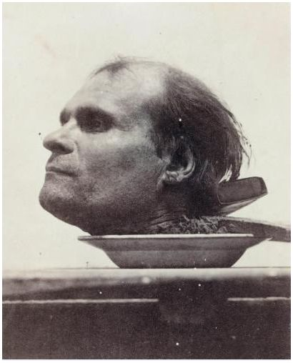

Exécutions capitales : 1833-1870

| Date | Heure | Lieu | Nom | Crime | Exécution | Condamnation | 1833 : 44 exécutions (+ 1 exécution militaire au moins + 1 exécution au bagne au moins) Le 1er janvier 1833 marque la date à laquelle tous les aides perdent leur emploi, sauf dans douze départements. Dorénavant, les exécuteurs sont liés par binômes départementaux sur base d'une liste établie par le Ministère de la Justice, et peuvent au besoin recourir à solliciter l'aide d'autres exécuteurs voisins. |
| Jeudi 31 janvier 1833 |
7h45 | Rennes Ille-et-Vilaine Champ de Mars (Esplanade Charles de Gaulle) |
Jean Joseph Bouffort 34 ans, laboureur (30 septembre 1798, Romagné, 35) |
FÉMINICIDE INTIME. Pour refaire sa vie avec sa voisine, noie le mari de sa maîtresse dans un fossé en le maintenant sous l'eau avec un pilon. Tente d'étrangler sa propre femme, Perrine Marie Alix, épouse Bouffort, 34 ans, cultivatrice, avant de la tuer à coups de hache le 08 mai 1832 à Saint-Sauveur-des-Landes. |
Exécuteurs : Henry Picler (Rennes), Joseph Ganié (aide, Rennes), Charles Marie Louis Lacaille (Saint-Brieuc). |
22 novembre 1832 (Cour d'assises de l'Ille-et-Vilaine) |
| Vendredi 01 février 1833 |
15h | Brest Finistère Esplanade en bas de la rampe d'accès nord du bagne, devant le bâtiment de la Corderie |
Urbain Paul Douix 30 ans, cordonnier (vers 1802, Saint-Jean, 43) |
Le 26 janvier 1833, tue de deux coups de couteau Bastien Nédellec, 31 ans, garde-chiourme à la 3e Compagnie. | Foule immense. Accompagné par l'aumônier de marine Bucaille, se montre accablé. Tente de parler à voix haute aux autres détenus présents, mais s'exprime d'une voix qualifiée d'éteinte : "Je vais mourir repentant ; soyez plus sages que moi. Adieu." | 31 janvier 1833 (Tribunal maritime spécial) |
| Mardi 05 février 1833 |
10h | Bourbon-Vendée Vendée ? |
François Robin 45 ans, tisserand, maçon (27 octobre 1787, Cheffois, 85) |
FÉMINICIDE INTIME. Empoisonna sa femme Marie Lumineau, 40 ans, dont il était séparé, à Pouzauges le 09 juin 1832 avec du pain à l'arsenic. Sa fille Rose Robin, 4 ans, est également intoxiquée par le pain. Avait déjà tenté plusieurs années plus tôt de l'abattre d'un coup de fusil. |
Exécuteurs : Pierre Wolf (Bourbon-Vendée), Jacques Auguste Ganié (Nantes). |
03 septembre 1832 (Cour d'assises de la Vendée) |
| Vendredi 08 février 1833 |
15h30 | Chaumont Haute-Marne ? |
François Stoquiaux 36 ans, serrurier mécanicien (24 novembre 1796, Saint-Dizier, 52) |
Le 01 juillet 1832, à Eurville, tue Denis Depoisson, 59 ans, propriétaire et garde forestier. | Exécuteurs : François Cané (Chaumont), François Féréol Pierrot (Vesoul). |
04 novembre 1832 (Cour d'assises de la Haute-Marne) |
| Samedi 09 février 1833 |
14h | Moulins Allier Place aux foires |
Pierre "Picton" Pontet 19 ans, couvreur de tuiles (vers 1813, Montmarault ?, 03) |
Etrangle le 16 mars 1831 à Vernusse, au château de Puy-Guillon, Michel de Rollat, 86 ans, pour lui voler 3000 francs. François Martin, 37 ans, journalier, condamné à mort, est gracié. Leur complice, la veuve Madeleine Pontet, mère de Pierre et épouse en secondes noces de François, est condamnée à six ans de prison. |
Exécuteurs : Jacques Christophe Grinheiser (Moulins), Joseph Thomas (Riom). | 10 novembre 1832 (Cour d'assises de l'Allier) |
| Samedi 09 février 1833 |
12h | Dunkerque Nord Place Royale (Place Jean-Bart) |
Antoine Joseph Louis Armand 31 ans, acteur au théâtre de l'Odéon (27 janvier 1801, Paris) |
FÉMINICIDE INTIME. Voleurs et escrocs, assassinent de huit coups de couteau, dont trois au coeur Fanny Barre, épouse Armand, à Adinkerque (Belgique), le 17 janvier 1832, et jettent le cadavre dans la mer du Nord. |
Exécuteurs : Pierre Auguste Demettre (Douai), Guillain Demettre (aide, Douai), Adolphe Richard Jouenne (Saint-Omer) ou Louis Joseph Marchand (aide, Saint-Omer). |
12 novembre 1832 (Cour d'assises du Nord) |
| Jules "Delaval" Mark 35 ans, acteur au théâtre de l'Odéon (1797, Paris) |
||||||
| Vendredi 15 février 1833 |
12h | Saint-Amand Nord Grand'Place |
Louis Joseph Despret 46 ans, cultivateur (30 septembre 1786, Lecelles, 59) |
Assassine le 05 avril 1832 à Saint-Amand-les-Eaux sa tante, Marie Despret, veuve Deloffre, puis la jette dans un puits pour lui voler 1246 francs. "Gueule Brûlée" Quesnoy, condamné à mort, est gracié. Leur complice, "Louis Brice" Broutin, est condamné à quinze ans de travaux forcés. |
Exécuteurs : Pierre Auguste Demettre (Douai), Guillain Demettre (aide, Douai), Adolphe Richard Jouenne (Saint-Omer) ou Louis Joseph Marchand (aide, Saint-Omer). |
20 novembre 1832 (Cour d'assises du Nord)) |
| Samedi 16 février 1833 |
12h30 | Bernay Eure ? |
Jacques Martin 31 ans, tisserand (?, Carsix, 27) |
Membre d'une bande sévissant à la Vallée des Boves, sur la route de Caen à Paris, quarante-deux chefs d'inculpation. Le 09 octobre 1831, attaque à Brionne la diligence de Bernay, et tire une balle dans la direction du cocher qui parvient à fuir. Le 12 octobre, près de Malbrouck, sur la route de Caen à Paris, attaque M.Tranchard et le dévalise. Le même soir, assaille le cocher Prévost, et se fait remettre une montre et 50 francs d'argent. Le 15 octobre 1831, lors de l'attaque de M.Deschamps, voiturier, lequel est défendu par quatre amis, manque tuer d'un coup de fusil M. Seblery avant de s'enfuir et d'être arrêté avec le reste de la bande dans une auberge voisine. Sever Rousée, 22 ans, condamné à la peine de mort, est gracié. Rousée père est condamné aux travaux forcés à perpétuité, un autre complice à six ans de travaux forcés, un autre à cinq ans, la femme Martin à cinq années de prison, Lebrun est acquitté. |
Exécuteurs : Amand Leroy (Évreux), Joseph Antoine Deibler (aide, Évreux), Charles André Férey (Rouen) ou Julien Fortuné Leroy (aide, Rouen). |
03 décembre 1832 (Cour d'assises de l'Eure) |
| Lundi 18 février 1833 |
12h15 | Angers Maine-et-Loire Champ de Mars (Place Leclerc) |
Urbain Plançonneau 43 ans, artiste vétérinaire (29 décembre 1789, Brain-sur-l'Authion, 49) |
A Andard, le 05 août 1830, empoisonne ses oncle et tante, les époux Terrier, leur mère, la veuve Tesnier, et leur voisin, Chardon, avec de la soupe aux choux à l'arsenic, puis avec des prunes cuites. Terrier meurt le 24 septembre 1830, la veuve Terrier le 18 octobre 1830, et la veuve Terrier survit après huit mois d'alitement, mais demeurant handicapée à vie. Le 24 juillet 1832, à Gonnes, met de l'arsenic dans la farine de son beau-frère, Moreau, serrurier : toutes les personnes qui mangent du pain deux jours après sont atteints de violents vomissements et diarrhées. |
Exécuteurs : Pierre Marie Ganié (Angers), François Hypolite Desmorest (Laval). |
05 décembre 1832 (Cour d'assises du Maine-et-Loire) |
| Mercredi 20 février 1833 |
11h15 | Lyon Rhône Place Louis XVIII (Place Carnot) |
François Guerre 30 ans, ouvrier en soie (vers 1802, Murs, 01) |
Le 19 octobre 1832, à Lyon, au Grand-Camp, assomme avec une pierre M.Boyer, avec lequel il s'était querellé, puis le jette inconscient mais en vie dans le Rhône, et va ensuite à son domicile rue Rousseau, chercher sa servante, Mme Y., qu'il attire dans un guet-apens sur l'île Rousseau et poignarde mortellement à son tour avant de piller la maison et de voler un sac contenant 500 francs d'écus et plusieurs objets précieux, dont deux gobelets d'argent et l'argenterie. | Exécuteurs : Claude Antoine Chrétien (Lyon), Nicolas Roch (aide, Lyon), Jean Guillaumet (Bourg) ou Pierre Joseph Vermeille (Grenoble) |
03 décembre 1832 (Cour d'assises du Rhône) |
| Vendredi 22 février 1833 |
15h | Toulouse Haute-Garonne Place Porte-Villeneuve (Grand-Rond Boulingrin) |
Bertrand "Marquis" Dupin 56 ans, carillonneur (vers 1776, Savarthès, 31) |
Avec la complicité de Barthélémi Ané, 54 ans, artiste vétérinaire, tue en l'assommant Jean Perbost, 75 ans, cultivateur, le 01 mars 1832, dans la forêt de Landhorte pour le voler puis jettent le corps dans le ruisseau du Soumès, où il fut récupéré huit jours plus tard. Dupin devait 200 francs à la victime qu'il ne comptait pas rembourser, et Perbost avait refusé que sa fille épouse le fils Ané. Complice présumé, François Duchein, 24 ans, tailleur, est acquitté. Mis en cause, Pierre Cassagne et Jean Lacroix comparaissent devant la même cour d'assises en août 1833 et sont acquittés. Lui aussi condamné à mort, Ané obtient un sursis au matin de l'exécution dans le but de faire d'ultimes révélations, et se suicide en prison le 27 février 1833. |
Exécuteurs : Laurens Guerchoux (Toulouse), Joseph Beaufay (Foix) |
25 novembre 1832 (Cour d'assises de la Haute-Garonne) |
| Vendredi 01 mars 1833 |
12h | Caen Calvados Place Saint-Martin/Promenades Saint-Julien (Fossés Saint-Julien) |
Jean Baptiste François Gellée 66 ans, cultivateur (vers 1766, Millières, 50) |
Le 24 février 1832, à Millières (50), tue à coups de barre de fer et de ciseau à bois leur gendre Auguste Legresle, qu'il détestait. Sa femme Perrine Gillette Elisabeth Jouvet, 60 ans, cultivatrice, son fils Louis François Victor Gellée, 32 ans, cultivateur et sa fille Adélaïde Aimée Marguerite Gellée, veuve Legresle, 30 ans, cultivatrice, condamnés à mort, sont graciés. |
Exécuteurs : Charles Nicolas Lubin Jouenne (Caen), Mathias Spirkel (aide, Caen), François Lubin Desmorest (Coutances) ou Dominique Martinet (aide, Coutances) |
18 septembre 1832 (Cour d'assises de la Manche) 02 décembre 1832 (Cour d'assises du Calvados) |
| Samedi 02 mars 1833 |
7h | Paris Seine Barrière Saint-Jacques/Barrière d'Arcueil |
François Régey 38 ans, sergent de ville (PE 26 septembre 1794, Arc-les-Gray, 70) |
Le 30 août 1832, empoisonne à l'acide prussique son ami Ramus, garçon de caisse, Suisse, pour lui voler environ 3100 francs, puis dépèce son corps et le jette dans la Seine au niveau du pont de Tournelle. | Exécuteurs : Henry Sanson (Paris), Henri-Clément Sanson (Paris) Réveillé à 4h par l'abbé Montès, à Bicêtre. Jusqu'alors courageux, sombre dans la plus horrible stupéfaction. Ne dit pas un mot durant la toilette. Refuse d'entendre les exhortations du prêtre ainsi que d'embrasser le Christ devant l'échafaud. 150 personnes présentes. |
26 janvier 1833 (Cour d'assises de la Seine) |
| Mardi 02 avril 1833 |
14h | Bastia Corse "U Monte", Place Saint-Nicolas |
Pierre Marie Giovannelli 24 ans, propriétaire (vers 1808, Saint-Andrea, 20) |
Assassine de deux coups de fusil, le 06 juin 1832 à Calcataggio, Ferdinand Gentili, sans véritable raison. Déjà jugé pour meurtre de M.Pereti, domestique des Gentili, en 1831, mais acquitté grâce au témoignage de sa seconde victime. |
Exécuteurs : Michel Porro (Bastia), Antoine François Balthasar Porro (aide, Bastia) Apprend la nouvelle, résigné. Ecrit à sa mère et discute avec plusieurs personnes. Quitte la prison vers 1h, formant cortège, entouré à droite d'un prêtre, à gauche d'un frère de la Sainte-Miséricorde, et suivi par l'exécuteur et son aide. Monte à l'échafaud fermement, parle près de cinq minutes à la population pour avouer ses crimes, et dire de prendre exemple sur son sort. La tête tranchée roule sur l'échafaud et tombe au sol : ramassée par l'un des frères de la Miséricorde, qui se chargent de conduire le corps au cimetière. |
23 novembre 1832 (Cour d'assises de la Corse) |
| Jeudi 18 avril 1833 |
12h | Niort Deux-Sèvres Place de la Brèche |
Hilaire "Bourseault" Boureau 29 ans, cultivateur (22 février 1803, Availles-Thouarsais, 79) |
PARRICIDE. En août ou septembre 1832, à Thouars (ou à Availles-Thouarsais ?), égorge d'un coup de couteau son père Pierre Boureau. Sa mère et sa soeur, accusées de complicité, sont acquittées. |
Exécuteurs : Louis Auguste Désiré Asselin (Niort), Raymond Peyrussan (Poitiers) |
24 janvier 1833 (Cour d'assises des Deux-Sèvres) |
| vers le 24 avril 1833 | 7h30 | Lyon Rhône Perrache |
Rousseau ? (?) |
Le 19 avril 1833, à la caserne des Carmes-Déchaux, abat d'un coup de fusil le sergent Ducroquet, du 21e régiment de ligne. Affirmera avoir agi sous le coup de la colère mais s'en être pris au mauvais supérieur hiérarchique, n'ayant aucun différend contre Ducroquet. |
avril 1833 (Conseil de guerre) |
|
| Samedi 18 mai 1833 |
11h | Riom Puy-de-Dôme ? |
Antoine Cressin 28 ans, cultivateur (1805, Auzat-sur-Allier, 63) |
Pour une question de délimitation entre leurs terrains, tue son frère de trois coups de bêche dans la tête le 27 octobre 1832 à Auzat-sur-Allier. | Exécuteurs : Joseph Thomas (Riom), Jacques Christophe Grinheiser (Moulins). |
03 mars 1833 (Cour d'assises du Puy-de-Dôme) |
| Samedi 01 juin 1833 |
15h | Chartres Eure-et-Loir ? |
Michel Denis Forges 27 ans, cordonnier (04 juin 1805, Bonnétable, 72) |
Ayant déjà purgé 5 ans de centrale à Melun pour vol en 1826, le 26 août 1832, à Tillières, tente de tuer à coups de bâton Louis Guérin, 65 ans, journalier, pour lui voler 46 francs, son couteau et sa montre. Le coup porté fut si violent que des éclats d'os du nez furent retrouvés incrustés dans le bois. La victime en reste borgne et sujette à de grosses pertes de mémoire. |
Exécuteurs : François Éloi Deville (Chartres), Laurent Reine (Versailles), Henry Reine (aide, Versailles). |
30 mars 1833 (Cour d'assises de l'Eure-et-Loir) |
| Samedi 01 juin 1833 |
16h | Rodez Aveyron Plateau des Cordeliers/Place du Palais-de-Justice (Boulevard Laromiguière) |
Jean Dausse 31 ans, cultivateur (vers 1802, Cassagnes, 12) |
FÉMINICIDE INTIME. Cultivateurs à La Garrigue, commune de Rullac-Saint-Cirq, décidèrent de tuer Marie Anne Lacombe, la jeune épouse de Dausse, car celle-ci se plaignait de l'affreuse influence de Carcenac sur son mari. Dans la nuit du 21 au 22 mai 1832, Dausse mit le feu à la maison, espérant que Marie Anne y mourrait, mais comme elle parvint à s'en sortir, Dausse l'égorgea à coups de serpette, arme fournie par Carcenac. |
Exécuteurs : Pierre Victor Rives (Rodez), Pierre Miraucourt (Albi). Première exécution en ce lieu, remplaçant la traditionnelle place du Bourg. |
13 mars 1833 (Cour d'assises de l'Aveyron) |
| Joseph Carcenac 27 ans, cultivateur (vers 1806, Pampelune ? Alrance ?, 12) |
||||||
| Samedi 08 juin 1833 |
15h10 | Orléans Loiret Place du Martroi |
Pierre Alexandre Creuzot 25 ans, charretier de labour (02 mars 1808, Auvilliers, 45) |
Assassine à coups de hache un couple de mendiants, Edmé Milhaud et Marie Briçon, dans la nuit du 06 au 07 janvier 1833 à Aussy pour se venger de Milhaud qu'il haïssait. Cousin germain du précédent condamné à mort. |
Exécuteurs : Auguste Gabriel Desmorest (Orléans), Charles François Desfourneaux (Blois). Le dernier charpentier à accepter de monter l'échafaud étant mort en 1832 du choléra, personne ne voulait lui succéder et monter l'estrade. Le procureur général doit intervenir et procéde par tirage au sort ; au final, c'est le constructeur de la guillotine orléanaise en personne qui accepte cette responsabilité. |
03 avril 1833 (Cour d'assises du Loiret) |
| Lundi 10 juin 1833 |
15h30 | Albi Tarn Place du Foiral/Castelviel |
Marie Anne Bosc, veuve Bonnet 37 ans, ménagère (vers 1795, Sainte-Cécile, 81) |
AMANTS DIABOLIQUES. Le 26 août 1832 à Tonnac, étranglent avec une corde Jean-Baptiste Bonnet, époux de Marie-Anne et patron d'Hébrard, et mettent en scène son corps dans la grange pour faire croire à un suicide. |
Exécuteurs : Pierre Miraucourt (Albi), Pierre Victor Rives (Rodez). |
09 mars 1833 (Cour d'assises du Tarn) |
| 16h | Pierre Hébrard 50 ans, domestique (vers 1782, Feneyrols, 82) |
|||||
| Samedi 15 juin 1833 |
12h | Montargis Loiret ? |
Jean Creuzot 23 ans, vigneron (04 novembre 1809, Corbeilles, 45) |
AMANTS DIABOLIQUES. Le 06 octobre 1832 à Mézières, epoisonna à l'arsenic sa femme Véronique Petit, épouse Creuzot, 45 ans, pour refaire sa vie avec sa maîtresse Mme Janvier. Cette dernière est acquittée. Cousin de Pierre Alexandre Creuzot, supplicié une semaine auparavant à Orléans. |
Exécuteurs : Auguste Gabriel Desmorest (Orléans), Charles François Desfourneaux (Blois). |
02 avril 1833 (Cour d'assises du Loiret) |
| Samedi 29 juin 1833 |
12h | Lisieux Calvados Place du Marché-aux-chevaux (Place de la République) |
Jacques Madeleine 42 ans, ouvrier charpentier (26 décembre 1790, Druval, 14) |
AMANTS DIABOLIQUES. Déjà condamné pour coups et blessures en 1812 à cinq ans de prison. A Saint-Jacques-de-Lisieux, le 09 novembre 1832, abat d'un coup de pistolet Jacques François Maintrieu, cultivateur, mari de sa maîtresse. Avait déjà tenté d'empoisonner son rival avec des cantharides. Rose Emélie Roussel, veuve Maintrieu, en fuite, est jugée par contumace. |
Exécuteurs : Charles Nicolas Lubin Jouenne (Caen), Mathias Spirkel (aide, Caen), François Lubin Desmorest (Coutances) ou Dominique Martinet (aide, Coutances) |
11 mai 1833 (Cour d'assises du Calvados) |
| Samedi 06 juillet 1833 |
14h30 | Angoulême Charente Champ de Mars/Champ de Foire |
Bertrand "Magnon" Latournerie 36 ans, tailleur (27 avril 1797, Sames, 64) |
Bagnards condamnés à perpétuité, évadés du bagne de Rochefort, le 18 janvier 1833, à Angoulême, attaquent la veuve Drouet, épicière, rue du Faubourg-Saint-Auzonne, qu'ils étranglent si fort qu'ils lui en brisent la colonne vertébrale avant de lui écraser la tête sous une porte pesant 60 kilos, pour la voler. En 1831, Jécher avait été condamné à quinze ans de travaux forcés pour avoir assassiné M.Drouet... parce qu'il était amoureux de son épouse ! Il avait promis, quand elle était venue déposer contre lui, qu'elle mourrait de sa main. |
mai 1833 (Cour d'assises de la Charente) |
|
| Pierre Sechère 33 ans, terrassier (vers 1800, L'Houmeau ?, 17) |
||||||
| Mercredi 10 juillet 1833 |
11h10 | Angers Maine-et-Loire Champ de Mars (Place Leclerc) |
Michel Augustin Réveillon 27 ans, ouvrier tisserand (07 décembre 1805, Saint-Georges-du-Bois, 49) |
Le 28 novembre 1832, à Cornillé, assassine Marie Gastecelle, veuve Métivier, 69 ans, pour la voler. | Exécuteurs : Pierre Marie Ganié (Angers), François Hypolite Desmorest (Laval). |
09 mai 1833 (Cour d'assises du Maine-et-Loire) |
| Lundi 22 juillet 1833 |
15h | Toulouse Haute-Garonne Place Porte-Villeneuve (Grand-Rond Boulingrin) |
Bernard Travère 32 ans, cultivateur (vers 1801, Binos, 31) |
Tue d'un coup de hache dans la tête le 21 août 1832 à Binos son oncle Jean-François Travère, dont il était l'héritier et qui envisageait de le déshériter parce que le jeune homme voulait épouser une femme que Jean-François n'approuvait pas. | Exécuteurs : Laurens Guerchoux (Toulouse), Joseph Beaufay (Foix) |
20 mai 1833 (Cour d'assises de la Haute-Garonne) |
| Jean Janet 32 ans, marneur (06 juin 1800, Marquein, 11) |
A Gibel, entre le hameau des Martys et Lamandre, abat de deux coups de feu le 19 janvier 1833 Baptiste Lautré, et tente de tuer à coups de bâton Jean Lautré, son futur gendre. Oncle maternel des frères Guillaume et Baptiste Touja, il avait très mal pris que leur grand-mère paternelle, Cécile Serres, veuve Saury, deshérite les deux garçons à cause de leurs mauvais traitements et préfère donner procuration sur sa fortune à Baptiste Lautré, son gendre, qui la respectait comme sa propre mère. Guillaume Touja, Baptiste Touja et le domestique de Jeannet, Germain Descuns, sont respectivement condamnés aux travaux forcés à perpétuité, à vingt ans et dix ans de travaux forcés. |
25 mai 1833 (Cour d'assises de la Haute-Garonne) |
||||
| Lundi 26 août 1833 |
10h | Châtenay-sur-Seine Seine-et-Marne ? |
Antoine "Patu" Brette 41 ans, berger (26 août 1791, Châtenay, 77) |
Auteurs de plusieurs vols dans la région de Montereau, jugés dans le cas de deux dossiers distincts. 1e affaire : incendient volontairement plusieurs maisons du hameau du Plessis, à Châtenay, dans la nuit du 31 août au 01 septembre 1832, causant la mort du petit Roux, 3 ans, dans les flammes. 2e affaire : attaquent le 28 novembre 1830 à Balloy la ferme de Rozelle, propriété de la famille Morin. Jettent Anne Morin, la fille, dans un puits - elle s'en sort vivante -, et abattent d'un coup de fusil Anne-Catherine Fourquenay, veuve Morin, la maîtresse des lieux, en emportant 20.000 francs. Louis Edmé Piquet, 26 ans, manouvrier et Jean Louis "Le Gros" Brette, 26 ans, condamnés à mort, sont graciés. Nicolas "Trouvé" Chevalier, 38 ans, batteur en grange, est condamné aux travaux forcés à perpétuité. |
Exécuteurs : Nicolas Placide Doublot (Melun) et au moins deux aides de Paris. Les deux arrêts de mort prévoyaient deux lieux distincts d'exécution : Provins pour celui du 21, Châtenay pour celui du 29. Quittent la prison de Melun le 25 août vers 22 heures, arrivent à Salins au petit matin. Durant le trajet, Patu parvient à relâcher ses liens et à sauter de la charrette, mais il est aussitôt repris. Tout au long du voyage, les deux condamnés ne cessent de s'insulter et de s'accuser. A Châtenay, arrivent devant une prairie communale où l'échafaud est dressé. Les habitants, révoltés par leurs crimes, ont passé outre le "préjugé" envers les exécuteurs et prêté main forte à ceux-ci pour élever les bois de justice. Présence des fils Morin au premier rang, mais aucun des condamnés ne révelera la cachette de l'argent dérobé à Balloy. |
1e affaire : 21 mai 1833 (Cour d'assises de la Seine-et-Marne) 2e affaire : 29 mai 1833 (Cour d'assises de la Seine-et-Marne) |
| Edmé Jacques Piquet 39 ans, cultivateur (11 novembre 1793, Laval-en-Brie, 77) |
||||||
| Mercredi 18 septembre 1833 |
11h45 | Parthenay Deux-Sèvres ? |
Jacques "Le capitaine noir" Bory 38 ans, bordier (03 mai 1795, Beaulieu-sous-Parthenay, 79) |
Chef d'une bande de chouans. Assaille le 26 mars 1832, entre Chanteloup et la Chapelle-Pitié, le colporteur Lemoff, qu'il frappe à coups de fusil pour voler deux aunes de galon blanc. Le 10 août 1832, en compagnie de quatre acolytes, se présente chez M.Ravix, maire de Lhoumois, l'attache et l'abat de deux coups de fusil. Il survit une nuit entière à ses blessures. Aurait également tenté d'assassiner le 12 septembre 1832 à Parthenay le fils Bouchet, étudiant en droit à Poitiers, qui survit mais conserve définitivement une balle dans l'abdomen. Condamné également pour attentat contre la sûreté intérieure de l'Etat. Son complice Secondi avait été exécuté au même endroit l'an précédent. Jugé une première fois le 12 avril 1833, mais l'affaire est renvoyée à la session suivante. |
Exécuteurs : Louis Auguste Désiré Asselin (Niort), Raymond Peyrussan (Poitiers) |
13 juillet 1833 (Cour d'assises des Deux-Sèvres) |
| Mardi 24 septembre 1833 |
14h | Évreux Eure Place du Grand-Carrefour |
François Jean Baptiste Dejors/Dejard 27 ans, cultivateur (30 septembre 1805, Port-Villez, 78) |
FÉMINICIDE INTIME. Etrangle dans la nuit du 10 au 11 janvier 1833 à Vernon sa femme Augustine Pointel, épouse Dejors, au bout de huit mois de mariage, et tente de faire passer sa mort pour un suicide. Maltraitait la jeune femme depuis le début et avait déjà tenté d'empoisonner avec un bouillon au vert-de-gris à la Toussaint 1832. Leur fille, née huit jours plus tôt, ne survit que quelques jours au décès de sa mère. |
Exécuteurs : Amand Leroy (Évreux), Joseph Antoine Deibler (aide, Évreux), Charles André Férey (Rouen) ou Julien Fortuné Leroy (aide, Rouen). Calme, impassible. Monte sur l'échafaud avec courage et s'adresse au public. |
24 juillet 1833 (Cour d'assises de l'Eure) |
| Jeudi 26 septembre 1833 |
7h | Paris Seine Barrière Saint-Jacques/Barrière d'Arcueil |
Louis François Théophile Lemoine 35-38 ans, cuisinier (vers 1795, ?) |
Déjà incarcéré trois ans à la centrale de Melun pour faux, libéré le 19 novembre 1831. Egorge à coups de couteau de cuisine le 29 janvier 1833 la veuve Idatte, femme de chambre de Mme Dupuytren, au 2, rue Joubert, pour voler de l'argenterie, des cachemires et des bijoux. Premier procès le 12 juillet 1833 reporté à cause de l'absence d'un témoin capital. Pierre Augustin Gillard, 32 ans, chef cuisinier, est condamné à dix ans de travaux forcés et à l'exposition. |
Exécuteurs : Henry Sanson (Paris), Henri-Clément Sanson (Paris) Refusant d'avoir le moindre contact avec un prêtre autre que l'abbé Châtel, évêque de Lyon, reçoit la nouvelle de ce dernier en grande tenue de primat des Gaules. S'entretient assez longuement avec lui. Confié aux exécuteurs pour la toilette, reçoit conseil de l'un d'eux : "Ne fléchis pas !" A cela, répond, impassible : "Si je fléchissais, on me croirait coupable." Quitte Bicêtre en fourgon à 6h40. Une fois sur l'escalier, salue le père Châtel : "Adieu, monsieur l'Évêque, adieu ! Je lègue au juge d'instruction Duret-d'Archiac le remords d'avoir fait couler mon sang. Puisse tout mon sang, qui va couler, agrandir le domaine de l'église française. Je vous recommande ma famille, et surtout mon frère, qui a été aussi victime et arrêté pendant longtemps. Je pardonne en mourant à Madame Brunet, le seul témoin qu'on a entendu contre moi, et qui est cause de tous mes malheurs !" Attaché sur la bascule, crie : "Je meurs pour la République ! Puisse tout mon sang cimenter à jamais le bonheur de ma patrie !" Corps conduit au cimetière de Clamart. |
08 août 1833 (Cour d'assises de la Seine) |
| Samedi 28 septembre 1833 |
11h | Lyon Rhône Place Louis XVIII (Place Carnot) |
Prosper Deschamps 24 ans, apprenti fabricant d'étoffes (vers 1809, Chambéry, 73) |
Déserteur d'un régiment d'artillerie sarde, poignarde le 26 juillet 1833 son patron, M.Parenton, au 8, rue de la Barre à Lyon, causant sa mort le 3 août. Mobile : la vengeance. Deschamps était si sale que les autres ouvriers refusaient de toucher le pain après qu'il s'en soit servi - il se mouchait dans ses doigts, entre autre choses. Le 21 juillet, empêché par Mme Parenton de se couper du pain tout seul, il avait proféré insultes et menaces qui lui avaient valu d'être licencié sur le champ. |
Exécuteurs : Claude Antoine Chrétien (Lyon), Nicolas Roch (aide, Lyon), Jean Guillaumet (Bourg) ou Pierre Joseph Vermeille (Grenoble) |
24 août 1833 (Cour d'assises du Rhône) |
| Mercredi 02 octobre 1833 |
12h | Lanarce Ardèche Hameau de Peyrebeille, face à l'auberge |
Pierre "Blanc" Martin 66 ans, aubergiste (27 juillet 1766, Lavillatte, 07) |
Tenanciers de l'auberge du Coula, au hameau de Peyrebeille, commune de Lanarce, surnommée l'auberge rouge ; Marie était la fille de l'ancien propriétaire, et Martin son époux, tandis que Rochette était leur domestique. Auraient au fil des années tué les rares voyageurs qui osaient y passer la nuit entre 1807 et 1831 (soit 53 victimes selon Rochette). La seule mort qui leur sera vraiment reprochée est celle du colporteur Antoine Anjolras, retrouvé le 26 novembre 1831 sur les bords de l'Allier. POSSIBLE ERREUR JUDICIAIRE ! |
Exécuteurs : Nicolas Pierre Herman (Privas), François "Fontan" Roch (Mende), Nicolas Roch (Mende, aide auxiliaire), ?. |
25 juin 1833 (Cour d'assises de l'Ardèche) |
| Marie Breysse, épouse Martin 55 ans, aubergiste (20 septembre 1777, Lanarce, 07) |
||||||
| Jean Rochette 48 ans, domestique, cultivateur (vers 1785, hameau de Banne, Mazan, 07) |
||||||
| Mercredi 09 octobre 1833 |
13h | Périgueux Dordogne Place de Prusse (place Francheville) |
Jean Favard 44 ans, cultivateur (02 janvier 1789, Tourtoirac, 24) |
Dans la nuit du 26 au 27 décembre 1832, sur la route de Périgueux, fait assassiner à coups de hache dans la tête Dominique Raquette, convoyeur de fonds pour les percepteurs du canton d'Hautefort, afin de lui dérober 3104 francs. François Leymarie, 48 ans, cultivateur, qui avait porté les coups mortels, est condamné aux travaux forcés à perpétuité, Antoine Favard fils, 16 ans, est acquitté. |
Exécuteurs : Louis François Gabriel Deville (Périgueux), Jean Grosholtz (Tulle) Certain d'être gracié et libéré, se montre résigné. Se confesse en prison. Va assez ferme au supplice, à pied, en compagnie de l'abbé Audierne, aumônier. Pâle mais un peu souriant, s'arrête de marcher par deux fois pour prier, et la foule fait de même. Au pied de l'échafaud, demande à se confesser une seconde fois, ce qui prend une demi-heure, à la protestation de spectateurs qui ont hâte que cela finisse. La tête tranchée roule hors du panier : des adolescents et des hommes se précipitent pour contempler les dernier soubresauts du corps décapité. L'un d'eux, qui ose le toucher en ricanant, reçoit quelques pierres de la part d'autres spectateurs choqués. |
19 juillet 1833 (Cour d'assises de la Dordogne) |
| Jeudi 10 octobre 1833 |
11h | Cassel Nord Grand'Place |
Liévin Cornil César Demey 34 ans, garçon de labour (20 novembre 1798, Steenvoorde, 59) |
Assassine sa tante, Isabelle Constance Vandenkerckhove, épouse Mortier, 53 ans, à Cassel le 24 mars 1832 à coups de fourche et de planche pour lui voler 360 francs. Élevé par son oncle et sa tante, il avait été mis à la porte de la ferme à cause de son comportement voleur. |
Exécuteurs : Pierre Auguste Demettre (Douai), Guillain Demettre (aide, Douai), Adolphe Richard Jouenne (Saint-Omer) ou Louis Joseph Marchand (aide, Saint-Omer). |
08 août 1833 (Cour d'assises du Nord) |
| Samedi 16 novembre 1833 |
15h | Rodez Aveyron Plateau des Cordeliers/Place du Palais-de-Justice (Boulevard Laromiguière) |
Amans Pierre Héran 39 ans, propriétaire cultivateur (14 juillet 1794, Bozouls, 12) |
Abat de deux balles de pistolet le 29 mars 1833 à Gilborgues Thomas Galy, cultivateur à Grioudas, son ancien associé, qui venait lui réclamer remboursement d'une dette, avant de l'achever d'un coup de pelle à feu dans la tête, puis de l'éventrer d'un coup de couteau. Dissimule le corps sous un tas de pierres. Avait également, dans la nuit du 07 au 08 septembre 1824 abattu d'un coup de feu dans le ventre Marguerite Verg, épouse Rames, de Gilhorgues, et mis le feu au corps. |
Exécuteurs : Pierre Victor Rives (Rodez), Pierre Miraucourt (Albi). |
28 août 1833 (Cour d'assises de l'Aveyron) |
| Lundi 25 novembre 1833 |
12h15 | Vannes Morbihan Champ de foire (Place de la Libération) |
Pierre Hervio 23 ans, bûcheron (30 juin 1810, Pluméliau, 56) |
Le 17 juin 1833, au hameau de Kerhilio, commune de Pluméliau, assassine Julienne Le Moignic, 63 ans, cultivatrice, pour la voler. | Exécuteurs : Jacques Benjamin Ganié (Vannes), Claude François Desmorest (Quimper). |
09 septembre 1833 (Cour d'assises du Morbihan) |
| Samedi 14 décembre 1833 |
11h | Saint-Brieuc Côtes-du-Nord ? |
Guillaume Guézou 55 ans, cultivateur, clerc de notaire (24 avril 1778, Plouezec, 22) |
Egorge à coups de couteau le 29 juin 1833 dans un champ de Plouha Marguerite Kergoat, 14 ans, vachère. | Exécuteurs : Charles Marie Louis Lacaille (Saint-Brieuc), Henry Picler (Rennes), Joseph Ganié (aide, Rennes). |
19 octobre 1833 (Cour d'assises des Côtes-du-Nord) |
| Mardi 17 décembre 1833 |
12h30 | Niort Deux-Sèvres Place de la Brèche |
Jean Julien Desaivre 54 ans, tisserand (21 septembre 1779, Faye-l'Abbesse, 79) |
Chouan. | Exécuteurs : Louis Auguste Désiré Asselin (Niort), Raymond Peyrussan (Poitiers) Plus d'exécution dans le département avant 1894. |
29 octobre 1833 (Cour d'assises des Deux-Sèvres) |
1834 : 12 exécutions |
| Mercredi 29 janvier 1834 |
11h | Châteaubriant Loire-Inférieure Place de la Motte |
Jean "Daube-les-Bleux" Poulain 23 ans, ouvrier bûcheron (11 novembre 1810, Erbray, 44) |
Réfractaires, membres de la bande de chouans de Terrieu, dit "Coeur-de-Lion", auteurs de plusieurs assassinats et incendies. Le 07 novembre 1831, attaquent et dévalisent Charles Erondelle, notaire à Châteaubriand ; en juin 1832, à Juigné, attaquent Louis Pichard, cordonnier ; le 04 juin 1832, à la Chapelle-Glain, agressent Louis Gauthier, laboureur. A la Jonchère, enlèvent Mlles Ragereau et Gicquel, domestiques, en pleine nuit, la conduisent en pleine forêt où ils les font mettre nues et les fouettent à coups de rameaux de houx pour les punir d'avoir ravitaillé des militaires. Tentent de tuer à coups de bâton le 27 septembre 1832 près du Moulin-de-la-Salmonuette Jean Lameth, boucher. Le 03 octobre 1832, tentent d'assassiner à coups de fusil, M.Maire, directeur de forges et maire de Moisdon. Le 07 octobre 1832, pillent la maison de M.Jambu, maire de Tréfieux, le frappent à coups de bâton dans la poitrine, puis font subir le même sort à son voisin, M.Chapelain, alors qu'ils s'enfuient. Le même soir, au cabaret Bordet, battent à coups de crosse de fusil plusieurs consommateurs, dont MM. Pelé et Raimbaut. Le 07 décembre 1832, manquent tuer à coups de bâton M.Péan, domestique. Le 31 décembre 1832, à Erbray, battent les époux Pourrias, cabaretiers, et M.Leroux, boucher. Le 23 mai 1833, à la Nautière, frappent à coups de pierre Julien Leroy. Leur complice Pierre Cadot est condamné à perpétuité. Poulain avait été condamné le 05 décembre précédent à quinze ans de travaux forcés par la même cour d'assises pour avoir, le 30 août 1831 près du château de la Jonchère, participé à une fusillade contre une troupe d'infanterie du 14e léger, au cours de laquelle un soldat meurt et quatre autres sont blessés. Jean Marie Huet, 23 ans, charpentier, charron, est condamné à mort et gracié. |
Exécuteurs : Jacques Auguste Ganié (Nantes), Pierre Wolf (Bourbon-Vendée). Ne prononcent pas un mot. Foule assez nombreuse. |
11 décembre 1833 (Cour d'assises de la Loire-Inférieure) |
| Julien Guillaume "Bouin" Louis 22 ans, laboureur (05 novembre 1811, Bain-de-Bretagne, 35) |
||||||
| Samedi 08 février 1834 |
11h | Montauban Tarn-et-Garonne Place Lagarrigue (Place Alexandre 1er) |
Pierre Biran 33 ans, garçon meunier (07 avril 1800, Le Castéra, 31) |
FÉMINICIDE INTIME. Employé au hameau de Vigneaux, commune de Pelleport (31), noya sa femme Monique Panneboeuf, épouse Biran, dans la nuit du 18 au 19 novembre 1832, dans un lavoir public de Caubiac, où le corps est repêché le 01 décembre suivant. Il trompait et battait son épouse et celle-ci envisageait de le quitter. | Exécuteurs : Henri Mathieu Guerchoux (Montauban), Laurent Désiré Desmorest (Cahors). Mention "exécuté" sur son acte de décès. |
18 août 1833 (Cour d'assises de la Haute-Garonne) décembre 1833 (Cour d'assises du Tarn-et-Garonne) |
| Samedi 16 août 1834 |
14h | Évreux Eure Place du Grand-Carrefour |
Rose Quesney 43 ans, domestique (vers 1791, La Chapelle-Bayvel, 27) |
Empoisonna son maître Jacques Deshayes (à Saint-Germain-Village le 29 juillet 1833 ?) | Exécuteurs : Amand Leroy (Évreux), Joseph Antoine Deibler (aide, Évreux), Charles André Férey (Rouen) ou Julien Fortuné Leroy (aide, Rouen). |
29 mai 1834 (Cour d'assises de l'Eure) |
| Vendredi 05 septembre 1834 |
11h | Toulon Var Place d'Italie (Place de Douaumont) |
Auguste Louis Loubier 25 ans, boulanger, ancien gardien de bagne (29 mars 1809, Trescléoux, 05) |
FÉMINICIDE INTIME. Le 27 mars 1834, à Toulon, rue de l'Armedieu, tue d'un coup de couteau Marguerite "Miette" Artigue, 25 ans, prostituée, sa maîtresse, qui voulait le quitter. |
Exécuteurs : Jean-François Heidenreich (Draguignan), Nicolas Bourgard (Aix). Aux policiers qui l'accompagnent, remarque : "Avec 1500 francs, on trouve un remplaçant dans l'armée ; moi, j'en donne volontiers trois mille à celui qui voudra prendre ma place ici. Le marché est avantageux, messieurs, n'est-ce pas ?" Va à l'échafaud en fumant le cigare, et fait quelques pas de danse en découvrant la guillotine. Pendant qu'un huissier lit la sentence, il discute avec l'exécuteur comme s'il s'adressait à un camarade. |
04 juillet 1834 (Cour d'assises du Var) |
| Samedi 13 septembre 1834 |
11h45 | Saint-Mihiel Meuse Place des Halles (Place Bailleux) |
Pierre Noël 24 ans, marchand colporteur (16 mai 1810, Bar-le-Duc, 55) |
A Erize-Saint-Dizier, assassine Antonio Alberici, colporteur italien. | Exécuteurs : Simon Hippolyte Desmorest (Saint-Mihiel), Pierre Emmanuel Desfourneaux (Metz). |
04 juillet 1834 (Cour d'assises de la Meuse) |
| Vendredi 17 octobre 1834 |
12h | Caen Calvados Place du Marché-Neuf (Rue Montoir-Poissonnerie) |
Marie Adélaïde Hébert, épouse Hébert 44 ans, ménagère (vers 1790, Paris) |
PARRICIDE. A Quetiéville, le 14 mai 1834, tente d'empoisonner à l'arsenic Marie Catherine Auney, veuve Hébert, sa mère, 74 ans, pour hériter plus rapidement de ses 500 francs de rente. La victime, ayant trouvé un goût bizarre au lait qu'elle consommait, avait fait boire un chien qui était mort presque aussitôt. |
Exécuteurs : Charles Nicolas Lubin Jouenne (Caen), Mathias Spirkel (aide, Caen), François Lubin Desmorest (Coutances) ou Dominique Martinet (aide, Coutances) |
09 août 1834 (Cour d'assises du Calvados) |
| Vendredi 31 octobre 1834 |
12h35 | Saint-Flour Cantal Place du Foirail (Cours Spy-des-Ternes) |
François Bournazel 55 ans, fournier (vers le 01 juillet 1779, Mauriac, 15) |
A Mauriac, le 13 février 1833, tuent leur créancier, M.Lestrade, usurier qui les harcelait pour récupérer les 600 francs qu'ils lui devaient, puis mutilent à coups de couteau le cadavre avant de le jeter dans un précipice. Isabeau Bournazel, épouse Betalioulon, 29 ans, ménagère, est condamnée à mort et graciée. |
Exécuteurs : André Joseph Foyez (Saint-Flour), François "Fontan" Roch (Mende), Nicolas Roch (aide auxiliaire, Mende) |
31 août 1834 (Cour d'assises du Cantal) |
| 12h40 | Annet Antoine Betalioulon 24 ans, maçon (09 mars 1810, Saint-Bonnet-le-Vert, 15) |
|||||
| 12h45 | Marguerite Dalger, épouse Bournazel 56 ans, fournière (16 septembre 1778, Mauriac, 15) |
|||||
| Lundi 03 novembre 1834 |
14h | Auxerre Yonne Place Saint-Amatre |
François Devaux 66 ans, sans profession (14 avril 1768, Billy-sur-Ourcq, 02) |
Mendiant, le 18 avril 1834 à Foissy-sur-Vanne, abat d'un coup de fusil en pleine poitrine Ravier, un laboureur qui lui avait refusé l'aumône un mois plus tôt, puis en blesse mortellement à l'aine un second, M.Perronneau, qui essayait de le maîtriser. Il avait été payé d'avance pour ce crime par des ennemis de Ravier,le garde-champêtre Legrand et surtout les époux Lhoste, aubergistes, qui lui avaient offert à boire et prêté le fusil. Mme Lhoste, véritable instigatrice du crime, est acquittée. |
Exécuteurs : Pierre Joseph Doublot (Auxerre), Joseph Nicolas Fauconnier (Troyes) Première exécution en ce lieu, après l'ex-place du Pilori/Place aux Liens (place Charles Surugue) |
20 août 1834 (Cour d'assises de l'Yonne) |
| Mercredi 31 décembre 1834 |
12h05 | Nantes Loire-Inférieure Place Viarme |
Jean Martin 23 ans, laboureur (PE 24 février 1810, Erbray, 44) |
Intègre les rangs de la chouannerie de Châteaubriant - complice de Huet, Louis et Poulain, jugés en 1833 - le 21 février 1831 en désertant sur la route qui les mène à l'appel à Nantes. Participe à un guet-apens près de Segré au cours duquel un soldat est tué, et quatre autres blessés. Jean Beillaux, 23 ans, conscrit réfractaire, est condamné à mort et gracié. Louis Hamon, 26 ans, laboureur, est condamné aux travaux forcés à perpétuité. |
Exécuteurs : Jacques Auguste Ganié (Nantes), Pierre Wolf (Bourbon-Vendée). |
25 septembre 1834 (Cour d'assises de la Loire-Inférieure) |
1835 : 39 exécutions (+ 1 exécution militaire au moins) |
| Mardi 20 janvier 1835 |
14h35 | Alençon Orne Place du marché aux bestiaux/Champ du Roi |
Jacques Drouère 30 ans, marchand de mouron (16 août 1804, Saint-Quentin-d'Écublay, 61) |
Tente d'abattre d'un coup de fusil Mlle Breuiller le 1er juillet 1834 à Notre-Dame-Daprès parce qu'il voulait cambrioler la ferme familiale et qu'elle constituait un obstacle, la blessant gravement au cou et à l'épaule. | Exécuteurs : Joseph Marie Ganié (Alençon), Pierre Marc (aide, Alençon), Romain Labat (Le Mans). |
01 novembre 1834 (Cour d'assises de l'Orne) |
| Lundi 16 février 1835 |
11h | Gaillac Tarn Place du Foirail (Place Jean-Moulin) |
François Guillaume "Le Tondu" Ginestet 24 ans, matelot (03 décembre 1809, Gaillac, 81) |
Membres de la "bande à Mina", dans la nuit du 24 au 25 janvier 1834, à Gaillac, assassinent à coups de couteau de cuisine, de poignard et de baïonnette, Dominique Coutaud, 68 ans, négociant en grains, sa femme handicapée Marie Fonvieille, et leur servante Marie Gardès, 58 ans, pour les voler. Anne Dalbys, épouse Antoine, et Anne Julia sont acquittées. Jean-Baptiste "Carrat" Dalbys, 25 ans, chiffonnier, est condamné à mort puis gracié. |
Exécuteurs : Pierre Miraucourt (Albi), Pierre Victor Rives (Rodez), Laurens Guerchoux (Toulouse). Guillotine venue de Rodez, montée à deux pas de la maison des époux Coutaud. |
02 décembre 1834 (Cour d'assises du Tarn) |
| Jean Pierre Auguste Baptiste "La Lèbre" Salabert 31 ans, portefaix (29 octobre 1803, Gaillac, 81) |
||||||
| Lundi 16 février 1835 |
14h | Perpignan Pyrénées-Orientales Esplanade |
Pierre "Parotte" Segui 23 ans, journalier () |
Contrebandiers, à Ille-sur-Têt, attaquent pour piller la métairie Monyer, le 10 novembre 1834, et tuent de deux coups de sabre dans le flanc le fermer Salvat. Robello, dit "Mey", 43 ans, est condamné aux travaux forcés à perpétuité. |
Exécuteurs : Laurent Picler ou Martin Pierre Joseph Berger (Perpignan), Philibert Godefroy Robineau (Carcassonne). | 05 décembre 1834 (Cour d'assises des Pyrénées-Orientales) |
| 14h05 | Jean "Cavail d'Espagne" Guisset 26 ans, journalier () |
|||||
| Mardi 17 février 1835 |
11h | Solre-le-Château Nord ? |
Célestine "Saint-Jean" Fiévet 39 ans, journalière (vers 1796, Solre-le-Château, 59) |
Accouche le 09 juin 1834 d'un enfant qu'elle étrangle aussitôt et dissimule sous sa paillasse. La fouille de son lit permet de retrouver un autre corps de bébé né à terme et étranglé. Au final, Célestine avait eu dix ou onze enfants, les trois premiers confiés à des hospices, le quatrième mort-né et les six derniers assassinés, même si seules deux dépouilles furent retrouvées. |
Exécuteurs : Pierre Auguste Demettre (Douai), Guillain Demettre (aide, Douai), Adolphe Richard Jouenne (Saint-Omer) ou Louis Joseph Marchand (aide, Saint-Omer). Mentionnée comme "exécutée" sur l'acte-civil de décès. |
06 novembre 1834 (Cour d'assises du Nord) |
| Lundi 09 mars 1835 |
12h | Amiens Somme Place du Grand-Marché |
Jean Baptiste Têtu 36 ans, taupier (17 avril 1798, Tours-en-Vimeu, 80) |
Au hameau de Houdent, commune de Tours-en-Vimeu, empoisonne sa belle-soeur, Marie Françoise Clere, épouse Boileau, 41 ans, domestique, le 03 septembre 1834 en mélangeant de l'arsenic à de la farine. | Exécuteurs : Amand Constant Vermeille (Amiens), Charles Henri Constant Desmorest (Beauvais). |
08 janvier 1835 (Cour d'assises de la Somme) |
| Samedi 28 mars 1835 |
12h | Laon Aisne Champ Saint-Martin |
Jean Baptiste Boileau 23 ans, vigneron (21 avril 1811, La Croix-sur-Ourcq, 02) |
Braconnier, assassine le 02 juin 1834 dans le bois Dumesnil, à Lacroix Charles Hochet, garde-champêtre, avec son propre sabre pendant que celui-ci dormait. Victor Daret, 30 ans, et François-Alexandre Boileau, 18 ans, sont condamnés aux travaux forcés à perpétuité. Jean-Louis Boileau, 16 ans, est acquitté. |
Exécuteurs : Jean François Philibert Robineau (Laon), François Louis Desmorest (Reims). | 12 février 1835 (Cour d'assises de l'Aisne) |
| Mercredi 08 avril 1835 |
10h30 | Lille Nord Champ de Mars/Esplanade |
Louis Gaspard 23 ans, journalier (vers 1812, Tourcoing, 59) |
Prisonniers à la centrale de Loos, fin décembre 1834, tentent de tuer à coups de sabot et de chaise leur co-détenu Leroy, sous prétexte qu'il s'agit d'un espion, mais en réalité pour être envoyés au bagne ou à la mort pour ne plus avoir à séjourner à Loos. Condamnés le même jour aux travaux forcés à perpétuité pour avoir incendié la prison. Louis Joseph Grésy, 20 ans, tailleur, condamné à mort, est gracié. |
Exécuteurs : Pierre Auguste Demettre (Douai), Guillain Demettre (aide, Douai), Adolphe Richard Jouenne (Saint-Omer) ou Louis Joseph Marchand (aide, Saint-Omer). |
07 février 1835 (Cour d'assises du Nord) |
| Jean Pierre Antoine Désiré "Brunois" Brunaux 23 ans, journalier (vers 1812, Lille, 59) |
||||||
| Mercredi 13 mai 1835 |
12h45 | Rouen Seine-Inférieure Place du Vieux-Marché |
Pierre Poulain 37 ans, ancien militaire (05 novembre 1797, Esteville, 76) |
Etrangla en septembre 1834 à Rocquemont le berger Pierre "La Bête" Scellier pour lui voler sa bourse et son couteau, et jeta le corps dans une marnière où il fut retrouvé le 18 septembre suivant. Il avait sauvé la vie de la petite Julien, gravement blessée d'un coup de couteau à la gorge par Hiard, qui fut condamné et exécuté. |
Exécuteurs : Charles André Férey (Rouen), Julien Fortuné Leroy (aide, Rouen), Amand Leroy (Évreux) ou Jean Jacques Vollmar (aide, Évreux). |
15 mars 1835 (Cour d'assises de la Seine-Inférieure) |
| Samedi 16 mai 1835 |
14h | Saintes Charente-Inférieure Champ de foire des boeufs (Place du 11-Novembre) |
Catherine Thénaud, épouse Trapier 60 ans, cultivatrice (25 décembre 1774, La Chapelle-des-Pots, 17) |
Noient dans une mare le 16 octobre 1834 à La Chapelle-des-Pots la soeur de Jean, Marie Trapier, 65 ans, ancienne domestique du curé, pour hériter plus vite des 3000 francs qu'elle avait économisés. Leur fils Pierre Trapier, 24 ans, est acquitté. |
Exécuteurs : Mathieu Spirkel (Saintes), Mathias Isidore Reine ? (Angoulême). |
16 février 1835 (Cour d'assises de la Charente-Inférieure) |
| 14h05 | Jean Trapier 53 ans, cultivateur (22 octobre 1781, La Chapelle-des-Pots, 17) |
|||||
| Lundi 18 mai 1835 |
12h | Nantes Loire-Inférieure Place Viarme |
Mathurin Brochard 39 ans, cultivateur (28 février 1796, Saint-Herblain, 44) |
Louant les terres d'Elisabeth Michel à La Vincée, commune de Pont-Saint-Martin, l'assassine le 18 novembre 1834 et cache son corps dans un fossé. | Exécuteurs : Jacques Auguste Ganié (Nantes), Pierre Wolf (Bourbon-Vendée). |
17 mars 1835 (Cour d'assises de la Loire-Inférieure) |
| Samedi 23 mai 1835 |
12h30 | Foix Ariège Champ de Foire |
François Sabary 30 ans, maréchal-ferrant (23 avril 1805, Montferrier, 09) |
Assassine Guillaume Rauzy, forgeron, de cinq coups de hache dans la tête pour le voler. | Exécuteurs : Joseph Beaufay (Foix), Laurens Guerchoux (Toulouse). |
14 mars 1835 (Cour d'assises de l'Ariège) |
| Vendredi 05 juin 1835 |
11h | Lyon Rhône Place Louis XVIII (Place Carnot) |
Joseph Brunner 30 ans, ouvrier indienneur (vers 1805, Niedesmasbach?, 68) |
Employé à l'imprimerie sur tissu de Pierre Château, à Villefranche, se sentant brimé pour tous ses gestes par son employeur et par le contremaître jamais satisfaits, il démissionne en décembre 1834, et il tue Château le 02 janvier 1835 de trois coups de couteau pour se venger. | Exécuteurs : Claude Antoine Chrétien (Lyon), Nicolas Roch (aide, Lyon), Jean Guillaumet (Bourg) ou Pierre Joseph Vermeille (Grenoble) |
13 mars 1835 (Cour d'assises du Rhône) |
| Samedi 06 juin 1835 |
12h | Montauban Tarn-et-Garonne Place Lagarrigue (Place Alexandre 1er) |
Jean Baptiste Théron 62 ans, cultivateur (01 février 1773, Bioule, 82) |
Au domaine de Monplaisir, commune de Caussade, le 30 décembre 1834, abat à coups de fusil Charlotte Aimée "Emma" Christine, épouse Théron, 23 ans, sa belle-fille et Marie Pelissié, ex-épouse Caussade, employée de maison, 60 ans, mère (adoptive ?) d'Emma. Suite au mariage de son fils Eugène avec Emma en 1831, union assez malheureuse, Théron avait fait de Mme Caussade son ennemie mortelle sur la base de quelques discussions financières, et celle-ci avait, par d'habiles manigances auprès d'Eugène, détourné l'argent de la famille Théron, qu'elle avait fait exproprier de leur domaine de Monplaisir, puis provoqué la séparation du couple - interdisant à Emma de tenter toute tentative de réconciliation -, avant de lancer contre les Théron de nombreuses procédures, longues et coûteuses, qui achevèrent de les ruiner totalement. La limite fut dépassée quand, sur les instigations de sa mère, Emma traîna à son tour en justice sans réelle raison Florent Théron, maire de Bioule, frère et bienfaiteur de Jean-Baptiste, provoquant la rage meurtrière de ce dernier. |
Exécuteurs : Henri Mathieu Guerchoux (Montauban), Laurent Désiré Desmorest (Cahors). Prévenu à 11 heures. Croyait encore à sa grâce. Averti par un huissier très ému, le réconforte (!) : "Monsieur, ne pleurez pas, vous voyez bien que je suis tranquille !" Soutenu par l'abbé Fourger et un autre prêtre, se change, regrette de ne pas voir son petit-fils, puis s'énerve un peu en voyant des gendarmes à la porte de la cellule : "Pourquoi des gendarmes ? C'était bien inutile. Retirez-vous, Messieurs, laissez-moi avec mon confesseur !" Avant de quitter la prison, remercie le gardien Millot, puis serre la main des assistants avant de grimper sur la charrette. Pendant le trajet, il continue à écouter le prêtre. Place Lagarrigue, en présence d'une foule, regarde la guillotine, grimpe les marches : le père Fourger tente de s'interposer pour ne pas qu'il voie un cercueil posé au pied de l'estrade et qui lui est destiné. Il répond, calme : "Je vous remercie, c'est inutile, j'ai tout vu." S'agenouille, prie, embrasse les prêtres pleurant puis se remet entre les mains de l'exécuteur. Dernière exécution à Montauban du XIXème siècle. |
13 avril 1835 (Cour d'assises du Tarn-et-Garonne) |
| Samedi 11 juillet 1835 |
9h45 | Melun Seine-et-Marne Place Saint-Jean |
"Jean Labourbe"/ "Philippe Andrel" (véritable identité inconnue) 42 ans, charretier (vers 1793, Barrois, 03 ou ?, 83) |
Etrangle le 29 octobre 1834 à Solers Marie Le Roy, veuve Bazille, 76 ans, riche rentière connue pour sa générosité, et sa bonne Marie Milot, 66 ans, la battant comme plâtre avant de l'étrangler à son tour, et de voler environ 8.000 francs, de l'argenterie et deux montres en or. | Exécuteurs : Nicolas Placide Doublot (Melun) et au moins deux aides de Paris. Boit un dernier verre de vin, et s'exclame : "Il est meilleur que celui des cabaretiers de Brie !" |
23 mai 1835 (Cour d'assises de la Seine-et-Marne) |
| Mardi 14 juillet 1835 |
13h15 | Mont-de-Marsan Landes Place Saint-Roch |
Michel Larrieu 25 ans, scieur de long (23 février 1810, Mimizan, 40) |
Le 11 décembre 1834 à Saint-Paul-en-Born, Larrieu abat Jean Duollé d'un coup de fusil. En querelle avec son voisin Duollé, Menaut avait payé 10 francs Larrieu pour que ce dernier abatte son rival. |
Exécuteurs : François Peyrussan (Mont-de-Marsan), Joseph Sauvage (Bordeaux). |
26 avril 1835 (Cour d'assises des Landes) |
| Pierre Menaut 36 ans, laboureur (vers 1799, Saint-Paul-en-Born, 40) |
||||||
| Mardi 15 septembre 1835 |
9h | Chartres Eure-et-Loir Place du Marché-aux-Chevaux (emplacement de la médiathèque et de la Poste) |
Louis François Basile Henry 38 ans, bourrelier (07 janvier 1797, Saint-Victor-de-Buthon, 28) |
PARRICIDES. Tuent à coups de fusil, de hachette et de clous, dans la nuit du 09 au 10 janvier 1835 à Saint-Eliph, François Germond, 53 ans, Marguerite Sagot, épouse Germond, 45 ans, et leur fils René Lambert Germond, 20 ans, pour hériter plus rapidement de leurs biens. |
Exécuteurs : François Éloi Deville (Chartres), Laurent Reine (Versailles), Henry Reine (aide, Versailles). |
21 juin 1835 (Cour d'assises de l'Eure-et-Loir) |
| Marie Marguerite Françoise Rose Germond, épouse Henry 28 ans, cultivatrice (19 octobre 1806, Champrond-en-Gâtine, 28) | ||||||
| Mercredi 16 septembre 1835 |
15h | Agen Lot-et-Garonne Place du Pin |
Donatien André Miquel 17 ans, propriétaire (1818, Paris) |
PARRICIDE. Le 18 mars 1835, au domaine du Causé, commune d'Agnac, abat d'un coup de fusil en plein visage son père André Miquel, 58 ans, médecin et propriétaire, après l'avoir empoisonné la veille puis lui avoir dérobé ses économies. |
Exécuteurs : Jean Pierre Étienne (Agen), Jean Prosset (Auch). |
13 juin 1835 (Cour d'assises du Lot-et-Garonne) |
| Vendredi 18 septembre 1835 |
14h35 | Bordeaux Gironde Place Saint-Julien (Place de la Victoire) |
Jacques Seurin 34 ans, cultivateur (vers 1801, Saint-Savin, 33) |
Frères de lait, à la Croix de Melley, près de Saint-André-de-Cubzac dans la nuit du 12 au 13 novembre 1834, abattent d'un coup de feu dans la gorge Joseph Leclerc, garçon chapelier, pour lui voler 45 francs. | Exécuteurs : Joseph Sauvage (Bordeaux), François Peyrussan (Mont-de-Marsan). |
20 juin 1835 (Cour d'assises de la Gironde) |
| Jean Benjamin 25 ans, cultivateur (trouvé en 1810 à Bordeaux, 33) |
||||||
| Lundi 21 septembre 1835 |
12h30 | Bulgnéville Vosges ? |
Jean Joseph Saleur 34 ans, cultivateur (01 mars 1801, Aingeville, 88) |
Empoisonna sa soeur Marie Catherine Saleur, 37 ans. Son frère Nicolas Saleur, 36 ans, est condamné à vingt ans de travaux forcés. |
Exécuteurs : Jean Nicolas Cané (Épinal), Claude Vincent Nicolas Cané (Nancy). |
04 juin 1835 (Cour d'assises des Vosges) |
| Mardi 22 septembre 1835 |
11h | Limoges Haute-Vienne Place d'Aine |
Pierre Gaudeix 30 ans, marchand tailleur (03 novembre 1804, Villarcoin/Saint-Pardoux, 87) |
AMANTS DIABOLIQUES. Le 02 février 1835, à Saint-Pardoux, tue à coups de marteau Léonard Boulaud, 36 ans, charron, le mari violent et ivrogne de Jeanne. Jeanne Labussière, veuve Boulaud, 31 ans, cultivatrice, condamnée à mort, est graciée. François Boulaud, 13 ans et demi, est envoyé en maison de correction jusqu'à ses vingt ans. |
Exécuteurs : Louis Hézély (Limoges), Pierre Jacques North (Guéret). |
29 mai 1835 (Cour d'assises de la Haute-Vienne) |
| Jean "François" Meillat 26 ans, canonnier (31 janvier 1809, Bersac, 87) |
Assassine le 17 janvier 1835 à Bersac le mari de sa maîtresse, Léonard Ballet, meunier, d'un coup de fusil dans le bas-ventre avant de l'achever à coup de bâton. Son complice Jean Tournier est condamné aux travaux forcés à perpétuité. |
08 juin 1835 (Cour d'assises de la Haute-Vienne) |
||||
| Mardi 29 septembre 1835 |
11h | Déols Indre Champ communal "de Fosses", attenant au Champ de Foire (Rue Henri-Barbusse) |
Georges "Nevers" Lancery 62 ans, journalier (vers 1773, Hongrie) |
Père et fils, assassinent de huit coups de couteau et de serpe, dans la nuit du 20 au 21 janvier 1835 à Déols, Elisabeth Grimault, veuve Bordet, 63 ans, propriétaire d'une tannerie, pour lui voler une somme indéterminée (entre 400 et 2500 francs). Georges avait été jugé devant les assises de la Nièvre, suspecté d'avoir, en 1826, étranglé dans son sommeil pour la voler la veuve Coguet, marraine de l'un de ses enfants, et dérobé 700 francs et une croix en or... qui furent d'ailleurs retrouvés chez eux. |
Exécuteurs : Jean Jacques Canin (Châteauroux), François Louis Henri Desmorest (Tours). |
12 mars 1835 (Cour d'assises de l'Indre) 17 juillet 1835 (Cour d'assises du Cher) |
| 11h05 | Jacques Lancery 25 ans, bûcheron (26 février 1810, Nevers, 58) |
|||||
| 15 octobre 1835 | ?h | Rouen ? Seine-Inférieure ? |
Noël Essillard 37 ans, fusilier-vétéran à la 15e compagnie (09 août 1798, Rouen, 76) |
A Gaillon, abat son sergent d'une balle de fusil dans le dos. | 01 septembre 1835 (Conseil de guerre) |
|
| Mercredi 21 octobre 1835 |
12h16 | Laval Mayenne Champ de foire (rue de Vaufleury) |
François Marie Napoléon "Francoeur" Serbours 30 ans, lavandier (30 avril 1805, Mayenne, 53) |
Chouans. | Exécuteurs : François Hypolite Desmorest (Laval), Pierre Marie Ganié (Angers). |
05 août 1835 (Cour d'assises de la Mayenne) |
| 12h19 | Basile Pascal Marcadé 26 ans, peintre-vitrier (16 septembre 1808, Fromentières, 53) |
|||||
| Samedi 24 octobre 1835 |
8h | Paris Seine Barrière Saint-Jacques/Barrière d'Arcueil |
Roch "Hippolyte Bélard" Blard 25 ans, garçon chapelier, soldat au 22e régiment de ligne (vers 1809, Paris ?) |
Tue à coups de hachette dans la nuit du 31 janvier au 01 février 1835 son ancien patron, M.Babois, 33 ans, chapelier, au 4, impasse Coqueret, pour le voler. En 1831, avec deux complices, avait abattu la croix du clocher de l'église Saint-Louis-en-l'Île. |
Exécuteurs : Henry Sanson (Paris), Henri-Clément Sanson (Paris) Prévenu par le greffier de Bicêtre à 6h, suivi par l'abbé Montès, avec lequel il va en chapelle. Confié aux exécuteurs à 7h15 : demande un verre de vin, puis s'installe sur le tabouret pour la toilette. Avisant le directeur, lui dit : "Avant de mourir, je vous demande une grâce : celle de faire sortir des cachots ceux qui y sont enfermés par forme de punition." Le directeur accepte. Bélard retire seul sa veste et se laisse lier. L'aide lui dit : "Je ne vous ai pas serré trop fort. Si cela vous faisait mal, j'y remédierais." "Non, non, je suis à mon aise comme ça !" Comme des marches le séparent du fourgon l'attendant dans la cour, dit : "Ne me tenez pas, vous savez bien que je ne me sauverai pas." Quitte la prison à 7h35 avec à ses côtés l'aumônier et les deux aides. Environ 600 personnes présentes barrière Saint-Jacques depuis cinq heures du matin, dont beaucoup de femmes et de jeunes filles. S'agenouille devant l'échafaud, embrasse son confesseur, puis grimpe les marches, le visage livide et tremblant de peur. |
14 août 1835 (Cour d'assises de la Seine) |
| Samedi 31 octobre 1835 |
13h | Laon Aisne Champ Saint-Martin |
Louis Ruffin Duplessis 19 ans, berger (22 novembre 1815, Arcy-Sainte-Restitue, 02) |
PARRICIDE. A Branges, commune d'Arcy-Sainte-Restitue, le 10 mai 1835, frappe sa mère Marie Marguerite Restitue Catet, épouse Duplessis, d'un coup de couteau parce qu'elle lui faisait des reproches sur son intempérance, avant de se frapper de la même arme au bas-ventre. Mme Duplessis succombe à ses blessures le 12. |
Exécuteurs : Jean François Philibert Robineau (Laon), François Louis Desmorest (Reims). | 12 août 1835 (Cour d'assises de l'Aisne) |
| Samedi 31 octobre 1835 |
15h | Albi Tarn Place du Foiral/Castelviel |
François Joseph Jacques Cazelles 52 ans, négociant en chaux, maçon (28 juillet 1783, Marssac-sur-Tarn, 81) |
Dans la nuit du 24 au 25 janvier 1834, à Gaillac, assassine à coups de couteau de cuisine, de poignard et de baïonnette, Dominique Coutaud, 68 ans, négociant en grains, sa femme handicapée Marie Fonvieille, et leur servante Marie Gardès, 58 ans, pour les voler. Antoine "Ressegou" Bougnol, 28 ans, cultivateur, et Pierre Solomiac, 22 ans, maçon, sont respectivement condamnés à 15 et 10 ans de travaux forcés. Complice de Dalbys, Salabert et Ginestet, condamnés à mort par la même cour d'assises le 02 décembre 1834, les deux derniers ayant été guillotinés à Gaillac le 16 février 1835. |
Exécuteurs : Pierre Miraucourt (Albi), Pierre Victor Rives (Rodez). |
05 août 1835 (Cour d'assises du Tarn) |
| Samedi 14 novembre 1835 |
12h | Blois Loir-et-Cher Place du Bureau de bienfaisance (Rue du Pont du Gast/Rue de la Poste) |
Joseph Auguste Renvoisé 18 ans, tonnelier (01 juillet 1817, Suèvres, 41) |
Assassine à coups de couperet dans la nuit du 13 au 14 mars 1835 à Blois M. Dubois, son parrain, et la femme de ce dernier, Mme Pitoy. | Exécuteurs : Charles François Desfourneaux (Blois), Auguste Gabriel Desmorest (Orléans). Souci avec la guillotine blésoise : le couperet doit s'abattre deux fois pour trancher correctement le cou. |
19 août 1835 (Cour d'assises du Loir-et-Cher) |
| Lundi 23 novembre 1835 |
12h | Maure-de-Bretagne Ille-et-Vilaine ? |
Joseph Corvoisier 45 ans, cultivateur (vers 1790, La Chapelle-Bouëxic, 35) |
Le 19 décembre 1834, à La Chapelle-Bouëxic, tue d'un coup de tranche à la tête son frère Jean Corvoisier, 40 ans, avec lequel il était en querelle pour l'héritage de leur autre frère disparu plusieurs années plus tôt, et le dépèce en six morceaux qu'il cache dans un vieux four désaffecté. | Exécuteurs : Henry Picler (Rennes), Joseph Ganié (aide, Rennes), Charles Marie Louis Lacaille (Saint-Brieuc). |
16 mai 1835 (Cour d'assises de l'Ille-et-Vilaine) 15 septembre 1835 (Cour d'assises du Morbihan) |
| Samedi 05 décembre 1835 |
10h | Beauvais Oise Place du Franc-Marché |
Jean-Baptiste Lemaire 49 ans, garde moulin (vers 1786, Guiscard, Oise) |
Père incestueux, tue en leur brisant le crâne le 24 avril 1835 (à Margny?) les jumeaux nouveaux-nés, issus de ses relations avec sa fille Marie Victorine, qu'il violait depuis l'âge de 14 ans, puis va les enterrer dans le jardin. Elle avait déjà eu deux enfants de lui : il avait fait disparaître le premier le 08 juin 1830, et donné une potion abortive à la jeune fille au bout de cinq mois de grossesse en novembre 1831. Victorine Lemaire, 27 ans, est acquittée. |
Exécuteurs : Charles Henri Constant Desmorest (Beauvais), Amand Constant Vermeille (Amiens). Première exécution au Franc-Marché. |
02 septembre 1835 (Cour d'assises de l'Oise) |
| Lundi 07 décembre 1835 |
15h15 | Coutances Manche Place de la Croûte, croisement rue Verjusière et rue des Sapins (Froiderue ?) |
Angélique Piel 25 ans, toilière en crin (24 février 1810, La Trinité, 50) |
Empoisonne à l'arsenic Marie Piel, 37 ans, domestique, sa soeur, entre le 09 et le 12 mai 1835 à Champrepus, pour jouir plus vite d'une petite propriété que sa victime s'était payée. Sa mère Marie Françoise Cruchon, veuve Piel, 65 ans, toilière en crin, condamnée à mort, est graciée. Son frère Louis Marie Piel, 35 ans, employé de culture à Jersey, est acquitté. |
Exécuteurs : François Lubin Desmorest (Coutances), Dominique Martinet (aide, Coutances), Charles Nicolas Lubin Jouenne (Caen) ou Mathias Spirkel (aide, Caen). |
10 septembre 1835 (Cour d'assises de la Manche) |
1836 : 23 exécutions (+ 4 exécutions pour tentative de régicide prononcées par la Chambre des Pairs, 2 exécutions militaires et 1 exécution au bagne au moins) |
| Samedi 09 janvier 1836 |
8h47 | Paris Seine Barrière Saint-Jacques/Barrière d'Arcueil |
Pierre Victor Avril 26 ans, menuisier (13 août 1809, Paris) |
Déjà condamnés plusieurs fois pour vols, le 13 décembre 1834, passage du Cheval-Rouge à Paris, assassinent leur ancien co-détenu, Jean-François Chardon, dite "Tante Madeleine", escroc notoire, à coups de tiers-point et de merlin, ainsi que sa mère grabataire, pour voler quelques pièces d'argent. Le 31 décembre 1834, au 66, rue Montorgueil, Lacenaire blesse à la nuque d'un coup de tiers-point M.Genevay, 18 ans, garçon de recettes, qui s'enfuit avant que le malfrat ne puisse lui dérober sa sacoche contenant 13.000 francs. Son complice dans cette dernière affaire, Hippolyte "François" Martin, 30 ans, parqueteur, est condamné aux travaux forcés à perpétuité. |
Exécuteurs : Henry Sanson (Paris), Henri-Clément Sanson (Paris) |
15 novembre 1835 (Cour d'assises de la Seine) |
| 8h50 | Pierre François Lacenaire 32 ans, commis-voyageur (20 décembre 1803, Lyon, 69) |
|||||
| Mercredi 27 janvier 1836 |
8h30 | Paris Seine Barrière Saint-Jacques/Barrière d'Arcueil |
Marie Joseph David 38 ans, employé dans l'administration des Invalides (09 août 1797, Neuf-Brisach, 68) |
FÉMINICIDE INTIME. Assassine Jeanne Françoise Désirée Montgelard, épouse David, sa belle-soeur, le 09 juillet 1835 à l'Hôtel des Invalides, d'une balle de pistolet dans la tête. Il détestait depuis l'enfance son frère aîné, Pierre-Ignace David, et était tombé amoureux de sa belle-soeur qui s'était toujours refusée à lui (même s'il affirma avoir été son amant une dizaine d'années auparavant). |
Exécuteurs : Henry Sanson (Paris), Henri-Clément Sanson (Paris) Averti à 7h par le greffier, entend l'information avec une quasi-indifférence. Entend la messe de l'abbé Montès à la chapelle, puis demande un petit verre d'eau-de-vie après la cérémonie. Remis aux exécuteurs à 7h55, pose un mouchoir sur un banc et dit aux gardiens : "Vous le remettrez à Étienne, il lui appartient. Faut-il aussi que je retire ma blouse et mon gilet ?" Il se dévêt, et ne manque pas de poser des questions pour faciliter la tâche des exécuteurs : "Comment faut-il que je me place maintenant ? Le cordon de ma chemise va peut-être vous gêner : dois-je le délier ?" Comme on lui explique qu'il est inutile qu'il se tracasse pour cela, il répond : "C'est que, voyez-vous, je ne sais pas ce que je dois faire pour vous éviter tant de peines." Au miment de quitter la pièce, se lève et demande : "Je n'ai pas autre chose que ma blouse et mon gilet. Mettez-les sur mes épaules, pour moins sentir le froid. Je crois aussi que mon poing gauche est trop serré, mais c'est égal, car dans un moment, je ne souffrirai plus." L'un des aides donne un peu de mou au poignet, un autre lui fait boire un peu d'eau-de-vie supplémentaire, et après avoir salué l'assistance, va pour grimper dans le fourgon. Avise le directeur : "Je vous fais mes adieux, M.Becquerel, et vous prie de recevoir mes remerciements pour les bontés que vous avez eues pour moi pendant mon séjour ici." Grimpe dans la voiture avec l'abbé Montès. Trajet effectué en moins de quinze minutes. Barrière Saint-Jacques, se montre aussi ferme et calme qu'en prison, embrasse son confesseur, s'agenouille devant l'escalier pour prier, puis dit à la cantonade : "Avant de mourir, je dois dire que je ne voulais pas commettre le crime qui me conduit ici. J'en suis bien fâché, je l'avoue." En grimpant sur l'échafaud, hèle un aide exécuteur : "J'ai laissé vingt sous dans mon cabanon. Dites à M. l'abbé Montès de les réclamer pour les remettre à Michel (NB : Auguste-Claude Michel, condamné à mort le 30 décembre 1835 pour tentative d'assassinat), et quant à mon mouchoir, qui est ici à mes pieds, je désire qu'il soit envoyé à mon père, à qui il appartient." Se laisse basculer immédiatement. |
21 novembre 1835 (Cour d'assises de la Seine) |
| Samedi 06 février 1836 |
13h | Saintes Charente-Inférieure Champ de foire des boeufs (Place du 11-Novembre) |
Jean Barribas 30 ans, tailleur de pierres (PE 18 juillet 1805, Guizengeard, 16) |
FÉMINICIDE INTIME. Tente de tuer son ex-fiancée, Marie Vrillaud, 26 ans, à coups de bâton, dans la nuit du 13 au 14 juillet 1835 à Clairac. Aurait quelques années plus tôt tué le frère sourd-muet de cette dernière en le précipitant dans la Dordogne. NDA : identité incertaine, la date fournie par l'acte de mariage ne correspond pas à la moindre date relevée sur les actes de naissance ou les tables décennales, à Guizengeard ou à Saint-Vallier. |
Exécuteurs : Mathieu Spirkel (Saintes), Mathias Isidore Reine ? (Angoulême). |
21 novembre 1835 (Cour d'assises de la Charente-Inférieure) |
| Vendredi 19 février 1836 |
7h54 | Paris Seine Barrière Saint-Jacques/Barrière d'Arcueil |
Pierre Théodore Florentin Pépin 36 ans, épicier (12 novembre 1799, Remies ou Saint-Rémy-Blanzy, 02) |
Bonapartistes, conçoivent une "machine infernale" - une mitrailleuse primitive dôtée de 25 canons - qu'ils utilisent pour tenter d'abattre Louis-Philippe 1er le 28 juillet 1835, alors qu'il passe devant le 56, boulevard du Temple. Le Roi n'est pas touché, mais dix-huit passants sont tués et vingt-deux autres blessés, dont le maréchal Mortier. |
Exécuteurs : Henry Sanson (Paris), Henri-Clément Sanson (Paris) |
15 février 1836 (Chambre des Pairs) |
| 7h56 | Pierre Morey 61 ans, sellier (09 novembre 1774, Chassagne-Montrachet, 21) |
|||||
| 7h58 | Giuseppe "Joseph" Fieschi 46 ans, mécanicien (13 décembre 1790, Murato, 20) |
|||||
| Mardi 01 mars 1836 |
8h30 | Paris Seine Barrière Saint-Jacques/Barrière d'Arcueil |
Marin Lhuissier 45 ans, tapissier (26 février 1791, Larchamp, 53) |
FÉMINICIDE INTIME. Homme volage résidant au 36, rue de Richelieu, ayant quitté son épouse pour vivre avec une jeune femme de 21 ans sa cadette, au 92 de la même rue, la quitte à son tour quand elle tombe enceinte pour se mettre en couple avec Catherine Ferrand, qui ignore tout de sa femme et de sa maitresse et accepte de l'épouser. Le 22 avril 1835, quelques heures après avoir déménagé ensemble au 92, rue de Richelieu (!), tue d'un coup de massette Catherine, puis la coupe en deux avant de la transporter en charrette à bras jusque devant le palais Bourbon pour la jeter dans la Seine. Mobile : il n'avait pas assez d'argent pour entretenir ses trois ménages ainsi que ses trois enfants, et Catherine avait 450 francs d'économies qu'elle avait imprudemment confiés à son amant. |
Exécuteurs : Henry Sanson (Paris), Henri-Clément Sanson (Paris) Reçoit à 6 heures la visite de l'abbé Montès, lequel ne lui dit rien sur son sort. C'est en voyant entrer deux surveillants qu'il gémit : "C'est donc aujourd'hui mon dernier jour ! - Mais non, nous venons pour vous aider à vous habiller. - Mais pourquoi ? - C'est qu'on va vous faire descendre dans les prisons de Paris. - C'est égal... je n'en crois rien." La venue du greffier confirme ses craintes, et Lhuissier est effrondré, ne pouvant plus parler qu'à voix très basse, avant d'accepter de se vêtir, très lentement, tout en priant Jésus. Donne son chapelet, à un gardien, son livre de prières à un autre, puis est pris de violentes nausées et coliques. Comme on le prie de revêtir sa veste grise de détenu, il refuse : "Ce n'est pas la peine, je ne la porterai pas assez longtemps." Perd ses forces, et doit être soutenu par les gardiens pour aller à la chapelle. En passant devant la cellule d'un autre condamné à mort, gémit : "Eh bien, mon pauvre Michel" d'une voix éteinte. Entend la messe, répète à plusieurs reprises qu'il est innocent. "Je compte beaucoup sur la miséricorde divine. Dieu, pourtant, ne permet pas aux hommes de donner la mort à leur semblable. Dieu est bon : il me vengera un jour." Confié aux exécuteurs à 7h45, montre un peu plus de calme et de résignation. Reste assis, les yeux au sol, les mains jointes en prière, plongé dans ses pensées. Grimpe en titubant dans la voiture. 1200 spectateurs au mieux à la barrière Saint-Jacques. Après une génuflexion, en grimpant les marches, dit à un aide de transmettre un message à Joséphine Lecomte : "Qu'elle dise à mon père que je suis mort en bon chrétien." |
15 janvier 1836 (Cour d'assises de la Seine) |
| Jeudi 03 mars 1836 |
8h | Rouen Seine-Inférieure Place Bonne-Nouvelle |
Prosper Thomas Decaux 32 ans, domestique (22 janvier 1804, Étoutteville, 76) |
Étrangle le 30 novembre 1834 son ancienne patronne Mme Denoyelle, mère du maire de Neufchâtel, pour la voler. | 19 décembre 1835 (Cour d'assises de la Seine-Inférieure) |
|
| Vendredi 11 mars 1836 |
8h30 | Grenoble Isère Champ-de-Mars |
François Reynaud 33 ans, cultivateur (20 février 1803, Genas, 69) |
Le 21 juin 1835, entre Genas et Jonage, tue M.Drevon à coups de pieu pour le voler. Jean-Claude Reynaud est acquitté, André Blayon et Jean-Claude "Roch" Robert sont condamnés aux travaux forcés à perpétuité. |
Exécuteurs : Jean François Heidenreich (Grenoble), Claude Antoine Chrétien (Lyon), Nicolas Roch (aide, Lyon). |
05 décembre 1835 (Cour d'assises de l'Isère) |
| Mardi 22 mars 1836 |
14h30 | Mont-de-Marsan Landes Place Saint-Roch |
Bernard Bernadet 63 ans, fermier (vers 1773, Lugaut/Retjons, 40) |
AMANTS DIABOLIQUES. Au service du couple Cazeneuve, propiétaires à Arx, devenu l'amant de la jeune Marie Anne Capdeville, épouse Cazeneuve, 19 ans, et devant laisser le fermage à un autre paysan le 18 septembre 1835, tue à coups de barre de fer Antoine Cazeneuve dans la nuit du 15 au 16 septembre. Persuadée que son mari était un sorcier, Anne avait plusieurs fois cherché à l'empoisonner : enceinte de six mois, elle est condamnée à dix ans de travaux forcés. |
Exécuteurs : François Peyrussan (Mont-de-Marsan), Joseph Sauvage (Bordeaux). |
13 janvier 1836 (Cour d'assises des Landes) |
| Mardi 12 avril 1836 |
13h50 | Perpignan Pyrénées-Orientales Esplanade |
Pierre Matthieu Martret "Mazamies" Ribo 26 ans, cultivateur (27 avril 1809, Latour-de-Carol, 66) |
PARRICIDE. Tente d'abattre à coups de fusil son père Gil Ribo, 67 ans, puis abat sa mère Catherine Barnole, épouse Ribo, 66 ans, à Porta le 02 novembre 1835 parce que ceux-ci avaient refusé de lui prêter dix francs. |
Exécuteurs : Laurent Picler ou Martin Pierre Joseph Berger (Perpignan), Philibert Godefroy Robineau (Carcassonne). |
09 février 1836 (Cour d'assises des Pyrénées-Orientales) |
| Samedi 28 mai 1836 |
9h | Limoges Haute-Vienne Place d'Aine |
Pierre Mazin 59 ans, aubergiste (17 janvier 1777, Tulle, 19) |
A Tulle (19), abat de deux coups de pistolet le 12 mars 1835 Jean-Baptiste Giroulet, 20 ans, fils de sa seconde épouse Toinette Destor, pour que les biens du jeune homme reviennent à sa mère. Traduit devant les assises de la Corrèze le 12 juin 1835. Le public s'y montre si exalté que l'affaire est renvoyée à une session ultérieure, puis devant une autre cour d'assises afin que la décision des jurés ne soit pas influencée par l'excitation de la foule. |
Exécuteurs : Louis Hézély (Limoges), Pierre Jacques North (Guéret). |
26 février 1836 (Cour d'assises de la Haute-Vienne) |
| Vendredi 10 juin 1836 |
9h | Amiens Somme ? |
François Denis Baillet 51 ans, tonnelier (15 juin 1784, Montdidier, 80) |
Assassine à Montdidier le 21 février 1836 sa patronne, Mlle Cauvel de Beauville, de 55 coups de bâton pour la voler. | Exécuteurs : Amand Constant Vermeille (Amiens), Charles Henri Constant Desmorest (Beauvais). |
13 avril 1836 (Cour d'assises de la Somme) |
| avant le 13 juillet 1836 | 6h30 | Lyon Rhône Champ-de-Mars |
Vial soldat au 18e de ligne (?) |
Assassine son camarade le soldat Brousse et lui vole son argent. | avril 1836 (Conseil de guerre de la VIIe Division Militaire) |
|
| Lundi 11 juillet 1836 |
5h | Paris Seine Barrière Saint-Jacques/Barrière d'Arcueil |
Louis Alibaud 26 ans, ex-officier du 15e régiment d'infanterie légère, postier (02 mai 1810, Nîmes, 30) |
Républicain, tenta d'abattre Louis-Philippe avec une canne-fusil au niveau du Pont du Carrousel le 25 juin 1836. La balle ne blesse personne et se fiche dans le toit du carrosse royal. | Exécuteurs : Henry Sanson (Paris), Henri-Clément Sanson (Paris) |
09 juillet 1836 (Chambre des Pairs) |
| Mardi 12 juillet 1836 |
14h15 | Mont-de-Marsan Landes Place Saint-Roch |
Jean "Parampure" Labat 19 ans, marchand colporteur (vers 1816, Lit ?, 40) |
Abat d'un coup de fusil M.Larrieu le 24 janvier 1836 à Mézos pour lui voler sa montre et son couteau. | Exécuteurs : François Peyrussan (Mont-de-Marsan), Joseph Sauvage (Bordeaux). |
26 avril 1836 (Cour d'assises des Landes) |
| Vendredi 22 juillet 1836 |
13h20 | Rochefort Charente-Inférieure Cour du bagne |
Jean François Marie Jacquemard 38 ans, journalier (15 novembre 1797, Fresne-Saint-Mamès, 70) |
Condamné aux travaux forcés à perpétuité par la cour d'assises de la Haute-Saône en 1820 pour le meurtre de son beau-père, Claude Tardy, 67 ans, vigneron, le 10 août 1819 à Fresne-Saint-Mamès. Incarcéré à Toulon puis à Rochefort, bénéficiait d'une peine améliorée. Tua le 11 juillet 1836 de deux coups de barre de fer Pierre Cocher, 34 ans, un co-détenu qui l'avait dénoncé comme "mouchard". |
Se réveille à 6h, entend du bruit, demande si c'est la guillotine qu'on dresse. A la réponse positive, dit : "Puisqu'ils s'occupent de moi, il ne faut pas que je m'oublie. Apportez-moi à déjeuner." S'attable et mange avec appétit, et ne se plaint que d'une chose : le retard de son exécution (qui devait avoir lieu la veille). A 12h30, un coup de sifflet oblige les forçats, réunis dans la cour, à s'agenouiller et à se découvrir. Un réticent, qui demande à être exécuté à la place de Jacquemard, est vite réduit au silence. Accompagné par deux prêtres et par les forçats exécuteurs - l'exécuteur de Saintes ayant refusé de participer à cette exécution, ne voulant se soumettre qu'aux décisions rendues par la Cour d'assises. Regarde la machine, grimpe les marches fermement, puis s'adresse aux détenus : "Camarades, je vous remercie de la bonté que vous avez eu pour moi quand j'étais au cachot. Je remercie principalement M. Collet. Ne faites pas comme moi, obéissez à vos chefs, ils ne sont pas méchants maintenant. Je remercie Dieu et mes juges de m'avoir donné le temps de mourir en bon chrétien. Voilà, camarades, ce que j'avais à vous dire. Adieu !" S'agenouille, demande la bénédiction de l'aumônier de l'hôpital, qui la lui donne puis s'évanouit. Première exécution par guillotine au bagne de Rochefort (les précédentes s'effectuaient par fusillade et dans le dos). |
20 juillet 1836 (Tribunal maritime spécial) |
| Jeudi 04 août 1836 |
8h30 | Paris Seine Barrière Saint-Jacques/Barrière d'Arcueil |
Benito Pereyra 28-38 ans, ouvrier ébéniste, ancien frère archiviste dans un couvent dominicain (?, Espagne) |
Le 25 octobre 1835, assomme à coups de chaise puis perce d'un coup de fleuret le coeur de son compatriote, l'abbé Juan Ferrer, 60 ans, qui l'hébergeait au 6, rue de la Rotonde-du-Temple, pour lui voler son livret de caisse d'épargne contenant 900 francs et sa montre. Il accuse un complice, Juan Garcia-Ulloqui, 43 ans, déjà impliqué en 1834 dans l'empoisonnement d'un autre prêtre espagnol, mais totalement innocent dans cette affaire. |
Exécuteurs : Henry Sanson (Paris), Henri-Clément Sanson (Paris) |
31 mai 1836 (Cour d'assises de la Seine) |
| Mercredi 10 août 1836 |
8h30 | Troyes Aube Place du Marché-au-Blé (Place Jean-Jaurès) |
Anne Claudine Joséphine Tribouley, épouse Juneau 48 ans, sans profession (14 février 1788, Montfey, 10) |
PARRICIDE. Bat, étrangle et jette dans le puits à Montfery sa mère, Anne Larcher, veuve Tribouley, qui la gênait trop le 30 décembre 1835. Etienne Juneau est condamné à quinze ans de travaux forcés, Isidore Bouchu à vingt ans de travaux forcés et Abel Abat aux travaux forcés à perpétuité. |
Exécuteurs : Joseph Nicolas Fauconnier (Troyes), Pierre Joseph Doublot (Auxerre). |
24 juin 1836 (Cour d'assises de l'Aube) |
| Samedi 20 août 1836 |
12h30 | Nancy Meurthe Place de Grève (Place Carnot) |
François Louis Pierrot 22 ans, journalier (27 février 1814, Bulligny, 54) |
Le 13 décembre 1835, entre Bulligny et Crépey, assassine à coups de hache Antoine Creusot, 22 ans, marchand de vins à Rupt pour lui voler 220 francs. Son frère Jean Baptiste Pierrot, 19 ans, est condamné aux travaux forcés à perpétuité. |
Exécuteurs : Claude Vincent Nicolas Cané (Nancy), Jean Nicolas Cané (Épinal). |
08 mai 1836 (Cour d'assises de la Meurthe) |
| Mercredi 21 septembre 1836 |
8h | Nantes Loire-Inférieure Place Viarme |
Mathurin Rolland 47 ans, laboureur (27 juillet 1789, Couffé, 44) |
Déjà condamné à cinq ans de prison pour vol de cheval. Noye à Jans, dans la nuit du 13 au 14 avril 1836 sa fille Jeanne Rolland, 6 ans, sans raison véritable. |
Exécuteurs : Jacques Auguste Ganié (Nantes), Pierre Wolf (Bourbon-Vendée). |
16 juin 1836 (Cour d'assises de la Loire-Inférieure) |
| Joseph "Vigouret" Deniau 35 ans, laboureur (31 décembre 1800, Saint-Aignan, 44) |
Poignarde mortellement Jacques Minguet, marchand de volailles, à Chevrolière le 27 décembre 1834, pour lui voler 100 francs. Pierre "Saumur" Archet et Mathurin "Griolet" Neveu sont condamnés aux travaux forcés à perpétuité. |
15 juin 1836 (Cour d'assises de la Loire-Inférieure) |
||||
| Samedi 24 septembre 1836 |
10h | Beauvais Oise Place du Franc-Marché |
Jean François "Batardy" Geffroy 32 ans, charretier (10 mars 1804, Moyvillers, 60) |
Tue à Bailleul-le-Soc le 10 mars 1836 Joseph Balny, marchand blattier à Coivuel, en l'assommant à coups de bâton avant de l'égorger et de lui voler sa ceinture contenant l'argent. | Exécuteurs : Charles Henri Constant Desmorest (Beauvais), Amand Constant Vermeille (Amiens). |
13 juin 1836 (Cour d'assises de l'Oise) |
| Lundi 31 octobre 1836 |
12h15 | Caen Calvados Place du Marché-Neuf (Rue Montoir-Poissonnerie) |
Auguste Louis Victor Maufras 29 ans, garçon boulanger (06 mai 1807, Fresney-le-Vieux, 14) |
Récemment libéré de la centrale de Beaulieu, le 07 juin 1836, chemin de Tilly, entre Caen et Bourguébus, frappe à coups de bâton et poignarde le docteur Le Bidois pour le voler. Touchée au bas-ventre, la victime survit. |
Exécuteurs : Charles Nicolas Lubin Jouenne (Caen), Mathias Spirkel (aide, Caen), François Lubin Desmorest (Coutances) ou Dominique Martinet (aide, Coutances). |
08 août 1836 (Cour d'assises du Calvados) |
| Samedi 12 novembre 1836 |
12h | Apt Vaucluse Cours/Place du Marché (Cours Lauze-de-Perret) |
Louis Bourgue 38 ans, cultivateur (vers le 26 juillet 1798, Gargas, 84) |
FÉMINICIDE INTIME. Etouffe et précipite dans un puits le 16 octobre 1835 au hameau des Blanchards, commune de Saint-Saturnin-les-Apt, Félicienne Mézard, épouse Geoffroy, 17 ans, sa belle-fille. Second mari de sa mère, il abusait d'elle depuis ses 14 ans et elle venait de se marier pour lui échapper, ce qui l'avait rendu fou de rage. |
Exécuteurs : Adrien Nicolas Joseph Cané (Carpentras), Jean Nicolas Cané (Nîmes) et peut-être Alexandre Victor Jouenne (Digne). |
16 juillet 1836 (Cour d'assises du Vaucluse) |
| Lundi 28 novembre 1836 |
10h | Bastia Corse "U Monte", Place Saint-Nicolas |
Félix Antoine "Tambone" Battesti 36-37 ans, garde-champêtre (vers 1798, ?) |
Le 05 septembre 1833 vers Lugo di Nazza, au lieu-dit Macchioncello, abat de cinq balles François-Jean Alerini, car celui-ci servait d'indicateur aux forces de l'ordre contre les maquisards. Condamné par contumace Le 08 novembre 1833, abat Marie-Laurence Serravalle, 25 ans, à Pietricazzi, elle aussi pour avoir souvent servi de guide aux soldats dans leur traque aux bandits. Caché dans le maquis, arrêté le 10 juin 1836 au lieu-dit Pompiliano, près de Campi, lors d'une fusillade où son complice Nicolaï est abattu, et trois autres bandits parviennent à s'enfuir. |
Exécuteurs : Michel Porro (Bastia), Antoine François Balthasar Porro (aide, Bastia) |
18 août 1836 (Cour d'assises de la Corse) |
| Mercredi 30 novembre 1836 |
11h | Plouaret Côtes-du-Nord Place du Vieux-Marché (commune de Vieux-Marché) |
François Lancien 31 ans, scieur de long (03 avril 1805, Loguivy-Plougras, 22) |
Vers le 03 avril 1836, non loin de Plougonver, tue à coups de pierre dans la tête Jean Louis Jégou, 26 ans, cultivateur à Duault, pour lui voler 270 francs. Lancien avait, une semaine plus tôt, à la foire de Guingamp, joué les entremetteurs/traducteurs entre les Jégou père et fils, parlant breton, et un maquignon francophone, pour la vente d'un cheval et avait résolu de s'emparer de la somme conclue quand l'animal serait livré à son nouveau propriétaire. Jégou survit neuf jours à ses blessures et meurt chez lui le 12 avril. |
Exécuteurs : Charles Marie Louis Lacaille (Saint-Brieuc), Henry Picler (Rennes), Joseph Ganié (aide, Rennes). |
12 août 1836 (Cour d'assises des Côtes-du-Nord) |
| Mercredi 30 novembre 1836 |
15h | Rodez Aveyron Plateau des Cordeliers/Place du Palais-de-Justice (Boulevard Laromiguière) |
François Ferrières 44 ans, tailleur, aubergiste (21 janvier 1792, Entraygues-sur-Truyère, 12) |
Le 24 avril 1835, précipita Louis Turlan, 92 ans, dans les eaux du Lot à Entraygues-sur-Truyère, après l'avoir assommé pour le dévaliser. | Exécuteurs : Pierre Victor Rives (Rodez), Pierre Miraucourt (Albi). |
21 août 1836 (Cour d'assises de l'Aveyron) |
| Vendredi 30 décembre 1836 |
? | La Rochelle Charente-Inférieure Place d'Armes |
Jean Louis Marin 34 ans, ? (vers 1802, Pontivy) |
Condamné en 1833 par le Conseil de guerre aux travaux forcés pour désertion, travaille aux ateliers de Belle-Croix. Écope d'un an supplémentaire pour avoir blessé d'un coup de couteau un co-détenu. Voies de fait sur l'officier de santé de l'établissement. |
Temps de neige. Quitte la prison à 13 heures, refuse d'être conduit en voiture pour faire les 400 mètres qui le séparent du lieu d'exécution. Devant la cathédrale, s'agenouille et fait une courte prière. Sur place, regarde tranquillement autour de lui, notamment les spéctateurs sur le bastion nord et les talus entourant le demi-cercle où il va être fusillé. Se place fermement où on lui indique, et demande à commander lui-même le tir, ce qui lui est refusé. Entend le jugement à genoux, yeux bandés, retirant son bonnet quand on mentionne le roi des Français, et tombe dans les bras de l'aumônier quand la lecture est finie. En entendant "Apprêtez les armes", relève la tête pour faire face au peloton. | 1836 (Conseil de guerre) |
1837 : 22 exécutions (+ 1 exécution militaire + 2 exécutions au bagne au moins) |
| Lundi 27 février 1837 |
10h | Valence Drôme Face aux prisons de la tour du Cagnard (Boulevard Bancel) |
Celestino Vietti 35 ans, chanteur ambulant (vers 1801, Pavie, Italie) |
Assassine à coups de couteau le 25 août 1836 près de Montélimar l'aubergiste Jean "Cadet" Alibert pour lui voler 25 francs. | Exécuteurs : François Wolf (adjoint, Valence), Léonard Richet (adjoint, Privas). |
02 décembre 1836 (Cour d'assises de la Drôme) |
| Jeudi 09 mars 1837 |
14h | Mont-de-Marsan Landes Place Saint-Roch |
Jean Lalanne 55-60 ans, forgeron () |
Tue le 11 février 1835 à Préchacq à coups de fusil et de haut-volant M.Seps avant de le jeter dans l'Adour pour ne pas avoir à rendre 2.000 francs qu'il avait confiés à Lalanne. Le forgeron avait une terrible emprise sur la victime, et son complice Jean Saubion, 30 ans, vigneron, lui, la détestait. Saubion est condamné à mort et gracié. |
Exécuteurs : François Peyrussan (Mont-de-Marsan), Joseph Sauvage (Bordeaux). |
30 octobre 1836 (Cour d'assises des Landes) |
| Jeudi 13 avril 1837 |
9h30 | Chartres Eure-et-Loir Place du Marché-aux-Chevaux (emplacement de la médiathèque et de la Poste) |
Victor Davoust 26 ans, déchargeur (03 août 1810, Mantes, 78) |
Tua la veuve Lambert pour la voler. Condamné le 14 août 1836 aux travaux forcés à perpétuité par la cour d'assises de Seine-et-Oise pour avoir commis trois crimes : le 30 août 1835, entré par effraction chez la veuve Féron, il l'avait étranglée avec ses jarretières avant de piller la maison. Le 24 novembre 1835, à Viroflay, assommé le voiturier Leleu pour voler 300 francs. Enfin, le 05 décembre 1835, à Pontchartrain, frappé à coups de bâton son ami Louis Robin, pour voler 330 francs venant de la vente de veaux - il avait été acquitté de la mort de la veuve Féron. |
Exécuteurs : François Éloi Deville (Chartres), Laurent Reine (Versailles), Henry Reine (aide, Versailles). |
17 décembre 1836 (Cour d'assises d'Eure-et-Loir) |
| Mardi 14 avril 1837 |
9h | Château-Thierry Aisne Rond-point de la Nouvelle-France/Carrefour de la Demi-Lune (Square Carnot, croisement rue Carnot et quai Galliéni) |
Jean Baptiste Lacour 47 ans, menuisier (02 février 1790, Tréloup, 02) |
Bat à mort sa soeur, Justine Emélie Lacour, veuve Darvilliers, 46 ans, le 15 février 1836 à Tréloup, pour en hériter plus rapidement, et abandonne le corps dans les écuries pour laisser penser qu'elle a été piétinée par les chevaux. Garlot, son demi-frère voiturer, Boudin "Jacquot", vigneron, Vernier, maître maçon et Châtelain, domestique, sont tous acquittés. |
Exécuteurs : Jean François Philibert Robineau (Laon), François Louis Desmorest (Reims). | 09 décembre 1836 (Cour d'assises de l'Aisne) |
| Samedi 01 juillet 1837 |
12h | Mortain Manche Place du Château |
David Le Sénéchal 54 ans, cultivateur (13 octobre 1782, Virey, 50) |
Tentent en juin 1836 à Lapenty d'empoisonner leur gendre, Louis Jean Le Marcou, 23 ans, cultivateur. Le 21 novembre 1836, à Lapenty, abattent à coups de fusil leur fille Anne Françoise Jeanne Le Sénéchal, 24 ans, cultivatrice et enceinte d'au moins sept mois, puis leur gendre. |
Exécuteurs : François Lubin Desmorest (Coutances), Dominique Martinet (aide, Coutances), Charles Nicolas Lubin Jouenne (Caen) ou Mathias Spirkel (aide, Caen). |
12 mars 1837 (Cour d'assises de la Manche) |
| Françoise Jacqueline Julienne Roupnel, épouse Le Sénéchal 61 ans, cultivatrice (17 février 1776, Lapenty, 50) |
||||||
| Lundi 03 juillet 1837 |
5h | Rochefort Charente-Inférieure Cour du bagne |
Luigi "Louis" Gavioli 29 ans, propriétaire (vers 1808, Laderetto?, Italie) |
Condamné aux travaux forcés à perpétuité par la cour d'assises de l'Aveyron le 30 novembre 1833 pour avoir, le 31 mai 1833 à Rodez, tué à coups de couteau ses compatriotes Leopold Lazzareschi, 39 ans, avocat et Luigi Emigliani, 39 ans, et blessa gravement à la poitrine Ursula Giouvardi, la femme d'Emigliani, qui se précipitait à leur secours. Ses victimes ne partageaient pas ses opinions républicaines. Avait été condamné en Italie à trois ans de galères pour désertion, et y avait également assassiné un homme le 08 mars 1831, avant de rejoindre la France. A Rochefort, le 11 juin 1837, s'estimant brimé par les surveillants, blesse d'un coup de couteau dans le ventre l'adjudant Croidieux avant d'attaquer l'adjudant Rouillon, qu'il blesse à l'épaule, de percer la main d'un autre détenu qui cherchait à sauver le surveillant, et finalement de tuer d'un coup de couteau au coeur le garde-chiourme Louis Picque, 38 ans, qui essayait de l'empêcher de quitter le bagne. |
Exécuté devant 900 détenus, à genoux et découverts. Se montre très calme au lendemain d'une nuit passée à parler avec l'aumônier. Obtient le droit de parler aux détenus une fois sur l'échafaud. Mais là, se déchaîne et hurle : "Que chacun de vous s'arme d'un poignard et vos droits ne seront pas méconnus ! Lardez, lardez sans crainte ! Le couteau de la guillotine ne fait aucun mal !" | 23 juin 1837 (Tribunal maritime spécial) |
| Lundi 03 juillet 1837 |
15h30 | Toulouse Haute-Garonne Place Porte-Villeneuve (Grand-Rond Boulingrin) |
Hilaire Attané 49 ans, cultivateur (02 février 1788, Roquefort, 31) |
A Roquefort, empoisonne son épouse Josèphe Artigues, épouse Attané, 35 ans, le 21 février 1833 ; un voisin, Joseph Lebé, 74 ans, cultivateur, le 11 avril 1833 ; son père Jacques Attané, 78 ans, cultivateur, le 09 décembre 1833 ; sa mère Rose Montauriol, 73 ans, ménagère, le 13 novembre 1834 (et ses deux enfants ?). Récidive en empoisonnant sa soeur Marguerite Attané, épouse Becqué, 37 ans, le 18 août 1836 : il sera condamné pour ce seul meurtre. Sa seconde femme, Guillaumette Lebé, épouse Attané, 38 ans, ménagère, est acquittée. |
Exécuteurs : Laurens Guerchoux (Toulouse), Joseph Beaufay (Foix). |
01 mars 1837 (Cour d'assises de la Haute-Garonne) |
| Samedi 08 juillet 1837 |
9h | Chartres Eure-et-Loir Place du Marché-aux-Chevaux (emplacement de la médiathèque et de la Poste) |
Pierre Simon Robert 22 ans, garçon meunier (20 mars 1815, Saint-Lucien, 28) |
Le 21 septembre 1836, à Saint-Projet, tue à coups de fusil Johannes Dumesnil, maire de la commune, et sa domestique, Marguerite-Agathe Bidard, veuve Meissonnier. Dumesnil, dans des affaires immobilières, avait donné raison aux rivaux de Julie Barbier, épouse Denis, patronne et maîtresse de Robert, et celle-ci avait décidé de se venger en chargeant son amant de faire le travail à sa place. Julie Barbier est condamnée aux travaux forcés à perpétuité. |
Exécuteurs : François Éloi Deville (Chartres), Laurent Reine (Versailles), Henry Reine (aide, Versailles). |
24 mars 1837 (Cour d'assises de l'Eure-et-Loir) |
| Samedi 08 juillet 1837 |
10h30 | Cahors Lot Faubourg de la Barre/Place Luctérius |
Louis Jean Amadieu 34 ans, cultivateur (09 novembre 1802, Anglars, 46) |
FÉMINICIDE INTIME. Mari violent et débauché, empoisonne à Anglars le 07 avril 1835 son fils Jean, âgé de huit jours. Le 13 août 1835, empoisonne son beau-père Jean Bladou, 71 ans, charpentier puis fait subir le même sort à son épouse, Marianne Bladou, 26 ans, qui succombe le 18 septembre 1836. |
Exécuteurs : Laurent Désiré "Dragon" Desmorest (Cahors), Henri Mathieu Guerchoux (Montauban). |
21 février 1837 (Cour d'assises du Lot) |
| Lundi 10 juillet 1837 |
10h | Vesoul Haute-Saône Place du Marché/Place de la Halle (au niveau du 44-48, place de la Halle) |
Dominique Tribout 28 ans, militaire au 25e régiment de ligne (12 novembre 1808, Aillevillers-et-Lyaumont, 70) |
SATYRE ASSASSIN. Le 20 novembre 1836 à Corbenay, assomme à coups de bâton Marie Cuny, 19 ans, avant de la poignarder au ventre, à la tête et aux reins, la lardant de coups de couteau aux cuisses, aux mollets, puis de lui trancher en partie le poignet et trois doigts. La jeune femme survit vingt heures à ses blessures et identifie le criminel. Accusé en outre d'une tentative de viol sur une jeune femme de Corbenay. |
Exécuteurs : François Féréol Pierrot (Vesoul), Noël Elie Deville (adjoint, Chaumont). |
17 février 1837 (Cour d'assises de la Haute-Saône) |
| Mercredi 12 juillet 1837 |
13h | Périgueux Dordogne Place de Prusse (place Francheville) |
François Authier 46-48 ans, colporteur (vers 1788/1791, Tauves, 63) |
Le 05 mai 1836, à Saint-Martin-de-Combes, empoisonna au vitriol son collègue Guillaume Hubert, 26 ans, marchand ambulant, qui en meurt le 07 mai au soir, pour lui voler 400 francs. | Exécuteurs : Jean Grosholtz (Tulle), Jean Baptiste Champin (adjoint, Périgueux). |
19 janvier 1837 (Cour d'assises de la Dordogne) |
| Mardi 18 juillet 1837 |
11h30 | Saint-Mihiel Meuse Place du Collège (Place Jean-Bérain) |
Jean Baptiste Pillot 35 ans, cultivateur (20 mars 1802, Curmont, 52) |
Assassine Nicolas Étienne Champenois, 71 ans, maréchal-ferrant, son beau-père, à Cousances-les-Cousancelles le 16 février 1837. | Exécuteurs : Simon Hippolyte Desmorest (Saint-Mihiel), Pierre Emmanuel Desfourneaux (Metz). |
21 avril 1837 (Cour d'assises de la Meuse) |
| Jeudi 10 août 1837 |
6h30 | Tours Indre-et-Loire ? |
Antoine Piltan 42 ans, jardinier (vers 1795, Saint-Germain, 36) |
AMANTS DIABOLIQUES. A Limeray, empoisonne avec des catharides le 03 décembre 1836 sa femme Marguerite Gangnant, épouse Piltan, 51 ans, et récidive sur Silvain Hyron, 54 ans, jardinier, mari de sa maîtresse, le 08 janvier 1837. Geneviève Beauvais, veuve Hyron, 48 ans, est condamnée aux travaux forcés à perpétuité. |
Exécuteurs : François Louis Henri Desmorest (Tours), Jean Jacques Canin ou François Joseph Desmorest (adjoint, Châteauroux). Exécuté près de la barrière de Saint-Pierre-des-Corps. |
17 juin 1837 (Cour d'assises de l'Indre-et-Loire) |
| Mercredi 16 août 1837 |
7h | Gap Hautes-Alpes Cours Barthalais (Boulevard Général Charles de Gaulle) | Dominique Pelleautier 57 ans, cultivateur (vers 1780, Sigoyer, 05) |
A Vitrolles, devenu l'amant de sa propre fille Annette lui fit presque chaque année entre 1823 et 1836 un enfant, qu'il se chargeait d'étouffer dès la naissance. Arrêté suite à la mort du dernier enfant, né le 02 décembre 1836 en présence de témoins. Sa fille est condamnée à dix ans de travaux forcés. |
Exécuteurs : Alexandre Victor Jouenne (Digne), Hubert Schlick (adjoint, Gap). |
08 juin 1837 (Cour d'assises des Hautes-Alpes) |
| Vendredi 15 septembre 1837 |
12h | Évreux Eure Place du Grand-Carrefour |
Pierre Aimé Pinel 31 ans, journalier, filassier (14 mai 1806, Rôtes/Saint-Léger, 27) |
FÉMINICIDE INTIME. Assassine le 25 décembre 1836 à Giverville sa femme Marie Clotilde Cauvin, 44 ans, domestique, en la battant avant de la noyer dans une mare. |
Exécuteurs : Amand Leroy (Évreux), Jean-Jacques Vollmar (aide, Évreux), Charles André Férey (Rouen) ou Charles Adolphe Constant Calle (aide, Rouen). |
22 juillet 1837 (Cour d'assises de l'Eure) |
| Samedi 16 septembre 1837 |
11h | Bourg Ain Champ de Foire |
Claude "Sauzey" Descombes 36 ans, jardinier (10 novembre 1800, Saint-Didier-sur-Chalaronne, 01) |
Etranglent avec une corde Laurence Thévenard, veuve Poncet, 50 ans, cultivatrice à Genouilleux dans la nuit du 27 au 28 octobre 1836, pour lui voler 400 francs et une montre. François-Joseph Châtelain, 52 ans, horloger ambulant, est condamné aux travaux forcés à perpétuité. |
Exécuteurs : Jean Guillaumet (Bourg), Claude Antoine Chrétien (Lyon). | 28 mai 1837 (Cour d'assises de l'Ain) |
| Claude Gay 30 ans, tisserand (31 août 1807, Chatillon-sur-Chalaronne, 01) |
||||||
| Samedi 30 septembre 1837 |
15h | Albi Tarn Place du Foiral/Castelviel |
Antoine Delluc 51 ans, cordonnier (15 février 1786, Caylus ?, 82) |
FÉMINICIDE INTIME. Condamné le 27 janvier 1831 à cinq ans de travaux forcés pour avoir violé une adolescente de sa belle-famille, Henriette Gairard, libéré en 1836, son attitude criminelle avait fait fuir son épouse qui refusait de reprendre la vie commune. Le 23 mars 1837, à Roussayrolles, abat d'un coup de fusil sa belle-mère, Marie Arnal, veuve Gairard, 55 ans, cultivatrice, puis va à Saint-Michel-de-Vax faire subir le même sort à sa femme, Marie Gairard, épouse Delluc, 34 ans. |
Exécuteurs : Pierre Miraucourt (Albi), Pierre Victor Rives (Rodez). |
12 août 1837 (Cour d'assises du Tarn) |
| Samedi 30 septembre 1837 |
7h30 | Aix Bouches-du-Rhône Place Sainte-Magdelaine/Place des Prêcheurs |
Pascal Antoine Jouve 30 ans, sans profession (23 mars 1807, Roquevaire, 13) |
Condamné en 1830 à cinq ans de réclusion pour vol, purge sa peine à Nîmes puis revient en août 1836 dans sa ville natale. Tentant d'abuser de sa soeur, il est chassé par son père. Le 10 juin 1837, à Aubagne, enlève la jeune Honorine Solard, 9 ans, en allant la chercher à l'école sous un faux prétexte, et la viole sous la menace d'un couteau. Le 16 juin, s'introduit par effraction dans un cabanon appartenant à son père, vole armes, vivres et munitions avant d'y mettre le feu et d'observer l'incendie à distance. Prévient un voisin de son acte de pyromanie et profère des menaces contre sa famille. Dans les heures qui suivent, posté arme à la main sur la route, braque une dizaine de cultivateurs qui passaient par-là puis, à un berger qui n'a rien à lui donner, offre (!) une gorgée d'eau et une miche de pain ! Tente d'arrêter une diligence, mais le cocher lui décoche un coup de fouet : Jouve tire un coup de fusil sans blesser quiconque. Peu après, aperçevant son père dans un champ en compagnie de deux gendarmes déguisé, tente de lui tirer dessus sans toucher personne, et est finalement arrêté. |
Exécuteurs : Pierre Thermidor Vermeille (Aix), Nicolas Chtarque (adjoint, Draguignan). |
24 août 1837 (Cour d'assises des Bouches-du-Rhône) |
| Mercredi 04 octobre 1837 |
8h30 | Montpellier Hérault Sur les boulevards, côté porte des Carmes (Boulevard Henri-IV) |
Thomas Armély 49 ans, berger (25 février 1778, Saint-Michel-de-Paders/Fos, 34) |
Mendiant, déjà jugé par la cour d'assises de l'Hérault pour vol le 15 novembre 1820, étrangle le 28 mai 1837 à Fos Dominique Douat, colporteur chiffonnier, avant de lui enfoncer un morceau de bois dans les narines, de lui cogner la tête sur une pierre pour lui voler ses biens, et de jeter le corps lesté d'une pierre dans les eaux du Portel. | Exécuteurs : Joseph Louis Claret (Montpellier), Jean Nicolas Cané (Nîmes). |
04 août 1837 (Cour d'assises de l'Hérault) |
| Mercredi 18 octobre 1837 |
9h30 | Beauvais Oise Place du Franc-Marché |
Jean Pierre Élie Guillot 27 ans, ouvrier faïencier (30 août 1810, Nogent-les-Vierges, 60) |
SATYRE ASSASSIN. Le 1er août 1837, à Nogent-les-Vierges, viola et tua d'une vingtaine de coups de couteau sa soeur Augustine Guillot, 17 ans. |
Exécuteurs : Charles Henri Constant Desmorest (Beauvais), Amand Constant Vermeille (Amiens). |
03 septembre 1837 (Cour d'assises de l'Oise) |
| 10h | Louis Sébastien Caillotte 50 ans, vigneron (27 novembre 1786, Précy-sur-Oise, 60) |
PARRICIDE. Bat et étrangle sa mère, Marie Geneviève Derebergues, veuve Caillotte, 79 ans, à Précy-sur-Oise le 13 mai 1837 pour en hériter plus rapidement. |
29 août 1837 (Cour d'assises de l'Oise) |
|||
| 08 novembre 1837 | ?h | Bayonne Basses-Pyrénées Les Glacis (allées Paulmy) |
Joseph Frédéric Desgranges 27 ans, sergent-major (22 avril 1810, Notre-Dame-des-Monts, 85) |
A la caserne de Pau, le 15 novembre 1836, massacre à coups de couteau Franklin Pam, maître tailleur du 18e léger, sa femme Louise Juhun, épouse Pam, et leurs enfants Amédée Pam, six ans, et Ernest Pam, trois ans, pour le voler. | 05 septembre 1837 (Conseil de guerre de la XXe Division) |
|
| Samedi 11 novembre 1837 |
7h | Rochefort Charente-Inférieure Cour du bagne |
José "Joseph" Carilla 20 ans, journalier (vers 1817, Velillas, Aragon, Espagne) |
Condamné par la cour d'assises des Basses-Pyrénées le 18 novembre 1835 aux travaux forcés à perpétuité pour avoir, le 14 septembre 1835, près de Pau, assassiné son patron, M.Bertrand, cultivateur, à coups de bêche, pour lui voler un bouton de métal qu'il avait pris pour une pièce d'or. Enfermé à Rochefort, le 24 octobre 1837, au cours d'une dispute avec un autre forçat, Naideau, s'empare d'une gournable - une cheville servant à la construction des navires - et lui fracasse le crâne avec. |
30 octobre 1837 (Tribunal maritime spécial) |
1838 : 35 exécutions (+ 1 exécution militaire + 1 exécution au bagne au moins) |
| Mercredi 10 janvier 1838 |
13h | Quimper Finistère Place Mesgloaguen |
François Mazé 30 ans, cultivateur (15 février 1807, Le Tréhou, 29) |
Marié le 09 janvier 1837 à Anne Le Béon, veuve Le Mins, 34 ans, mère de cinq enfants qu'il commence à maltraiter sitôt après les noces, piétine à mort le petit Jean-Pierre Le Mins, 3 ans, le 08 mai 1837 à Sizun. | Exécuteurs : Claude François Desmorest (Quimper), Jacques Benjamin Ganié (Vannes). |
13 octobre 1837 (Cour d'assises du Finistère) |
| Vendredi 02 février 1838 |
14h | Moulins Allier Place aux foires |
Pierre Malhuret 33 ans, tailleur de pierres (27 août 1804, Cusset, 03) |
FÉMINICIDE INTIME. Le 19 août 1837, à Cusset, assassina à coups de barre de fer dans la tête sa femme Philiberte Anne Dalphaud, épouse Malhuret, 30 ans. |
Exécuteurs : Jacques Christophe Grinheiser (Moulins), Joseph Thomas (Riom). | 24 octobre 1837 (Cour d'assises de l'Allier) |
| Mercredi 07 février 1838 |
14h | Angoulême Charente Champ de Mars/Champ de Foire |
Jean "Comte" Aumaître 65 ans, cultivateur-propriétaire (13 septembre 1772, Brie-sous-Chalais, 16) |
Malfrat sévissant à Yviers, plus précisément au hameau de Rassac. Quatre squelettes sont ainsi déterrés en février 1837 par des cantonniers sur le bord d'un chemin. Ils ne furent jamais identifiés, mais auraient été des marchands de bestiaux abattus à coups de fusil, lapidés, étranglés et dévalisés dix ans plus tôt, entre le 28 février et le 11 avril 1827. L'un des auteurs, Lapierre, est arrêté le 11 mai 1827 pour vols, et meurt incarcéré à Limoges le 21 octobre 1828. Quatre autres assassinats possibles sont rapportés par des témoins, mais aucun corps supplémentaire n'est jamais retrouvé. Jean Gadrad, 24 ans, est condamné à quinze ans de prison. |
Exécuteurs : Mathias Isidore Reine ou Claude Roch (Angoulême), Mathieu Spirkel (Saintes). |
27 novembre 1837 (Cour d'assises de la Charente) |
| Samedi 17 février 1838 |
11h | Beauvais Oise Place du Franc-Marché |
Jean Baptiste Firmin "François" Tantost 25 ans, ouvrier tonnelier (05 février 1813, Domfront, 60) |
Deux fois condamné, libéré de la centrale de Melun le 1er avril 1837. Assassine M.Fourtin et sa soeur, cultivateurs octogénaires à Bury dans la nuit du 25 au 26 avril 1837 pour les voler. Jacques Fourtin, 7 ans, ne survit que parce qu'il est tombé du lit au moment de l'attaque et n'a pas été remarqué par les criminels. Louis Chantrelle, 28 ans, est condamné à vingt ans de travaux forcés, et le père Chantrelle, 58 ans, est acquitté. |
Exécuteurs : Charles Henri Constant Desmorest (Beauvais), Amand Fidèle Constant Vermeille (Amiens). |
14 décembre 1837 (Cour d'assises de l'Oise) |
| Jeudi 22 février 1838 |
11h | Rouen Seine-Inférieure Place Bonne-Nouvelle |
Laurent "Maugendre" Saint-Yves 38 ans, marchand de moutons (vers 1799, Beauchamps, 80) |
Le 17 avril 1837, à Guerville, tentent de tuer à coups de fusil le curé Gaudré, 57 ans, et sa bonne au cours d'un cambriolage. Pierre Jacques Tirard, 42 ans, berger, est condamné aux travaux forcés à perpétuité. |
Exécuteurs : Charles André Férey (Rouen), Charles Adolphe Constant Calle (aide, Rouen), Amand Leroy (Évreux) ou Jean-Jacques Vollmar (aide, Évreux). |
17 août 1837 (Cour d'assises de la Seine-Inférieure) |
| Samedi 24 février 1838 |
8h30 | Grenoble Isère Champ de Mars |
Joseph Victor Girard 33 ans, marchand colporteur (13 mars 1804, Saint-Agnan, Drôme) |
Abat d'un coup de fusil puis poignarde à huit reprises le 04 juin 1837 à Gresse son beau-frère, Barthélémy Niert. Homme violent, pris de haine envers sa belle-famille, avait tenté plusieurs fois en cinq ans d'attenter aux jours de Barthélémy Niert, père et fils. |
Exécuteurs : Jean François Heidenreich (Grenoble), Claude Antoine Chrétien (Lyon), Nicolas Roch (aide, Lyon). |
07 décembre 1837 (Cour d'assises de l'Isère) |
| Vendredi 02 mars 1838 |
12h | Auxerre Yonne Place Saint-Amatre |
Jean Joseph Croisé 56 ans, vétérinaire, maréchal-ferrant (vers 1781, Saint-Florentin, 89) |
Payé par la famille Michaut 15 francs pour empoisonner le père Imbert, tente de l'intoxiquer le 12 août 1837 à La Chapelle en mettant une pilule d'arsenic dans son déjeuner : Imbert et sa domestique survivent à la tentative. Les Michaut avaient, en 1830, acheté un champ de blé en viager à Imbert mais pour une question d'élagage de haies non effectués, refusaient désormais de s'acquitter en temps et en heure de leur dette, causant des tensions supplémentaires entre Imbert et eux. Bien que Croisé n'ait aucun grief envers Imbert, il fut le seul condamné, Pierre Michaut, sa femme et leur fils étant acquittés ! |
Exécuteurs : Pierre Joseph Doublot (Auxerre), Joseph Nicolas Fauconnier (Troyes). |
16 décembre 1837 (Cour d'assises de l'Yonne) |
| Lundi 02 avril 1838 |
12h | Caen Calvados ? |
Michel Mordant 62 ans, cordonnier (vers 1775, Vaux-sur-Seulles, 14) |
Ancien forçat, comparut notamment en décembre 1820 devant la même cour d'assises en compagnie de Pierre Letellier pour tentative d'assassinat sur chemin public : Letellier, 21 ans, charpentier, est guillotiné le 22 janvier 1821. Libéré en janvier 1837, à la tête d'une bande. Le 08 avril 1837, à Saint-Gatien-des-Bois, attaque la maison de la veuve Guillon, tue d'un coup de sabre le domestique Joseph Chéron et blesse la servante Marie Le Grip. |
Exécuteurs : Charles Nicolas Lubin Jouenne (Caen), Mathias Spirkel (aide, Caen), François Lubin Desmorest (Coutances) ou Dominique Martinet (aide, Coutances). Exécuté place du Marché-Neuf (ou promenades Saint-Julien ?). |
10 février 1838 (Cour d'assises du Calvados) |
| 02 ou 03 avril 1838 | ?h | Metz Moselle Fort de Bellecroix |
François Berdot 28 ans, canonnier au 10e régiment d'infanterie (22 septembre 1809, Ludiès, 09) |
Arrêté pour vol, évadé, le 28 novembre 1837, à Metz, assassine la veuve Jacquin, mère de sa concubine, en la jettant dans la Moselle, persuadé qu'elle a fait capoter son alibi pour le soir du vol. | 01 février 1838 (1er Conseil de guerre) |
|
| Mardi 10 avril 1838 |
17h | Brest Finistère Esplanade en bas de la rampe d'accès nord du bagne, devant le bâtiment de la Corderie |
Joseph Baudelet 30 ans, aubergiste (04 juin 1807, Orschwiller, 67) |
Condamné le 11 janvier 1833 par la cour d'assises du Bas-Rhin à vingt ans de travaux forcés pour avoir, rue des Tonneliers à Strasbourg en septembre 1832, tué son épouse Françoise Barbe Meis, 24 ans, de trois coups de couteau. Cuisinier dans l'aile médicale, renvoyé le 30 août 1837 pour avoir insulté sa supérieure, Soeur Sainte-Malch, née Marie Boisneault, 40 ans, infirmière. Remis en poste le 30 octobre suivant - trop bon cuisinier, son absence provoquait les plaintes des patients -. Le 05 mars 1838, il égorge la religieuse avec un couteau de cuisine qu'il avait fait aiguiser dans la journée. |
20 mars 1838 (Tribunal maritime spécial) |
|
| Vendredi 25 mai 1838 |
7h | Rouen Seine-Inférieure Place Bonne-Nouvelle |
Olivier Guinche 43 ans, terrassier (vers 1795, Loudéac, 22) |
Ancien forçat, assassina à coups de couteau le 25 novembre 1837 à Beuzeville Jacques Mallet, 86 ans, laitier, pour lui voler 5000 francs. Se trahit quand, le 02 décembre, il alla porter plainte auprès du procureur : la veille, il avait été dévalisé par un autre ancien forçat et quatre prostituées de la somme de 3.500 francs qui lui restaient, sans pouvoir expliquer aux autorités d'où venait l'argent à l'origine ! |
Exécuteurs : Charles André Férey (Rouen), Charles Adolphe Constant Calle (aide, Rouen), Amand Leroy (Évreux) ou Jean-Jacques Vollmar (aide, Évreux). |
30 mars 1838 (Cour d'assises de la Seine-Inférieure) |
| Vendredi 25 mai 1838 |
14h15 | Strasbourg Bas-Rhin Place de la Halle aux Blés (Square de l'ancienne synagogue) |
Georges Philippe Magnus 30 ans, tonnelier, voiturier (20 mars 1808, Roppenheim, 67) |
Tue et égorge à coups de hache, le 17 octobre 1837 à Roppenheim, Alexandre Léopold, fabricant d'huile à Hatten. Loué comme chauffeur, il avait conduit Léopold à Strasbourg pour vendre 26 quintaux d'huile, et l'avait tué pour s'emparer de son argent avant d'enterrer le corps dans un champ proche de chez lui. |
Exécuteurs : Louis Georges Maegert (Strasbourg), Jean Zimber (Colmar). Première exécution en ce lieu. |
25 mars 1838 (Cour d'assises du Bas-Rhin) |
| Mercredi 13 juin 1838 |
13h15 | Saint-Martin-le-Gaillard Seine-Inférieure Pré, à gauche du sentier conduisant au hameau d'Étocquigny |
Nicolas Augustin Fournier 59 ans, boucher (19 juillet 1778, Wanchy-Capval, 76) |
Le 16 octobre 1836 au soir, tuent à coups de barre de fer le père Lhermina, curé de Saint-Martin-le-Gaillard, 79 ans, sa nièce Marie-Rose Cayeux, 18 ans, et sa bonne Céleste Paris, quadragénaire. Si Toussaint Fournier et son épouse Sophie Godry sont arrêtés, l'absence de preuves empêche l'inculpation de tous leurs complices présumés. Le 20 novembre 1837 à Douvrend, tuent de la même façon le père abbé Michel, 85 ans, ainsi que sa servante Javotte Latteux, qui survit deux jours au crime, et M.Carpentier, beau-frère du curé, venu rendre visite à son parent. Une adolescente, Elisa Testu, fille de l'instituteur local, a survécu à un coup qui lui a fait perdre aussitôt connaissance. Cette fois, on arrête Jean-François Fournier et Napoléon Godry, respectivement frère et beau-frère de Toussaint, puis son père Nicolas. Sophie Godry est condamnée aux travaux forcés à perpétuité. |
Exécuteurs : Charles André Férey (Rouen), Charles Adolphe Constant Calle (aide, Rouen), Amand Leroy (Évreux) ou Jean-Jacques Vollmar (aide, Évreux). |
22 mars 1838 (Cour d'assises de la Seine-Inférieure) |
| Jean "François" Fournier 33 ans, boucher (03 août 1834, Wanchy-Capval, 76) |
||||||
| Jean Baptiste "Napoléon" Godry 27 ans, journalier (21 mai 1810, Saint-Martin-le-Gaillard, 76) |
||||||
| Jean Nicolas "Toussaint" Fournier 36 ans, boucher (15 septembre 1801, Wanchy-Capval, 76) |
||||||
| Jeudi 21 juin 1838 |
12h | Estaires Nord Grand'Place ? (Place Foch) |
Jacques Fortuné Désiré Allaert 29 ans, ouvrier tisserand (30 janvier 1809, Bergues, 59) |
Déserteur du 8e régiment de cuirassiers, se fait embaucher chez Gilles-François Salomé, à Estaires. Le 07 septembre 1837, assassine à coups de ferrement sa collègue Aimée Wirquin, domestique, pour cambrioler la maison plus tranquillement ; il emporte des boucles d'oreilles en or, une redingote, deux chemises, et la chaîne en or de sa victime. Arrêté le 04 janvier en Belgique où il s'était réfugié. |
Exécuteurs : Pierre Auguste Demettre (Douai), François Joseph Demettre (aide, Douai), Adolphe Richard Jouenne (Saint-Omer) ou Louis Joseph Marchand (aide, Saint-Omer). |
25 avril 1838 (Cour d'assises du Nord) |
| Samedi 07 juillet 1838 |
8h05 | Angers Maine-et-Loire Champ de Mars (Place Leclerc) |
Edward Arciulewicz 34 ans, tisseur de laine (24 août 1803, Rogowszczyzna, Pologne) |
Réfugié, assassine à coups de hachette le 03 janvier 1838 à Angers sa voisine de palier, la veuve Huet, 69 ans, pour lui voler ses bijoux et son argenterie. | Exécuteurs : Pierre Marie Ganié (Angers), François Hypolite Desmorest (Laval). |
15 mai 1838 (Cour d'assises du Maine-et-Loire) |
| Samedi 21 juillet 1838 |
8h | Paris Seine Barrière Saint-Jacques/Barrière d'Arcueil |
Victor Jadin 32 ans, serrurier (1806, Paris) |
Déjà condamné à deux reprises par la cour d'assises le 11 juin 1833 à huit ans de travaux forcés, puis à nouveau le 23 décembre 1834 à douze ans de bagne pour cambriolage. Le 1er janvier 1838, rue des Petites-Ecuries, frappe de quatre coups de ciseau Hermance Ducreux, pour lui voler sa montre et son livret de caisse d'épargne. Son complice, Jean-Baptiste "Brutus" Frêchard, 32 ans, serrurier-mécanicien, impliqué dans l'affaire Lacenaire et déjà condamné aux travaux forcés à perpétuité, est condamné à dix ans de réclusion. |
Exécuteurs : Henry Sanson (Paris), Henri-Clément Sanson (Paris) |
14 juillet 1838 (Cour d'assises de la Seine) |
| Mercredi 25 juillet 1838 |
14h | Angoulême Charente Champ de Mars/Champ de Foire |
Jacques "François" Sauzet 27 ans, cultivateur (vers 1811, ?) |
PARRICIDE. Tue à coups de bâton et de sabot à Lessac le 17 décembre 1837 son père Jean Sauzet, 57 ans, parce que celui-ci refusait qu'il épouse Jeanne Pailler, leur domestique âgée de 16 ans - laquelle n'était pas du tout intéressée par lui ! |
Exécuteurs : Mathias Isidore Reine ou Claude Roch (Angoulême), Mathieu Spirkel (Saintes). |
22 mai 1838 (Cour d'assises de la Charente) |
| Mardi 31 juillet 1838 |
11h | Saint-Mihiel Meuse Place du Collège (Place Jean-Bérain) |
Jean Nicolas Pernet 40 ans, cultivateur (20 mars 1798, Viéville, 55) |
PARRICIDE. Abat d'un coup de fusil dans la poitrine son père Jean François Pernet, 69 ans, meunier, le 18 février 1833 à Viéville, et parvient à faire croire à un accident de chasse. Les années suivantes, fait usage de son arme sur plusieurs personnes contre lesquelles il a des griefs, et qui n'échappent à la mort que par chance : en tentant d'abattre le 23 juillet 1837 François Didion, il fait un faux pas, et le tir passe au-dessus de la tête de Didion ! |
Exécuteurs : Simon Hippolyte Desmorest (Saint-Mihiel), Pierre Emmanuel Desfourneaux (Metz). |
14 mai 1838 (Cour d'assises de la Meuse) |
| Jeudi 02 août 1838 |
12h | Versailles Seine-et-Oise Place du marché Notre-Dame |
Jacques François "Théophile" Lamy 58 ans, cultivateur (vers 1780, Chevreuse, 78) |
Tua, avec la complicité de ses deux fils, Charles François, 35 ans, journalier et Denis, 31 ans, journalier, tua le 12 décembre 1837 à Chevreuse, au hameau de Mousseau, M.Levacher, fermier de 81 ans, en le brûlant pour lui faire dire où il cache ses économies, avant de l'achever à coups de petite enclume et de marteau. Les fils Lamy et leur complice Meunier sont condamnés aux travaux forcés à perpétuité. |
Exécuteurs : Laurent Reine (Versailles), Henry Reine (aide, Versailles), François Éloi Deville (Chartres). |
19 mai 1838 (Cour d'assises de la Seine-et-Oise) |
| Lundi 13 août 1838 |
10h | Embrun Hautes-Alpes Place de l'Hôtel-de-Ville (Place Barthelon) |
Aimé Deliessy 35 ans, ouvrier en calicots (23 février 1803, Valenciennes, 59) |
Tentent le 05 janvier 1838 de tuer le gardien Alibert à coups de plateau de bois et de couteau lors d'une évasion de la maison centrale d'Embrun, et blesse au bras le gardien Ramo qui venait à son secours. | Exécuteurs : Alexandre Victor Jouenne (Digne), Hubert Schlick (adjoint, Gap). Avertis à 2 heures du matin, à la prison de Gap. Résigné, Deliessy chante un cantique d'actions de grâce pour encourager son complice. Quittent la maison d'arrêt pour Embrun en charrette, une foule les attend à l'extérieur. En sortant de la ville, Larue demande à se confesser, donne des conseils aux gens qui passent et dit sa joie de mourir bientôt, tandis que Deliessy chante des cantiques. Halte à 6h30 à Chorges, boivent un peu, restent une demie-heure. Arrivés peu avant 10h à Embrun, grande foule. Parvenus sur la place principale de la ville, en voyant la guillotine, Larue a un mouvement de peur, et le prêtre le console pour atténuer sa panique. Deliessy, ne voulant pas voir la mort de son complice, affirme être le moins coupable et demande à passer le premier. Faveur acceptée, embrasse son confesseur avant d'être basculé. Larue le rejoint, titubant de peur. |
01 juin 1838 (Cour d'assises des Hautes-Alpes) |
| 10h02 | Simon Larue 33 ans, couvreur (vers 1805, Vezel, Prusse) |
|||||
| Jeudi 20 septembre 1838 |
8h | Melun Seine-et-Marne Place Saint-Jean |
Nicolas Étienne Desfourneaux 53 ans, marchand quincaillier (vers 1785, Paris) |
FÉMINICIDE INTIME. Mari violent, à Fontainebleau, empoisonne sa femme Marie-Madeleine Poinsot avec une tasse d'acide arsénieux le 26 mai 1838. |
Exécuteurs : Nicolas Placide Doublot (Melun) et au moins deux aides de Paris. |
24 août 1838 (Cour d'assises de la Seine-et-Marne) |
| Mercredi 26 septembre 1838 |
12h | Draguignan Var Montée de l'Horloge |
Carmino Rossa 32 ans, chaudronnier ambulant (vers 1806, Torraca, Campanie, Italie) |
Décapita à coups de rasoir à Draguignan le 30 janvier 1838 le père Martin Truc, moine, 84 ans, qui l'avait hébergé pour la nuit. Il avait appris la veille de la bouche même du vieil homme qu'il venait de vendre un héritage. | Exécuteurs : Pierre Thermidor Vermeille (Aix), Nicolas Chtarque (adjoint, Draguignan), Alexandre Victor Jouenne (Digne). |
17 juillet 1838 (Cour d'assises du Var) |
| Mercredi 10 octobre 1838 |
12h | Riom Puy-de-Dôme Place du Pré-Madame |
Charles Antoine "Toine" Capdau 35 ans, cultivateur (vers 1803, Oloron-Sainte-Marie, 64) |
Le 07 octobre 1837, à Allanche (Cantal), près de l'auberge d'Escanis, tire un coup de feu et tue de plusieurs coups de bâton ferré le maquignon Carles pour le voler. | Exécuteurs : Joseph Thomas (Riom), Jacques Christophe Grinheiser (Moulins). |
05 mai 1838 (Cour d'assises du Cantal) 24 août 1838 (Cour d'assises du Puy-de-Dôme) |
| Samedi 13 octobre 1838 |
11h | Dijon Côte-d'Or Plateforme de Montmuzard/Chemin de Cromois, près du réservoir (Boulevard de Strasbourg/Square Lejard) |
Anne Bourseau, épouse Guéneau-Sordot 45 ans, meunière (14 octobre 1792, Sincey-lès-Rouvray, 21) |
A Courcelles, incitent leur fils Pierre, handicapé mental, à mettre le feu au moulin de Frénoy, demeure de leur rival Pierre Rigault et de sa famille, dans la nuit du 19 au 20 mai 1838, pour se venger de leur réussite. Pierre est acquitté. |
Exécuteurs : Charles Louis Lacaille (Dijon), Georges Jean Birck (Besançon), Louis Antoine Dollé (Châlon-sur-Saône). |
18 août 1838 (Cour d'assises de la Côte-d'Or) |
| Jean Guéneau-Sordot 45 ans, meunier (18 avril 1793, Montberthault, 21) |
||||||
| Lundi 15 octobre 1838 |
12h | Caen Calvados Place Saint-Martin/Promenades Saint-Julien (Fossés Saint-Julien) |
Jean Baptiste Barbier 21 ans, ouvrier couvreur (04 novembre 1816, Madré, 53) |
Dans la nuit du 01 au 02 janvier 1838, à Saint-Denis-de-Méré, assassine à coups de marteau dans la tête M.Lehugeur, retraité de l'armée habitant Pont-Erambourg, pour lui dérober sa retraite récupérée le matin-même, soit 42 francs. | Exécuteurs : Charles Nicolas Lubin Jouenne (Caen), Mathias Spirkel (aide, Caen), François Lubin Desmorest (Coutances) ou Dominique Martinet (aide, Coutances). |
07 août 1838 (Cour d'assises du Calvados) |
| Jeudi 18 octobre 1838 |
14h | Thionville Moselle ? |
Marguerite Roeder 35 ans, domestique (vers 1803, Weimerskirch, Grand-Duché-du Luxembourg) |
Tomba enceinte cinq fois de son employeur, Antoine Groff, voiturier à Thionville, en 1829, 1832, 1834, 1836 et le 15 mai 1838. Les corps des bébés, vraisemblablement étouffés dès la naissance, furent retrouvés dans la fosse septique de la maison. |
Exécuteurs : Pierre Emmanuel Desfourneaux (Metz), X. (aide auxiliaire). Suite à un défaut d'organisation, Simon Desmorest, exécuteur de Saint-Mihiel, doit procéder à une exposition à Verdun le lendemain ou surlendemain. Un spectateur offre de suppléer au bourreau manquant - un ancien aide ? un habitué des exécutions ? - et remplit les fonctions avec efficacité. |
24 août 1838 (Cour d'assises de la Moselle) |
| Samedi 20 octobre 1838 |
?h | Lisle-sur-Tarn Tarn ? |
Étienne "Icher" Taillefer 55 ans, cultivateur (20 avril 1783, Lisle-sur-Tarn) |
Ancien métayer de M.Facieu père à Lisle-sur-Tarn, licencié le 20 novembre 1837, traîne l'affaire devant le tribunal de Gaillac qui donne tort à Taillefer et le condamne aux dépens ainsi qu'à verser une somme de 250 francs à son ancien propriétaire. Acceptant la conciliation, en apparence seulement, abat au jour prévu pour l'expertise, le 09 juillet 1838, Dominique François Facieu fils, 32 ans, propriétaire cultivateur, de deux coups de fusil dans l'abdomen et dans la poitrine. |
Exécuteurs : Pierre Miraucourt (Albi), Pierre Victor Rives (Rodez). Actes de décès mal scannés - deux pages manquantes. |
24 août 1838 (Cour d'assises du Tarn) |
| Lundi 29 octobre 1838 |
8h | Versailles Seine-et-Oise Rond-point royal, boulevard Saint-Antoine (Place de la Loi) |
Jean Baptiste Guillon 21 ans, garçon boucher (28 juin 1817, Sartrouville, 78) |
Le 11 avril 1838, à Cormeilles-en-Parisis, égorge de deux coups de couteau sa grand-tante, Mme Lelièvre, qui lui avait vendu ses biens en viager et envers laquelle il jouait les mauvais payeurs. | Exécuteurs : Laurent Reine (Versailles), Henry Reine (aide, Versailles), François Éloi Deville (Chartres). |
19 août 1838 (Cour d'assises de la Seine-et-Oise) |
| 9h | Aimé Benjamin Michel 54 ans, couvreur en chaume (24 septembre 1783, Écouen, 95) |
Dans la nuit du 02 au 03 mai 1838, assassine à coups de bûche à Écouen son beau-père, Jean Baptiste Herbillon, perruquier septuagénaire, à qui il avait acheté sa maison en viager. Suspecté d'avoir par le passé causé la mort de ses deux premières épouses. Sa femme, Nicole Julie Victoire Herbillon, 43 ans, est condamnée à... |
29 août 1839 (Cour d'assises de la Seine-et-Oise) |
|||
| Mercredi 31 octobre 1838 |
13h15 | Périgueux Dordogne Place de Prusse (place Francheville) |
François Pasquet 66 ans, propriétaire cultivateur (17 mars 1772, Saint-Pompont, 24) |
Le 01 octobre 1837 (vers Besse, Saint-Pompont, Saint-Etienne des Landes), assomme de deux coups de bâton puis abat de trois coups de feu Guillaume Ségurel, avec lequel il était en pourparlers immobiliers, afin de lui voler le titre de propriété de son domaine du Colombier et de se faire passer pour lui auprès d'un notaire afin de céder la propriété à sa propre fille. | Exécuteurs : Jean Grosholtz (Tulle), Jean Baptiste Champin (adjoint, Périgueux). |
24 juillet 1838 (Cour d'assises de la Dordogne) |
| Mercredi 31 octobre 1838 |
14h15 | Angoulême Charente Champ de Mars/Champ de Foire |
François "Auguste Wodothendal" Olligschlager (vraie identité inconnue) 24 ans, boucher, peut-être ancien légionnaire déserteur Polonais (?) |
Lapide et égorge à coups de rasoir le 26 octobre 1837 près de Verteuil son compagnon de voyage, Louis Wimet, 18 ans, garçon coiffeur, pour lui voler son argent et ses outils de travail. | Exécuteurs : Mathias Isidore Reine ou Claude Roch (Angoulême), Mathieu Spirkel (Saintes). |
31 août 1838 (Cour d'assises de la Charente) |
| Samedi 15 décembre 1838 |
8h05 | Paris Seine Barrière Saint-Jacques/Barrière d'Arcueil |
Alexandre François Perrin 21-24 ans, ouvrier imprimeur (entre 1814 et 1817, Paris) |
Le 23 juillet 1838 au 12, rue Transnonain (où il vivait avec son père et sa mère), tente de tuer à coups de couteau la concierge Thérèse Serdin, veuve Raoult, et la mère de cette dernière, Elisabeth Angélique Vallet, veuve Serdin, 78 ans, qu'il blesse à treize reprises. Devant se marier trois jours plus tard, il comptait s'emparer d'une somme de 150 à 200 francs et s'en servir pour acheter les meubles de son futur domicile conjugal. |
Exécuteurs : Henry Sanson (Paris), Henri-Clément Sanson (Paris) Premier condamné à mort à attendre son exécution au dépôt des condamnés de la Roquette. |
31 octobre 1838 (Cour d'assises de la Seine) |
1839 : 19 exécutions (+ 1 exécution militaire + 2 exécutions au bagne au moins) |
| Mercredi 02 janvier 1839 |
12h | Toulon Var Champ de Mars (Avenue du Colonel-Fabien) |
Jean Baptiste Roubaud 33 ans, tonnelier (06 janvier 1805, Varages, 83) |
Le 16 mars 1838, tente d'assassiner la veuve Affier (ou Astier ?), place d'Italie, à Toulon en la battant et en l'étranglant. | Exécuteurs : Pierre Thermidor Vermeille (Aix), Nicolas Chtarque (adjoint, Draguignan). |
15 novembre 1838 (Cour d'assises du Var) |
| Vendredi 01 février 1839 |
13h | Caen Calvados Place Saint-Martin/Promenades Saint-Julien (Fossés Saint-Julien) |
Jean François Paul Auguste "Le Landais" Bloche 34 ans, tisserand (08 octobre 1804, Airan, 14) |
Le 08 avril 1837, à Saint-Gatien-des-Bois, à la tête d'une bande, attaque la maison de la veuve Guillon, tue d'un coup de sabre le domestique Joseph Chéron, blesse la servante Marie Le Grip. Son complice, Mordant, avait été exécuté le 02 avril 1838. La veille de sa condamnation à mort, fut également condamné aux travaux forcés à perpétuité pour fausse monnaie. Le dernier complice appréhendé, Michel Mancel, 42 ans, forçat libéré, est condamné à perpétuité par la cour d'assises du Calvados le 06 août 1839. |
Exécuteurs : Charles Nicolas Lubin Jouenne (Caen), Mathias Spirkel (aide, Caen), François Lubin Desmorest (Coutances) ou Dominique Martinet (aide, Coutances). |
02 décembre 1838 (Cour d'assises du Calvados) |
| Samedi 09 février 1839 |
10h | Chalon-sur-Saône Saône-et-Loire Place des Carmes (Place de l'Hôtel-de-Ville) |
Michel "Fournier" Bouchard 21 ans, sans profession (23 mai 1817, Massilly, 71) |
Déjà condamné à cinq reprises, à Lacharmée, le 08 mai 1839, assassine à coups de bâton François Lambert, septuagénaire, qui revenait de la foire de Sennecey, pour lui voler une quarantaine de francs. La victime survit assez de temps pour le dénoncer. | Exécuteurs : Louis Antoine Dollé (Chalon-sur-Saône), François Joseph Desmorest (Lons-le-Saunier). |
16 décembre 1838 (Cour d'assises de la Saône-et-Loire) |
| Samedi 09 février 1839 |
14h | Angoulême Charente Champ de Mars/Champ de Foire |
Jean Boise 58 ans, cultivateur (vers 1780, Saint-André-de-Double, 24 |
A Saint-André-de-Double (24), père incestueux, viole pendant des années sa fille Marie. En 1830, un jeune cultivateur convaincu d'épouser Marie Boise se suicide peu avant les noces pour avoir surpris sa promise et son futur beau-père ensemble. En février 1837, au lieu-dit La Colonie, commune de Lajemaye, Boise tue l'enfant nouveau-né qu'il a eu avec sa fille, et le 28 février 1838, au lieu-dit Leyraudie, commune de Saint-André-le-Double, récidive. Seul le bébé de Lajemaye est retrouvé enterré dans un fournil. Marie Boise, 30 ans, est condamnée à dix ans de réclusion, Marie Cuisineau, épouse Boise, est acquittée. |
Exécuteurs : Mathias Isidore Reine ou Claude Roch (Angoulême), Mathieu Spirkel (Saintes). |
25 juillet 1838 (Cour d'assises de la Dordogne) 25 novembre 1838 (Cour d'assises de la Charente) |
| Jeudi 07 mars 1839 |
12h | Nancy Meurthe Place de Grève (Place Carnot) |
François Henri Défaut 22 ans, domestique agricole (28 juillet 1816, Chef-Haut, 88) |
Auteur de douze incendies à compter de l'âge de 14 ans, déjà condamné pour vol en août 1838 à six ans de travaux forcés. Le 06 février 1836 à Morelmaison, jette dans un puits le fils de son patron, Joseph Isidore Maldémé, 6 ans, qui l'avait surpris en flagrant délit d'incendie la veille de Noël 1835, et dont il craignait la dénonciation. |
Exécuteurs : Claude Vincent Nicolas Cané (Nancy), Jean Nicolas Cané (Épinal). |
30 novembre 1838 (Cour d'assises de la Meurthe) |
| Samedi 16 mars 1839 |
16h | Bastia Corse "U Monte", Place Saint-Nicolas |
Jean Vincent Muglioni 64 ans, propriétaire (vers 1774, Pero-Casevecchie ?, 20) |
Assassinat et vol d'Antoine Santoni (à Pero-Casevecchie ?) Son complice, Joseph Marie Orsini, 42 ans, est gracié. |
Exécuteurs : Michel Porro (Bastia), Antoine François Balthasar Porro (aide, Bastia) |
01 décembre 1838 (Cour d'assises de la Corse) |
| Vendredi 29 mars 1839 |
11h55 | Bayonne Basses-Pyrénées Les Glacis (allées Paulmy) |
Louis Eusèbe Jouvet 25 ans, soldat au 36e de ligne (16 mars 1813, Mortagne, 61) |
Dans la nuit du 17 au 18 novembre 1838, près de Saint-Pé, tue d'un coup de gourdin dans la tête son camarade, le soldat Darrieudebat, pour le voler, et accuse des Espagnols une fois arrêté. | Se montre courageux, quitte la prison à 11h30, arrive sur place au bout d'un quart d'heure. Assisté par l'abbé Celhay. Présence de la garnison entière qui défile devant le corps après l'exécution. | 12 janvier 1839 (Conseil de guerre) |
| Mardi 07 mai 1839 |
11h | Nîmes Gard Place des Arènes |
Marthe Contestin, veuve Philip 24 ans, sans profession (09 mars 1815, Tarascon, 13) |
Femme volcanique et infidèle, massacre à coups de couteau de cuisine son mari Blaise Philip à Beaucaire le 30 août 1838. | Exécuteurs : Jean Nicolas Cané (Nîmes), Joseph Louis Claret (Montpellier), Jean Jacques Ehrhart (adjoint, Carpentras) | 24 février 1839 (Cour d'assises du Gard) |
| Samedi 11 mai 1839 |
15h | Brest Finistère Place du Château |
Benoît Marsaud 32 ans, second capitaine (05 mai 1806, Bourg, 33) |
A bord de l'Alexandre, parti de Bordeaux pour Batavia avec 17 hommes à son bord, Marsaud est réprimandé fréquemment par le capitaine Bouet pour sa paresse. Le 27 novembre 1837, sur le chemin du retour, abattent le capitaine d'un coup de pistolet avant de le jeter par-dessus bord ; précipitent aussi à la mer le lieutenant Morpain, le maître d'équipage Hervé, les matelots Audoui et Dosset. Quelques jours plus tard, craignant qu'il ne les dénonce, Marsaud ordonne au matelot anglais Gording de jeter à la mer le matelot Le Moine, puis, se défiant également de lui, fait enivrer Gording avant de lui faire subir le même sort. Les survivants s'accordèrent pour laisser croire que l'équipage avait disparu au cours d'une tempête. Seuls Marsaud et Raymond seront arrêtés et répondront de la mutinerie. Jean Raymond, 21 ans, matelot pilotin, condamné à mort, est gracié. |
Exécuteurs : Claude François Desmorest (Quimper), Jacques Benjamin Ganié (Vannes). |
13 mars 1839 (Conseil de guerre maritime) |
| Samedi 25 mai 1839 |
9h | Albi Tarn Place du Foiral/Castelviel |
Joseph "Romulus" Vidal 43 ans, cultivateur (21 mai 1795, Lautrec, 81) |
Etranglent dans la nuit du 10 au 11 janvier 1839 à Lautrec Marie Blanc, veuve Carivenc, pour lui voler 17 francs. "Romulus" était déjà soupçonné d'avoir tué un oncle en le poussant dans les escaliers. |
Exécuteurs : Pierre Miraucourt (Albi), Pierre Victor Rives (Rodez), Laurens Guerchoux (Toulouse). |
16 mars 1839 (Cour d'assises du Tarn) |
| Jean Louis Montagne 53 ans, vigneron (25 mai 1785, Burlats, 81) |
||||||
| Mardi 09 juillet 1839 |
8h | Angers Maine-et-Loire Champ de Mars (Place Leclerc) |
René François Bodin 22 ans, maçon (09 janvier 1817, Bouillé-Ménard, 49) |
Avec la complicité de son père Pierre Bodin, 48 ans, étranglent le 08 janvier 1839 au village de la Mitrais, commune de Segré, Mme Houdemon, veuve Beaumont, 76 ans, pour lui voler 2.000 francs. Pierre est acquitté. |
Exécuteurs : Pierre Marie Ganié (Angers), François Hypolite Desmorest (Laval). |
16 mai 1839 (Cour d'assises du Maine-et-Loire) |
| Jeudi 11 juillet 1839 |
12h | Chemillé Maine-et-Loire ? (Place des Perrochères ?) |
Joseph Clémot 35 ans, journalier (19 février 1804, Saint-Laurent-de-la-Plaine, 49) |
FÉMINICIDE INTIME. A Saint-Laurent-de-la-Plaine et Neuvy, empoisonne le 29 mai 1837 sa deuxième femme, Geneviève Brillouet ; leur fils, Victor-Joseph Clémot, 20 mois, le 04 juin 1837 ; sa troisième femme, Marie Bondu, le 26 septembre 1838. Ses épouses avaient fait de lui leur légataire. Aurait également empoisonné le père de l'une de ses épouses, ainsi que sa première épouse, Renée Blourdier, 36 ans, décédée le 07 mars 1828, et trois autres personnes, mais ces morts manquent soit de preuves, soit tombent sous le coups de la prescription. |
Exécuteurs : Pierre Marie Ganié (Angers), François Hypolite Desmorest (Laval). Quitte Angers en voiture à 4 heures du matin en compagnie de l'abbé Gourdon, curé de Saint-Maurice. Foule dense sur la route des Ponts-de-Cé au pont Barré. Insulté en arrivant à proximité de la commune ("Te voilà enfin, bourreau de femmes, empoisonneur de femmes ! Tu vas recevoir le châtiment dû à tes crimes !"), reste impassible. En longeant le cimetière, voit les fossoyeurs s'activer et remarque : "Ah, cette fosse est pour moi, elle paraît bien faite." A la prison, refuse de s'alimenter, reste indifférent durant la toilette, mais demande à garder jusqu'au bout une médaille de la Vierge. Bref moment de trouble au moment de grimper dans la charrette, écoute le prêtre mais refuse son assistance pour grimper les marches. Avant d'être saisi par les exécuteurs, dit à la foule - environ 10.000 personnes - "Priez pour moi, car je suis innocent !" Le père Gourdon morigène le peuple venu assister à la scène comme à un spectacle. |
20 mai 1839 (Cour d'assises du Maine-et-Loire) |
| Lundi 05 août 1839 |
12h | Caen Calvados Place Saint-Martin/Promenades Saint-Julien (Fossés Saint-Julien) |
Étienne Maurel 45 ans, marchand de fruits et de légumes (06 janvier 1794, Rustrel, 84) |
Le 20 avril 1838 à Caen, assassine d'un coup de marteau dans la tête la veuve Verlingue, sexagénaire, pour lui voler des chaussettes et de l'argent. | Exécuteurs : Charles Nicolas Lubin Jouenne (Caen), Mathias Spirkel (aide, Caen), François Lubin Desmorest (Coutances) ou Dominique Martinet (aide, Coutances). |
29 mai 1839 (Cour d'assises du Calvados) |
| Samedi 17 août 1839 |
12h | Sarlat Dordogne ? |
Jean Delport 33 ans, maçon (08 novembre 1805, Sergeac, 24) |
Tue à coups de pierre le 26 septembre 1838 à Peyzac-de-Montignac son beau-père Jean Chanet, 65 ans, qu'il détestait, avec la complicité de son domestique Jean Mounet, 19 ans, et jette le corps dans un gouffre, le Trou de l'Abîme, d'où il est remonté le 29 novembre. Mounet est acquitté. |
Exécuteurs : Jean Grosholtz (Tulle), Jean Baptiste Champin (adjoint, Périgueux). |
18 avril 1839 (Cour d'assises de la Dordogne) |
| Samedi 19 octobre 1839 |
9h | Colmar Haut-Rhin Place du marché au bétail, près du magasin à fourrages (Place Scheurer-Kestner, près du cinéma) |
Bernard Théophile Leprince 28 ans, sans profession (vers 1811, Paris) |
Détenu à la centrale d'Ensisheim, prisonnier depuis l'âge de 17 ans, tua le 16 juin 1839 le détenu Jacquin, enfermé au cachot avec lui, en lui broyant la tête avec le couvercle des latrines, sous prétexte que Jacquin lui avait dérobé sa ration de pain. | Exécuteurs : Jean Zimber (Colmar), Louis Georges Maegert (Strasbourg). Prévenu à 6 heures par le père Maimbourg, curé de Colmar, surpris mais résigné, dit qu'il trouve sa mort juste et qu'il souhaite qu'elle serve d'exemple. Remet un peu d'argent que son avocat, Me Menziau, lui a remis durant son incarcération, ainsi que sa cravate, pour les donner à un autre détenu, condamné aux travaux forcés à perpétuité. "Il est plus malheurex que moi : que cela puisse servir à adoucir sa misère." Salue tous les employés de la prison, leur serre la main puis va dans la cour. Refuse de grimper dans la charrette, préfère aller à l'échafaud à pied. Pendant le chemin, discute avec le prêtre et embrasse plusieurs fois le crucifix. Embrasse à nouveau le père Maimbourg, grimpe les marches en regardant le couperet puis se remet entre les mains des exécuteurs. Foule immense, mais silencieuse. |
26 août 1839 (Cour d'assises du Haut-Rhin) |
| Lundi 28 octobre 1839 |
12h30 | Bourg Ain Champ de Foire |
Sébastien Benoît Peytel 35 ans, notaire, critique littéraire (21 janvier 1804, Mâcon, 71) |
FÉMINICIDE INTIME. Assassine de deux coups de feu dans la tête sa femme, Félicie Alcazar, 21 ans, enceinte de cinq mois, dont il était héritier, et massacre de six coups de marteau son domestique Louis Rey pour lui voler 7500 frs, le 1er novembre 1838 à Andert-Condon. Affirma toujours son innocence. |
Exécuteurs : Jean Guillaumet (Bourg), Claude Antoine Chrétien (Lyon), Nicolas Roch (aide, Lyon). | 31 août 1839 (Cour d'assises de l'Ain) |
| Samedi 02 novembre 1839 |
13h30 | Le Blanc Indre Carrefour hors de la ville, face aux murs de l'ancien cimetière (place André-Gasnier/Place de la Libération ?) |
Henri Riveau 51 ans, cantonnier (30 avril 1788, Châtillon-sur-Indre, 36) |
Assassine le 15 juin 1839 au hameau de Bellevue, commune du Blanc, Marie-Anne Desgoulets, épouse Gaud, 34 ans, cultivatrice. | Exécuteurs : François Louis Henri Desmorest (Tours), Jean Jacques Canin (adjoint, Châteauroux). Choix du lieu d'exécution largement contesté par les riverains. Face aux menaces de détruire la machine, montée la nuit précédant l'exécution, le commissaire de police doit rester sur place assister à l'assemblage et passer la nuit sur place pour prévenir tout attentat contre les bois. Quitte Châteauroux en pleine nuit en malle-poste, arrive au Blanc vers 10 heures. |
20 août 1839 (Cour d'assises de l'Indre) |
| Mercredi 13 novembre 1839 |
7h15 | Tours Indre-et-Loire Extrémité du Mail, près du Canal (croisement Boulevard Heurteloup/Quai de la Gare du Canal) |
Anne Chesneau, veuve Ribot 44 ans, cultivatrice (29 mars 1795, Villedieu-le-Château, 41) |
AMANTS DIABOLIQUES. Fille-mère de six enfants, épouse en 1834 Charles Ribot, alors âgé de 65 ans, ancien militaire. Après que les époux aient fait donation des biens au dernier vivant, Anne maltraite Charles et l'empoisonne avec un plat de pommes de terre aux oignons et à l'arsenic le 13 août 1835 à Neuvy-le-Roi. Le 10 juin 1839, empoisonne sa voisine, Mme Diguet, dont elle était devenue la maîtresse du mari. Jean Diguet, 58 ans, vigneron, est condamné aux travaux forcés à perpétuité, et Charles Nerdeux, un voisin, ancien militaire, est acquitté. |
Exécuteurs : François Louis Henri Desmorest (Tours), Jean Jacques Canin (adjoint, Châteauroux). |
05 septembre 1839 (Cour d'assises de l'Indre-et-Loire) |
| Jeudi 14 novembre 1839 |
12h | Tarbes Hautes-Pyrénées Place du Petit-Foirail (Place Germain Claverie) |
Jean Soucaze-Bacqué 37 ans, cultivateur (15 juillet 1802, Campan, 65) |
Repris de justice, déjà passé trois fois en cour d'assises, surpris en plein cambriolage par une jeune fille, tente de la tuer pour qu'elle ne donne pas l'alerte. Dominique Gallay-Marja est condamé à vingt ans de travaux forcés. |
Exécuteurs : Louis Grosholtz (Tarbes), Jean Baptiste Ferrou (Pau). Première exécution en ce lieu. |
10 septembre 1839 (Cour d'assises des Hautes-Pyrénées) |
| Lundi 16 décembre 1839 |
10h20 | Tours Indre-et-Loire Extrémité du Mail, près du Canal (croisement Boulevard Heurteloup/Quai de la Gare du Canal) |
Louis André Romain 24 ans, journalier (12 août 1815, Fondettes, 37) |
Le 03 février 1839, à Saint-Cyr, tua à coups de hache le cultivateur Boileau, 72 ans, ancien marinier, sa femme et sa fille, Marie, 19 ans, ses anciens patrons, pour les voler et pour se venger de son licenciement. | Exécuteurs : François Louis Henri Desmorest (Tours), Jean Jacques Canin (adjoint, Châteauroux). |
12 septembre 1839 (Cour d'assises de l'Indre-et-Loire) |
| Lundi 16 décembre 1839 |
12h | Brest Finistère Place du Marché-aux-Toiles/Place de l'Égoût (Rue Jules-Michelet) |
Florent Marie Bélégou 30 ans, matelot de 3e classe (09 mai 1809, Brest, 29) |
Naviguant à bord de l'Alexandre, parti de Bordeaux pour Batavia avec 17 hommes à son bord. Le 27 novembre 1837, sur le chemin du retour, le sous-capitaine Marsaud abat le capitaine d'un coup de pistolet avant de le jeter par-dessus bord ; lui et ses complices précipitent aussi à la mer le lieutenant Morpain, le maître d'équipage Hervé, les matelots Audoui et Dosset. Quelques jours plus tard, craignant qu'il ne les dénonce, Marsaud ordonne au matelot anglais Gording de jeter à la mer le matelot Le Moine, puis, se défiant également de lui, fait enivrer Gording avant de lui faire subir le même sort. Les survivants s'accordèrent pour laisser croire que l'équipage avait disparu au cours d'une tempête. Marsaud et Raymond sont condamnés à mort, seul Marsaud est exécuté. Arrêté sur l'Ile Bourbon en même temps que le matelot Joly, qui n'est pas jugé, car il est prouvé qu'au moment de la mutinerie, malade, il était resté alité. |
Exécuteurs : Claude François Desmorest (Quimper), Jacques Benjamin Ganié (Vannes). |
05 septembre 1839 (Conseil de guerre maritime) |
1840 : 43 exécutions (+ 4 exécutions militaires au moins) |
| Vendredi 10 janvier 1840 |
15h30 | Chaumont Haute-Marne ? |
Claude François Brallet 32 ans, messager (12 octobre 1807, Vincey, 88) |
Tua au carrefour de la Croix-Coquillon, à deux kilomètres de Chaumont, le messager Claude "Fanfan" Gaucher, son ancien patron, le 08 décembre 1838 en lui roulant dessus avec sa charrette pour se venger de son licenciement. Un premier procès, en juillet 1839, est renvoyé à cause d'un problème de tirage au sort des jurés. Joseph Romback est condamné aux travaux forcés à perpétuité. |
Exécuteurs : François Féréol Pierrot (Vesoul), Noël Elie Deville (adjoint, Chaumont). |
13 novembre 1839 (Cour d'assises de la Haute-Marne) |
| Mardi 14 janvier 1840 |
13h30 | Le Luc Var ? |
Joseph Toussaint Chauvet 38 ans, ménager (05 novembre 1801, Le Luc, 83) |
Frappe à coups de bâton et jette dans un puisard sa belle-soeur, Isabeau Chauvet, épouse Blanc, 35 ans, le 22 juin 1839 au Luc. Les deux familles vivaient dans des maisons voisines disposant d'un puits commun, situé sur la parcelle des Blanc. L'usage du puits provoquait bien des tensions. Le 21 juin, Clémentine Chauvet, 14 ans, est giflée par Isabeau Blanc, sa marraine, pour avoir utilisé le puits. Chauvet vit la scène, incita par la violence sa fille à riposter : les deux femmes finirent par en venir aux mains. Il menaça sa belle-soeur de vite quitter les lieux... Isabeau allant chez des voisins avec l'intention de porter plainte, il alla guetter son retour, la jetta dans l'eau puis, à chaque fois qu'elle tentait d'en ressortir, lui donna des coups de gourdin sur la tête. |
Exécuteurs : Pierre Thermidor Vermeille (Aix), Nicolas Chtarque (adjoint, Draguignan). Réveillé à la prison de Draguignan à 6 heures par l'abbé Court qui lui dit qu'il faut partir. "Où allons-nous ?" Informé, comprend et répond : "C'est bien, je suis prêt. Mais avant, je veux boire un verre d'eau-de-vie et manger un morceau." On le lui sert. Les gendarmes le font monter dans la charrette alors qu'il mange encore un gros quignon de pain. Arrivée à 10h30. Se dresse et hèle les passants pour leur dire qu'il va mourir à cause de faux témoignages. Se défoule en passant devant chez le juge de paix, l'insulte et l'accuse d'être responsable de ses malheurs, ce qui suscite des cris de protestation de la part des passants. Passant à proximité de l'échafaud, dressé sur une vaste esplanade, Chauvet grogne : "Belle tête que tu vas faire tomber... une tête innocente !" Conduit à la geôle de la ville, confié aux exécuteurs. Particulièrement excité, redemande à manger : "C'est le meilleur moyen d'attendre la mort !" Monte à l'échafaud sans effort : quand on le lie sur la bascule, rugit : "S'il y avait un Dieu, il ferait un miracle pour me sauver ! Je suis innocent !" |
12 novembre 1839 (Cour d'assises du Var) |
| Mercredi 12 février 1840 |
11h15 | Arras Pas-de-Calais Champ de manoeuvres Place du Général-de-Gaulle |
Pierre Louis "Varlet" Caron 43 ans, valet de charrue (01 juillet 1796, Metz-en-Couture, 62) |
Caron abat de deux coups de fusil, le 28 juillet 1839 à Metz-en-Couture, Jean-Louis Guyot, rentier à Fins, beau-frère de Carpentier. Carpentier était l'héritier en viager de Guyot, qui l'avait pris en affection après avoir épousé sa soeur, mais leur entente était devenue nulle au fil du temps. |
Exécuteurs : Adolphe Jouenne (Saint-Omer), Louis Joseph Marchand (aide, Saint-Omer), Pierre Auguste Demettre (Douai) ou François Joseph Demettre (aide, Douai). |
07 décembre 1839 (Cour d'assises du Pas-de-Calais) |
| Pierre-Henri "Ch'moutte" Carpentier 55 ans, charron (07 octobre 1784, Moislains, 80) |
||||||
| Samedi 15 février 1840 |
10h | Chalon-sur-Saône Saône-et-Loire Place des Carmes (Place de l'Hôtel-de-Ville) |
Jacques "La Prune" Debeaumarché 35 ans, distillateur (25 novembre 1804, Saint-Sernin-du-Plain, 71) |
Assomme, étrangle et noie dans le Bouley, près de Nyon, commune de Saint-Sernin, son beau-frère Jacques Clair le 20 septembre 1839, pour que son épouse, soeur de la victime, en hérite plus rapidement. | Exécuteurs : Louis Antoine Dollé (Chalon-sur-Saône), François Joseph Desmorest (Lons-le-Saunier), Dominique Martinet (Dijon). |
17 décembre 1839 (Cour d'assises de la Saône-et-Loire) |
| Samedi 29 février 1840 |
7h50 | Paris Seine Barrière Saint-Jacques/Barrière d'Arcueil |
Louis Augustin "Dordoir" Lober 27 ans, garçon boulanger (12 octobre 1812, Valenciennes, 59) |
Le 06 octobre 1839 au 7, rue du 29-Juillet, à Paris, tente d'assassiner à coups de couteau les soeurs Joséphine et Eugénie Decaux, dans leur magasin de lingerie, et tente d'abattre d'un coup de pistolet M.Collinet, le portier de la maison. | Exécuteurs : Henry Sanson (Paris), Henri-Clément Sanson (Paris) Dernière exécution officielle d'Henry Sanson. |
22 février 1840 (Cour d'assises de la Seine) |
| Samedi 28 mars 1840 |
7h30 | Reims Marne Place du Marché aux Chevaux/Boulevard Cérès/Porte Gerbert (Croisement Boulevard de la Paix/Boulevard Pasteur) |
Marie Barbe Ravez, veuve Quénardel 61 ans, cultivatrice (07 avril 1778, Verzenay, 51) |
Mère et fils, empoisonnent avec une potion de zinc et de l'acide chlorhydrique la fillette nouvelle-née de Pierre le 18 mai 1839 à Verzenay. Auraient commis le même genre de crime sur les quatre enfants précédents, n'épargnant que les aînés. Marie-Claudine Charpentier, épouse Quénardel est acquittée. |
Exécuteurs : François Louis Desmorest (Reims), Jean François Philibert Robineau (Laon), François Barbier (Mézières). |
23 décembre 1839 (Cour d'assises de la Marne) |
| 7h35 | Pierre Henri Quénardel 37 ans, cultivateur, vigneron (02 octobre 1802, Verzenay, 51) |
|||||
| Lundi 13 avril 1840 |
?h | Rennes Ille-et-Vilaine Champ-de-Mars |
François Constant "Jean Boursier" Gougis 37 ans, soldat (14 mai 1802, Chartres, 28) |
Condamné le 30 septembre 1828 à sept ans de boulet par le Conseil de guerre de la XVIe division pour désertion. Gracié en 1834, mène une vie d'errance et adopte au cours d'un contrôle de gendarmerie l'identité d'un autre déserteur. Arrêté pour vol, et identifié sous son vrai nom, se retrouve à nouveau en prison. Incarcéré à la prison militaire de Rennes, tente de tuer le 12 décembre 1839 le gardien Patural qu'il avait pris en haine. |
25 janvier 1840 (1er Conseil de guerre permanent de la XIIIe Division Militaire) |
|
| Mardi 14 avril 1840 |
7h | Marseille Bouches-du-Rhône Champ de manoeuvres du Pharo |
Henry Labourier/Labourié 30 ans, soldat au 17e régiment d'infanterie de ligne (17 juillet 1809, Cisternes-la-Forêt, 63) |
Le 03 février 1840, à la caserne de la Corderie à Marseille, tue d'un coup de couteau dans le coeur le caporal Pierre François Sentenac. Mobile : le caporal - fraîchement promu - était intervenu pour régler une dispute entre Labourié et un autre soldat la veille, et Labourié l'ayant insulté, il l'avait fait conduire en salle de police pour la nuit. |
Prévenu la veille, bouleversé, reste la nuit en compagnie de l'abbé Reynaud. Se montre résigné, songe un temps à demander à commander le feu, mais se plie aux conseils de son confesseur sur l'orgueil à ne pas manifester en ce dernier moment. Foule immense derrière les troupes de la garnison. Arrive sur place à 6h45, mains dans le dos, et obtient que les tambours battent la marche accélérée. Entend la lecture de la sentence, discute quelques instants avec le prêtre, l'embrasse puis s'agenouille. Un gendarme lui noue un mouchoir sur les yeux, puis le peloton se met en place et l'abat net, sur ordre d'un adjudant de place. Touché d'une balle dans la tête et de plusieurs dans le coeur, son bonnet de police saute de sa tête. Après le défilé des troupes devant le corps, celui-ci est récupéré par la confrérie des Bourras et inhumé. | 17 février 1840 (Conseil de guerre) |
| Mercredi 22 avril 1840 |
12h | Saint-Haon-le-Chatel Loire Place devant la porte de la Justice (peut-être tour du Comte, où se trouvait l'ancienne chambre de justice des comtes du Forez). |
Annette Dufour 21 ans, cultivatrice (11 décembre 1818, Arcon, 42) |
PARRICIDE. Avec la complicité de Claude Bouffaron, son beau-frère et amant, abattit son père Jean Dufour d'un coup de fusil dans la poitrine à Arcon le 27 octobre 1839. Dufour survécut une semaine à la tentative de meurtre. Bouffaron ne fut condamné qu'aux travaux forcés à perpétuité, bien qu'il ait lui-même abattu le vieux Dufour. |
Exécuteurs : Nicolas Roch (Montbrison), peut-être Nicolas Herman (Le Puy), Claude Antoine Chrétien (Lyon) ou Nicolas Roch (aide, Lyon). Arrive à Roanne le 21 à 14h depuis Montbrison. Prise de faiblesse car ne s'est pas alimentée depuis la veille : conduite à l'infirmerie de la prison, y reprend des forces, et passe une partie de la nuit à parler avec l'aumônier Brosse. Avant de quitter la sous-préfecture à 7h, demande pardon à ses parents, et jure que c'est Bouffaron qui a tiré le coup de feu mortel. Va seule à la voiture. Une demi-heure avant d'arriver à Saint-Haon, profitant d'une halte pour reposer les chevaux, Annette admire le paysage. A la justice de paix de Saint-Haon, subit la toilette et est revêtue de la tenue des parricides. Traverse la foule jusqu'à la place où se trouve l'échafaud. Prie quelques minutes, agenouillée sur la première marche. Relevée par le bourreau de Lyon, monte en recevant l'absolution du prêtre, et crie à la foule : "Je demande pardon à Dieu et aux hommes. Je prie ceux qui m'entourent de ne pas suivre mon exemple." |
28 février 1840 (Cour d'assises de la Loire) |
| Samedi 25 avril 1840 |
12h | Chartres Eure-et-Loir Place du Marché-aux-Chevaux (emplacement de la médiathèque et de la Poste) |
Pierre "Renoult" Marie-Lhomme 20 ans, journalier (07 septembre 1819, Sours, 28) |
SATYRE ASSASSIN. Le 3 février 1840, aux abords de Francourville, tente de violer, bat et étrangle Céline Decourtry, 19 ans. |
Exécuteurs : François Éloi Deville (Chartres), Laurent Reine (Versailles), Henry Reine (aide, Versailles). Se rend à la conciergerie de la prison à 10h30. Averti de la nouvelle, fond en larmes et perd connaissance. Ranimé par l'abbé Féron, boit un verre d'eau-de-vie et demande qu'on donne ses affaire à trois détenus. Remarquant le trouble du directeur, dit : "Monsieur Huchet, vous tremblez plus que moi !" Puis dit aux aides qui l'attachent : "Ne craignez rien, je ne me sauverai pas." S'adresse à nouveau au directeur : "Monsieur Huchet, il me faut mourir. Il le faut, pour l'exemple de la jeunesse, car je sais bien que j'ai commis un grand crime. Mais j'aurai du courage !" Puis rajoute enfin : "Moi qui pouvais si bien travailler, avoir commis un pareil crime ! J'ai résisté quelques instants, mais je n'ai pas eu la force de vaincre ma passion. J'avais cependant laissé cette fille passer, et je m'étais retiré sur l'autre rive du chemin. Mais poussé par je ne sais quelle fatalité, j'ai couru dessus..." Se tait mais en chemin, reconnaît un visage dans la foule, et s'écrie "Adieu Marie !" Aurait dû, semble-t-il, bénéficier d'une grâce car était la veille du mariage du duc de Nemours, fils de Louis-Philippe, qui semblait vouloir exercer sa clémence pour l'occasion... Rien ne sera fait en substance. |
16 mars 1840 (Cour d'assises de l'Eure-et-Loir) |
| Jeudi 21 mai 1840 |
12h | Lyon Rhône Place Louis XVIII (Place Carnot) |
Antoine Ferdinand Perrin 29 ans, cordonnier (06 novembre 1810, Voiteur, 39) |
Le 18 décembre 1839, au 42, port-au-Temple à Lyon, au cours d'un cambriolage chez Mme Julien, tue de deux coups de couteau Félicité Monnet, domestique, qui meurt le 21. Goutty, tailleur, voisin de Perrin et cousin de Félicité, qui avait accompagné Perrin dans ce cambriolage, se jette par la fenêtre en voyant sa cousine ainsi assassinée et meurt lui aussi le 21 décembre. |
Exécuteurs : Claude Antoine Chrétien (Lyon), Nicolas Roch (aide, Lyon), Jean Guillaumet (Bourg) ou Jean-François Heidenreich (Grenoble). |
16 mars 1840 (Cour d'assises du Rhône) |
| Jacques Planus 39 ans, mousselinier (03 janvier 1801, Ancy, 69) |
Forçat libéré, condamné en 1825 à cinq ans de prison pour vol. Tue à coups de hache le 10 septembre 1839 au Breuil Jean Masson, 70 ans, cultivateur, pour le voler. | 25 mars 1840 (Cour d'assises du Rhône) |
||||
| Samedi 30 mai 1840 |
12h | Bourges Cher Place Saint-Ladre (carrefour D33/N151, devant le cimetière) |
Joseph Villatte 44 ans, tailleur (07 mai 1796, Sagonne, 18) |
Le 31 janvier 1840 à Givardon, assassine à coups de carreau de tailleur son beau-frère, Jean Roy, 82 ans, propriétaire-laboureur, qui vivait chez lui, afin de lui voler l'argent suffisant pour payer le dernier terme d'un terrain. | Exécuteurs : Pierre Étienne Fischer (Bourges), François Étienne (adjoint, Nevers). Décision du lieu d'exécution prise les jours précédents. Machine dressée dès cinq heures du matin, foule considérable. Conduit en charrette, atterré, écoutant les paroles de l'abbé Ducros. Embrasse une dernière fois le crucifix, tête dans la lunette (?). |
04 avril 1840 (Cour d'assises du Cher) |
| Samedi 30 mai 1840 |
18h | Rodez Aveyron Plateau des Cordeliers/Place du Palais-de-Justice (Boulevard Laromiguière) |
Jean Gualbert "Albert" Valette 29 ans, cultivateur (12 juillet 1810, Brommat, 12) |
PARRICIDE. Étrangle son père Antoine Valette, 62 ans, cultivateur, au hameau de Jongues, commune de Brommat le 25 novembre 1839 pour le voler et enfin pouvoir se marier, chose à laquelle Valette s'était toujours opposé. Marie Cayron, 30 ans, voisine de la victime, est acquittée. Geneviève Franc, 27 ans, cultivatrice, condamnée à mort, est graciée. |
Exécuteurs : Pierre Victor Rives (Rodez), Pierre Miraucourt (Albi). |
12 mars 1840 (Cour d'assises de l'Aveyron) |
| Mardi 09 juin 1840 |
4h | Rodez Aveyron Plateau des Cordeliers/Place du Palais-de-Justice (Boulevard Laromiguière) |
Pierre Bergonier 49 ans, cultivateur (30 septembre 1790, Saint-Victor-et-Melvieu, 12) |
PARRICIDE. Le 20 juillet 1839, au Bosc, commune de Saint-Rome-du-Tarn, égorge à coups de faucille son père, Pierre Bergonier père, 74 ans, cultivateur, que lui et sa famille maltraitaient depuis des années. |
Exécuteurs : Pierre Victor Rives (Rodez), Pierre Miraucourt (Albi). |
12 mars 1840 (Cour d'assises de l'Aveyron) |
| Mardi 09 juin 1840 |
10h | Troyes Aube Place du Marché-au-Blé (Place Jean-Jaurès) |
Jean Baptiste Gérasime Laîné 33 ans, bonnetier (20 septembre 1806, Le Pavillon, 10) |
Dans la nuit du 09 au 10 septembre 1839, à Villemoyenne, tue à coups de serpe Nicolas Lutel, 86 ans, cultivateur, pour lui voler du linge et un peu d'argent. Lutel meurt le 14 septembre. Son complice, Godiot, est condamné aux travaux forcés à perpétuité. |
Exécuteurs : Joseph Nicolas Fauconnier (Troyes), Pierre Joseph Doublot (Auxerre). |
29 mars 1840 (Cour d'assises de l'Aube) |
| Lundi 15 juin 1840 |
12h | Caen Calvados Place Saint-Martin/Promenades Saint-Julien (Fossés Saint-Julien) |
Stanislas Cucu 32 ans, journalier (11 mars 1808, La Folletière, 14) |
Cambrioleurs, le 23 novembre 1839, à La Houblonnière, rentrent chez la veuve Labsolu pour voler une vingtaine de francs, des couteaux, du pain et du beurre. Le 19 décembre 1839, à Friardel, attaquent M. Legendre au coucher, et le blessent de trois coups de feu dans la tête avant qu'il ne parvienne à s'enfuir pour prévenir les gendarmes. |
Exécuteurs : Charles Nicolas Lubin Jouenne (Caen), Mathias Spirkel (aide, Caen), François Lubin Desmorest (Coutances) ou Dominique Martinet (aide, Coutances). |
31 mars 1840 (Cour d'assises du Calvados) |
| Michel Rouland 45 ans, journalier (vers 1795, Saint-Nicolas-des-Laitiers, 61) |
||||||
| Lundi 29 juin 1840 |
6h | Laval Mayenne Champ de foire (rue de Vaufleury) |
Perrine Besnard, veuve Grimault ? ans, fileuse (entre 1792 et 1803, Moutiers, 35) |
AMANTS DIABOLIQUES. Séparée de son mari, Julien Grimault, 55 ans, l'étrangle avec une corde le 24 novembre 1839 aux bois des Landelles, commune de Cuillé, pour hériter de ses biens. Son amant et complice, Jeussé, est en fuite. |
Exécuteurs : François Hypolite Desmorest (Laval), Pierre Marie Ganié (Angers). |
13 avril 1840 (Cour d'assises de la Mayenne) |
| Jeudi 02 juillet 1840 |
8h10 | Angers Maine-et-Loire Champ de Mars (Place Leclerc) |
René Maugrain 34 ans, cultivateur (27 avril 1806, Saint-Jean-des Mauvrets, 49) |
Assassine son oncle pour le voler. Inculpé pour avoir également empoisonné son père, Pierre Maugrain, reconnu non coupable pour ce fait. |
Exécuteurs : Pierre Marie Ganié (Angers), François Hypolite Desmorest (Laval). |
12 mai 1840 (Cour d'assises du Maine-et-Loire) |
| Mercredi 22 juillet 1840 |
5h45 | Carcassonne Aude Place-au-Charbon (Square Gambetta) |
François Michel Sauveur "Cheix" Galy 34 ans, charbonnier (22 septembre 1805, Saint-Laurent-de-Cerdans, 66) |
Malfaiteurs de Saint-Laurent-de-Cerdans. | Exécuteurs : François Miraucourt (Carcassonne), Laurent Picler ou Martin Pierre Joseph Berger (Perpignan). |
06 mai 1839 (Cour d'assises des Pyrénées-Orientales) 27 mars 1840 (Cour d'assises de l'Aude) |
| Thomas Jean Gabriel "Fages" Gibrat 32 ans, journalier (22 novembre 1807, Saint-Laurent-de-Cerdans, 66) |
||||||
| Mercredi 22 juillet 1840 |
8h30 | Albi Tarn Place du Foiral/Castelviel |
Catherine Beauté, veuve Dauzats 43 ans, cultivatrice (09 mars 1797, Montpignier, 81) |
PARRICIDES. Fils et mère, le 15 septembre 1839, à Montpignier, torturent, étouffent avec un bonnet puis brisent la nuque de Mathieu Dauzats, 53 ans, propriétaire cultivateur, leur père et époux en le pendant, tant pour hériter de ses 15.000 francs d'économies que pour se venger. Mathieu, d'une avarice terrible, considérait que payer 1.500 francs un remplaçant au service militaire à son fils était une dépense trop importante ! |
Exécuteurs : Pierre Miraucourt (Albi), Pierre Victor Rives (Rodez), Laurens Guerchoux (Toulouse). |
08 juin 1840 (Cour d'assises du Tarn) |
| Joseph Dauzats 22 ans, cultivateur (31 mai 1818, Montpignier, 81) |
||||||
| Samedi 25 juillet 1840 |
12h15 | Morlaix Finistère Grande-Place (Place des Otages) |
Mathias L'Héréec 18 ans, journalier (14 novembre 1821, Locquirec, 29) |
PARRICIDES. Tuent à coups de marteau, de bâton et de pierre, leur père à Guimaëc (ou Plougonven) le 12 octobre 1839 et jettent le corps dans une mare. |
Exécuteurs : Claude François Desmorest (Quimper), Jacques Benjamin Ganié (Vannes), et peut-être Charles Marie Louis Lacaille (Saint-Brieuc). |
13 avril 1840 (Cour d'assises du Finistère) |
| François Marie L'Héréec 25 ans, cordonnier (30 août 1814, Locquirec, 29) |
||||||
| Mercredi 12 août 1840 |
8h45 | Mézières Ardennes Place Saint-Julien |
Mathieu Cornèse 39 ans, carrier (vers 1801, Charneux, Belgique) |
Condamné à vingt ans de prison pour vol en Belgique, suspecté d'un double meurtre commis aux environs de Rethel, évadé de Dinant. Cambriole presbytères et mairies à l'hiver 1839. Torture et tue le 24 août 1839 à Stonne M.Normand, rentier, pour lui voler de l'or. Parvient à s'évader de la prison de Sedan le 09 novembre 1839. |
Exécuteurs : François Barbier (Mézières), François Louis Desmorest (Reims). |
03 mai 1840 (Cour d'assises des Ardennes) |
| Mardi 18 août 1840 |
6h30 | Bordeaux Gironde Place Saint-Julien (Place de la Victoire) |
Jean Dubois 17 ans, domestique (03 mars 1823, Saint-Barthélémy, 24) |
Assassine à coups de barre de fer dans la nuit du 22 au 23 novembre 1839 à Cartelègue son patron, Jacques Arnaud Faurien, cultivateur, son épouse, et leur fille Jeanne, 8 ans pour cambrioler la maison. Marie Faurien, 14 ans, et Arnaud Faurien, 7 ans, survivent, bien que très grièvement blessés. Avait, trois jours plus tôt, mis le feu à une meule de foin pour détourner l'attention et tenter de voler l'argent destiné à la paye des fermages de Noël. |
Exécuteurs : Joseph Sauvage (Bordeaux), François Peyrussan (Mont-de-Marsan). |
04 juin 1840 (Cour d'assises de la Gironde) |
| Mercredi 09 septembre 1840 |
14h30 | Bastia Corse "U Monte", Place Saint-Nicolas |
Dominique Boresi 30 ans, laboureur (vers 1810, Ciamannacce, 20) |
Condamné à mort par contumace, bandit terrifiant les parages de Sartène, assassine Dominique Lorenzi et Jean Fieschi, commet des voies de fait sur des policiers et auteur d'une tentative de meurtre. | Exécuteurs : Michel Porro (Bastia), Antoine François Balthasar Porro (aide, Bastia) |
18 juin 1840 (Cour d'assises de la Corse) |
| Lundi 05 octobre 1840 |
11h30 | Riom Puy-de-Dôme Place du Pré-Madame |
Régis Élie Bride 18 ans, sans profession (27 octobre 1821, Saint-Laurent-en-Grandvaux, 39) |
Déjà condamné quatre fois depuis ses 11 ans. Incarcéré à Riom, assassine le 19 juillet 1840 son co-détenu Jean-Baptiste Vaille, 35 ans, à qui il avait dérobé vingt sous et qui s'était rendu compte du larcin. |
Exécuteurs : Joseph Thomas (Riom), Jacques Christophe Grinheiser (Moulins). |
10 août 1840 (Cour d'assises du Puy-de-Dôme) |
| Mercredi 14 octobre 1840 |
11h25 | Tarascon-sur-Ariège Ariège ? |
Alexis "Carroy" Rousse-Janetis 41 ans, cultivateur (13 décembre 1798, Rabat-les-Trois-Seigneurs, 09) |
Tue d'une soixantaine de coups de couteau le 22 juin 1840 à Saurat, près de Rabat, M. Bergasse, un vieux propriétaire, à qui il avait acheté plusieurs terrains qu'il ne voulait pas payer. La victime meurt la nuit suivante. | Exécuteurs : Joseph Beaufay (Foix), Laurent Guerchoux (Toulouse), François Miraucourt (Carcassonne). Avant de quitter la prison de Foix, déjeune et prend son temps. Face à l'insistance des officiels, met des denrées dans sa poche, et les mange une fois à Tarascon, entre son arrivée et sa menée à l'échafaud. Grimpe d'un pas ferme. |
27 juillet 1840 (Cour d'assises de l'Ariège) |
| Vendredi 16 octobre 1840 |
11h | Lavelanet Ariège ? |
Jacques "Le Bottier" Déramond 43 ans, cordonnier (23 septembre 1797, Carla-de-Roquefort, 09) |
Le 19 novembre 1839, au Carla-de-Roquefort, étrangle, assomme à coups de hacheron et jette dans un canal M.Jauze, industriel, et Joseph Raulet, le garde-forge de ce dernier, avant de cambrioler la maison Jauze et d'emporter 25.000 francs. Déramond détestait Jauze, qui était l'amant de sa soeur Marie. Son complice, Jacques "Marc" Pendrié, qui avait été licencié par Jauze et nourrissait une rancune absolue depuis, est condamné aux travaux forcés à perpétuité. Jean Paul et Justin Déramond, également complices et appréhendés plus tard, seront jugés à leur tour l'année suivante (voir le 27 juin 1841). |
Exécuteurs : Joseph Beaufay (Foix), Laurent Guerchoux (Toulouse), François Miraucourt (Carcassonne). |
26 juillet 1840 (Cour d'assises de l'Ariège) |
| Vendredi 16 octobre 1840 |
15h | Chaumont Haute-Marne ? |
Claude "Vitrier" Guyot 39 ans, cultivateur (15 mars 1801, Serqueux, 52) |
FÉMINICIDE INTIME. Voleur récidiviste, auteur d'incendies volontaires à Arnoncourt : le 2 novembre 1830, met le feu à la maison de la veuve François, sa belle-mère. Noie, le 28 octobre 1831, sa femme Marguerite François, épouse Guyot, en la précipitant dans un puits avec leur enfant, âgé de douze mois. En avril 1834, tente d'empoisonner François Dumont et son épouse, oncle et tante de sa seconde femme, avec de l'arsenic, pour en hériter. Le 20 février 1835, met le feu à trois maisons dont celle de François Dumont. Récidive enfin le 07 mars 1840 en mettant le feu à sa propre maison et à celle de son voisin Richelon. |
Exécuteurs : François Féréol Pierrot (Vesoul), Noël Elie Deville (adjoint, Chaumont). |
09 août 1840 (Cour d'assises de la Haute-Marne) |
| Jeudi 29 octobre 1840 |
10h25 | Château-Gontier Mayenne Champ de foire |
Julienne Rouyer 36 ans, domestique (06 mai 1804, Saint-Sulpice, |
AMANTS DIABOLIQUES. Aida son patron et amant Jean Grimault, 40 ans, cultivateur à Bazouges, à empoisonner sa famille à l'arsenic : Jeanne Garrault, épouse Grimault, qui meurt le 11 mai 1838 ; François Garrault, père de Jeanne, le 24 août 1839 ; Rose et Jeanne Grimault, les filles de Jean, âgées de 6 et 5 ans, le 21 septembre 1839. Grimault est condamné aux travaux forcés à perpétuité. |
Exécuteurs : François Hypolite Desmorest (Laval), Pierre Marie Ganié (Angers). |
14 juillet 1840 (Cour d'assises de la Mayenne) |
| Samedi 31 octobre 1840 |
12h | Bourg Ain Champ de Foire |
Jean Gabriel Petetin 28 ans, sellier-carrossier (11 février 1812, Lons-le-Saunier, 39) |
FÉMINICIDE INTIME. Le 21 juin 1840, à Bourg-en-Bresse, tue de quatre coups de couteau à découper le cuir son épouse Annette Gallet, 23 ans, qui l'avait quitté après trois ans de mariage suite à ses violences répétées. Il blesse également à la nuque leur fillette de 2 ans. |
Exécuteurs : Jean Guillaumet (Bourg), Claude Antoine Chrétien (Lyon), Nicolas Roch (aide, Lyon). | 20 août 1840 (Cour d'assises de l'Ain) |
| Mardi 03 novembre 1840 |
7h15 | Bordeaux Gironde Place Saint-Julien (Place de la Victoire) |
Pierre Vincent Eliçabide 30 ans, instituteur (15 juin 1810, Mauléon, 64) |
FÉMINICIDE INTIME. Voulant épouser Marie Tressarieux, veuve Anizat, il quitte Bétharram pour Paris avec l'intention d'y gagner assez d'argent pour organiser leur mariage. Mais se retrouvant chômeur, il décide de se tuer et de tuer également son amante et ses enfants. Le 16 mars 1840, après s'être fait envoyer l'aîné, Joseph, 10 ans, par la diligence, il le tue rue de Flandre à Paris de plusieurs coups de marteau sur la tête avant de l'égorger d'un coup de couteau. Le 8 mai suivant, revenu en Gironde - et disant avoir laissé Joseph sous la surveillance d'un collègue -, au cours d'une promenade à Yvrac, tue à coups de marteau et de couteau Marie et la petite Mathilde, 8 ans. |
Exécuteurs : Joseph Sauvage (Bordeaux), François Peyrussan (Mont-de-Marsan). |
11 septembre 1840 (Cour d'assises de la Gironde) |
| Mercredi 04 novembre 1840 |
14h | Angoulême Charente Champ de Mars/Champ de Foire |
Antoine "Boutin" Arjac 24 ans, cordonnier (19 juin 1816, Castelnau-Montratier, 46) |
Plusieurs fois condamné pour vol et pour attentat à la pudeur, le 20 avril 1840, entre Pont-à-Brac et Barbezieux, tente de tuer à coups de pierre Jean Bertin, boucher, pour lui voler 15 centimes, sa cravate et son couteau. Condamné la veille à dix ans de prison pour avoir, le 11 ? 1840, au cours d'une tentative d'évasion de la prison de Cognac, assommé M.Matter, garde-champêtre, le beau-frère du concierge de la prison et Mme Michel, la femme du concierge. |
Exécuteurs : Claude Roch (Angoulême), Mathieu Spirkel (Saintes). |
19 août 1840 (Cour d'assises de la Charente) |
| Mardi 17 novembre 1840 |
8h30 | Limoges Haute-Vienne Place d'Aine |
Louis Cartier 21 ans, serrurier (vers 1819, Bordeaux, 33) |
Condamné trois fois depuis ses 14 ans, dont une fois, en 1840, à dix ans de prison pour vol dans une diligence. Incarcéré à la centrale d'Eysses, mis au cachot pour menaces pendant plusieurs mois ; transféré à Limoges, menace le gardien Buisson. Le 24 avril 1840, en plein atelier, Cartier se bat avec son tramier et est blessé par le gardien Vergne. Décidé à se venger, le 04 mai 1840, il donne un coup de couteau dans le cou à Vergne, qui est sauvé par l'intervention d'un autre détenu, mais finit par succomber le 22 mai. |
Exécuteurs : Louis Hézély (Limoges), Pierre Jacques North (Guéret). |
05 août 1840 (Cour d'assises de la Haute-Vienne) |
| Jeudi 26 novembre 1840 |
7h30 | Tours Indre-et-Loire Place de la Tranchée |
Pierre Mirbeau 48 ans, vigneron (17 octobre 1792, Villandry, 37) |
Avec André-Louis Romain, 24 ans, journalier, le 03 février 1839, à Saint-Cyr, tue à coups de hache son voisin, le cultivateur Boileau, 72 ans, ancien marinier, sa femme et sa fille, Marie, 19 ans, anciens patrons de Romain, pour les voler. Dénoncé par Romain, condamné le 12 septembre 1839 par la cour d'assises d'Indre-et-Loire, et qui révèle sa complicité au matin de son exécution, le 16 décembre 1839. Son épouse Anne Ripault, épouse Mirbeau, condamnée aux travaux forcés à perpétuité au premier procès, puis à mort au second procès, est graciée. |
Exécuteurs : François Louis Henri Desmorest (Tours), Jean Jacques Canin (adjoint, Châteauroux). |
01 avril 1840 (Cour d'assises de l'Indre-et-Loire) 08 septembre 1840 (Cour d'assises du Loir-et-Cher) |
| Lundi 14 décembre 1840 |
?h | Perpignan Pyrénées-Orientales Fossés des remparts, vers la Pépinière |
Domenico "Dominique" Lors-Ferran 18 ans, tambour de la Légion étrangère (vers 1822, Estella, Espagne) |
Tue de deux coups de couteau un autre légionnaire espagnol qui intervenait dans une querelle entre réfugiés sur une dette de 15 centimes. | 17 septembre 1840 (1er Conseil de guerre de la XXIe Division Militaire) |
|
| Guillermo "Guillaume" Gonzalez-Gomy 18 ans, fusilier à la Légion étrangère (vers 1822, Malaga, Espagne) |
Le 16 septembre 1840, à Perpignan, agresse en compagnie de deux autres Espagnols une prostituée et essaie de rentrer dans sa chambre, couteau à la main : empêché de commettre un crime par Aucourt, grenadier du 47e de ligne, il le tue d'un coup de couteau dans le bas-ventre. D'autres grenadiers intervenant sont frappés à coups de lame par Gonzalez et ses acolytes, mais sans être blessés. |
19 octobre 1840 (1er Conseil de guerre de la XXIe Division Militaire) |
||||
| Samedi 19 décembre 1840 |
12h | Nevers Nièvre Champ de Foire |
Marie Hugon, veuve Guyonnet 37 ans, sans profession (18 octobre 1802, Garchy, 58) |
Le 06 novembre 1839 à Garchy, empoisonne à l'arsenic son beau-fils, Joseph Guyonnet, 6 ans. Le 30 janvier 1840, à Garchy, empoisonne Pierre Guyonnet, 38 ans, domestique, son mari. |
Exécuteurs : Pierre Étienne Fischer (Bourges), François Étienne (adjoint, Nevers). |
21 août 1840 (Cour d'assises de la Nièvre) |
| Lundi 28 décembre 1840 |
8h30 | Paris Seine Barrière Saint-Jacques/Barrière d'Arcueil |
Jean Charles "Barbier" 31 ans, ouvrier sur les ports (vers 1809, ?) |
FÉMINICIDE INTIME. Déjà condamné à 11 reprises, notamment pour violences commises sur des femmes, jaloux maladif de sa maîtresse, Pauline Louise "La Blonde" Guidet, 19 ans, blanchisseuse, lui fracasse la tête de soixante coups de gourdin le 31 juillet 1840 sur l'île Louviers, actuelle Ile Saint-Louis, parce qu'elle le trompait. |
Exécuteurs : Henri-Clément Sanson (Paris) Première exécution capitale d'Henri-Clément Sanson en tant qu'exécuteur en chef. |
14 novembre 1840 (Cour d'assises de la Seine) |
| Jeudi 31 décembre 1840 |
13h | Baume-les-Dames Doubs ? |
Jean François Besançon 33 ans, cultivateur (13 novembre 1806, Vergranne, 25) |
Le 20 novembre 1839, à Vergranne, tue son frère Christophe Besançon, 37 ans, à coups de couteau parce que celui-ci l'avait accusé d'avoir volé leur père. | Exécuteurs : François Féréol Pierrot (Vesoul), Noël Elie Deville (adjoint, Chaumont), en raison de l'indisponibilité de Georges Jean Birck, exécuteur de Besançon (malade ?) et de Dominique Martinet (Dijon), décédé le 23 décembre. L'exécution aurait dû avoir lieu près de deux semaines auparavant, mais outre les problèmes d'exécuteurs, la guillotine requise nécessitait d'importants travaux de réfection. Prévenu à 6 heures du matin par le curé Griffon et un vicaire. Dormait encore, se redresse sur le lit, devient pâle et gémit : "Je vois que vous venez m'annoncer une mauvaise nouvelle. Je ne m'y attendais pas... Ah, mon père !" Ne peut plus dire un mot, refuse de s'habiller, et les prêtres doivent insister pour qu'il passe son pantalon. Doit être forcé d'aller jusqu'à la conciergerie de la prison pour prendre un petit déjeuner, mais refuse toute nourriture, à part tremper ses lèvres dans un verre de vin chaud. Résiste pour monter dans la charrette, et une fois encore, ne se soumet que par l'intervention des prêtres, tout en refusant de mettre d'autres vêtements : "J'espère que le froid me fera mourir en route, comme ça, j'épargnerai à ma famille la honte de l'échafaud." Le concierge, cependant, pose une couverture dans la voiture pour qu'on puisse la lui mettre sur les épaules une fois sorti de la ville. Quatre heures de route sont nécessaires pour accéder à Baume, durant lesquelles il n'arrête pas de gémir : "Oh ! mon père ! Oh ! ma femme, mes enfants ! Ma famille ! Quel déshonneur pour vous ! Mille morts pour moi s'il était possible, mille tourments, mais point d'échafaud pour vous ! Mon père aura donc vu mourir mon frère de ses mains, et il me verra mourir à sa porte sur un échafaud !" Arrivé sur place à 12h30, est conduit à la prison pour la toilette, mais perd toute contenance, et s'évanouit au moment de quitter la maison d'arrêt. On doit le porter sur la voiture, et c'est toujours sans connaissance qu'il est exécuté. Foule nombreuse et silencieuse autour de l'échafaud. |
03 novembre 1840 (Cour d'assises du Doubs) |
| Jeudi 31 décembre 1840 |
12h30 | Coutances Manche Place de la Croûte, croisement rue Verjusière et rue des Sapins |
Jean Baptiste Desmares 41 ans, sabotier (25 janvier 1799, Colomby, 50) |
Assassine dans la nuit du 10 novembre 1839 sa voisine, Jeanne Moncuit, à coups de hache dans la tête, pour ne pas avoir à rembourser l'argent qu'il lui devait. Sa femme Marie Anne Victoire Travers, épouse Desmares, est acquittée. |
Exécuteurs : François Lubin Desmorest (Coutances), Jean Auguste Asselin (aide, Coutances), Charles Nicolas Lubin Jouenne (Caen) ou Mathias Spirkel (aide, Caen). |
02 juillet 1840 (Cour d'assises de la Manche) |
1841 : 41 exécutions (+ 1 exécution prononcée par la Chambre des Pairs pour tentative de régicide + 1 exécution militaire au moins) NB : en dépit des informations mentionnées sur Internet, l'affaire Marie Frisquette, mentionnée sur cette page (http://criminocorpus.cnrs.fr/bibliographie/ouvrages/112164/) relève de l'invention. |
| Jeudi 07 janvier 1841 |
11h | Nîmes Gard Place des Arènes |
Étienne Litierre 26 ans, couvreur, militaire (16 février 1814, Villers-Cotterêts, 02) |
Purgeant une peine de cinq ans d'emprisonnement à la centrale de Nîmes, puni par le gardien Abraham Liotard pour une réflexion désobligeante envers d'autres détenus, le 11 septembre 1840, tue le gardien de trois coups de marteau sur la tête avant de voler son sabre pour le poignarder à plusieurs reprises. | Exécuteurs : Jean Nicolas Cané (Nîmes), Joseph Louis Claret (Montpellier), Léonard Richet (adjoint, Privas) |
13 novembre 1840 (Cour d'assises du Gard) |
| Samedi 30 janvier 1841 |
10h30 | Mirecourt Vosges ? |
Pierre Virion 22 ans, journalier (08 mai 1818, Bouxurulles, 88) |
Le 07 novembre 1840, à Mirecourt, égorge à coups de rasoir Mlle des Tourailles, 75 ans, et sa domestique, 45 ans. Fils d'un fermier de Rouvres au service de Mlle des Tourailles, chargé par son père de payer 600 francs à la propriétaire, il avait joué l'argent et perdu 140 francs qu'il ne pouvait rembourser. |
Exécuteurs : Claude Vincent Nicolas Cané (Nancy), Conrad Antoine Braun (adjoint, Épinal). |
06 décembre 1840 (Cour d'assises des Vosges) |
| Vendredi 05 février 1841 |
14h | Saint-Palais Basses-Pyrénées Place du marché |
Jean "Brisquet" Elichalt 36 ans, passementier (02 août 1804, Domezain, 64) |
Égorge à coups de couteau le 23 juillet 1840 à Domezain Gabriel Larrandart, 80 ans, pour le voler. | Exécuteurs : Jean Baptiste Ferrou (Pau), Louis Grosholtz (Tarbes). |
19 novembre 1840 (Cour d'assises des Basses-Pyrénées) |
| Vendredi 12 février 1841 |
11h | Flavigny Meurthe Un champ en bordure de la Moselle, au lieu où le criminel jeta le corps de la victime |
Louis Joseph Marchand 28 ans, domestique agricole (20 juillet 1812, Ceintry, 54) |
SATYRE ASSASSIN. A Flavigny, le 08 novembre 1840, viole Athanaïse Joly, 7 ans, avant de lui arracher la langue, de lui briser le crâne et de jeter le corps, enfermé dans un sac, dans la Moselle. Affirma qu'elle s'était tuée en tombant d'une échelle par accident. |
Exécuteurs : Claude Vincent Nicolas Cané (Nancy), Conrad Antoine Braun (adjoint, Épinal). |
19 décembre 1840 (Cour d'assises de la Meurthe) |
| Samedi 13 février 1841 |
9h15 | Beauvais Oise Place du Franc-Marché |
Jean Pierre Gontier 57 ans, berger (?) |
Proposant à son neveu Eugène Sellier, 32 ans, de joindre la franc-maçonnerie, le 16 septembre 1839 à Villers, le blesse à coups de fusil pour lui voler les 10.000 francs de (pseudo) frais d'intégration. | Exécuteurs : Charles Henri Constant Desmorest (Beauvais), Amand Fidèle Constant Vermeille (Amiens). |
10 décembre 1840 (Cour d'assises de l'Oise) |
| Mardi 16 février 1841 |
8h | Carcassonne Aude Place-au-Charbon (Square Gambetta) |
François Honoré "Christophe Sarrisi" Sarrat 36 ans, berger (08 octobre 1804, Ortaffa, 66) |
Libéré peu avant de la centrale de Nîmes après cinq ans de prison pour vol avec violences. Le 15 juillet 1838, dans le bois de Villeclare, entre Saint-Genis et Saint-André, tue François-Barthélémy Py, syndic septuagénaire des gens de mer de Banyuls, de deux coups de bâton sur la tête et quarante-neuf coups de couteau pour le voler. |
Exécuteurs : François Miraucourt (Carcassonne), Martin Pierre Joseph Berger (Perpignan). |
13 août 1840 (Cour d'assises des Pyrénées-Orientales) 28 novembre 1840 (Cour d'assises de l'Aude) |
| Vendredi 19 février 1841 |
12h | Auxerre Yonne Place Saint-Amatre |
François Rouillard 62 ans, laboureur, aubergiste (15 avril 1778, Piffonds, 89) |
A Saint-Martin d'Ordon, ruiné par l'attitude de sa femme Lucie et de ses fils, tous des petits voleurs dont il devait payer les dettes, se retrouve mis en demeure de régler ses dettes par un huissier le 27 septembre 1840 ; pris d'une crise de rage, menace son créancier Leriche, puis menace un de ses locataires, Payen, qui lui doit 160 francs. Comme l'homme s'enfuit, il met le feu à son appartement, puis retrouve Payen qu'il abat d'une cartouche dans la nuque. Met le feu à une ferme à quelque distance de là, puis à une forge. Le lendemain, caché dans les bois des Rochers, abat de deux balles un passant qui voulait essayer de l'arrêter. |
Exécuteurs : Pierre Joseph Doublot (Auxerre), Joseph Nicolas Fauconnier (Troyes). |
15 décembre 1840 (Cour d'assises de l'Yonne) |
| Samedi 20 février 1841 |
12h | Montbrison Loire Place Saint-Jean (Rond-point du boulevard Carnot) |
Catherine Jomain, veuve Maritaine 40 ans, sans profession (28 janvier 1801, Aigueperse, 69) |
AMANTS DIABOLIQUES. Avec la complicité de son amant, Fleury Guichon, 24 ans, attaque à coups de masse de cantonnier dans la tête le 11 mars 1840 à Saint-Germain-la-Montagne son époux Jean Maritaine, journalier, qui meurt trois jours plus tard. Guichon est condamné aux travaux forcés à perpétuité. |
Exécuteurs : Nicolas Roch (Montbrison), Nicolas Herman (Le Puy) |
23 décembre 1840 (Cour d'assises de la Loire) |
| Samedi 20 février 1841 |
12h | Vannes Morbihan Champ de foire (Place de la Libération) |
Pierre François Sébire 23 ans, soldat du cinquième escadron du train des parcs d'artillerie (26 novembre 1817, Marchésieux, 50) |
Suite à six mois de prison militaire pour vol, a pour ordre de rejoindre l'Afrique via Toulon, en compagnie d'un autre soldat détenu, Poirier. Après l'avoir enivré, à Pontivy, Sébire tue son camarade à coups de couteau, puis l'éventre et lui arrache les intestins et la rate. | Exécuteurs : Christophe Henri Desmorest (Vannes), Claude François Desmorest (Quimper). |
13 décembre 1840 (Cour d'assises du Morbihan) |
| Jeudi 04 mars 1841 |
9h | Rouen Seine-Inférieure Place Bonne-Nouvelle |
Marie Elisabeth Mutot, veuve Lefebvre 47 ans, cultivatrice (20 août 1793, Le Catelier, 76) |
AMANTS DIABOLIQUES. Abat le 15 août 1840 à Pierreval d'un coup de fusil en plein ventre son amant Duboc, ancien forçat, qui avait fait d'elle son héritière et qu'elle avait quitté pour un voisin, Linaud. Ce dernier, complice mais enivré par sa compagne pour trouver le courage de l'aider à ce crime, est condamné à vingt ans de travaux forcés. |
Exécuteurs : Charles André Férey (Rouen), Charles Adolphe Constant Calle (aide, Rouen), Amand Leroy (Évreux) ou Jean-Jacques Vollmar (aide, Évreux). |
25 décembre 1840 (Cour d'assises de la Seine-Inférieure) |
| Jeudi 25 mars 1841 |
?h | Lons-le-Saunier Jura Champ de foire du bétail/Marché aux boeufs (Cours Colbert) |
Jean Pierre Robin 36 ans, journalier (25 avril 1804, Ruffey-sur-Seille, 39) |
AMANTS DIABOLIQUES. Le 28 mars 1839, à Poligny, Robin tente d'assassiner sa femme Marie Douffre, 54 ans, puis la maltraite et l'affame tant que, le 04 août 1840, on la retrouve presque morte sur un grabat. Secourue d'extrême urgence, elle survit après près de deux mois passés à l'hôpital. Sa maîtresse, Charlotte Bertrand, épouse Déhy, 45 ans, marchande, est condamnée à mort et graciée. |
Exécuteurs : Louis Antoine Dollé (Chalon-sur-Saône), François Joseph Desmorest (adjoint, Lons-le-Saunier), Georges Jean Birck (Besançon). Réveillé à 7h45, très calme. "Puisque c'est la volonté de Dieu, autant aujourd'hui qu'un autre jour." Au greffe, demande à embrasser Charlotte comme dernière volonté, ce qui lui est refusé. Demande également au concierge de remettre à sa complice le peu d'argent qu'il lui reste - ou plutôt de partager les 40 sous qu'il lui reste en deux, 20 pour Charlotte, 20 pour lui. Le concierge accepte de porter message et argent, mais refuse de prélever sa part. Prend comme déjeuner du vin sucré et des échaudés, puis est remis aux exécuteurs de Besançon et de Chalon-sur-Saône. Après la toilette, remercie et salue gardiens et détenus, mais proteste en quittant la prison, car les liens de ses chevilles l'obligent à faire de très petits pas : "C'est bien ridicule, je n'ai pas l'intention de m'enfuir !" Se rend à pied jusqu'à l'échafaud, foule dense car première exécution dans le département depuis vingt ans. Monte les marches seul. |
12 décembre 1840 (Cour d'assises du Jura) |
| Lundi 05 avril 1841 |
13h | Saint-Mihiel Meuse Place du Collège (Place Jean-Bérain) |
Jacques Pérignon 37 ans, cordonnier (06 janvier 1804, Damvillers, 55) |
Par haine et intérêt, étrangle le 22 mai 1840 à Damvillers Louis-François Collin, 64 ans, manoeuvre, son "beau-père" (le second mari de la mère de son épouse). Sa femme, Jeanne Toussaint, épouse Pérignon, 39 ans, ménagère, est condamnée à mort, mais bénéficie d'une grâce royale. |
Exécuteurs : Simon Hippolyte Desmorest (Saint-Mihiel), Pierre Emmanuel Desfourneaux (Metz). |
31 janvier 1841 (Cour d'assises de la Meuse) |
| Mercredi 07 avril 1841 |
11h | Saint-Brieuc Côtes-du-Nord ? |
Pierre Raymond Régnier 32 ans, laboureur (12 avril 1808, Illifaut, 22) |
FÉMINICIDE INTIME. Empoisonna sa femme Marie Jeanne Jouvrot, 44 ans, ménagère, à Illifaut le 18 septembre 1840. |
Exécuteurs : Charles Marie Louis Lacaille (Saint-Brieuc), Henry Picler (Rennes), Joseph Ganié (aide, Rennes). |
22 janvier 1841 (Cour d'assises des Côtes-du-Nord) |
| Lundi 19 avril 1841 |
12h | Brest Finistère ? |
Sophie Julienne Verax, veuve Castel 42 ans, sans profession (vers 1799, Landerneau, 29) |
AMANTS DIABOLIQUES. Au quartier Kéroriou, à Brest, empoisonnent René Castel le 07 janvier 1840 et enfouissent le corps dans un champ, sous de la chaux vive. Augustine Castel, 16 ans, est condamnée à dix ans d'enfermement dans une maison de correction. |
Exécuteurs : Claude François Desmorest (Quimper), peut-être Charles Marie Louis Lacaille (Saint-Brieuc), Henry Picler (Rennes) et Joseph Ganié (aide, Rennes) ; vacance du poste d'exécuteur à Vannes depuis le 20 mars. |
30 janvier 1841 (Cour d'assises du Finistère) |
| Nicolas Bescond 44 ans, boucher (vers 1797, Landerneau, 29) |
||||||
| Mardi 20 avril 1841 |
9h18 | Rouen Seine-Inférieure Place Bonne-Nouvelle |
Auguste Alphonse Dugard 21 ans, ? (25 mai 1819, Le Thuit-Signol, 27) |
Déserteur du 35e régiment d'infanterie, le 13 septembre 1840, à Saint-Pierre-de-Franqueville, entre par effraction chez M.Aubé, propriétaire terrien, l'assassine en l'étranglant avec un mouchoir et en lui enfonçant une épingle dans la gorge puis pille la maison. | Exécuteurs : Charles André Férey (Rouen), Charles Adolphe Constant Calle (aide, Rouen), Amand Leroy (Évreux) ou Jean-Jacques Vollmar (aide, Évreux). |
18 février 1841 (Cour d'assises de la Seine-Inférieure) |
| Vendredi 23 avril 1841 |
9h17 | Rouen Seine-Inférieure Place Bonne-Nouvelle |
Laurent Jules Suard 22 ans, journalier, basdestamier (22 janvier 1819, Bosc-le-Hard, 76) |
Tue à coups de masse de fer à Grigneuseville le 30 juillet 1840 Leduc, épicier, pour lui voler 57 francs. | Exécuteurs : Charles André Férey (Rouen), Charles Adolphe Constant Calle (aide, Rouen), Amand Leroy (Évreux) ou Jean-Jacques Vollmar (aide, Évreux). |
20 février 1841 (Cour d'assises de la Seine-Inférieure) |
| Mercredi 28 avril 1841 |
12h | Blois Loir-et-Cher Place du Bureau de bienfaisance (Rue du Pont du Gast/Rue de la Poste) |
Auguste Jean Gouin 18 ans, berger (28 décembre 1822, Pezou, 41) |
Voleur rédiciviste, libéré de la prison de Vendôme le 07 octobre 1840, assassine pour la voler le 09 octobre 1840 à Champigny-en-Beauce Marie Vallée, épouse Bouzy, 71 ans, fermière, de trois coups de gourdin dans la tête, avant de l'enterrer dans un tas de fumier. | Exécuteurs : Charles François Desfourneaux (Blois), Auguste Gabriel Desmorest (Orléans). Réveillé à 5h, imperturbable. La guillotine blésoise, victime d'un défaut de fabrication, est inutilisable en l'état (voir affaire Renvoisé en 1835) : le couperet vient se planter dans la lunette ! Il faudra quelques heures pour qu'enfin, celle-ci soit jugée opérationnelle, d'où le retard ce jour-là. |
18 février 1841 (Cour d'assises du Loir-et-Cher) |
| Lundi 24 mai 1841 |
11h45 | Saintes Charente-Inférieure Champ de foire des boeufs (Place du 11-Novembre) |
Jean Reigner 59 ans, sans profession (vers 1782, Saint-Martin-de-Juillers, 17) |
A Vervant, le 02 novembre 1840, tue l'enfant nouveau-né de sa fille Marie en l'étouffant à lui briser les os. Marie Reigner est condamnée aux travaux forcés à perpétuité. |
Exécuteurs : Mathieu Spirkel (Saintes), Claude Roch (Angoulême). |
18 mars 1841 (Cour d'assises de la Charente-Inférieure) |
| Lundi 31 mai 1841 |
7h | Paris Seine Barrière Saint-Jacques/Barrière d'Arcueil |
Ennemond Marius Darmès 44 ans, ouvrier frotteur (04 février 1797, Marseille, 13) |
Tire un coup de carabine sur Louis-Philippe le 15 octobre 1840, quai des Tuileries, sans le toucher - l'arme s'étant brisée lors du tir, car trop chargée. | Exécuteurs : Henri-Clément Sanson (Paris) |
29 mai 1841 (Chambre des Pairs) |
| Mardi 01 juin 1841 |
6h | Le Mans Sarthe Place des Halles (Place de la République) |
René Fronteau entre 64 et 67 ans, maçon, tailleur de pierres (1er juin 1773 ou 1776, Noyant, 49) |
Forçat libéré, le 28 novembre 1840 à Dissé-sous-le-Lude, assassine Anne Passin, domestique, pour cambrioler la maison de son maître et voler une soixantaine de francs. | Exécuteurs : Romain Labat (Le Mans), Joseph Marie Ganié (Alençon), Pierre Marc (aide, Alençon), François Hypolite Desmorest (Laval). Première exécution au Mans depuis 11 ans. On dira - à tort - que l'exécuteur du Mans, inexpérimenté, avait dû avoir recours à son confrère de la Mayenne : peut-être une semi-vérité, Labat aurait pû être indisponible pour cause de santé (il avait 71 ans). |
20 mars 1841 (Cour d'assises de la Sarthe) |
| Samedi 05 juin 1841 |
7h | Lyon Rhône Place Louis XVIII (Place Carnot) |
Mathieu Thivoyon 26 ans, cultivateur (20 août 1814, Amplepuis, 69) |
Assassine à Amplepuis le 05 janvier 1840 Françoise Lagreste, épouse Valois, 27 ans, ouvrière sur coton, et son fils Jean-Marie Valois, 3 ans, pour les voler. Son complice, Barthélémy Valois, est condamné à dix ans de travaux forcés. |
Exécuteurs : Claude Antoine Chrétien (Lyon), Nicolas Roch (aide, Lyon); Jean Guillaumet (Bourg) ou Jean-François Heidenreich (Grenoble). |
19 mars 1841 (Cour d'assises du Rhône) |
| Mercredi 09 juin 1841 |
6h10 | Bordeaux Gironde Place Saint-Julien (Place de la Victoire) |
Arnaud Ducasse 39 ans, charron, cultivateur (17 janvier 1802, Coimères, 33) |
Tua d'un coup de feu le 11 octobre 1840 à Auras son beau-père Jean Guillaume, tonnelier. | Exécuteurs : Joseph Sauvage (Bordeaux), François Peyrussan (Mont-de-Marsan). |
20 mars 1841 (Cour d'assises de la Gironde) |
| Samedi 03 juillet 1841 |
11h | Saint-Brieuc Côtes-du-Nord ? |
Jean Marie Cozic 33 ans, menuisier, cabaretier (19 janvier 1807, Pestivien, 22) |
A Plougonver, le 09 janvier 1841, assassine sa belle-mère, Françoise Touboulic, veuve Le Néun, 62 ans. | Exécuteurs : Charles Marie Louis Lacaille (Saint-Brieuc), Henry Picler (Rennes), Joseph Ganié (aide, Rennes). |
27 avril 1841 (Cour d'assises des Côtes-du-Nord) |
| Vendredi 09 juillet 1841 |
9h | Dijon Côte-d'Or Plateforme de Montmuzard/Chemin de Cromois, près du réservoir (Boulevard de Strasbourg/Square Lejard) |
Lorenzo Serra-Mazo 28 ans, manouvrier (vers 1813, Sant Jordi Desvalls, Catalogne, Espagne) |
Interné à Auxonne, le 24 janvier 1841, tua un compatriote, Nicolau Garcia, 26 ans, réfugié carliste. Manuel Blanco, accusé de complicité, est acquitté. |
Exécuteurs : Nicolas Chtarque (Dijon), Georges Jean Birck (Besançon). |
18 mai 1841 (Cour d'assises de la Côte-d'Or) |
| Lundi 19 juillet 1841 |
7h | Laon Aisne Champ Saint-Martin |
Marie Rose "Arsène Félicité" Bouchez, veuve Colnet 33 ans, marchande mercière (27 février 1808, Bonneuil-en-Valois, 60) |
Tue d'une dizaine de coups de marteau le 21 janvier 1841 son deuxième mari Jean Louis Victor Colnet, 22 ans, maréchal-ferrant, à Bucy-le-Long, qui l'avait surpris la veille en flagrant délit d'adultère. Le corps est ensuite lesté et jeté dans l'Aisne, où il est repêché le 23, à 1 km du village. | Exécuteurs : Jean François Philibert Robineau (Laon), François Louis Desmorest (Reims). | 13 mai 1841 (Cour d'assises de l'Aisne) |
| Samedi 31 juillet 1841 |
9h23 | Rouen Seine-Inférieure Place Bonne-Nouvelle |
Eustache Nicolas Marc 37 ans, cultivateur (29 mars 1803, Varvannes, 76) |
AMANTS DIABOLIQUES. Le 15 janvier 1841, à Saint-Vaast-du-Val, abat de deux coups de fusil M.Delahaie, l'époux de Marie-Anne, sa maîtresse enceinte de ses oeuvres. Ses complices, les soeurs Marie-Anne-Judith Maignan, veuve Delahaie, 23 ans, ménagère, et Marie Delabarre, 33 ans, ménagère, sont condamnées à mort et graciées. |
Exécuteurs : Charles André Férey (Rouen), Charles Adolphe Constant Calle (aide, Rouen), Amand Leroy (Évreux) ou Jean-Jacques Vollmar (aide, Évreux). |
10 mai 1841 (Cour d'assises de la Seine-Inférieure) |
| 9h24 | Pierre Gustave Ferry 21 ans, ouvrier maçon (19 janvier 1820, Montivilliers, 76) |
Assassine le 28 décembre 1840 à Bleville de cinq coups de louchet la veuve Toussaint, 76 ans, surnommée "la mère des orphelins", pour lui voler du linge et une trentaine de francs. | 13 mai 1841 (Cour d'assises de la Seine-Inférieure) |
|||
| Jeudi 19 août 1841 |
8h | Chalon-sur-Saône Saône-et-Loire Place des Carmes (Place de l'Hôtel-de-Ville) |
Philippe Dutartre 58 ans, manouvrier (12 octobre 1782, Saint-Boil, 71) |
Le 19 février 1841, à Chenôves, tue à coups de hache sa soeur Madeleine Dutartre, épouse Larèpe, 75 ans, manouvrière, et son mari André Larèpe, 84 ans, manoeuvre, avant de tenter de se suicider en se tranchant la gorge. Abandonné par sa troisième épouse, Pierrette Grivaux, Dutartre avait été hébergé par sa soeur pendant deux mois avant d'être mis à la porte de sa maison en janvier 1841 pour son attitude détestable. Mari violent, causa la mort de ses deux premières épouses, Marie Verdun, 60 ans, décédée à Chenôves le 27 janvier 1832, puis Charlotte Muziaux, par ses maltraitances répétées. |
Exécuteurs : Louis Antoine Dollé (Chalon-sur-Saône), François Joseph Desmorest (adjoint, Lons-le-Saunier). |
04 juin 1841 (Cour d'assises de la Saône-et-Loire) |
| Mardi 24 août 1841 |
12h | Saintes Charente-Inférieure Champ de foire des boeufs (Place du 11-Novembre) |
François Couffin 55 ans, tailleur de pierres (12 septembre 1785, Villefranche-de-Rouergue, 12) |
Le 06 février 1841, à Saint-Pierre d'Oléron, tue son fils nouveau-né, issu de ses relations avec Marie Favre, fille de sa locataire, handicapée physique et mentale, en le jetant au sol pour lui piétiner la tête à coups de sabots avant de l'étouffer pour l'enterrer dans l'écurie. | Exécuteurs : Mathieu Spirkel (Saintes), Claude Roch (Angoulême). |
12 juin 1841 (Cour d'assises de la Charente-Inférieure) |
| Samedi 28 août 1841 |
6h | Auxerre Yonne Place Saint-Amatre |
Jean Simonet 63 ans, maçon (23 avril 1778, Sous-Parsat, 23) |
A Bleigny-le-Carreau, connu pour son entêtement touchant à la stupidité et pour son intempérance ; dans l'incapacité de payer le loyer exorbitant de la masure qu'il occupait, il voit la somme encore augmentée par les intérêts de retard réclamés par le propriétaire, Mathias Massé, 44 ans, aubergiste et usurier notoire et impitoyable. Invitant ce dernier à parler comptes, en profite pour lui broyer le crâne de deux coups de marteau, avant d'aller jeter le corps dans un puits le 25 mars 1841. | Exécuteurs : Pierre Joseph Doublot (Auxerre), Joseph Nicolas Fauconnier (Troyes). |
16 juin 1841 (Cour d'assises de l'Yonne) |
| Mercredi 15 septembre 1841 |
11h | Saintes Charente-Inférieure Champ de foire des boeufs (Place du 11-Novembre) |
Joseph Jean Chasserand 45 ans, boucher (vers 1796, Tonnay-Charente, 17) |
A Soubise, le 18 septembre 1840, assassine d'un coup de pistolet dans la tête Mme veuve Lachenaie, septuagénaire, bienfaitrice de l'épouse de Chasserand, Marie Lavaud, qui avait été sa domestique, et tue de trois coups de couteau de boucher sa bonne Pauline Furiamy, 25 ans, pour les voler. Honoré Crouail, 25 ans, boulanger, est condamné à mort et gracié. |
Exécuteurs : Mathieu Spirkel (Saintes), Claude Roch (adjoint, Angoulême). |
20 juin 1841 (Cour d'assises de la Charente-Inférieure) |
| Mercredi 20 octobre 1841 |
11h | Valenciennes Nord Place de l'Esplanade |
Auguste Joseph Hainne 31 ans, ouvrier mineur (15 février 1810, Bruay-sur-l'Escaut, 59) |
AMANTS DIABOLIQUES. Avec la complicité de sa maîtresse, Rosalie Adolphine Cortier, ouvrière, étrangle son épouse Séraphine Thiétard à Bruay dans la nuit du 29 au 30 mars 1841. Rosalie est acquittée. |
Exécuteurs : Pierre Auguste Demettre (Douai), François Joseph Demettre (aide, Douai), Adolphe Richard Jouenne (Saint-Omer) ou Louis Joseph Marchand (aide, Saint-Omer). |
31 juillet 1841 (Cour d'assises du Nord) |
| Vendredi 22 octobre 1841 |
12h | Foix Ariège Champ de Foire |
Jean Paul Déramond 49 ans, cultivateur (vers 1792, Le Carla-de-Roquefort, 09) |
Le 19 novembre 1839, au Carla de Roquefort, étranglent, assomment et jettent dans un canal M.Jauze, industriel, et Joseph Raulet, le garde-forge de ce dernier, avant de cambrioler la maison Jauze et d'emporter 25.000 francs. Les frères Deramond détestaient Jauze, qui était l'amant de leur soeur Marie. Leur frère aîné et complice Jacques Déramond, arrêté le premier, avait été condamné à mort par la même cour d'assises le 25 juillet 1840 et guillotiné à Lavelanet le 16 octobre 1840. |
Exécuteurs : Joseph Beaufay (Foix), Laurent Guerchoux (Toulouse). |
27 juin 1841 (Cour d'assises de l'Ariège) |
| Justin Maurice "Le Dévot" Déramond 27 ans, boulanger (23 septembre 1814, Le Carla-de-Roquefort, 09) |
||||||
| Samedi 23 octobre 1841 |
12h | Nevers Nièvre Champ de Foire |
Joseph Ducrot 32 ans, cultivateur (06 novembre 1808, Rouy, 58) |
Etrangle dans la nuit du 8 au 9 mai 1841 à Rouy sa propre soeur Marie Ducrot, 25 ans, qui vivait chez lui. Sa femme Françoise Montupet, épouse Ducrot, 27 ans, est acquittée. |
Exécuteurs : Christophe Henri Desmorest (Bourges), François Étienne (adjoint, Nevers). |
22 août 1841 (Cour d'assises de la Nièvre) |
| Lundi 25 octobre 1841 |
7h30 | Saint-Flour Cantal Place du Foirail (Cours Spy-des-Ternes) |
Francisco Antonio-Vene 32 ans, sans profession (vers 1809, Antanaré ?, Castilla la Vieja, Espagne) |
Réfugié, tue le 14 décembre 1840 sur la route entre Combelles et Lental M.Delroux, cultivateur à Grignac, pour lui voler 7 francs. Lauterio Ramond est condamné aux travaux forcés à perpétuité. |
Exécuteurs : François "Fontan" Roch (Mende), Joseph Antoine Deibler (adjoint, Saint-Flour), Nicolas Roch (aide auxiliaire, Mende), Louis Antoine Stanislas Deibler (aide auxiliaire, Saint-Flour). |
06 août 1841 (Cour d'assises du Cantal) |
| Lundi 15 novembre 1841 |
7h10 | Rennes Ille-et-Vilaine Champ de Mars (Esplanade Charles de Gaulle) |
Marc Julien Glemée 45 ans, fermier (19 octobre 1796, Médréac, 35) |
FÉMINICIDE INTIME. Le 10 mars 1841, tue en l'étouffant sa seconde épouse, Perrine Tostivint, 43 ans, à Médréac, pour refaire sa vie avec une autre femme. |
Exécuteurs : Henry Picler (Rennes), Joseph Ganié (aide, Rennes), Charles Marie Louis Lacaille (Saint-Brieuc). |
14 août 1841 (Cour d'assises de l'Ille-et-Vilaine) |
| Mardi 16 novembre 1841 |
9h | Lyon Rhône Place Louis XVIII (Place Carnot) |
Jean Baptiste Renobert Collot 25 ans, ouvrier veloutier (24 octobre 1815, Cademène, 25) |
Le 03 juin 1841 à Lyon, pour le voler, tue son oncle Etienne Collot, 72 ans, en l'assommant, puis le dépèce en deux morceaux avec une scie, l'éventre, mutile atrocement la tête, et jette le corps dans la Saône où il est repêché le 07 juin. | Exécuteurs : Claude Antoine Chrétien (Lyon), Nicolas Roch (aide, Lyon); Jean Guillaumet (Bourg) ou Jean-François Heidenreich (Grenoble). |
22 août 1841 (Cour d'assises du Rhône) |
| Samedi 20 novembre 1841 |
9h | Beauvais Oise Place du Franc-Marché |
Antoine Nicolas Marot 45 ans, boucher, berger (vers le 25 septembre 1795, Chèvreville, 60) |
Empoisonne à l'arsenic le 06 mai 1841 à Chelles Jean Négrini, 16 ans, peintre et vitrier, qui était l'ami de son fils, pour mettre la main sur ses économies, soit environ 300 francs, et son diamant de vitrier. Négrini meurt le 09 mai. | Exécuteurs : Charles Henri Constant Desmorest (Beauvais), Amand Fidèle Constant Vermeille (Amiens). |
28 août 1841 (Cour d'assises de l'Oise) |
| 22 novembre 1841 | 8h | Marseille Bouches-du-Rhône Plaine du Pharo |
François Léopold Lemoine 43 ans, sergent au 20e régiment d'infanterie légère (16 juillet 1798, Bruxureilles, 88) |
Le 02 septembre 1841, à la caserne de l'ancien poids de la farine, place de Rome, abat le sergent-major Elophe Moncoupel, 45 ans, d'un coup de fusil à bout portant pour se venger d'une punition. La balle blesse également un autre soldat. | Foule dense. Va fermement à la mort, se relève après une dernière bénédiction et commande lui-même le tir. Coup de grâce requis. | 17 septembre 1841 (Conseil de guerre) |
| Mardi 23 novembre 1841 |
8h30 | Troyes Aube Place du Marché-au-Blé (Place Jean-Jaurès) |
Louis Prosper Pottejoie 28 ans, berger (1813, Paris) |
Trois fois condamné, la dernière fois à dix ans de prison par les assises de Côte-d'Or le 13 mai 1833, détenu à Clairvaux. Enfermé dans le quartier des "incorrigibles", se prend de haine envers deux autres détenus, François Poirel et Antoine Badin. Le 26 juin 1841, frappe de plusieurs coups de couteau Poirel, 25 ans, qui survit de justesse à l'attentat. |
Exécuteurs : Joseph Nicolas Fauconnier (Troyes), Pierre Joseph Doublot (Auxerre). |
19 août 1841 (Cour d'assises de l'Aube) |
| Samedi 27 novembre 1841 |
11h | Cahors Lot Faubourg de la Barre/Place Luctérius |
Jean Antoine Liarsou 33 ans, domestique meunier (22 juin 1808, Prayssac, 46) |
AMANTS DIABOLIQUES. Le 14 mars 1841, à Pomarède, tue son patron Jean Filhol, 65 ans, meunier, de quatre coups de "pique" - un marteau fait pour entretenir les meules - dans la tête. Sa maîtresse Marguerite Praladès, veuve Filhol, 46 ans, est condamnée à vingt ans de travaux forcés pour complicité. |
Exécuteurs : Laurent Désiré "Dragon" Desmorest (Cahors), Romain Guerchoux (Montauban). |
28 août 1841 (Cour d'assises du Lot) |
1842 : 26 exécutions (+ 1 exécution militaire au moins + 4 exécutions au bagne au moins) |
| Mercredi 05 janvier 1842 |
10h58 | Tréguier Côtes-du-Nord Place du Martray |
Marie Louise Hamon, épouse Le Bras 38 ans, filandière (28 novembre 1803, Plouguiel, 22) |
Battent à mort à coups de pied et de poing, au Pont-Douar, commune de Penvénan, le 12 juin 1841, Yves Perron, 68 ans, cultivateur riche, pour lui voler 60 francs, une montre et un mouchoir. Le corps est précipité dans la rivière Keralio. | Exécuteurs : Charles Marie Louis Lacaille (Saint-Brieuc), Henry Picler (Rennes), Joseph Ganié (aide, Rennes). Quittent la prison de Saint-Brieuc à 6h30 le 04 janvier. Seul Geffroy est menotté. Lors d'une halte à Lanvollon, le maire a fait préparer une salle chauffée et de la nourriture pour les condamnés. Marie-Louise refuse : "On ne peut paraître devant Dieu qu'à jeun." Foule immense : le mercredi est un jour de marché, et voilà au moins trois semaines que des rumeurs courent comme quoi l'exécution aura lieu le mercredi. Conduits au lieu de dépôt local pour la toilette. Vont à l'échafaud à pied, avec le plus grand mal pour fendre la foule. S'avancent calmes vers l'échafaud. Marie-Louise, le visage défait, les épaules couvertes d'un manteau, monte la première. Geffroy, la tête couverte d'un grand chapeau, embrasse le prêtre en pleurant et en gémissant : "Pardon, ma Doue ! Pardon, ma Doue !" |
13 octobre 1841 (Cour d'assises des Côtes-du-Nord) |
| 11h05 | Jean Geffroy 23 ans, cultivateur (03 octobre 1818, Plouguiel, 22) |
|||||
| Jeudi 06 janvier 1842 |
8h | Alençon Orne Place du marché aux bestiaux/Champ du Roi |
François Leconte 39 ans, journalier (22 juillet 1802, Lalacelle, 61) |
FÉMINICIDE INTIME. A Lalacelle, le 05 septembre 1841, étrangle son épouse Marie Doiteau, 47 ans, et cherche à faire croire à une mort naturelle. |
Exécuteurs : Joseph Marie Ganié (Alençon), Pierre Marc (aide, Alençon), Romain Labat (Le Mans). |
30 octobre 1841 (Cour d'assises de l'Orne) |
| Mercredi 19 janvier 1842 |
12h15 | Orléans Loiret Place Saint-Vincent, entre boulevard extérieur et cimetière Saint-Vincent |
Abraham Serain 39 ans, voiturier (04 avril 1802, Férolles, 45) |
SATYRE ASSASSIN, PROBABLE TUEUR EN SÉRIE. Sous couvert de les ramener chez elles, le 24 juillet 1841, enlève à Orléans Emilie Roulleau, 11 ans, et Adèle Leroux, 10 ans. A Férolles, les étrangle toutes les deux, puis viole Emilie et dépèce son cadavre, avant de cacher leurs corps dans un bois à Ménestreau. Inculpé également de tentative d'enlèvement sur Sophie Percheron, 9 ans, tentative de viol sur Elisa Chemin, 13 ans, et viol sur Pélagie Ramond, 5 ans et 8 mois. Accusé en 1832 d'avoir agressé et etouffé une adolescente de Férolles en lui enfonçant de l'herbe dans la bouche, mais laissé en paix par la justice faute de preuves. |
Exécuteurs : Auguste Gabriel Desmorest (Orléans), Charles François Desfourneaux (Blois). Impassible. Foule immense. |
11 novembre 1841 (Cour d'assises du Loiret) |
| Samedi 22 janvier 1842 |
12h | Lille Nord Champ de Mars/Esplanade |
Louis Joseph Alard 20 ans, journalier (27 mai 1821, Roncq, 59) |
Tue d'un coup de pelle en fer, le 20 mai 1841 à Roncq sa patronne, Marie Alexandrine Lambin, veuve Desrousseaux, 67 ans, pour lui voler 150 francs. Parent d'un autre Allard, acquitté par la même cour d'assises pour un crime similaire, et qu'il tenta en vain d'accabler. |
Exécuteurs : Pierre Auguste Demettre (Douai), François Joseph Demettre (aide, Douai), Adolphe Richard Jouenne (Saint-Omer) ou Louis Joseph Marchand (aide, Saint-Omer). |
25 novembre 1841 (Cour d'assises du Nord) |
| Lundi 24 janvier 1842 |
9h | Strasbourg Bas-Rhin Place de la Halle aux Blés (Square de l'ancienne synagogue) |
Jean Rodong 37 ans, bûcheron (vers le 23 janvier 1804, Oberhaslach, 67) |
Braconnier, libéré de prison le 24 juillet 1841, décide de se venger des gardes-forestiers qui lui auraient toujours causé du tort. Le 25 juillet 1841, à Oberhaslach, abat d'un coup de fusil en pleine poitrine le garde Michel Schwartz. |
Exécuteurs : Louis Georges Maegert (Strasbourg), Mathias Spirkel (Colmar). |
18 novembre 1841 (Cour d'assises du Bas-Rhin) |
| Jeudi 03 mars 1842 |
12h | Coutances Manche Place de la Croûte, croisement rue Verjusière et rue des Sapins |
François Laurent Aumont 34 ans, armurier, cultivateur (09 août 1807, Saint-Martin-des-Besaces, 14) |
Le 25 août 1841, entre Saint-Lô et la Besace, bat à mort à coups de pieds et de bâton M.Lepileur, propriétaire à La Besace, une relation d'affaires avec lequel il était désormais en procès. Son frère et complice, Nicolas Gilles Aumont, disculpé par ses soins tout au long du procès, est condamné aux travaux forcés à perpétuité. |
Exécuteurs : François Lubin Desmorest (Coutances), Jean Auguste Asselin (aide, Coutances), Charles Nicolas Lubin Jouenne (Caen) ou Nicolas Wolf (aide, Caen). Averti à 9 heures, se met à pousser des cris horribles, terrifié à l'idée d'être exécuté. A deux reprises, demande à voir durant la messe, célébrée dans la chapelle, son frère Nicolas, qu'il supplie de lui accorder son pardon, s'accusant d'être responsable de sa condamnation perpétuelle. Nicolas accepte, les deux fois. Accepte les secours de la religion. Doit être soutenu pour grimper les marches de l'échafaud. |
12 décembre 1841 (Cour d'assises de la Manche) |
| Lundi 16 mai 1842 |
12h15 | Caen Calvados Place Saint-Martin/Promenades Saint-Julien (Fossés Saint-Julien) |
Hyacinthe "Le Breton" Thomas 39 ans, journalier (06 février 1803, Gourhel, 56) |
Déjà condamné à 5 ans de réclusion pour vol. Tua d'un coup de feu dans la nuque le 10 décembre 1841 Jean "Bourey" Lemarois, âgé d'une vingtaine d'années, roulier, à St-Laurent-de-Condel, pour le voler. |
Exécuteurs : Charles Nicolas Lubin Jouenne (Caen), Mathias Spirkel (aide, Caen), François Lubin Desmorest (Coutances) ou Jean Auguste Asselin (aide, Coutances). Guillotine dressée au niveau de l'octroi. |
03 mars 1842 (Cour d'assises du Calvados) |
| Mercredi 18 mai 1842 |
15h | Agen Lot-et-Garonne Place du Pin |
Joseph Aldigé 38 ans, cultivateur (29 août 1803, Saint-Caprais-de-Lerm, 47) |
Assassina dans la nuit du 28 au 29 novembre 1841 au hameau de Bellerive, commune de Saint-Urcisse, Jean Uchafol, 71 ans, cultivateur, oncle de sa défunte première épouse, à coups de pieds et de sabot pour hériter plus vite des 36 ares de terre que possédait le vieil homme. Sa seconde femme, Marie Merle, est acquittée. |
Exécuteurs : Jean Baptiste Champin (Agen), Jean Prosset (Auch). |
04 mars 1842 (Cour d'assises du Lot-et-Garonne) |
| Mardi 24 mai 1842 |
11h30 | Bérus Sarthe Grand-chemin du village, près de la ferme de la Rivière |
François Chambrier 38 ans, tailleur de pierres, ancien forçat (31 octobre 1803, Beillé, 72 ?) |
Le 16 septembre 1841, assassinent à coups de masse de fer pour le voler Michel Gaine, cultivateur à Bérus, et mettent le feu à sa maison. Jean Louvard, 48 ans, journalier, ex-forçat, et Pierre Belland, 54 ans, cultivateur, sont condamnés à vingt ans de travaux forcés. Louis Garnier, 34 ans, charron, est acquitté. |
Exécuteurs : Romain Labat (Le Mans), Joseph Marie Ganié (Alençon), Pierre Marc (aide, Alençon). |
14 mars 1842 (Cour d'assises de la Sarthe) |
| 12h | Léonard François Drans 33 ans, charron (08 avril 1809, Bérus, 72) |
|||||
| Mardi 28 juin 1842 |
5h | Toulon Var Arsenal, angle de l'hôpital du bagne |
Henri Ferdinand "Labarre" Prévot 33 ans, cultivateur, soldat au 57e de ligne (02 janvier 1809, Saint-Martin-Rivière, 02) |
Condamné aux travaux forcés à perpétuité le 22 mai 1841 par la cour d'assises de la Seine pour le meurtre de sa maîtresse, Marie-Rose Prétel, 19 ans, le 11 janvier 1841 au 61, rue Saint-Antoine. Tente de tuer un co-détenu pour un regard de travers. |
21 avril 1842 (Tribunal maritime spécial) |
|
| Lundi 04 juillet 1842 |
8h30 | Carpentras Vaucluse Place du Marché-aux-Boeufs/Esplanade de l'Hôpital (Place Aristide-Briand) |
Louis Paul Montjallard 21 ans, charretier (25 janvier 1821, Rustrel, 84) |
FÉMINICIDE INTIME. Fils de bonne famille, décide de tuer sa maîtresse, Eugénie Saignon, bergère, 24 ans, quand celle-ci lui apprend sa grossesse - elle est alors enceinte de cinq mois. Le 19 septembre 1841, à Rustrel, la jette dans un puits. Comme elle s'accroche, tente de la faire tomber en la lapidant, mais sans y parvenir. Finit par la sortir du puits pour l'abattre d'un coup de fusil dans le dos et de trois coups de crosse sur la nuque. |
Exécuteurs : Jean Nicolas Cané (Nîmes), Jean Jacques Ehrart (adjoint, Carpentras), Joseph Louis Claret (Montpellier). Requis, l'exécuteur d'Aix ne peut se déplacer. La tête du condamné roula à plus de 20 mètres de l'échafaud. |
30 avril 1842 (Cour d'assises du Vaucluse) |
| Lundi 18 juillet 1842 |
12h15 | Caen Calvados Place Saint-Martin/Promenades Saint-Julien (Fossés Saint-Julien) |
François Jean Baptiste Marchand 29 ans, domestique (vers 1813, Étaimpuis, 76) |
Le 18 mars 1842, entre Firfol et Lisieux, tue d'un coup de couteau M.Mourier, cultivateur, pour lui voler 16 francs, une montre et un couteau. | Exécuteurs : Charles Nicolas Lubin Jouenne (Caen), Mathias Spirkel (aide, Caen), François Lubin Desmorest (Coutances) ou Jean Auguste Asselin (aide, Coutances). |
14 mai 1842 (Cour d'assises du Calvados) |
| Vendredi 19 août 1842 |
4h30 | Metz Moselle Fort de Bellecroix |
Antoine Babel 30 ans, cavalier au 1er régiment de lanciers (14 mars 1812, Laval-sur-Vologne, 88) |
Condamné à mort par le même Conseil de guerre le 04 février 1842 pour voies de fait sur supérieur, peine commuée à la fin du mois en vingt ans de travaux forcés. Le 04 août 1842, lors de sa dégradation en place publique, tue d'un coup de couteau dans le flanc le capitaine-rapporteur Chabert qui lisait la sentence. |
Prévenu la veille à 21 heures, ému, puis résigné. Très énervé au moment de quitter la prison, calmé par l'abbé Verdenal. Départ à 4h. Refuse de s'agenouiller, demande à ordonner le feu, ce qui lui déconseille son confesseur, et meurt debout. Au moins 3000 militaires assistent au supplice et défilent devant la dépouille. | 08 août 1842 (1er Conseil de guerre) |
| Lundi 29 août 1842 |
8h | Melun Seine-et-Marne Place Saint-Jean |
Pierre Philéas Berger 28 ans, garçon boulanger, cantonnier (24 février 1814, Combs-la-Ville, 77) |
PARRICIDE. Le 02 mars 1842, aux alentours de Brie-Comte-Robert, tue d'une dizaine de coups de pelle son père Médard François Berger, 59 ans, terrassier. |
Exécuteurs : Nicolas Placide Doublot (Melun) et au moins deux aides de Paris. |
04 juin 1842 (Cour d'assises de la Seine-et-Marne) |
| Mercredi 31 août 1842 |
8h | Nantes Loire-Inférieure Place Viarme |
Julien Lebreton 47 ans, jardinier (vers 1795, Vertou, 44) |
Tua à coups d'alêne de cordonnier, le 06 mai 1842 au Pont-Saint-Martin, Cécile Albert, épouse Legeay, 67 ans - dix-huit coups -, et son petit-fils Auguste Gaudin, deux ans et demi - quinze coups - pour voler 1250 francs, quatre pièces de six livres "à la vache" et neuf cuillères d'étain. | Exécuteurs : Jacques Auguste Ganié (Nantes), Pierre Wolf (Bourbon-Vendée). |
16 juin 1842 (Cour d'assises de la Loire-Inférieure) |
| Jeudi 01 septembre 1842 |
16h | Brest Finistère Esplanade en bas de la rampe d'accès nord du bagne, devant le bâtiment de la Corderie |
Antoine Pons Aycard 29 ans, maçon (10 mai 1813, Trigance, 83) |
Condamné aux travaux forcés. Tue le garde Guével le 21 juillet 1842 d'un coup de couteau dans le dos lors d'une tentative d'évasion. |
Prévenu à 8h par l'aumônier, se montre résigné. Demande en guise de dernières volontés qu'on remplace ses souliers neufs par de vieilles chaussures : "Je crains de glisser en descendant la rampe, si on me laisse ces souliers-là." Ne prend aucune nourriture de la journée, si ce n'est un peu de vin qu'on lui force d'accepter. Va à l'échafaud, dressé sur l'esplanade du port, accompagné du prêtre, face à tous les forçats à genoux, bonnet en main, et d'une foule réunie derrière les haies militaires et même sur les toits des maisons. | 09 août 1842 (Tribunal maritime spécial) |
| Jeudi 15 septembre 1842 |
7h45 | Forges-les-Eaux Seine-Inférieure Place de la mairie (Place Brevière) |
Étienne Honoré Armand Langlois 40 ans, cultivateur (1802, Le Thil-Riberpré, 76) |
PARRICIDE. Paye 1000 francs son employé, Godefroy, 24 ans, couvreur en paille, pour tuer son père. Le 1er octobre 1841, à Longmesnil (76), Godefroy blesse le père Langlois, 75 ans, d'un coup de feu au bras. Suspecté d'avoir tenté d'empoisonner son père au printemps 1840 avec une omelette à la mort-aux-rats. Langlois et Godefroy, le 24 décembre 1841, sont tous deux condamnés aux travaux forcés à perpétuité par la cour d'assises de la Seine-Inférieure, mais le ministère public forme un pourvoi en cassation qui est accepté. Au second procès, Godefroy est à nouveau condamné aux travaux forcés à perpétuité. |
Exécuteurs : Charles André Férey (Rouen), Charles Adolphe Constant Calle (aide, Rouen), Amand Leroy (Évreux) ou Jean-Jacques Vollmar (aide, Évreux). Prévenu vers 16h le 14, ne manifeste aucune émotion. Demande à ce que l'ancien procureur de Neufchâtel, M.Boné, devenu juge d'instruction, lui rende visite : il lui remet la lettre suivante : Rouen, le 14 septembre 1842 Monsieur, Dans une position aussi pénible que la mienne, votre visite m'a été d'une grande consolation. Je viens me recommander à votre bonté dans une semblable circonstance. Vous savez le sort qui m'est réservé ; et malgré mon espoir, si je ne puis sauver ma tête, je viens implorer de vous, Monsieur, de vouloir bien faire les démarches auprès de ma famille afin d'obtenir d'elle de me faire dire une messe par semaine pour le repos de mon âme en la commune du Thil, lieu de ma naissance. S'il m'était possible de disposer de ma fortune, je désirerais servir une rente de 100 francs par an pour acquitter envers l'église les droits qu'occasionnerait la grâce que je sollicite. Confiant dans votre bonté, je vous prie d'agréer mes sincères remerciements, et croyez que le temps que Dieu me conserve encore se passera dans la prière et à le bénir pour toutes les bontés qui me seront accordées. Dans cet espoir, et persuadé que vous jetterez un regard de commisération sur le sort de l'infortuné ÉTIENNE LANGLOIS, Maison de justice. Quitte Rouen à 23 heures en compagnie du vicaire Lefebvre et de son complice Godefroy, condamné à l'exposition. Trajet long de six heures, passé soit en prière, soit à demander ce qu'il était advenu d'une somme de plusieurs milliers de francs, oubliés en dépôt au greffe du palais de justice d'Évreux, ajoutant "Je donnerais bien 2000 francs sur cette somme pour qu'on me lise aussitôt mon jugement !" Arrivée à 4h30, les condamnés sont enfermés dans une pièce de la gendarmerie, rue des Sources. Pendant l'attente, discute avec le procureur du Roi, exige qu'on lui donne la preuve du rejet de ses recours, puis continue à s'inquiéter pour son argent. A 7h, les exécuteurs viennent chercher Langlois. Ce dernier demande à uriner, puis se lance dans une tirade très vulgaire. Avant la toilette, demande à boire de l'eau-de-vie : on lui en sert plusieurs petits godets qu'il boit d'un trait. "Ca me donnera des forces pour y aller !" Toilette sans problème. Affublé de la tenue des parricides, se rend à pied de la gendarmerie à la place de la mairie, située à environ 350 mètres de là, d'un pas assuré, accompagné par l'abbé Lefebvre. Les exécuteurs l'aident à monter sur l'échafaud : après lecture de l'acte de condamnation assez long et détaillé, regarde les 3000 spectateurs venus assister à sa fin - malgré les tentatives des édiles de tenir l'exécution secrète -, puis se laisse basculer. Maladresse d'un aide : la tête roule au bas de l'échafaud jusqu'aux pieds des spectateurs, et l'un d'eux la ramasse ! Godefroy est exposé sur le même échafaud, de neuf à dix heures, avant d'être ramené à Rouen, où il arrive à 20h. |
03 juin 1842 (Cour d'assises de la Seine-Inférieure) |
| Lundi 19 septembre 1842 |
12h | Coutances Manche Place de la Croûte, croisement rue Verjusière et rue des Sapins |
Charles Jean Baptiste Baurain 29 ans, commis de banque (11 janvier 1813, Rambouillet, 78) |
PARRICIDE. Tue le 29 août 1841 son père Jean Baptiste Baurain, 63 ans, épicier, à coups de revolver en plein jour dans une rue d'Avranches. |
Exécuteurs : François Lubin Desmorest (Coutances), Jean Auguste Asselin (aide, Coutances), Charles Nicolas Lubin Jouenne (Caen) ou Nicolas Wolf (aide, Caen). |
04 juin 1842 (Cour d'assises de la Manche) |
| Lundi 19 septembre 1842 |
17h | Rochefort Charente-Inférieure Cour du bagne |
Pierre Thomas Guérin 26 ans, marin (21 décembre 1815, Rouans, 44) |
Condamné à dix ans de travaux forcés. Le 09 juillet 1842, vole le sabre du gardien Reynaud et l'en frappe à douze reprises, dont cinq coups sur la tête. |
04 août 1842 (Tribunal maritime spécial) |
|
| Mercredi 21 septembre 1842 |
9h50 | Orléans Loiret Porte Bourgogne (Square Charles-Péguy) |
Jean Laurent Pascal Faiziant 38 ans, vigneron (26 mars 1804, Saint-Jean-de-la-Ruelle, 45) |
PARRICIDE. Empoisonne son père François Laurent Faiziant, 82 ans, vigneron, le 05 mars 1842 à Saint-Jean-de-la-Ruelle en lui faisant boire du vin mêlé d'arsenic et de vitriol. La victime, pourtant, survit à l'intoxication, et n'hésita pas à signer le recours en grâce de son fils. |
Exécuteurs : Auguste Gabriel Desmorest (Orléans), Charles François Desfourneaux (Blois). Réveillé à 7h. A l'arrivée du père Maubert, répond : "Que voulez-vous, mon père ? C'est un jour bien malheureux." Se confesse. Au greffe, prend un verre d'eau-de-vie avec plaisir. S'adresse avec angoisse aux gens présentes : "Je suis bien coupable, mais je vais bien souffrir. Et mon pauvre corps ? On va donc le jeter aux chiens ?" Monte en tenue de parricide dans la charrette à 9h05. Arrive, foule immense. Lecture de l'arrêt par l'huissier Agnès au pied de l'échafaud. Grimpe les marches, embrasse le prêtre et le crucifix ; bossu, son exécution pose souci pour le positionner correctement. Pendant qu'on le place, il crie : "Dépêchez-vous, vous me faites du mal !" 200 curieux montés sur un tas de planches tombent quand celui-ci s'effondre sur leur poids : un jeune homme a le bras cassé, un enfant la jambe fracturée, et plusieurs personnes fortement contusionnées. |
26 juillet 1842 (Cour d'assises du Loiret) |
| Samedi 24 septembre 1842 |
10h15 | Gien Loiret Place du Champ? (Place de la Victoire) |
Marie Berton, veuve Henry 46 ans, journalière (vers 1796, Argent-sur-Sauldre, 28) |
Femme adultère, empoisonna son mari, Louis Henry, 70 ans, avec de l'arsenic le 10 mars 1842 à Poilly-lez-Gien. Sa complice, la veuve Rodde, qui avait fourni le poison, est condamnée aux travaux forcés à perpétuité. |
Exécuteurs : Auguste Gabriel Desmorest (Orléans), Charles François Desfourneaux (Blois). Echafaud transporté à Gien le jeudi. Quitte la prison d'Orléans à 23h le 23 septembre en voiture à deux chevaux en compagnie de l'abbé Pelletier. Se repent. Grande foule malgré pluie depuis plusieurs jours. Basculée, placée sous la lunette. Le couperet, libéré, se bloque à mi-parcours : le sol, affaibli par les averses, n'a pas supporté le poids de l'échafaud et rendu l'équilibre instable. La condamnée est détachée, conduite au pied de l'estrade, assise sur une chaise dos à la machine pendant que les exécuteurs rétablissent la symétrie des pieds de l'échafaud. Dix minutes plus tard, après avoir testé le bon fonctionnement sur une botte de paille, s'emparent à nouveau de la condamnée, d'un calme absolu durant la scène, et la basculent sans plus aucun problème. Comme celle de Faiziant, la tête de la condamnée est transportée à Orléans pour être moulée à l'Hôtel-Dieu. |
21 juillet 1842 (Cour d'assises du Loiret) |
| Mercredi 05 octobre 1842 |
12h15 | Périgueux Dordogne Place de Prusse (place Francheville) |
Jean Desmaison 45 ans, cultivateur (29 septembre 1797, Saint-Maime-de-Péreyrol, 24) |
Dans la nuit du 14 au 15 décembre 1841, à Clermont-de-Beauregard, étrangle à mains nues Raymond Cantelauve, pour dévaliser sa maison, volant draps, chemises, un fusil, 25 kilos de noix, des haricots et du blé. | Exécuteurs : Jean Grosholtz (Tulle), Joseph Rascat (adjoint, Périgueux). |
24 juillet 1842 (Cour d'assises de la Dordogne) |
| Samedi 08 octobre 1842 |
13h | Carcassonne Aude A côté de l'hôpital des malades (Rue des Trois-Couronnes?) |
Emmanuel Caraguel 33 ans, garçon meunier (15 juin 1809, Peyrolles, 11) |
Assassine à coups de barre M.Lisquille, roulier d'Estagel, dans la nuit du 03 au 04 février 1842 entre le col Saint-Louis et le pont de Charlas pour lui voler une valise de cuir contenant 1200 francs. Suspecté d'avoir, en 1832, au moulin des Pontils, commune de Peyrolles, assassiné son frère et tenté de tuer sa belle-soeur pour les voler ; à l'instar des premiers suspects, les frères Boyer, acquitté pour ces faits quelques jours avant sa condamnation. |
Exécuteurs : François Miraucourt (adjoint, Carcassonne), Martin Pierre Joseph Berger (adjoint (?), Perpignan). Guillotine dressée ailleurs qu'au lieu ordinaire, en raison de travaux sur le pont Neuf et le marché au Charbon. 200 mètres de marche entre prison et échafaud. |
07 août 1842 (Cour d'assises de l'Aude) |
| Lundi 17 octobre 1842 |
12h30 | Carpentras Vaucluse Place du Marché-aux-Boeufs/Esplanade de l'Hôpital (Place Aristide-Briand) |
Jean Joseph Thomas Chaix 23 ans, cultivateur (21 décembre 1818, Pertuis, 84) |
PARRICIDE. Assassine à coups de fléau et de bêche, dans la nuit du 23 au 24 octobre 1841 son père Jean Joseph Pancrace Chaix, 53 ans, cultivateur, avant de l'étrangler avec une corde. Désirait, deux semaines auparavant, l'empoisonner, mais n'avait pu se procurer d'arsenic. Au procès, des circonstances atténuantes sont admises... sans qu'il soit fait mention que la décision ait été prise à la majorité. S'en apercevant, le président en fait part au procureur, qui demande de nouvelles délibérations. Celles-ci débouchent sur un verdict sans pitié. |
Exécuteurs : Jean Nicolas Cané (Nîmes), Jean Jacques Ehrart (adjoint, Carpentras), Joseph Louis Claret (Montpellier) ou Henri Charles Desmorest (Aix). Exécution prévue à 8h. Condamné arrivé à l'échafaud, les exécuteurs se rendent compte que la machine ne fonctionne pas. Plus de quatre heures seront nécessaires pour remettre la guillotine en état, au cours desquelles le condamné demeure en tenue parricide au pied de l'estrade (autres versions disent qu'il est resté en prison). Foule immense. Après l'exécution, plusieurs personnes montent sur l'échafaud, avant d'en être chassées à grand renfort de huées par le reste des spectateurs. La guillotine ne revint à Carpentras qu'en 1887. |
12 août 1842 (Cour d'assises du Vaucluse) |
| Jeudi 02 novembre 1842 |
13h | Poitiers Vienne Place du Pont-Guillon (Boulevard de l'Abbé Georges-Frémont) |
François Gâteau 32 ans, fermier (20 octobre 1810, Yzeures-sur-Creuse, 37) |
FÉMINICIDE INTIME. Tenta, à la Roche-Posay, d'assassiner sa femme Françoise Gardereau plusieurs fois. Sa maîtresse, Marie Guérineau, 20 ans, est acquittée. |
Exécuteurs : Raymond Peyrussan (Poitiers), Louis Auguste Désiré Asselin (Niort) |
09 août 1842 (Cour d'assises de la Vienne) |
| Jeudi 03 novembre 1842 |
11h30 | Montpellier Hérault Sur les boulevards, côté porte des Carmes (Boulevard Henri-IV) |
Isaac Pascal Fabre 25 ans, cultivateur (31 juillet 1817, Tressan, 34) |
PARRICIDE. Abat d'un coup de fusil son père Isaac Fabre, 64 ans, cultivateur, au matin du 20 juin 1842 à Pouzols. |
Exécuteurs : Joseph Louis Claret (Montpellier), Jean Nicolas Cané (Nîmes) |
22 août 1842 (Cour d'assises de l'Hérault) |
| Mardi 22 novembre 1842 |
11h | Poitiers Vienne Place du Pont-Guillon (Boulevard de l'Abbé Georges-Frémont) |
Silvain Auzilleau 45 ans, cultivateur (02 mars 1797, Pleumartin, 86) |
Paye Pierre Epain, 36 ans, métayer, pour assassiner son voisin et créancier, Tranchant, à qui il avait acheté un domaine en viager sans pouvoir le payer. Épain abat donc Tranchant le 23 février 1842 à Plumartin d'un coup de fusil en pleine poitrine. Épain, condamné à mort, est gracié. |
Exécuteurs : Raymond Peyrussan (Poitiers), Louis Auguste Désiré Asselin (Niort) |
15 août 1842 (Cour d'assises de la Vienne) |
| Vendredi 02 décembre 1842 |
8h | Toulon Var Arsenal, angle de l'hôpital du bagne |
Jacques Louis Gomare 21 ans, tailleur de pierres (04 juillet 1821, Avignon, 84) |
Condamné à la peine de mort en 1840 par le Conseil de guerre de Marseille pour avoir, en 1840 à Avignon, tranché l'oreille de son capitaine d'un coup de sabre, peine commuée en travaux forcés à perpétuité. Le 16 octobre 1842, frappe à coups de couteau M.Antonietty, sous-adjudant de la chiourme. |
29 octobre 1842 (Tribunal maritime spécial) |
|
| Samedi 03 décembre 1842 |
15h | Rodez Aveyron Plateau des Cordeliers/Place du Palais-de-Justice (Boulevard Laromiguière) |
Marie Rose "Julie" Falipou, épouse Segonds 29 ans, ménagère (08 novembre 1813, Morlhon, 12) |
Empoisonne son premier mari Jean Antoine Gauthier, 44 ans, journalier, le 20 mai 1839 à Sanvensa (12) pour épouser son amant. Les premières analyses n'avaient rien donné, mais l'insistance du procureur de Villefranche conduisit à un second avis qui confirma l'intoxication. Martin Segonds, 26 ans, tisserand, accusé de complicité, est acquitté. | Exécuteurs : Pierre Victor Rives (Rodez), Pierre Miraucourt (Albi). |
15 juin 1842 (Cour d'assises de l'Aveyron) 28 août 1842 (Cour d'assises du Tarn) |
1843 : 38 exécutions (+ 2 exécutions militaires au moins) |
| Lundi 02 janvier 1843 |
12h | Rodez Aveyron Place du Palais-de-Justice (Boulevard Laromiguière) |
Tomasz "Thomas" Ociepski 36 ans, ancien lancier, cordonnier (17 septembre 1806, Cracovie, Pologne) |
Tua le 26 décembre 1841 de deux coups de hache son compatriote Kikiewicz, qu'il hébergeait depuis quelque temps chez lui à Najac, et cacha le corps sous un tas de fumier, où il fut retrouvé deux jours plus tard. Ociepski, couvert de dettes, avait volé l'argent de Kikiewicz, connu pour son économie. |
Exécuteurs : Pierre Victor Rives (Rodez), Pierre Miraucourt (Albi). |
25 août 1842 (Cour d'assises de l'Aveyron) |
| Samedi 28 janvier 1843 |
9h30 | Évreux Eure Pré du Bel-Ébat |
Louis Dangeul 39 ans, ouvrier cordonnier (06 juin 1803, Souligné-sous-Ballon, 72) |
Plusieurs fois condamné pour vol, évadé d'un convoi qui le conduisait à la maison centrale de Melun début 1842, blesse de deux coups de tiers-point au coeur et au cou M.Saint-Omer, maître flotteur, pour lui voler 380 francs, le 19 avril 1842, à Puteaux. La victime décède cinq jours plus tard. Blesse d'un coup de pistolet la femme Deniot, le 09 mai 1842, à Miserey, près d'Evreux pour lui dérober une poignée de monnaie. |
Exécuteurs : Amand Leroy (Évreux), Jean-Jacques Vollmar (aide, Évreux), Charles André Férey (Rouen) ou Charles Adolphe Constant Calle (aide, Rouen). |
03 décembre 1842 (Cour d'assises de l'Eure) |
| Jeudi 02 février 1843 |
8h | Nancy Meurthe Place de Grève (Place Carnot) |
Augustin Lauban 41 ans, jardinier (05 novembre 1801, Vaucouleurs, 55) |
Forçat libéré, le 10 juillet 1842 à Jarville, tue à coups de bâton M.Collin, de Thionville pour tenter de lui dérober une somme de 205 francs. | Exécuteurs : Claude Vincent Nicolas Cané (Nancy), Conrad Antoine Braun (adjoint, Épinal). |
28 novembre 1842 (Cour d'assises de la Meurthe) |
| Jeudi 09 février 1843 |
8h15 | Paris Seine Barrière Saint-Jacques/Barrière d'Arcueil |
Victor "Délicat" Vallet 25 ans, ouvrier sur les ports (26 novembre 1817, Sens, 89) |
Tue de deux coups de couteau Joseph-Hyacinthe Cattaigne, cocher, ancien grognard, le 02 avril 1842 aux Buttes-Chaumont pour le voler. Charles Louis Joseph Mirault, 31 ans, ouvrier sellier, est condamné à mort puis gracié. Pierre-Édouard Villetard, 32 ans, plombier, est condamné à vingt ans de travaux forcés. |
Exécuteurs : Henri-Clément Sanson (Paris) |
30 octobre 1842 (Cour d'assises de la Seine) |
| Samedi 11 février 1843 |
10h | Fontenay-le-Comte Vendée Place du Champ de foire (Place de Verdun) |
Jacques Boutin 46 ans, métayer (05 septembre 1796, Saint-Médard/Fontenay-le-Comte, 85) |
FÉMINICIDE INTIME. Assassine sa femme Jeanne Marie Guilbot, 46 ans, le 11 octobre 1842 à Auzay. |
Exécuteurs : Pierre Wolf (Bourbon-Vendée), Jacques Auguste Ganié (Nantes). |
16 décembre 1842 (Cour d'assises de la Vendée) |
| Samedi 18 février 1843 |
11h15 | Pézenas Hérault Planol Saint-Jean (Place du 14-Juillet) |
Jean Pomarèdes 41 ans, cultivateur (06 avril 1801, Caux, 34) |
Fils de bonne famille, ruiné par de mauvaises spéculations, devenu bandit, incendie sa maison de Caux la nuit de Noël 1836 pour escroquer les assurances Le Phénix, car il a contracté une police de 5.500 francs peu de jours avants - la compagnie, méfiante, ne lui paye que 2.400 francs. A compter du 15 décembre 1837, le visage maquillé de noir, portant une casquette et une barbe postiche, il commet, fusil en main, 35 tentatives de vol et 58 agressions, dont deux se soldent par des tentatives de meurtres, et trois autres entraînent la mort des victimes : le 24 juillet 1840, attaque M.Goudard, route de Bouzigues. Ce dernier appelle à l'aide : trois passants arrivent. L'un d'eux, Garrigues, est abattu. Le 11 décembre 1840, abat également M.Cauvy, attaqué route de Bélarga. Le 16 décembre 1841, route de Saint-Géniès, abat un ami, Charles Carratier, qui revenait de Béziers après avoir retiré 3000 francs à la banque. Le laisse pour mort au bord du fossé. Carratier, retrouvé, le dénonce avant de mourir, mais en l'absence de preuves, Pomarèdes est laissé en paix. Arrêté en février 1842, alors qu'au niveau du pont "Das Arenas", entre Béziers et Capestang, il attaque le marchand de porcs Pierre Boularand pour essayer de lui voler 1850 francs, et ce dernier donne l'alerte par ses cris. Accusé de complicité par Pomarèdes, son beau-frère, Félix Rouyre, est acquitté. |
Exécuteurs : Joseph Louis Claret (Montpellier), Jean Nicolas Cané (Nîmes), Martin Pierre Joseph Berger (adjoint (?), Perpignan). Réveillé à 4h à la prison de Montpellier. Tremble fortement. Fond en larmes durant la messe de l'aumônier Cellier. Prend un bol de bouillon en sortant, puis un verre d'eau-de-vie. Quitte la prison à cinq heures, toujours pleurant, tandis que l'accompagnent les cris de mort du peuple. Pour sa protection, on fait appel à vingt-cinq hussards supplémentaires pour mener l'escorte. Prie et se repent durant le trajet. Gémit qu'il voudrait souffrir davantage : "Je voudrais avoir les mains coupées." A Pézenas, foule immense, estimée entre 40.000 et 50.000 personnes. Arrivé vers 11h, on l'aide à grimper sur l'échafaud. Là, est toiletté par le bourreau de Perpignan. Boit une tasse de café sucré, et prend la peine de gratter le sucre au fond de la tasse. Demande pardon à sa femme. L'abbé Cellier lui retire son bonnet, puis Pomarèdes se débarrasse de sa veste d'un coup d'épaule. |
07 décembre 1842 (Cour d'assises de l'Hérault) |
| Samedi 25 février 1843 |
11h | Mende Lozère Place d'Angiran |
Charles Portal 30 ans, cultivateur (25 novembre 1812, Saint-Paul-le-Froid, 48) |
Pris de haine envers Joseph Pinède, 27 ans, cultivateur, son voisin, tente de le battre le 02 décembre 1841 à Pied de Borne, mais est empêché par d'autres voisins. Quelques heures plus tard, au hameau du Chayla-d'Ance, l'éventre de deux coups de couteau et et blesse également Augustin Charrier, qui venait à son aide, en lui fracturant le crâne d'un coup de pilon à pommes de terre. |
Exécuteurs : François "Fontan" Roch (Mende), Joseph Antoine Deibler (Saint-Flour). |
15 décembre 1842 (Cour d'assises de la Lozère) |
| Mercredi 08 mars 1843 |
12h | Le Puy Haute-Loire Place du Martouret |
Amédée Claude Armand 27 ans, journalier (07 février 1816, Glavenas/Saint-Julien-du-Pinet, 43) |
PARRICIDE. Fâchés pour des questions d'intérêt, tue le 18 juin 1842 à Saint-Hostien son père Claude Armand, 65 ans, en lui fracassant le crâne de treize coups d'instrument contondant et en enterrant son corps dans un aqueduc où il est retrouvé le 12 septembre. |
Exécuteurs : Nicolas Roch (Montbrison), Eloi Désiré Herman (adjoint, Le Puy). |
02 décembre 1842 (Cour d'assises de la Haute-Loire) |
| Mercredi 22 mars 1843 |
8h15 | Paris Seine Barrière Saint-Jacques/Barrière d'Arcueil |
Frédéric Dépré 30 ans, garçon charbonnier (vers 1812, ?) |
Assassinent à coups de pieds et de couteau le 05 septembre 1842 à Vaugirard, rue Saint-Fiacre, Adolphe Geoffrotin, 25 ans, ouvrier charron, pour lui voler 14 francs | Exécuteurs : Henri-Clément Sanson (Paris) |
31 janvier 1843 (Cour d'assises de la Seine) |
| Joseph "Le Décrotteur" Norbert 22 ans, ouvrier sellier (vers 1820, ?) |
||||||
| Mardi 28 mars 1843 |
7h | Bordeaux Gironde Place Saint-Julien (Place de la Victoire) |
Pierre Barraud 35 ans, meunier (25 octobre 1807, Hourtin, 33) |
A Queyrac, Barraud pousse le 20 mars 1842 son beau-frère Antoine de Lescourt sous la meule de son moulin. Avait déjà commis une tentative de meurtre envers lui en 1839. L'enquête révéla qu'un an plus tôt, le 08 juillet 1841, avec l'aide de Jean Peyruse, il avait également empoisonné à l'arsenic son beau-père Pierre Laborde. Jean Peyruse, 33 ans, meunier, condamné à mort, est gracié. |
Exécuteurs : Joseph Sauvage (Bordeaux), François Peyrussan (Mont-de-Marsan). |
26 décembre 1842 (Cour d'assises de la Gironde) |
| Mardi 28 mars 1843 |
12h | Le Puy Haute-Loire Place du Martouret |
Jean Jacques Besson 32 ans, cultivateur, domestique (21 janvier 1811, Saint-Étienne-Lardeyrol, 43) |
Au service de la famille de la Roche-Négly, au manoir de Chamblas, commune de Saint-Étienne-Lardeyrol (43), abat le gendre de ses patronnes, Louis de Marcellange, 34 ans, le 1er septembre 1840 d'un coup de fusil dans la poitrine. Ancien homme de confiance - et de facto maître du manoir par son ascendant sur la famille -, il n'avait pas supporté d'être mis à l'écart des responsabilités de la propriété par le mariage de Marcellange avec Théodora de la Roche-Négly. L'implication de Louise de la Roche-Négly et de Théodora semble avérée - le meurtre ayant été commis contre paiement de leur part - mais elles ne seront jamais inquiétées. Suite à leur témoignage, toutefois, le procès du 14 mars 1842 devant la cour d'assises de la Haute-Loire finit par une ordonnance de renvoi devant les assises du Puy-de-Dôme. |
Exécuteurs : Nicolas Roch (Montbrison), Eloi Désiré Herman (adjoint, Le Puy). |
27 août 1842 (Cour d'assises du Puy-de-Dôme) 27 décembre 1842 (Cour d'assises du Rhône) |
| Samedi 08 avril 1843 |
9h05 | Orléans Loiret Porte Bourgogne (Square Charles-Péguy) |
François "Morel" Montély 36 ans, ouvrier en porcelaine (09 mars 1806, Limoges, 87) |
Égorge d'un coup de rasoir, dans une chambre de l'hôtel de l'Europe à Orléans, le 21 novembre 1842, son ami André Boisselier, garçon de caisse de la Banque d'Orléans, pour lui voler 8310 francs en titre au porteur. Dépèce le cadavre et le cache dans une malle qu'il compte expédier à Toulouse. | Exécuteurs : Auguste Gabriel Desmorest (Orléans), Charles François Desfourneaux (Blois). Au réveil, proteste : "J'ai volé Boisselier, mais je ne l'ai pas tué, je ne croyais pas qu'on me guillotinerait pour un vol !" Quitte la prison à 8h45, particulièrement abattu, soutenu par l'aumônier Pelletier. Doit être porté pour grimper sur l'échafaud, dressé sur l'esplanade, à gauche de la porte de Bourgogne. Foule immense. |
04 mars 1843 (Cour d'assises du Loiret) |
| 15 mai 1843 | ?h | Rennes Ille-et-Vilaine ? |
Lazare Dessertenne 24 ans, fusilier à la 5e compagnie du 2e bataillon du 65e régiment de ligne (18 juin 1808, Autun, 71) |
Chevalier de la Légion d'honneur et promu sergent pour avoir eu un comportement héroïque lors de l'assaut de Constantine le 13 octobre 1837, désobéissant une fois revenu à une vie plus paisible, accumule les arrêts et les jours de prison, et se voit dégradé. Abat d'un coup de fusil le 20 mars 1843 le sergent Mathurin Marie Tardivel, 25 ans, au quartier Saint-Georges à Rennes. |
25 mars 1843 (Conseil de guerre) |
|
| Samedi 27 mai 1843 |
8h45 | Lons-le-Saunier Jura Champ de foire du bétail/Marché aux boeufs (Cours Colbert) |
Pierre Joseph "Gontain" Gauthier 35 ans, cultivateur (11 janvier 1808, Véria, 39) |
Le 17 septembre 1842, assassine dans le bois de Ladoye, commune de Véria, son oncle Étienne Giroflier, 34 ans, cultivateur, par vengeance. Son père, Jean Gauthier, 58 ans, cultivateur, est condamné aux travaux forcés à perpétuité. |
Exécuteurs : Louis Antoine Dollé (Chalon-sur-Saône), François Joseph Desmorest (adjoint, Lons-le-Saunier), Georges Jean Birck (Besançon). Prévenu à 6 heures, devient pâle comme un mort. Se reprend, puis est conduit par le concierge de la prison vers l'aumônier et un second prêtre. S'entretiennent une heure et demie, e qui semble lui rendre courage. Pendant la toilette, perd toute contenance, et on doit pour le transport solliciter une voiture imprévue, ce qui retarde un peu l'horaire prévue. Monte dans la voiture à 8h30, doit être porté, et fait le trajet les yeux rivés sur un crucifix porté par l'un des prêtres, balbutiant quelques prières en chemin. Foule imposante. |
12 mars 1843 (Cour d'assises du Jura) |
| Mercredi 07 juin 1843 |
11h | Loches Indre-et-Loire Place proche du Mail (?) |
Joseph Pierre Delaroche 37 ans, vigneron (11 juillet 1805, La Chapelle-Saint-Hippolyte, 37) |
A Loches, au hameau de Mariande, début 1843, tente d'abattre d'un coup de fusil son cousin Étienne Delaroche sans le toucher, récidive le 28 février et le 10 mars - cette dernière fois, Étienne est gravement blessé au coude gauche et doit subir l'amputation. Le 29 mars 1843, il le tue de plusieurs coups de couteau en plein sommeil. Mobile : la jalousie. Joseph devait hériter de son cousin, et Étienne ayant adopté un jeune orphelin de leur famille, il craignait de se voir privé de l'argent. |
Exécuteurs : François Louis Henri Desmorest (Tours), Jean Jacques Canin (adjoint, Châteauroux). |
04 avril 1843 (Cour d'assises de l'Indre-et-Loire) |
| Jeudi 08 juin 1843 |
8h15 | Rethel Ardennes Place du Marché-aux-chevaux, La Neuville |
Grégoire Fricotteaux 44 ans, tisserand, journalier (16 mars 1799, Alland'Huy, 08) |
Réclusionnaire libéré, tua de dix-huit coups de marteau M.Defer, 70 ans, à Rethel le 29 janvier pour le voler avant de mettre le feu à sa maison pour dissimuler son crime. Son complice Germain, accusé par ses soins d'être l'auteur principal du crime, nie avoir proposé ce meurtre et se suicide en prison le 05 mars. |
Exécuteurs : François Louis Desmorest (Reims), Christophe Reine (adjoint, Mézières). |
02 mai 1843 (Cour d'assises des Ardennes) |
| Samedi 01 juillet 1843 |
11h | Saint-Mihiel Meuse Place du Collège (Place Jean-Bérain) |
Joseph Nicolas Courtier 24 ans, manouvrier (01 juin 1819, Belleray, 55) |
Assassine le 17 décembre 1842 à Dugny les frères maçons Jean-Baptiste Gaudron et Xavier Gaudron, ce dernier sourd-muet, en les battant et en les poussant dans une mare glacée située au bord de la Meuse, à la Noue de la Tournée Saint-Nicolas, commune de Belleray ; il frappe de cinq coups de couteau dans le visage Jean-Baptiste qui résistait. | Exécuteurs : Simon Hippolyte Desmorest (Saint-Mihiel), Pierre Emmanuel Desfourneaux (Metz). |
04 mai 1843 (Cour d'assises de la Meuse) |
| Lundi 10 juillet 1843 |
14h | Saint-Pol-sur-Ternoise Pas-de-Calais Place du marché-aux-moutons |
Jean Baptiste Thilloy 40 ans, manouvrier (01 février 1803, Sachin, 62) |
Tue à coups de pique et de bâton André-Joseph Soyez, 82 ans, le 24 février 1843 à La Thieuloy pour le voler, et tente de tuer sa domestique, Catherine Dablemont, épouse Caron. Son frère Augustin Thilloy, 29 ans, domestique de ferme, et leur complice Ignace Dufour, 41 ans, manouvrier, sont aussi condamnés à mort, mais leur peine est commuée. |
Exécuteurs : Adolphe Jouenne (Saint-Omer), Louis Joseph Marchand (aide). Nouveau lieu d'exécution depuis le 03 juillet 1842. (merci à Paul-André Trollé) |
18 mai 1843 (Cour d'assises du Pas-de-Calais) |
| Samedi 22 juillet 1843 |
13h | Quimper Finistère Place Mesgloaguen |
Yves Le Goaër 37 ans, cultivateur (31 décembre 1805, Landudec, 29) |
AMANTS DIABOLIQUES. Tue le 12 mai 1842 sa femme Anne Coroller, 42 ans, à la ferme de Trébrévan, à Plozévet. Sa maîtresse Marie-Jeanne Autret est condamnée à vingt ans de travaux forcés. |
Exécuteurs : Claude François Desmorest (Quimper), François Marie Ganié (Vannes). S'évade de prison le 19 mai 1843 en compagnie de trois autres détenus avec l'intention de se venger des gens qui ont témoigné contre lui, repris le 21 mai. |
10 mai 1843 (Cour d'assises du Finistère) |
| Mercredi 02 août 1843 |
11h | Chalais Charente Place du marché (Place de l'Hôtel-de-Ville) |
Gabriel Bonnet 55 ans, cultivateur, maréchal-ferrant (10 mai 1788, Bardenac, 16) |
Abusant de sa fille Marie pendant douze ans, père de ses trois enfants, à la naissance du quatrième bébé, le 25 janvier 1843 à Bardenac, le tue en lui comprimant la tête. Marie, 28 ans, est acquittée. |
Exécuteurs : Mathieu Spirkel (Saintes), Claude Roch (adjoint, Angoulême). Entend la veille une rumeur parmi les autres détenus, devient de plus en plus inquiet dans la soirée. Réveillé en pleine nuit pour son départ par le gardien-chef, demande : "Est-ce pour le bon ou pour le mauvais ?" Face à son silence, insiste. "Vous pouvez me le dire, s'il faut mourir, eh bien, cela m'est indifférent. Ce ne sera qu'une tête de moins. Mais c'est mon fils que je regrette plus que tout au monde. Pauvre enfant ! Comme il sera malheureux ! Il vaudrait mieux pour lui qu'il fût avec moi, à cent pieds sous terre." Quand on lui retire ses fers, se montre content : "Voilà mes fers : je désire qu'ils ne servant jamais à un plus coupable que moi ! Je suis innocent !" L'arrivée de l'abbé Coullet lui confirme son impression : "Je vois bien qu'il faut mourir !" On lui laisse croire qu'il part pour Chalais pour y subir un supplément d'interrogatoire. Avant de quitter la prison d'Angoulême en voiture de poste à trois chevaux vers 4h15 du matin, en saluant l'assistance ("Adieu, mes bons messieurs !"), demande son pain : "Il ne faut pas que j'oublie le principal." Préve,i pour de bon entre Barbezieux et Chalais, pleure et affirme son innocence. Arrive vers 9h30, déjà 6000 personnes - soit dix fois la population du village - présentes sur place. Conduit à l'hospice dans une chambre, se montre calme : "Maintenant que je sais qu'il faut mourir, le plus tôt pour moi ne sera que le mieux." Quand le greffier vient lui lire l'arrêt, il refuse : "C'est inutile, c'est inutile, je sais bien ce qu'il en est, mais avant de partir, je voudrais bien voir ma fille." Informé qu'elle a quitté la région depuis quelques jours, s'exclame : "La malheureuse ! C'est elle qui me tue !". A 9h45, arrivée des exécuteurs, procèdent à la toilette, en dépit de sa demande de ne pas être ligoté. Frémit, puis se reprend : "Je suis prêt : faites ce que vous avez à faire." Après, boit un peu d'eau-de-vie : "Je suis mieux, maintenant. Marchons." Refuse d'emprunter la charrette qui l'attend, et marche au bras de l'abbé Coulet. Une brigade de gendarmerie doit faire s'écarter la foule qui rit et applaudit. Monte rapidement à l'échafaud, regarde les gens, impose le silence d'un signe : "Bourgeois et bourgeoises, paysans et paysannes, vous tous qui m'écoutez, c'est pour vous dire que je vais mourir innocent. C'est ma fille qui est coupable ! Le malheureux coup pour lequel j'ai été condamné a eu lieu le vingt-trois janvier, quand j'étais absent de chez moi. J'y suis resté tout à fait étranger, et il est aussi sûr que je suis innocent qu'il est sûr que je vais mourir à l'instant-même !" Embrasse le crucifix avant d'être basculé. |
12 mai 1843 (Cour d'assises de la Charente) |
| Mercredi 02 août 1843 |
9h | Digne Basses-Alpes Pré-de-Foire (Place Général-de-Gaulle) |
Francesco "François" Isaboto 32 ans, terrassier (vers 1811, Ragone (?), province de Palenza (?)- PE Vogogna, près Pallanzeno, Italie) |
Egorge d'un coup de couteau le 07 février 1842 boulevard Gassendi à Digne Charlotte Cariatour, veuve Provansal, 75 ans, pour la voler. | Exécuteurs : Alexandre Victor Jouenne (Digne), Nicolas François "Victor" Roch (adjoint, Gap), Henri Charles Desmorest (Aix). Prévenu le 01 août à 17h par le curé de Digne. "Je m'y attendais. Je mourrai sans regrets, quoique je sois innocent. A demain donc." Protestant, refuse jusqu'au bout de se convertir à la foi catholique. Dort bien pour sa dernière nuit. Livré à huit heures aux exécuteurs, très calme. Quittent la prison à 8h45, en compagnie de l'aumônier. Tout au long du chemin, se dit innocent. Va tête haute, pâle. Près du Jeu-de-Paume, croisant une femme qui le plaint tout haut, répond : "La mort n'est rien. Je meurs innocent." Songe à faire des révélations, et un gendarme de son escorte part à cet effet chercher le juge d'instruction, puis se ravise et continue sa route. Pâlit davantage devant la guillotine, mais sans faiblir : monte seul, sans assistance. Le neuvième coup n'a pas fini de sonner que l'exécution est finie. Une femme grimpe sur l'échafaud "admirer" la tête dans le panier. Foule peu nombreuse : certains habitants de Digne avaient quitté la ville pour ne pas avoir à y assister. |
02 juin 1843 (Cour d'assises des Basses-Alpes) |
| Jeudi 03 août 1843 |
10h | Murat Cantal Champ de foire |
Antoine "Le Picaïre" Roux 34 ans, valet de ferme (02 avril 1809, La Godivelle, 63) |
Tue à coups de poignard le 27 septembre 1842 près de Saint-Saturnin son patron Louis-Charles Audebert, fermier à Dienne, pour le voler. Son complice Pierre Manenc, 20 ans, est condamné aux travaux forcés à perpétuité. |
Exécuteurs : François "Fontan" Roch (Mende), Joseph Antoine Deibler (adjoint, Saint-Flour). |
16 mai 1843 (Cour d'assises du Cantal) |
| Vendredi 18 août 1843 |
16h | Rodez Aveyron Place du Palais-de-Justice (Boulevard Laromiguière) |
Marie Jeanne Neyrolles, épouse Fontanier 55 ans, ménagère (22 septembre 1787, Coubisou, 12) |
Le 20 février 1843, à Bouquiès, près d'Espalion, étrangle à mains nues sa belle-soeur Marguerite Fontanier, épouse Dauranjou, qui avait fait de son frère Jean Fontanier son légataire. Jean, lui, ignorait tout des intentions criminelles de sa femme. |
Exécuteurs : Pierre Victor Rives (Rodez), Pierre Miraucourt (Albi). |
27 mai 1843 (Cour d'assises de l'Aveyron) |
| Mardi 29 août 1843 |
13h | Aurignac Haute-Garonne Place du Foirail |
Josèphe Marie Anne Gestas, veuve Dupont 38 ans, ménagère (06 mars 1805, Aurignac, 31) |
Tua son second mari Pierre Alexis Dupont, 34 ans, ouvrier mégissier, le 14 décembre 1842 à Aurignac en le frappant d'un coup de couteau en pleine poitrine, puis en jettant le corps dans un lavoir, avec la complicité de son frère, Simon et de son père, Jean-Baptiste. Simon est condamné aux travaux forcés à perpétuité et Jean-Baptiste à vingt ans de travaux forcés. Martin et Garès sont acquittés. |
Exécuteurs : Laurens Guerchoux (Toulouse), Joseph Beaufay (Foix). Echafaud dressé face à la maison de la condamnée. |
17 juin 1843 (Cour d'assises de la Haute-Garonne) |
| Vendredi 01 septembre 1843 |
14h30 | Perpignan Pyrénées-Orientales Esplanade |
Joseph Bonaventure Blanqué 27 ans, terrassier (06 mai 1816, Odeillo, 66) |
Le 10 juillet 1842, à Banyuls-sur-Mer, frappe d'un coup de couteau au bas-ventre son beau-frère François Mouné, lequel meurt le 14 juillet. Blanqué voulait diriger la ferme de sa belle-famille, et François constituait le seul obstacle à ses projets. |
Exécuteurs : Martin Pierre Joseph Berger (adjoint(?), Perpignan), François Miraucourt (adjoint, Carcassonne). |
01 juin 1843 (Cour d'assises des Pyrénées-Orientales) |
| Mercredi 06 septembre 1843 |
10h | Épinal Vosges Le Cours/Petit Champ de Mars |
Jean Joseph Kornemann 30 ans, tisserand (21 mai 1813, Orbey, 68) |
Assassinent de sept coups de hache le 18 juillet 1842 à Entre-Deux-Eaux Marie-Catherine Collin, la belle-mère de Cuny. Mobile : la vengeance. Déjà condamné trois fois, Cuny accusait la mère Collin d'être à l'origine de son dernier procès. Il avait fait en prison la connaissance de Kornemann, son futur complice, qui accepta de l'aider s'il pouvait dérober 200 francs au passage - même s'il ne trouva que 27 francs 50, un foulard et une taie d'oreiller. Marguerite Saint-Dizier, veuve Cuny, 70 ans, mère de Jean-Baptiste, est condamnée aux travaux forcés à perpétuité, et Marie-Anne Cuny, 21 ans, sa soeur - devenue la maîtresse de Kornemann -, est acquittée. |
Exécuteurs : Claude Vincent Nicolas Cané (Nancy), Conrad Antoine Braun (adjoint, Épinal). |
05 juillet 1843 (Cour d'assises des Vosges) |
| Jean Baptiste Étienne Cuny 40 ans, manoeuvre (24 décembre 1802, Entre-Deux-Eaux, 88) |
||||||
| Vendredi 29 septembre 1843 |
15h | Moulins Allier Place aux foires |
Gilbert Bohat 28 ans, ancien soldat dans la marine (22 avril 1815, Etroussat, 03) |
Vagabond, tente d'assassiner à coups de bêche le 16 avril 1843 près de Chemilly Guillaume Charpy, vigneron, pour lui voler 35 francs. | Exécuteurs : François Étienne (Riom), Louis Jacques Eugène Grinheiser (adjoint, Moulins). |
01 août 1843 (Cour d'assises de l'Allier) |
| Mercredi 11 octobre 1843 |
7h30 | Reims Marne Place du Marché aux Chevaux/Boulevard Cérès/Porte Gerbert (Croisement Boulevard de la Paix/Boulevard Pasteur) |
François Marie Tiaffey-Rencorel 41 ans, colporteur (10 janvier 1802, Serraval, 74) |
A Bailly, commune de Vertus, le 25 janvier 1843, assassine à coups de hache Rose Jeanne Rose Courtaux, veuve Oudin, 74 ans, cultivatrice qui l'hébergeait, pille la maison et y met le feu. | Exécuteurs : François Louis Desmorest (Reims), Christophe Reine (adjoint, Mézières). |
15 août 1843 (Cour d'assises de la Marne) |
| Vendredi 13 octobre 1843 |
12h | Foix Ariège Champ de Foire |
Jean Roques 29 ans, cultivateur (03 février 1814, Lautanous/Cadix, 81) |
FÉMINICIDE INTIME. A Cadix (81), pendant les trois mois suivant son accouchement, empoisonne sa femme Cécile Jany, 20 ans, à l'oxyde blanc d'arsenic, provoquant la paralysie de ses jambes, puis son décès dans la nuit du 29 au 30 juin 1842, moins d'une semaine avant leur premier anniversaire de mariage. Mobile : il avait épousé la jeune femme, très belle, douce et amoureuse de lui - ils étaient amants depuis qu'elle avait seize ans -, mais née d'une famille pauvre, parce que les parents Jany avaient interdit - à coups de bâton - leur liaison en l'absence de mariage. Sitôt la cérémonie accomplie, sa cupidité extrême lui avait fait regretter cette mésalliance qui le privait de toute dot. Responsable de la mort de leur fils Jean Baptiste, décédé le 05 mai 1842 à l'âge de vingt-cinq jours, empoisonné par le lait maternel. |
Exécuteurs : Joseph Beaufay (Foix), Laurent Guerchoux (Toulouse). |
24 décembre 1842 (Cour d'assises du Tarn) 30 mars 1843 (Cour d'assises de la Haute-Garonne) 29 juillet 1843 (Cour d'assises de l'Ariège) |
| Vendredi 20 octobre 1843 |
9h | Évreux Eure Pré du Bel-Ébat |
Jacques François Postel 47 ans, maçon (23 février 1796, Saint-Aubin-sur-Gaillon, 27) |
Assassina le 20 février 1843 de deux coups de fusil son beau-frère Pierre Jacques Haize, 48 ans, cultivateur, à Saint-Aubin. Sa mère, Marie Erard, veuve Potel, 69 ans, est acquittée. Déjà jugé par les assises de l'Eure vingt ans plus tôt et acquitté. |
Exécuteurs : Amand Leroy (Évreux), Jean-Jacques Vollmar (aide, Évreux), Charles André Férey (Rouen) ou Charles Adolphe Constant Calle (aide, Rouen). |
23 août 1843 (Cour d'assises de l'Eure) |
| Lundi 23 octobre 1843 |
11h | Saint-Pons Hérault Place du Foiral |
Pierre "Le Paysan" Bousquet 42 ans, cultivateur (02 décembre 1800, Le Soulié, 34) |
Noya dans un ruisseau son voisin Jean Azaïs, le 06 février 1839 à Saint-Pons ; la mort fut également attribuée à une violente compression des parties sexuelles lors d'une lutte. Une première instruction se solda par un non-lieu le 17 mars 1839. Le 03 novembre 1842, Marie Cabrol, veuve Azaïs, accuse la famille Bousquet, d'être les coupables devant un juge d'instruction : les Bousquet détestaient les Azaïs et Pierre avait promis, à la Noël 1838, de "régler son compte" à Azaïs. Marie Anne Rouannet, épouse Bousquet, 44 ans, et leur fils Pierre Bousquet ne sont pas jugés en août 1843, et voient leur cas renvoyé à la session suivante. Le 09 décembre 1843, la veuve Bousquet est condamnée à vingt ans de travaux forcés et Pierre Bousquet fils est acquitté. |
Exécuteurs : Joseph Louis Claret (Montpellier), Jean Nicolas Cané (Nîmes). Quitte Montpellier dans l'après-midi du dimanche, arrive dans une voiture de M.Alibaud en compagnie de l'aumônier Cellier vers 17h. Foule immense entre 16.000 et 17.000 personnes, assez docile. |
13 août 1843 (Cour d'assises de l'Hérault) |
| Lundi 23 octobre 1843 |
9h44 | Rouen Seine-Inférieure Place Bonne-Nouvelle |
Joseph Théophile Pecquery 41 ans, cultivateur (08 juillet 1802, Longroy, 76) |
FÉMINICIDE INTIME. Le 07 avril 1843, à Melleville, assassine à coups de hache son épouse Marie Catherine Navelier pour refaire sa vie avec son ancienne domestique, Pauline Leprêtre, qui avait eu deux enfants de lui. |
Exécuteurs : Charles André Férey (Rouen), Charles Adolphe Constant Calle (aide, Rouen), Amand Leroy (Évreux) ou Jean-Jacques Vollmar (aide, Évreux). |
12 août 1843 (Cour d'assises de la Seine-Inférieure) |
| Mercredi 25 octobre 1843 |
15h | Rodez Aveyron Place du Palais-de-Justice (Boulevard Laromiguière) |
Pierre Vayssière 30 ans, cultivateur (13 novembre 1812, Ségur, 12) |
Tua le 12 février 1843 Pierre Lacombe, cafetier au hameau de Clauzelles, commune de Saint-Germain, pour lui voler 100 francs. | Exécuteurs : Pierre Victor Rives (Rodez), Pierre Miraucourt (Albi). |
26 août 1843 (Cour d'assises de l'Aveyron) |
| Lundi 06 novembre 1843 |
8h | Versailles Seine-et-Oise Rond-point royal, boulevard Saint-Antoine (Place de la Loi) |
Clovis Joseph "Verny" Béliard 21 ans, ouvrier cordonnier (09 mars 1822, Noyelles-lès-Humières, 62) |
Le 21 mai 1843, à Saint-Cloud, tue à coups de pieu de fer sa logeuse Marie Anne Colson, épouse Briet, 35 ans, et son fils Louis Isidore Briet, âgé de 53 jours, pour voler une centaine de francs. Thérèse Albine Foucambergue, épouse Béliard, 23 ans, blanchisseuse, est condamnée aux travaux forcés à perpétuité. |
Exécuteurs : Laurent Reine (Versailles), Henry Reine (aide, Versailles), François Éloi Deville (Chartres). |
24 août 1843 (Cour d'assises de la Seine-et-Oise) |
| Jeudi 23 novembre 1843 |
15h | Bastia Corse "U Monte", Place Saint-Nicolas |
Orso Pietro "Ours Pierre" Chipponi 37 ans, sellier (19 mai 1806, Carpineto) |
A Carpineto, le 12 mai 1841, fait tuer son beau-frère, le petit Bonavita, 11 ans, par son propre fils, Ours-Antoine. Deux ans plus tôt, Chipponi père avait épousé Elisabeth Bonavita, 16 ans, et voulait marier son fils avec la soeur cadette de sa jeune épouse, mais voyait la présence de son petit beau-frère comme une menace lors du futur partage du patrimoine familial. Ours Antoine Chipponi, 16 ans, est condamné à quinze ans de prison et cinq ans de surveillance. |
Exécuteurs : Michel Porro (Bastia), Antoine François Balthasar Porro (aide, Bastia) |
18 septembre 1843 (Cour d'assises de la Corse) |
| 29 novembre 1843 | ?h | Toulon Var ? |
Jean François Henry 31 ans, caporal au 3e régiment d'infanterie (11 avril 1812, Saulnot, 70) |
Le 02 octobre 1843, à Toulon, puni de deux jours de salle de police pour avoir refusé de jeter son cigare, frappe de trois coups de couteau-poignard le sergent-major Jean Adam Louis Guichot, le blessant gravement à la tête. | 23 octobre 1843 (Conseil de guerre maritime) |
|
| Jeudi 30 novembre 1843 |
8h15 | Paris Seine Barrière Saint-Jacques/Barrière d'Arcueil |
Henry Salmon 21 ans, ouvrier charpentier en bateaux (28 août 1822, Joigny, 89) |
Assassine à coups de marteau le 10 juin 1843 à Saint-Mandé Jean Seichepine, 20 ans, ouvrier, pour le voler et enterre le corps dans le bois de Vincennes. | Exécuteurs : Henri-Clément Sanson (Paris) |
30 septembre 1843 (Cour d'assises de la Seine) |
| Mardi 05 décembre 1843 |
8h | Riom Puy-de-Dôme Place du Pré-Madame |
Jean Feneyrol 45 ans, domestique, tailleur (vers 1798, Le Vialard, canton de Paulhaguet, 43) |
FÉMINICIDE INTIME. Mari violent, maltraita sa femme Marie Chambron, 43 ans, pendant treize ans, la jetant par une fenêtre haute de huit mètrès, la frappa à coups de pioche, la précipitant du haut du fenil. Dans la nuit du 22 au 23 décembre 1842, à Verrières, commune de Fayet, la frappe durant son sommeil d'un coup de couteau au ventre : elle meurt le 27 décembre. |
Exécuteurs : François Etienne (Riom), Louis Jacques Eugène Grinheiser (Moulins) et deux autres adjoints. Prévenu à 7h par l'aumônier, qui le confesse. Aucune parole, état de stupéfaction atterrée. Se livre aux exécuteurs pour la toilette : "Faites comme vous voudrez." Foule au Pré-Madame, beaucoup de femmes et d'enfants. Silence au moment où il gravit les marches. |
24 août 1843 (Cour d'assises du Puy-de-Dôme) |
1844 : 38 exécutions (+ 1 exécution militaire au moins) |
| Mercredi 10 janvier 1844 |
10h | Saint-Flour Cantal Place du Foirail (Cours Spy-des-Ternes) |
Jean Baptiste Noël Martial Sabatier 44 ans, poêlier mécanicien (01 juillet 1799, Aurillac, 15) |
FÉMINICIDE INTIME. Ancien réclusionnaire à Poissy, le 15 novembre 1842, faubourg Saint-Étienne à Aurillac, au cours d'une discussion pour récupérer une partie de la succession paternelle, abat d'une balle de pistolet à bout portant sa femme, Marie Madeleine Gelain, épouse Sabatier, 36 ans, et blesse gravement la femme de son père défunt, Marguerite Pons, veuve Sabatier. Déjà condamné plusieurs fois, avait déjà tenté d'empoisonner son père Bertrand et sa belle-mère. |
Exécuteurs : François "Fontan" Roch (Mende), Joseph Antoine Deibler (adjoint, Saint-Flour). |
13 novembre 1843 (Cour d'assises du Cantal) |
| 16 janvier 1844 | ?h | Toulon Var ? |
Achille Héritte 21 ans, soldat (vers 1823, Paris) |
Mis aux fers pour désobéissance, le 08 décembre 1843, abat d'un coup de pistolet dans le ventre Charles Guillaume Mottez, 30 ans, enseigne de vaisseau, et tente de tuer le maître charpentier du brick La Flèche, touché à la cuisse. | 16 décembre 1843 (Conseil de guerre maritime) |
|
| Jeudi 18 janvier 1844 |
13h15 | Toulon Var Champ de Mars (Avenue du Colonel-Fabien) |
Marc Ange Albertini 31 ans, infirmier (vers 1813, Santa Reparata di Balagna, 20) |
FÉMINICIDE INTIME. A Toulon, le 04 janvier 1843, égorge sa maîtresse Marie Chevalier, 22 ans, prostituée, qui ne voulait plus de lui comme compagnon, déshabille le corps et le jette dans la rivière des Amoureux. |
Exécuteurs : Henri Charles Desmorest (Aix), Laurent Bornacini (adjoint, Draguignan). |
16 novembre 1843 (Cour d'assises du Var) |
| Lundi 22 janvier 1844 |
12h | Bourg Ain Champ de Foire |
Joseph Marie Bonneville 34 ans, cultivateur (25 octobre 1809, Châtillon-en-Michaille, 01) |
Première condamnation à 11 ans, condamné en 1829 à sept ans de travaux forcés pour vols, peine augmentée de six ans à cause de deux tentatives d'évasion. Tue à coups de pierre, de couteau et étrangle le 21 mai 1843 à Pougny Joseph Héritier, 25 ans, fils de cultivateur, pour lui voler 900 francs en or. |
Exécuteurs : Jean Guillaumet (Bourg), Claude Antoine Chrétien (Lyon). |
26 novembre 1843 (Cour d'assises de l'Ain) |
| Lundi 05 février 1844 |
12h | Béthune Pas-de-Calais ? |
Pierre François Joseph "Toto" Laignel 24 ans, journalier (21 avril 1819, Beuvry, 62) |
PARRICIDE. Déjà condamné à cinq ans de travaux forcés, libéré le 22 juillet 1843 de la prison de Béthune, étrangla sa mère Catherine Joseph Trinel, épouse Laignel, 53 ans, ménagère, pour la voler le 11 août 1843 à Beuvry. Augustin "Balette" Parmentier, 30 ans, est condamné aux travaux forcés à perpétuité. |
Exécuteurs : Adolphe Jouenne (Saint-Omer), Louis Joseph Marchand (aide), François Demettre (Douai). Prévenu à 4h30 par l'abbé Beauvois, dormait profondément. Calme, embrasse ses camarades de cellules puis dans le couloir, passant devant la cellule de son complice, lui crie : "Au revoir, Parmentier, au revoir !" Entend la messe, puis se voit retirer les fers avant de s'entretenir avec le procureur du Roi : "J'ai fait le complot avec Parmentier et l'homme de Beuvry, mais je n'ai pas moi-même assassiné ma mère. Ils ont agi d'après mes conseils et je mérite mon sort. Si j'avais été condamné à perpétuité, j'aurais continué à être malheureux. Je préfère être dans la terre." A un officiel qu'il reconnaît pour avoir plusieurs fois reçu sa visite en prison, il poursuit : "Eh ! ma pétition au Roi n'a pas fait d'effet ! Que voulez-vous ! Elle était pourtant bien faite !" On lui prépare du café, mais comme le feu ne prend pas assez vite, il s'impatiente : "Allons, mes amis, partons !" Il refuse d'être aidé pour monter dans la charrette : "C'est une plaisanterie ? N'ai-je pas de jambes ? Je ne tomberai pas, j'irai comme cela à l'échafaud." Lors d'une étape à Racquinghem, il boit de l'eau-de-vie et demande des nouvelles d'un cousin résidant occasionnellement dans le village. Arrivé à Béthune à 11 heures, prend un bouillon et un verre de vin avant de demander à voir les vêtements du rituel parricide, qu'il observe avec intérêt. Quand on lui coupe les cheveux, il dit : "Coupez-moi ça comme il faut, pour que ça aille bien tout à l'heure." La charrette le conduit à environ cent pas de l'échafaud, édifié au faubourg Rivage. Foule immense - les portes de la ville sont fermées depuis une heure pour éviter un afflux trop massif. Sur l'échafaud, veut s'adresser à la foule, mais le père Beauvois l'en dissuade. Il va de lui-même sur la bascule, poussé par l'exécuteur de Douai tandis que celui de Saint-Omer libère le couperet. |
01 décembre 1843 (Cour d'assises du Pas-de-Calais) |
| Mardi 06 février 1844 |
8h15 | Paris Seine Barrière Saint-Jacques/Barrière d'Arcueil |
Pierre Joseph Poulman 36 ans, domestique (07 février 1808, Chalon-sur-Saône, 71) |
Cambrioleur, condamné à dix ans de travaux forcés par la cour d'assises de la Seine le 31 décembre 1832 pour vols. Détenu contestataire et fugueur, libéré en 1842. Le 29 mai 1843, à l'auberge de la Picardie, commune de Bailly-Carrois (Seine-et-Marne), tue de six coups de barre de fer à la tête l'aubergiste Michel Jeanton, 68 ans, et vole 56 francs. Sa maîtresse Louise Simonnet est condamnée à vingt ans de travaux forcés. |
Exécuteurs : Henri-Clément Sanson (Paris) Au réveil, repousse l'aumônier Montès : "Merci bien, l'abbé, mais je n'ai besoin des conseils de personne pour mourir." Au pied de l'échafaud, le curé récidivant dans son appel à la conversion, le repousse plus violemment : "Retirez-vous, Nom de Dieu ! Vous m'enlevez tout mon courage !" Bouscule les aides et se précipite sur la bascule en criant : "Adieu Louise ! Adieu ma mère !" |
27 janvier 1844 (Cour d'assises de la Seine-et-Marne) |
| Samedi 16 mars 1844 |
10h | Beauvais Oise Place du Franc-Marché |
Jean Pierre Benoît Valère 45 ans, manouvrier (27 novembre 1798, Bethancourt-en-Vaux, 02) |
Incendie le 27 juin 1843 le village de Baboeuf, détruisant la majorité des maisons entre le Marteloy et la rue Carie. | Exécuteurs : Charles Henri Constant Desmorest (Beauvais), Amand Fidèle Constant Vermeille (Amiens). |
20 décembre 1843 (Cour d'assises de l'Oise) |
| Samedi 23 mars 1844 |
12h | Morlaix Finistère Carrefour rue de Ploujean et route de Lanmeur (rue de Ploujean et Rampe Saint-Nicolas) |
Barbe Guillemette Ropars 30 ans, cultivatrice, tisserande (16 janvier 1814, Saint-Thégonnec, 29) |
Fille-mère à 17 ans d'une petite Marie Charlotte, la met en nourrice jusqu'à l'automne 1843. La rencontrant alors au mariage de son propre père, et craignant que son existence ne soit un obstacle à ses propres projets matrimoniaux, la tue de deux coups de couteau dans la tête le 13 novembre 1843 à Ploujean. |
Exécuteurs : Claude François Desmorest (Quimper), François Marie Ganié (Vannes). |
18 janvier 1844 (Cour d'assises du Finistère) |
| Lundi 25 mars 1844 |
8h | Dijon Côte-d'Or Plateforme de Montmuzard/Chemin de Cromois, près du réservoir (Boulevard de Strasbourg/Square Lejard) |
François Langonier 57 ans, propriétaire, maire de Venarey de 1830 à 1843 (15 décembre 1786, Seigny, 21) |
Fait à trois reprises des enfants à sa domestique, Françoise Rousseau, bébés qu'il fit étouffer ou étrangler dès leur naissance, le 01 juillet 1841, 31 mai 1842 et 27 novembre 1843 à Venarey. Avait déjà incité au moins deux de ses précédentes domestiques/maîtresses à supprimer les enfants nés de leur liaison : l'une d'elles avait obéi à deux reprises, la seconde, Reine Viennot, avait préféré garder l'enfant. Françoise, 26 ans, est condamnée aux travaux forcés à perpétuité. |
Exécuteurs : Nicolas Chtarque (Dijon), Georges Jean Birck (Besançon). |
09 février 1844 (Cour d'assises de la Côte-d'Or) |
| Mercredi 10 avril 1844 |
9h | Melun Seine-et-Marne Place Saint-Jean |
Pierre François Robichon 32 ans, valet de ferme (27 janvier 1812, Échouboulains, 77) |
Tue à coups de crochet à fumier, le 04 novembre 1843 à Échouboulains, lieu-dit "La mare rouge", Victorine Maltaverne, 19 ans, et Rose Maltaverne, 11 ans, filles du fermier chez qui il travaillait. Abat également la petite Adelphine, 14 ans, domestique à la ferme, d'un coup de fusil à la gorge qui la décapite quasiment, et vole 130 francs. Victorine survit cinq jours à ses blessures. |
Exécuteurs : Nicolas Placide Doublot (Melun) et au moins deux aides de Paris. |
02 mars 1844 (Cour d'assises de la Seine-et-Marne) |
| Samedi 20 avril 1844 |
7h55 | Paris Seine Barrière Saint-Jacques/Barrière d'Arcueil |
Marie Honoré Ducros 21 ans, élève en pharmacie (vers 1823, Toulouse, 31) |
Étrangle à mains nues le 07 décembre 1843, 24, boulevard du Temple, Nathalie de Loëne, veuve Sénépart, 74 ans, pour lui voler sa pension de 1.500 francs. | Exécuteurs : Henri-Clément Sanson (Paris) |
09 mars 1844 (Cour d'assises de la Seine) |
| Samedi 20 avril 1844 |
8h30 | Loos-les-Lille Nord Entrée de la maison centrale (Avenue du Train de Loos) |
Adolphe Friedlander 26 ans, ébéniste (vers 1818, Paris) |
Incarcérés à la prison de Loos, accusés d'avoir mis le feu au quartier disciplinaire le 25 novembre 1843 - en particulier Colin, débile léger atteint de pyromanie - causant la mort du détenu Delvigne et blessant les prisonniers Harley, Lacour et Loisel. Friedlander et Druon, détenus rétifs, avaient été jugés dans le cadre de deux affaires distinctes par la cour d'assises du Nord le 12 novembre 1842 : Friedlander avait été alors condamné aux travaux forcés à perpétuité pour avoir tenté de tuer avec une moitié de ciseaux les détenus Desenne et Vandeville (soupçonné d'être des "indics") et le contremaître Zénart le 15 mai 1842, Druon à dix ans de travaux forcés pour avoir frappé de deux coups de couteau son co-détenu Vanhelderem le 19 août 1842. Ayant profité des audiences pour exposer au public les sévices imposés par les gardiens, forment les complices idéaux. |
Exécuteurs : Pierre Auguste Demettre (Douai), François Joseph Demettre (aide, Douai), Adolphe Richard Jouenne (Saint-Omer) ou Louis Joseph Marchand (aide, Saint-Omer). |
06 février 1844 (Cour d'assises du Nord) |
| Louis Joseph Druon 22 ans, journalier (03 avril 1822, Busigny, 59) |
||||||
| Jean Prosper Colin 28 ans, couvreur (vers 1816, Paris) |
||||||
| Samedi 27 avril 1844 |
9h10 | Rouen Seine-Inférieure Place Bonne-Nouvelle |
Isidore Napoléon Tibert 37 ans, brocanteur (28 avril 1806, Dieppe, 76) |
Proposait à ses victimes un traitement thérapeutique qui consistait en une suspension avec une corde... par le cou ! Le 04 octobre 1843, à Rouen, pend de cette manière M.Boucher, 77 ans, rue du Merisier, puis le dévalise. Le 21 octobre, récidive sur M.Durand, 72 ans, rue Saint-Hilaire. Arrêté le 15 novembre 1843 pour avoir proposé le même "service" à M. Marais, 81 ans, qui s'en était méfié à juste titre ! |
Exécuteurs : Charles André Férey (Rouen), Charles Adolphe Constant Calle (aide, Rouen), Amand Leroy (Évreux) ou Louis Marie Delphin Beynet (aide, Évreux). |
18 février 1844 (Cour d'assises de la Seine-Inférieure) |
| Lundi 29 avril 1844 |
7h | Gaillefontaine Seine-Inférieure ? |
Joseph Théodore Arger 23 ans, domestique (05 juin 1820, Frémontiers, 80) |
Assassine le 09 novembre 1843 au Thil-Riberpré la veuve Decaux, septuagénaire, à coups de fer à repasser avant de la jeter dans la cheminée et de voler 17 francs. Amédée Decaux, 22 ans, charpentier, est condamné aux travaux forcés à perpétuité. |
Exécuteurs : Charles André Férey (Rouen), Charles Adolphe Constant Calle (aide, Rouen), Amand Leroy (Évreux) ou Louis Marie Delphin Beynet (aide, Évreux). |
09 février 1844 (Cour d'assises de la Seine-Inférieure) |
| Samedi 04 mai 1844 |
12h | Mende Lozère Place d'Angiran |
Jean Pierre Savanier 42 ans, cultivateur (08 septembre 1801, Cubières, 48) |
Assassine le 05 août 1842 en le pendant dans une grange son oncle par alliance, Baptiste André. Jeanne André, la femme de Savanier était la légataire de la victime. Marie Reboul, veuve André, belle-mère de Savanier et belle-soeur de la victime, est condamnée aux travaux forcés à perpétuité. |
Exécuteurs : François "Fontan" Roch (Mende), Joseph Antoine Deibler (adjoint, Saint-Flour). |
23 décembre 1843 (Cour d'assises de la Lozère) |
| Samedi 18 mai 1844 |
12h | Le Puy Haute-Loire Place du Martouret |
Jean Braud 34 ans, potier (16 octobre 1809, Alleyras, 43) |
A Alleyras, le 04 mars 1843, assassine à coups de bûche Jean-Claude Chauchat, commissionnaire, pour lui voler 70 francs, et jette son corps dans un ravin du bois de Lacoste. Braud avait exercé la même profession, et avait menacé de mort Chauchat sous prétexte que ce dernier lui avait volé tous ses clients. Jean François Braud, 27 ans, est condamné à quinze ans de travaux forcés. |
Exécuteurs : Nicolas Roch (Montbrison), Eloi Désiré Herman (adjoint, Le Puy). |
23 mars 1844 (Cour d'assises de la Haute-Loire) |
| Lundi 27 mai 1844 |
3h50 | Valence Drôme Face aux prisons de la tour du Cagnard (Boulevard Bancel) |
Jean Guillermond 37 ans, tailleur (14 juillet 1806, Châteauneuf-de-Galaure, 26) |
Agissant sur les ordres de Durouille, Guillermond et son complice Jean-Pierre Berthon, 16 ans, agissant sur les ordres de Duroulle, assassinent Louis Sicard le 31 octobre 1842 sur le pont de Saint-Vallier en le poignardant à cinq reprises avant de le précipiter dans le Rhône, pour le voler. Duroulle avait déjà été condamné le 24 décembre 1843 par la cour d'assises du Rhône aux travaux forcés à perpétuité pour attaque d'une diligence. Berthon est condamné à quinze ans de travaux forcés. |
Exécuteurs : François Wolf (adjoint, Valence), Léonard Richet (adjoint, Privas). L'exécution aurait dû avoir lieu le vendredi 24 : au moment de quitter la prison, une estafette prévient que l'exécution est remise en raison de l'état d'usure de la guillotine qui inquiète le bourreau ! Guillotine (et exécuteurs?) de Lyon réquisitionnée en urgence pour l'occasion. Prévenus à 1h du matin, Guillermond est atterré, à peine conscient qu'on lui parle et tremble convulsivement pendant la toilette. Duroulle, résigné, demande à aller à la mort nu-pieds. En passant devant le concierge, il le salue : "Adieu, Monsieur ! Vous m'ouvrez ces portes, dans quelques minutes, les anges vont m'ouvrir celles du ciel !" Un quart d'heure après, arrivent devant la machine, et embrassent avec ferveur les aumôniers. Après avoir embrassé le crucifix, Guillermond a un malaise, et c'est à demi-conscient qu'il est basculé. Duroulle monte fermement, et se retourne vers la foule pour dire : "Messieurs, priez Dieu pour moi. Je demande pardon de tous mes crimes !" Foule, en particulier féminine. Le manque d'organisation de cette exécution provoquera plus ou moins injustement la révocation de Wolf le 31 mai. |
16 mars 1844 (Cour d'assises de la Drôme) |
| Jean Duroulle 49 ans, cabaretier, ancien agent de remplacement militaire (vers 1795, Condrieux, 69) |
||||||
| Samedi 01 juin 1844 |
12h | Vannes Morbihan Champ de foire (Place de la Libération) |
Jean François Deval 28 ans, tailleur (13 mars 1816, Saint-Jacut, 56) |
Étrangle à mains nues dans la nuit du 18 au 19 décembre 1843 place de la Vieille Halle à Rochefort Marie Françoise Juvenot, veuve Dany, 35 ans, pour lui voler un sac d'argent, et dénude le corps pour faire croire à une tentative de viol ayant mal tourné. Marie Vincente Bocéno, 19 ans, domestique de la victime, complice et maîtresse de Deval, est condamnée aux travaux forcés à perpétuité. |
Exécuteurs : Claude François Desmorest (Quimper), François Marie Ganié (Vannes). |
20 mars 1844 (Cour d'assises du Morbihan) |
| Lundi 03 juin 1844 |
7h45 | Orléans Loiret ? |
Charles Boudeau 37 ans, bûcheron (29 juillet 1806, Vitry-aux-Loges, 45) |
Assassine dans la nuit du 12 au 13 février 1844 à Vitry-aux-Loges son ex-beau-frère François Poulard, bûcheron, 53 ans, et Thérèse Jahan, épouse Poulard, 51 ans, à coups de fusil et de crosse de fusil pour les voler. Passant à côté de 2000 francs d'économies soigneusement cachés, il ne repart qu'avec 10 francs. | Exécuteurs : Auguste Gabriel Desmorest (Orléans), Charles François Desfourneaux (Blois). |
24 avril 1844 (Cour d'assises du Loiret) |
| Vendredi 21 juin 1844 |
9h | Melun Seine-et-Marne Place Saint-Jean |
Henri Frédéric Defornel 21 ans, serrurier-mécanicien (20 septembre 1822, Paris) |
Emprisonné à la centrale de Melun pour vols, tue à coups de lime affûtée le 28 mars 1844 son co-détenu Julien-Charles Bernard, 32 ans, bonnetier, qui avait refusé de devenir son amant. | Exécuteurs : Nicolas Placide Doublot (Melun) et au moins deux aides de Paris. De la prison à l'échafaud, parle à la foule. Quand il distingue l'échafaud, s'écrie : "Voilà la mère Butte qui m'attend !" Grimpe les degrés rapidement et insulte jusqu'au bout sa victime, Bernard, qu'il accuse d'être responsable de tous ses malheurs. |
13 mai 1844 (Cour d'assises de la Seine-et-Marne) |
| Samedi 22 juin 1844 |
8h | Nantes Loire-Inférieure Place Viarme |
Étienne "Narcisse Testu/François Jaube" Gille 24 ans, ouvrier serrurier (29 mars 1820, Puiseaux, 45) |
Endorment avec une tisane de datura puis étranglent le 11 novembre 1843 Antoine Lemoff, marchand de sel, vers Tournebride pour lui voler 300 francs. Pour l'identité de Gille, cf : https://www.retronews.fr/journal/le-phare-de-la-loire/24-mai-1899/1761/2976725/1 |
Exécuteurs : Jacques Auguste Ganié (Nantes), Pierre Wolf (Bourbon-Vendée). |
18 mars 1844 (Cour d'assises de la Loire-Inférieure) |
| Marie Gilbert, épouse Duvergne 30 ans, mercière (vers 1814, Châteauneuf ?, 16) |
||||||
| Jeudi 04 juillet 1844 |
15h | Neufchâteau Vosges Place Carrière |
Claude Thouvenin 41 ans, maréchal-ferrant (23 mars 1803, Autigny-la-Tour, 88) |
PARRICIDE. Couvert de dettes, le 1er février 1844, à Autigny-la-Tour (88), tue à coups de soufflet de fer son père Laurent Thouvenin, 65 ans, maréchal ferrant, et blesse gravement sa mère, Marie Françoise Galand, épouse Thouvenin, 68 ans, rentière, la laissant pour morte avant de voler... 2 francs 70. Avait déjà été condamné pour l'homicide involontaire de son beau-frère Jean Baptiste Guillet, tué à Autigny le 26 janvier 1835. |
Exécuteurs : Claude Vincent Nicolas Cané (Nancy), Conrad Antoine Braun (adjoint, Épinal). |
23 mars 1844 (Cour d'assises des Vosges) 10 mai 1844 (Cour d'assises de la Meurthe) |
| Lundi 08 juillet 1844 |
8h | Riom Puy-de-Dôme Place du Pré-Madame |
Jean Lescure 39 ans, chaufournier, aubergiste (01 juillet 1804, Aurillac, 15) |
Suspecté d'avoir à Ytrac (15), entre décembre 1842 et janvier 1843, tué son oncle François Calvet, 58 ans, et jeté son corps dans l'Authre, d'où il n'est repêché que le 1er mars suivant, au niveau du pont de Bessanès. Sa précipitation à identifier une dépouille en décomposition et méconnaissable le rend suspect. Sa tante maternelle Marie Figeac, épouse du disparu, suspectée de complicité, est acquittée. |
Exécuteurs : François Etienne (Riom), Louis Jacques Eugène Grinheiser (adjoint, Moulins), Joseph Antoine Deibler (adjoint, Saint-Flour). |
29 février 1844 (Cour d'assises du Cantal) 22 mai 1844 (Cour d'assises du Puy-de-Dôme) |
| Lundi 15 juillet 1844 |
8h30 | Rennes Ille-et-Vilaine Champ de Mars (Esplanade Charles de Gaulle) |
Jean Olivier Gaultier 29 ans, bûcheron, laboureur (01 janvier 1815, Quédillac, 35) |
PARRICIDE. Tue à coups de fourche et de tranche (houe) sa mère, Perrine Tessier, veuve Gaultier, le 02 mars 1843 à Quédillac pour lui voler 65 francs et quelques objets. Lors d'une première audience, en février 1844, Gaultier accuse un certain Pierre-Joseph Bougeard d'être l'assassion : l'enquête démontre que c'est un mensonge, mais permet d'inculper Bougeard pour bigamie, chose pour laquelle il est condamné à six ans de travaux forcés par la cour d'assises de l'Ille-et-Vilaine le 03 mai 1844. Jeanne Mathurine Sicot, épouse Gaultier, 31 ans, est condamnée à vingt ans de travaux forcés. |
Exécuteurs : Henry Picler (Rennes), Joseph Ganié (aide, Rennes), Jacques Henri Ganié (adjoint, Saint-Brieuc). |
17 mai 1844 (Cour d'assises de l'Ille-et-Vilaine) |
| Samedi 20 juillet 1844 |
9h15 | Angoulême Charente Champ de Mars/Champ de Foire |
Marc Félix Rullier 28 ans, sans profession (20 mai 1815, Nabinaud, 16) |
Le 30 décembre 1843, à Aubeterre, avant de cambrioler sa maison, abat d'un coup de fusil M. Peyronnaud, 60 ans, propriétaire, et blesse au visage sa domestique Anne Faucher, 34 ans, qui est défigurée et survit. Rullier avait eu fréquemment recours à la générosité de Peyronnaud, qui avait fini par arrêter de lui prêter de l'argent. |
Exécuteurs : Mathieu Spirkel (Saintes), Claude Roch (adjoint, Angoulême). |
18 mai 1844 (Cour d'assises de la Charente) |
| Mercredi 31 juillet 1844 |
15h | Agen Lot-et-Garonne Place du Pin |
Michel Lagardère 33 ans, meunier (20 novembre 1810, Lerm, 33) |
FÉMINICIDE INTIME. A Buard, commune de Saint-Martin-de-Curton, le 6 avril 1844, étrangle sa femme Catherine Lange, 35 ans, qu'il trompait et maltraitait depuis longtemps. |
Exécuteurs : Jean Baptiste Champin (Agen), Jean Prosset (Auch). |
16 juin 1844 (Cour d'assises du Lot-et-Garonne) |
| Jeudi 08 août 1844 |
6h45 | Lyon Rhône Place Louis XVIII (Place Carnot) |
Anthelme "Simon Devie" Perrin 29 ans, colporteur (04 septembre 1814, Chignin, 73) |
Le 24 mars 1843, tue l'ouvrier ébéniste Blêch à coups de bâton, vole ses économies, et le jette dans la Saône. Le corps est repêché le 25 à Rochetaillée, au niveau du pont de Couzon. |
Exécuteurs : Pierre Thermidor Vermeille (Lyon), François Étienne (adjoint, Lyon), pê Jean Guillaumet (Bourg) ou Jean François Heidenreich (Grenoble). |
09 mars 1844 (Cour d'assises du Rhône) |
| Mercredi 14 août 1844 |
14h | Lunéville Meurthe Place des Carmes |
Jean Baptiste Simon 22 ans, cabaretier (11 août 1821, Blainville, 54) |
PARRICIDE. Tue à coups de boyau dans la tête son père Joseph Simon, 56 ans, tisserand et propriétaire, le 13 mars 1844 à Lunéville, craignant d'être déshérité, puis jette son corps dans un ruisseau distant d'environ 500 mètres. |
Exécuteurs : Claude Vincent Nicolas Cané (Nancy), Conrad Antoine Braun (adjoint, Épinal). |
24 juin 1844 (Cour d'assises de la Meurthe) |
| Jeudi 26 septembre 1844 |
10h | Saint-Pol-sur-Ternoise Pas-de-Calais Place du marché-aux-moutons |
Augustin Joseph Duponchel 47 ans, garde-champêtre, cordonnier (31 janvier 1797, Tilly-Capelle, 62) |
Tuent en avril 1841 Catherine Gamblain, veuve Cadet, 70 ans, dont le corps est retrouvé dans les eaux de la Ternoise, aux confins des communes de Tilly-Capelle et d'Erin (62). La mort n'est jamais élucidée jusqu'à la dénonciation, en octobre 1843, d'un certain Levé, détenu à Loos. Césarine Josèphe Dupuis, épouse Duponchel, 37 ans, ménagère, est condamnée à mort et graciée. |
Exécuteurs : Adolphe Richard Jouenne (Saint-Omer), Louis Joseph Marchand (aide, Saint-Omer), Pierre Auguste Demettre (Douai) ou François Joseph Demettre (aide, Douai). Incarcéré à Douai. Prévenu dans la nuit, ne réagit pas, se contente de dire qu'il pensait vivre jusqu'au Lundi suivant. Arrive à Saint-Pol à 8h30, une fois la nouvelle de l'imminence de son exécution confirmée, il accepte les secours de la religion, puis se dit innocent et signe des révélations avec fermeté. Reste debout durant la toilette et parle aux assistants, tous plus émus que lui. N'évoque pas une seule fois son épouse, mais regrette de laisser un nom déshonoré à ses trois enfants. Conduit par les exécuteurs, Duponchel part de la prison en charrette, calme, regardant autour de lui. Devant l'échafaud, embrasse les deux prêtres, puis donne l'accolade à l'exécuteur et lui dit : "Duponchel meurt innocent, mais il te pardonne." Peu de monde présent pour l'exécution. |
24 mai 1844 (Cour d'assises du Pas-de-Calais) 03 août 1844 (Cour d'assises du Nord) |
| Mercredi 02 octobre 1844 |
12h30 | Périgueux Dordogne Place de Prusse (place Francheville) |
François Clergeaud 58 ans, propriétaire, ex-adjoint au maire (20 octobre 1785, Saint-Romain-et-Saint-Clément, 24) |
AMANTS DIABOLIQUES. Empoisonne à l'arsenic le 19 juillet 1843 Jean Reynaud, 43 ans, cultivateur à Saint-Romain-et-Saint-Clément, mari de sa maîtresse Jeanne Desfargeas, épouse Reynaud, 42 ans. Jeanne est condamnée aux travaux forcés à perpétuité. |
Exécuteurs : Jean Grosholtz (Tulle), Joseph Rascat (adjoint, Périgueux). |
25 avril 1844 (Cour d'assises de la Dordogne) 13 août 1844 (Cour d'assises de la Charente) |
| Jeudi 10 octobre 1844 |
12h | Épinal Vosges Le Cours/Petit Champ de Mars |
Adélaïde Descieux, veuve Noble 44 ans, dentellière (08 mars 1799, Senonges, 88) |
AMANTS DIABOLIQUES. Empoisonnent à l'arsenic à Domèvre-sur-Avière Nicolas Noble, 43 ans, manoeuvre le 15 octobre 1843 et Marie Jeanne Conraux, épouse Jérôme, 46 ans, le 21 octobre 1843. |
Exécuteurs : Claude Vincent Nicolas Cané (Nancy), Conrad Antoine Braun (adjoint, Épinal). |
08 juillet 1844 (Cour d'assises des Vosges) |
| Nicolas "Petit-Sorcier" Jérôme 43 ans, meunier (02 août 1800, Chavelot, 88) |
||||||
| Lundi 28 octobre 1844 |
10h15 | Versailles Seine-et-Oise Rond-point royal, boulevard Saint-Antoine (Place de la Loi) |
Antoine Pont 44 ans, propriétaire (15 août 1799, Varennes-Jarcy, 91) |
FÉMINICIDE INTIME. Empoisonna sa femme Marie-Françoise Vast, 58 ans, propriétaire, à l'arsenic le 24 janvier 1843 à Épinay-sous-Sénart. Assassina sa maîtresse Louise Monteneau dans la forêt de Sénart le 15 avril 1844. |
Exécuteurs : Laurent Reine (Versailles), Henry Reine (aide, Versailles), François Éloi Deville (Chartres). |
13 août 1844 (Cour d'assises de la Seine-et-Oise) |
| Samedi 02 novembre 1844 |
12h | Saintes Charente-Inférieure Champ de foire des boeufs (Place du 11-Novembre) |
Pierre Guyonnet 49 ans, cultivateur (02 août 1795, Vérines, 17) |
PARRICIDE. Pour hériter plus vite, empoisonne avec un bouillon à l'arsenic son père Pierre Jean Guyonnet, 85 ans, laboureur, à Vérines, le 11 mars 1844. |
Exécuteurs : Mathieu Spirkel (Saintes), Claude Roch (adjoint, Angoulême). |
30 août 1844 (Cour d'assises de la Charente-Inférieure) |
| Mercredi 13 novembre 1844 |
12h | Landivisiau Finistère Place du Marché (Place de l'Église/Place des Halles) |
Yves Marie Renaot 26 ans, ébéniste (01 mars 1818, Saint-Servais, 29) |
AMANTS DIABOLIQUES. Assassinent d'un coup de fusil dans la gorge dans la nuit du 29 au 30 janvier 1844 à Landivisiau, Yves Marie Augustin Grall, 28 ans, aubergiste, tanneur. Marie Louise Pélagie Égo, veuve Grall, 28 ans, maîtresse et complice de Renaot, condamnée à mort, est graciée. |
Exécuteurs : Claude François Desmorest (Quimper), François Marie Ganié (Vannes). |
04 août 1844 (Cour d'assises du Finistère) |
1845 : 34 exécutions (+ 2 exécutions au bagne au moins) |
| Samedi 18 janvier 1845 |
15h | Brest Finistère Esplanade en bas de la rampe d'accès nord du bagne, devant le bâtiment de la Corderie |
Louis Alexandre "Mazurier, Besson, Chasselat" Georges 19 ans, apprenti facteur d'instruments de musique (11 avril 1825, Fontainebleau, 77) |
Condamné aux travaux forcés à perpétuité le 26 août 1844 par la cour d'assises de la Seine-et-Oise pour tentative d'assassinat et de vol qualifié commis à Rambouillet sur les époux Chamberon. Au bagne de Brest, alors qu'il tente de s'évader le 12 novembre 1844, tue Jean Marie Le Noan, 42 ans, caporal surveillant, de six coups de couteau-poignard dans la poitrine et le ventre. |
12 décembre 1844 (Tribunal maritime spécial) |
|
| Samedi 08 février 1845 |
8h05 | Paris Seine Barrière Saint-Jacques/Barrière d'Arcueil |
Nicolas Alphonse Fourrier 27 ans, imprimeur en papiers peints (20 février 1817, Liancourt, 60) |
Chef de la "Bande des Escarpes", rue d'Anjou-Saint-Honoré, en août 1844, blesse gravement au bras le marquis de Gastria. Peu après, rue Saint-Georges, agresse M.d'Apsol, qui est blessé de trois coups de couteau dans la poitrine qui manquent le tuer. Attaque à la même époque M.Poterlot, rue de la Roquette, volant sa montre, des pièces d'or et un billet de 500 francs et le saisissant si fort à la gorge qu'il en reste en partie sourd. Enfin, agresse M. Carteron rue d'Anjou en le prenant à la gorge. Comparaît en compagnie de quinze autres complices. |
Exécuteurs : Henri-Clément Sanson (Paris) |
30 novembre 1844 (Cour d'assises de la Seine) |
| Lundi 10 février 1845 |
9h | Versailles Seine-et-Oise Rond-point royal, boulevard Saint-Antoine (Place de la Loi) |
Jean Pierre Isidore Delton 24 ans, journalier (01 janvier 1821, Maisse, 91) |
Assassine dans la nuit du 26 au 27 février 1842 la veuve Dejoye, 76 ans, et sa domestique, la veuve Michaux, 67 ans, lors d'un cambriolage à Courdimanche. Au sortir du procès, dénonce ses deux complices, Jean-Louis Façon et Martin Camion : comparaîssant devant la cour d'assises de la Seine-et-Oise le 27 novembre 1844, ils seront respectivement condamnés à vingt ans de travaux forcés et à dix ans de réclusion. |
Exécuteurs : Laurent Reine (Versailles), Henry Reine (aide, Versailles), François Éloi Deville (Chartres). |
29 août 1844 (Cour d'assises de la Seine-et-Oise) |
| 9h30 | Jean François Grasset 36 ans, journalier (04 mars 1808, Rochefort, 78) |
Forçat libéré, déjà condamné six fois, tue à coups de coutre de charrue le 30 juin 1844 dans un hameau de Longvilliers la veuve Hue, 70 ans, pour lui voler 40 francs et un peu de linge. | 22 novembre 1844 (Cour d'assises de la Seine-et-Oise) |
|||
| Jeudi 13 février 1845 |
?h | Château-Salins Meurthe ? |
François Nicolas Marchal 45 ans, cultivateur (24 janvier 1799, Alaincourt-la-Côte, 57) |
PARRICIDE. A Alaincourt-la-Côte, dans la nuit du 1er au 02 mai 1844, tue à coups de pierre son père Jean Nicolas Marchal 86 ans, afin de le cambrioler et d'hériter plus rapidement. |
Exécuteurs : Claude Vincent Nicolas Cané (Nancy), Conrad Antoine Braun (adjoint, Épinal). |
24 novembre 1844 (Cour d'assises de la Meurthe) |
| Samedi 15 février 1845 |
8h | Rennes Ille-et-Vilaine Champ de Mars (Esplanade Charles de Gaulle) |
Alexandre Pierre Marie Haslé 42 ans, journalier, fendeur de bois (vers octobre-novembre 1802, Janzé ?, 35) |
Condamné durant l'armée à perpétuité pour avoir tiré deux coups de pistolet sur sa maîtresse, peine commuée après dix ans de bagne en dix années de réclusion, libéré en 1842. Assassine le 08 août 1844 à Marcillé-Robert Jeanne Cadot, veuve Bonner, et son petit-fils de six ans, à coups de coin de fer et de pic, selon une méthode en pratique dans les bagnes et baptisée "saignée du mouton", pour voler 1500 francs. |
Exécuteurs : Henry Picler (Rennes), Joseph Ganié (aide, Rennes), Jacques Henri Ganié (adjoint, Saint-Brieuc). |
22 novembre 1844 (Cour d'assises de l'Ille-et-Vilaine) |
| Vendredi 21 février 1845 |
12h | Saint-Vincent de Barrès Ardèche Hameau d'Azinières |
Étienne Coutas 36 ans, cultivateur (01 novembre 1808, Saint-Vincent-de-Barrès, 07) |
Frère d'un criminel condamné à perpétuité quelques années plus tôt pour assassinat. Agressif et violent, il pousse par son attitude son voisin Jean-Jacques Rieux à porter plainte contre lui. Condamné à lui verser 15 francs d'amende, promet de se venger. Le 20 octobre 1844, à Saint-Vincent-de-Barrès, abat Rieux d'un coup de fusil en pleine poitrine. |
Exécuteurs : Léonard Richet (adjoint, Privas), Jean "Hyacinthe" Roch (adjoint, Valence). |
09 décembre 1844 (Cour d'assises de l'Ardèche) |
| Mardi 25 février 1845 |
8h05 | Vendôme Loir-et-Cher Champ de foire de l'Islette (Place de la Liberté) |
Joseph François Rougier 29 ans, sabotier (10 juillet 1815, Danzé, 41) |
AMANTS DIABOLIQUES. Empoisonnent à Vendôme le 07 avril 1844 François Hogu, époux de Marie, cabaretier, avec du vin, de la brioche et une soupe contenant de l'arsenic, puis font subir le même sort le 21 mai 1844 à Marie-Madeleine Roussineau, épouse Rougier, 26 ans, qui survit. |
Exécuteurs : Charles François Desfourneaux (Blois), Auguste Gabriel Desmorest (Orléans). Guillotine arrivée de Blois la veille. Transférés dès 2h du matin de la préfecture à Vendôme, en compagnie du curé et du vicaire de la paroisse Saint-Louis. Arrivés à 6h, informés de la nouvelle. Marie répond : "Je ne tiens point à la vie, car si on me l'avait conservée, je ne serais pas restée dans le monde. Je serais allée la finir dans un couvent. Je meurs pour la rémission de mes péchés. Le bon Dieu sait si je mens, lui. Il me comprend. J'ai eu une mauvaise conduite, mais je n'ai jamais fait usage du poison. Je meurs résignée." Rougier, lui, pousse des petits cris et tremble comme une feuille : "Oh mon Dieu ! Ne m'abandonnez pas ! Mon pauvre enfant !" Informé de la mort de sa maîtresse, gémit : "Je suis un grand criminel, mais je ne le suis devenu que parce que j'y ai été poussé par cette malheureuse femme." Entendent la messe à la chapelle. Durant la toilette, Marie calme, Rougier toujours accablé. Se confessent avant de monter dans la charrette. Rougier doit être porté sur la bascule. Marie le regarde mourir sans réagir, puis se laisse faire sans résister. |
17 novembre 1844 (Cour d'assises du Loir-et-Cher) |
| 8h07 | Marie Pilon, veuve Hogu 38 ans, cabaretière (19 février 1806, Saint-Gervais-de-Vic, 72) |
|||||
| Samedi 08 mars 1845 |
12h | Alençon Orne Place du marché aux bestiaux/Champ du Roi |
Pierre Isidore Laîné 29 ans, tisserand (27 mai 1815, La Carneille, 61) |
PARRICIDE. Tire un coup de fusil sur son père Jean-François Laîné, 62 ans, boulanger à la Carneille, le 22 novembre 1844, alors que celui-ci est dans son fournil. Les plaies s'aggravent jusqu'à provoquer le décès le 03 décembre 1844. Accablé de dettes, avait besoin de l'héritage familial pour se "refaire". |
Exécuteurs : Joseph Marie Ganié (Alençon), Pierre Marc (aide, Alençon), Romain Labat (Le Mans). |
15 janvier 1845 (Cour d'assises de l'Orne) |
| Vendredi 14 mars 1845 |
9h20 | Rouen Seine-Inférieure Place Bonne-Nouvelle |
François Vincent Avisse 21 ans, ouvrier vitrier (12 janvier 1824, Bazinval, 76) |
A Eu, le 03 octobre 1844, tue Rose Gourdin, 66 ans, domestique, pour voler sa patronne, Mme Vivier, dont il était un parent éloigné. Il avait attendu l'arrivée de Louis-Philippe dans la ville, profitant du passage d'un régiment musical dans la rue des Cloutiers pendant qu'il tuait sa victime. |
Exécuteurs : Charles André Férey (Rouen), Charles Adolphe Constant Calle (aide, Rouen), Amand Leroy (Évreux) ou Jean Peyrussan (aide, Évreux). |
11 janvier 1845 (Cour d'assises de la Seine-Inférieure) |
| Jeudi 10 avril 1845 |
11h05 | Saintes Charente-Inférieure Champ de foire des boeufs (Place du 11-Novembre) |
Jean Fruger 30 ans, fabricant d'étoffes (21 avril 1814, Pons, 17) |
Dans la nuit du 03 au 04 décembre 1844, à Pons, assassine à coups de bâton et de barre de fer François Bibard, le père septuagénaire de son épouse. Sa mère Marie Gautier, veuve Fruger, 61 ans, est condamnée aux travaux forcés à perpétuité. |
Exécuteurs : Mathieu Spirkel (Saintes), Claude Roch (adjoint, Angoulême). |
21 février 1845 (Cour d'assises de la Charente-Inférieure) |
| Mercredi 16 avril 1845 |
12h15 | Périgueux Dordogne Place Francheville |
Pierre Delcouderc 26 ans, sans profession (vers 1818, Saint-Avit-de-Vialard, 24) |
Tue le 9 septembre 1843 à Périgueux l'ancien grognard Henry Brochard, 72 ans, qu'ils égorgent et à qui ils fracassent le crâne pour le voler. Le 18 février 1844, décapitent à coups de rasoir François Reynaud, rue des Serruriers à Périgueux, et tentent d'assassiner à coups de pioche Pierre et Bernarde Desplat, les logeurs de Reynaud, cabaretiers, pour les voler. Le premier procès, en juin 1844, est renvoyé à une session ultérieure. Leur complice Thibal est condamné à dix ans de travaux forcés. Le 13 avril 1845, s'évade de la maison d'arrêt et est capturé à Trélissac. Marie Grolhier, 59 ans, cultivatrice, condamnée à mort, est graciée. |
Exécuteurs : Jean Grosholtz (Tulle), Joseph Rascat (adjoint, Périgueux). |
23 décembre 1844 (Cour d'assises de la Dordogne) |
| Mercredi 23 avril 1845 |
8h | Paris Seine Barrière Saint-Jacques/Barrière d'Arcueil |
Hippolyte Alexandre Ducoudray 34 ans, marchand ambulant (vers 1811, Evrecy ?, 14) |
FÉMINICIDE INTIME. Mari violent, se vantait souvent d'avoir tué une maîtresse du nom de Mélanie Morel dans ses jeunes années. Pendant les six années de leur union, maltraita quotidiennement sa femme, Marie-Antoinette Guigneau, la forçant par exemple à assister à une exécution capitale pour lui faire voir le sort qui serait le sien... quand il l'aurait tuée ! Tenta d'assassiner son épouse de huit coups de marteau, rue de la Calendre, le 11 septembre 1844. |
Exécuteurs : Henri-Clément Sanson (Paris) |
10 mars 1845 (Cour d'assises de la Seine) |
| Samedi 26 avril 1845 |
12h | Nevers Nièvre Champ de Foire |
Jean "Nicolas Papard" Gondrand 35 ans, colporteur, chanteur de rue (14 novembre 1809, Le Bugue, 24) |
FÉMINICIDE INTIME. Déserteur et repris de justice, condamné à mort pour fabrication de fausse monnaie vers 1835 sur l'île d'Aix, grâcié, évadé, usant de multiples identités. Tue à coups de couteau le 07 décembre 1843 sa maîtresse Catherine Quierry, 22 ans, enceinte de cinq mois, dans une auberge de Saint-Amand-en-Puisaye. Un de ses frères avait déjà été condamné à mort par contumace pour avoir tué sa femme en la faisant dévorer par un chien ! |
Exécuteurs : Christophe Henri Desmorest (Bourges), Antoine Étienne (adjoint, Nevers). |
21 février 1845 (Cour d'assises de la Nièvre) |
| Samedi 26 avril 1845 |
15h | Gaillon Eure ? |
Élie Jean Eloi Gaulin 37 ans, cordonnier (vers 1809, Paris ?) |
Incarcéré à la centrale de Gaillon. Tentative d'assassinat sur son co-détenu Cazin sur fond de jalousie. |
Exécuteurs : Amand Leroy (Évreux), Jean Peyrussan (aide, Évreux), Charles André Férey (Rouen) ou Charles Adolphe Constant Calle (aide, Rouen) ou Julien Fortuné Louis Leroy (aide, Rouen). |
03 mars 1845 (Cour d'assises de l'Eure) |
| Samedi 03 mai 1845 |
12h | Aubenas Ardèche Place de l'Airette |
Baptiste Coste 30 ans, cultivateur (24 août 1814, Genestelle, 07) |
SATYRE ASSASSIN. Le 16 juillet 1844, viole, étrangle et tue à coups de hache Marie-Monique Roux, épouse Servel, 55 ans, cabaretière à Ucel. |
Exécuteurs : Léonard Richet (adjoint, Privas), Jean "Hyacinthe" Roch (adjoint, Valence). |
06 mars 1845 (Cour d'assises de l'Ardèche) |
| Mardi 06 mai 1845 |
11h | Saint-Ceré Lot ? (Place de la République ou place Jean-Jaurès ?) |
François Claréty 36 ans, tisserand (03 juin 1809, Loubressac, 46) |
SATYRE ASSASSIN. A Loubressac, le 30 octobre 1844, assomme Hélène Bombézy, 22 ans, serveuse dans l'auberge paternelle, de deux coups de pierre, la viole, la déshabille et l'achève en lui brisant la tête à coups de pierres. Voulait se venger d'elle depuis qu'elle l'avait accusé - à juste titre - de grivèlerie. |
Exécuteurs : Laurent Désiré "Dragon" Desmorest (Cahors), Romain Guerchoux (adjoint, Montauban). |
25 février 1845 (Cour d'assises du Lot) |
| Mardi 13 mai 1845 |
8h | Chalon-sur-Saône Saône-et-Loire Place des Carmes (Place de l'Hôtel-de-Ville) |
Denis Lachanelle 47 ans, garde-champêtre (10 septembre 1797, Meulin, 71) |
SATYRE ASSASSIN. Le 09 octobre 1844, à Meulin, viole et éventre Jeanne Descombes avant de la jeter dans une mare du pré de Duvernay, lestée. Le corps n'est repêché que le 07 novembre suivant. |
Exécuteurs : Louis Antoine Dollé (Chalon-sur-Saône), Nicolas Roch (adjoint, Lons-le-Saunier). |
08 mars 1845 (Cour d'assises de la Saône-et-Loire) |
| Samedi 17 mai 1845 |
9h15 | Laon Aisne Champ Saint-Martin |
Marie Agnès Christine Jacquelet, épouse Leclerc 43 ans, ? (11 juin 1801, Béthancourt-en-Vaux, 02) |
Tenta cinq années durant de tuer son mari, Antoine Leclerc, notamment par le poison. Finit par payer Léonard Bayeux et Jean-Baptiste Lemaire pour commettre le crime : Leclerc est abattu d'un coup de pistolet le 15 août 1844 à Marest-Dampcourt. Les assassins sont condamnés aux travaux forcés à perpétuité, Thuillier et Anastasie Lemaire sont acquittés. |
Exécuteurs : Jean François Philibert Robineau (Laon), François Louis Desmorest (Reims), Christophe Reine (adjoint, Mézières). |
20 février 1845 (Cour d'assises de l'Aisne) |
| Samedi 14 juin 1845 |
16h | Rodez Aveyron Place du Palais-de-Justice (Boulevard Laromiguière) |
Pierre Alexis Caumes 54 ans, cultivateur (28 novembre 1790, Saint-Rome-de-Tarn, 81) |
PARRICIDE. Bat à mort pour des raisons d'intérêt le 25 mai 1844 à Saint-Rome-du-Tarn, sur la route de Saint-Amans, son père Alexis Caumes, 83 ans, propriétaire. |
Exécuteurs : Pierre Victor Rives (Rodez), Pierre Miraucourt (Albi). |
18 mars 1845 (Cour d'assises de l'Aveyron) |
| Mardi 24 juin 1845 |
7h15 | Aix Bouches-du-Rhône Place Sainte-Magdelaine/Place des Prêcheurs |
Jacques Vignal 33 ans, postillon (12 décembre 1811, Saint-Gilles, 30) |
Réclusionnaire évadé de la maison centrale de Nîmes, le 31 octobre 1844, à Arles, tente d'abattre d'un coup de pistolet M.Eyriès, entrepreneur de convois militaire, pour le dévaliser. Condamné quatre fois, dont le 03 mars 1844 par la cour d'assises de l'Hérault à quinze ans de travaux forcés. |
Exécuteurs : Henri Charles Desmorest (Aix), Laurent Bornacini (adjoint, Draguignan). |
08 mai 1845 (Cour d'assises des Bouches-du-Rhône) |
| Mardi 15 juillet 1845 |
16h | Brest Finistère Esplanade en bas de la rampe d'accès nord du bagne, devant le bâtiment de la Corderie |
Frédéric Lepique 48 ans, ? (vers 1797, Strasbourg, 67) |
Frappe à coups de lime affutée le 06 juin 1845 deux autres détenus, Bastien et Guillois, en tuant Bastien : tous trois travaillaient dans le même atelier, et étaient en concurrence professionnelle ! | 11 juin 1845 (Tribunal maritime spécial) |
|
| Samedi 26 juillet 1845 |
9h | Évreux Eure Pré du Bel-Ébat |
Louis Prosper Hersent 22 ans, journalier (19 avril 1823, La Vacherie-sous-Hondouville, 27) |
Dans la nuit du 8 au 9 novembre 1844, à la Vacherie-sous-Hondouville, attire dans un guet-apens son voisin Pierre Duvaltier en l'incitant à sortir la nuit pour éteindre un feu chez leur voisin M. Prévost, et le tue d'un coup de hache. Tente de se faire ouvrir par la mère de sa victime pour la tuer elle aussi et piller la maison, mais la veuve Duvaltier refuse de le laisser rentrer. L'instruction prouva que le 04 octobre 1844, Hersent avait lui-même mis le feu à des granges appartenant à M. Prévost, pour un préjudice d'au moins 6.000 francs. Son complice présumé, Adolphe Lhuillier, 23 ans, journalier, est acquitté. |
Exécuteurs : Amand Leroy (Évreux), Jean Peyrussan (aide, Évreux), Charles André Férey (Rouen) ou Charles Adolphe Constant Calle (aide, Rouen) ou Julien Fortuné Louis Leroy (aide, Rouen). |
25 mai 1845 (Cour d'assises de l'Eure) |
| Lundi 18 août 1845 |
6h | Colmar Haut-Rhin Place du marché au bétail, près du magasin à fourrages (Place Scheurer-Kestner, près du cinéma) |
Antoine Burrus 23 ans, sans profession (18 août 1821, Dambach-la-Ville, 67) |
Déjà condamné à trois ans de prison pour vol, et en mars 1845, à sept ans de travaux forcés par les assises de Strasbourg pour une tentative de meurtre et deux vols. Le 30 août 1845, à Heimsprung, assassine à coups de levier de fer en plein jour Anna Bitsch, veuve Strohmeyer, octogénaire, pour lui voler moins de cinquante francs, quelques bijoux et autre menus objets. La victime meurt le 31 août. |
Exécuteurs : Mathias Spirkel (Colmar), Louis Georges Maegert (Strasbourg). |
28 juin 1845 (Cour d'assises du Haut-Rhin) |
| Samedi 23 août 1845 |
16h | Rodez Aveyron Place du Palais-de-Justice (Boulevard Laromiguière) |
Jean Rouquette 44-46 ans, cultivateur (08 août 1798 ou 05 décembre 1800, Campouriez, 12) |
Veuf, remarié avec Françoise Gombert (?) qui détestait son fils Jean-Louis, 10 ans, il prit le parti de sa femme et battit régulièrement l'enfant, qui finit par trouver refuge dans sa famille maternelle. Le 23 août 1844, à Campouriez, sur les bords de la Truyère, il étrangla l'enfant et le jeta dans la rivière, qui est récupéré quatre jours plus tard à Entraygues. NDA : Je me retrouve dans l'impossibilité de savoir la date exacte de naissance de Rouquette. Deux garçons, prénommés Jean et Pierre Jean sont nés au même lieu, des mêmes parents, à deux ans et demi d'intervalle. La date de naissance de Jean est mentionnée sur son acte de mariage avec Catherine Andrieu en 1829 ; la date de naissance de Pierre Jean est mentionnée sur son acte de mariage avec Françoise Gombert... tout en précisant qu'il est veuf de Catherine Andrieu... En raisons de lacunes dans l'état-civil, on peut supposer que c'est le fils aîné qui a dû décéder en bas âge, mais rien ne permet de le confirmer. |
Exécuteurs : Pierre Victor Rives (Rodez), Pierre Miraucourt (Albi). |
10 juin 1845 (Cour d'assises de l'Aveyron) |
| Jeudi 18 septembre 1845 |
8h10 | Paris Seine Barrière Saint-Jacques/Barrière d'Arcueil |
Pierre Marie Beauchêne 41 ans, ouvrier féculier (30 avril 1804, Frossay, 44) |
Tente d'assassiner à coups de marteau le 13 février 1845 au niveau du pont d'Asnières son ami Antoine Deyries pour lui dérober ses économies. | Exécuteurs : Henri-Clément Sanson (Paris) |
31 juillet 1845 (Cour d'assises de la Seine) |
| Mercredi 15 octobre 1845 |
7h45 | Versailles Seine-et-Oise Rond-point royal, boulevard Saint-Antoine (Place de la Loi) |
Nicolas Auguste Maginot 27 ans, rémouleur (26 décembre 1817, Les Marats, 55) |
FÉMINICIDE INTIME. Mari violent et père incestueux - il avait contaminé sa fille de quatre ans avec une maladie vénérienne. Comme elle venait de le quitter, le 08 avril 1845, au 18, rue de la Huchette à Paris, frappa son épouse Virginie Lorrain, 23 ans, à coups de couteau de tripier au dos, à la gorge, aux seins et à la main, puis se rend au 67, rue de la Harpe, où il tente de faire subir le même sort aux soeurs de son épouse, Rosalie Lorrain, épouse Blanpoil, 35 ans, qu'il frappe à une seule reprise, et Marie Antoinette Lorrain, 20 ans, qu'il poignarde quatre fois. Virginie meurt à l'hôpital le 12 avril. |
Exécuteurs : Laurent Reine (Versailles), Henry Reine (aide, Versailles), François Éloi Deville (Chartres). |
09 juillet 1845 (Cour d'assises de la Seine) 29 août 1845 (Cour d'assises de la Seine-et-Oise) |
| Jeudi 16 octobre 1845 |
7h | Reims Marne Place du Marché aux Chevaux/Boulevard Cérès/Porte Gerbert (Croisement Boulevard de la Paix/Boulevard Pasteur) |
Jean Proc 24 ans, domestique (16 mars 1821, Châlons-sur-Marne, 51) |
Assomment de neuf coups de hoyau puis étranglent avec une corde Joseph Colard, 74 ans, dans la nuit du 23 au 24 mars 1845, à Courtisols, avant de lui voler 4.500 francs et de mettre le feu à sa maison. | Exécuteurs : François Louis Desmorest (Reims), Jean François Philibert Robineau (Laon), Christophe Reine (adjoint, Mézières). |
24 août 1845 (Cour d'assises de la Marne) |
| Pierre Désiré Monnier 24 ans, domestique (18 décembre 1820, Avize, 51) |
||||||
| Samedi 18 octobre 1845 |
8h30 | Laon Aisne Champ Saint-Martin |
Louis François Cirier 34 ans, valet de charrue (11 juillet 1811, Itancourt, 02) |
Condamné par le tribunal correctionnel de Laon le 20 février 1841 condamné à deux ans de prison pour vol, et le 05 mai 1843, à la même peine pour vol et menace d'incendie. Le 31 mai 1845, à Morcourt, met le feu à la ferme de son beau-frère Charles Fressier, où vivent sa femme Catherine Clémentine Fressier, épouse Cirier, qui l'avait quitté, et sa mère, Marie Madeleine Tordeux, veuve Fressier. Tous survivent au sinistre. |
Exécuteurs : Jean François Philibert Robineau (Laon), François Louis Desmorest (Reims). | 12 août 1845 (Cour d'assises de l'Aisne) |
| Mercredi 22 octobre 1845 |
9h | Colmar Haut-Rhin Place du marché au bétail, près du magasin à fourrages (Place Scheurer-Kestner, près du cinéma) |
Gervais Haby 45 ans, cultivateur (27 juin 1800, Rustenhart, 68) |
Dans la nuit du 02 au 03 juin 1845, à Rustenhart, tue à coups de coutre de charrue Marie Haby, veuve Haby, sa tante, âgée de 82 ans, pour en hériter plus rapidement, puis tente de frapper de la même arme et d'étrangler sa cousine Marie Agathe Strosser, nièce de la victime, qui dormait dans la même maison et avait été réveillée par les cris de la veuve Haby. | Exécuteurs : Mathias Spirkel (Colmar), Louis Georges Maegert (Strasbourg). |
30 août 1845 (Cour d'assises du Haut-Rhin) |
| Mardi 28 octobre 1845 |
9h | Melun Seine-et-Marne Place Saint-Jean |
Julien "Jules Courtot" Courtaud 29 ans, tisserand (01 novembre 1815, Plancy-sur-Aube, 10) |
Détenu à la centrale de Poissy (78) pour vols, le 31 mars 1845, blesse de deux coups de couteau à l'épaule gauche son co-détenu Bocquet, devenu son amant, et qui se refusait à lui. | Exécuteurs : Nicolas Placide Doublot (Melun) et au moins deux aides de Paris. |
31 mai 1845 (Cour d'assises de la Seine-et-Oise) 23 août 1845 (Cour d'assises de la Seine-et-Marne) |
| Vendredi 07 novembre 1845 |
12h | Foix Ariège Champ de Foire |
Raymond Hippolyte "Ferriol" Portet 28 ans, cultivateur (14 juillet 1817, Calzan, 09) |
Le 13 avril 1845, à Ventenac, broye à coups de hache la tête d'Antoine Fabre, son beau-père. Marié trois mois plus tôt à Marianne Fabre, Portet considérait que sa belle-famille était trop dispendieuse et paresseuse, et estimait que son beau-père méritait "d'être empalé et jeté à la rivière". |
Exécuteurs : Joseph Beaufay (Foix), Laurent Guerchoux (Toulouse). |
30 août 1845 (Cour d'assises de l'Ariège) |
| Pierre Bertrand Guillaume Lacomme 20 ans, maçon (13 octobre 1825, Saint-Laurent, 31) |
PARRICIDE. Le 11 décembre 1844, à Brocaille, hameau de Boulogne-sur-Gesse (31), empoisonne à l'arsenic son père Bertrand Lacomme, 53 ans, maçon, sa mère Jeanne Françoise Senarens, épouse Lacomme, 60 ans, son frère François, 22 ans, et sa soeur Dominiquette, 29 ans, causant la mort du père le 13. |
04 mars 1845 (Cour d'assises de la Haute-Garonne) 03 septembre 1845 (Cour d'assises de l'Ariège) |
||||
| Samedi 15 novembre 1845 |
9h45 | Tulle Corrèze Champ de Mars |
Pierre Conjat 26 ans, journalier (03 février 1819, Le Lonzac, 19) |
Condamné en décembre 1843 à dix ans de prison pour vol, s'évade cinq mois plus tard lors d'un transfert et se cache en Espagne avant d'errer sur les routes de France. Le 16 mai 1845, se rend à Fargeas, hameau du Lonzac, pour retrouver Léonard Peyraud, 49 ans, qui avait été le principal témoin à charge lors du procès, et l'abat d'un coup de fusil. Au cours de son arrestation, les gendarmes le blessent au bras, menant à son amputation. |
Exécuteurs : Jean Grosholtz (Tulle), Joseph Rascat (adjoint, Périgueux). |
06 septembre 1845 (Cour d'assises de la Corrèze) |
1846 : 43 exécutions (+ 1 exécution prononcée par la Chambre des Pairs pour tentative de régicide + 1 exécution militaire + 3 exécutions au bagne au moins) |
| Vendredi 06 février 1846 |
9h | Amiens Somme Port d'Aval |
Martial "François" Gruet 41 ans, cultivateur (02 juillet 1804, Herleville, 80) |
Le 22 mars 1845, à Herleville, empoisonne avec un pâté à l'acide arsénieux le père de sa femme, Alexandre Lematte, 69 ans, qui en mourra cinq jours plus tard, ainsi que les deux enfants vivant avec lui, Eugène-Benoît Lematte, 26 ans, et Marie Angélique Augustine Lematte, 24 ans. Marie-Alexandrine Lematte, épouse Gruet, Adrien Persent, menuisier, et Rosalie Lematte, épouse Persent, sont acquittés. |
Exécuteurs : Amand Fidèle Constant Vermeille (Amiens), Charles André Férey (Rouen), Charles Henri Constant Desmorest (Beauvais) et pê Henri-Clément Sanson (Paris), |
07 novembre 1845 (Cour d'assises de la Somme) |
| Lundi 16 février 1846 |
8h | Paris Seine Barrière Saint-Jacques/Barrière d'Arcueil |
Joseph Narcisse Louis Porthault 33 ans, ouvrier fondeur en cuivre (14 novembre 1813, Dourdan, 91) |
Déjà condamné plusieurs fois, dont le 22 mai 1839 à cinq ans de travaux forcés. Amant d'Eugénie Mouchet, employée chez un tailleur, celle-ci le quitte quand il cherche à la prostituer pour qu'elle rapporte davantage d'argent. Le 23 avril 1845, rue des Vieux-Augustins, se rend chez les employeurs d'Eugénie, les Chavaroz, qui refusent de lui dire où réside son ex-compagne, et les frappe à coups de lime aiguisée, les blessant gravement ainsi que leur voisin, M.Thomas, qui intervenait pour les sauver. Premier procès, le 31 octobre 1845, repoussé à cause de l'absence d'Eugénie, appelée à témoigner. |
Exécuteurs : Henri-Clément Sanson (Paris) Un journal annonça à tort le 30 décembre 1845 que la sentence avait été exécutée. Prévenu à 5 heures, pensait que l'assez long délai écoulé depuis sa condamnation était bon signe : "Pourquoi m'a t-on laissé vivre et espérer ? On a aggravé ainsi ma peine, ce n'est pas là de l'humanité." Se calme en parlant à l'abbé Montès, et entend la messe. Se confie calmement aux exécuteurs. Pendant le trajet, écoute les paroles de soutien de l'aumônier. Au pied des marches, barrière Saint-Jacques, s'adresse aux spectateurs les plus proches : "Cette malheureuse lettre anonyme a tout fait. Je travaillais, je gagnais ma vie, et je n'avais pas l'idée du crime. La fatalité m'a emporté, je n'avais jamais été heureux... au fait, ce qui est fait est fait ! J'en ai regret, mais j'ai mérité mon sort !" Embrasse le crucifix puis monte seul les marches, sans besoin d'assistance. Foule assez bruyante et travestie, car nous sommes en période de Mardi gras. |
27 novembre 1845 (Cour d'assises de la Seine) |
| Mardi 17 février 1846 |
7h | Nîmes Gard Place des Arènes |
Edouard Magloire Compagnon 20 ans, menuisier (06 octobre 1825, Tourves, 83) |
Détenu à la centrale de Nîmes, surpris en flagrant délit d'homosexualité le 11 octobre 1845, sachant que la punition serait rude, décida de se venger et, en fin d'après-midi, tua d'un coup de sept coups de tiers-point dans la poitrine le frère Pascal, surveillant religieux. | Exécuteurs : Jean Nicolas Cané (Nîmes), Joseph Louis Claret (Montpellier), Louis Henry Desmorest (adjoint, Carpentras) |
28 novembre 1845 (Cour d'assises du Gard) |
| Mercredi 18 février 1846 |
12h | Tarbes Hautes-Pyrénées Place du Petit Foirail (Place Germain Claverie) |
Jean Marie Dubarry 23 ans, cultivateur (24 avril 1822, Mauvezin, 65) |
PARRICIDE. Le 17 septembre 1845 au soir, en allant à Tournay, abat son père Bernard d'une balle dans la tête parce que le père refusait de vendre des terres afin de régler ses propres dettes ! |
Exécuteurs : Jean-Baptiste Ferrou (Pau), Vincent "Bornacini" Canhi (adjoint, Tarbes) Prévenu par l'abbé Pinac, tâche de se montrer confiant mais affiche un visage effondré. Va à l'échafaud, en tenue parricide, en écoutant les mots de réconfort de l'aumônier, et embrassant le crucifix à plusieurs reprises. Environ 30000 spectateurs présents. |
14 décembre 1845 (Cour d'assises des Hautes-Pyrénées) |
| Jeudi 26 février 1846 |
9h | Argueil Seine-Inférieure Place du Marché (Place du Marché aux Étoupes) |
Rose Anatolie Jeanne, veuve Foucaux 26 ans, journalière (09 janvier 1820, Le Mesnil-Lieubray, 76) |
AMANTS DIABOLIQUES. Le 08 novembre 1844 à Saint-Lucien, empoisonnent à l'antimoine et à l'arsenic Auguste Eugène Foucaux, 30 ans, charron, et le 04 décembre 1844, dans le même village, font subir un sort semblable à Marie Sophie Levasseur, épouse Brument, 51 ans. |
Exécuteurs : Charles André Férey (Rouen), Julien Fortuné "Louis" Leroy (aide, Rouen), Amand Leroy (Évreux) ou Jean Peyrussan (aide, Évreux). |
29 novembre 1845 (Cour d'assises de la Seine-Inférieure) |
| Jean François Brument 35 ans, cultivateur (23 juin 1810, Saint-Lucien, 76) |
||||||
| Jeudi 26 février 1846 |
11h | Le Mans Sarthe Place des Halles (Place de la République) |
Jeanne-Désirée Cureau, épouse Fortier 38 ans, cultivatrice (02 février 1808, Verneil-le-Chétif, 72) |
A Flée, le 08 mars 1845, empoisonne avec une panade à l'arsenic son troisième enfant, Amelie Augustine, six mois. Le 12 mars 1845, pour détourner les soupçons et laisser penser à une épidémie foudroyante dans les environs, empoisonne les petites voisines Elisabelle Anne Louise Bellanger, 6 ans, et Marie Elisabeth Vérité, 6 ans, venues jouer avec ses aînés, en leur servant un goûter à l'arsenic. Elisabelle meurt le soir-même, Marie le lendemain. |
Exécuteurs : Romain Labat (Le Mans), Joseph Marie Ganié (Alençon), Pierre Marc (aide, Alençon) |
05 décembre 1845 (Cour d'assises de la Sarthe) |
| Vendredi 27 février 1846 |
9h45 | Ville-sous-la-Ferté Aube Entrée de la maison centrale de Clairvaux |
François "Jean Baptiste" Coyot 51 ans, sans profession (03 avril 1794, Angeot, 90) |
Condamné en ? à dix ans de travaux forcés pour vols avec circonstances aggravantes, peine purgée à Toulon, puis en 1842, à cinq ans de réclusion, la seconde en 1844 par la cour d'assises du Haut-Rhin à vingt ans de travaux forcés pour tentative d'incendie de la maison d'arrêt de Colmar, incarcéré à Ensisheim, la dernière par en octobre 1844 par la cour d'assises du Haut-Rhin aux travaux forcés à perpétuité pour assassinat d'un co-déténu qui aurait fait un faux témoignage contre lui, incarcéré à Clairvaux. Dans la nuit du 04 au 05 juillet 1845, tente de tuer à coups de marteau le contre-maître détenu Hermion, le rendant sourd, pour se venger de son statut dans la prison qui lui permettait de faire preuve d'autorité et de punir les détenus à l'envi. Jean-Baptiste Petit-Didier, 24 ans, qui fournit l'arme, est acquitté. |
Exécuteurs : Joseph Nicolas Fauconnier (Troyes), Pierre Joseph Doublot (Auxerre), François Louis Desmorest (Reims). Echafaud dressé dans la cour du quartier de la garnison, face à la chapelle Sainte-Anne. |
15 décembre 1845 (Cour d'assises de l'Aube) |
| Jeudi 05 mars 1846 |
9h | Montbrison Loire Place Saint-Jean (Rond-point du boulevard Carnot) |
Marcellin "Bête à Coire" Freycon 23 ans, garçon boucher (1822, Valbenoîte/Saint-Étienne, 42) |
Déjà condamné deux fois, libéré de la centrale de Riom le 29 décembre 1844. Le 06 janvier 1845, à Saint-Genest-Malifaux, étrangle avec une ficelle M. Bourrin, aubergiste, et sa dame de compagnie Marianne Thainet pour les voler, puis incendie le bâtiment. Son complice Billand, malade, meurt en prison fin septembre 1845. |
Exécuteurs : Nicolas Roch (Montbrison), Eloi Désiré Herman (adjoint, Le Puy). |
03 décembre 1845 (Cour d'assises de la Loire) |
| Samedi 07 mars 1846 |
10h | Altkirch Haut-Rhin Place du Marché (Place de la République) |
Jean Thiébaud Knecht 45-48 ans, cultivateur (entre 1797 et 1800, Zillisheim, 68) |
Le 17 décembre 1844, à Zillisheim, assomme à coups de marteau de tonnelier et égorge à coups de serpette sa soeur, Madelaine Knecht, épouse Gesegnet, 52 ans, son époux Philippe Gesegnet, 70 ans, cultivateur, et leur fils Jean Thiébaut Gesegnet, 23 ans, avant de mettre le feu à leur maison. But : hériter des biens de cette famille et en profiter avec son fils Jean, 18 ans, et son gendre Sébastien Schuler, 26 ans. Les deux derniers sont condamnés aux travaux forcés à perpétuité. |
Exécuteurs : Mathias Spirkel (Colmar), Louis Georges Maegert (Strasbourg). |
24 décembre 1845 (Cour d'assises du Haut-Rhin) |
| Samedi 07 mars 1846 |
12h | Troyes Aube Porte Saint-Jacques (Rue Kléber) |
Jacques Firmin Dupuis 37 ans, domestique, manouvrier (26 avril 1808, Villeret, 10) |
FÉMINICIDE INTIME. Mari violent, noie sa femme Marie Anne Guillemin, épouse Dupuis, 38 ans, dans la Voire, à Villeret, le 31 août 1845. |
Exécuteurs : Joseph Nicolas Fauconnier (Troyes), Pierre Joseph Doublot (Auxerre). |
17 décembre 1845 (Cour d'assises de l'Aube) |
| Lundi 09 mars 1846 |
7h | Chalon-sur-Saône Saône-et-Loire Place Ronde |
Michel Saulnier 44 ans, cultivateur (11 juin 1801, Ozolles, 71) |
Au Bois-Dieu, hameau de Colombier, tue le 25 juillet 1845 dès la naissance l'enfant né de ses relations incestueuses avec sa fille Françoise Saulnier, 21 ans. Françoise est acquittée. |
Exécuteurs : Louis Antoine Dollé (Chalon-sur-Saône), Nicolas Roch (adjoint, Lons-le-Saunier). Première exécution place Ronde. |
03 décembre 1845 (Cour d'assises de la Saône-et-Loire) |
| Mardi 28 mars 1846 |
10h | Moulins Allier Place aux foires |
Antoine Doléance 29 ans, journalier (28 avril 1816, Moulins, 03) |
Assassinat et vol. | Exécuteurs : Nicolas Roch (Riom), Louis Jacques Eugène Grinheiser (adjoint, Moulins). |
03 février 1846 (Cour d'assises de l'Allier) |
| Jeudi 09 avril 1846 |
9h | Mézières Ardennes Place Saint-Julien |
Jacques Joseph Lonay 42 ans, journalier (vers 1803, Momalle, Belgique) |
Déserteur de l'armée Belge, étrangle à Mars-sous-Ourcq le 11 mai 1845 la veuve Régnier, septuagénaire, sa grand-tante par alliance, pour la voler. | Exécuteurs : François Louis Desmorest (Reims), Christophe Reine (adjoint, Mézières), Jean François Philibert Robineau (Laon). |
16 janvier 1846 (Cour d'assises des Ardennes) |
| Lundi 20 avril 1846 |
8h | Valence Drôme Face aux prisons de la tour du Cagnard (Boulevard Bancel) |
Jean Louis Grimaud 41 ans, cultivateur (01 septembre 1804, Le Chaffal, 26) |
Assassina un colporteur pour lui voler une importante somme d'argent et jette le corps dans un gouffre (volcanique?) qui interdit sa récupération. Tue d'un coup de fusil et de deux balles de pistolet le 01 novembre 1845 Bruno Mottet, son ancien domestique, témoin du premier crime, en l'attirant dans un guet-apens avant de jeter le corps dans un ravin. Suspecté d'avoir, le 10 novembre 1839 à Léoncel, aidé son cousin Grangeon à tuer son propre père ; seul Grangeon fut inculpé et condamné à douze ans de travaux forcés. |
Exécuteurs : Jean "Hyacinthe" Roch (adjoint, Valence), Léonard Richet (adjoint, Privas). |
21 février 1846 (Cour d'assises de la Drôme) |
| Mardi 28 avril 1846 |
6h | Toulon Var Arsenal, angle de l'hôpital du bagne |
Jacques Antoine Lépeule 20 ans, ouvrier en papiers peints (13 mai 1825, Paris) |
Condamné aux travaux forcés à perpétuité par la cour d'assises de la Seine en septembre 1845 pour attaques à main armée commises au sein de la bande des "Endormeurs". Arrivé au bagne de Toulon depuis dix-huit jours, le 16 février 1846, tente d'assassiner avec un couteau de fortune le sous-adjudant des chiourmes Gosselin. |
09 mars 1846 (Tribunal maritime spécial) |
|
| Lundi 18 mai 1846 |
8h | Évreux Eure Pré du Bel-Ébat |
Baptiste Isidore Beaumesnil 21 ans, journalier, marchand de porcs (17 février 1825, Bernay, 27) |
A Broglie, tue à la hachette et au couteau le 07 janvier 1846 M.Vasse, 60 ans, marchand de porcs, qui l'employait comme garde du corps, et ce pour le voler. | Exécuteurs : Amand Leroy (Évreux), Jean Peyrussan (aide, Évreux), Charles André Férey (Rouen) ou Charles Adolphe Constant Calle (aide, Rouen) ou Julien Fortuné Louis Leroy (aide, Rouen). |
13 mars 1846 (Cour d'assises de l'Eure) |
| Vendredi 22 mai 1846 |
7h | Bourgoin-Jallieu Isère ? |
Joseph Boyaud 38 ans, menuisier (04 mai 1807, Bourgoin-Jallieu, 38) |
Empoisonna avec un bouillon à l'arsenic sa belle-mère, Sophie Lamanche, veuve Héraud, 71 ans, à La Bâtie-Montgascon le 25 décembre 1845 pour que son épouse, fille de la victime, en hérite plus rapidement. | Exécuteurs : Jean François Heidenreich (Grenoble), Pierre Thermidor Vermeille (Lyon), François Étienne (aide, Lyon). |
11 mars 1846 (Cour d'assises de l'Isère) |
| Samedi 23 mai 1846 |
10h | Beauvais Oise Place du Franc-Marché |
Honoré Eustache Fournet 37 ans, tisserand (06 mai 1808, Chilly, 80) |
Au lieu-dit "La Lavasse", entre Allone et Beauvais, le 23 novembre 1845, assassine l'ouvrier cordonnier Gaumont. Gaumont avait été le témoin d'un vol de lard commis par Fournet le 05 novembre précédent, et ce dernier vivait dans la crainte de se voir un jour dénoncé. |
Exécuteurs : Charles Henri Constant Desmorest (Beauvais), Amand Fidèle Constant Vermeille (Amiens). |
20 mars 1846 (Cour d'assises de l'Oise) |
| Mercredi 27 mai 1846 |
5h | Metz Moselle Carrefour des rues de la Gendarmerie et de la rue d'Asfeld |
Elisabeth Bombardier, épouse Wuillaume 25 ans, journalière (24 avril 1821, Burtoncourt, 57) |
PARRICIDE. A Burtoncourt, étrangle le 24 janvier 1846 son père Antoine Bombardier, 69 ans, pour toucher plus rapidement l'héritage. André Wuillaume, 25 ans, menuisier, est condamné aux travaux forcés à perpétuité. |
Exécuteurs : Pierre Emmanuel Desfourneaux (Metz), Simon Hippolyte Desmorest (Saint-Mihiel). |
11 mars 1846 (Cour d'assises de la Moselle) |
| Mercredi 03 juin 1846 |
9h | Montpellier Hérault Sur les boulevards, côté porte des Carmes (Boulevard Henri-IV) |
Jacques Joseph Guibbert 22 ans, garçon boucher (21 septembre 1823, Siran, 34) |
Le 21 novembre 1845, tue d'un coup de couteau au ventre son rival boucher, Riols, à Agde. | Exécuteurs : Joseph Louis Claret (Montpellier), Jean Nicolas Cané (Nîmes) |
04 mars 1846 (Cour d'assises de l'Hérault) |
| Samedi 06 juin 1846 |
10h | Aubusson Creuse ? |
Jean François Roudier 29 ans, maçon (29 mars 1817, Saint-Avit-le-Pauvre, 23) |
Au hameau de Lafaye, commune de Saint-Sulpice-le-Douzeille, dans la nuit du 26 au 27 octobre 1845, tue à coups de marteau Marie Darboureix, domestique de M. Grellet, et le fils de ce dernier, Antony, 5 ans, qu'elle gardait, pour voler la maison à son aise. | Exécuteurs : Pierre Jacques North (Guéret), Louis Hézely (Limoges) Marche de la prison jusqu'à l'échafaud soutenu par l'abbé Vialle, d'Aubusson, et l'aumônier de Guéret. Foule importante, car la nouvelle est connue depuis trois jours et pas d'exécution à Aubusson depuis 24 ans. |
05 février 1846 (Cour d'assises de la Creuse) |
| Lundi 08 juin 1846 |
5h30 | Paris Seine Barrière Saint-Jacques/Barrière d'Arcueil |
Pierre Lecomte 48 ans, garde forestier (vers 1798, Beaumont-sur-Vingeanne, 21) |
Le 16 avril 1846, tire deux coups de feu sur Louis-Philippe 1er alors que celui-ci se promène dans le parc du château de Fontainebleau en compagnie de la Reine et de leurs filles. Aucune des balles n'atteint le monarque. | Exécuteurs : Henri-Clément Sanson (Paris) |
05 juin 1846 (Chambre des Pairs) |
| Jeudi 18 juin 1846 |
9h | Lubersac Corrèze ? |
Jean "Recurat" Dugéry 42 ans, (vers 1803, Le Lonzac, 19) |
Le 20 février 1838, à Lubersac, ayant mis le feu à une grange, attirent à l'extérieur du château de Laudrerie MM.Duléry père et fils pour cambrioler les lieux plus à leur aise. Tuent la nourrice, Marie-Anne Lafont, Jean-Baptiste Duléry, l'enfant de 16 mois qu'elle allaitait et le petit berger, Jean, 14 ans, avant de voler 200 francs et une montre en or. Marie-Anne survit une journée à ses blessures. Deux enfants qui dormaient dans la maison sont épargnés parce qu'ils n'ont pas le malheur de s'être réveillés. |
Exécuteurs : Jean Grosholtz (Tulle), Joseph Rascat (adjoint, Périgueux), Louis Hézely (Limoges), Pierre Jacques North (Guéret). Prévenus à minuit à la prison de Tulle par l'aumônier Lavergne. Entendent la messe, puis déjeunent avant de quitter la maison d'arrêt en compagnie de l'abbé Lavergne et de l'abbé Mons, vicaire de Lubersac, dans une voiture précédée de huit gendarmes. Enfermés à la prison locale, y subissent la toilette. Conduits séparément à la mort. Dugéry s'agenouille devant l'échafaud, prie, embrasse crucifix et père Lavergne avant d'être basculé. Le cortège revient à la prison. Fournial va à la mort plus courageusement, regardant la machine bien en face, et avec une certaine indifférence. Lui aussi fait la génuflexion avant d'embrasser la croix et de recevoir l'accolade de l'abbé Lavergne. |
03 avril 1846 (Cour d'assises de la Corrèze) |
| Dominique Fournial 36 ans, (07 juin 1810, Moustier-Ventadour, 19) |
||||||
| Mardi 23 juin 1846 |
11h | Le Puy Haute-Loire Place du Martouret |
Marguerite Marie Miette Farger, veuve Chanal 39 ans, sans profession (31 mars 1807, Saint-Paulien, 43) |
Le 27 décembre 1843, incendie sa maison de "Ma Campagne" au Puy-en-Velay, pour dissimuler le meurtre de son époux Jean-Pierre Chanal et la domestique Eléonore Experton, assassinés par les frères Augustin et André Gros, Adrien Sahuc et Morel : elle avait payé la bande pour se débarrasser de cet époux riche qu'elle n'aimait pas, qui voulait mettre un terme à leur union sans compensation financière ! Augustin Gros est condamné à perpétuité, André est en fuite, Morel est mort en cavale et Sahuc est acquitté. |
Exécuteurs : Nicolas Roch (Montbrison), Eloi Désiré Herman (adjoint, Le Puy). |
31 mars 1846 (Cour d'assises de la Haute-Loire) |
| Samedi 27 juin 1846 |
4h30 | Perpignan Pyrénées-Orientales Esplanade |
Jérôme "Llorens" Icazes 24 ans, journalier (vers 1822, Tortosa, Catalogne, Espagne) |
Membres de la bande des Trabucayres, anciens membres de l'armée carliste pillant les propriétaires terriens et les bourgeois du Vallespir. Le 25 février 1845, entre Gerona et Tordera, attaquent la diligence Perpignan-Barcelone et dévalisent les passagers. Prennent trois otages avant de partir : Don Ballber, 70 ans, meurt de fatigue en gagnant leur refuge dans la montagne ; le banquier Roger est abattu d'une balle dans la nuque alors qu'il tente de s'enfuir. Le jeune Jean Massot, 16 ans, étudiant, est gardé pendant deux mois, mais comme sa mère n'est pas en mesure de payer les 65.000 francs de rançon réclamés par les bandits, il est égorgé puis frappé de onze coups de couteau dans le coeur par Matheu le 01 mai 1845. Lors de leur arrestation, le 05 mai 1845, les policiers découvrent dans un panier les oreilles coupées de Massot, tranchées par Matheu comme trophée. Laurent "Fray" Espell, 27 ans, journalier, Pierre "Négret" Barlabé, 22 ans, journalier, Salvador "Ney-Piou" Fabregas, 22 ans, Isidore "Manout" Forgas, 22 ans, journalier, Antoine "Garcias" Forcadell, 32 ans, journalier et Martin Reigt, 25 ans, boulanger, sont condamnés aux travaux forcés à perpétuité. Joseph "Sabé" Camps, 26 ans, voiturier, est condamné à vingt ans de travaux forcés et Jean "Nas-Ratat" Vicens, 40 ans, cultivateur, à dix ans de travaux forcés. Quatre autres complices condamnés à des peines de réclusion, allant de dix à trois ans, un seul acquitté. |
Exécuteurs : Martin Pierre Joseph Berger (adjoint(?), Perpignan), François Miraucourt (adjoint, Carcassonne). |
28 mars 1846 (Cour d'assises des Pyrénées-Orientales) |
| Joseph "Xicolate" Matheu 22 ans, muletier (vers 1824, Valls, Catalogne, Espagne) |
||||||
| Samedi 27 juin 1846 |
7h30 | Arnay-le-Duc Côte-d'Or Champ de foire |
Pierre Rousseau 34 ans, cultivateur (28 juin 1811, Veilly) |
Le 16 novembre 1845, à Veilly, assassine à coups de gourdin Jean "Mina" Minard, mendiant, pour lui voler 1200 francs en vieilles pièces de 5 francs qu'il portait toujours sur lui. Le corps est repêché le 29 décembre suivant dans une mare de Foissy. | Exécuteurs : Nicolas Chtarque (Dijon), Georges Jean Birck (Besançon). |
06 mai 1846 (Cour d'assises de la Côte-d'Or) |
| Samedi 27 juin 1846 |
16h | Céret Pyrénées-Orientales Place du Château (Place de la Liberté) ou bien Place du Barri (Place de la République) |
Joseph "Sagals" Balme 24 ans, journalier (vers 1822, Sant Gregori, Espagne) |
Membres de la bande des Trabucayres, anciens membres de l'armée carliste pillant les propriétaires terriens et les bourgeois du Vallespir. Le 25 février 1845, entre Gerona et Tordera, attaquent la diligence Perpignan-Barcelone et dévalisent les passagers. Prennent trois otages avant de partir : Don Ballber, 70 ans, meurt de fatigue en gagnant leur refuge dans la montagne ; le banquier Roger est abattu d'une balle dans la nuque alors qu'il tente de s'enfuir. Le jeune Jean Massot, 16 ans, étudiant, est gardé pendant deux mois, mais comme sa mère n'est pas en mesure de payer les 65.000 francs de rançon réclamés par les bandits, il est égorgé puis frappé de onze coups de couteau dans le coeur par Matheu le 01 mai 1845. Lors de leur arrestation, le 05 mai 1845, les policiers découvrent dans un panier les oreilles coupées de Massot, tranchées par Matheu comme trophée. Laurent "Fray" Espell, 27 ans, journalier, Pierre "Négret" Barlabé, 22 ans, journalier, Salvador "Ney-Piou" Fabregas, 22 ans, Isidore "Manout" Forgas, 22 ans, journalier, Antoine "Garcias" Forcadell, 32 ans, journalier et Martin Reigt, 25 ans, boulanger, sont condamnés aux travaux forcés à perpétuité. Joseph "Sabé" Camps, 26 ans, voiturier, est condamné à vingt ans de travaux forcés et Jean "Nas-Ratat" Vicens, 40 ans, cultivateur, à dix ans de travaux forcés. Quatre autres complices condamnés à des peines de réclusion, allant de dix à trois ans, un seul acquitté. |
Exécuteurs : Martin Pierre Joseph Berger (adjoint(?), Perpignan), François Miraucourt (adjoint, Carcassonne). |
28 mars 1846 (Cour d'assises des Pyrénées-Orientales) |
| 16h05 | Joan "Tocabens" Simon 25 ans, marchand de safran (vers 1821, Saint-Martin-de-Saint-Fores, PE Forès, Catalogne, Espagne) |
|||||
| Mardi 30 juin 1846 |
6h50 | Lyon Rhône Place Louis XVIII (Place Carnot) |
Pierre André Durand 39 ans, cafetier (05 mai 1806, Cercié, 69) |
Veuf, remarié à Marie Billard, veuve Villon, assassine le 05 juin 1845 le fils de cette dernière, Joseph, 12 ans, dont l'éducation lui coûtait très cher. | Exécuteurs : Pierre Thermidor Vermeille (Lyon), François Étienne (adjoint, Lyon), pê Nicolas Grosholtz (Bourg) ou Jean François Heidenreich (Grenoble). |
21 mars 1846 (Cour d'assises du Rhône) |
| juin 1846 | ?h | Brest Finistère Place du Bagne |
Gravier 47 ans, garde-tambour dans la chiourme à Rochefort (vers 1798, environs de Bayonne, 64) |
Sombrant dans l'alcoolisme après 27 ans de service, se voit notifier par son adjudant de son congé prochain sans certificat et lui en garde rancune. Arrêté en état d'ébriété par ce même adjudant, l'égorge d'un coup de poignard. |
1846 (Conseil de guerre - Rochefort) 1846 (Conseil de guerre - La Rochelle) 13 juin 1846 (Conseil de guerre maritime) |
|
| Mardi 07 juillet 1846 |
6h | Toulon Var Arsenal, angle de l'hôpital du bagne |
Jacques Joseph "Paysan" Tresse 27 ans, cordonnier (14 mai 1818, Wattignies, 59) |
Condamné en 1837 par la cour d'assises du Nord pour incendie volontaire de la maison centrale de Loos aux travaux forcés à perpétuité. Cherchant à s'évader, parvient à se débarrasser de sa chaîne. Arrivé aux grilles du bagne, blesse de trois coups de couteau le garde qui tentait de l'empêcher de s'enfuir. |
11 mai 1846 (Tribunal maritime spécial) |
|
| Jeudi 09 juillet 1846 |
12h | Caen Calvados Place Saint-Martin/Promenades Saint-Julien (Fossés Saint-Julien) |
Jacques Emmanuel Busnel 23 ans, laboureur (01 janvier 1823, Pont-Farcy, 14) |
SATYRE ASSASSIN. Égorge et viole le 03 octobre 1845 à Pont-Farcy Marie Esther, 11 ans, vachère. |
Exécuteurs : Charles Nicolas Lubin Jouenne (Caen), Nicolas Wolf (aide, Caen), François Lubin Desmorest (Coutances) ou Jean Auguste Asselin (aide, Coutances). |
19 mai 1846 (Cour d'assises du Calvados) |
| Lundi 13 juillet 1846 |
15h | Chaumont Haute-Marne ? |
Louis Martin 32 ans, manouvrier (25 avril 1814, Rachecourt-sur-Marne, 52) |
PARRICIDE Attaque le 28 septembre 1845 à Gourzon sa mère Jeanne Perrot, veuve Martin, 62 ans, en la frappant à la tête puis en la poussant depuis le grenier, avant de l'écraser à coups de genoux et de pieds, pour hériter plus rapidement. |
Exécuteurs : François Féréol Pierrot (Vesoul), Jean-Baptiste Brobecker (adjoint, Chaumont). |
30 avril 1846 (Cour d'assises de la Haute-Marne) |
| Jeudi 23 juillet 1846 |
11h15 | Dinan Côtes-du-Nord Place Duclos-Pinot |
Marie Mathurine Mahé, épouse Le Goff 33 ans, ménagère (16 novembre 1812, Ruca, 22) |
Devient le 9 janvier 1844 la seconde femme de Laurent Le Goff, 35 ans, douanier veuf : prise d'une haine incontrôlable envers les deux fillettes de son mari, Marie et Désirée, âgées de 9 et 5 ans, les maltraite sans arrêt, les battant, les mordant ou même en leur donnant à manger de la soupe mélangée à de l'urine ou à de la crotte de poule. Le 4 janvier 1846, au Guildo, commune de Créhen, éventre la plus jeune des deux, Désirée, avec un couteau de boucher ; la fillette a le temps de la dénoncer et meurt au bout de 17 heures d'agonie. |
Exécuteurs : Henry Picler (Rennes), Jean Émile Grosholtz (aide, Rennes), Joseph Ganié (adjoint, Saint-Brieuc). Avertie à 18h le 22 juillet à Saint-Brieuc. Quitte la prison un quart d'heure plus tard en fourgon cellulaire, la tête couverte d'un fichu pour ne pas que la foule la voie. Passe la nuit à la prison de Dinan. En présence de l'exécuteur, gémit qu'elle est trop jeune pour mourir, et le supplie de lui accorder "encore une huitaine de jours". Après la toilette, au moment de quitter la prison, à 11h, résiste violemment, à tel point que la gendarmerie doit intervenir pour qu'elle franchisse la porte. Remarquant la foule qui se presse autour de la prison, se couvre à nouveau la tête, fend l'attroupement pour monter en voiture en compagnie de l'abbé Jamet. Grimpe à l'échafaud calmement. |
16 mai 1846 (Cour d'assises des Côtes-du-Nord) |
| Jeudi 30 juillet 1846 |
8h | Guise Aisne ? |
Pierre Charles Thuillier 33 ans, sans profession (13 janvier 1813, La Hérie-la-Viéville, 02) |
Ayant passé dix-huit derrière les barreaux - condamné notamment en 1837 pour vols aggravés à dix ans de travaux forcés -, libéré le 12 février 1846, installé aux alentours de Laon et Vervins, commet plusieurs cambriolages à compter du 26. Le 15 mars 1846, à Liez, agresse à coups de bâton M. Hannier, 73 ans, pour lui voler 9 francs et sa montre. Le 17 mars, à Faty, agit de même envers Mme Lebègue, qu'il dévalise en la laissant pour morte. |
Exécuteurs : Jean François Philibert Robineau (Laon), François Louis Desmorest (Reims). |
19 mai 1846 (Cour d'assises de l'Aisne) |
| Mardi 04 août 1846 |
11h | Le Mans Sarthe Place des Halles (Place de la République) |
Louis Bigot 32 ans, sabotier (20 avril 1814, Saint-Calais, 72) |
Tue dans la nuit du 30 au 31 mars 1846 sur la route entre Saint-Calais et Lucé M. Granger, adjoint au maire d'Evaillé, pour le voler. | Exécuteurs : Romain Labat (Le Mans), Joseph Marie Ganié (Alençon), Pierre Marc (aide, Alençon) |
11 juin 1846 (Cour d'assises de la Sarthe) |
| Vendredi 14 août 1846 |
6h | Limoges Haute-Vienne Place d'Aine |
Michel Mallevergne 39 ans, domestique (12 mai 1807, Nexon, 87) |
Eventre et mutile d'une trentaine de coups de couteau, le 12 janvier 1846 au château de Pouzol, commune de Solignac, Thérèse Terrier, 18 ans, bergère sur le même domaine, fille de l'intendante du château, parce que la jeune fille l'avait fait licencier pour agression d'un autre domestique. | Exécuteurs : Louis Hézély (Limoges), Pierre Jacques North (Guéret). Très calme au réveil, refuse de s'alimenter mais accepte un bol de lait. Se confesse à l'abbé Sallon. Monte les marches avec courage, embrasse le crucifix et le prêtre, puis dit tout haut : "Je suis innocent, je tiens à ce que tout le monde le sache !" |
02 juin 1846 (Cour d'assises de la Haute-Vienne) |
| Lundi 24 août 1846 |
11h | Saint-Flour Cantal Place du Foirail (Cours Spy-des-Ternes) |
Guillaume Malvesin 47 ans, cultivateur (02 novembre 1798, Ladinhac, 15) |
Tue d'un coup de couteau en plein coeur le 20 juillet 1845 à Ladinhac Antoine Delpech qu'ils détestait depuis longtemps. Son fils Antoine Malvesin, 19 ans, cultivateur, condamné à mort, est gracié. |
Exécuteurs : François "Fontan" Roch (Mende), Joseph Antoine Deibler (adjoint, Saint-Flour). |
07 juin 1846 (Cour d'assises du Cantal) |
| Mercredi 02 septembre 1846 |
12h | Périgueux Dordogne Place Francheville |
Jeanne Puivieux (ou Peyvieux), veuve Labatut 58 ans, laboureuse (vers le 02 décembre 1787, Église-Neuve-d'Issac, 24) |
Empoisonne à l'arsenic son troisième mari Pierre Labatut le 31 décembre 1845 à Queyssac pour des raisons financières. Sa complice et ex-belle-soeur, Peyronne Bonnamy, est condamnée aux travaux forcés à perpétuité. |
Exécuteurs : Jean Grosholtz (Tulle), Joseph Rascat (adjoint, Périgueux). |
16 juin 1846 (Cour d'assises de la Dordogne) |
| Mercredi 09 septembre 1846 |
8h45 | Tulle Corrèze Champ de Mars |
Martial Fourches 46 ans, cultivateur et aubergiste (1799, Naves, 19) |
Le 30 avril 1846, abat d'un coup de pistolet dans le dos Jean Chauffour, son voisin avec lequel il était en procès pour diffamation, au beau milieu du palais de justice de Tulle. | Exécuteurs : Jean Grosholtz (Tulle), Joseph Rascat (adjoint, Périgueux). |
29 juin 1846 (Cour d'assises de la Corrèze) |
| Vendredi 25 septembre 1846 |
8h10 | Paris Seine Barrière Saint-Jacques/Barrière d'Arcueil |
Jean Pétry 18 ans, garçon de café (vers 1828, ?, Grand-Duché-du-Luxembourg) |
SATYRE ASSASSIN. Le 17 juin 1846, viole et égorge à coups de couteau Elisabeth Gallier, épouse Courtecuisse, 21 ans, sa patronne à Saint-Ouen avant de voler 500 francs. La victime s'était mariée quinze jours plus tôt. |
Exécuteurs : Henri-Clément Sanson (Paris) Dernière exécution d'Henri Clément Sanson. Réveillé à 5 heures, prend la nouvelle avec calme. Prend pour tout aliment un grand verre d'eau, et écoute les paroles de réconfort de l'abbé Montès. Quitte la prison à 7h45. Arrivé barrière Saint-Jacques, il embrasse l'abbé Montès et veut faire de même à l'exécuteur Sanson, mais on lui fait comprendre que c'est là chose inutile. Avant de grimper sur l'échafaud, discute en allemand avec un compatriote chargé tant de récupérer ses dernières paroles que sa dépouille : il lui demande si son oncle Nicolas est présent, et dvant la réponse négative, le prie de lui demander pardon. Averti que toute sa famille lui pardonne d'avance son geste, puisqu'il exprime un repentir, dit : "Eh bien, adieu alors, adieu à mon oncle aussi, et priez tous pour moi." Le camarade, à la chute du couperet, tourne le dos à l'échafaud mais perd connaissance, heureusement soutenu par deux spectateurs charitables. Selon La Gazette des Tribunaux, 153e exécution parisienne depuis 1800. |
13 août 1846 (Cour d'assises de la Seine) |
| Mercredi 28 octobre 1846 |
7h | Reims Marne Place du Marché aux Chevaux/Boulevard Cérès/Porte Gerbert (Croisement Boulevard de la Paix/Boulevard Pasteur) |
Pierre Marie Séverin Dunel 24 ans, poseur de voies ferrées (01 septembre 1822, Sault-les-Rethel, 08) |
FÉMINICIDE INTIME. Devenu à l'automne 1845 l'amant de Marguerite "La Polka" Hégrotte (ou Aigrot), danseuse, ils vivent ensemble pendant six mois à Paris. Mais quand, en avril 1846, Dunel envisage de regagner ses Ardennes natales, il entend rompre avec sa maîtresse qu'il ne veut pas présenter à sa famille, la jugeant indigne ! Comme celle-ci refuse de le quitter, arrivés dans la nuit du 22 au 23 avril 1846 près d'Isles-sur-Suippe, Dumel la tue de trois coups de pierre sur la tête avant de l'étrangler et de voler ses affaires. |
Exécuteurs : François Louis Desmorest (Reims), Jean François Philibert Robineau (Laon), Christophe Reine (adjoint, Mézières). |
18 août 1846 (Cour d'assises de la Marne) |
| Vendredi 30 octobre 1846 |
8h15 | Angers Maine-et-Loire Champ de Mars (Place Leclerc) |
Marc François Richardeau 28 ans, cordonnier (19 septembre 1817, Saumur, 49) |
A force de maltraitances, tua le 23 avril 1846 son fils d'un an et demi à Angers. Aurait tué de la même façon, le 12 mars 1844, sa fille d'un an. |
Exécuteurs : Pierre Marie Ganié (Angers), Jean Jacques Ehrhart (adjoint, Laval). |
15 août 1846 (Cour d'assises du Maine-et-Loire) |
| Mercredi 04 novembre 1846 |
15h | Brest Finistère Esplanade en bas de la rampe d'accès nord du bagne, devant le bâtiment de la Corderie |
Louis Désir Joret 36 ans, tisserand (05 février 1810, Saint-Siméon, 27) |
Condamné aux travaux forcés à perpétuité. Dans la nuit du 16 au 17 septembre 1846, tua à coups de tiers-point son co-détenu Biot et tente de tuer les forçats Voisambert et David, pour se venger de leur probable délation lors de ses deux tentatives d'évasion en 1842 et 1845. |
08 octobre 1846 (Tribunal maritime spécial) |
|
| Lundi 14 décembre 1846 |
14h | Saint-Cyprien Dordogne ? |
Antoine "Bontemps" Delpeyrac 32 ans, cultivateur (05 juillet 1814, Meyrals, 24) |
SATYRE ASSASSIN. Viole et abat d'un coup de pistolet dans le coeur Jeanne Mercier, 18 ans, à La Prunarède, commune de Tayac, le 13 avril 1844, puis tue Marguerite Roumieu, veuve Mercier, 60 ans, avant de la voler et de mettre le feu à la maison. Ses complices, Antoine Rouzies, 31 ans, carrier, et Jean Mergues, 37 ans, cultivateur, sont condamnés aux travaux forcés à perpétuité. |
Exécuteurs : Jean Grosholtz (Tulle), Joseph Rascat (adjoint, Périgueux). |
09 septembre 1846 (Cour d'assises de la Dordogne) |
1847 : 44 exécutions (+ 2 exécutions militaires + 3 exécutions au bagne au moins) |
| Mercredi 20 janvier 1847 |
10h | Aubière Puy-de-Dôme Place des Ramacles |
François Montel 42 ans, cultivateur (15 décembre 1803, Aubière, 63) |
Abat de deux balles de revolver Jean Foulhouze, 47 ans, notaire et maire d'Aubière, le 12 juillet 1846 à Aubière, qui l'avait souvent fait arrêter pour braconnage. | Exécuteurs : Nicolas Roch (Riom), Louis Jacques Eugène Grinheiser (adjoint, Moulins). Exécuté sur la place des Ramacles, lieu ancestral des exécutions et des fourches patibulaires, devant 15000 personnes. |
19 novembre 1846 (Cour d'assises du Puy-de-Dôme) |
| Jeudi 28 janvier 1847 |
15h | Bastia Corse "U Monte", Place Saint-Nicolas |
Domenico "Dominique" Marcacci 30 ans, journalier (vers 1816, Porretta, Emilie-Romagne, Italie) |
Le 21 mai 1846, à Sainte-Lucie, tue de quinze coups de stylet l'ouvrier gênois Vincenzo Baletti pour lui voler son argent. | Exécuteurs : Michel Porro (Bastia), Antoine François Balthasar Porro (aide, Bastia) |
25 novembre 1846 (Cour d'assises de la Corse) |
| Mardi 09 février 1847 |
15h | Écos Eure ? |
Jean Pierre Canu 29 ans, domestique (vers 1817, Écos, 27) |
PARRICIDE. Assassine à coups de serpe à Valcorbon, commune d'Écos, le 17 février 1846 son père, Jean Pierre Canu, 54 ans, journalier. |
Exécuteurs : Amand Leroy (Évreux), Julien Fortuné Louis Leroy (aide, Évreux), Charles André Férey (Rouen) ou Eugène Férey (aide, Rouen) ou Charles Grinheiser (aide, Rouen). |
19 décembre 1846 (Cour d'assises de l'Eure) |
| Jeudi 11 février 1847 |
8h | Olley Meurthe Champ communal |
François Gury 39 ans, savetier (22 novembre 1807, Olley, 54) |
Etrangle et étouffe à Olley Marie-Catherine Thiebaux, veuve Gardeur, 74 ans, dans la nuit du 23 au 24 février 1846 pour la voler. Trois nuits plus tard, le 27 février au petit matin, à Buzy, assassine Nicolas Drouard, 82 ans, et sa bonne Marie Nicot, 65 ans, à coups de pioche pour les voler. Son beau-frère, Nicolas Guillemin, 37 ans, scieur de long, et le père de ce dernier, Jean-François Guillemin, 64 ans, cultivateur, sont condamnés à mort. Jean-François est gracié, Nicolas se suicide le 11 février 1847 à Olley, pendant le trajet au matin de l'exécution. |
Exécuteurs : Claude Vincent Nicolas Cané (Nancy), Conrad Antoine Braun (adjoint, Épinal). |
08 décembre 1846 (Cour d'assises de la Meurthe) |
| Samedi 13 février 1847 |
9h | Melun Seine-et-Marne Placette du cimetière du Nord (Rue des Mézereaux) |
Jean Alexis Liénard 42 ans, jardinier (27 novembre 1803, Saint-Pierre-d'Autils, 27) |
Incarcéré à la centrale de Melun, travaillant à l'atelier d'ébénisterie, il fait de l'alcool de contrebande en filtrant des vernis. Ivre, le 07 septembre 1846, blesse à coups de poinçon trois gardiens. Tous survivent. |
Exécuteurs : Nicolas Placide Doublot (Melun) et au moins deux aides de Paris. Au réveil, dit au prêtre : "Eh bien tant mieux !" mais refuse les secours de la religion. Exécution prévue à 8 heures, mais les bois de justice sont neufs, et les exécuteurs prennent une heure pour se familiariser avec l'engin. Toujours hésitants au moment-même de l'exécution, Liénard allant se placer sur la bascule les morigène : "Allons ! En finirez-vous ?" Première exécution à l'entrée du cimetière du Nord. |
14 novembre 1846 (Cour d'assises de la Seine-et-Marne) |
| Mercredi 24 février 1847 |
7h15 | Versailles Seine-et-Oise Pont-Colbert |
Antoine Victor Quenneville 35 ans, charretier (11 mai 1812, Villers-en-Vexin, 27) |
FÉMINICIDE INTIME. Etrangle avec son tablier le 24 juin 1846 dans les bois de Cormeilles-en-Vexin, Catherine Ghierle, 32 ans, servante de ferme, retardée mentale, qui était sa maîtresse, pour lui voler ses 212 francs d'économies, et enterre le corps, qui est retrouvé le 14 août. |
Exécuteurs : Henry Reine (Versailles), François Wolf (aide, Versailles), Henri François Deville (adjoint, Chartres). |
12 décembre 1846 (Cour d'assises de la Seine-et-Oise) |
| Mercredi 24 février 1847 |
10h | Lyon Rhône Place Louis XVIII (Place Carnot) |
Annet Debas 29 ans, ouvrier maçon (20 janvier 1818, Yssac-la-Tourrette, 63) |
Forçat libéré, à Saint-Didier-au-Mont-d'Or, tue dans la nuit du 23 au 24 juin 1846 Marie Despierre, veuve Berjon, sexagénaire, chez laquelle il avait travaillé récemment, et lui vole un peu d'argent, une tabatière et un parapluie. | Exécuteurs : Pierre Thermidor Vermeille (Lyon), François Étienne (adjoint, Lyon), pê Nicolas Grosholtz (Bourg) ou Jean François Heidenreich (Grenoble). |
19 décembre 1846 (Cour d'assises du Rhône) |
| Samedi 27 février 1847 |
10h | Beauvais Oise Place du Franc-Marché |
Jean-Baptiste "Ma-Mère-est-morte" Boucher 22 ans, manouvrier (trouvé en 1825, Beauvais, 60) |
Étrangle avec une cravate dans la nuit du 18 au 19 octobre 1846 à Villers-sur-Bonnière son ancienne patronne, Joséphine Trèble, veuve Dallenne, 57 ans, pour lui voler 5 francs 60 : licencié peu avant, il considérait que sa victime lui devait encore 10 francs sur ses gages. Jean-Baptiste Wallet, 48 ans, manouvrier, est condamné à la réclusion pour dix ans, et Louis-Bénoni Boutiller, 16 ans, domestique, aux travaux forcés à perpétuité. |
Exécuteurs : Charles Henri Constant Desmorest (Beauvais), Amand Fidèle Constant Vermeille (Amiens). |
09 décembre 1846 (Cour d'assises de l'Oise) |
| Samedi 06 mars 1847 |
7h10 | Toulouse Haute-Garonne Port-Garaud |
Augustin Dario 50 ans, cultivateur, guérisseur (vers 1796, Coueilles, 31) |
Empoisonne à l'arsenic et au sulfate de zinc en juillet 1846 à Sainte-Foy-Peyrolières son fils Guillaume, 10 ans, né de son premier lit et bénéficiaire unique de l'héritage maternel. L'enfant meurt dans la nuit du 26 au 27. Déjà condamné pour vol, soupçonné en 1838 d'avoir empoisonné M.Caubet, le frère de sa première femme - l'affaire se soldant par un non-lieu -, ainsi qu'un nommé Passerieu, une de ses pratiques de guérisseur. Marie-Jeanne Soulès, épouse Dario, est condamnée aux travaux forcés à perpétuité. |
Exécuteurs : Laurens Guerchoux (Toulouse), Joseph Beaufay (Foix). Première exécution au Port-Garaud, suite à une décision municipale du 06 avril 1841. |
13 décembre 1846 (Cour d'assises de la Haute-Garonne) |
| avril 1847 | ?h | Rennes Ille-et-Vilaine Champ-de-Mars |
Le Roch ? ans, fusilier au 11e de ligne () |
Assassine un autre soldat. | 1847 (Conseil de guerre) |
|
| Samedi 10 avril 1847 |
12h | Morlaix Finistère Carrefour rue de Ploujean et route de Lanmeur (rue de Ploujean et Rampe Saint-Nicolas) |
Yves Grall 47 ans, cultivateur (06 mai 1799, Saint-Pol-de-Léon, 29) |
Tente d'assassiner à coups de bâton le 15 septembre 1846 à Morlaix Mme Postic, gardienne de maison, pour dévaliser la propriété de ses patrons. | Exécuteurs : Claude François Desmorest (Quimper), François Marie Ganié (Vannes). |
21 janvier 1847 (Cour d'assises du Finistère) |
| Vendredi 16 avril 1847 |
11h35 | Buzançais Indre Place du Marché |
Baptiste Bienvenu 25 ans, journalier (29 novembre 1821, Buzançais, 36) |
Au cours d'une émeute à Buzançais, initiée par le vol d'un convoi de blé - 1060 décalitres - motivé par la famine, entre le 13 et le 15 janvier 1847, tentent d'assassiner le meunier Cloquemin et les propriétaires Brillant et Gaulin après avoir pillé leurs maisons. Enfin, lynchent à coups de bâton, de fourche et de sabots M.Huard-Chambert, propriétaire bourgeois qui avait tiré pour se défendre sur Venin, chef des émeutiers, l'abattant net. Vingt-et-un autres inculpés sont condamnés à diverses peines de travaux forcés. |
Exécuteurs : François Louis Henri Desmorest (Tours), Jean Jacques Canin (adjoint, Châteauroux), Christophe Henri Desmorest (Bourges). |
04 mars 1847 (Cour d'assises de l'Indre) |
| 11h40 | Louis Émile Michot 20 ans, sabotier (02 octobre 1826, Châteauroux, 36) |
|||||
| 11h50 | François Veluet 35 ans, journalier, garde particulier (30 janvier 1812, Sainte-Gemme, 36) |
|||||
| Lundi 19 avril 1847 |
9h05 | Rouen Seine-Inférieure Place Bonne-Nouvelle |
Étienne Fulgence Chollet 40 ans, charpentier (21 avril 1806, Courpalay, 77) |
Condamné en juillet 1837 à cinq ans de réclusion pour cambriolage, voleur récidiviste, assassine à coups de couteau dans le visage, le coeur et le dos le 06 août 1846, rue du Commerce au Havre, son jeune amant Eugène "Torquet" Brichet, 14 ans, pour que celui-ci ne le quitte pas pour retourner chez sa mère. | Exécuteurs : Jean-François Heidenreich (Rouen), Eugène Férey (aide, Rouen), Charles Grinheiser (aide, Rouen). Prévenu à 7h, tombe à genoux, fait une petite prière puis se rend à la chapelle. En traversant le couloir, enlève ses sabots pour ne pas alarmer les deux autres condamnés, Levillain et Hénocq, et marche pieds nus. Se confesse, entend la messe avec la plupart des autres détenus, puis leur fait ses adieux. Va à l'échafaud en compagnie du prêtre. Registre d'état-civil des décès de Rouen du second trimestre 1847 manquant sur le site des archives départementales. |
06 février 1847 (Cour d'assises de la Seine-Inférieure) |
| Mardi 04 mai 1847 |
11h40 | Poitiers Vienne Place du Pont-Guillon (Boulevard de l'Abbé Georges-Frémont) |
René Lachaise 20 ans, journalier (vers 1827, canton d'Airvault, 79) |
Fils et mère. Françoise, fille de "chauffeurs", avait tenté d'assassiner deux fois son second mari. Avec la complicité de Jean Courlivand, 22 ans, handicapé mental, tentent de tuer le 26 octobre 1846 à Dandésigny Courlivand père, 66 ans, mais celui-ci se défend. Arrêté, son fils dénonce ses deux complices, lesquels l'assassinent en l'étranglant au soir du 29 octobre 1846. Lachaise est condamné comme parricide (!). |
Exécuteurs : Raymond Peyrussan (Poitiers), Louis Auguste Désiré Asselin (Niort). |
15 février 1847 (Cour d'assises de la Vienne) |
| 11h45 | Françoise Leclerc, épouse Meunier 53 ans, sans profession (20 février 1793, Coussay, 86) |
|||||
| Vendredi 14 mai 1847 |
10h | Nancy Meurthe Place de Grève (Place Carnot) |
Joseph Noël 39 ans, manoeuvre (17 mars 1807, Lupcourt, 54) |
Tue à coups de hache en juillet 1846 au Bon-Coin, entre Nancy et Villers-les-Nancy, Nicolas Hugo, aubergiste, son ancien patron qui avait témoigné contre lui en 1843 dans une affaire de vol de poissons qui lui avait valu deux ans de prison, et vole des lunettes, une brosse et des souliers. En août 1846, condamné à dix-huit ans de travaux forcés pour d'autres vols commis avec un complice. |
Exécuteurs : Claude Vincent Nicolas Cané (Nancy), Conrad Antoine Braun (adjoint, Épinal). |
11 février 1847 (Cour d'assises de la Meurthe) |
| Samedi 15 mai 1847 |
7h | Strasbourg Bas-Rhin Place des Ponts-Couverts |
André Oswald 32 ans, journalier (29 novembre 1814, Altenheim, 67) |
Condamné deux fois, dont la seconde à sept ans de travaux forcés le 07 décembre 1836, peine purgée à Toulon. Décapite de trois coups de hache le 25 décembre 1846 à Dossenheim son ancienne patronne, Marie-Salomé Fix, épouse Klein, enceinte de huit mois, pour forcer une armoire, dérober 90 francs, deux jambons et une paire de bottes. |
Exécuteurs : Louis Georges Maegert (Strasbourg), Mathias Spirkel (Colmar). |
13 mars 1847 (Cour d'assises du Bas-Rhin) |
| Mardi 18 mai 1847 |
7h | Agen Lot-et-Garonne Place du Pin |
Jean Nicolas "Martial, Coutelas" Boissonneau 32 ans, tailleur de pierres (01 septembre 1814, Cocumont, 47) |
Pour le voler, le 18 juillet 1846, au Mas-d'Agenais, tue d'un coup de barre de fer dans la tête Barthélémy Lagleyre, garde champêtre, pour le voler puis met son corps dans la métairie de Gachies qu'il incendie pour dissimuler le crime. Marie Duranton, témoin et complice car détestait Lagleyre qui lui avait mis une amende, est acquittée. Antoine Carasset, 25 ans, complice actif, est condamné aux travaux forcés à perpétuité. |
Exécuteurs : Jean Baptiste Champin (Agen), Jean Prosset (Auch). |
16 mars 1847 (Cour d'assises du Lot-et-Garonne) |
| Michel "Théodore" Balestaquin 31 ans, gantier (12 janvier 1816, Saint-Sernin, 47) |
Condamné le 24 décembre 1846 à quinze ans de travaux forcés par la cour d'assises du Lot-et-Garonne pour avoir tente d'abattre d'un coup de feu le 3 août 1846 à Agen Mélanie Charrier, 17 ans, sa fiancée, la blessant légèrement, par accident. Incarcéré à la maison d'arrêt, le 21 janvier 1847, il égorge son co-détenu Jean Delsol, faux-monnayeur condamné à perpétuité, soit disant parce qu'ils n'avaient pas envie d'aller au bagne et avaient tiré au sort pour savoir qui tuerait l'autre. |
22 mars 1847 (Cour d'assises du Lot-et-Garonne) |
||||
| Lundi 24 mai 1847 |
8h30 | Muro Corse ? |
Jacques Marie "Tanasiu" Martelli 31 ans, journalier (vers 1816, Ville ?, 20) |
Domestique de Michelini, assiste son maître dans une vengeance - Michelini avait été condamné, sur dénonciation de la famille Savelli et Capinielli, à dix francs d'amende pour avoir tenu une maison de jeu prohibée. Le 26 juin 1846, à Ville, au lieu-dit Piandi Piza, abattent le père Savelli et blessent à la poitrine et au bras droit l'un de ses fils. Quelques minutes plus tard, au lieu-dit Conca, attaquent les autres fils Savelli : Martelli blesse à l'épaule François Savelli, 16 ans, atteint Fabrice Savelli à la cuisse, et abat Antoine-Jean Savelli qui ripostait avec des pierres. Le 12 septembre 1846, lors du siège de la maison Gracometti où les deux hommes se sont réfugiés, abat le lieutenant des voltigeurs Catillon d'une balle en plein front. Michelini est tué pendant l'assaut et Martelli ne se rend qu'à l'aube du 13. |
Exécuteurs : Michel Porro (Bastia), Antoine François Balthasar Porro (aide, Bastia) |
30 mars 1847 (Cour d'assises de la Corse) |
| Mercredi 26 mai 1847 |
9h | Sélestat Bas-Rhin Place Vanolles |
Jean Georges Groell 56 ans, tisserand, boucher (22 février 1791, Saint-Hippolyte, 68) |
A Sélestat, rue du Sapin, le 29 décembre 1846, assassine à coups de cognée pour les voler M.Fortwengler, cabaretier, et son domestique Joseph Ringenwald. Mme Fortwengler, grièvement blessée, survit. |
Exécuteurs : Louis Georges Maegert (Strasbourg), Mathias Spirkel (Colmar). |
23 mars 1847 (Cour d'assises du Bas-Rhin) |
| Mercredi 02 juin 1847 |
9h03 | Rouen Seine-Inférieure Place Bonne-Nouvelle |
Antoine Hénocq 45 ans, bourrelier (29 novembre 1801, Vieux-Rouen, 76) |
Étouffent à Saint-Martin-au-Bosc le 24 juin 1846 Antoine Levillain, leur beau-frère et fils, et jettent le corps dans un puits profond de 44 mètres. Mobile : Hénocq ne voulait pas partager l'héritage de son beau-père avec son beau-frère, et le père avait consenti à l'aider à tuer son propre fils. Levillain père avait, par ailleurs, été soupçonné d'avoir en 1833 tué sa femme en la précipitant dans le même puits. Marie-Marguerite Levillain, épouse Hénocq, 28 ans, est acquittée. |
Exécuteurs : Jean-François Heidenreich (Rouen), Eugène Férey (aide, Rouen), Charles Grinheiser (aide, Rouen). |
14 mars 1847 (Cour d'assises de la Seine-Inférieure) |
| 9h04 | Antoine François Levillain 60 ans, propriétaire (11 décembre 1786, Saint-Martin-au-Bosc, 76) |
|||||
| Vendredi 04 juin 1847 |
10h | Alençon Orne Place du marché aux bestiaux/Champ du Roi |
Marie Louise Cotinet, épouse Guillin 44 ans, marchande de balais (15 octobre 1803, Bellême, 61) |
A Bellême, le 15 février 1847, battent et étouffent leur beau-frère Mercier, 64 ans, dont ils avaient, par acte notarié depuis 1840, charge de loger et nourrir afin de devenir ses héritiers uniques. Le legs s'élevait à 600 francs. | Exécuteurs : Joseph Marie Ganié (Alençon), Jean Peyrussan (aide, Alençon), Pierre Marc (adjoint, Le Mans) |
14 avril 1847 (Cour d'assises de l'Orne) |
| Jean François Guillin 35 ans, journalier (29 janvier 1812, Saint-Ouen-de-la-Cour, 61) |
||||||
| Lundi 14 juin 1847 |
7h | Bourges Cher Place Bourbon (place de la Nation) |
Alexandre Cherrier 25 ans, sans profession (20 février 1822, Sens Beaujeu, 18) |
Vagabond, arrêté pour vols plusieurs fois depuis l'âge de 10 ans, tue d'un coup de hache dans la tête dans la nuit du 26 janvier 1847 au Noyer Pierre Joffrion pour lui voler une cinquantaine de francs. Le nommé Julien, mineur, suspecté de complicité, est acquitté. |
Exécuteurs : Christophe Henri Desmorest (Bourges), Charles Adolphe Constant Calle (adjoint, Nevers), Jean Jacques Canin (adjoint, Châteauroux). Nouvelle guillotine, en remplaçement de la précédente en mauvais état. Ordre d'exécution arrivé le Samedi , trop tardivement pour procéder à l'exécution le jour-même. Nombreuses personnes restées la nuit du dimanche au lundi pour assister au montage, face à la halle. Foule imposante, malgré les précautions faites pour garder secret la date exacte de la mise à mort. Au réveil, à 5 heures, fond en larmes quand l'aumônier lui explique. Passe des vêtements civils, pantalon gris, redingote brune, bonnet de coton enfoncé sur la tête. Entend la messe à la chapelle. Demande à boire et à manger, sans cesser de pleurer en silence. Quitte la prison, rue Saint-Paul (actuelle rue Fernault) à pied après avoir remercié le concierge et le porte-clefs. Va à l'échafaud appuyé au bras du prêtre. Avant d'être basculé, demande à l'exécuteur de lui essuyer le visage, puis embrasse le prêtre. |
26 avril 1847 (Cour d'assises du Cher) |
| Lundi 28 juin 1847 |
8h | Caen Calvados Place Saint-Martin/Promenades Saint-Julien (Fossés Saint-Julien) |
Séverin Langlacé 22 ans, journalier (trouvé le 10 février 1825 à Bayeux, 14) |
Incendie la ferme de M.Lecanu à Saint-Martin-de-Blagny le 18 février 1847, manquant brûler M.Langlois, le fermier qui y résidait. Langlacé voulait se venger parce que Lecanu lui avait décompté un franc sur son salaire lors des précedentes récoltes. |
Exécuteurs : Charles Nicolas Lubin Jouenne (Caen), Nicolas Wolf (aide, Caen), François Lubin Desmorest (Coutances) ou Jean Auguste Asselin (aide, Coutances). |
07 mai 1847 (Cour d'assises du Calvados) |
| Vendredi 02 juillet 1847 |
8h30 | Mézières Ardennes Place Saint-Julien |
Étienne Hazard 32 ans, peigneur (27 mai 1814, Novy, 08) |
Le 26 décembre 1846, dans la forêt de Triaumont, assassine à coups de serpe de bûcheron Pierre-Louis Duguet pour lui voler 300 francs. | Exécuteurs : François Louis Desmorest (Reims), Christophe Reine (adjoint, Mézières). |
16 avril 1847 (Cour d'assises des Ardennes) |
| Jeudi 22 juillet 1847 |
10h | Béthune Pas-de-Calais ? |
Louis Joseph Appourchaux 50 ans, cultivateur (26 septembre 1796, Lorgies, 62) |
A Lorgies, le 30 janvier 1847, tue à coups de fourche et de crosse de fusil son frère Florentin Joseph Appourchaux, 46 ans. | Exécuteurs : Adolphe Richard Jouenne (Saint-Omer), Antoine François Joseph Rasseneux (aide, Saint-Omer), Pierre Auguste Demettre (Douai) ou François Joseph Demettre (aide, Douai). Quitte Saint-Omer avec l'abbé Beauvois. Doit être porté dans la charrette tant il est pris de faiblesse, et manque défaillir au pied de l'échafaud. Très peu de monde présent pour le supplice. |
29 mai 1847 (Cour d'assises du Pas-de-Calais) |
| Mardi 03 août 1847 |
7h30 | Versailles Seine-et-Oise Pont-Colbert |
Ludwig "Louis Thomai" Thomay 28 ans, marchand de vins (1819, Bingen, Bade-Wurtemberg, Allemagne) |
Tue d'une balle dans la tête le 16 janvier 1847 à Linas son frère Jacob Thomay, 35 ans, boulanger, par vengeance pour une histoire d'argent. | Exécuteurs : Henry Reine (Versailles), François Wolf (aide, Versailles), Henri François Deville (adjoint, Chartres). |
26 mai 1847 (Cour d'assises de la Seine-et-Oise) |
| Vendredi 06 août 1847 |
9h | Foix Ariège Champ de Foire |
Joseph "France" Lapasset 20 ans, cultivateur (21 octobre 1826, Montferrier, 09) |
PARRICIDE. A Montferrier, le 04 décembre 1846, empoisonne son père Barthélémy Lapasset, 71 ans, et sa mère Marie Anne Canal, épouse Lapasset, 58 ans, en mettant de l'arsenic dans leur soupe, pour hériter plus vite et ne plus avoir à supporter leurs remontrances à cause de ses dettes de jeu. |
Exécuteurs : Joseph Beaufay (Foix), Laurent Guerchoux (Toulouse). |
03 juin 1847 (Cour d'assises de l'Ariège) |
| Mardi 10 août 1847 |
7h05 | Valence Drôme Face aux prisons de la tour du Cagnard (Boulevard Bancel) |
Grégoire Laurent "Pierre-François" Perminjat 24 ans, cultivateur (03 septembre 1822, Vaunaveys, 26) |
PARRICIDE. A Vaunaveys, abat sa soeur Adélaïde Anne Perminjat, 22 ans, le 23 décembre 1842, d'un coup de fusil, pour ne pas la laisser épouser le voisin Joseph Gondian, qu'il n'aimait pas. Empoisonne à l'arsenic, le 23 novembre 1845, sa fille Zoé Phanie, âgée de 28 jours, puis son autre fille jumelle, Marie-Magdelaine, 33 jours, le 28 novembre 1845. Empoisonne le 25 avril 1846 sa mère, Magdelaine Vallon, veuve Perminjat, 46 ans, avec une tasse de café au lait avec de l'arsenic. |
Exécuteurs : Jean "Hyacinthe" Roch (adjoint, Valence), Léonard Richet (adjoint, Privas). |
08 juin 1847 (Cour d'assises de la Drôme) |
| Mardi 10 août 1847 |
6h | Toulon Var Arsenal, angle de l'hôpital du bagne |
Célestin Joseph Candellier 25 ans, graveur (vers 1822, Paris) |
Condamné par la cour d'assises de la Seine en 1842 à sept ans travaux forcés pour vols et violation de sépulture au Père-Lachaise, incarcéré à Brest, tente de s'évader le 15 septembre 1845 en blessant gravement d'un coup de couteau dans la poitrine le pompier Lefur qui voulait l'arrêter, condamné à mort en novembre 1845, peine commuée en travaux forcés à perpétuité, et transféré à Toulon. Le 07 juin 1847, tente de tuer d'un coup de poinçon à graver dans le ventre le garde rondier Anglès qui avait voulu le fouiller - ayant eu vent d'intentions criminelles envers d'autres détenus que Candellier soupçonnait d'être des traîtres à la solde des surveillants. |
05 juillet 1847 (Tribunal maritime spécial) |
|
| Louis Thomas Arsène "Édouard" Lieugard 23 ans, ouvrier fileur (09 mai 1824, Saint-Jean-du-Cardonnay, 76) |
Condamné le 14 juillet 1845 par la cour d'assises de la Seine-Inférieure à sept ans de travaux forcés pour vols. Blessa légèrement d'un coup de clou M.Maréchal, patron de la direction du mouvement du port, parce que celui-ci l'avait battu. |
28 juin 1847 (Tribunal maritime spécial) |
||||
| Lundi 16 août 1847 |
10h | Aurillac Cantal Champ de foire |
Antoine Roudez 29 ans, terrassier (25 mai 1818, Lacapelle-Marival, 46) |
Abat de deux coups de fusil, le 10 octobre 1846, près du hameau de la Plantade entre Aurillac et Maurs, M.Phalit, dit "Paulet", cultivateur à Capdenat (Lot), pour lui voler 100 francs. Avait également le 15 décembre 1845 tenté d'assassiner Bernard Darramond près de Bourriergues. | Exécuteurs : Nicolas Roch (Riom), Joseph Antoine Deibler (adjoint, Saint-Flour), Jean Grosholtz (Tulle) ; François "Fontan" Roch (Mende) paraît ne pas avoir été requis pour une question de distance. Au réveil, calme. Entend la messe, demande l'heure qu'il est :"Huit heures ? Je n'ai plus que deux heures à vivre." Songe amèrement à son jeune fils, et malgré toutes les consolations et les promesses de s'occuper de l'orphelin, reste démoralisé par l'avenir de son rejeton. Confié aux exécuteurs à 9h40. Demande à garder sa blouse pour se protéger du soleil, et fait ses adieux à tout le monde. Malgré la présence d'une voiture, demande à aller à pied à l'échafaud, bien qu'il aie les jambes très gonflées et douloureuses à causes des fers. Va lentement accompagné de MM. de Praines et Bouange, vicaires de Saint-Géraud. Foule immense. Embrasse les prêtres et grimpe sans s'arrêter les douze marches de l'échafaud, soutenu par l'aumônier Bonafoux. Murmure une dernière prière quand on le bascule. |
09 juin 1847 (Cour d'assises du Cantal) |
| Mardi 17 août 1847 |
6h | Toulon Var Arsenal, angle de l'hôpital du bagne |
Louis Amédée Bethmont 38 ans, brasseur (17 janvier 1809, Paris) |
Condamné aux travaux forcés à perpétuité par la cour d'assises de la Seine pour assassinat. Le 23 juin 1847, après s'être enivrés tout l'après-midi, tue de trois coups de couteau de cuisine dans le bas-ventre son co-détenu Levaux, puis frappe mortellement de quatre coups dans le ventre le rondier Teuche qui voulait le désarmer. Pendant qu'ils buvaient, Levaux aurait empoché une pièce de deux francs appartenant à Bethmont. |
12 juillet 1847 (Tribunal maritime spécial) |
|
| Mardi 24 août 1847 |
6h30 | Versailles Seine-et-Oise Pont-Colbert |
Jean Jules Marquis 23 ans, dessinateur sur meubles (22 mars 1824, Paris) |
Tue de quinze coups de poignard le 11 janvier 1847, aux Bains de Jouvence, 4, rue du Faubourg-Montmartre à Paris, Marie Terrisse, épouse Senet, pour lui voler de l'or. | Exécuteurs : Henry Reine (Versailles), François Wolf (aide, Versailles), Henri François Deville (adjoint, Chartres). |
27 mars 1847 (Cour d'assises de la Seine) 22 mai 1847 (Cour d'assises de la Seine-et-Oise) |
| Vendredi 27 août 1847 |
8h | Vesoul Haute-Saône Place du Marché/Place de la Halle (au niveau du 44-48, place de la Halle) |
Georges Frédéric "Fridot" Beucler 36 ans, cultivateur (10 juillet 1810, Bart, 25) |
Abattit le 11 février 1847 dans les bois de Tavey Pierre Georges Lachaux, 34 ans, cultivateur en cette même commune, pour lui voler 7 francs. | Exécuteurs : François Féréol Pierrot (Vesoul), Jean-Baptiste Brobecker (adjoint, Chaumont). |
06 mai 1847 (Cour d'assises de la Haute-Saône) |
| Jeudi 23 septembre 1847 |
8h | Bourg Ain Champ de Foire |
Jean Claude Marcellin Couturier 27 ans, cordonnier (20 avril 1820, Saint-Sorlin, 01) |
A Lagnieu, le 22 mars 1847, empoisonne à l'arsenic Marguerite Descombes, sa belle-soeur handicapée mentale, pour que son épouse devienne l'unique héritière des biens de la famille Descombes. Le jeune femme meurt le 25 mars. Le père Descombes, complice par peur de son gendre, homme violent, est acquitté. |
Exécuteurs : Pierre Thermidor Vermeille (Lyon), Nicolas Grosholtz (adjoint, Bourg), Joachim "Henry" Lac (aide, Lyon) |
03 août 1847 (Cour d'assises de l'Ain) |
| Samedi 16 octobre 1847 |
9h30 | Montargis Loiret Rond-point Saint-Dominique |
Alexandre Boudin 39 ans, laboureur (06 février 1808, Gondreville, 45) |
Empoisonne à Corquilleroy en février 1845 l'oncle de son épouse, Jean Billaut, 71 ans, pour l'empêcher de se remarier avec sa domestique de 20 ans, Madeleine Caillat, et ainsi priver sa nièce de l'héritage auquel il estimait qu'elle avait droit. Billaut meurt le 27 février 1845. | Exécuteurs : Auguste Gabriel Desmorest (Orléans), Charles François Desfourneaux (Blois). |
29 juillet 1847 (Cour d'assises du Loiret) |
| 16 octobre 1847 | ?h | Cherbourg Manche Plage des Mielles |
Auguste Mathieu Buchet 19 ans, voltigeur au 2e régiment d'infanterie de marine (04 juin 1828, Tartas, 40) |
Assassine d'un coup de fusil dans la tête le sergent Gogly le 04 août 1847. | Première exécution militaire à Cherbourg depuis 18 ans. | 26 août 1847 (Conseil de guerre maritime) |
| Mardi 19 octobre 1847 |
7h | Reims Marne Place du Marché aux Chevaux/Boulevard Cérès/Porte Gerbert (Croisement Boulevard de la Paix/Boulevard Pasteur) |
François Jean Baptiste Buquet 25 ans, berger (04 juillet 1822, Les Essarts-lès-Sézannes, 51) |
Assassine à coups de pierre, poignarde puis égorge à coups de couteau le 28 juin 1847 à Bergères Alexandre Crapart, 17 ans, berger, qui l'avait remplacé à la ferme Masson trois jours auparavant, suite à son licenciement pour vol. | Exécuteurs : François Louis Desmorest (Reims), Christophe Reine (adjoint, Mézières), Joseph Nicolas Fauconnier (Troyes). |
19 août 1847 (Cour d'assises de la Marne) |
| Jean Antoine Carré 27 ans, vigneron (29 décembre 1819, Cauroy-lès-Hermonville, 51) |
A Cauroy-lès-Hermonville, le 21 mai 1847, assassine de deux coups de couteau dans la gorge la veuve Didy, 78 ans, pour lui voler environ 1.500 francs. | 22 août 1847 (Cour d'assises de la Marne) |
||||
| Mercredi 27 octobre 1847 |
7h50 | Paris Seine Barrière Saint-Jacques/Barrière d'Arcueil |
Victor Joseph Bertrand 33 ans, ébéniste (vers 1814, ?) |
Condamné par la cour d'assises de la Seine le 31 juillet 1831 à un an de prison pour attroupements séditieux, puis le 03 octobre 1832 à cinq ans de réclusion pour vol par la même cour. Le 14 mars 1847, au 35, rue du Veribois, au cours d'un cambriolage, frappe à coups de couteau M.Muret, marchand de charbons, le blessant au bras et à la main droite, sa mère Mme Muret, qu'il atteint à l'aisselle gauche, le concierge du 39, M.Ducourtion, qui venait à leur secours et qui est touché à la poitrine, et M.Pillon, marchand de vins, qui est lacéré à la main, au bras et à la cuisse gauche, ainsi qu'au visage. M.Berlier, un voisin, parvient à désarmer le criminel. |
Exécuteurs : Charles André Férey (Paris), Eugène André Férey (aide), Jean-Jacques Vollmar (aide), Jean Dupont (aide), Jean-Pierre Guerchoux (aide). Première exécution de Férey en tant qu'exécuteur de la Seine. Le directeur et l'abbé Montès entrent dans la cellule à 6h. Réveillé, il s'écrie : "Est-ce une bonne nouvelle que vous m'apportez ?" en se relevant de son lit. Le regard ému du prêtre le renseigne. "Ah, je vois ce que c'est : mon pourvoi aura été rejeté, je m'y attendais, mais j'ai formé un recours en grâce." L'abbé Montès lui dit qu'il ne faut plus penser qu'à Dieu. "C'est bien... je ne croyais pas qu'on dût me couper la tête ainsi ! Je ne voulais tuer personne, je voulais me sauver : pourquoi m'en empêchait-on ?" Boit un peu de café puis, conduit dans l'avant-greffe, subit la toilette. Pendant ce temps, interrogé sur d'éventuels complices, affirme qu'il ne dira rien et que personne ne l'a aidé à commettre son crime. Grimpe dans un fourgon des prisons qui part escorté de gendarmes via la Bastille, le pont d'Austerlitz puis les boulevards intérieurs. Une fois devant l'échafaud, s'agenouille, prie un peu, puis s'arrête brusquement de psalmodier et dit : "Adieu, monsieur l'abbé, adieu ! Portez-vous bien !" Commence à monter les marches, mais trébuche et doit être soutenu par les aides pour faire ses derniers pas. |
31 août 1847 (Cour d'assises de la Seine) |
| Mercredi 27 octobre 1847 |
9h | Dijon Côte-d'Or Place au Foin/Allée de la Retraite (Place du 30-Octobre/Boulevard Voltaire) |
Jean François Sain 21 ans, sabotier (13 juin 1826, Talmay, 21) |
Tua la veuve Fleutot à Heuilley pour lui voler 100 francs en argent. Son cousin Joseph Sain, 17 ans, est condamné aux travaux forcés à perpétuité. |
Exécuteurs : François Étienne (Dijon), Georges Jean Birck (Besançon). Première exécution en ce lieu. |
04 août 1847 (Cour d'assises de la Côte-d'Or) |
| Mercredi 03 novembre 1847 |
8h30 | Chauny Aisne Champ de foire, lieu-dit "La Justice" |
Honoré Parfait "Gray" Chevalier 20 ans, journalier (12 juin 1827, Frières, 02) |
Le 05 juillet 1847, à Frières, abat de deux coups de fusil, dans la poitrine et dans les reins, M.Fleury, aubergiste, pour lui voler 800 francs. | Exécuteurs : Jean François Philibert Robineau (Laon), François Louis Desmorest (Reims). De Laon à Chauny, parle de son crime, se repent, demandant pardon à Dieu, aux hommes et surtout à son père, qu'il avait cherché à incriminer comme auteur du meurtre. Demande à voir M.Fleury fils pour se jeter à ses genoux et obtenir son pardon. A Chauny, réclame une dernière messe : conduit à l'église paroissiale, tendue de noir - des obsèques doivent avoir lieu dans la journée - à quatre heures du matin, se met à genoux, pleurant et priant devant l'autel aux côtés de l'abbé Trinquenaut. Conduit ensuite jusqu'au lieu-dit "La Justice" (emplacement des anciennes fourches patibulaires), devant environ 5.000 personnes, et sur l'échafaud, après avoir prié à genoux pendant près de trois minutes, s'adresse à la foule et demande à nouveau pardon, ajoutant qu'il était malheureux de mourir si jeune, mais qu'il méritait ce châtiment par rapport au crime dont il était auteur. Avant d'être basculé, remercie l'abbé et l'embrasse. |
26 août 1847 (Cour d'assises de l'Aisne) |
| Jeudi 30 décembre 1847 |
12h | Chaumont Haute-Marne ? |
Stanislas Désiré "François" Bardel 37 ans, sans profession (05 juin 1810, Villemeux-sur-Eure, 28) |
Assassine pour lui voler 30 francs, le 19 septembre 1847 entre Colombey et Juzennecourt, Vincent-Désiré Jeannard, militaire, en lui tranchant la gorge d'un coup de couteau avant de lui broyer la tête avec une pierre. | Exécuteurs : François Féréol Pierrot (Vesoul), Jean-Baptiste Brobecker (adjoint, Chaumont). Prévenu à 8 heures par l'abbé Simon. Mange un dernier repas, boit beaucoup de vin et fait des aveux à un magistrat spécialement dépêché. Quitte la prison vers onze heures, à pied, entouré par l'aumônier et l'exécuteur, dédaignant la charrette, pipe à la bouche et le pas ferme, mais le visage pâle. N'écoute pas les paroles de l'abbé Simon, refuse d'un geste la halte devant l'église paroissiale, et une fois sur place, regarde la foule avec hargne, ordonne aux gens de faire silence puis affirme être innocent, avant de faire tomber sa pipe à la façon d'une tête tranchée. Sa voix tremblante trahit sa peur. Environ 5.000 personnes présentes. |
08 novembre 1847 (Cour d'assises de la Haute-Marne) |
1848 : 20 exécutions (+ 2 exécutions militaires + 2 exécutions au bagne au moins) |
| Lundi 17 janvier 1848 |
8h50 | Cambrai Nord Esplanade (Jardin public, place Leclerc) |
Toussaint Joseph "Saute-Dessus" Payen 27 ans, sans profession (17 octobre 1820, Cattenières, 59) |
Le 21 juin 1847 à Elincourt, assomme à coups de maillet de bois, puis étouffe avec un chiffon Auguste Taisnes pour dévaliser sa maison, dérobant une blague à tabac, deux pantalons et un pistolet faute de trouver de l'argent. François "Eric" Decaudin, 17 ans, est condamné aux travaux forcés à perpétuité. |
Exécuteurs : Pierre Auguste Demettre (Douai), François Joseph Demettre (aide, Douai), Adolphe Richard Jouenne (Saint-Omer) ou Antoine François Joseph Rasseneux (aide, Saint-Omer). |
18 novembre 1847 (Cour d'assises du Nord) |
| Mardi 25 janvier 1848 |
8h15 | Paris Seine Barrière Saint-Jacques/Barrière d'Arcueil |
Edmé Grégoire (Simon ? François ?) Petit 44 ans, marchand de vins (PE 05 janvier 1803, Chitry, 89) |
AMANTS DIABOLIQUES. Empoisonne à l'arsenic Pierre Birou, garçon nourrisseur et époux de sa jeune maîtresse, Marie Brioude, 22 ans, à Ivry-sur-Seine le 23 juin 1847. Marie est condamnée aux travaux forcés à perpétuité. |
Exécuteurs : Charles André Férey (Paris), Eugène André Férey (aide), Jean-Jacques Vollmar (aide), Jean Dupont (aide), Jean-Pierre Guerchoux (aide). Prévenu à six heures, fond en larmes et se jette aux genoux de l'abbé Montès : "Cela n'est pas possible, ce n'est pas moi qui ai empoisonné Pierre, c'est sa femme, sa malheureuse femme qui m'a accusé pour sauver sa tête ! Je suis innocent ! Je n'ai tué personne, on ne doit donc pas me donner la mort ! Oh, mon Dieu ! Il n'y a donc d'impunité que pour les femmes ?" Pleure et crie jusqu'au moment de la toilette, et pendant la messe, le prêtre ne parvient pas à le calmer, et la messe est entrecoupée de plaintes et de gémissements paniqués. Quitte la prison en voiture à 7h30. Trajet ralenti par du verglas recouvrant les boulevards extérieurs. Petit doit être soutenu pour descendre de voiture, et devant les marches de l'échafaud, s'effondre à genoux, semble complètement perdu, en proie à la panique, et c'est inerte et presque inconscient, voire à demi-mort, qu'il est poussé sur la bascule. Dans la foule, rumeur erronée sur l'identité du condamné du jour, qu'on pensait être Sophie-Rosalie Joublet, veuve Delannoy, condamnée le 11 septembre précédent pour le meurtre de sa patronne (et qui sera graciée peu après). |
27 novembre 1847 (Cour d'assises de la Seine) |
| Vendredi 28 janvier 1848 |
9h | Rouen Seine-Inférieure Place Bonne-Nouvelle |
Antoine Joseph Thierry 27 ans, ouvrier cordier (28 août 1820, Monchy-sur-Eu, 76) |
Licencié pour vol par son patron Beauval, pénètre le 21 mai 1847 à Berneval-le-Grand par effraction dans la maison Beauval, frappe à coups de couteau les époux et pille les lieux. Les victimes survivent. | Exécuteurs : Jean-François Heidenreich (Rouen), Charles Grinheiser (aide, Rouen), Philippe Hubert Doncker (aide, Rouen). |
25 novembre 1847 (Cour d'assises de la Seine-Inférieure) |
| Lundi 31 janvier 1848 |
8h55 | Saint-Quentin Aisne Grand'Place (Place de l'Hôtel-de-Ville) |
François Joseph Georges 25 ans, cultivateur (28 janvier 1823, Villers-Outréaux, 59) |
PARRICIDE. Tue le 16 juin 1847 son patron, M. Griselain, dit "Grand-Père", fermier à Tilloy, à coups de rasette pour le voler. Lors de son arrestation, l'enquête montre qu'il avait empoisonné à l'arsenic son père Jean Charles Georges, 67 ans, décédé le 08 mars 1847 à Villers-Outréaux. Son épouse, Eléonore Aimée Leroy, 26 ans, incitée par ses crimes, tente de son côté en avril 1847 d'empoisonner au bleu de Prusse son propre père, Albert Leroy, son frère Charles Leroy et sa soeur Augustine Leroy : elle est malgré tout acquittée. |
Exécuteurs : François Louis Desmorest (Reims), Frédéric Henry Auguste Robineau (adjoint, Laon). Prévenu le 30 à 19 heures par le greffier en chef. Reçoit la nouvelle avec courage, finit de fumer une pipe, et après avoir refusé d'avouer au substitut de la Forest, se ravise. Reconnaît ses deux meurtres, mais contredit la version de son épouse qui avait utilisé non pas du bleu de Prusse, mais un extrait d'allumettes chimiques. Avant de quitter la prison, remercie le gardien-chef de la prison de Laon. Quitte Laon à 8 heures en compagnie de l'abbé Triquenaux, et jusqu'à Fourdrain, se plaint d'une douleur violente causée par une ancienne hernie, et que la route ne fait qu'accentuer. Souffre beaucoup, obligeant à une halte de deux heures au moins à La Bovette pour lui fournir des soins. Arrivée à 3h30, demande à voir l'aumônier Mallein, à qui il réclame de faire une messe en souvenir de son père, et le père Triquenaux en dit une pour le colporteur Griselain. Assiste aux deux messes, puis s'entretient avec le procureur du roi de Saint-Quentin et le juge d'instruction, à qui il fait à nouveau des aveux puis manifeste son repentir, ce qui fait pleurer l'assistance. Après la toilette, conduit devant la voiture, refuse de l'utiliser : "Je n'en veux pas, je n'en veux pas, j'ai commis assez de crimes pour subir la peine jusqu'au bout. Il ne me faut pas d'indulgence." Va en tenue parricide, pieds nus dans les rues, sol boueux en raison des neiges en train de fondre. Foule immense (environ 20.000 personnes). Monte les marches seul, et s'adresse près de dix minutes à la foule. "Je suis un grand coupable. J'ai tué mon père. J'ai tué Griselain. Je ne mérite pas de pitié. Mais j'ai un jeune enfant, ayez soin de lui, et je prierai pour vous." Après une ultime bénédiction, se livre aux bourreaux. |
24 novembre 1847 (Cour d'assises de l'Aisne) |
| Mercredi 02 février 1848 |
8h45 | Saint-Amand Nord Grand'Place |
Étienne "Birambeau" Martinot 24 ans, journalier (trouvé le 27 décembre 1823 à Valenciennes, 59) |
FÉMINICIDE INTIME. Condamné à dix mois de prison pour vol de charbon et de foin, pris de rage à l'idée que son épouse refuse de reprendre la vie commune, se rend dans la nuit du 22 au 23 août 1847 à Saint-Amand chez son beau-frère Louis Decourrières, qu'il tue à coups de marteau et de couteau son beau-frère, avant de blesser Migeon, un ami de la famille venu passer la nuit chez eux, et tente d'assassiner sa femme Adélaïde Decourrières, épouse Martinot, 23 ans, à coups de couteau, la blessant gravement au bras. |
Exécuteurs : Pierre Auguste Demettre (Douai), François Joseph Demettre (aide, Douai), Adolphe Richard Jouenne (Saint-Omer) ou Antoine François Joseph Rasseneux (aide, Saint-Omer). |
24 novembre 1847 (Cour d'assises du Nord) |
| Mardi 08 février 1848 |
9h | Nantes Loire-Inférieure Place Viarme |
Pierre Guitteny/Guitenit 49 ans, cultivateur (29 septembre 1798, Machecoul, 44) |
FÉMINICIDE INTIME. Le 02 octobre 1847, au hameau des Basclotières, commune de Machecoul, verse de l'acide arsénieux dans le puits de ses voisins, les Longepé, qu'il détestait. Cette tentative permet d'apprendre qu'en 1833, il avait empoisonné sa première épouse, Mlle Terrien, décès passé pour naturel à l'époque. Avait également empoisonné le 07 décembre 1845 à Machecoul Angélique Dupont, 21 ans, sa domestique enceinte de lui et presque à terme pour voler 400 francs, mais le 08 juin 1846, lui et Anne, sa seconde épouse, soupçonnée de complicité, avaient été acquittés. |
Exécuteurs : Pierre Wolf (Bourbon-Vendée), Jacques Henri Ganié (adjoint, Nantes).| 13 décembre 1847 |
(Cour d'assises de la Loire-Inférieure) |
| Samedi 19 février 1848 |
9h15 | Beauvais Oise Place du Franc-Marché ou Faubourg Guillon |
Charles Lucien Joseph Fortuné "Ducrocq" Letellier 42 ans, miroitier (22 novembre 1805, Songeons, 60) |
Furieux d'être quitté par son épouse, Virginie Désirée Letellier - la séparation de biens devant le conduire à sa ruine -, tente de la tuer à coups de bâton sur le chemin d'Héniécourt à Baicourt le 10 mars 1847. Le crime échouant, suite à la mise en vente de leurs biens immobiliers communs le 30 avril, Letellier paye Jean-Baptiste Bérenger, 37 ans, charpentier, pour qu'il assassine Virginie. Le 10 juin 1847, entre Songeons et Escames, Béranger blesse mortellement d'un coup de feu dans les reins la jeune femme, qui décède après 28 heures d'agonie. Bérenger, condamné à mort, est gracié. |
Exécuteurs : Charles Henri Constant Desmorest (Beauvais), Amand Fidèle Constant Vermeille (Amiens). |
10 décembre 1847 (Cour d'assises de l'Oise) |
| Lundi 21 février 1848 |
7h | Strasbourg Bas-Rhin ? |
Georges François Starck 40 ans, sous-brigadier des douanes (03 février 1808, Lauterbourg, 67) |
FÉMINICIDE INTIME. Pend sa seconde femme Marie-Catherine Sorg, 38 ans et enceinte presque à terme, le 05 septembre 1847 à Niederbronn et tente de faire passer sa mort pour un suicide. |
Exécuteurs : Louis Georges Maegert (Strasbourg), Claude Vincent Nicolas Cané (Colmar). |
21 décembre 1847 (Cour d'assises du Bas-Rhin) |
| Lundi 31 juillet 1848 |
16h | Rochefort Charente-Inférieure Cour du bagne |
Louis François Narcisse Cointepas 22 ans, vigneron (14 mars 1826, Saint-Marc/Orléans, 45) |
Forçat, condamné le 20 janvier 1847 par la cour d'assises du Loiret à quinze ans de travaux forcés pour tentative d'assassinat. Le 08 juin 1848, au bagne de Rochefort, blesse à coups de couteau les gardiens Poitevin et Soulié. Suite à sa condamnation, dans la nuit du 05 au 06 juillet 1848, blesse mortellement d'un coup de couteau dans le bas-ventre le garde-chiourme Julien, qui meurt de ses blessures le 12 juillet. |
27 juin 1848 (Tribunal maritime spécial) |
|
| Vendredi 18 août 1848 |
5h | Nîmes Gard Place des Arènes |
Rose Marie Jacquemond, veuve Theyre 40 ans, domestique (11 novembre 1807, Saint-Victor, 07) |
Laisse sa fille de 17 mois mourir de faim avant 1840. Empoisonne à l'arsenic son époux Joseph Theyre, 33 ans, le 31 mars 1840 à Tournon (07), puis sa soeur Marianne Jacquemond le 28 novembre 1840. Empoisonne sa patronne, Louise Margaron, le 24 août 1842. Empoisonne le 25 mars 1844 Marie Prat, 60 ans, qui avait fait d'elle sa légataire universelle. Tombée amoureuse d'un adolescent de 13 ans, Célestin Gamondès, qu'elle prend en pension quelque mois en 1845, empoisonne son fils Joseph qui meurt le 03 décembre 1845. Devenue cuisinière chez la famille Bouteaud, prend en grippe la femme de chambre, Marie "Mion" Gonnet et tente de de l'empoisonner à trois reprises entre l'été et l'automne 1846. "Mion" quitte la maison, va se soigner dans sa famille et apprend que Mme Bouteaud est victime des mêmes symptômes : retournant chez ses patrons, elle goûte une soupe préparée par Rose et destinée à la patronne, qui lui provoque aussitôt des vomissements. Gardant la soupe avec elle, elle le fait analyser, ce qui mène à l'arrestation de Rose. Volait également les victimes. |
Exécuteurs : Jean Nicolas Cané (Nîmes), Joseph Louis Claret (Montpellier), Louis Henry Desmorest (adjoint, Carpentras). Réveillée par l'abbé Pauc, prie frénétiquement, mais avec résignation. Se lave avec l'aide des soeurs de Charité, puis distribue ses affaires à ses co-détenues. Pendant la toilette, s'évanouit. Conduite de l'autre côte des arènes en voiture, inconsciente. N'a pas repris ses esprits quand on la hisse sur l'échafaud et qu'on la bascule sous le couperet. |
17 décembre 1847 (Cour d'assises de l'Ardèche) 19 mai 1848 (Cour d'assises du Gard) |
| Mardi 22 août 1848 |
7h | Reims Marne Place du Marché aux Chevaux/Boulevard Cérès/Porte Gerbert (Croisement Boulevard de la Paix/Boulevard Pasteur) |
Joseph Amable Fournet 50 ans, tisseur (12 juillet 1798, Neuville-au-Cornet, 62) |
Pour le voler, étrangle dans la nuit du 30 au 31 juillet 1847 à Pontfaverger Edouard Chocardelle, messager entre Saint-Hilaire-le-Petit et Reims et tente de faire brûler le corps en plein champ. | Exécuteurs : François Louis Desmorest (Reims), Frédéric Auguste Robineau (adjoint, Laon), Christophe Reine (adjoint, Mézières). |
03 juin 1848 (Cour d'assises de la Marne) |
| Vendredi 01 septembre 1848 |
6h | Melun Seine-et-Marne Placette du cimetière du Nord (Rue des Mézereaux) |
Louis Antoine César Auguste Bourrée 28 ans, vigneron (28 janvier 1820, Montmirail, 51) |
FÉMINICIDE INTIME. Condamné en 1838 par la cour d'assises de la Marne à sept ans de travaux forcés pour incendie volontaire, récidive en 1847 en mettant le feu à la ferme de ses beaux-parents, les époux Laronde. Il écope d'une nouvelle condamnation à huit ans de travaux forcés par la cour d'assises de la Marne. Arrêt cassé, rejugé le 19 novembre 1847 par la cour d'assises de la Seine-et-Marne, voit sa peine revue à la baisse : huit ans de réclusion. Un nouveau pourvoi en cassation ne menant à rien, il se prend de haine pour sa jeune épouse, Victoire Eugénie Laronde, 19 ans, qu'il accuse en silence de ses malheurs. Feignant le repentir, il parvient à la convaincre de venir le voir en prison, et le 21 mars 1848, lors d'une visite à la centrale, la frappe de deux coups de couteau dans le dos et dans le cou. Victoire meurt le 1er avril à l'hôpital. |
Exécuteurs : Nicolas Placide Doublot (Melun) et au moins deux aides de Paris. Au réveil, à 4 heures, écrit une lettre à son neveu pour lui dire à lui seul où il a caché de l'argent et lui demander pardon. |
13 mai 1848 (Cour d'assises de la Seine-et-Marne) |
| 01 septembre 1848 | 6h | Lyon Rhône Plaine de la Part-Dieu |
François Jean Pierre "Nicoca" Fons 23 ans, chasseur au 15e léger (06 décembre 1824, Baillestavy, 66) |
Le 27 février 1848, à Saint-Étienne (42), abat d'une balle de carabine le caporal Lanjon pour se venger d'une punition que son supérieur venait de lui infliger. La victime survit trois jours à sa blessure, non sans souffrir le martyre. |
Passe une partie de la nuit en compagnie de l'abbé Audoard. Quitte la prison à 5h30. Sur place, retire et plie avec soin sa capote militaire et son bonnet de police. Tient à rester debout, refuse d'avoir les yeux bandés, mais n'obtient pas le droit de commander le feu. | 30 mars 1848 (2e Conseil de guerre de la VIe Division Militaire) |
| Mercredi 20 septembre 1848 |
11h | Saint-Mihiel Meuse Place du Collège (Place Jean-Bérain) |
Michael "Michel" Weitmann 26 ans, ouvrier tailleur (18 février 1822, Annweiler am Trifels, Palatinat, Allemagne) |
A Revigny, le 09 janvier 1848, tue d'un coup de hache Jean-Baptiste Rouyer, couteilier, pour lui voler 2.230 francs. Avait déjà, en 1833, failli tuer d'un coup de poing un vieil homme du village qui lui faisait des reproches sur sa façon de traiter sa compagne. Ce crime lui avait valu de passer en cour d'assises, où il avait été acquitté. Après son arrestation pour assassinat, son épouse avoua qu'il avait, quelques années plus tôt, tué leur enfant au berceau en le jetant par terre volontairement. |
Exécuteurs : Simon Hippolyte Desmorest (Saint-Mihiel), Pierre Emmanuel Desfourneaux (Metz). |
08 juillet 1848 (Cour d'assises de la Meuse) |
| Lundi 09 octobre 1848 |
10h | Casseneuil Lot-et-Garonne ? (probablement place de la Mairie/Rue du Vieux-Port) |
Joseph "Gortso Liso" Fauché 28 ans, domestique agricole (07 février 1820, Saint-Pastour, 47) |
Assassine à Casseneuil le 05 décembre 1847 son beau-père Barthélémy Daurios, 61 ans, en lui brisant la nuque d'un coup de pierre, la belle-soeur de la première victime Marie Lescazes, épouse Daurios, à qui il coupe le bras gauche à coups de serpe avant de la défigurer avec la même arme et de tenter de l'étouffer avec des cendres, et sa belle-mère, Marguerite Thoueilles, épouse Daurios, 62 ans, qu'il égorge avec un couteau de boucher, la décapitant presque, pour tenter de leur voler 1200 francs, mais s'enfuyant avant de cambrioler les lieux, effrayé par des passants. En première instance, sa femme, Françoise Daurios, épouse Fauché, est condamnée aux travaux forcés à perpétuité ; Géraud Salban, 59 ans, domestique agricole, est condamné à mort ; et Marguerite Mouly, épouse Salban, 51 ans, leur fils Guillaume Salban, et les frères Étienne et Pierre Constant, bouchers, sont acquittés. Au second procès, la peine frappant Françoise Daurios est confirmée, mais Géraud Salban est acquitté. |
Exécuteurs : Jean Baptiste Champin (Agen), Jean Prosset (Auch). En quittant la prison d'Agen dans une voiture cellulaire, remarque la présence de l'aumônier Sentis et s'exclame : "Allons ! Je vois qu'il faut mourir !" Reste mutique et impassible jusqu'à la fin. Affluence moyenne, la date ayant été gardée secrète. Fait ses derniers pas lentement. |
21 mars 1848 (Cour d'assises du Lot-et-Garonne) 21 juillet 1848 (Cour d'assises du Gers) |
| Mardi 24 octobre 1848 |
7h | Melun Seine-et-Marne Placette du cimetière du Nord (Rue des Mézereaux) |
Louis Théodore Coquard 29 ans, tourneur (vers 1819, Saint-Quentin, 02) |
Tue d'un coup de couteau dans le coeur son épouse Julie Bergeron, 18 ans, le 23 avril 1842 rue Beaubourg à Paris, crime pour lequel il est condamné aux travaux forcés à perpétuité le 21 juillet 1842 par la cour d'assises de la Seine. Sa peine étant commuée en réclusion à vie, il est incarcéré à Melun. Devenu tourneur en cuivre, il estime en octobre 1847 être insuffisamment payé pour le travail qu'il exerce. Face au refus du directeur, promet de se venger et le 28 octobre, il poignarde mortellement d'un coup de ciseaux son contremaître, Serron, dans le ventre, sous prétexte que celui-ci le regarde mal. |
Exécuteurs : Nicolas Placide Doublot (Melun) et au moins deux aides de Paris. S'adresse à la foule de façon résignée : "Je suis un grand criminel, jai mérité mon sort, pourtant, jespère obtenir mon pardon devant Dieu !" |
23 août 1848 (Cour d'assises de la Seine-et-Marne) |
| Vendredi 27 octobre 1848 |
7h | Chartres Eure-et-Loir Place du Marché-aux-Chevaux (emplacement de la médiathèque et de la Poste) |
Jean Louis Curot 27 ans, vigneron (26 mars 1821, Ouerre, 28) |
SATYRE ASSASSIN. Déjà condamné en 1843 à dix-huit mois de prison pour attentat à la pudeur. Le 25 mars 1848, à Ouerre, viole, éventre et fracasse le crâne de Désirée Guiret, 8 ans. |
Exécuteurs : Henry Reine (Versailles), François Wolf (aide, Versailles), Henri François Deville (adjoint, Chartres). |
18 août 1848 (Cour d'assises de l'Eure-et-Loir) |
| Lundi 30 octobre 1848 |
7h | Melun Seine-et-Marne Placette du cimetière du Nord (Rue des Mézereaux) |
Joseph Alphonse Pestaille 22 ans, charretier (05 mars 1826, Ormeaux, 77) |
Dans la nuit du 9 au 10 avril 1848, à Ormeaux, il sintroduit chez son grand-oncle, Jean-Baptiste Babin, 77 ans, et le massacre à coups de chenets, ainsi que sa grand-tante Anne-Cécile Lefèvre, 80 ans, avant de voler leurs économies et des bijoux. | Exécuteurs : Nicolas Placide Doublot (Melun) et au moins deux aides de Paris. Pleure et gémit du réveil jusqu'à l'échafaud. |
29 août 1848 (Cour d'assises de la Seine-et-Marne) |
| Jeudi 02 novembre 1848 |
8h | Vincennes Seine Polygone |
Jacques Herbuel 41 ans, sergent au 3e bataillon de grenadiers (01 décembre 1806, Saint-Pierre-Ville, 07) |
Abat d'une balle de fusil dans la tête, le 19 août 1848 à l'hôtel du Carrousel, le lieutenant Brodhag qui lui avait infligé deux jours de consigne pour avoir bu de la bière pendant de le service. | Première exécution militaire dans la Seine depuis 1828. | 29 août 1848 (2e Conseil de guerre) |
| Samedi 11 novembre 1848 |
10h | Napoléon Vendée Boulevard de l'Ouest/Champ de foire (Place de la Vendée) |
Pierre Charles Duchier 41 ans, aubergiste et marchand de sangsues (24 juillet 1807, Le Boupère, 85) |
PARRICIDE. Tue d'un coup de pelle son père Charles Duchier, 61 ans, maçon, le 11 février 1848 à Bournezeau et fait brûler son corps dans le four de l'auberge. Duchier père voulait se remarier, et son fils s'y opposait, craignant perdre son statut de légataire unique. Son épouse, Marie-Geneviève Baguenard, 35 ans, s'enfuit et n'est pas rattrapée. |
Exécuteurs : Pierre Wolf (Bourbon-Vendée), Jacques Henri Ganié (adjoint, Nantes). |
27 août 1848 (Cour d'assises de la Vendée) |
| Lundi 20 novembre 1848 |
7h45 | Caen Calvados Place Saint-Martin/Promenades Saint-Julien (Fossés Saint-Julien) |
Louis Victor Quesnel 42 ans, journalier (21 juin 1806, Les Monceaux, 14) |
A Saint-Désir, le 09 février 1848, assassine Léonore Bienassis, veuve Lefèvre, 60 ans, et sa petite-fille, Justine Coquerel, 11 ans, puis met le feu à la maison pour cacher son crime. | Exécuteurs : Charles Nicolas Lubin Jouenne (Caen), Jacques Denis Baroux (aide, Caen), François Lubin Desmorest (Coutances) ou Jean Auguste Asselin (aide, Coutances). |
10 août 1848 (Cour d'assises du Calvados) |
| Mardi 21 novembre 1848 |
8h45 | Rouen Seine-Inférieure Place Bonne-Nouvelle |
Pierre Dominique Lemarchand 37 ans, boucher (04 mai 1811, Smermesnil, 76) |
36 ans, boucher. Dans la nuit du 28 au 29 novembre 1845, à Bailleul-Neuville, assassine à coups de hachette Jean-François Verdier et son épouse Marie-Anne Desmarais, cultivateurs, pour les voler - mais sans trouver leur fortune, 2018 francs dans des pots. Ses complices, Jacques Nicolas Chatel, 46 ans, marchand de jouets et Jean Pierre "Grand Pierre" Anceaume, 54 ans, journalier, sont condamnés à mort et graciés. Jean-Guillaume Aublé, 37 ans, garde-moulin, est condamné à vingt ans de travaux forcés, Mélanie Morgand, épouse Demitty, 36 ans, propriétaire, à quinze ans de travaux forcés, Jean-Louis "Coco" Mention, 38 ans, marchand, à sept ans de prison et Marie-Rose Boudier, 75 ans, à cinq ans de prison. |
Exécuteurs : Jean-François Heidenreich (Rouen), Charles Grinheiser (aide, Rouen), Philippe Hubert Doncker (aide, Rouen). |
18 août 1848 (Cour d'assises de la Seine-Inférieure) |
| Mercredi 06 décembre 1848 |
15h | Brest Finistère Esplanade en bas de la rampe d'accès nord du bagne, devant le bâtiment de la Corderie |
Julien Étienne Chevreuil 28 ans, ouvrier cordonnier (13 juillet 1820, Mennecy, 91) |
Condamné à mort par la cour d'assises de la Seine le 23 novembre 1844 pour avoir tué, le 12 juillet 1844, rue Aumaire, sa maîtresse Célina Broon en lui collant un masque de poix sur le visage ; peine commuée en travaux forcés à perpétuité le 28 janvier 1845. Frappe de deux coups de lime, au bas-ventre et au visage, Jean-Marie Chaouen, ouvrier surveillant à l'atelier de fabrication d'étoupe parce que celui-ci lui faisait trop de remontrances sur son manque d'ardeur au travail, et blesse à la cuisse droite le gardien Déker qui cherchait à le désarmer. |
08 novembre 1848 (Tribunal maritime spécial) |
|
| Jeudi 07 décembre 1848 |
16h | Bastia Corse "U Monte", Place Saint-Nicolas |
Antoine Jacques Antonpietri 31 ans, laboureur (01 mai 1817, Luri, 20) |
Le 04 août 1847, à Luri, assassine de deux coups de fusil son frère aîné François Marie Antonpietri, 43 ans. Leur père François-Marie Antonpietri, 67 ans, propriétaire, meurt en prison à Bastia pendant l'instruction. Son beau-frère François Paravisini, 49 ans, marin et vigneron, est condamné aux travaux forcés à perpétuité. |
Exécuteurs : Michel Porro (Bastia), Antoine François Balthasar Porro (aide, Bastia) |
08 septembre 1848 (Cour d'assises de la Corse) |
1849 : 24 exécutions (+ 2 exécutions militaires par décapitation au lieu de la fusillade) Arrêté du 09 mars 1849 : un exécuteur par siège de la cour d'appel, et un exécuteur-adjoint au siège des cours d'assises qui en dépendent à partir du 1er mai 1849. |
| Samedi 20 janvier 1849 |
11h | Chaumont Haute-Marne ? |
Marie Catherine Guyot, veuve Colas 43 ans, aubergiste (18 septembre 1805, Sélestat, 67) |
A Germisay, empoisonne à l'arsenic son petit-fils Nicolas Alexandre Colas le 18 juillet 1848, alors que le petit n'est âgé que de deux jours, et fait subir le même sort à sa bru, Delphine Thomassin, 22 ans, le 24 août 1848, après avoir contraint la malheureuse à signer officiellement un testament dans lequel elle faisait de son mari l'héritier de tous ses biens. Charles Colas, 21 ans, est acquitté. |
Exécuteurs : François Féréol Pierrot (Besançon), Jean Baptiste Brobecker (adjoint, Chaumont). En apprenant la nouvelle, reste effondrée physiquement et moralement. Reste dans cet état jusqu'à son arrivée devant l'échafaud, dont elle gravit les marches soutenue par l'exécuteur et son aide. Face à la machine, dans un sursaut de peur et de colère, affirme qu'elle est innocente et se débat pour échapper aux bourreaux. |
07 novembre 1848 (Cour d'assises de la Haute-Marne) |
| Lundi 22 janvier 1849 |
10h | Carmaux Tarn Coin Dulac (Place Gambetta) |
Catherine "La Pouloune" Rieunau, épouse Sech 37 ans, ménagère (07 août 1811, Carmaux, 81) |
Assassinent à coups de hachette le 08 août 1847 au hameau de La Salle, commune de Carmaux, Antoine "Tony" Vedel - 20 coups - et sa compagne Anne-Marie Bordes - 14 coups - pour les voler. Augustin "Rey" Vedel, 26 ans, mineur, est condamné à mort et gracié. Marie Gayral, veuve Vergnes, 63 ans et sa fille Marie Vergnes, épouse Bérail, 30 ans, sont condamnées à 20 ans de travaux forcés. François "Le Lapin" Lacroux, 45 ans, mineur, François Verdier, 24 ans, cultivateur et Marie "Estruque" Laval, 30 ans, sont acquittés. |
Exécuteurs : Pierre Miraucourt (Albi), Pierre Victor Rives (Rodez), Laurens Guerchoux (Toulouse). |
22 août 1848 (Cour d'assises du Tarn) |
| 10h15 | Jean "Paran" Gaches 51 ans, sans profession (16 juillet 1797, Lescure-d'Albigeois, 81) |
|||||
| 10h30 | Jean Pierre "Bourdelou" Gayrard 32 ans, régisseur de l'octroi (11 septembre 1816, Villeneuve-sur-Vère, 81) |
|||||
| Mardi 30 janvier 1849 |
12h | Saint-Pol-sur-Ternoise Pas-de-Calais Place du marché-aux-moutons |
Catherine Joseph Dehée, veuve Hennebois 60 ans, propriétaire (vers le 27 septembre 1788, La Herlière, 62) |
A Bavincourt, tue à coups de marteau son mari Théodore Hennebois, 53 ans, ménager, le 28 février 1848. Les jambes et la tête sont retrouvées le 20 août suivant, abandonnées au milieu d'une route, car pour toucher l'héritage de son époux, les preuves de la mort devaient être constatées. | Exécuteurs : Adolphe Richard Jouenne (Saint-Omer), Antoine François Joseph Rasseneux (aide, Saint-Omer). Prévenue à la prison de Saint-Omer à minuit. Quitte l'établissement à 4h30 et pendant le trajet, discute avec l'aumônier et les gendarmes. Dans l'obscurité, et malgré ses mains attachées, parvient à extraire un canif caché dans ses cheveux et à s'entailler profondément la gorge, blessant notamment la trachée artère. On ne se rend compte de sa blessure qu'au bout d'une heure, au cours de laquelle elle n'a pas défailli, et on la panse avec un mouchoir. Arrivée à la prison à 10h. Soignée tout au long de son court séjour dans la prison, pâle et effondrée, souhaite qu'on décale l'exécution d'une journée au moins. La charrette part à 11h45, fendant une foule impressionnante jusqu'au lieu d'exécution. Avant d'être basculée, avoue son crime. |
30 novembre 1848 (Cour d'assises du Pas-de-Calais) |
| Jeudi 08 février 1849 |
8h | Laon Aisne Champ Saint-Martin |
Jean Baptiste Cailleaux 46 ans, manouvrier (27 mars 1802, Neuville-sur-Margival, 02) |
FÉMINICIDE INTIME. Condamné en 1840 à sept ans de travaux forcés pour vols qualifiés. Etrangle avec un foulard dans la nuit du 26 au 27 septembre 1848 à Serches son épouse Marie Augustine Courtois, 54 ans, puis cache le corps sous un matelas. |
Exécuteurs : François Louis Desmorest (Reims), Frédéric Henry Auguste Robineau (adjoint, Laon). |
26 novembre 1848 (Cour d'assises de l'Aisne) |
| Samedi 17 mars 1849 |
6h34 | Paris Seine Barrière de Fontainebleau, côté rue Mouffetard (Place d'Italie) |
Henri Joseph Daix 44 ans, journalier (11 septembre 1804, Huningue, 68) |
Le 25 juin 1848, entraînent dans un guet-apens, à l'intérieur de l'auberge de la Belle Moissonneuse, route de Fontainebleau (76, avenue d'Italie), le genéral Jean-Baptiste Fidèle Bréa, 58 ans, et son ordonnance, le capitaine Armand Thérèse Mangin d'Hermantin, 37 ans, venus négocier avec des insurgés suite à des manifestations provoquées par la suppression des Ateliers nationaux, et les abattent. 25 personnes sont jugées du 16 janvier au 07 février 1849 par le 2e Conseil de guerre de la 1e région militaire. Trois autres condamnés à mort, Charles André "Émile" Chopard, 24 ans, libraire, Jean-Alexis Noury, 18 ans, garnisseur de couvertures, Charles Auguste Vapereau, 24 ans, marchand de chevaux, sont grâciés. Peine confirmée par le Conseil de révision le 19 février 1849. |
Exécuteurs : Charles André Férey (Paris), Eugène André Férey (aide), Jean-Jacques Vollmar (aide), Jean Dupont (aide), Jean-Pierre Guerchoux (aide). Dernière exécution parisienne des Férey père et fils. Exécution exceptionnellement accomplie à une centaine de mètres à peine du lieu du crime. Service d'ordre incroyable : au moins 20000 soldats présents, et sept canons selon Victor Hugo ! Arrivés du fort de Vanves via deux voitures cellulaires, en compagnie du curé de Vances et de deux aumôniers des prisons de Paris. Daix remarque : "C'est donc moi qui passe le premier !" Sur l'échafaud, s'adresse au peuple : "Au nom du peuple français, je meurs innocent pour avoir défendu la cause du général de Bréa ! Je meurs pour le peuple ! Citoyens, priez demain pour moi, pour ma femme, mes enfants ! Dieu, recevez mon âme !" (ce qui laisserait entendre que Daix était un agent du gouvernement sacrifié par ce dernier). Lahr, ému et un peutremblant, fait de même que son complice : "Citoyens, je suis innocent. Je meurs en chrétien !" Il prie jusqu'à la chute du couperet : "Marie, Jésus, pardonnez-moi, Marie, Jésus..." |
07 février 1849 (Deuxième Conseil de guerre permanent de la Ie Division militaire) |
| 6h37 | Nicolas Lahr 29 ans, maçon, pompier de la garde nationale (vers 1819, Moestdorff, Grand-Duché de Luxembourg) |
|||||
| Samedi 17 mars 1849 |
7h | Agen Lot-et-Garonne Place du Pin |
Pierre Heyraud 52 ans, cultivateur (24 novembre 1796, Montignac-de-Lauzun, 47) |
Le 18 septembre 1848, à Montignac-de-Lauzun, égorge à coups de couteau son propriétaire Housty, dont il partage les murs, puis égorge et éventre son épouse avant de mettre le feu à leur maison. Lors de son arrestation, le lendemain, tire un coup de fusil sur le brigadier Lacroix, le blessant sans gravité au bras et au dos, puis sur le gendarme Porte, l'atteignant à l'épaule. Heyraud, mari violent à l'excès, envisageait de mettre la ville à feu et à sang parce que Housty voulait le mettre à la porte de son logement à cause de son mauvais comportement. |
Exécuteurs : Jean Baptiste Champin (Agen), Jean Prosset (Auch). Réveillé peu avant 6 heures, demande : "Pourquoi venez-vous ? Ah, c'est pour aujourd'hui ? Eh bien, tant mieux : un plus long retard m'eût été désagréable." Quitte la prison juste avant 7 heures. Reste silencieux et se laisse exécuteur sans résister sous les yeux d'un petit rassemblement de spectateurs. Plus d'exécution à Agen avant 30 ans. |
19 décembre 1848 (Cour d'assises du Lot-et-Garonne) |
| Mardi 10 avril 1849 |
8h45 | Angers Maine-et-Loire Pâtis Saint-Nicolas (Parc de la Garenne, face à l'intersection rue de la Bruyère/boulevard Albert-Camus) |
Louis Fresneau 43 ans, cultivateur (21 octobre 1805, Gennes, 49) |
Lapide mortellement son frère Mathurin Fresneau à Gennes le 12 novembre 1848. Mathurin avait réclamé le matin-même devant le juge de paix règlement d'une dette de 33 francs à Louis... qui affirmait n'en devoir que 32 ! |
Exécuteurs : Pierre Marie Ganié (Angers), Jean-Jacques Ehrhart (adjoint, Laval). Quitte la prison du château à 8 heures. Impassible, grimpe sur l'échafaud, jette un dernier regard aux rares personnes venues assister à sa mort, et se confie aux bourreaux. Première exécution pâtis Saint-Nicolas. |
08 février 1849 (Cour d'assises du Maine-et-Loire) |
| Samedi 14 avril 1849 |
12h | Béthune Pas-de-Calais Esplanade |
Charles Louis Delvallez 40 ans, journalier (28 décembre 1808, Harnes, 62) |
AMANTS DIABOLIQUES. Étouffent avec un mouchoir le 02 janvier 1849 à Harnes Joseph "Simon" Leblanc, 64 ans, le second mari d'Ambroisine. |
Exécuteurs : Adolphe Richard Jouenne (Saint-Omer), Antoine François Joseph Rasseneux (aide, Saint-Omer). Prévenus le 13 à 4 heures du matin, peu de réactions de leur part. Prennent un café chacun avant de quitter la prison de Saint-Omer en compagnie de l'aumônier et de deux gendarmes. Pendant le trajet, fument plusieurs pipes et mangent un gâteau tout en écoutant les prêtres. Arrivent à 10 heures, et à la maison d'arrêt, annoncent à la cantonade qu'ils s'aiment, qu'ils se repentent d'avoir commis le crime ensemble et qu'ils souhaitent qu'on prie pour eux. Quittent la prison à 11h50 pour un tertre en dehors de la ville où se trouve l'échafaud. Sur place, prient, emnbrassent le crucifix. Quand Ambroisine est basculée par les exécuteurs de Douai et de Saint-Omer, le couteau tombe mal et s'arrête au niveau de la lunette sans toucher le cou. On doit le rehisser pour qu'il tombe correctement. Le bourreau de Saint-Omer est légèrement blessé à la main par le couperet (?). |
02 mars 1849 (Cour d'assises du Pas-de-Calais) |
| Ambroisine Gosselin, veuve Leblanc 39 ans, journalière (03 avril 1809, Annay, 62) |
||||||
| Mardi 17 avril 1849 |
6h15 | Bourges Cher Place Bourbon (place de la Nation) |
Pardoux "Gilbert" Favardin 39 ans, journalier (10 juillet 1809, Audes, 03) |
Sur la route entre Charenton et la Grosse-Forge, le 29 septembre 1848, assassine de plusieurs coups de pieu dans la tête Jean Naudin, 70 ans, pour lui voler 293 francs. | Exécuteurs : Gabriel Auguste Desmorest (Loiret), Charles Adolphe Constant Calle (adjoint, Nevers). Quitte la prison vers six heures en charrette aux côtés de l'aumônier. Extrêmement pâle, doit être porté sur l'échafaud. Christophe Henri Desmorest, exécuteur de Bourges, refuse de procéder à l'exécution (?), d'où réquisition de son confrère d'Orléans. |
19 janvier 1849 (Cour d'assises du Cher) |
| Mercredi 09 mai 1849 |
7h | Vesoul Haute-Saône Place du Marché/Place de la Halle (au niveau du 44-48, place de la Halle) |
Jean Claude Palfi 45 ans, aubergiste, cultivateur (06 août 1803, Besançon, 25) |
Le 15 décembre 1848, à Velleoreille-les-Oiselay, sur la route entre Besançon et Scey-sur-Saône, fracassa la tête d'Eugène Jacquinot, marchand de porcs, dont il était le créancier, et lui vole sa ceinture de cuir contenant 396 francs. | Exécuteurs : François Féréol Pierrot (Besançon), Georges Jean Birck (adjoint, Vesoul), Jean Baptiste Brobecker (adjoint, Chaumont). Quitte la prison du Palais de Justice peu avant sept heures, au milieu de la foule, à pied, encadré par le curé Boilloz et l'aumônier Chavonet. En apercevant la machine, s'arrête net, pris d'un malaise, les jambes tremblantes et le visage livide. Reprend sa marche après une minute, et embrasse le crucifix avant de grimper les marches. |
05 mars 1849 (Cour d'assises de la Haute-Saône) |
| Lundi 04 juin 1849 |
4h | Bordeaux Gironde Place Saint-Julien (Place de la Victoire) |
Jean Prince 23 ans, cultivateur (04 juillet 1825, Saint-Savin, 33) |
PARRICIDE. Le 16 août 1848, au hameau de Malherbe, commune de Saint-Savin, assassine à coups de tranche (faucille) son père Jean Prince, 55 ans, propriétaire cultivateur et sa soeur aînée, Catherine Prince, 35 ans, sans profession. |
Exécuteurs : Joseph Sauvage (Bordeaux), Jean Baptiste Louis Roch (adjoint, Mont-de-Marsan). Averti la veille à 19h30 par le greffier, reste sans réagir, persuadé qu'il s'agit d'une mauvaise blague pour lui faire peur. La présence d'un gardien dans sa cellule lui fait comprendre que c'est bien la vérité. Après avoir durant toute son incarcération repoussé les secours de la religion, il accepte d'assister à la messe à 2 heures du matin, et prie avec recueillement. Quand l'exécuteur lui passe la chemise parricide, il ricane nerveusement et s'exclame : "Je vais être fort bien tout en blanc !" mais il est pris d'un violent tremblement quand on le voile de noir. Quitte la prison peu avant 4 heures en charrette avec l'aumônier. Foule imposante. Mention "exécution" sur son acte de décès (section 2, n°849). |
26 mars 1849 (Cour d'assises de la Gironde) |
| Mardi 05 juin 1849 |
12h | Saint-Pol-sur-Ternoise Pas-de-Calais Place du marché-aux-moutons |
Isaac Philibert Bossu 37 ans, cultivateur (01 janvier 1812, Saulty, 62) |
A Bavincourt, le 16 novembre 1848, assassine de cinq coups de couteau dans la poitrine Catherine Campion, veuve Vaillant, pour voler une trentaine de francs et des titres. Le vrai mobile était de récupérer un billet de 2000 francs qu'il avait souscrit auprès de la victime et qu'il voulait reprendre. Alexandre-Joseph Hautecoeur, 42 ans, ouvrier, et François Hautecoeur, 39 ans, cabaretier, sont condamnés aux travaux forcés à perpétuité. |
Exécuteurs : Pierre Auguste Demettre (Douai), Adolphe Richard Jouenne (adjoint, Saint-Omer). Averti à 4h30 à la maison de justice de Saint-Omer, reste calme, mais pleure un peu. Refuse de s'alimenter. Quitte la prison vers 5h05, avec l'abbé Beauvois et deux gendarmes. Pendant le trajet, pleure un peu en évoquant sa famille. Lors d'une étape au relais de Saint-Hilaire, s'adresse à un groupe de gens entourant le véhicule : "Mes amis, fréquentez la bonne société, de bonnes compagnies. Si je n'en avais pas fréquenté de mauvaises, je ne serais pas ici." Dit sensiblement la même chose au cours d'une seconde halte. Prend un demi-verre de vin en chemin. Arrive à Saint-Pol vers 10 heures, et en prison, reste calme et silencieux face aux secours de la religion. Devant l'échafaud, face à peu de monde, il dit à l'exécuteur : "Surtout ne me manquez pas !" Sur l'estrade, prie, embrasse le père Beauvois et le crucifix. Enterré par les frères de Saint-Léonard, venus de Saint-Omer. |
05 mars 1849 (Cour d'assises du Pas-de-Calais) |
| Vendredi 29 juin 1849 |
6h10 | Angers Maine-et-Loire Pâtis Saint-Nicolas (Parc de la Garenne, face à l'intersection rue de la Bruyère/boulevard Albert-Camus) |
Hervé Giraud 29 ans, sans profession (18 juin 1819, Saint-Georges-du-Bois, 17) |
Déjà condamné à huit reprises, tenta d'assassiner un gardien à la centrale de Fontevrault. | Exécuteurs : Pierre Marie Ganié (Angers), Jean-Jacques Ehrhart (adjoint, Laval). Quitte la prison du château peu avant 6 heures. 200 personnes présentes. Sur l'échafaud, dit : "Si la société était autrement faite, je ne serais pas ici. Mais qu'importe : je meurs comme mon père !" |
07 mai 1849 (Cour d'assises du Maine-et-Loire) |
| Lundi 02 juillet 1849 |
7h | Chaumont Haute-Marne ? |
Joseph Pfoster 32 ans, marcaire (bouvier) (vers 1817, Entlebuch, Suisse) |
Tenta de noyer en 1845 un domestique travaillant dans la même ferme de Ludre. Employé à Saint-Dizier chez M. Bourdon, il est licencié quand un ami, Hofstetter, à qui Pfoster a dérobé 80 francs, en informe son patron. Par jalousie, il tue à coups de marteau le 24 septembre 1848 son remplaçant, Jacob Limacher, qu'il dépèce avant de jeter les restes dans un puits et des fosses d'aisance. Sa compagne Louise Scharremberger, 24 ans, est acquittée. |
Exécuteurs : François Étienne (Dijon), Jean Baptiste Brobecker (adjoint, Chaumont), Georges Jean Birck (adjoint, Vesoul). |
25 avril 1849 (Cour d'assises de la Haute-Marne) |
| Jeudi 02 août 1849 |
7h | Épinal Vosges Le Cours/Petit Champ de Mars |
Jean Jules Bonnard 22 ans, manoeuvre (29 novembre 1826, Granges-de-Plombières, 88) |
Le 03 février 1849, près de l'étang Clairesse, commune de Bellefontaine, fracasse à coups de gourdin le crâne de Jean-Baptiste Sonvier, 51 ans, instituteur, pour lui voler 35 centimes, une pipe en terre, du tabac et un portefeuille. | Exécuteurs : Mathias Spirkel (Nancy), Conrad Antoine Braun (adjoint, Épinal). Communie à cinq heures du matin, apprend à six heures le rejet de sa grâce. Regrette ne pas avoir assez de temps pour écrire à sa mère : on le rassure et on lui apporte de quoi. "Ma chère mère, jusqu'à présent, j'avais toujours eu un peu d'espoir. Je croyais toujours que je serais gracié ; mais aujourd'hui, à sept heures du matin, 2 août, je dois subir la peine qui été prononcée contre moi, et je vous demande pardon de tout le mal que je vous ai fait, ainsi qu'à mes frères, et priez Dieu pour le repos de mon âme. Prenez toujours courage : ce n'est pas vous qui êtes la cause de mon malheur ; quant à moi, la mort me paraît peu pénible, car ce n'est pas l'échafaud qui me fait honte : il n'y a que mon crime qui me fait baisser les yeux. Je finis. Adieu, ma chère mère, et mes frères et soeur et belle-soeur ! Adieu ! Je vous prie, n'oubliez pas la veuve en la réparant de ce qu'il restera après la justice, je crois que vous ne me ferez pas le refus de cela. Adieu !". Se rend à pied, la démarche ferme, la tête haute. Face à la machine, regarde bien en face le couperet, puis monte les marches, s'agenouille sur l'échafaud et embrasse le crucifix. Plusieurs personnes fondent en larmes en voyant son attitude résignée et son visage juvénile. |
06 juin 1849 (Cour d'assises des Vosges) |
| Vendredi 31 août 1849 |
12h | Coutances Manche Place de la Croûte, croisement rue Verjusière et rue des Sapins |
Léon Pierre Joubier 58 ans, tisserand (16 août 1790, Vergoncey, 50) |
Pour raisons d'interêt, le 20 janvier 1849 à Crollon, abat à coups de pistolet son fils François, 33 ans, cultivateur, son gendre Constant Poisnel, 26 ans, tisserand, et tenta d'assassiner sa bru. | Exécuteurs : Charles Nicolas Jubin Jouenne (Caen), Jean Auguste Asselin (adjoint, Coutances). |
08 juin 1849 (Cour d'assises de la Manche) |
| Lundi 10 septembre 1849 |
7h | Alençon Orne Place du marché aux bestiaux/Champ du Roi |
Jean Michel Henri Charles Roynel 41 ans, serrurier (12 juillet 1808, Saint-Denis-de-Gastines, 53) |
Le 01 mai 1848 à Vimoutiers, attire dans un piège et abat de deux coups de pistolet dans la tête son parent, le père Daligaut, prêtre interdit, avant de l'achever à coups de barre de fer et de l'enterrer dans sa maison pour lui voler 2.000 francs et surtout ne plus avoir à lui rembourser une rente viagère de 500 francs arrivée à échéance quinze jours plus tôt. Le crime a un témoin, Bérault, à qui Roynel doit lui aussi de l'argent, et qui choisit de ne pas le dénoncer pour être enfin remboursé : cependant, le règlement tardant, en décembre 1848, il s'impatiente, exige d'être payé et finit par être menacé de mort par Roynel. Ces menaces achèvent de le convaincre d'aller s'adresser à la police en janvier 1849. |
Exécuteurs : Charles Nicolas Lubin Jouenne (Caen), Joseph Marie Ganié (adjoint, Alençon), Pierre Marc (adjoint, Le Mans). |
27 juillet 1849 (Cour d'assises de l'Orne) |
| Mardi 25 septembre 1849 |
11h | Saint-Mihiel Meuse Place du Collège (Place Jean-Bérain) |
Joseph Michoux 33 ans, journalier (01 avril 1816, Chaléa, 39) |
SATYRE ASSASSIN. Repris de justice, libéré de la centrale d'Embrun en 1848, viole et frappe de dix-sept coups de couteau à la poitrine et au ventre Sidonie Collot, 29 ans, sage-femme, avant de la voler le 11 février 1849 entre Amanty et Vouthon-Bas. |
Exécuteurs : Mathias Spirkel (Nancy), Jacques Denis Baroux (adjoint, Saint-Mihiel), Pierre Emmanuel Desfourneaux (Metz). |
07 juillet 1849 (Cour d'assises de la Meuse) |
| Jeudi 11 octobre 1849 |
7h | Dijon Côte-d'Or Place au Foin/Allée de la Retraite (Place du 30-Octobre/Boulevard Voltaire) |
Jean Villemot 43 ans, tisserand (24 juin 1806, Marey-sur-Tille, 21) |
A Chambeire, père d'une famille recomposée de sept enfants, maltraite sa seconde épouse Anne Sauvageot et les petits, les battant, les affamant ou les nourrissant au mieux de charognes malades, causant la mort de Rose, 5 ans, le 19 avril 1849, et de Catherine, 7 ans, le 26 avril 1849. Avait également tenté de violer une adolescente de quinze ans vers 1845, n'étant pas parvenus à ses fins qu'à cause de sa résistances et de ses cris, et avait menacé d'abattre d'un coup de fusil le père qui venait lui demander des comptes. |
Exécuteurs : François Étienne (Dijon), François Féréol Pierrot (Besançon). |
16 août 1849 (Cour d'assises de la Côte-d'Or) |
| Samedi 27 octobre 1849 |
7h | Rouen Seine-Inférieure Place Bonne-Nouvelle |
Charles Nicolas Thanis Beaudoin 35 ans, journalier (02 août 1814, Sully, 60) |
Bat le 18 avril 1849 à Saint-Lucien sa belle-mère, Mme Larcher, 75 ans, infirme, puis la jette vivante dans la cheminée allumée et la laisse agoniser douze heures durant. | Exécuteurs : Henry Reine (Rouen), Amand Leroy (adjoint, Évreux). |
25 août 1849 (Cour d'assises de la Seine-Inférieure) |
| Mercredi 31 octobre 1849 |
6h30 | Perpignan Pyrénées-Orientales Esplanade |
Jean "Le Boiteux" Sirach 55 ans, menuisier, ancien adjoint au maire (13 juillet 1794, Vingrau, 66) |
A Cases-de-Pène, ayant détourné des fonds destinés à son frère Bernard et ne voulant pas le rembourser, se procure en mars 1849 de la mort-aux-rats avec laquelle il empoisonne Bernard, qui meurt le 30 mars après huit jours d'agonie. | Exécuteurs : Joseph Louis Claret (Montpellier), Martin Pierre Joseph Berger (adjoint, Perpignan), François Miraucourt ou Auguste Paul Roch (adjoint, Carcassonne). |
11 août 1849 (Cour d'assises des Pyrénées-Orientales) |
| Lundi 05 novembre 1849 |
7h | Chalon-sur-Saône Saône-et-Loire Place Ronde |
Pierre Dudragne 19 ans, ? (16 juillet 1830, Montmort, 71) |
Cambriole dans la nuit du 19 au 20 mai 1848 à Montmort la maison de la veuve Maréchal, 85 ans, qu'il assomme d'un coup de poing avant de l'étouffer avec la main. Il tue de la même façon le 14 février 1849 sa maîtresse et complice, Claudine Bray, domestique de la veuve Maréchal, pour ne pas avoir à partager l'argent volé. Jugé le 19 juin pour le cambriolage, les éléments concernant le meurtre sont établis durant le procès, et l'audience repoussée à août. |
Exécuteurs : François Étienne (Dijon), Louis Antoine Dollé (Chalon-sur-Saône), Nicolas Roch (adjoint, Lons-le-Saunier). |
24 août 1849 (Cour d'assises de la Saône-et-Loire) |
1850 : 27 exécutions (+ 2 exécutions militaires + 3 exécutions au bagne au moins) |
| Lundi 25 janvier 1850 |
8h | Rouen Seine-Inférieure Place Bonne-Nouvelle |
Paul Sulpice Couvet 53 ans, ouvrier vannier (30 juin 1796, Abbeville, 80) |
Déjà condamné à onze reprises, met le feu à la maison de la veuve Valentin à Saint-Germain-des-Essourts, dans la nuit du 23 au 24 août 1849. Mme Valentin était son ancienne patronne ; elle l'avait licencié pour avoir lancé des rumeurs sur une relation intime entre eux. |
Exécuteurs : Henri Reine (Rouen), Amand Leroy (adjoint, Évreux), Charles Henri Constant Desmorest (adjoint, Beauvais). Prévenu par le gardien-chef dès 6 heures, sollicite la venue de l'aumônier Podevin, entend la messe à la chapelle. Fait un court malaise durant la cérémonie, perd connaissance. Ne dit pas un mot pendant la toilette. Peu de gens présents, tout au plus quelques ouvriers. Sur l'échafaud, s'agenouille devant l'aumônier, puis regarde le couperet en se relevant, ce qui provoque chez lui une vive réaction de recul, rapidement contrôlée par les exécuteurs. |
15 décembre 1849 (Cour d'assises de la Seine-Inférieure) |
| Lundi 28 janvier 1850 |
15h | Brest Finistère Esplanade en bas de la rampe d'accès nord du bagne, devant le bâtiment de la Corderie |
Antoine Perrier 40 ans, maréchal-ferrant (vers 1809, Lyon, 69) |
Forçat à vie, accumulant les punitions, tente, le 06 novembre 1849, de tuer à coups de clou affuté le sous-adjudant Bidaut et le garde Grollier. | 22 novembre 1849 (Tribunal maritime spécial) |
|
| Mercredi 30 janvier 1850 |
10h | Toulon Var Champ de Mars (Avenue du Colonel-Fabien) |
Nicolas Gillet 30 ans, cultivateur (vers 1820, Sedan, 08) |
Evadés du bagne de Toulon le 15 mai 1849, pillent et terrorisent les fermes du littoral jusqu'à Fréjus. Lors d'un affrontement avec les gendarmes, au bac d'Argens, un militaire est abattu et l'autre blessé. Six des fuyards sont repris, deux d'entre eux, blessés, meurent dans les heures qui suivent. Antoine Haouy, 19 ans, est condamné aux travaux forcés à perpétuité. Augustin Magnoloux, 28 ans, voiturier, condamné à mort, est gracié. |
Exécuteurs : Laurent Désiré "Dragon" Desmorest (Aix), Jean Peyrussan (adjoint, Draguignan), Alexandre Victor Jouenne (adjoint, Digne). Echafaud neuf, n'ayant servi qu'une seule fois à Toulon précédémment : monté sur des tonneaux et non sur des piliers d'hauteur égale, empêchant une décapitation complète. L'exécuteur varois est en état quasi-total d'ivresse |
08 novembre 1849 (Cour d'assises du Var) |
| Miguel "Michel" Bordonado-Victor 29 ans, menuisier (vers 1820, Alicante, Espagne) |
||||||
| Mardi 05 février 1850 |
9h30 | Angers Maine-et-Loire Pâtis Saint-Nicolas (Parc de la Garenne, face à l'intersection rue de la Bruyère/boulevard Albert-Camus) |
François Pierre Micheau 27 ans, garçon de ferme (29 août 1822, Chanteloup, 49) |
AMANTS DIABOLIQUES. Empoisonne René Catroux, 54 ans, métayer, le 30 juillet 1849 à Coron. Sa maîtresse et patronne, Marie Chupin, veuve Catroux, 40 ans, ménagère condamnée à mort, est graciée. |
Exécuteurs : Pierre Marie Ganié (Angers), Jean-Jacques Ehrhart (adjoint, Laval). Prévenu dès 6 heures du matin. Exécution prévue normalement à huit heures, mais le montage n'était pas encore achevé, d'où délai supplémentaire. Faible, titubant et pâle, regarde autour de lui d'un air perdu. Montre cependant du repentir, écoute les paroles de réconfort d'un jeune prêtre jusqu'à la dernière seconde. Foule dense, qui commente avec agacement la mesure de grâce prise envers la veuve Catroux. |
12 novembre 1849 (Cour d'assises du Maine-et-Loire) |
| Mercredi 06 mars 1850 |
12h | Tarbes Hautes-Pyrénées Place du Petit-Foirail (Place Germain Claverie) |
Jean "Fi-de-Pourret" Gesta 40 ans, maréchal-ferrant (31 août 1809, Lourdes, 65) |
PARRICIDES. Amants depuis de longues années. Gesta, bien que marié et père de deux enfants, est le père du premier fils de Catherine. Leur relation reprit après le veuvage de Catherine. Assassinent de 19 coups de hache à Lourdes, le 21 février 1849, Antoine Bordedebat, minotier, père de Catherine, et jettent le corps dans le canal du moulin de Labatut. Mobile : le vieil homme gênait la relation, d'une part à cause de ses remarques, de l'autre à cause de son état de santé qui obligeait sa fille à s'en occuper presque sans relâche. |
Exécuteurs : Jean-Baptiste Farrou (Pau), Vincent "Bornacini" Canhi (adjoint, Tarbes), p-ê Jean-Baptiste Louis Roch (adjoint, Mont-de-Marsan). Quittent la prison à 11h45, à pied entre deux haies de spectateurs. Gesta, soutenu par un exécuteur et l'abbé Bérétole, Catherine en tenue parricide, assistée par un autre exécuteur et par l'abbé Dom Raymond. Foule immense, manquant de provoquer des accidents. Gesta est digne, s'avance la tête haute, et en reconnaissant dans la foule quelques personnes, leur demande de pas maudire sa famille. Juste avant d'arriver, demande à l'exécuteur : "Ne me faites pas trop souffrir !" Catherine très pâle, les yeux fermés, titubante. En grimpant les marches, Gesta demande au prêtre s'il peut s'adresser à la foule. Malgré les recommmandations de ce dernier qui veut l'en dissuader, il clame, alors qu'on l'attache à la bascule : "O mes amis, voyez mon sort, je vais mourir ! Ayez pitié de moi ! Ne haïssez pas mes enfants... pauvres enfants !" Lève les yeux vers le couperet, puis regarde la lunette, et laisse tomber sa tête vers sa poitrine, fermant les yeux : les exécuteurs en profitent pour le basculer. Catherine, restée au pied de l'estrade, ne dit rien, semblant complètement ailleurs, déjà presque morte. Exécution rapide la concernant. |
15 décembre 1849 (Cour d'assises des Hautes-Pyrénées) |
| Catherine Bordedebat, veuve Pénougué 38 ans, couturière (12 août 1811, Lourdes, 65) |
||||||
| Samedi 16 mars 1850 |
12h | Tournon-sur-Rhône Ardèche Place des Graviers (Place Jean-Jaurès) |
Jean Pierre Dumoulin 53 ans, cultivateur (07 octobre 1796, Limony, 07) |
Domestique marié vers 1819 à sa patronne Jeanne Gacon, veuve Perroton, enceinte de lui. L'enfant meurt quelques jours après la naissance, et Dumoulin empoisonne deux des trois enfants Perroton avant leur douzième anniversaire. En 1839, Dumouin "embauche" sa maîtresse Marie Guigal comme servante, malgré les protestations de son fils Jean-Pierre cadet et d'Antoine Perroton, son beau-fils survivant. En mars de la même année, Jeanne meurt subitement. Pris d'une haine durable envers les deux garçons au sujet de l'héritage maternel, il tente de tuer son fils avec du poison dans la nuit du 25 au 26 juin 1846, et récidive à six reprises ! Le 23 décembre 1846, lors de l'abattage d'un cochon chez Antoine Perroton, Dumoulin empoisonne le boudin, et outre son fils, Perroton, sa femme Jeanne Merle, et les voisins Jean Mellier, Marianne Paquet, Marie Châtaigner, M. Gachon, sa femme et son enfant en sont largement incommodées. En mars 1847, il tente d'empoisonner sa bru, Mme Perroton et ses deux enfants avec un plat d'épinards. Enfin, le 11 janvier 1848, sa dernière tentative d'empoisonnement sur son fils est heureusement contrecarrée par l'intervention du curé du village, qui administre au jeune homme un émétique. Dans ses vomissements, on décèle un mélange de sulfate de cuivre, d'arsenic, et de sublimé corrosif (chlorure de mercure) ! Faute de preuves et à cause de la prescription, il ne sera pas poursuivi pour la mort de son épouse et des trois enfants de celle-ci. Tente de se suicider d'un coup de couteau dans la poitrine au moment des délibérations. |
Exécuteurs : Jean Nicolas Cané (Nîmes), Léonard Richet (adjoint, Privas), Jean "Hyacinthe" Roch (adjoint, Valence). . |
15 décembre 1849 (Cour d'assises de l'Ardèche) |
| Jeudi 28 mars 1850 |
8h05 | Paris Seine Barrière Saint-Jacques/Barrière d'Arcueil |
Barthélémy Roulette 42 ans, maçon (vers 1807, ?) |
Frappe d'un coup de pavé sur le crâne le 09 juillet 1849 dans les plaines de Montrouge Antoine Coucaux, 32 ans, maçon, pour le voler, puis abandonne son corps sur un tas de fumier. Coucaux survit assez de temps pour le dénoncer, avant de mourir le 24 juillet 1849. | Exécuteurs : Jean François Heidenreich (Paris), Nicolas Placide Doublot (adjoint, Melun). Prévenu par l'abbé Montès à 6 heures, sans émotion. Pendant la toilette, demande une pipe qu'il fume aussitôt, puis un verre d'eau-de-vie qu'il avale juste après. Avant de grimper dans la voiture et de quitter la prison de la Roquette, demande un peu de tabac en plus : "Je vais en faire une chique, ça m'aidera à passer ma dernière heure." Pendant tout le trajet, l'aumônier tente en vain de lui parler religion, mais le condamné se contente, de temps en temps, de chantonner le refrain du choeur des Girondins "Mourir pour la patrie", et on doit le prier de s'arrêter. Avant d'arriver à la barrière Saint-Jacques, le prêtre parvient à lui faire réciter une prière et embrasser le crucifix, mais Roulette obéit davantage pour qu'on le laisse tranquille plutôt que par véritables sentiments religieux. En descendant de voiture, saisi par les exécuteurs, entonne une fois encore "Mourir pour la patrie !" avant d'être poussé sur les marches puis sur la bascule au pas de charge. |
08 février 1850 (Cour d'assises de la Seine) |
| Vendredi 12 avril 1850 |
6h | Toulon Var Arsenal, angle de l'hôpital du bagne |
Ferradji ben Salem 25 ans, cultivateur (vers 1824, Blidah, Algérie) |
Le 30 janvier 1850, tue un de ses co-détenus de huit coups de couteau. | 15 février 1850 (Tribunal maritime spécial) |
|
| Vendredi 12 avril 1850 |
11h30 | Arras Pas-de-Calais Grand-Place |
Théophile Augustin Godart 21 ans, étudiant en médecine (23 mai 1828, Rouen, 76) |
PARRICIDE. Tua sa mère, Louise Sophie Pamart, veuve Godart, 63 ans, le 15 décembre 1849 à Arras, de deux coups de fusil, alors qu'il est en état d'ébriété et lui demande 80 francs qu'elle ne veut pas lui donner. Ivrogne, la maltratait de longue date. |
Exécuteurs : Pierre Auguste Demettre (Douai), Adolphe Richard Jouenne (adjoint, Saint-Omer). Réveillé à la prison de Saint-Omer à 3h par le gardien-chef de Saint-Omer. Informé d'un transfert à Arras, comprend aussitôt. Prend un bol de café et un verre de vin. Chargé dans le fourgon, tente de discuter avec les prêtres qui l'accompagnent. Réclame des gâteaux, obtient une pomme. Arrive à 10h30 dans la prison d'Arras. Pendant la toilette, indique à l'aide-bourreau comment défaire les chaînes qui lui entravent les pieds. Quitte la maison d'arrêt en chemise rouge, pieds nus et un voile sur la tête. Grimpe sans faiblir les marches de l'échafaud, embrasse son confesseur qui s'adresse à la foule et leur demande en son nom de prier pour lui. |
02 mars 1850 (Cour d'assises du Pas-de-Calais) |
| Mercredi 01 mai 1850 |
8h | Paris Seine Barrière Saint-Jacques/Barrière d'Arcueil |
Jean Claude Aymé 35 ans, graveur en cristaux (vers 1815, Woiler? Woiter?, 54) |
FÉMINICIDE INTIME. Fait livrer six gâteaux à la crème et à la confiture empoisonnés à l'arsenic le 31 décembre 1849, rue de la Victoire, à Annette "Emma" Vher, prostituée. Celle-ci en mange, ainsi que la domestique de cette dernière, Marie Beltante, et les voisins, Paul Legorju, sa femme et leur fils Isidore. Le même soir, dans une maison close au 3, rue du Vertbois, fait livrer cinq gâteaux à l'arsenic à Louise Roucaux, prostituée, avec une lettre soit disant écrite par sa soeur Sophie. Louise partage les pâtisseries avec ses amies Victoire-Adèle Rocherieux, Adélaïde Galippe, Louise Griffon et Marguerite Pujol, tandis que celle qu'elle s'était réservée est mangée par un client, M. Tétrel. Tous souffrent le martyre mais seuls Mlle Griffon et M. Tétrel meurent le lendemain. Aymé avait été l'amant et le proxénète de Mlles Vher et Roucaux : la première l'avait quitté lasse de ses violences et lui avait interdit de la revoir, la seconde l'avait dénoncé pour proxénétisme, ce qui lui avait valu quinze mois de prison. |
Exécuteurs : Jean François Heidenreich (Paris), Nicolas Placide Doublot (adjoint, Melun). Persuadé d'être gracié, pris au dépourvu quand l'abbé Montès entre dans sa cellule à 6 heures. Pris de faiblesse, se reprend et passe d'un état abattu à un état de surexcitation. Semble écoute avec ferveur le prêtre, subit la toilette sans réagir. Grimpe dans la voiture peu après sept heures, ne dit pas un mot durant le trajet. Barrière Saint-Jacques, l'aumônier le prie de s'agenouiller sur la première marche, mais il refuse : "Non, pas là. Montez avec moi sur l'échafaud !" Le prêtre, âgé et faible, argue qu'il en est incapable, mais finit par accepter, et une fois sur l'échafaud, demande au bourreau s'il peut s'adresser à la foule. Heidenreich explique que c'est contraire au règlement, mais Aimé s'octroie le droit et vocifère : "Plus de Roi, plus d'Empereur, à bas l'homme de Boulogne !" Poussé sur la bascule pour qu'il se taise. |
15 mars 1850 (Cour d'assises de la Seine) |
| Vendredi 03 mai 1850 |
6h | Versailles Seine-et-Oise Pont-Colbert |
Jean Georges "Jarain" Gontier 46 ans, cultivateur (09 septembre 1803, Saint-Martin-la-Garenne, 78) |
Abat le 18 septembre 1849 de quatre coups de fusil Jean-Baptiste Louvet, garde particulier à Sandrancourt, commune de Saint-Martin-la-Garenne, qui lui avait un mois plus tôt dressé procès-verbal pour braconnage. | Exécuteurs : Jean François Heidenreich (Paris, Jean Dupont (adjoint, Versailles), Henri François Deville (adjoint, Chartres). |
07 mars 1850 (Cour d'assises de la Seine-et-Oise) |
| Vendredi 03 mai 1850 |
17h | Ajaccio Corse Place Abbatucci |
Santo "Toussaint" Battistaggi 34 ans, cultivateur, cabaretier (10 mars 1816, Uccioni, 20) |
PARRICIDE. Tue d'un coup de fusil le 07 juin 1849 à Uccioni sa mère, Antoinette Pitroccio, veuve Battistaggi, 63 ans, aubergiste. |
Exécuteurs : Michel Porro (Bastia), Antoine François Balthazar Porro (aide, Bastia). |
08 mars 1850 (Cour d'assises de la Corse) |
| Lundi 06 mai 1850 |
8h | Valence Drôme Face aux prisons de la tour du Cagnard (Boulevard Bancel) |
Jean Victor Monge 26 ans, cultivateur (03 juillet 1823, Saint-Nazaire-le-Désert, 26) |
PARRICIDE. Le 9 janvier 1850, à Petit-Paris, hameau de Saint-Nazaire-le-Désert, tue à coups de massue sa femme Magdeleine Bernard, épouse Monge, 23 ans, et sa mère Catherine Rey, épouse Monge, 55 ans. Avait été acquitté par la même cour le 11 août 1848 pour avoir sévèrement battu sa mère le 18 avril précédent. |
Exécuteurs : Jean Pierre Piot (Grenoble), Jean Hyacinthe Roch (aide, Valence), Pierre Alexandre Rolland (aide auxiliaire, Grenoble). Exécution retardée de quelques jours à cause de l'état de la guillotine. Conduit en tenue parricide, entend la lecture de la sentence avant de gravir les marches en chancelant, puis reçoit une ultime bénédiction de l'abbé de Baï avant d'être basculé. |
09 mars 1850 (Cour d'assises de la Drôme) |
| Mardi 07 mai 1850 |
6h | Strasbourg Bas-Rhin Esplanade de la Citadelle (Avenue du Général-de-Gaulle) |
Jacques Brunner 26 ans, maçon (vers 1824, Kappsweyer, Bavière) |
FÉMINICIDE INTIME. A Riedseltz, le 04 octobre 1849, tue de vingt-huit coups de couteau son ex-maîtresse Marguerite Forner, pour se venger de son départ, et blesse de six autres coups graves la veuve Burger, mère de sa première victime, avant de tenter de se suicider. |
Exécuteurs : Claude Vincent Nicolas Cané (Colmar), Laurent Bornacini (adjoint, Strasbourg), ?. Foule dense. Très résigné, devenu pieux en prison, et se lamente sur le sort de sa maîtresse. Réveillé à 4 heures, se montre calme. Fait sa toilette, prie une heure à la chapelle avec l'aumônier, puis se restaure d'un gâteau et d'un verre d'eau-de-vie avant de se livrer aux exécuteurs. Conduit jusqu'à l'échafaud en voiture fermée, escorté par un détachement de gendarmerie à cheval. Monte d'un pas ferme. |
01 mars 1850 (Cour d'assises du Bas-Rhin) |
| Mercredi 08 mai 1850 |
7h21 | Poitiers Vienne Place du Pont-Guillon (Boulevard de l'Abbé Georges-Frémont) |
Joseph Chaussebourg 54 ans, marchand de galons (15 avril 1796, Pleumartin, 86) |
Tue à coups de serpe ses voisins, Pierre et Marguerite Gendre, agés de 79 et 52 ans, au hameau des Mireaux, commune des Ormes, le 28 août 1849. Chaussebourg avait fait de la prison à cause d'une plainte des Gendre, suite à une agression de sa part. |
Exécuteurs : Charles André Wolf (Poitiers), Louis Auguste Désiré Asselin (adjoint, Niort), Mathieu Spirkel (adjoint, Saintes). La presse affirme que l'exécuteur de Saintes fut chargé d'actionner le déclic. Meurt fermement et sans résister. |
28 février 1850 (Cour d'assises de la Vienne) |
| Mercredi 08 mai 1850 |
9h | Breteuil-sur-Noyes Oise ? |
Charles Cyrille "Baron" Langlet 34 ans, sans profession (05 novembre 1815, Bonneuil, 60) |
SATYRE ASSASSIN. Le 05 février 1850 à Esquennoy, rentre par effraction chez Caroline Orloff, veuve Coquet, 60 ans, dévideuse de laine, la viole, l'étrangle avec les draps du lit puis la piétine, vole des vêtements, des couverts, de l'argent et quelques menus objets avant de mettre le feu à la maison. Sortant en flammes du bâtiment, elle parvient à être secourue par un voisin et à dénoncer son meurtrier avant de mourir. |
Exécuteurs : Jean Henri Ganié (Amiens). |
23 mars 1850 (Cour d'assises de l'Oise) |
| Vendredi 10 mai 1850 |
9h | Beauvais Oise Place du Franc-Marché |
Étienne Robert de Saint-Jean 37 ans, tourneur de chaises (01 novembre 1812, Villers-Saint-Sépulcre, 60) |
Libéré le 27 août 1848 de la centrale de Melun après huit ans de prison suite à une condamnation par la cour d'assises de l'Oise. Auteur de plusieurs cambriolages entre novembre 1848 et janvier 1849. Le 18 février 1849, allume un incendie à Saint-Félix, et profite de l'affolement général pour se rendre au château de Foy-sous-Bois et de tenter d'y étrangler avec une corde la veuve Delafraye, 75 ans, avant de la blesser d'un coup de pistolet au visage et de lui dérober 1000 francs. Arrêté à Dieppe, ramené à Paris où il est condamné à vingt ans de travaux forcés par la cour d'assises de la Seine avant d'être renvoyé à Beauvais. Sa maîtresse, Cléophine-Albertine Boutefront, inculpée en même temps que lui pour usage de faux, est condamnée à deux ans de prison. |
Exécuteurs : Jean Henri Ganié (Amiens), ?. |
16 mars 1850 (Cour d'assises de l'Oise) |
| Lundi 03 juin 1850 |
10h | Saint-Thiébault Haute-Marne ? |
Nicolas Evrard 45 ans, tonnelier (09 juillet 1804, Saint-Thiébault, 52) |
PARRICIDE. Assassina sa mère Elisabeth Mustel, veuve Evrard, 69 ans, le 03 février 1850 à Saint-Thiébault, en l'écrasant sous ses genoux, lui brisant quatorze côtes. |
Exécuteurs : François Étienne (Dijon), Jean-Baptiste Brobecker (adjoint, Chaumont), Georges Jean Birck (adjoint, Vesoul). |
18 avril 1850 (Cour d'assises de la Haute-Marne) |
| Jeudi 20 juin 1850 |
15h | Brest Finistère Esplanade en bas de la rampe d'accès nord du bagne, devant le bâtiment de la Corderie |
Auguste "La Fourchette" François 36 ans, fileur (vers 1814, Paris) |
Forçat à vie, blesse gravement le gardien Simon lors d'une tentative d'évasion le 1er mai 1850. | 20 mai 1850 (Tribunal maritime spécial) |
|
| Lundi 08 juillet 1850 |
6h | Nancy Meurthe Près de la Porte Neuve (Cours Léopold, près de la porte Désilles) |
Marie Catherine Moitrier, veuve Ségard 34 ans, entrepreneuse de broderies (13 mai 1816, Vacqueville, 54) |
Empoisonne à l'arsenic sa fille - née d'un premier mariage - Anne-Marie Marchal, 8 ans, le 27 février 1848, puis son fils benjamin, Arsène Ségard, 11 mois, le 15 mars, son cadet Constant Ségard, 4 ans, le 31 mars, et son mari, Jean-Baptiste Ségard, 37 ans, le 02 mai. Réfugiée à Nancy suite aux trop nombreuses suspicions, se fait bêtement arrêter à cause de vols. Mobile des crimes : ayant contrefait des billets à ordre, et reconnue comme faussaire, elle avait fait faillite et devait se débarrasser de ses proches pour toucher les héritages - tant de sa fille aînée, argent venant de son premier mari, que de son second époux ! |
Exécuteurs : Mathias Spirkel (Nancy), Conrad Antoine Braun (adjoint, Épinal). S'attendait à cette fin, aussi, quand elle est avertie au matin par l'épouse du gardien de prison, elle pâlit affreusement, mais très brièvement. Quand arrivent les exécuteurs, elle les prie de ne pas lui couper les cheveux, et elle les relève toute seule : le résultat satisfait les bourreaux qui s'assurent que la coiffure ne risque pas de se défaire. Passe ensuite une tenue décrite par la presse comme rappelant celle de la marquise de Brinvilliers, puis se coiffe d'un bonnet blanc avant de se laisser lier les mains. Refuse de prendre la charrette, et se rend au lieu d'exécution à pied, soutenue par deux prêtres - son confesseur et l'aumônier du Sacré-Coeur - tout en priant, le regard baissé. Après un quart d'heure de marche, parvenue au pied de l'échafaud, dressé au bout de la place, près de la Porte-Neuve, grimpe les marches seule, avec fermeté. Un des exécuteurs lui retire alors sa pélerine puis découpe le col de sa robe. Avec un frisson, dit à l'homme : "Ne me décolletez pas tant !". Tout au long de cette toilette, embrasse à plusieurs reprises le crucifix tenu par l'un des prêtres, tandis que l'autre harangue la foule. Avant d'être basculée, s'adresse à son tour aux spectateurs : "Je meurs satisfaite, parce que je ne pouvais être mieux préparée à passer dans une autre vie." Foule importante, dont au moins 4000 femmes. |
17 mai 1850 (Cour d'assises de la Meurthe) |
| Mardi 16 juillet 1850 |
6h | Bohain-en-Vermandois Aisne Place ? (p-ê place du Général-de-Gaulle) |
Pierre Régis Joseph Pluchard 36 ans, journalier (08 août 1813, Catillon-sur-Sambre, 59) |
Abat d'un coup de fusil et étrangle le 05 février 1849 à Bohain Nicolas Mahieux, aubergiste à la Marlette, pour lui voler 2.000 francs. Nicolas Gielle est condamné à perpétuité ; François Bernoville et André Martin, respectivement à sept et cinq ans de prison. |
Exécuteurs : Amand Vermeille (Amiens), François Louis Desmorest (aide, Reims), Frédéric Henry Auguste Robineau (aide, Laon). Aucun signe de faiblesse pour monter sur l'échafaud, se dit innocent jusqu'au bout, en embrassant le crucifix et l'aumônier. |
21 mai 1850 (Cour d'assises de l'Aisne) |
| Vendredi 16 août 1850 |
6h45 | Melun Seine-et-Marne Placette du cimetière du Nord (Rue des Mézereaux) |
Jeanne Honorine Cuinet, veuve Pachot 38 ans, ménagère (1812, Vaugirard, 75) |
Femme acariâtre, le 9 janvier 1850 à Mormant, tue à coups de bûche son mari Charles Pachot, tonnelier. | Exécuteurs : Jean François Heidenreich (Paris), Nicolas Placide Doublot (adjoint, Melun). Pluie à verse depuis la veille au soir, qui tombe encore plus dru durant la nuit. Avertie par le gardien-chef à 4 heures, reçoit la visite de l'abbé Lebredonchelle. Reste ferme et courageuse même après le départ de la prison, mais arrivée au pied de l'échafaud, visiblement presque inconsciente, doit être portée sur la bascule. |
14 mai 1850 (Cour d'assises de la Seine-et-Marne) |
| Jeudi 19 septembre 1850 |
11h | Brest Finistère Caserne de la Marine, dite "La Cayenne" |
José "Diousé" da Costa 22 ans, matelot (vers 1828, Bissau, Guinée) |
A bord du brick L'Adèle, poignardent à coups de couteau et décapitent le capitaine Auclerc, au large de l'île de Gorée (Sénégal) le 28 juillet 1849 et naufragent le navire. Leur complice, Falle Foul, 26 ans, matelot, condamné à mort, est gracié. |
Fusillés. | 19 juillet 1850 (Conseil de guerre) |
| Domingo da Silva 25 ans, matelot (vers 1825, Bissau, Guinée) |
||||||
| Vendredi 04 octobre 1850 |
16h | Évreux Eure Pré du Bel-Ébat |
Pierre Zéphir Dubreuil 38 ans, cultivateur (12 octobre 1811, Le Cormier, 27) |
Abat d'un coup de fusil le 25 décembre 1849 à Cierrey Pierre Césaire Mallet, son beau-père, qui lui louait des terres et à qui il devait près de 300 francs de dettes. | Exécuteurs : Henri Reine (Rouen), Amand Leroy (adjoint, Évreux). Foule importante, aucun détail. |
16 août 1850 (Cour d'assises de l'Eure) |
| Jeudi 10 octobre 1850 |
6h15 | Mézières Ardennes Place Saint-Julien |
Pierre Joseph "Vincent Servais" Bache 30 ans, ? (vers 1820, Belgique) |
Assassine d'un coup de pistolet le 07 mai 1850 à Mézières le sergent de ville Meslin qui venait de l'arrêter pour vols commis dans la région depuis quelques semaines, et blesse à coups de couteau MM.Véry, Brugnon, Chaudy, ainsi que le gendarme Brigeon, qui venaient prêter main forte au policier. | Exécuteurs : Pierre Emmanuel Desfourneaux (Metz) ou Mathias Spirkel (Nancy), Christophe Reine (adjoint, Mézières), François Louis Desmorest (adjoint, Reims). Dormait profondément à l'arrivée des autorités, le substitut Henriet, le greffier Huber et l'aumônier Garot. Réveillé par le gardien-chef : "Eh bien, le jour que vous avez tant désiré est arrivé..." Se redressant, demande : "Est-ce tout de suite ?" Laissé en compagnie de l'abbé Garot pendant une demi-heure, est détaché après son entretien, et procède à sa propre toilette avec soin, avant de demander un cigare et un verre de vin. Boit l'alcool, mais laisse le tabac, puis va se promener environ vingt minutes dans le préau avec l'aumônier, protestant contre le retard des exécuteurs. Sollicite du gardien-chef qu'il lui amène ses deux enfants, qu'il avait vus dans la prison et pour qui il avait de l'affection : le maton accepte. Servais embrasse les mains des petits comme s'ils étaient de sa famille, puis leur demande, sur un ton ému : "Mes enfants, soyez sages, et priez bien dieu pour moi !" A l'arrivée des trois exécuteurs, à 6h15, se confie à eux poliment, en disant qu'il est à leur disposition. Préparation rapide. Malgré que la nouvelle ait été répandue à Mézières comme à Charleville, très peu de monde derrière les barrières de la compagnie du 23e léger - on remarque un certain nombre d'enfants et de pauvresses. Grimpe lentement, mais fermement sur l'échafaud peint en rouge, fait une génuflexion avant d'embrasser crucifix et aumônier puis contemple la machine avant de demander : "Où faut-il me mettre ?" Les exécuteurs le lui indiquant, il se place seul sur la bascule. |
06 août 1850 (Cour d'assises des Ardennes) |
| Mardi 22 octobre 1850 |
6h | Melun Seine-et-Marne Placette du cimetière du Nord (Rue des Mézereaux) |
Alexandre Prudent Buisson 33 ans, berger (08 juin 1817, Guercheville, 77) |
A la roche Saint-Pierre-le-Sault, à Poligny, le 30 juin 1850, tue un autre berger, Étienne Noguez, 70 ans, de deux coups de couteau dans la gorge, pour lui voler 45 francs. | Exécuteurs : Jean François Heidenreich (Paris), Nicolas Placide Doublot (adjoint, Melun). Effondré par sa condamnation - il avait avoué croyant bénéficier de l'indulgence des magistrats et pour avoir le droit de revoir ses enfants. Au réveil, fond en larmes et se met à hurler : "Mes enfants ! Mes pauvres enfants !" avant de reprocher à son épouse de ne pas lui avoir amené leurs petits en visite durant son incarcération pour qu'il puisse les embrasser une dernière fois. A part cela, garde le silence, mais sanglote bruyamment tout au long des préparatifs. Ramené au calme, pendant le trajet, salue plusieurs personnes qui viennent entourer sa charrette, à tel point que l'aumônier lui conseille de se rappeler où ils se rendent, et de se concentrer sur ses prières. Comme la veuve Pachot quelque temps auparavant, arrive devant l'échafaud à demi-inerte, et l'exécuteur le porte pour monter les marches et le placer sur la machine. |
30 août 1850 (Cour d'assises de la Seine-et-Marne) |
| Mardi 12 novembre 1850 |
10h | Gap Hautes-Alpes Cours Barthalais (Boulevard Général Charles de Gaulle) | Joseph Fidèle Rome 38 ans, cultivateur (24 novembre 1811, Châteauvieux, 05) |
SATYRE ASSASSIN. Empoisonne sa belle-fille, Céléstine Marcellin, 8 ans, le 29 janvier 1850 au hameau des Bassets, commune de Gap, qu'il maltraitait et violait depuis qu'il avait épousé sa mère. |
Exécuteurs : Jean Pierre Piot (Grenoble), Pierre Alexandre Rolland (aide auxiliaire, Grenoble), Alexandre Victor Jouenne (adjoint, Digne). Ayant réclamé une messe avec communion depuis un certain temps, se rend sans crainte à la chapelle en compagnie de l'abbé Chabre. Ce dernier l'informe du rejet de sa grâce : effondré, pleure, mais se reprend et demande à entendre la messe. Prie l'aumônier de distribuer ses biens aux détenus. Mange avec appétit un déjeuner, avale deux verres de vin chaud puis se confie aux exécuteurs. Pendant la toilette, tremble quand on lui retire les chaînes aux chevilles, puis demande qu'on lui donne son chapeau. Refuse d'aller à l'échafaud en voiture, prefère y aller à pied, tête baissé. Foule immense, encore plus importante à cause de la foire du 11 novembre. Regarde l'échafaud quelques instants, grimpe sur la plate-forme, s'agenouille pour dire une prière, puis embrasse son confesseur avant de se laisser basculer. Dernière condamnation à mort ET exécution capitale dans les Hautes-Alpes ; premier département de France à connaître cette situation. |
24 août 1850 (Cour d'assises des Hautes-Alpes) |
| Jeudi 28 novembre 1850 |
12h15 | Guingamp Côtes-du-Nord Place du Champ-au-Roy |
Joseph Le Poullen 40 ans, tailleur de pierres (29 avril 1810, Plouisy, 22) |
Voleur récidiviste, condamné le 13 janvier 1838 par la cour d'assises des Côtes-du-Nord à douze ans de travaux forcés pour vol. Revenu à Plouisy le 22 janvier 1850. S'introduisit chez les Rouxel, le 07 avril 1850 au moulin du Pont, près de Guingamp, sous couvert d'y allumer sa pipe (!) mais ayant l'intention de cambrioler les lieux. Reconnu par Marie-Olive Rouxel, 17 ans, comme étant un ancien domestique de son père, l'étrangle et la tue à coups de hache et de faucille avant de voler 292 francs, de la nourriture et une montre. |
Exécuteurs : Henry Picler (Rennes), Joseph Ganié (adjoint, Saint-Brieuc). Averti d'un transfert sans précisions par l'aumônier le 27 novembre. Dort, se réveille à 3h en sursaut, se rendort. A 5h, s'impatiente : "Eh bien, partons-nous ?" Prend une goutte d'eau-de-vie avant de quitter la prison de Saint-Brieuc à 6h. Difficultés pour franchir le village de Chatelaudren tant la foule s'est déjà réunie pour le voir passer. Fait un bon déjeuner. En route, le prêtre le prévient qu'il s'agit là de ses dernières heures : pâlit affreusement. Fume tout au long du trajet. Arrive à 11h à Guingamp, conduit à la maison cellulaire. Mains enchaînées, il lui faut près de trois quarts d'heure pour retirer ses fers aux chevilles tant ceux-ci ont bien été rivés. En grimpant sur l'échafaud, place des Marchés, se précipite trop rapidement et, au niveau des deux dernières marches, trébuche et manque s'effondrer. Poussé sur la bascule, crie : "Je demande pardon à Dieu et aux hommes ! Ne suivez pas mon exemple ! Ne m'imitez pas !" |
10 octobre 1850 (Cour d'assises des Côtes-du-Nord) |
| Samedi 07 décembre 1850 |
12h | Saint-Brieuc Côtes-du-Nord Place Necker/Place Saint-Guillaume |
Allain Saint-Jalmes 44 ans, tisserand (02 avril 1806, Ploumagoar, 22) |
Déjà condamné plusieurs fois pour vols de lin et de filasse, condamné en dernier lieu le 11 juillet 1850 par la cour d'assises des Côtes-du-Nord à dix ans de travaux forcés pour vols aggravés. Tua à coups de couteau, le 7 avril 1850 à Pommerit-le-Vicomte Guillaume le Personnic, 53 ans, tailleur, qui avait la réputation de renseigner la police sur les agissements louches des gens du coin. Son complice et employé, François Mesgean, 43 ans, est condamné aux travaux forcés à perpétuité. |
Exécuteurs : Henry Picler (Rennes), Joseph Ganié (adjoint, Saint-Brieuc). Réveillé à 8h par l'aumônier. Résigné, se confesse et demande à voir son épouse, incarcérée pour vols dans la même prison. La faveur lui est accordée : les Saint-Jalmes prennent leur petit déjeuner ensemble. A 10h, refuse de fair ela moindre dernière déclaration. Quitte la prison à 11h50, va à pied place Saint-Guillaume, encadré par les prêtres. Prie quelques minutes au pied de l'échafaud, puis monte les marches fermement. La tête prise dans la lunette, fait un mouvement de recul. Section accomplie au niveau de la mâchoire inférieure, la tête saute par-dessus le panier et atterrit au pied de l'échafaud. |
22 octobre 1850 (Cour d'assises des Côtes-du-Nord) |
1851 : 40 exécutions (+ 1 exécution militaire + 1 exécution au bagne au moins) |
| Jeudi 02 janvier 1851 |
8h | Abbeville Somme Place du Marché aux chevaux (Place du Pont des Prés) |
François-Bonaventure Testu 37 ans, serrurier (12 juillet 1813, Feuquières, 80) |
Installé chez son beau-père, Louis Firmin Quennehent, 83 ans, ancien serrurier, maltraite le vieillard. Met le feu à deux reprises, le 24 janvier 1850 et le 11 mai 1850 à leur maison de Feuquières : lors du second incendie, sa belle-soeur, Virginie Quennehent, meurt asphyxiée. Sa femme Véronique Adèle Quennehent, épouse Testu, 33 ans, fileuse, est acquittée. |
Exécuteurs : Jean Henri Ganié (Amiens), Jean François Heidenreich (Paris), Henri Reine (Rouen). |
31 octobre 1850 (Cour d'assises de la Somme) |
| Samedi 04 janvier 1851 |
12h | Quimper Finistère Place Mesgloaguen |
Charles Marie Quillien 30 ans, menuisier (24 janvier 1820, Quimper, 29) |
Herlédan, fraîchement sorti de dix ans de bagne, entraîne Quillien dans son crime : tentent d'égorger de trois coups de couteau le 21 juillet 1850 au Moulin-du-Pont, commune de Pleven, Madeleine Le Gall, veuve Le Douce, pour la voler. | Exécuteurs : Henry Picler (Rennes), Claude François Desmorest (adjoint, Quimper), François Marie Ganié (adjoint, Vannes). |
11 octobre 1850 (Cour d'assises du Finistère) |
| Guillaume Marie Herlédan 57 ans, manoeuvre (06 mai 1793, Pont-l'Abbé, 29) |
||||||
| Jeudi 23 janvier 1851 |
8h | Bourg Ain Champ de Foire |
Philibert Thénard 21 ans, fabricant d'huile (1829, Lyon, 69) |
Tue en lui broyant la tête à coups de pierres Claude Garavet, menuisier, quinquagénaire, dans la nuit du 9 au 10 septembre 1850 à Artemare pour lui voler sa montre et le peu d'argent qu'il avait sur lui. | Exécuteurs : Pierre Thermidor Vermeille (Lyon), Joachim "Henry" Lac (Bourg). |
27 novembre 1850 (Cour d'assises de l'Ain) |
| Vendredi 31 janvier 1851 |
8h | Paris Seine Barrière Saint-Jacques/Barrière d'Arcueil |
Jean Georges Bixner 49 ans, imprimeur sur étoffes (vers 1801, Bartenheim, 68) |
SATYRE ASSASSIN. Père incestueux abusant de sa fille de six ans, accusé de plusieurs attentats à la pudeur sur cinq fillettes de Boulogne âgées de huit à dix ans, le 04 juillet 1850, attire chez lui, viole et étrangle Eugénie Allier 13 ans, au Point-du-Jour, à Auteuil, et jette son corps dans la Seine. |
Exécuteurs : Jean François Heidenreich (Paris), Nicolas Placide Doublot (adjoint, Melun). Le greffier de la prison l'éveille à 5h30 et un moment de peur passé, il remarque, la voix tremblante : "Cependant, je suis innocent du crime pour lequel j'ai été condamné à mort." Reçoit la visite de l'aumônier, et l'écoute calmement avant d'entendre la messe. A l'arrivée de l'exécuteur, se dit à nouveau innocent, et qu'on saura après sa mort qu'il avait été victime d'une erreur fatale. Il demande un petit verre d'eau-de-vie, dont il se contente d'avaler quelques gouttes. Quitte son uniforme de prisonnier pour passer ses vêtements civils, et demande qu'on lui rende une croix qu'il portait en pendentif : "Veuillez me la laisser, j'y tiens beaucoup. Comme elle ne peut maintenant rester à mon cou, je la placerai dans le gousset de mon pantalon, et on l'enterrera avec moi." Grimpe à 7h30 dans la voiture. Une fois arrivé à la barrière Saint-Jacques, grimpe les marches avec fermeté et s'adresse à la foule : "Je suis innocent du crime de meurtre ! Dieu qui m'entend sait que je suis innocent, et j'espère que vous connaîtrez la vérité après ma mort !" Basculé alors qu'il s'apprête à continuer son discours. Exécution connue à cinq heures du matin, ce qui n'empêche pas la foule d'envahir les parages de la barrière. |
30 novembre 1850 (Cour d'assises de la Seine) |
| Samedi 01 février 1851 |
11h | Draguignan Var Montée de l'Horloge |
Pierre Antoine Émile Lions 35 ans, cultivateur (vers 1815, Callas, 83) |
PARRICIDES. Battent à mort et étranglent leur père Barthélémy Lions, 64 ans, dans la nuit du 17 au 18 juin 1850, entre Comps et Entrevaux parce qu'il refusait de partager entre les membres de sa famille les 84 francs qu'il avait gagnés en vendant de l'huile. Leur mère, Anne Marie Pierrugues, veuve Lions, 64 ans, est condamnée aux travaux forcés à perpétuité. |
Exécuteurs : Laurent Désiré "Dragon" Desmorest (Aix), Jean Peyrussan (adjoint, Draguignan). |
12 novembre 1850 (Cour d'assises du Var) |
| Pierre Paul Lions 26 ans, cultivateur (vers 1824, Bargème, 83) |
||||||
| Lundi 03 février 1851 |
7h45 | Versailles Seine-et-Oise Terrain de Satory |
Jean Guth 29 ans, cavalier de 1ere classe au premier régiment de carabiniers (25 mai 1821, Mulhouse, 68) |
En état d'ivresse, irrité par ses supérieurs, abat d'une balle le 18 janvier 1851 à Versailles Gaspard-Eugène Terren, capitaine au 1er régiment de carabiniers. | 27 janvier 1851 (Premier Conseil de guerre de la Ie Division Militaire) |
|
| Mardi 04 février 1851 |
8h | Chalon-sur-Saône Saône-et-Loire Place Ronde |
Étienne Miquet 20 ans, ? (17 janvier 1830, Saint-Ferréol, 74) |
Assassine Jean-François Negret, 15 ans, aux abords de Châlon-sur-Saône, pour lui voler 230 francs qu'il comptait utiliser pour se rendre à Paris, et abandonne le corps dans un champ de colza. | Exécuteurs : François Étienne (Dijon), Louis Antoine Dollé (Chalon-sur-Saône), Nicolas Roch (adjoint, Lons-le-Saunier). |
19 décembre 1850 (Cour d'assises de la Saône-et-Loire) |
| Mercredi 05 février 1851 |
7h | Rouen Seine-Inférieure Place Bonne-Nouvelle |
Joseph Pascal Mallet 50 ans, marchand coquetier (1800, Goderville, 76) |
Condamné quatre fois, dont une le 08 février 1832 à huit ans de travaux forcés pour faux et vol qualifié. Le 27 décembre 1849, à Harfleur, tue à coups de bâton Thérèse Angamare, épouse Martel, marchande de légumes, pour la voler. Le 15 mai 1850, à Allouville-Bellefosse, assassine Louise-Catherine Asselin, épouse Fenêtre, 72 ans, en l'étranglant avec une corde pour lui voler 4.000 francs. En 1828, suspecté de l'assassinat de M.Urpy à Claville-Motteville mais relaxé par manque de preuves. Inculpé également pour vols et usage de faux commis entre juin 1849 et mai 1850 à Saint-Arnoult, Saint-Laurent-de-Brédevent et La Rue-Saint-Pierre. |
Exécuteurs : Henri Reine (Rouen), Amand Leroy (adjoint, Évreux). |
24 décembre 1850 (Cour d'assises de la Seine-Inférieure) |
| Samedi 08 février 1851 |
9h | Vesoul Haute-Saône Place du Marché/Place de la Halle (au niveau du 44-48, place de la Halle) |
Jean Claude Jacquemard 40 ans, roulier, épicier (24 janvier 1811, Vaite, 70) |
PARRICIDE. Ayant épousé pour sa dot de 25.000 francs une jeune veuve, Marguerite Gaudard, mais ayant une liaison adultère avec la femme de son jeune frère, Barbe Biot, empoisonne l'épouse gênante à partir de septembre 1841, jusqu'à sa mort le 31 octobre. Revenu s'installer à Vaite auprès de sa maîtresse, empoisonne son frère Claude, le mari de Barbe, le 7 octobre 1842. Remarié avec Barbe le 1er janvier 1844, continue son travail d'empoisonneur : le 06 août 1846, tue Mme Caulet mère, propriétaire de la maison des parents Jacquemard. Le 27 février 1847, tue sa propre mère, le 15 mars suivant, empoisonne M.Caulet. Etant désormais les seuls héritiers du vieux père Isidore Jacquemard, se montrent si attentifs à ses désirs que le vieil homme leur lègue tout ce qu'il possède le 08 décembre 1848 : il meurt à son tour le 12 ! Récidive toutefois l'année suivante : père d'une jeune Juliette, née en 1833 de son premier lit, il avait maltraité l'enfant jusqu'à ce que ses grands-parents l'envoient en sûreté dans une pension de Langres. Un huissier de Gray, Me Bourgoin, s'en éprend et la demande en mariage. Jacquemard voyant qu'il y perdrait de l'argent ne consentit à l'union que contre 5.000 francs ; Me Bourgoin, au fait des choses, avait exigé le remboursement de la somme. Le couple est empoisonné le 27 janvier 1850 au cours d'un repas familial : Juliette, enceinte, meurt le 15 février, et Bourgoin expire à son tour le 23 février, non sans avoir d'abord appelé à son chevet le procureur de Gray pour dénoncer ses beaux-parents. L'autopsie des victimes démontre l'usage d'arsenic, dont Jean-Claude avait fait l'acquisition de deux kilos en 1841 à Paris. Barbe Biot se pend en prison le 07 juillet 1850 en laissant une longue lettre d'aveux. |
Exécuteurs : François Féréol Pierrot (Besançon), Georges Jean Birck (adjoint, Vesoul), Jean-Baptiste Brobecker (adjoint, Chaumont). |
24 novembre 1850 (Cour d'assises de la Haute-Saône) |
| Vendredi 07 mars 1851 |
8h | Sarrebourg Moselle Place du Marché |
Etienne "François Mehr" Muller 27 ans, ? (10 octobre 1823, Lyon, 69) |
Tueur en série, assassine entre autres, Michel Frattringer à Harreberg le 22 mai 1850. Son complice, François Hammerschmitt, complice, est gracié. | Exécuteurs : Pierre Emmanuel Desfourneaux (Metz), Jacques Denis Baroux (adjoint, Saint-Mihiel). Informé du rejet de sa grâce, reste muet avant de se fâcher ; juste avant de partie de la prison, s'exclame : "Depuis que je suis condamné, j'avais toujours prié Dieu de me faire avoir ma grâce ; les prêtres m'avaient aussi promis que je l'obtiendrais. Puisqu'il n'en est pas ainsi, il n'y a point de Dieu ! Quant aux prêtres, je les emmerde !" Quitte Nancy, enchaîné et les mains empoucettées, en fiacre escorté de gendarmes le Jeudi vers 17 heures, en compagnie de l'abbé Bermann, professeur au séminaire. S'apaise durant le trajet, et se montre droit et résigné jusqu'au bout. Arrivé à 5h, reçoit le procureur en prison et lui dit regretter de n'avoir pas utilisé son intelligence à de meilleures fins. Se confesse, reçoit le pain des forts. Demande et obtient d'aller à la mort à pied. evant l'assistance, évaluée à 9000 personnes, affirme avoir mérité son sort, conseille aux pères de mieux éduquer leurs fils qu'il ne l'a lui-même été. "Si je n'avais pas eu de mauvais exemples sous les yeux dans les premières années de ma vie, je n'aurais pas fini aussi misérablement. Adieu, mes amis ! Pardonnez-moi le scandale que j'ai occasionné dans le pays, priez pour moi ! Adieu !" Pendant que la foule se disperse, la nouvelle d'un crime commis dans la commune proche de Saint-Georges (un adolescent massacré d'une trentaine de coups de couteau, la tête fracassée par une pierre) provoque un frisson supplémentaire chez les spectateurs. |
15 décembre 1850 (Cour d'assises de la Moselle) |
| Lundi 10 mars 1851 |
6h | Auxerre Yonne Place Saint-Amatre |
Madeleine Antoinette Bel, veuve Rodot 30 ans, aubergiste (26 mars 1820, Sens, 89) |
AMANTS DIABOLIQUES. Empoisonne à l'acide arsénieux son mari Laurent Rodot, 38 ans, aubergiste au "Soleil d'Or", qui meurt le 19 avril 1850 à Sens au bout de trois jours d'agonie. Le 14 avril, Rodot, faible par nature, avait chassé leur domestique Charles Saquet, 29 ans, amant de Madeleine, en s'armant d'un couperet de cuisine, ce qui ne l'avait pas empêché de se faire battre par son domestique. Saquet, condamné à mort, est gracié. |
Exécuteurs : Jean François Heidenreich (Paris), Pierre Joseph Doublot (adjoint, Auxerre), Joseph Nicolas Fauconnier (adjoint, Troyes). |
27 décembre 1850 (Cour d'assises de l'Yonne) |
| Mercredi 26 mars 1851 |
15h | Brest Finistère Esplanade en bas de la rampe d'accès nord du bagne, devant le bâtiment de la Corderie |
Jean Pierre François Envesailles 39 ans, tailleur, ancien soldat (vers 1812, Saintes, 17) |
Forçat perpétuel depuis 1832, condamné à mort et gracié durant l'armée. Le 06 janvier 1851, tente de tuer de vingt coups de couteau M. Kuterham, maître tailleur du bagne, qui l'aurait faussement accusé d'exciter les ouvrier tailleurs contre lui. |
05 février 1851 (Tribunal maritime spécial) |
|
| Vendredi 28 mars 1851 |
7h | Nancy Meurthe Place de Grève (Place Carnot) |
Joseph "Pléneurt" Pliner 49 ans, manoeuvre (01 septembre 1801, Moyenvic, 57) |
Tua à coups de marteau le 12 décembre 1850 à Saint-Médard Jacob Mantou, commerçant, son créancier, pour récupérer le billet de 110 francs qu'il avait souscrit. | Exécuteurs : Mathias Spirkel (Nancy), Conrad Antoine Braun (adjoint, Épinal). |
13 février 1851 (Cour d'assises de la Meurthe) |
| Lundi 07 avril 1851 |
8h | Foix Ariège Champ de Foire |
Bertin "Bertrand Dengenere-Caürco" Marfaing 24 ans, cultivateur (03 mai 1826, Gestiès, 09) |
Tue à coups de hache, vers le 29 septembre 1850 aux abords du chemin de Siguer en Andorre le marchand de bois Saoulet pour lui voler 12 francs et son chargement. | Exécuteurs : Laurens Guerchoux (Toulouse), François Nicolas Beaufay (adjoint, Foix), Martin Pierre Joseph Berger (adjoint, Perpignan). |
28 janvier 1851 (Cour d'assises de l'Ariège) |
| Mardi 22 avril 1851 |
6h55 | Rouen Seine-Inférieure Place Bonne-Nouvelle |
Jacques Firmin Petit 51 ans, journalier (20 octobre 1799, Bouillancourt-en-Séry, 80) |
SATYRE ASSASSIN. Ayant passé au total vingt-quatre ans en détention, libéré en avril 1850 de la centrale de Gaillon. Le 25 juillet 1850, à Avesnes-en-Val, viole, égorge à coups de couteau et vole 15 centimes à Rosalie Bazire, 18 ans, domestique à Mélincamp. |
Exécuteurs : Henri Reine (Rouen), Amand Leroy (adjoint, Évreux). |
22 février 1851 (Cour d'assises de la Seine-Inférieure) |
| Samedi 26 avril 1851 |
6h | Nîmes Gard Place des Arènes |
André "Humbert" Imbert 20 ans, terrassier (16 mai 1830, Serrières, 07) |
Condamné pour vols à quinze mois de prison par le tribunal de Vienne, incarcéré à Nîmes. Trouvant les gardiens injustes, le 09 décembre 1850, pendant le déjeuner, vole le sabre du gardien Mallet et s'en sert pour le planter dans le flanc du gardien Guillaume Peyre, avant de lui trancher trois doigts de chaque main et de mutiler le cadavre. | Exécuteurs : Jean Nicolas Cané (Nîmes), Joseph Louis Claret (Montpellier), Louis Henry Desmorest (adjoint, Carpentras). |
11 février 1851 (Cour d'assises du Gard) |
| Samedi 26 avril 1851 |
7h | Vesoul Haute-Saône Place du Marché/Place de la Halle (au niveau du 44-48, place de la Halle) |
Nicolas Andrieux 47 ans, cultivateur (03 décembre 1803, Fougerolles, 70) |
Tua à coups de houe le 27 novembre 1850 à Breuches sa fille aînée Françoise, 22 ans, née d'un premier lit et toujours rejetée, et jeta son corps dans la rivière. La jeune fille voulait se marier, ce qui allait contre les intérêts de son père, qui avait tous les droits sur le patrimoine que sa fille avait hérité de sa défunte mère. |
Exécuteurs : François Féréol Pierrot (Besançon), Georges Jean Birck (adjoint, Vesoul), Jean-Baptiste Brobecker (adjoint, Chaumont). Lieu confirmé !!! |
15 février 1851 (Cour d'assises de la Haute-Saône) |
| Vendredi 09 mai 1851 |
10h | Muret Haute-Garonne Esplanade/Place du Foirail (?) |
Paul Méda 39 ans, cultivateur (18 septembre 1811, Saint-Sulpice, 31) |
Etrangle avec une corde, puis tue de cinq coups de hache dans la tête le notaire Auguste Guittou le 29 décembre 1850 à Saint-Sulpice-sur-Lèze, avant de jeter le corps dans un puits. Il prend sur le corps une montre, une tabatière en or et le peu d'argent que sa victime avait sur elle. | Exécuteurs : Laurent Guerchoux (Toulouse), François Nicolas Beaufay (adjoint, Foix). |
22 février 1851 (Cour d'assises de la Haute-Garonne) |
| Samedi 10 mai 1851 |
7h | Beaucaire Gard Place du Marché (Place de la République) |
Étienne Desbois 23 ans, ouvrier typographe (23 mars 1828, Toulon, 83) |
Condamné pendant le service à cinq ans de prison pour tentative d'assassinat par le tribunal militaire de Toulon, incarcéré à Nîmes. Libéré le 7 novembre 1850, épris d'idées républicaines depuis son emprisonnement, va s'installer à Beaucaire et reprend contact avec ses anciens co-détenus politiques, ce qui lui vaut les reproches de la police locale qui le tient à l'oeil. Le 13 novembre 1850, après avoir acheté un poignard et deux pistolets, profite d'un contrôle de police pour poignarder à l'aine l'agent Pierre Boudin puis pour tirer un coup de feu sur l'agent Bonton, heureusement sans le toucher. Boudin meurt le lendemain. |
Exécuteurs : Jean Nicolas Cané (Nîmes), Joseph Louis Claret (Montpellier), Louis Henry Desmorest (adjoint, Carpentras). Prévenu à la prison de Nîmes à 4h30 par l'aumônier et le gardien-chef. Résigné, accepte les secours de la messe. "J'offre mon sacrifice au bon Dieu, puisqu'il l'exige de moi. Quant à vous, monsieur l'aumônier, ne me quittez pas, car je vous regarde comme mon père." Va à la chapelle, prie avec ferveur, et accepte avec joie la nourriture que lui propose le prêtre. Avant de quitter la prison, remercie les gardiens et grimpe dans une voiture qui le conduit à la gare, escorté par quatre gendarmes. A l'embarcadère, prend un peu de liqueur. Le train quitte Nîmes à six heures, et le trajet prend trois quarts d'heure. Conduit à l'Hôtel-de-Ville, y subit la toilette, et pendant ce temps, affirme que le sieur Roland, qu'il accusa durant l'instruction d'être son complice, n'était coupable de rien du tout, mais que des complices existent : ceux qui lui ont donné de mauvais conseils ainsi que la méthode et les moyens de les mettre en pratique. Parmi les gens qui l'entourent, reconnaît l'agent Bonton, qui avait failli être sa victime - n'ayant échappé à la mort qu'à cause de la qualité médiocre de la poudre - et se jette à ses genoux pour lui demander pardon. Va à pied à l'échafaud, refusant l'aide des exécuteurs, et sur la plate-forme, demande à s'adresser à la foule qui entoure la guillotine : "Jeunes gens, j'ai été mal inspiré, ce sont des mauvais conseils qui m'ont conduit à l'échafaud ! N'écoutez point ceux qui, sous prétexte de républicanisme, se font les prédicateurs des doctrines démagogiques, et n'ont d'autre but que de précipiter la société dans toute sorte de malheurs ! Soyez unis, mais pour le bien, et pour le plus grand bien !" Puis se laisse faire par les exécuteurs. |
17 février 1851 (Cour d'assises du Gard) |
| Samedi 10 mai 1851 |
17h | Chalon-sur-Saône Saône-et-Loire Place Ronde |
Claude Montcharmont 30 ans, maréchal-ferrant, cultivateur (29 septembre 1820, Saint-Prix, 71) |
Braconnier mais surtout militant politique révolutionnaire, abat à coups de fusil le 07 novembre 1849, le gendarme Emery et tente de tuer le gendarme Branet et, le surlendemain, le garde-champêtre François Gauthey à Saint-Prix. | Exécuteurs : François Étienne (Dijon), Louis Antoine Dollé (Chalon-sur-Saône), Nicolas Roch (adjoint, Lons-le-Saunier). Prévenu à 5h15 par l'aumônier Mazoyer. Se met à hurler, se tord et se débat, refuse de quitter son lit, et les paroles du prêtre ne le calment en rien pendant un temps. Accepte toutefois de se confesser avec l'aide d'un autre prêtre, le père Millot, vicaire de Saint-Pierre. Quand l'exécuteur et son aide arrivent, Montcharmont se barricade dans sa geôle. Ils parviennent à rentrer, mais il refuse de passer ses vêtements, pleurant et hurlant si fort que les riverains de la prison arrivent à l'entendre. IL faut une longue lutte pour le vêtir et l'attacher. Hissé sur la charrette, il est conduit Place Ronde, mais quand il arrive au pied de l'échafaud, il coince ses pieds dans les marches et parvient, de toute sa force physique, à résister aux efforts des exécuteurs. La lutte dure plus de cinquante-cinq minutes et Montcharmont ne cesse de hurler, d'appeler ses parents à son secours et d'embrasser le crucifix sous les yeux épouvantés de la foule silencieuse. Epuisés, les exécuteurs se résignent à ne pouvoir parvenir à leurs fins et ramènent Montcharmont, la chemise déchirées et les épaules en sang, en prison. Il accepte, cette fois, de faire le chemin à pied, mais continue à hurler : "Mon Dieu ! Faites-moi donc mourir de la même mort que ceux que j'ai tués !" Dans la maison d'arrêt, sous très étroite surveillance, n'arrête pas de pleurer et de crier. A 16h30, l'exécuteur de Dijon (d'autres versions disent celui du Jura, Nicolas Roch) arrive à Châlon suite à une réquisition du procureur, et fait procéder au ficelage de Montcharmont de façon à ce que celui-ci ne puisse plus bouger du tout. La place Ronde, où l'échafaud est resté dressé depuis le matin, est évacuée par deux compagnies militaires, malgré la foule dense. Montcharmont arrive en charrette, et porté sur la plate-forme, s'écrie : "Amis, priez Dieu de me faire grâce !" avant d'embrasser le crucifix et d'être enfin basculé. Cette exécution sera largement commentée dans la presse, y compris par Charles Hugo, fils de Victor. |
29 mars 1851 (Cour d'assises de la Saône-et-Loire) |
| Jeudi 15 mai 1851 |
8h | Paris Seine Barrière Saint-Jacques/Barrière d'Arcueil |
Pierre Lafourcade 45 ans, porteur de journaux (10 mai 1806, Amendeuix, 64) |
Bat violemment à coups de pied et de poing le 31 décembre 1850 au 1, rue Bourbon-le-Château, Mlle Ribault, artiste dessinateur, 64 ans, et sa demoiselle de compagnie, Mlle Lebel, 72 ans, cette dernière, étranglée, ne survivant pas à l'agression. Lafourcade venait tous les deux mois livrer les émoluments de Mlle Ribault qui fournissait des dessins de mode aux rédactions des journaux pour lesquels il travaillait : en mars 1850, il avait falsifié les reçus pour détourner l'argent, et fin décembre, allait se retrouver inévitablement démasqué. Reprenant brièvement conscience après l'agression, Mlle Ribault écrit avec son sang sur le mur : "L'assassin, c'est le comis (sic) de M. Thierry." Devait être jugé le 31 mars, mais son avocat étant absent pour cause de maladie, le procès est repoussé. |
Exécuteurs : Jean François Heidenreich (Paris), Nicolas Placide Doublot (adjoint, Melun). Quelques heures plus tôt, tente de se suicider en se portant un coup de "surin" fabriqué en cellule dans la poitrine : gravement blessé. Prévenu à six heures, était encore couché, se lève d'un coup, ne dit pas un mot. Il faut l'arrivée de l'aumônier pour qu'il comprenne ce qu'il se passe, et là, se fâche violemment. "Je suis innocent et l'on ne doit pas me faire mourir ! Pourquoi ne m'avoir pas prévenu hier soir ? J'aurais eu le temps de prendre mes dispositions et peut-etre de trouver des personnes qui auraient pu démontrer que je ne suis pas coupable ! Maintenant, il est trop tard ! C'est affreux, je ne veux pas mourir sur l'échafaud, je suis père de famille, ma femme n'a d'autre soutien que moi ! Que deviendra-t-elle sans moi ?" S'énerve de la sorte pendant de longues minutes, puis se calme et accepte les aides de la religion. Après la messe, demande au prêtre de veiller sur sa femme et de la conseiller. Pendant la toilette, à sept heures, s'emporte à nouveau, et les exécuteurs s'empressent de lui attacher les bras dans le dos pour parer à tout geste brusque de sa part. Grimpe, toujours furieux, dans la voiture en compagnie du confesseur, et quitte la prison à 7h15. En arrivant à la barrière Saint-Jacques surchargée de monde, il dit à Heidenreich d'une voix mourante : "Si vous ne venez pas à mon aide, je ne pourrai pas monter." "Restez tranquille, répond le bourreau, je vous porterai." Lui et son aide soutiennent le condamné jusqu'à la première marche, mais en faisant une dernière prière, en embrassant le crucifix, perd presque totalement connaissance. Basculé inerte. |
08 avril 1851 (Cour d'assises de la Seine) |
| Mercredi 18 juin 1851 |
7h55 | Paris Seine Barrière Saint-Jacques/Barrière d'Arcueil |
Jean-Louis Eugène "Ferdinand" Viou 21 ans, domestique (PE 26 février 1830, Paris 9e) |
Pour le voler, tue à coups de marteau le 6 janvier 1851 au 422, rue Saint-Honoré, son patron, M.Poirier Desfontaines, marchand de bronzes d'art, et cache le corps dans une malle qu'il fait expédier par train jusqu'à Orléans. | Exécuteurs : Jean François Heidenreich (Paris), Nicolas Placide Doublot (adjoint, Melun). Prévenu dès cinq heures par le greffier alors qu'il dormait profondément. Aucune émotion : s'entretient longuement avec l'abbé Hugon. Après la messe, voyant arriver l'exécuteur, retire seul sa blouse bleue et dit : "J'ai mérité la mort, je n'ai pas peur, et je saurai mourir avec courage, en expiation de mon crime qui me poursuit sans cesse et me fait horreur !" Pendant la toilette, rajoute : "Que ma faute retombe sur mon père dans l'inconduite et les mauvais exemples ont causé ma perte ! Voilà donc comme je devais mourir ! Triste destinée ! Ma mère est morte empoisonnée quand je n'avais que quinze ans, et aujourd'hui, moi, à vingt ans, je meurs sur l'échafaud !" (Sa mère s'était suicidée en 1845 suite à une énième condamnation de son mari, forçat libéré). A six heures et demie, demande à déjeuner : mange du boeuf, du pain et du vin, qu'il prend le temps de savourer. A 7h30, remercie le directeur, salue les gardiens et grimpe dans la voiture. Foule immense toutes les rues autour de la barrière Saint-Jacques. Descend presque d'un bond de la voiture sitôt les portes ouvertes, puis soutenu par l'aumônier, dit à l'exécuteur : "Veuillez m'ôter ma casquette !" S'agenouille, prie et pleure un peu, puis embrasse le crucifix. Fait signe à Heidenreich qu'il est prêt : "Si vous voulez, je vous aiderai à monter." "Non, non, je vous remercie, je monterai bien seul !" Sur la dernière marche, il s'adresse à la cantonade : "Je meurs, Messieurs, avec franchise ! Je recommande mon âme à Dieu !" Ne résiste pas - d'ailleurs, condamné très petit et peu robuste : à peine 1m41. |
30 avril 1851 (Cour d'assises de la Seine) |
| Mercredi 02 juillet 1851 |
6h | Mende Lozère Place d'Angiran |
Jean Vidal 31 ans, serrurier (15 décembre 1819, La Fage-Saint-Julien, 48) |
Condamné à dix ans de prison pour vols, assassine le 17 mars 1851 Etienne Fortuné Lugné, 29 ans, gardien-chef de la maison d'arrêt de Mende dans le but de s'évader. | Exécuteurs : Jean Nicolas Cané (Nîmes), Jean-Pierre Guerchoux (adjoint, Mende), Joseph Antoine Deibler (adjoint, Saint-Flour). |
06 mai 1851 (Cour d'assises de la Lozère) |
| Mercredi 02 juillet 1851 |
8h | Phalsbourg Meurthe ? |
Pierre Kling 27 ans, terrassier et journalier (22 mai 1823, Phalsbourg) |
Assassine Joseph Wolff, garçon boulanger à Schoenbourg, pour le voler. Sa complice, Marguerite Paulus, 22 ans, ouvrière, enceinte de quatre mois, est condamnée aux travaux forcés à perpétuité. |
Exécuteurs : Claude Vincent Nicolas Cané (Nancy) et ? (l'exécuteur-adjoint des Vosges, servant d'assistant, est décédé le 05 juin 1851). |
10 mai 1851 (Cour d'assises de la Meurthe) |
| Vendredi 04 juillet 1851 |
15h | Bastia Corse "U Monte", Place Saint-Nicolas |
Joseph Marie Bozi 28 ans, ? (07 septembre 1822, Zigliara, 20) |
Ses frères aînés aident le 11 avril 1850 à Zigliara un proche amoureux d'une fille Giustianiani à "enlever" la demoiselle pour l'épouser. Le lendemain, lors d'une confrontation avec la famille, un des Giustiniani meurt et les frères Bozzi sont condamnés à trois et cinq ans de prison. Par vengeance, le 07 septembre 1850, abat d'un coup de fusil le patriarche Toussaint Giustiniani à Zigliara. | Exécuteurs : Michel Porro (Bastia), Antoine François Balthazar Porro (aide, Bastia). |
13 mai 1851 (Cour d'assises de la Corse) |
| Lundi 07 juillet 1851 |
6h30 | Angers Maine-et-Loire Pâtis Saint-Nicolas (Parc de la Garenne, face à l'intersection rue de la Bruyère/boulevard Albert-Camus) |
François Antoine Burette 22 ans, serrurier-mécanicien (12 juillet 1828, Paris) |
Malfrat multirécidiviste - huit condamnations - depuis ses 17 ans, incarcéré à Gaillon pour vols, frappe les gardiens, ce qui lui vaut une condamnation à dix ans de réclusion le 27 février 1849 par les assises de l'Eure. Transféré à Fontevrault, initie une révolte le 30 mars 1850 au cours de laquelle le gardien Feyneau est grièvement blessé à coups de couteau et le gardien Moulin est frappé à coups de bâton, ce qui lui vaut le 14 août 1850 une condamnation aux travaux forcés à perpétuité. Le 16 février 1851, tente de poignarder le directeur de Fontevrault, et empêché par son co-détenu Hémon et le gardien Braymond, les blesse respectivement de deux coups et d'un coup de poignard. |
Exécuteurs : Pierre Marie Ganié (Angers), Jean-Jacques Ehrhart (adjoint, Laval), Pierre Marc (adjoint, Le Mans). |
17 mai 1851 (Cour d'assises du Maine-et-Loire) |
| Samedi 12 juillet 1851 |
8h | Paris Seine Barrière Saint-Jacques/Barrière d'Arcueil |
Prosper Fortuné Courtin 39 ans, commis en vins (26 septembre 1811, Paris 2e) |
FÉMINICIDE INTIME. Dès son mariage le 27 novembre 1838 avec Louise-Angélique Hennecart, lingère de cinq ans sa cadette, se montre un mari d'une extrême violence. Le 08 avril 1848, tente de l'empoisonner ; soupçonnant les intentions meurtrières de cet homme, Louise s'enfuit de Soissons (02) et vient s'installer au 47, rue des Martyrs. Courtin, voulant refaire sa vie avec une jeune fille de 16 ans - par ailleurs non consentante -, se présente dans la nuit du 15 au 16 décembre 1850 chez son épouse et tente de la tuer en la mordant, en l'étranglant et en la battant avec des pincettes. |
Exécuteurs : Jean François Heidenreich (Paris), Nicolas Placide Doublot (adjoint, Melun). Réveil à 6h. Dormait profondément. Espérait sa grâce - notamment suite à la mort de Viou, condamné après lui et guillotiné avant, mais se résigne : "Puisqu'il faut mourir, je mourrai avec calme, avec le calme d'une conscience pure." Refuse de porter ses meilleurs vêtements pour le supplice, préfère qu'on les vende pour que sa femme et sa fille aient de quoi s'offrir des vêtements de deuil. Entend la messe, et à la toilette, s'adresse au bourreau : "Ah, c'est vous qui me menez là-haut. Soyez tranquille. Vous n'aurez pas de peine avec moi." Evoque la numérologie, embrasse directeur de la prison et gardiens, et conseille au soldat chargé de le surveiller : "Mon ami, je vous engage à ne pas vous marier avec une femme qui aime trop les plaisirs." Peu de monde présent, car exécution inattendue. Descend du fourgon fermement, s'agenouille sur la première marche pour prier, puis embrasse l'aumônier, puis le bourreau. Manifeste l'envie de parler, mais Heidenreich lui fait signe que non. Alors qu'il est placé, le bourreau n'appuie pas assez fort sur le déclic, et le couperet ne tombe pas. Une seconde pression est nécessaire. Dernière exécution capitale à la barrière Saint-Jacques. |
26 avril 1851 (Cour d'assises de la Seine) |
| Mardi 15 juillet 1851 |
6h | Nevers Nièvre Champ de Foire |
Louis Martenet 55 ans, vigneron, cultivateur (04 octobre 1795, Héry, 58) |
Assomme à coups de pieu et de quinze coups de couteau le 24 mars 1851 à Gripy M. Boizot, maquignon à Corvol-d'Embernard, à qui il devait environ 1.000 francs, avant de lui dérober une centaine de francs. | Exécuteurs : Jean Dupont (Bourges), Charles Adolphe Constant Calle (adjoint, Nevers), Louis Jacques Eugène Grinheiser (adjoint, Moulins). |
24 mai 1851 (Cour d'assises de la Nièvre) |
| Mercredi 16 juillet 1851 |
11h | Loos-les-Lille Nord Cour d'entrée de la maison centrale |
Julien André Deseine 32 ans, sans profession (09 janvier 1819, Herlies, 59) |
Déjà condamné à trois ans de prison pour vol, incarcéré à Loos, tente à plusieurs reprises en novembre et décembre 1840 de mettre le feu à la centrale. Condamné à dix ans de travaux forcés par la cour d'assises du Nord le 03 février 1841 pour assassinat et incendie volontaire, poursuit sa détention à Loos. Jouant les dévots, il acquiert une certaine liberté dans la prison, dont il profite pour violer, le 26 décembre 1850, un jeune détenu récemment incarcéré, Etienne Lagny, 17 ans, avant de l'assassiner et de s'évader. Il est repris le lendemain à Lille. |
Exécuteurs : Pierre Auguste Demettre (Douai), probablement François Joseph Demettre (aide réformé/auxiliaire, Douai), Amand Fidèle Constant Vermeille (Amiens). |
12 mai 1851 (Cour d'assises du Nord) |
| Vendredi 18 juillet 1851 |
9h | Dunières Haute-Loire Place de l'Église (Croisement Rue du Stade/Rue du Château) |
Barthélémy Robert 40 ans, voiturier (?) |
Membre d'une bande de chauffeurs, dont les complices avaient déjà comparu en 1849 (voir exécution suivante). Le 23 avril 1848, à Dunières, attaquent la ferme Giraudet, dérobent vivres, montre, argent, et vêtements. Le fils Joseph Giraudot est abattu d'un coup de pistolet dans la gorge. Dans la nuit du 03 au 04 mai 1848, à Saint-Genest-Malifaux, s'introduisent chez M.Minaire et l'encerclant de paille, lui font brûler les jambes et la barbe pour qu'il avoue où il cache son argent. Le vieil homme finit par leur remettre 40 francs, une chaîne en or, une montre, deux bagues, du pain et du lard. Dénoncés par le chef, Giraudet dit "Le Rouge", au lendemain de sa condamnation, affirmant qu'aucun de ses co-accusés n'était présent pour les crimes de Dunières et de Saint-Genest, et que lui-même n'était présent que chez Minaire. Jean "Grandjean" Magnouloux, condamné à mort, est gracié. Peyrard et Grousset sont acquittés. | Exécuteurs : Nicolas Roch (Riom) et/ou Pierre Joseph Thermidor Vermeille (Lyon), Nicolas Roch (adjoint, Montbrison), Éloi Désiré Herman (adjoint, Le Puy) |
27 novembre 1850 (Cour d'assises de la Haute-Loire) |
| Samedi 19 juillet 1851 |
9h30 | Saint-Genest-Malifaux Loire ? |
Antoine "Le Rouge" Giraudet 28 ans, crocheteur (?) |
28 ans, crocheteur, chef d'une bande de "Chauffeurs" sévissant aux abords de Saint-Genest-Malifaux. Le 23 avril 1848, à Dunières, attaquent la ferme Girodet, dérobent vivres, montre, argent, et vêtements. Le fils Joseph Girodet est abattu d'un coup de pistolet dans la gorge. Dans la nuit du 03 au 04 mai 1848, à Saint-Genest-Malifaux, s'introduisent chez M.Minaire et l'encerclant de paille, lui font brûler les jambes et la barbe pour qu'il avoue où il cache son argent. Le vieil homme finit par leur remettre 40 francs, une chaîne en or, une montre, deux bagues, du pain et du lard. Jugés par les assises de la Haute-Loire. Noël Fourneyron, 57 ans, journalier, Jean-Baptiste Parret, 54 ans, Joseph Coignet, 45 ans et Guillaume Coignet, 35 ans, tous trois rubaniers, sont condamnés à mort et graciés. Pierre Lardon, 52 ans, terrassier, est condamné aux travaux forcés à perpétuité. Délai allongé en raison d'un autre procès en novembre 1850 où ils doivent comparaître comme témoins, et qui se solde par la condamnation à mort de deux autres complices (voir exécution précédente). | Exécuteurs : Nicolas Roch (Riom) et/ou Pierre Joseph Thermidor Vermeille (Lyon), Nicolas Roch (adjoint, Montbrison), Éloi Désiré Herman (adjoint, Le Puy) |
24 novembre 1849 (Cour d'assises de la Haute-Loire) |
| Vendredi 25 juillet 1851 |
7h | Évreux Eure Pré du Bel-Ébat |
Hippolyte Banceline 30 ans, matelassier (02 mai 1821, Évreux, 27) |
SATYRE ASSASSIN. Le 26 novembre 1850, aux Authieux, viole, étrangle et éventre Désirée Ménard, 10 ans, avant de la jeter mourante dans une marnière. |
Exécuteurs : Henri Reine (Rouen), Amand Leroy (adjoint, Évreux), Henri François Deville (adjoint, Chartres). Aurait dû être exécuté le 30 juin, mais obtint un sursis en demandant à faire d'ultimes déclarations, vérifiées par le procureur général de Rouen. Réveillé à 5h, dormait bien. Prévenu par le greffier en chef, reçoit la visite de l'abbé Lesage, s'entretient une heure avec lui. Résigné, ne dit presque pas un mot. Refuse la nourriture, quitte la maison d'arrêt à 6h55 en compagnie des bourreaux dans une voiture cellulaire, une innovation à Évreux. Au pied de la machine, s'agenouille pour une ultime bénédiction. Grimpe les marches, voit le couperet et a un mouvement de recul horrifié : "Ah ! Mon Dieu !" |
25 mars 1851 (Cour d'assises de l'Eure) |
| Lundi 16 septembre 1851 |
7h | Orléans Loiret Porte Saint-Vincent, devant la poudrière |
Pierre Désiré Chartier 22 ans, bouvier (03 juin 1829, Orléans, 45) |
Mendiants, voleurs récidivistes, en compagnie de Louis Bellanger, ancien forçat, de son épouse Elisa Chemin et d'Alexis Escoffié, tentent à Saint-Jean-de-Braye le 08 mars 1851 d'assassiner de trois coups de hachette dans la tête Joseph Méret, cultivateur, 80 ans, pour lui voler 10 francs et une tasse d'argent. Méret décède dans la nuit du 16 au 17 mars 1851. Avouent également avoir, le 26 novembre 1850 près de Gien, tué à coups de hachette Luigi Fossati, chanteur ambulant italien, et d'avoir répandu son corps dépecé aux alentours du Bois de l'Anesse. Embauchés par Fossati pour tuer un vieillard de Gien et lui dérober 70.000 francs, reculent devant la tâche quand l'Italien leur apprend que la cible n'est pas un vieillard, mais un joueur d'orgue itinérant, Lorenzo Tropini, ses enfants et ses domestiques : Tropini, ancien maître de Fossati, l'avait licencié en apprenant son passé de déserteur de l'armée piémontaise. Bordeaux et Chartier allèrent au plus simple et tuèrent Fossati pour lui voler 51 francs et 8 sous. Bellanger et Elisa Chemin sont condamnés aux travaux forcés à perpétuité, Escoffié à douze ans de travaux forcés. |
Exécuteurs : Gabriel Auguste Desmorest (Orléans), Charles François Desfourneaux (adjoint, Blois), François Louis Henri Desmorest (adjoint, Tours). Réveillés tour à tour à 3h, nulle surprise, s'y attendaient - ils avaient vu repeindre la guillotine, non utilisée depuis 1843, dans le chemin de ronde de la prison. Entendent la messe, confiés aux exécuteurs pour la toilette. En franchissant la cour, Chartier reconnaît le sergent de ville qui avait procédé à sa fouille lors de l'arrestation : "Tu me dois quatre sous, une pipe et du tabas... Il est vrai que maintenant, je n'aurai pas le temps de fumer mes quatre sous. Je te les donne !" Voyant la voiture, s'exclame : "Deux chevaux ! Un vrai luxe !" Bordeaux le sermonne : "Tais-toi, grand bêta, ce n'est pas l'heure de blaguer ! D'ailleurs, tu ne blagueras pas longtemps !" Disent adieu aux gardiens, puis sont chargés dans la voiture. Chartier descend le premier. Pâle, grimpe les marches, soutenu par les exécuteurs. Bordeaux attend son tour en voiture. Grimpe fermement sur la plate-forme, mais avise dans un coffre latéral le cadavre de son complice. Tremble de tous ses membres, et hurle en voyant dans le panier la tête de Chartier, une seconde avant que le couperet ne tombe à nouveau. |
02 août 1851 (Cour d'assises du Loiret) |
| 7h05 | Louis Lié Alfred Bordeau 21 ans, couvreur (28 janvier 1830, Orléans, 45) |
|||||
| Lundi 16 septembre 1851 |
8h | Doullens Somme Place de la Liberté/Place Notre-Dame (Place Eugène-Andrieu) |
Louis Charles François "Daine" Gosselin 49 ans, cultivateur (09 juillet 1802, Marieux, 80) |
Assomme d'un coup de bûche, égorge à coups de couteau - la décapitant presque - puis ébouillante sa belle-soeur, Marie-Rose Renard, veuve Gosselin, 78 ans, cultivatrice à Marieux pour lui voler 2.200 francs le 26 mars 1851. Son fils et complice Philibert Gosselin est condamné à dix ans de réclusion. |
Exécuteurs : Jean Henri Ganié (Amiens), + exécuteurs de Douai, Laon ou Paris ?. |
18 juillet 1851 (Cour d'assises de la Somme) |
| Mercredi 24 septembre 1851 |
7h | Guéret Creuse Champ de foire |
Léonard "Janaillat" Dumignot 27 ans, maçon (05 décembre 1823, Maisonnisses, 23) |
Tue de trois coups de pioche, le 24 juin 1851 au Theil-de-Bissat, commune de Lépinas, l'ouvrier fondeur Fabre pour lui voler son porte-monnaie contenant une centaine de francs. | Exécuteurs : Jean Grosholtz (Limoges), Pierre Jacques North (adjoint, Guéret). |
31 juillet 1851 (Cour d'assises de la Creuse) |
| Lundi 13 octobre 1851 |
6h | Châteauroux Indre Place du Marché (Place de la République) |
Joseph Charles "Lebeau" Delais 44 ans, marchand colporteur (30 décembre 1806, Cusset, 03) |
FÉMINICIDE INTIME. Déjà condamné à cinq reprises pour vols et blessures. Libéré de la centrale de Melun le 13 avril 1851, arrive dans l'Indre le 20 pour retrouver son ancienne compagne, Marie Nèple, marchande ambulante. Comme elle refuse de reprendre la vie commune - il la battait -, le 22 avril 1851 à Châteauroux, il la tue de sept coups de couteau dans la poitrine, les bras et le dos, et tue également Jean Bonnet de trois coups à la gorge, au torse et au coeur, parce que ce dernier se précipitait pour venir en aide à la première victime. Avait déjà, en 1844, frappé à coups de couteau sa précédente maîtresse, Claudine Bénot, mais les blessures légères ne lui avaient valu qu'une condamnation en correctionnelle. |
Exécuteurs : Jean Dupont (Bourges), Jean-Jacques Canin (adjoint, Châteauroux), François Louis Henri Desmorest (adjoint, Tours). |
22 août 1851 (Cour d'assises de l'Indre) |
| Mardi 21 octobre 1851 |
7h | Dijon Côte-d'Or Place au Foin/Allée de la Retraite (Place du 30-Octobre/Boulevard Voltaire) |
Anne Valby, veuve Guillaume 37 ans, vigneronne (10 mai 1814, Villebichot, 21) |
Femme infidèle et vénale, tue le 28 mars 1851 à Comblanchien son mari François Guillaume de trois coups de hache puis jette le corps dans un puits. Suspectée de plusieurs autres crimes : fille-mère, aurait noyé dans de l'eau glacée l'un de ses enfants ; aurait aidé sa mère à tuer l'une de ses soeurs ; aurait empoisonné après six semaines de mariage en 1842 son premier mari, Faiveley. |
Exécuteurs : François Étienne (Dijon), François Féréol Pierrot (Besançon), Nicolas Roch (adjoint, Lons-le-Saunier). |
20 août 1851 (Cour d'assises de la Côte-d'Or) |
| Lundi 17 novembre 1851 |
7h | Draguignan Var Montée de l'Horloge |
Martin Lazare Olivier 24 ans, ouvrier cordonnier (03 septembre 1827, Signes, 83) |
Le 31 janvier 1851, lors du cambriolage de l'ermitage de la Sainte-Baume, abat à coups de fusil le gardien Alphonse Lambert et sa soeur Honorade, septuagénaires, pour les voler. | Exécuteurs : Laurent Désiré "Dragon" Desmorest (Aix), ? (le dernier exécuteur du Var, décédé le 6 juillet 1851, n'a pas été remplacé). |
27 août 1851 (Cour d'assises du Var) |
| Mardi 16 décembre 1851 |
8h | Paris Seine Rond-point de la Roquette/Entrée du dépôt des condamnés |
Joseph Humblot 19 ans, cocher (15 juin 1832, Nancy, 54) |
FÉMINICIDE INTIME. Egorge à coups de rasoir sa maîtresse, Juliette Fiam, 18 ans, le 25 juillet 1851 au 119, rue du Cherche-Midi, parce que celle-ci, lasse de sa jalousie et de ses brutalités, voulait le quitter. |
Exécuteurs : Jean François Heidenreich (Paris), Nicolas Placide Doublot (adjoint, Melun). Prévenu à 6h30 par le greffier, puis reçoit le prêtre avec lequel il reste plus d'une heure. En entrant dans la pièce où doit avoir lieu la toilette, dit au directeur : "Adieu, monsieur. Je vous remercie pour tous les bons soins que vous n'avez cessé de me faire prodiguer pendant ma captivité ici." Comme le directeur l'exhorte au courage, l'aumônier l'assure qu'il en aura, grâce à la religion. Refuse de déjeuner, mais l'aumônier l'incite à prendre un verre de vin. Subit la toilette en silence, puis prend un deuxième verre de vin. Avant de quitter la cellule, demande au prêtre s'il peut écrire à ses parents pour les assurer qu'il est mort dignement. En arrivant à la porte, tombe face à la guillotine : croyant que le supplice aurait lieu à la barrière Saint-Jacques, pris de peur, demande aux aides de le soutenir jusqu'à l'échafaud. En bas, s'agenouille et prie, embrasse le crucifix et grimpe les marches tenu par Heidenreich. Foule imposante une demi-heure avant le supplice. Première exécution au rond-point de la Roquette. |
15 octobre 1851 (Cour d'assises de la Seine) |
1852 : 36 exécutions (+ 6 exécutions militaires par décapitation + 5 exécutions militaires + 1 exécution au bagne au moins) |
| Mardi 06 janvier 1852 |
7h | Besançon Doubs Place des Jacobins |
Jean-Baptiste Pernin 52 ans, journalier (30 juin 1799, Menotey, 39) |
FÉMINICIDE INTIME. Condamné par la cour d'assises du Jura le 10 mars 1823 aux travaux forcés à perpétuité pour meurtre, gracié le 11 août 1838. Epouse à Biarne le 20 novembre 1844 Marie Munguet, d'un an et demi son aînée, qu'il bat régulièrement. Son épouse porte plainte, l'envoyant un an en prison. A sa libération, Pernin retrouve sa femme à Dole (39), et le 25 avril 1851, au 24, rue des Chevannes, il la tue de onze coups de poignard. |
Exécuteurs : François Féréol Pierrot (Besançon), François Étienne (Dijon), Nicolas Roch (adjoint, Lons-le-Saunier). Furieux, oppose la plus vive résistance, et il faut l'intervention combinée des exécuteurs. Refuse absolument les secours religieux, et de la prison à l'échafaud, ne cesse d'insulter les deux prêtres, de maudire ses juges et d'accuser sa défunte femme d'être la cause de tous ses malheurs, scandalisant la foule venue assister à cette exécution, la première à Besançon depuis 1821. |
09 juin 1851 (Cour d'assises du Jura) 12 novembre 1851 (Cour d'assises du Doubs) |
| Lundi 12 janvier 1852 |
8h | Bourg Ain Champ de Foire |
Pierre Marie Loisy 35 ans, marchand colporteur et sabotier (31 mars 1816, Curciat-Dongalon, 01) |
AMANTS DIABOLIQUES. Pour refaire sa vie avec sa voisine Marie-Laurence Grobon, veuve Fély, 36 ans, cultivatrice, il empoisonne à l'arsenic Joseph Fély le 16 novembre 1850, puis fait de même avec son épouse, Antoinette Favier, le 19 janvier 1851. Marie-Laurence Fély est acquittée. |
Exécuteurs : Pierre Thermidor Vermeille (Lyon), Joachim "Henry" Lac (adjoint, Bourg). |
18 novembre 1851 (Cour d'assises de l'Ain) |
| Mercredi 21 janvier 1852 |
8h | Paris Seine Rond-point de la Roquette/Entrée du dépôt des condamnés |
Marie Madeleine Houy, épouse Pichon 36 ans, lingère (27 juillet 1815, Fromont, 77) |
Ayant eu deux enfants naturels, épousa en 1845 au Havre Louis Toussaint Pichon, qui avait aussi deux enfants d'un premier lit. En 1845, à la Chapelle-Saint-Denis, voulut reprendre chez elle sa fille Louise-Augustine, quatre ans, confiée en nourrice depuis sa naissance chez Mme Lemoine, blanchisseuse à Graville. La garda quatre mois : elle retourna chez Mme Lemoine, visiblement maltraitée, portant des traces de ligatures et ayant le poignet cassé. En 1850, Mme Lemoine, devenue aveugle, ne pouvait plus s'occuper d'elle et l'enfant dût retourner chez sa mère. Arrivée en parfaite santé, elle fut bientôt laissée à l'abandon, souillée et battue, insultée chaque jour, frappée avec bâton, pincettes, fer à repasser, dormant dans un caveau humide sur un matelas pourri, et privée constamment de nourriture, ou bien nourrie d'ordures. Face à l'indignation du quartier, on vint la chercher chez elle le 22 mai 1851, mais son état était trop grave et ses blessures désormais trop importantes. Elle mourut le lendemain, 23 mai, à l'hôpital Saint-Louis. |
Exécuteurs : Jean François Heidenreich (Paris), Nicolas Placide Doublot (adjoint, Melun). Enfermée à la Conciergerie pour la protéger des autres détenues qui voulaient lui faire un mauvais sort tant son crime les avaient révoltées. Très calme durant son incarcération, garde le lit presque en permanence. Réveillée à six heures par le greffier, s'écrie : "Ah ! Mon Dieu ! Il faut donc que je meure ! Mon pauvre père ! Mes pauvres enfants !" Reçoit les derniers secours de la religion, grâce aux aumôniers de la Roquette et de la Conciergerie. Durant la toilette, ne cesse de répéter : "Mon Dieu ! Mon Dieu ! Mon pauvre père ! Mes pauvres enfants !" Quitte la prison à 7h30, demande où on la conduit, car elle craint d'être conduite à La Chapelle et d'être livrée à ses voisins scandalisés. Rassurée par la réponse. Grand nombre de femmes à la Roquette. S'agenouille sur la première marche, prie, embrasse le crucifix. Sur la bascule, lève les yeux en l'air et crie : "Oh mon Dieu ! Ayez pitié de moi ! Mon pauvre père ! Mes pauvres enfants !" Dernière exécution publique d'une femme à Paris. |
15 novembre 1851 (Cour d'assises de la Seine) |
| Samedi 24 janvier 1852 |
8h | Arras Pas-de-Calais Petite Place (Place des Héros) |
Jean-Augustin Macquart 39 ans, ouvrier maçon (24 avril 1812, Bailleul-sur-Berthoult, 62) |
Voleur déjà condamné et père incestueux. Au cours d'un cambriolage chez Marie-Anne Petit, veuve Delahay, à Willerval le 14 octobre 1851, tue à coups de brique et de coutre de charrue le neveu de la propriétaire, Hector-Joseph Petit, 27 ans. Les frères de la victime, Fleury, maire du village, et Henri, alertés par la servante de la maison, viennent arrêter le criminel, qui blesse Fleury à la tête et au bras droit et donne un coup de tête à Henri avant de s'enfuir. |
Exécuteurs : Pierre Auguste Demettre (Douai), probablement François Joseph Demettre (aide réformé/auxiliaire, Douai), le dernier exécuteur de Saint-Omer n'ayant pas été remplacé après son décès. Conduit dans la nuit de Saint-Omer à Arras, n'ignore pas pourquoi. Résigné. Arrivé sur la Petite Place, embrasse le crucifix. Foule calme, rassemblée depuis plusieurs matins déjà. |
06 décembre 1851 (Cour d'assises du Pas-de-Calais) |
| Lundi 26 janvier 1852 |
12h40 | Arjuzanx Landes ? |
Étienne Macque 24 ans, pasteur (20 mai 1827, Arjuzanx, 40) |
Le 16 septembre 1851, à Arengosse, se rend à la ferme Manciet au lieu-dit Miliana pour y commettre un vol : demande à manger sur place, et une fois son repas achevé, saisit une hache, blesse Marie Dubos, épouse Manciet, et ses trois enfants, fouille les armoires. Mme Manciet poussant des cris et son mari Jean, 39 ans, revenant de la foire de Labouheyre, lui répondant, Macque sort de la maison, voit Manciet à cheval, le frappe d'un coup de hache, ce qui le désarçonne, puis le massacre. Fouille sa poche et trouve 50 centimes. | Exécuteurs : Jean-Baptiste Ferrou (Pau), Jean-Baptiste Louis Roch (adjoint, Mont-de-Marsan). Réveillé à la prison de Mont-de-Marsan à 3h par le concierge Lafont. Conduit au parloir, comprend : "Comment ? C'est aujourd'hui qu'on va me couper le cou ? Allons, à la volonté de Dieu !" Arrivé au parloir, se plaint de ne pas avoir été prévenu plus tôt et regrette de ne pas voir ses parents. S'habille, se lave, puis réunit dans un paquet tous les biens qu'il lui reste. Demande à manger, grignote un peu, boit plusieurs verres de vin et un godet d'eau-de-vie avant d'annoncer qu'il est prêt à partir. Le commissaire de police lui demande alors d'avouer s'il est l'auteur de l'assassinat de Jacques Fourcet, dit Pater, 36 ans, tuilier, tué à coups de hache le 18 janvier 1850 à Arjuzanx. Sa réponse est négative. "Venez vous avez moi, monsieur l'abbé ?" Le père Pailhès lui répond oui. "Oh, alors, c'est bon !" Départ de la prison à 4h, arrivée à dix heures passées. Cédant finalement aux demandes de l'abbé, avoue être l'assassin de Fourcet, aveux consignés par procès-verbal. Dans la prison d'Arjuzanx, demande à manger : consomme une demi-saucisse avant que les exécuteurs ne viennent faire la "toilette". Ceux-ci lui font terminer son repas après l'avoir ligoté. Il demande qu'on le laisse vivre jusqu'à 14 heures, puis annonce qu'il ira à l'échafaud à pied. Impassible, traverse la foule, grimpe les marches, s'agenouille, baise le Christ, puis sur la bascule crie à la foule de prendre exemple et de ne pas faire comme lui. |
05 novembre 1851 (Cour d'assises des Landes) |
| Jeudi 12 février 1852 |
8h30 | Beauvais Oise Place du Franc-Marché |
Jean Baptiste Léger 67 ans, cultivateur (24 juin 1784, Marissel, 60) |
Par vengeance, abat d'un coup de fusil dans la tête son beau-frère, Alexandre Baron, le 10 juillet 1851 à Monneville-Marquemont et met le feu à la voiture dans lequel il se trouvait. | Exécuteurs : Jean Henri Ganié (Amiens), probablement Jean François Heidenreich (Paris), l'exécuteur de l'Oise, réformé pour question d'âge en 1850, n'ayant pas été remplacé. |
16 décembre 1851 (Cour d'assises de l'Oise) |
| Samedi 14 février 1852 |
7h | Melun Seine-et-Marne Placette du cimetière du Nord (Rue des Mézereaux) |
Alexandre Isidore Raimbert 37 ans, charretier (05 janvier 1815, Longperrier, 77) |
PARRICIDE. Frappe son père Étienne Marie Georges Raimbert, 68 ans, à coups de pince de fer le 10 juillet 1851 à Longperrier parce que le fils ne voulait pas règler à son père une somme de 30 francs. Empêché de continuer par des voisins, il surprend quelques heures plus tard le vieil homme, qu'il lapide mortellement cette fois : le père Raimbert meurt le 14 juillet 1851. |
Exécuteurs : Jean François Heidenreich (Paris), Nicolas Placide Doublot (adjoint, Melun), ?. |
26 novembre 1851 (Cour d'assises de la Seine-et-Marne) |
| Jeudi 26 février 1852 |
7h | Rennes Ille-et-Vilaine Champ de Mars (Esplanade Charles de Gaulle) |
Hélène Jégado 48 ans, domestique (17 mai 1803, Plouhinec, 29) |
46 ans, cuisinière, tueuse en série. Inculpée pour six faits : le 04 février 1850, à Rennes, au lendemain de l'annonce de son licenciement de chez les Rabot pour insolences répétées, sert une soupe mêlée d'arsenic à Mme Rabot et à sa mère, Mme Brière. Toutes deux survivent, mais Mme Rabot, enceinte de huit mois, accouche d'un enfant mort-né. Le 18 juin 1850, embauchée à l'hôtel Roussel, empoisonne la mère de son patron, Mme Roussel mère, qui se méfie d'elle. La victime survit, mais en août, son employée et femme de confiance, Perrotte Macé, est victime à son tour de l'intoxication, et meurt le 01 septembre 1850. Licenciée après avoir bu les bouteilles de vins de son patron, est embauchée chez M.Bidard, professeur à la fac de droit. Le 03 novembre 1850, empoisonne la gouvernante, Rose Tessier, par jalousie. Rose meurt le 07 novembre. Sa remplaçante, Françoise Horiaux, commence à connaître le même sort en décembre 1850, mais survit quand elle part en convalescence dans sa famille. La nouvelle domestique, Rosalie Sarrazin, 19 ans, est empoisonnée à son tour le 17 mai 1851 et meurt le 01 juillet suivant, entraînant des soupçons, une enquête et l'arrestation d'Hélène Jégado. Sans aveux, la liste précise ne sera jamais vraiment établie, mais depuis 1833, on estime le chiffre réel de ses victimes entre 36 et une soixantaine ! | Exécuteurs : Henry Picler (Rennes), Joseph Ganié (adjoint, Saint-Brieuc), François Marie Ganié (adjoint, Vannes), Jean Emile Grosholtz (aide réformé/auxiliaire, Rennes). |
13 décembre 1851 (Cour d'assises de l'Ille-et-Vilaine) |
| Samedi 06 mars 1852 |
7h15 | Orléans Loiret ? |
Aimé Jules Chevallery 41 ans, cultivateur (11 janvier 1812, Orléans, 45) |
Tua en les étouffant à Saran ses filles au jour de leur naissance, le 18 avril 1848 et le 28 août 1850, puis jeta les corps dans la Loire. Enceinte de quatre mois, Constance Charpentier, 22 ans, mère des fillettes, domestique et maîtresse de Chevallery, le dénonça le 8 novembre 1851, une semaine après qu'il l'eut licenciée sans lui rendre tout ou partie de ses gages, et en la battant parce qu'elle osait réclamer. Inculpée d'infanticide, elle est acquittée. Chevallery lui avait promis le mariage mais n'entendait pas l'épouser, et avait dit furieux lors de la seconde naissance : "Je ne fais que des filles !" |
Exécuteurs : Gabriel Auguste Desmorest (Orléans), Charles François Desfourneaux (adjoint, Blois), François Louis Henri Desmorest (adjoint, Tours). Réveillé à 6h30, effondré. Pendant la toilette, quand on coupe le col de sa chemise, pris de frissons incontrôlables. Prend un verre d'eau-de-vie. Peu de monde sur le trajet, exécution non connue du grand public. Arrivé boulevard Saint-Vincent, veut parler aux gens présents. S'exclame alors qu'on le ligote sur la bascule : "A la Toussaint dernière, je ne m'attendais pas à monter là-dessus ! Je meurs innocent comme l'enfant qui vient de naître !" Basculé, se contracte, rentre la tête dans les épaules, ce qui oblige les exécuteurs-adjoints à lui tirer la tête dans la lunette et à lui comprimer le torse sur la planche pour permettre à l'exécuteur en chef de laisser tomber le couteau. |
12 janvier 1852 (Cour d'assises du Loiret) |
| Mardi 09 mars 1852 |
11h | Quintin Côtes-du-Nord Esplanade |
Pierre Barthélémy Le Coq 33 ans, laboureur (30 mai 1818, Plaine-Haute, 22) |
Abat d'un coup de fusil en pleine poitrine sa belle-mère Françoise Simon, veuve Gauvain, puis lui fracasse le visage à coups de crosse, puis, avec la même arme, défonce la tête de son épouse, Françoise Gauvain, le 31 août 1851 à Plaine-Haute. Mari violent, il avait été quitté par son épouse et condamné le 19 juillet précédent à un mois de prison pendant que Françoise partait se réfugier chez sa mère. |
Exécuteurs : Henry Picler (Rennes), Joseph Ganié (adjoint, Saint-Brieuc), probablement Jean-Émile Grosholtz (aide réformé/auxiliaire, Rennes). |
11 janvier 1852 (Cour d'assises des Côtes-du-Nord) |
| Mercredi 24 mars 1852 |
8h | Vincennes Seine Polygone |
Antoine Peyroux 24 ans, cultivateur, voltigeur au 3e bataillon du 56e régiment de ligne (15 mars 1827, Donzenac, 19) |
Blesse grièvement à coups de sabre le fusilier Polycarpe Raoult, 25 ans, le 27 novembre 1851 à proximité du Champ-de-Mars pour lui voler 155 francs. Raoult, recueilli par un jardinier, est soigné et dénonce son assaillant, avant de mourir d'une complication imprévue le 10 janvier 1852 à l'hôpital militaire du Gros-Caillou. |
27 janvier 1852 (Deuxième Conseil de guerre de la Ie Division Militaire) |
|
| Mercredi 07 avril 1852 |
7h | Caen Calvados Place Saint-Martin/Promenades Saint-Julien (Fossés Saint-Julien) |
Pierre Florentin Bance 28 ans, cultivateur (31 janvier 1824, Courtonne-la-Ville, 14) |
Tua à coups de couteau la femme de son oncle, Rose Duchesne, 45 ans, dans la nuit du 08 au 09 novembre 1851 à Courtonne-la-Ville pour la voler. | Exécuteurs : Charles Grinheiser (Caen), Jean Auguste Asselin (adjoint, Coutances), Joseph Marie Ganié (adjoint, Alençon). |
11 février 1852 (Cour d'assises du Calvados) |
| Jeudi 29 avril 1852 |
6h | Toulouse Haute-Garonne Port-Garaud |
François Metgé 56 ans, tisserand, propriétaire cultivateur (03 septembre 1795, Le Faget, 31) |
Pour une querelle de voisinage, tue Jeanne Bonhoure, épouse Salvan, à coups de "valet" de charpentier, le 26 août 1851 au Faget. | Exécuteurs : Laurent Guerchoux (Toulouse), François Nicolas Beaufay (adjoint, Foix), probablement Romain Guerchoux (adjoint, Montauban). |
19 février 1852 (Cour d'assises de la Haute-Garonne) |
| Mercredi 16 juin 1852 |
5h03 | Valence Drôme Face aux prisons de la tour du Cagnard (Boulevard Bancel) |
Benjamin Jacques Richer 26 ans, matelassier (20 octobre 1825, Privas, 07) |
PARRICIDE. Membre d'une société secrète révolutionnaire "Les Défenseurs de la Constitution", blesse grièvement dans la nuit du 06 au 07 décembre 1851, rue Roderie à Valence, sa mère, Marie Reynaud, veuve Richer, à coups de couteau de cuisine, affirmant qu'elle l'avait dénoncé aux autorités. |
Exécuteurs : Jean Pierre Piot (Grenoble), Jean Hyacinthe Roch (adjoint, Valence), Pierre Alexandre Rolland (aide auxiliaire, Grenoble), p-ê Léonard Richet (adjoint, Privas). Réveillé à 4h par l'aumônier Baï. "Ce sera aujourd'hui le plus beau jour de ma vie". Refuse de discuter avec le prêtre et de dénoncer ses complices. Refuse la charrette. Se rend, en tenue parricide, à pied jusqu'à l'esplanade du Cagnard, devant les écuries de la caserne militaire. Sur l'échafaud, dit "Adieu mes amis" avant d'être basculé. |
05 avril 1852 (Deuxième Conseil de guerre de la VIIIe Division Militaire) 11 mai 1852 (Premier Conseil de guerre de la VIIIe Division Militaire) |
| Samedi 19 juin 1852 |
6h | Alençon Orne Place du marché aux bestiaux/Champ du Roi |
Héloïse Adèle Belleau, épouse Berrier 44 ans, propriétaire (13 septembre 1807, Saint-Philibert-sur-Orne, 61) |
PARRICIDE. Faussaire, endettée, le 08 février 1851 à St-Philibert-sur-Orne, égorge à coups de rasoir sa mère Marie Louise Sophie Poullain, veuve Belleau, 73 ans, pour la voler, puis blesse la domestique Anne Mérel au visage, à la main droite et à la poitrine. Elle avait interdiction d'approcher sa victime depuis plusieurs vols commis à son détriment, ainsi qu'une tentative de strangulation perpétrée le 11 août 1849. |
Exécuteurs : Charles Grinheiser (Caen), Joseph Marie Ganié (adjoint, Alençon). Réveillée par l'abbé Lindet, comprend aussitôt, calme. Quand au greffe, les exécuteurs lui lient les poignets, dit "Quelle triste position !" Puis rajoute : "Oui, c'est bien triste, une mort comme cela ! Je l'ai bien méritée !" Quitte la prison à pied, en tenue de parricide, précédée par des gendarmes et une voiture. Discute pendant le trajet avec l'aumônier. Arrivée, entend le greffier lire l'arrêt de condamnation. Voile retiré, regarde le crucifix puis le couperet. 3.000 personnes présentes. |
30 avril 1852 (Cour d'assises de l'Orne) |
| Samedi 19 juin 1852 |
9h | Loos-les-Lille Nord Cour d'entrée de la maison centrale |
Eugène Frédéric Lecointre 19 ans, ébéniste (1832, Paris) |
Détenus à la centrale de Loos - Lecointre condamné à onze ans de prison et Prudhomme à cinq ans - assassinent, le 30 mars 1852, le gardien Jombert à coups de couteau et avec son propre sabre. Les deux jeunes voulaient être déportés à Cayenne. Edouard Hippolyte "L'Abri" Derivière, 34 ans, ancien forçat libéré, est condamné à mort et gracié. Un quatrième complice, Rossé, 18 ans, est condamné aux travaux forcés à perpétuité. |
Exécuteurs : Pierre Auguste Demettre (Douai), Jean Henri Ganié (Amiens), p-ê François Joseph Demettre (aide réformé/auxiliaire, Douai). |
03 mai 1852 (Cour d'assises du Nord) |
| François Augustin "Pistolet" Prudhomme 23 ans, menuisier (06 avril 1829, Château-Thierry, 02) |
||||||
| Mardi 29 juin 1852 |
5h | Belley Ain Place des Terreaux |
Jules Charlet 29 ans, ébéniste (vers 1823, Londres, Grande-Bretagne) |
Militant républicain déjà condamné à deux ans de prison pour participation aux journées de juin 1848 - refugié en Suisse. Revenu en 1851 pour soulever la population, le 07 décembre 1851 à Anglefort, est surpris par les douaniers dépêchés pour l'arrêter, lui et ses complices. Frappe le douanier Frédéric Guichard, 46 ans, à coups de lime et de crosse de carabine, tandis que le douanier Rodari prend une balle de pistolet qui lui casse le bras. Guichard meurt quelques jours plus tard. Un quatrième complice, Perrin, se noie en tentant de franchir le Rhône à la nage. Lui et ses deux principaux complices, René Pothier, 29 ans, ébeniste, et Barthélémy Champin, 40 ans, sans profession, sont condamnés le 28 janvier 1852 par le 1er Conseil de Guerre de Lyon aux travaux forcés à perpétuité - vingt ans pour Pothier -, arrêt cassé le 07 février 1852, qui les conduit devant le deuxième Conseil de guerre qui les condamne tous trois à mort. Pothier et Champin sont graciés. |
Exécuteurs : Pierre Thermidor Vermeille (Lyon), Joachim "Henry" Lac (adjoint, Bourg). |
19 mars 1852 (Deuxième Conseil de guerre de la VIIIe Division Militaire) |
| Mercredi 30 juin 1852 |
7h10 | Riom Puy-de-Dôme Place du Foirail (Route d'Ennezat) |
Maurice Morange 44 ans, marinier (06 mars 1808, Courpière, 63) |
PARRICIDE. Bat, étrangle, puis jette dans les eaux de la Dore, dans la nuit du 16 au 17 février 1852 à Courpière, François Morange, son père septuagénaire, qu'il maltraitait quotidiennement : le vieil homme s'était installé chez son fils trois ans plus tôt, lui cédant son héritage sous couvert de profiter du gîte. L'épouse et complice de Maurice, Jeanne Agier, 46 ans, marinière est condamnée à mort et graciée. |
Exécuteurs : Nicolas Roch (Riom), Louis Jacques Eugène Grinheiser (adjoint, Moulins). Réveillé à 3h par l'aumônier Faure et le curé de Notre-Dame-de-Marthuret. Se confesse, communie. Demande à voir son épouse : refusé. Prie et demande qu'on remercie en son nom le gardien, l'avocat et le maire de Courpière. Victime de rhumatismes, on veut lui proposer d'aller à l'échafaud en voiture, mais il entend expier son crime comme il est ordonné. Soutenu par les prêtres, se rend à proximité sur le foirail voisin des abattoirs, nouvellement décrété comme lieu d'exécution, pieds nus, en tenue parricide. Marche assez longue. Entend lecture de l'acte au pied de l'échafaud, s'agenouille, reçoit la bénédiction de l'abbé Faure avant qu'on ne lui retire son voile. 7000 spectateurs. Temps de pluie. |
17 mai 1852 (Cour d'assises du Puy-de-Dôme) |
| Mercredi 14 juillet 1852 |
5h50 | Pontoise Seine-et-Oise Place Notre-Dame |
Louis Édouard Lullier 23 ans, scieur de pierre (24 octobre 1828, Pontoise, 78) |
FÉMINICIDE INTIME. Par jalousie, étrangle le 5 novembre 1850 à Pontoise son épouse Adélaïde Hortense Josèphe Lefèvre, 22 ans, quand celle-ci, lasse de son attitude, lui dit ses intentions de le quitter pour aller vivre à Paris. Cache le corps dans un tonneau qu'il entrepose dans une cave. Le crime le bouleverse tant qu'il devient un débauché, un paresseux et malhonnête : arrêté le 30 novembre 1851 pour avoir commis des faux billets d'escompte en imitant la signature de ses patrons, avoue le meurtre à cette occasion. |
Exécuteurs : Jean François Heidenreich (Paris), p-ê Henri François Deville (adjoint, Chartres), ?. Détenu à Versailles. Averti la veille, à 11 heures du soir, par l'aumônier de Barruel, se lève et gémit : "Quel mauvais réveil !" S'habille, discute avec les gendarmes. "Voilà, je suis prêt. C'est égal, je l'ai mérité ! Mais cela m'a fait plus d'effet que je ne le pensais, lorsque le curé m'a réveillé ! Ils vont être contents, à Pontoise : ils m'attendent depuis longtemps !" Quitte la prison à 11h45, prie tout au long du trajet. Halte à 1h30 à Saint-Germain-en-Laye : Lullier boit un verre de vin. Arrivé à 4h55. Seconde étape à la maison d'arrêt pour une messe. Se repent. Confié au bourreau, attaché, Lullier demande de l'aide pour qu'on lui fasse boire le dernier verre d'eau-de-vie. Conduit place Notre-Dame, grimpe la plupart des marches, et ferme les yeux avant d'arriver sur la plate-forme, d'embrasser le prêtre et de se laisser saisir par les exécuteurs. |
26 mai 1852 (Cour d'assises de la Seine-et-Oise) |
| Vendredi 16 juillet 1852 |
7h | Quimper Finistère Place Mesgloaguen |
François Marie Guillaume Pluchon 54 ans, expert, commerçant (06 avril 1798, Lannillis, 29) |
Tente d'empoisonner, le 9 décembre 1851, le fermier Étienne Le Jeune et sa bonne Françoise Bléas en versant de l'arsenic dans leur café, et récidive le 11 décembre 1851, en ajoutant le poison à la soupe des époux Prigent, aubergistes à Plouguerneau. Comptait sur leur mort pour pouvoir piller les maisons à sa guise. Suspecté d'avoir également tenté d'empoisonner en juillet 1847 son beau-frère Yves Poullaouec, la mère de ce dernier et sa domestique en ajoutant du poison à une pâte à crêpes : Pluchon était l'héritier de Poullaouec ! |
Exécuteurs : Henry Picler (Rennes), Claude François Desmorest (adjoint, Quimper), François Marie Ganié (adjoint, Vannes), p-ê Jean Émile Grosholtz (aide réform/auxiliaire, Rennes). |
01 mai 1852 (Cour d'assises du Finistère) |
| Lundi 19 juillet 1852 |
14h | Bastia Corse "U Monte", Place Saint-Nicolas |
André Gianmarchi 26 ans, laboureur, berger (15 avril 1826, Corscia, 20) |
Membre de la bande Massoni, agissant au nom d'une vendetta. Entre Jaliccio et Bocca d'Arazza le 21 janvier 1851, attaque la diligence et abat l'un des passagers, le docteur Thomas Malaspina, d'une balle qui lui perfore l'avant-bras droit et finit dans sa tête, lui brisant la mâchoire et lui trouant la langue. Dans une affaire de racket, le 04 février 1852 à Muro, incendie l'usine d'André Roncajolo qui refusait de payer. Serait également auteur d'une tentative d'assassinat sur le brigadier de gendarmerie Giusti lors de l'attaque de la diligence de San Colombano. Ses complices, Pierre-Jean Massoni, Xavier Massoni, Piere Pietrucci et Mathieu Arrighi, sont abattus durant leur arrestation. Seul survivant de la bande, blessé au bras droit lors de son arrestation, doit être amputé. |
Exécuteurs : Antoine François Balthazar Porro (Bastia), Louis Marie Duran (aide, Bastia). |
23 mai 1852 (Cour d'assises de la Corse) |
| Lundi 26 juillet 1852 |
6h | Toulon Var Arsenal, angle de l'hôpital du bagne |
Joseph Bernet 32 ans, chauffeur de martinet (01 mars 1820, Le Clerjus, 88) |
Condamné le 27 janvier 1845 à douze ans de travaux forcés par la cour d'assises de l'Allier. Au bagne de Toulon, ne rêve que d'évasion, ce qui lui vaut d'être condamné à seize ans supplémentaires de bagne. Le 18 juin 1852, brise ses fers, mais rattrapé par le garde Jamiard, le frappe de plusieurs coups de clou en fer, le blessant sans gravité. |
Exécuteurs : Laurent Désiré "Dragon" Desmorest (Aix), Jean Nicolas Cané (Nîmes). |
29 juin 1852 (Tribunal maritime spécial) |
| Vendredi 30 juillet 1852 |
7h | Clamecy Nièvre Crot-Pinçon (Route de Tannay) |
Germain Cirasse 43 ans, compagnon de rivière (19 mai 1808, Pousseaux, 58) |
Abat de deux coups de fusil à Pousseaux M. Bonneau père. Edmé Lorin, 30 ans, maçon, est condamné à vingt ans de travaux forcés et Edmé Saget, 30 ans, flotteur, à dix ans de travaux forcés. |
Exécuteurs : Jean Dupont (Bourges), Charles Adolphe Constant Calle (adjoint, Nevers), ?. |
06 février 1852 (Deuxième Conseil de guerre de la Xe Division Militaire) |
| Jacques Pierre "Mauluron" Cuisinier 49 ans, flotteur (08 mars 1803, Surgy, 58) |
Tua le gendarme Bidan à Clamecy le 06 décembre 1851. Jean Rollin, Martin Roux, Charles Guénot et Thomas Mannevy sont condamnés aux travaux forcés à perpétuité, Augustin Gillet à vingt ans de bagne et Pierre Badin à dix ans de surveillance. |
26 février 1852 (Deuxième Conseil de guerre de la XIXe Division Militaire) 21 mai 1852 (Premier Conseil de guerre de la XIXe Division Militaire) |
||||
| Samedi 31 juillet 1852 |
6h | Vannes Morbihan Champ de foire (Place de la Libération) |
Dominique "Elger" Elker 54 ans, musicien d'artillerie en retraite (27 janvier 1798, Gundolsheim, 68) |
FÉMINICIDE INTIME, SATYRE ASSASSIN. Frappe le 23 mars 1852 à Lorient sa fille Jenny de trois coups de couteau ; la jeune femme survit une semaine à ses blessures. Coupable de bigamie, Elger battait et abusait de ses filles depuis l'enfance, et il ne pouvait supporter l'idée que Jenny puisse se marier et le quitter. |
Exécuteurs : Henry Picler (Rennes), François Marie Ganié (adjoint, Vannes), Claude François Desmorest (adjoint, Quimper), p-ê Jean Émile Grosholtz (aide réform/auxiliaire, Rennes). |
09 juin 1852 (Cour d'assises du Morbihan) |
| Samedi 31 juillet 1852 |
10h | Privas Ardèche Place aux Bestiaux (Place des Boeufs) |
Joseph "Blanc" Martin 31 ans, cultivateur (09 décembre 1820, Lanarce, 07) |
Etrangle avec un mouchoir le 31 décembre 1851 à Lanarce Anne Belin, 49 ans, pour lui voler un manteau, un drap, de la laine, du fromage et des saucisses. Cousin des Martin, tenanciers de l'Auberge de Peyrebeille, suppliciés en 1833. |
Exécuteurs : Jean Nicolas Cané (Nîmes), Léonard Richet (adjoint, Privas), Jean Hyacinthe Roch (adjoint, Valence). L'exécution est décalée de quelques jours en raison du départ pour Toulon de Cané, requis pour participer à l'exécution de Bernet. |
09 juin 1852 (Cour d'assises de l'Ardèche) |
| Vendredi 13 août 1852 |
9h | Béziers Hérault Place de la Citadelle (Place Jean-Jaurès) |
Joseph "Choumac" Laurens 23 ans, boueur (16 avril 1828, Béziers, 34) |
Membres de l'insurrection biterroise : suite au coup d'état du 2 décembre 1851, le maire de Béziers, Casimir Péret, lance une révolte contre Bonaparte. Place Saint-Félix, le 4 décembre, M.Vernhes, greffier en chef près le tribunal civil, et son gendre M.Bernard-Maury, qui allaient chercher leur petit-fils et fils au collège, sont dénoncés comme bourgeois, propriétaires et ennemis du peuple. Vernhes est gravement blessé d'un coup de faux dans la tête, Bernard-Maury, abattu de plusieurs coups de feu, survit deux jours à ses blessures. Pierre Vidal et Jean-Pierre Pagès sont également condamnés à mort et graciés. Péret, Coutelou, Galibert, Boyer et Marne sont, eux, condamnés à la déportation dans une enceinte fortifiée. |
Exécuteurs : Joseph Louis Claret (Montpellier), Jean Nicolas Cané (Nîmes), Martin Pierre Joseph Berger (adjoint, Perpignan), p-ê Alphonse Pierre Berger (aide auxiliaire, Perpignan). Guillotine expédiée de Perpignan. Arrivés la veille de Montpellier. Acceptent les secours de la religion, mais protestent toujours de leur innocence. Laurens dit "Je crois qu'on veut me tuer, mais je suis innocent !" Cadelard, lui, dit : "Nous autres, les pauvres, nous payons pour les riches ambitieux qui voulaient les places." Assistent à 6h à la messe célébrée dans la chapelle de la prison. Laurens pris d'une crise d'épilepsie. A 7h, au greffe, on sert à Laurens du rhum avec du café. Cadelard pris d'une violente faiblesse doit être soutenu pour grimper dans la charrette, et c'est à demi-conscient, la tête posée sur la poitrine, poussant des râles, qu'il est conduit sur la place de la citadelle. Laurens, le visage écarlate, pleure sans arrêt. Sur le trajet, nulle acclamation, les gens les plaignent et prient pour eux. Au pied de l'échafaud, Laurens peut embrasser sa nièce âgée de 12 ans, et Cadelard discute quelques instants avec ses deux soeurs. Saisi par les exécuteurs, Laurens monte fermement à l'échafaud : Claret s'énerve, car il a reçu une grande giclée de sang. Cadelard, tournant le dos à la scène, a tout entendu, et ses jambes ne le portent plus. Soutenu pour monter sur la machine, il hurle de désespoir sur la bascule. |
29 mars 1852 (Deuxième Conseil de guerre de la Xe Division Militaire) |
| Abel "Camard" Cadelard 53 ans, carrier, traceur de pierres (vers 1799, Béziers, 34) |
||||||
| Lundi 17 août 1852 |
8h | Vincennes Seine Polygone |
Joseph Spitzmuller 26 ans, sapeur-mineur au 1er régiment du génie (31 mars 1826, Ottrott-le-Haut, 67) |
Tire un coup de fusil dans la tête du caporal Brouillard le 04 juillet 1852 à la caserne du Luxembourg. | 14 juillet 1852 (Premier Conseil de guerre de la Ie Division Militaire) |
|
| Mardi 17 août 1852 |
11h | Voiron Isère ? |
Jean Tirard-Gallier 27 ans, ? (04 septembre 1824, Miribel-les-Echelles, 38) |
Voleur, violent, arrêté le 08 août 1851 pour incendie et double tentative de meurtre, s'évade de la prison de Grenoble en compagnie du bandit Ginot le 15 septembre 1851. Début février, auteur de l'assassinat de Louis-Victor Cotte dans les environs de la Verpillière. Son complice Billon-Grand est condamné à dix ans de travaux forcés. |
Exécuteurs : Jean Pierre Piot (Grenoble), Pierre Alexandre Rolland (aide auxiliaire, Grenoble), p-ê Pierre Thermidor Vermeille (Lyon). |
09 juin 1852 (Cour d'assises de l'Isère) |
| Lundi 23 août 1852 |
11h | Rambervillers Vosges ? |
Jean Baptiste Germain Thiébaut 44 ans, maçon (28 mai 1808, Domptail, 44) |
TUEUR EN SÉRIE. Viole, égorge et éventre à coups de couteau Catherine Colin, 33 ans, journalière, à Xaffévillers le 09 juin 1851. Son arrestation permet de découvrir deux autres crimes vieux de dix ans. Le 06 octobre 1840, à Magnières, viole et égorge Thérèse Marcot, sa maîtresse. Le 25 octobre 1840, près de Séranville, viole et égorge Marguerite Lacour, 36 ans. |
Exécuteurs : Mathias Spirkel (Nancy), p-ê exécuteurs de Metz et Saint-Mihiel ? (le dernier exécuteur des Vosges, Braun, n'ayant pas été remplacé après son décès). |
09 juin 1852 (Cour d'assises des Vosges) |
| Mercredi 25 août 1852 |
7h30 | Laon Aisne Champ Saint-Martin |
Marie Josèphe Bruneau, épouse Gain 55 ans, ménagère (28 janvier 1797, Nouvion-Câtillon, 02) |
A compter de décembre 1845, à Nouvion-Câtillon, se rend coupable de trois incendies criminels. Arrêtée après un feu allumé le 15 mars 1846 chez ses voisins Guillaume qu'elle détestait. Faute de preuves, remise en liberté, attend le 09 décembre 1851 pour récidiver, en boutant le feu cette fois à leur propre maison afin de toucher l'assurance s'élevant à 1.500 francs. Son mari Philippe Antoine Gain, 51 ans, cultivateur, est condamné aux travaux forcés à perpétuité. |
Exécuteurs : Jacques Henry Ganié (Amiens), Frédéric Henri Auguste Robineau (adjoint, Laon), François Louis Desmorest (adjoint, Reims). |
23 juin 1852 (Cour d'assises de l'Aisne) |
| Mercredi 01 septembre 1852 |
11h | Saint-Brieuc Côtes-du-Nord Place Necker/Place Saint-Guillaume |
Jean-Pierre Rouault 57 ans, laboureur (07 mars 1795, Plouasne, 22) |
PARRICIDE. Le 04 mai 1852, à Plouasne, s'opposant à une vente de froment, lors de la livraison, frappe son beau-frère Garel de cinq coups de couteau, blesse le gendre de Garel, Saudrais, de deux coups de roue à grain, et frappe enfin sa mère Magdeleine Rose Picouays, 83 ans, filandière, avec la même arme, provoquant une fracture du crâne qui tue la vieille dame octogénaire après quatre jours. Avait déjà précipité sa mère contre un mur, lui faisant perdre connaissance, en 1849, et en 1851, avait essayé de la frapper avec une fourche, empêché dans sa tentative par les soeurs et son beau-frère. |
Exécuteurs : Henry Picler (Rennes), Joseph Ganié (adjoint, Saint-Brieuc), probablement Jean-Émile Grosholtz (aide réformé/auxiliaire, Rennes). |
10 juillet 1852 (Cour d'assises des Côtes-du-Nord) |
| Vendredi 03 septembre 1852 |
4h | Besançon Doubs Place des Jacobins |
Jean Claude Vauthier 44 ans, mineur (29 août 1808, Vaire, 25) |
Le 14 mai 1852, à Morre, au Trou-au-Loup, frappe à coups de couteau les époux septuagénaires Redoutey, marchands de vin, pour les voler, blessant mortellement M.Redoutey qui décède le 18 mai. | Exécuteurs : François Féréol Pierrot (Besançon), François Étienne (Dijon), ? (?). |
28 juillet 1852 (Cour d'assises du Doubs) |
| Lundi 06 septembre 1852 |
16h30 | Brest Finistère Caserne des marins, Recouvrance |
Gabriel Marie Le Marhadour 19 ans, novice (02 avril 1833, Lorient, 56) |
A bord de la frégate la Forte, en rade de Brest, tente de tuer à coups de sabre le 04 août 1852 le capitaine de frégate Ducrest-Villeneuve qui voulait le punir de sa presse et de son ivrognerie en le faisant suspendre sur les barres avec un cartahu. | 14 août 1852 (Conseil de guerre maritime) |
|
| Mardi 14 septembre 1852 |
8h | Paris Seine Rond-point de la Roquette/Entrée du dépôt des condamnés |
Guillaume Pradeaux 32 ans, fleuriste (15 janvier 1820, La Bachellerie, 24) |
Déjà condamné en 1844 à cinq ans de prison pour vols, connu pour sa violence. Ayant fait connaissance d'Aline Dardare, 20 ans, et prévoyant de l'épouser, assassine trois personnes afin de trouver l'argent pour payer la noce, qui doit avoir lieu le 1er mai 1852. Le 6 avril 1852, en cambriolant le magasin de coton Michelet, 157, rue de Sèvres, tue d'un coup de planche dans la tête le cocher Emery qui faisait office de veilleur de nuit, et vole 450 francs. Le 25 avril, se rendant chez une amie et bienfaitrice de la famille, la veuve Château, habitant au 59, rue Vaneau, se fait offrir le dîner et le lit avant de la tuer à coups de barre de fer à l'heure du coucher, dérobant 300 francs et des bijoux. Le 30 avril au matin, il assomme d'un coup de poing puis étrangle avec un mouchoir Marie-Louise Suan, 72 ans, fleuriste, au 14 rue des Bourguignons, mais ne trouve aucun argent à emporter. Le même jour, dans la soirée, après avoir bu dans son café de la rue de Sèvres, tente d'assommer à coups de bouteille la cabaretière Naudin et de de l'étrangler, mais ses cris attirent le concierge qui le poursuit et le mène tout droit entre les mains d'un agent de police, boulevard des Invalides. |
Exécuteurs : Jean François Heidenreich (Paris), Nicolas Placide Doublot (adjoint, Melun). Prévenu à 6h30 par l'aumônier, était déjà au courant : "Je comprends que mon dernier jour est arrivé. J'en suis très content. Il est temps que ça finisse. Je ne veux plus chercher à dissimuler l'énormité de mes crimes, et je sais que je n'ai que trop mérité la mort, mais je mourrai en chrétien, et j'espère que ma mort pourra servir d'exemple." Entend la messe avec repentir dans la chapelle. Ramené dans une cellule voisine de la sienne, demande à déjeuner : mange une côtelette de veau, du pain et du vin qu'il mange avec appétit. Comme il semble même heureux, un assistant en fait la remarque. "Que voulez-vous ? Je suis content de me trouver une dernière fois au milieu de mes amis. Je suis content d'avoir rempli tous mes devoirs religieux, et je suis content de mourir en vrai chrétien en punition de mes forfaits, parce que je suis sincèrement repentant et que j'espère en la miséricorde de Dieu !" On lui enlève la camisole ppour la toilette, petite crispation du visage vite estompée, remercie et embrasse le directeur, les gardiens et plusieurs assistants avant de quitter la pièce. Foule imposante au rond-point de la Roquette, majorité de femmes et d'enfants. Mouvement de peur en voyant la guillotine en sortant de la prison, mais s'avance fermement et prie jusqu'à la bascule. Lève les yeux au ciel quand on le pousse sous le couperet. Les spectateurs se dispersent sans faire d'esclandre. |
14 août 1852 (Cour d'assises de la Seine) |
| Mercredi 15 septembre 1852 |
5h45 | Laval Mayenne Champ de foire (rue de Vaufleury) |
Célestin Auguste Pierre Valotaire 30 ans, journalier (02 septembre 1822, Martigné-Ferchaud, 35) |
SATYRE ASSASSIN. Commet en janvier 1852 près de Segré (49) trois tentatives de viols avec violence sur une femme, une jeune fille et un enfant. Le 27 janvier 1852, à Bouillé-Ménard (49), viole et égorge d'un coup de couteau Antoinette Tauzin, 14 ans. |
Exécuteurs : Pierre Marie Ganié (Angers), Jean-Jacques Ehrhart (adjoint, Laval). Au réveil, savait déjà ce qui allait se passer, s'y attendait depuis plus d'un mois. Se confesse, entend la messe et communie, puis remet à l'aumônier le peu d'argent qu'il lui reste, soit 2 francs, pour qu'il dise une messe à son intention. Avant la toilette, demande à aller uriner, mais une fois aux cabinets, tente de se trancher la gorge avec une lame dissimulée tout ce temps. Un gardien appelle au secours et la plaie, très légère, est rapidement soignée. Comme l'aumônier lui fait reproche de cette tentative de suicide, il répond "Je dois mourir de toute façon, alors, je voulais éviter à ma famille le déshonneur que j'allais lui causer en montant à l'échafaud." En chemin, se repent plusieurs fois et embrasse le crucifix, gémissant : "Voilà donc où mènent les mauvaises passions !" Monte les marches de l'échafaud avec fermeté, embrasse une fois encore la croix, puis l'aumônier avant de se laisser basculer. |
09 mai 1852 (Cour d'assises du Maine-et-Loire) 13 juillet 1852 (Cour d'assises de la Mayenne) |
| Jeudi 30 septembre 1852 |
6h | Bourg Ain Champ de Foire |
François Marie Mermet 57 ans, peigneur de chanvre (1795, Les Bouchoux, 39) |
Le 11 mars 1852, à Bohas, agresse à coups de pierre son collègue Jean Monnet pour le voler. Monnet survit quatre jours et le dénonce. |
Exécuteurs : Pierre Thermidor Vermeille (Lyon), Jean Pierre Piot (Grenoble), Joachim "Henry" Lac (adjoint, Bourg). |
05 août 1852 (Cour d'assises de l'Ain) |
| Lundi 11 octobre 1852 |
9h10 | Pau Basses-Pyrénées Place du Foirail |
Pedro Alexis Macario 28 ans, journalier (vers 1824, Ourdones?, Espagne) |
Assassine à coups de bûche et de couteau le 28 mars 1852 à Trois-Villes, au pays Basque, un colporteur espagnol pour le voler, et jette son corps dans la rivière Saison. Son complice Andreas Aristas, condamné à mort, est gracié. | Exécuteurs : Jean-Baptiste Ferrou (Pau), Jean-Baptiste Louis Roch (adjoint, Mont-de-Marsan). Réveillé à 5h. Pâlit, pleure un peu, puis maudit l'arrêt de condamnation et dit qu'il n'a rien à révéler. L'abbé Herrera ainsi que l'aumônier parviennent à le calmer. Se confesse, entend la messe, communie. Fait un bon déjeuner arrosé d'une bouteille de vin de Bordeaux et fume deux cigares. Parle avec les prêtres jusqu'à l'arrivée de l'exécuteur. Toilette rapide. On lui propose d'aller à l'échafaud à pied ou en voiture : opte pour la marche. S'avance un cigare à la bouche, au milieu de la foule. Contemple la guillotine sans émotion, reçoit l'ultime bénédication et se laisse basculer. Premier supplice place du Foirail, première exécution à Pau depuis 24 ans, dernière avant 1894 (l'affaire Labarthette, prétendûment datée en 1866 et mentionnée dans quelques livres, est un mensonge). |
09 août 1852 (Cour d'assises des Basses-Pyrénées) |
| Samedi 16 octobre 1852 |
7h | Sélestat Bas-Rhin ? |
Antoine Faërber 21 ans, journalier (11 mai 1831, Châtenois, 67) |
Tue à coups de houe dans la tête le 22 juin 1852 sur la route de Châtenois à Thanville Jean-Baptiste Vernier, voiturier, quinquagénaire, pour lui voler 43 francs 80. Ursule Bernhart, 27 ans, tisseuse, instigatrice du crime, est condamnée à mort et graciée. Leur complice, Martin Muhla, tisserand, est condamné aux travaux forcés à perpétuité. |
Exécuteurs : Claude Vincent Nicolas Cané (Colmar), Laurent Bornacini (adjoint, Strasbourg), ?. Pleure et prie avec des sanglots dès qu'on l'avertit de sa fin, accompagné par l'abbé Guerber, aumônier des prisons. Arrive par train spécial à Sélestat à 6h, déposé à la prison de la ville. Demande à se rendre à la mort à pied. |
25 août 1852 (Cour d'assises du Bas-Rhin) |
| Samedi 16 octobre 1852 |
9h05 | Ars-sur-Moselle Moselle Prairie communale (probablement place de la République) |
Joseph Marty 45 ans, menuisier (03 novembre 1806, Châtel-Saint-Germain, 57) |
FÉMINICIDE INTIME. Etrangle à mains nues, le 16 mai 1852 dans le bois de Gravelotte sa femme Marie Henry, épouse Marty, qui avait fini par le quitter en raison de sa violence. Crime commis sous les yeux d'Henri Fristo, 12 ans, alors perché dans un arbre pour dénicher des oiseaux, et qui parvient à le dénoncer. |
Exécuteurs : Pierre Emmanuel Desfourneaux (Metz), Mathias Spirkel (Nancy) et/ou Jacques Denis Baroux (adjoint, Saint-Mihiel). Prévenu à la prison de Metz à 6h par l'abbé Goux et le directeur de la prison. Comprend aussitôt : devient tout pâle, mais reste stoïque. Se confesse, entend la messe et communie, puis demande un peu d'eau-de-vie qu'il boit avec plaisir. Réclame alors à manger, et déjeune avec appétit de pain, de fromage et de vin. A 7h30, mis en présence des exécuteurs de Metz et de Nancy, est pris d'une certaine inquiétude, mais redevient calme et défait sa blouse seul. "Ne me serrez pas si fort, mes amis. Je ne veux pas vous faire de mal, et je vous suivrai à pied jusqu'à Ars, si vous le désirez." Monte dans un fiacre avec les exécuteurs et l'aumônier qui passe le trajet à lui prodiguer des paroles de réconfort. |
23 août 1852 (Cour d'assises de la Moselle) |
| Lundi 18 octobre 1852 |
9h | Eu Seine-Inférieure Place Mathomesnil (Place du Général-de-Gaulle) |
Louis Joseph Kramer 22 ans, journalier (01 mars 1830, Vieil-Hesdin, 62) |
Tue à coups de barre de fer dans la nuit du 11 au 12 octobre 1851 les époux Dufaytel, fermiers aux Hayettes, hameau de Saint-Pierre-en-Val, ses patrons, pour leur voler 1.500 francs. Pierre-Étienne Désenclos, complice, est condamné aux travaux forcés à perpétuité. |
Exécuteurs : Henri Reine (Rouen), Amand Leroy (adjoint, Évreux). |
20 août 1852 (Cour d'assises de la Seine-Inférieure) |
| Mercredi 20 octobre 1852 |
7h45 | Nîmes Gard Terrain de tir à la cible, bois des Espeisses, route d'Alès |
Marius "Blanc" Mathieu 40, sapeur au 25e régiment de ligne (vers 1812, Marseille, 13) |
Le 22 mars 1852, abat son caporal d'un coup de carabine. | 1852 (Conseil de guerre de la Xe Division Militaire - Montpellier) |
|
| Mercredi 03 novembre 1852 |
8h | Ounans Jura ? |
Jean Étienne Dougny 36 ans, journalier, passeur du bac municipal (02 ou 12 novembre 1815, Ounans, 39) |
Licencié de son poste de passeur pour paresse et insulte aux passagers, avait promis de mettre le feu au village en représailles. Le 11 janvier 1852, allume un feu dans la maison de son voisin pour que l'incendie se communique à la sienne, mitoyenne et assurée 3000 francs, soit le double de sa valeur réelle ; les pluies récentes empêchent le sinistre de s'étendre. Arrêté, il bénéficie d'un non-lieu mais son court séjour en prison ravive sa colère. Dans la nuit du 29 au 30 mars 1852, met le feu à un tas de paille dans l'étable de M.Aigrot, conseiller municipal, un des responsables de sa destitution. Après avoir causé la mort de dix têtes de bétail, le feu s'étend à la maison Aigrot, mais aussi à celles voisines, celles de MM. Mougey et Savard, également conseillers municipaux : le vieux père Mougey, 82 ans, meurt asphyxié dans son lit. Madame Aigrot, sortie de sa maison en flammes, se rend compte que son fils de dix ans ne l'a pas suivie : elle retourne donc le chercher, et le toit s'effondre alors qu'elle vient de rentrer : les corps de la mère et du fils seront retrouvés ensemble. |
Exécuteurs : François Féréol Pierrot (Besançon), Nicolas Roch (adjoint, Lons-le-Saunier). |
09 septembre 1852 (Cour d'assises du Jura) |
| Lundi 15 novembre 1852 |
11h | Rodez Aveyron Place du Palais-de-Justice (Boulevard Laromiguière) |
Jean Antoine Ratié 39 ans, canonnier au 2e régiment d'artillerie (02 avril 1813, Golinhac, 12) |
FÉMINICIDE INTIME. Le 23 octobre 1849, aux environs de Bourges, assassine sa maîtresse, Rose Durand, veuve Pégorié, 50 ans, aubergiste, qui avait eu le tort de faire de lui son héritier, et jette le corps dans un canal où il ne sera jamais retrouvé. Assassina à Lafabrègue, hameau de Golinhac, le 18 octobre 1850 une autre de ses maîtresses, Barbe André, qu'il tua d'un coup de bâton dans la tête avant de l'enterrer à quelque distance de sa maison et de faire main basse sur ses quelques biens. La seconde victime sera exhumée le 02 février 1852. |
Exécuteurs : Joseph Louis Claret (Montpellier), Pierre Victor Rives (adjoint, Rodez), Pierre Miraucourt (adjoint, Albi). La légende veut que l'exécuteur ruthénois soit décédé au lendemain de l'exécution, d'une crise d'hématophobie. Rives est décédé le 08 mai 1853. |
07 septembre 1852 (Cour d'assises de l'Aveyron) |
| Jeudi 23 décembre 1852 |
7h | Melun Seine-et-Marne Placette du cimetière du Nord (Rue des Mézereaux) |
Narcisse Durand 24 ans, berger (12 septembre 1828, Marles, 77) |
SATYRE ASSASSIN. Le 12 septembre 1852, à Romainvilliers, viole Victorine Mélina Héros, bergère de 10 ans, en l'égorgeant de plusieurs coups de couteau parce qu'elle se débat. |
Exécuteurs : Jean François Heidenreich (Paris), Nicolas Placide Doublot (adjoint, Melun). |
13 novembre 1852 (Cour d'assises de la Seine-et-Marne) |
| Lundi 27 décembre 1852 |
9h | Vincennes Seine Polygone |
Henri Joseph Marie Legros 26 ans, matelot des équipages (14 mars 1826, Ploërmel, 56) |
Incarcéré à la prison militaire de Saint-Germain pour insubordination, auteur de voies de fait sur supérieur, condamné à la peine de mort. Gracié, entend la lecture des lettres de commutation le 22 juillet 1852, insulte les magistrats militaires qui le font envoyer au cachot : résistant aux gardes en faction au Conseil de guerre, frappe de plusieurs coups de ciseau le sergent Brice, du 28e de ligne, visant la poitrine dans le but d'atteindre le coeur. Brice survit à ses blessures. |
22 juillet 1852 (2e Conseil de guerre de la Ie Division Militaire) |
1853 : 25 exécutions (+ 1 exécution militaire au moins) Par décret du 27 juin 1853, les derniers exécuteurs départementaux seront remerciés ou bien mutés auprès d'une cour d'appel, laquelle disposera d'un chef et d'un aide, décision qui sera effective progressivement durant l'été pour être complétée le 1er octobre. |
| Lundi 10 janvier 1853 |
8h | Colmar Haut-Rhin Place du marché au bétail, près du magasin à fourrages (Place Scheurer-Kestner, près du cinéma) |
Joseph Antoine Brandenburger 28 ans, domestique (16 mai 1824, Staffelfelden, 67) |
Assassine le 06 septembre 1852 son patron, M. Hassenforder, meunier à Réguisheim, pour le voler, et le jette dans le canal du moulin, avant de dérober une somme ridicule. | Exécuteurs : Claude Vincent Nicolas Cané (Colmar), Laurent Bornacini (adjoint, Strasbourg), ?. |
20 novembre 1852 (Cour d'assises du Haut-Rhin) |
| Samedi 26 février 1853 |
7h | Moulins Allier Place aux foires |
Jean Leglaud 32 ans, maçon (18 mars 1820, Fleuriel, 03) |
PARRICIDE. Assassine à coups de pieu son père Pierre Leglaud, 70 ans, le 07 décembre 1851 au hameau de Lariot, commune de Cesset, parce que le vieil homme s'était remarié, mettant en péril l'héritage filial. Accusée de complicité, sa veuve, Madeleine Blanchet, est condamnée aux travaux forcés à perpétuité par la cour d'assises de l'Allier le 22 juillet 1853. |
Exécuteurs : Nicolas Roch (Riom), Louis Jacques Eugène Grinheiser (adjoint, Moulins). |
01 novembre 1852 (Cour d'assises de l'Allier) |
| Samedi 26 février 1853 |
12h | Coutances Manche Place de la Croûte, croisement rue Verjusière et rue des Sapins | Noël Auvray 42 ans, cultivateur (17 janvier 1810, Courson, 50) |
Homme d'une extrême brutalité, maltraitait sa belle-famille, les Thomas, chez laquelle il résidait depuis 1847, suite à des revers de fortune. Le 05 octobre 1852, à Courson, après avoir battu ses proches comme plâtre à coups de poing, brise à coups de hache les meubles puis finit par massacrer Pierre Thomas, 78 ans, son beau-père, avec la même arme. |
Exécuteurs : Charles Grinheiser (Caen), Jean Auguste Asselin (adjoint, Coutances), ?. |
07 décembre 1852 (Cour d'assises de la Manche) |
| 12h30 | Jean Guillaume Lorin 52 ans, cultivateur (02 décembre 1800, Argouges, 50) |
FÉMINICIDE INTIME. Marié en 1841 à Madeleine Jennequin, rentière assez riche de vingt ans son aînée. Madeleine devenant sourde, aveugle et paralysée, il trouve qu'elle met trop de temps à mourir : il l'affame, la livre à des abeilles furieuses, avant de l'empoisonner au vitriol bleu, ce dont elle meurt le 08 septembre 1852 au Luot. |
08 décembre 1852 (Cour d'assises de la Manche) |
|||
| Samedi 16 avril 1853 |
6h | Chalon-sur-Saône Saône-et-Loire Place Ronde |
Jean-Marie Tarriot 44 ans, tailleur de pierres (30 septembre 1808, Autun, 71) |
SATYRE ASSASSIN. Vagabond condamné treize fois, dont une à dix ans de travaux forcés. Ayant croisé la route d'Henri Demary, un fugueur de 10 ans, à Saint-Sorlin, en août 1850, il le viole, l'éventre et le dépèce. Le corps est retrouvé le 1er septembre suivant. En 1852, incarcéré à Montluçon pour vagabondage, Tarriot, décidé à en finir avec la vie, avoue le crime. |
Exécuteurs : François Étienne (Dijon), probablement François Féréol Pierrot (Besançon), les derniers exécuteurs de la Saône-et-Loire et du Jura n'ayant pas été remplacés. |
14 mars 1853 (Cour d'assises de la Saône-et-Loire) |
| Mercredi 27 avril 1853 |
5h45 | Auxerre Yonne Place Saint-Amatre |
François Napoléon Gautherin 46 ans, coquetier, cultivateur (1807, Marengo, Italie) |
FÉMINICIDE INTIME. A la mort de son père, s'installe dans la maison de famille, bat régulièrement sa mère octogénaire et étrangle le 07 juillet 1852 aux Millinés sa domestique et maîtresse, Mlle Chardon, surnommée "La Carabine", et enterre son corps dans sa grange. |
Exécuteurs : Jean François Heidenreich (Paris), Pierre Joseph Doublot (adjoint, Auxerre), Joseph Nicolas Fauconnier (adjoint, Troyes), Nicolas Placide Doublot (adjoint, Melun). |
15 mars 1853 (Cour d'assises de l'Yonne) |
| Vendredi 29 avril 1853 |
7h | Laon Aisne Champ Saint-Martin |
Louis Narcisse Lucta 34 ans, cultivateur (19 novembre 1818, Neuville-sur-Aillette, 02) |
PARRICIDE. Assassine à coups de serpe, le 16 mars 1852 à Ployart, Genebaud Rouillon père, 78 ans, pour ne pas avoir à lui verser la rente viagère qu'il exigeait, puis lui enfoncèrent la tête dans le foyer pour faire croire à un accident. Sa femme, Julienne-Mathurine Rouillon, épouse Lucta, 41 ans, ménagère, fille de la victime, est condamnée à mort puis graciée. |
Exécuteurs : Nicolas Roch (Amiens), Frédéric Henri Auguste Robineau (adjoint, Laon), pê François Louis Desmorest (adjoint, Reims). |
19 février 1853 (Cour d'assises de l'Aisne) |
| Samedi 30 avril 1853 |
8h10 | Toulouse Haute-Garonne Port-Garaud |
Jean "Candeil" Bouyal 24 ans, cultivateur, portefaix (16 juin 1828, Verfeil, 13) |
Tua à coups de hache le 1er novembre 1852 Marie-Anne Fauré, veuve Auriol, agricultrice sexagénaire au hameau de Trotoco, commune de Bonrepos pour lui voler 170 francs. | Exécuteurs : Laurens Guerchoux (Toulouse), François Nicolas Beaufay (adjoint, Foix), Romain Guerchoux (adjoint, Montauban), Pierre Miraucourt (adjoint, Albi). |
02 mars 1853 (Cour d'assises de la Haute-Garonne) |
| Samedi 07 mai 1853 |
6h30 | Lyon Rhône Place de l'Hippodrome/Cours Charlemagne |
Pierre Ginot 32 ans, serrurier (18 février 1821, Les Avenières, 38) |
Ginot, assassin et bandit multirécidiviste, condamné à perpétuité par les assises de l'Isère, et Fayot, lui également condamné à perpétuité en attente d'un second procès pour assassinat, sont détenus et compagnons de dortoir à la maison d'arrêt de Lyon. Tentent, en compagnie de quatre autres complices, le 22 janvier 1853 de s'évader, en étranglant le gardien Mayet. Dénoncés par deux autres co-détenus, ils échouent, et leur victime survit. André Grimaud, 48 ans, portefaix et Pierre Lemaire, 32 ans, charcutier, sont condamnés aux travaux forcés à perpétuité ; Hippolyte Gauthier, 26 ans, ouvrier ferblantier, à 20 ans de bagne à compter de la fin de sa première peine ; Jacques Poncet, 31 ans, peintre en bâtiment, est acquitté. |
Exécuteurs : Pierre Thermidor Vermeille (Lyon), Jean Pierre Piot (Grenoble), Joachim "Henry" Lac (adjoint, Bourg). |
04 mars 1853 (Cour d'assises du Rhône) |
| Jean Louis Fayot 26 ans, tisserand (12 juin 1826, Tarare, 69) |
||||||
| Jeudi 19 mai 1853 |
7h | Chaumont Haute-Marne Champ de Mars (Place Aristide-Briand) |
Emile "Nicolas Antoine" Letoré 23 ans, domestique agricole (07 novembre 1829, Sexfontaines, 52) |
Recherché pour vol, sous une fausse identité, il abat le 10 février 1853 à Maranville Pierre Mouchotte, 37 ans, marchand de vins, pour lui voler un peu plus de 200 francs. | Exécuteurs : François Étienne (Dijon), Jean-Baptiste Brobecker (adjoint, Chaumont), Georges Jean Birck (adjoint, Vesoul). |
15 avril 1853 (Cour d'assises de la Haute-Marne) |
| Lundi 06 juin 1853 |
6h | Rennes Ille-et-Vilaine Champ de Mars (Esplanade Charles de Gaulle) |
Pauline Chauvelière, veuve Tardif 30 ans, cabaretière (12 janvier 1823, Noyal-sur-Vilaine, 35) |
Empoisonne avec de la "mort-aux-mouches" à base d'arsenic, le 31 octobre 1852 à Noyal-sur-Vilaine la fille de son mari, Marie-Rose Tardif, 2 ans, puis fait subir le même sort à son mari, Jean-Marie Tardif, débitant de boissons, le 02 décembre 1852, en le soignant avec des lavements de vitriol. | Exécuteurs : Joseph Antoine Deibler (Rennes), Joseph Ganié (adjoint, Saint-Brieuc). |
23 mars 1853 (Cour d'assises de l'Ille-et-Vilaine) |
| Mardi 07 juin 1853 |
7h | Caen Calvados Place Saint-Martin/Promenades Saint-Julien (Fossés Saint-Julien) |
Marie Françoise Élisabeth Tribouillard, veuve Guillot 41 ans, cultivateur (25 janvier 1812, Tilly-sur-Seulles, 14) |
AMANTS DIABOLIQUES. Tuent à coups de houe dans la tête Arsène Guillot, mari de Marie-Françoise, le 18 décembre 1852 à Vendes. Leur voisine et complice, Marie-Victoire Hellouin, veuve Duvivier, 52 ans, est condamnée aux travaux forcés à perpétuité. |
Exécuteurs : Louis Jacques Eugène Grinheiser (Caen), Jean Auguste Asselin (adjoint, Coutances). |
03 mars 1853 (Cour d'assises du Calvados) |
| 7h15 | Clovis Désiré "Travers" Marie 34 ans, peintre en bâtiment, maçon (28 avril 1819, Balleroy, 14) |
|||||
| Mardi 21 juin 1853 |
6h | Guéret Creuse Champ de foire |
Silvain Joseph Daguet 31 ans, maçon (18 septembre 1821, Naillat, 23) |
PARRICIDE. Travailleur, mais susceptible et radin, raignant d'être lesé dans l'héritage parental à cause du mariage imminent de sa soeur cadette, tue le 12 février 1853 au hameau du Petit Couret, commune de Naillat, sa belle-mère, Silvaine Gerbaud, épouse Daguet, 48 ans, puis abat son père Silvain Daguet, 69 ans, maçon et cultivateur, et sa soeur Marie Daguet, 24 ans, à coups de fusil avant de leur broyer le crâne avec le talon de la hache. |
Exécuteurs : Pierre Jacques North (adjoint, Guéret), Jean Dupont (Bourges), Nicolas Hézély (adjoint, Tulle). Imprécision sur le rôle de chef entre North et Dupont, suite à l'absence de François Desmorest (Limoges), malade. Réveillé à 3h par l'aumônier. Remercie Dieu pour lui avoir laissé assez de temps pour préparer son âme, mais regrette l'heure d'exécution, trop matinale selon lui pour servir correctement d'exemple à la population. Dit avoir très peur d'avoir le poing droit tranché, comme avant 1832, et malgré les paroles réconfortantes du prêtre, pas rassurer. Assiste à la messe, donne son testament au gardien-chef de la prison, salue les prisonniers et leur lègue ses vêtements. Revêtu de la tenue parricide, va pieds nus jusqu'à l'échafaud. Sur la plate-forme, écoute l'huissier lire l'arrêt de condamnation. Une fois le voile de lustrine et la chemise retirée, il est basculé et gémit "Mon Dieu, ayez pitié de moi !" Dernière exécution capitale dans le département de la Creuse, 2e département de France à ne plus appliquer le châtiment suprême. |
03 mai 1853 (Cour d'assises de la Creuse) |
| Samedi 02 juillet 1853 |
9h | Les Grandes-Loges Marne ? |
Georges "Joseph" Meyer 25 ans, domestique (vers 1828, Nobressart, Luxembourg, Belgique) |
Dans la nuit du 18 au 19 mai 1852, aux Grandes-Loges, s'introduit chez Marguerite Pammerot, veuve Lefèvre, 34 ans, et la tue de onze coups de couteau pour la voler. | Exécuteurs : Jean François Heidenreich (Paris), François Louis Desmorest (adjoint, Reims), Frédéric Henri Auguste Robineau (adjoint, Laon). Guillotine montée sur un champ récemment nivelé, "presque adossé au mur d'un jardin", en face de la maison du crime. |
07 mai 1853 (Cour d'assises de la Marne) |
| Samedi 16 juillet 1853 |
7h | Saint-Just-en-Chaussée Oise Rue de Paris |
Pierre Alexandre Godet 29 ans, ouvrier bonnetier (05 décembre 1823, Valescourt, 60) |
PARRICIDE. Tue de soixante-et-onze coups de couteau à la tête, au cou, à la poitrine et au bras gauche son père Pierre Alexandre Godet aîné, 52 ans, tisserand, le 02 mai 1853 à Valescourt. Son frère Auguste Godet est acquitté. |
Exécuteurs : Nicolas Roch (Amiens), Jean-François Heidenreich (Paris), Henri Reine (Rouen). Guillotine montée face à la mairie. |
11 juin 1853 (Cour d'assises de l'Oise) |
| Mercredi 27 juillet 1853 |
7h | Laon Aisne Champ Saint-Martin |
Clovis Célestin Potin 23 ans, marchand de fer et de charbon (vers 1829, Etréaupont, 02) |
PARRICIDE. Abat d'un coup de fusil son père Jean Louis Célestin Potin, 56 ans, à Etréaupont le 11 novembre 1852, avec l'aide de sa mère : tous deux détestaient le père et rêvaient de son héritage. Marie-Adélaïde Richepin, veuve Potin, 59 ans, ménagère, est condamnée à mort et graciée. |
Exécuteurs : Nicolas Roch (Amiens), Frédéric Henri Auguste Robineau (adjoint, Laon), ?. |
18 mai 1853 (Cour d'assises de l'Aisne) |
| Vendredi 05 août 1853 |
7h30 | Allanche Cantal Champ de Foire (D679) |
Louis Grégoire 38 ans, cultivateur (13 août 1814, Montgreleix, 15) |
Dans la nuit du 01 au 02 juin 1852 à Pradiers, assassine à coups de hache et de couteau de boucher Marie-Dominique Amadieu, maire de la commune, avec l'intention de le voler, et décapite à la hache la servante de sa première victime pour l'empêcher de s'enfuir et de le dénoncer. Jean et Marie Grégoire, ses frère et soeur, sont condamnés aux travaux forcés à perpétuité, et Elisabeth Colandre, sa concubine, est condamnée à sept ans de travaux forcés. |
Exécuteurs : Nicolas Roch (Riom), Jean-Pierre Guerchoux (adjoint, Mende), Éloi Désiré Herman (adjoint, Le Puy). |
24 juin 1853 (Cour d'assises du Cantal) |
| Samedi 13 août 1853 |
6h | Strasbourg Bas-Rhin Bas-Port du quai des Pêcheurs |
Paul Müller 34 ans, journalier (15 janvier 1819, Ottrott-le-Bas, 67) |
Le 23 mars 1853, à Ottrott-le-Bas, massacre avec une grosse pierre Marie-Anne Scherer, veuve Berger, une mendiante, et ses enfants Madeleine, 6 ans et Nicolas, 2 ans, avant de les achever avec une corde pour faire passer la mort pour un suicide, puis dérobe de la nourriture et des vêtements. | Exécuteurs : Claude Vincent Nicolas Cané (Colmar), Laurent Bornacini (adjoint, Strasbourg). |
27 juin 1853 (Cour d'assises du Bas-Rhin) |
| Lundi 19 septembre 1853 |
6h05 | Valence Drôme Place Saint-Félix/Place du Petit-Saint-Jacques |
Jean Pierre "Cadet" Mounet 57 ans, maçon, ancien conseiller municipal d'Uzès (27 mars 1796, Uzès, 30) |
Le 30 septembre 1852 à Uzès (30), abat de six balles le vicomte Jean-Antoine-Tancrède de Dampmartin, 65 ans, maire d'Uzès et conseiller général du Gard, jaloux d'avoir évincé des listes municipales. Affaire jugée par la cour d'assises de la Drôme suite à une décision de la Cour de cassation le 08 avril 1853. |
Exécuteurs : Jean Pierre Piot (Grenoble), Léonard Richet (adjoint, Privas-Grenoble), . Réveillé à 5h par l'aumônier et le directeur de la prison. Calme et résigné. Demande un verre d'eau, le prêtre lui sert de l'eau-de-vie. Monte les degrés sans défaillir, embrasse crucifix et l'aumônier. Dernière exécution capitale accomplie par des exécuteurs départementaux. |
23 juillet 1853 (Cour d'assises de la Drôme) |
| Jeudi 13 octobre 1853 |
6h | Lyon Rhône Place de l'Hippodrome/Cours Charlemagne |
André "Ferrand, Virling" Firlink 36 ans, colporteur (03 octobre 1816, Marcilloles, 38) |
Après avoir endormi son compagnon, M. Bonneru, avec du vin mêlé d'un somnifère, étrangle Mme Ayé, 68 ans, épicière, le 16 février 1853 à Villeurbanne, pour voler 65 francs. Madeleine Garos, 23 ans, marchande ambulante, est condamnée à douze ans de travaux forcés. François "Coco" Duret, 25 ans, perruquier et colporteur, est condamné à mort et gracié. |
Exécuteurs : Pierre Joseph Thermidor Vermeille (Lyon), Joachim "Henry" Lac (aide, Lyon), ?. |
13 août 1853 (Cour d'assises du Rhône) |
| Jeudi 03 novembre 1853 |
12h | Corcieux Vosges ? |
Marie Catherine Balland, veuve Demangeon 55 ans, cultivatrice (05 octobre 1798, La Chapelle, 88) |
Assassine de six coups de hache dans la nuit du 28 au 29 juin 1853 au Hagis-des-Belles, commune de La Chapelle, son époux Nicolas Demangeon, 60 ans, cultivateur. Son fils et complice, Maurice Demangeon, 20 ans, est condamné aux travaux forcés à perpétuité. Mobile : Maurice devait partir faire son service, chose qui pouvait être évitée contre un important pot-de-vin. Le père Demangeon, bien qu'avare, était résolu à payer la somme, mais son épouse, plus rapace encore, préféra opter pour une solution plus radicale : les enfants de veuve sont exemptés ! |
Exécuteurs : Mathias Spirkel (Nancy), Jacques Denis Baroux (aide, Nancy), ?. Prévenue à 5h, ne manifeste aucune émotion, remercie le greffier, puis se plaint de ne pas avoir été prévenue plus tôt. Pleure beaucoup en quittant la prison, en pensant tout particulièrement à son fils : "Oh mon Dieu ! Mon pauvre enfant !" Conduite en voiture cellulaire aux côtés de l'abbé Barjonnet, vicaire d'Épinal. Lors d'une halte à Aydoilles, boit un peu d'eau-de-vie. Arrive à Corcieux à 11h, subit la toilette à la maison de sûreté, résignée. En tant que complice d'un parricide, va à l'échafaud, à 250 mètres de là, voilée de noir, en chemise et nu-pieds. Monte les marches fermement en se recommandant à Dieu, avant d'entendre lecture de l'arrêt. |
03 septembre 1853 (Cour d'assises des Vosges) |
| Samedi 12 novembre 1853 |
6h55 | Lyon Rhône Esplanade de la Part-Dieu |
Antoine Mazoyer 24 ans, canonnier au 2e Régiment d'artillerie (13 mai 1829, La Truchère, 71) |
A Saint-Vallier (26), le 30 août 1853, en état de désertion, abat d'un coup de mousqueton dans la tête le gendarme Guiguet qui tentait de l'arrêter. Traqué dans un bois, tire à trois reprises sur ses poursuivants. |
Va à la mort, ferme et résigné. | 26 septembre 1853 (2e Conseil de guerre de la VIIIe Division Militaire) |
| Lundi 19 décembre 1853 |
8h | Valence Drôme Place Saint-Félix/Place du Petit-Saint-Jacques |
Jean François Brottier 55 ans, meunier (15 janvier 1798, Anneyron, 26) |
Tue à coups de marteau dans la tête, le 11 septembre 1853 à Clérieux, Didier Reynier, 75 ans, colporteur, son locataire, pour le voler, et jette son corps dans l'étang du Mouchet, à Chavannes. | Exécuteurs : Jean Pierre Piot (Grenoble), Léonard Richet (aide, Grenoble), ?. |
24 octobre 1853 (Cour d'assises de la Drôme) |
| Jeudi 22 décembre 1853 |
8h | Provins Seine-et-Marne Place Saint-Ayoul |
Nicolas Pie "Léon" Bony 21 ans, arpenteur (05 mai 1832, Les Riceys, 10) |
Faussaire identifié par le banquier Moreau : contraint à rembourser l'argent qu'il n'a pas, il le tue à coups de hachette et de ciseau à bois le 14 octobre 1853 à Provins ainsi que son épouse. Dérobe environ 2850 francs et séquestre la domestique, Claudette Breunay, laquelle profite de son sommeil pour défaire ses liens et aller chercher les gendarmes. |
Exécuteurs : Jean François Heidenreich (Paris), Nicolas Placide Doublot (aide, Paris), Julien Fortuné Louis Leroy (aide, Paris). Devant l'échafaud, dit à la foule : "Je demande pardon à Dieu et à la société des crimes que j'ai commis." Corps remis à l'institut médico-légal de Paris pour recherches. |
21 novembre 1853 (Cour d'assises de la Seine-et-Marne) |
1854 : 35 exécutions (+ 1 exécution au bagne au moins + 1 exécution militaire au moins) |
| Vendredi 13 janvier 1854 |
9h | Capestang Hérault ? |
Auguste Jacques "Valat" César 44 ans, pêcheur (vers 1809, Barcelone, Espagne) |
Le 04 décembre 1851, abat d'un coup de pistolet le père Cavalié, curé de Poilhes, parce que Sophie Valat, la soeur de César, avait fait du prêtre son légataire au détriment de son frère. Se réfugie dans son Espagne natale pour échapper aux recherches. | Exécuteurs : Joseph Louis Claret (Montpellier), Auguste Paul Roch (aide, Montpellier), ?. |
29 novembre 1853 (Cour d'assises de l'Hérault) |
| Jeudi 19 janvier 1854 |
8h35 | Poitiers Vienne Place du Pont-Guillon (Boulevard de l'Abbé Georges-Frémont) |
Jean René "André" Lacroix 39 ans, tisserand (11 janvier 1815, Beaumont, 86) |
PARRICIDE. Le 13 octobre 1853, à Beaumont, abat à coups de fusil son frère Vincent Lacroix, 26 ans, cultivateur, et sa mère Marie Métois, épouse Lacroix, 73 ans, dont il pensait qu'elle préférait son frère à lui. |
Exécuteurs : Charles André Wolf (Poitiers), Louis Auguste Désiré Asselin (aide, Poitiers), ?. |
29 novembre 1853 (Cour d'assises de la Vienne) |
| Vendredi 27 janvier 1854 |
7h | Chartres Eure-et-Loir Place porte Morard (Croisement rue d'Ablis/Boulevard Clémenceau) |
Désiré Frédéric Desjames 28 ans, jardinier (03 avril 1825, Étiolles, 91) |
Condamné à sept ans de travaux forcés en 1844 par la cour d'assises de la Seine pour vol, multiples séjours en maison d'arrêt, libéré de la prison de Rouen le 02 août 1853. Le 05 août, à Dreux, tente d'étouffer et d'étrangler Mme Julien, cafetière, pour voler 380 francs. Avait commis, sur les deux jours séparant sa libération de son crime de sang, commis quatre cambriolages sur la route qui devait le conduire à Montargis. Son complice Hubert Vivien, 23 ans, fils d'un forçat condamné à perpétuité, est condamné à vingt ans de travaux forcés. |
Exécuteurs : Jean François Heidenreich (Paris), Nicolas Placide Doublot (aide, Paris), Julien Fortuné Louis Leroy (aide, Paris). Première exécution en ce lieu. |
07 décembre 1853 (Cour d'assises de l'Eure-et-Loir) |
| Mercredi 01 février 1854 |
8h | Nantes Loire-Inférieure Place Viarme |
Jules François Verger 38 ans, frotteur, ancien boulanger (13 avril 1815, Varades, 44) |
FÉMINICIDE INTIME. Blesse de plusieurs coups de couteau dans la tête son épouse Jeanne Rivet, puis égorge leurs deux enfants, Jeanne, 3 ans, et Alexandre, 10 mois, le 9 septembre 1853, 5 rue des Gorges à Nantes, avant de tenter de mettre fin à ses jours en s'ouvrant lui-même la gorge. Agit ainsi pour se venger de son épouse née d'une famille riche quand lui était couvert de dettes. |
Exécuteurs : Joseph Antoine Deibler (Rennes), Jean Émile Grosholtz (aide, Rennes), ?. |
14 décembre 1853 (Cour d'assises de la Loire-Inférieure) |
| Vendredi 03 février 1854 |
8h | Troyes Aube Place des Charmilles |
Marie Rosalie Besançon, épouse Frettey 44 ans, manouvrière (06 novembre 1809, Neuvy-Sautour, 10) |
PARRICIDE. Tua le 20 août 1853 aux Croûtes sa mère Marie Marguerite Roy, veuve Besançon, à coups de sabot avant de la jeter dans une mare. Depuis son mariage avec Jean-Baptiste Frettey, Marie-Rosalie et sa mère étaient brimées et battues par l'homme, ivrogne violent, qui obligeait la vieille dame à aller mendier de quoi se nourrir sur les routes : Rosalie voulait juste épargner à sa mère ces supplices, mais également obéir à son mari qui entendait s'en débarrasser ! Pour coups et blessures sur son épouse et sur son propre père, Frettey fut condamné à .... huit ans de prison ! |
Exécuteurs : Jean François Heidenreich (Paris), Nicolas Placide Doublot (aide, Paris), Julien Fortuné Louis Leroy (aide, Paris). |
15 décembre 1853 (Cour d'assises de l'Aube) |
| Mercredi 01 mars 1854 |
7h | Nantes Loire-Inférieure Place Viarme |
Eugène Pierre Marie Boquet 23 ans, domestique (trouvé le 16 juillet 1830, Nantes, 44) |
Déjà condamné pour vols deux fois et évadé de la prison de la Meilleraye, assassine à coups de faux le 11 novembre 1853 à Maisdon Louis Guillet, marchand de bestiaux, pour lui voler sa ceinture contenant 150 francs au moins. | Exécuteurs : Joseph Antoine Deibler (Rennes), Jean Émile Grosholtz (aide, Rennes), ?. |
22 décembre 1853 (Cour d'assises de la Loire-Inférieure) |
| Vendredi 03 mars 1854 |
7h | Amiens Somme Port-d'Amont |
Abraham Isaac Jacob Duboille 41 ans, tisseur (03 mars 1813, Franqueville, 80) |
Déjà condamné cinq fois, forçat libéré. Surpris en plein cambriolage, dans la nuit du 21 au 22 novembre 1853 à Longvillers, frappe d'une vingtaine de coups de couteau les époux Bellavoine, épiciers, propriétaires des lieux, les blessant gravement. |
Exécuteurs : Nicolas Roch (Amiens), François Vermeille (aide, Amiens), Pierre Auguste Demettre (Douai) ou François Joseph Demettre (aide, Douai). |
14 janvier 1854 (Cour d'assises de la Somme) |
| Mardi 14 mars 1854 |
6h | Montréal Gers Croisement de la route d'Eauze à Mézin et de la route de Condom (D29 et D15) |
Antoine Sauvy Cézan 31 ans, agent de remplacement militaire (10 septembre 1822, Vic-Fezensac, 32) |
Condamné à plusieurs reprises pour vols et viols. Agressa à coups de couteau le 12 novembre 1853 les époux Catherine et Joseph Darras pour les voler au lieu-dit Nontries, commune de Fourcès, pour leur voler 150 francs. Catherine, touchée de deux coups dans la poitrine, meurt presque sur le coup, Joseph, frappé à cinq reprises, survit et dénonce son assaillant. |
Exécuteurs : Jean Baptiste Champin (Agen), Joseph Rascat (aide, Agen), ?. |
16 janvier 1854 (Cour d'assises du Gers) |
| Mercredi 15 mars 1854 |
8h | Quimper Finistère Place Mesgloaguen |
Henri Colin 26 ans, domestique agricole (16 mai 1827, Plouhinec, 29) |
Etrangle le 26 septembre 1853 à Plovézet son beau-père, Jacques Bourdon, fermier, qui avait fait de lui son héritier. Déçu par le comportement tyrannique et violent de son gendre, Bourdon voulait user d'un alinéa du contrat, stipulant qu'en cas de mésentente, Colin devait remettre à son beau-père l'usage exclusif d'une maison dépendant de la ferme ainsi qu'une partie de la récolte céréalière des terrains à compter du 29 septembre ! |
Exécuteurs : Joseph Antoine Deibler (Rennes), Jean Émile Grosholtz (aide, Rennes), ?. |
18 janvier 1854 (Cour d'assises du Finistère) |
| Mercredi 05 avril 1854 |
7h | Caen Calvados Place Saint-Martin/Promenades Saint-Julien (Fossés Saint-Julien) |
Louis Henri Coeuret 31 ans, journalier (16 juillet 1822, Villy, 14) |
FÉMINICIDE INTIME. Égorge de dix coups de rasoir, le 10 novembre 1853 à Lisieux, son épouse Julie Aimée Bernouis, 25 ans, domestique. Voulait cambrioler la maison des patrons de sa femme, les Guirard-Desjardins, et Aimée avait cherché à l'en empêcher. |
Exécuteurs : Louis Jacques Eugène Grinheiser (Caen), Joseph Marie Ganié (aide, Caen), Amand Leroy (aide, Rouen). |
11 février 1854 (Cour d'assises du Calvados) |
| Mercredi 26 avril 1854 |
6h | Les Martres-de-Veyre Puy-de-Dôme Place de la Mairie (Place des Anciens Combattants AFN) |
Claude Fourneyron 49 ans, cultivateur (1805, Les Martres-de-Veyre, 63) |
Chef d'une bande révolutionnaire, auteur de quinze incendies volontaires aux Martres-de-Veyre entre le 11 janvier 1852 et le 26 juin 1853, tous commis sur des maisons de riches propriétaires. Aucune victime, mais de justesse : le 8 août 1852, le fils d'Hugues Soleil, âgé de 4 mois, est sauvé alors que sa chambre est en feu. L'incendie du 9 janvier 1853, commis dans la ferme Parades, avait manqué causer la mort de la propriétaire et de son fils. Douze inculpés : un acquitté, quatre condamnations à vingt ans de travaux forcés, deux condamnations aux travaux forcés à perpétuité. Fioux-Courtry, Etienne Dauzon et Barthélémy Tixier sont condamnés à mort et graciés. |
Exécuteurs : Nicolas Roch (Riom), Eloi Désiré Herman (aide, Riom), ?. Averti à Riom le 25 à 22h. Extrait de la prison à minuit, calme durant le voyage, taciturne mais courageux. Halte à Clermont-Ferrand. Conduit à la mairie des Martres-de-Veyre, pendant la toilette, répète de temps en temps : "Je suis innocent !" Echafaud dressé juste devant la mairie. Grimpe les marches, regarde la machine, baisse la tête et se laisse basculer. Peu de gens présents. |
13 février 1854 (Cour d'assises du Puy-de-Dôme) |
| Mercredi 26 avril 1854 |
7h | Chartres Eure-et-Loir Place porte Morard (Croisement rue d'Ablis/Boulevard Clémenceau) |
Pierre Auffray 54 ans, ancien marchand de vaches (16 juillet 1799, Fruncé, 28) |
Assassine le 28 juillet 1853 à Champrond-en-Gâtines Jean-Louis Chouet, maquignon, à coups de couteau et de bâton, pour lui voler 300 francs. | Exécuteurs : Jean François Heidenreich (Paris), Nicolas Placide Doublot (aide, Paris), Julien Fortuné Louis Leroy (aide, Paris). |
11 mars 1854 (Cour d'assises de l'Eure-et-Loir) |
| Mercredi 03 mai 1854 |
6h | Rouen Seine-Inférieure Place Bonne-Nouvelle |
Jean Élie Meurdrat 30 ans, journalier (03 mai 1824, Cherbourg, 50) |
Tue le 12 décembre 1853 à Sainte-Adresse M.Houllemare, garde particulier, qui l'avait arrêté en plein braconnage sur les terres de son maître, M.Acher. | Exécuteurs : Henri Reine (Rouen), Amand Leroy (aide, Rouen). Prévenu à 4h par l'abbé Podevin, se montre résigné. A la chapelle du Palais de Justice, entend la messe, prie et s'entretient avec l'aumônier, demande qu'on donne son argent, ses boucles d'oreille et ses rares possessions à sa mère. Au prêtre qui lui demande s'il a des révélations à faire à la justice, il répond : "J'avais nié jusqu'à mon jugement avoir tiré le premier. Depuis, je l'ai publiquement avoué. J'en demande pardon à Dieu et aux hommes, mais je n'ai aucun autre renseignement à donner." Confié aux exécuteurs, embrasse le directeur de la prison au moment de monter en voiture, puis les gardiens en se souvenant de leur amabilité durant son emprisonnement. Au bout de 15 minutes de trajet, arrive devant l'échafaud. Assure aux exécuteurs qu'il n'a pas besoin d'être soutenu, seulement par l'aumônier, et monte d'un pas ferme les marches avant de remercier le prêtre, d'embrasser le crucifix une dernière fois. Acte-civil de décès introuvable en ligne. |
22 mars 1854 (Cour d'assises de la Seine-Inférieure) |
| Jeudi 04 mai 1854 |
6h | Saint-Flour Cantal Place du Foirail (Cours Spy-des-Ternes) |
Jean Roussilhe 26 ans, berger (27 septembre 1827, Valuéjols, 15) |
Abat d'un coup de fusil en pleine tête, le 07 novembre 1853 à la ferme Chalvet, commune de Donnenuit, Catherine Bafoil, veuve Durant, la belle-mère du fermier, pour voler 560 francs et des bijoux. Il avait été licencié la veille de la ferme pour sa violence. | Exécuteurs : Nicolas Roch (Riom), Eloi Désiré Herman (aide, Riom), ?. |
25 mars 1854 (Cour d'assises du Cantal) |
| Jeudi 29 juin 1854 |
12h30 | Broons Côtes-du-Nord ? |
Marc Buglet 52 ans, laboureur (08 février 1802, Sévignac, 22) |
FÉMINICIDE INTIME. Tua à coups de hache le 21 août 1853 sa femme Perrine Bougault, 52 ans, et sa fille, Anne Marie Buglet, 12 ans, à Trémeur. Veuf 16 ans plus tôt, la rumeur laissait entendre que c'est à force de maltraitances que sa première épouse était décédée. |
Exécuteurs : Joseph Antoine Deibler (Rennes), Jean Émile Grosholtz (aide, Rennes), ?. Averti dans la nuit, quitte Saint-Brieuc au petit jour. Arrivé à Broons à 11h, conduit au cachot local, réitère ses protestations d'innocence au juge de paix Saliou. Avant de quitter la petite maison de force, dit ! "Ma femme, ma fille et moi, nous mourons tous les trois martyrs." Foule importante. Refuse de prendre la voiture pour atteindre l'échafaud, va à pied, assez calmement et prie la Sainte-Vierge avant d'être basculé. |
06 mai 1854 (Cour d'assises des Côtes-du-Nord) |
| Lundi 03 juillet 1854 |
8h | Vincennes Seine Polygone |
Étienne Masson 24 ans, soldat au 12e régiment d'infanterie légère (vers 1830, Lunéville, 54) |
Le 24 avril 1854, rue de Reuilly, abat d'un coup de fusil le caporal Magnin, pour se venger d'une punition qu'il venait de lui infliger. | 15 mai 1854 (1er Conseil de guerre) |
|
| Samedi 15 juillet 1854 |
6h | Limoges Haute-Vienne Champ de foire (Place Winston-Churchill) |
Léonard Castel-Dugenest 48 ans, propriétaire cultivateur (05 décembre 1805, Marval, 87) |
PARRICIDE. Assassine à coups de pieu le 02 avril 1854 au Teillet, commune de Marval, son père Antoine Castel-Dugenest, 71 ans, pour le voler. |
Exécuteurs : François Louis Henri Desmorest (Limoges), Charles André Wolf (Poitiers), pê Nicolas Grosholtz (aide, Poitiers). Nicolas Hézely (aide, Limoges) est absent. |
08 juin 1854 (Cour d'assises de la Haute-Vienne) |
| Mercredi 19 juillet 1854 |
9h30 | Montpellier Hérault Place Saint-Lazare (Rond-point du Souvenir Français) |
Pierre Villebrun 34 ans, boulanger (24 août 1819, Vieussan, 34) |
Le 11 avril 1854 à Sète, tue à coups de marteau et de couteau son ami Jean "Carcassonne" Bord, portefaix, pour voler 204 francs, cautérise les plaies au fer rouge puis tente d'aller jeter le corps dans la Méditerranée, mais surpris en pleine rue, abandonne le cadavre. | Exécuteurs : Joseph Louis Claret (Montpellier), Auguste Paul Roch (aide, Montpellier), Martin Pierre Joseph Berger (Nîmes) ou Jean-Pierre Guerchoux (aide, Nîmes). Echafaud monté pour la première et l'unique fois devant l'entrée du cimetière. La guillotine ne reviendra pas à Montpellier avant 38 ans. |
03 juin 1854 (Cour d'assises de l'Hérault) |
| Vendredi 28 juillet 1854 |
12h | Castelnaudary Aude Place de la Halle aux Grains (Place de la République) |
Pierre "Tirotolo" Baylet 45 ans, bûcheron, ancien domestique du général de Bréa (20 octobre 1808, Revel, 31) |
Assassine à coups de bâton le 25 février 1854 à Labécède Jacques Azam, régisseur du domaine d'En Gay, pour lui voler 7.000 francs, du pain et du fromage. | Exécuteurs : Joseph Louis Claret (Montpellier), Auguste Paul Roch (aide, Montpellier), pê Laurens Guerchoux (Toulouse) ou Romain Guerchoux (aide, Toulouse). |
02 juin 1854 (Cour d'assises de l'Aude) |
| Jeudi 03 août 1854 |
6h | Barr Bas-Rhin Grande-Place (Place de l'Hôtel de Ville) |
Véronique Frantz 29 ans, domestique (02 septembre 1825, Maisonsgoutte, 67) |
Entre 1852 et 1854, à Nothalten, empoisonne à l'arsenic les cinq membres de la famille de ses employeurs, dont trois décèdent : Marie-Anne Kobleth, épouse Ruhlmann, 74 ans, le 01 décembre 1852, Marie-Elisabeth Ruhlmann, épouse Guntz, 45 ans, le 06 juillet 1853, et George Guntz, 43 ans, vigneron, le 27 janvier 1854. Devenue la maîtresse de Guntz, rêvait d'occuper la place de maîtresse de maison, mais à son veuvage, ce dernier décida de choisir une autre femme comme seconde épouse. |
Exécuteurs : Claude Vincent Nicolas Cané (Colmar), Laurent Bornacini (aide, Colmar), ?. Première exécution depuis 62 ans. |
17 juin 1854 (Cour d'assises du Bas-Rhin) |
| Lundi 07 août 1854 |
5h15 | Bordeaux Gironde Place Saint-Julien (Place de la Victoire) |
Étienne Dubourdieu 26 ans, propriétaire (10 mars 1828, Léogeats, 33) |
PARRICIDE. Assassina d'un coup de marteau dans la tête le 07 février 1854 à Léogeats sa mère, Marie Ferrand, épouse Dubourdieu, cultivatrice, parce qu'elle s'opposait à ses prohets matrimoniaux. |
Exécuteurs : Henri Charles Desmorest (Bordeaux), Georges Roch (aide, Bordeaux), ? |
24 juin 1854 (Cour d'assises de la Gironde) |
| Lundi 07 août 1854 |
6h | Privas Ardèche Place de la maison d'arrêt (Place des Récollets) |
Jean Pierre "Blachon" Blachier 27 ans, journalier (22 janvier 1827, Marcols, 07) |
Le 28 décembre 1853, au lieu-dit Albon, commune de Marcols, étrangle et assomme à coups de pierres son voisin Ladreyt Serre, 60 ans, colporteur, pour lui voler 200 francs. | Exécuteurs : Pierre Joseph Thermidor Vermeille (Lyon), Jean-Pierre Guerchoux (aide, Nîmes), ?. Martin Pierre Joseph Berger (Nîmes) est absent pour cause de maladie. Réveillé à 5h par l'abbé de Saint-André et l'aumônier de la prison. Pleure un peu, puis se montre résigné. Entend la messe, puis subit la toilette. Chemin très court car l'échafaud est dressé devant la prison. Après une génuflexion pour embrasser le crucifix, grimpe l'escalier. A mi-parcours, s'arrête, regarde fixement le couperet et tremble un peu. Une fois sur la plate-forme, s'adresse à la foule : "Je demande pardon à Dieu et aux hommes de mon crime. Que mon supplice serve de leçon à ceux qui seraient tentés d'imiter ma coupable conduite." Cependant, voix trop basse pour être entendue de tous les spectateurs. Plus d'exécution en Ardèche jusqu'en 1923. |
14 juin 1854 (Cour d'assises de l'Ardèche) |
| Mercredi 23 août 1854 |
5h45 | Orléans Loiret ? |
Jean-Baptiste "Pierre Bergevin" Bonnet 27 ans, domestique, maçon (01 juin 1827, Coullons, 45) |
Assassine à coups de serpe, fin décembre 1847 à Faverelles, Pierre Vignaux, colporteur de livres, pour voler ses affaires, et dissimule le corps dépecé, mutilé et ligoté au fond des eaux de la Cheuille avec une pierre pour le lester. Le corps est retrouvé le 8 mai 1847. La tête, elle, est repêchée dans une mare voisine en 1850. |
Exécuteurs : Gabriel Auguste Desmorest (Orléans), Mathieu Spirkel (aide, Orléans), Jean Dupont (Bourges) ou Jacques Théodore Ganié (aide, Bourges). Sur l'échafaud, boulevard Saint-Vincent (emplacement de l'ancienne poudrière), dit quelques mots à la foule avant d'être exécuté. 4.000 personnes présentes. |
13 juillet 1854 (Cour d'assises du Loiret) |
| Vendredi 01 septembre 1854 |
6h | Orléans Loiret ? |
Pierre Oury 63 ans, cultivateur (10 novembre 1790, Nourray, 41) |
A Crucheray (41), Marie Burette, fille-mère, tombe enceinte de son patron Oury à quatre reprises. Les deux premières fois, forcée par son amant contre une somme de 20 francs, la jeune fille abandonne les enfants à l'hospice de Blois quelques jours après leur naissance. En 1853, il oblige la jeune femme à donner le troisième nouveau-né vivant aux porcs. Elle étouffe le quatrième avec une chemise, et jette le petit corps dans le Loir. Condamnée à mort en première instance, Marie Burette est condamnée aux travaux forcés à perpétuité au second procès. |
Exécuteurs : Gabriel Auguste Desmorest (Orléans), Mathieu Spirkel (aide, Orléans), Jacques Théodore Ganié (aide, Bourges). |
10 mai 1854 (Cour d'assises du Loir-et-Cher) 10 juillet 1854 (Cour d'assises du Loiret) |
| Jeudi 14 septembre 1854 |
6h | Condom Gers ? |
Joseph Pissambert 30 ans, menuisier (28 avril 1824, Valence, 32) |
FÉMINICIDE INTIME. Empoisonne à Condom le 30 novembre 1853 Marie-Ursule Launet, épouse Pissembert, à l'aide de vernis de menuiserie riches en plomb. Mobile : épouser sa jeune et jolie voisine, Joséphine Labat, 18 ans. Sa complice, Marie Tokats, épouse Labat, 46 ans, ménagère et épouse d'un commissaire de police, condamnée à mort, est grâciée. |
Exécuteurs : Jean Baptiste Champin (Agen), Joseph Rascat (aide, Agen), ?. La guillotine ne devait pas revenir dans le Gers avant 80 ans. |
16 juillet 1854 (Cour d'assises du Gers) |
| Lundi 18 septembre 1854 |
7h | Montreuil-Bellay Maine-et-Loire ? |
Jean Fardeau 39 ans, charretier (06 février 1815, Saint-Léger-de-Montbrun, 79) |
Abat de deux coups de fusil dans la nuque le maquignon Biémont, le 15 avril 1854 à deux kilomètres de Montreuil-Bellay, route de Thouars, pour lui voler 1.100 francs. | Exécuteurs : François Marie Ganié (Angers), Pierre Marc (aide, Angers), ?. |
11 août 1854 (Cour d'assises du Maine-et-Loire) |
| Vendredi 06 octobre 1854 |
7h | Bacarrat Meurthe ? |
Jean Christophe Marchal 52 ans, garde-forestier (25 juillet 1802, Angomont, 54) |
FÉMINICIDE INTIME. Sa maîtresse Marie-Anne Aubert l'ayant quitté pendant son service militaire, il se marie avec Anne Fournier en 1826. Le 6 juin 1838, il empoisonne Jean Vincent, le mari de Marie-Anne, et récidive le 02 septembre sur sa propre épouse. Courant 1839, Marchal épouse Marie-Anne Aubert, mais celle-ci ayant vieilli, il s'en dégoûte rapidement et commence une relation avec la jeune Marguerite-Fiorentine Stoquer, épouse Geoffroy. Marie-Anne, qui faisait de nombreux reproches à son second mari à ce propos, est empoisonnée le 15 janvier 1853, puis agit de même sur le mari de Fiorentine, Eloi Geoffroy, qui meurt le 18 février 1853. Le 19 décembre, les amants se marient et les rumeurs criminelles se diffusent, et les preuves de l'intoxication par arsenic sont trouvées sur les deux dernières victimes. Fiorentine, 25 ans, est condamnée aux travaux forcés à perpétuité. |
Exécuteurs : Mathias Spirkel (Nancy), Pierre Parisot (aide, Nancy), ?. Averti le 05 octobre à 19 heures par un des greffiers de la Cour d'appel, demande à voir sa femme. Lors de leur dernier entretien, elle pleure beaucoup, tandis que Marchal lui demande pardon. Resté seul, écrit une lettre à ses enfants, puis accepte seulement un peu de vin chaud. Quitte la prison dans une voiture à 20 heures en compagnie de gendarmes, du vicaire Limon et d'un père oblat. En partant, dit aux gardiens : "Adieu, et priez pour moi." Tout au long du trajet, parle aux prêtres et se repent. Conduit à la gêole municipale et parle au juge de paix à plusieurs reprises avant d'être toiletté. Comme on lui attache les mains dans le dos, pousse plusieurs cris de douleur, mais répète : "Il faut bien que je souffre quelque chose." Conduit sur la place, résigné, s'adresse au peuple, à qui il demande de ne pas en vouloir à sa famille, se reconnaissant seul coupable. Environ 5000 personnes présentes, y compris sur les toits, depuis l'assemblage de l'échafaud. La famille réclame sa dépouille. |
06 août 1854 (Cour d'assises de la Meurthe) |
| Samedi 07 octobre 1854 |
7h | Dijon Côte-d'Or Place au Foin/Allée de la Retraite (Place du 30-Octobre/Boulevard Voltaire) |
Marie Gautherot, épouse Gagey 35 ans, aubergiste (04 février 1819, Darcey, 21) |
Le 8 avril 1845, à Vitteaux, tue avec de l'arsenic la tante de son mari, Claudine Bertrand, 75 ans, qui avait vendu au couple sa maison en viager. Récidive en octobre 1849 sur une autre tante de son mari, Reine Commard, dont son mari et ses soeurs sont héritiers. Tue le 20 mai 1851 sa fille Marie, 14 jours, et recommence le 5 mai 1852 son fils Augustin, 4 jours, en leur faisant avaler de l'arsenic. En septembre 1853, empoisonne l'un de ses clients, M.Dougerolles, pour le voler, ce qui mène à son arrestation. |
Exécuteurs : François Étienne (Dijon), Jacques Henri Ganié (aide, Dijon), ?. |
23 août 1854 (Cour d'assises de la Côte-d'Or) |
| Samedi 07 octobre 1854 |
11h | Guéblange Moselle ? |
Georges Brodberger 21 ans, tisserand (08 mars 1833, Guéblange, 57) |
PARRICIDE. Assassine à Schweix - commune de Guéblange-lès-Sarralbe - le 23 mai 1854 son père Jean, 46 ans, meunier, de douze coups de pierre sur la tête : ne voulait pas faire son service militaire, et savait que les fils aînés de veuves en étaient exemptés. |
Exécuteurs : Pierre Emmanuel Desfourneaux (Metz). Extrait de la prison de Metz vers Sarreguemines le 06 octobre, puis de là jusqu'à Guéblange, où il arrive à 9h, accompagné par l'aumônier des prisons Balzer et le curé Hetzel. La machine se trouvant à l'autre bout du village, il ne la voit pas. Conservé près de deux heures durant dans une salle de l'école communale, déjeune avec appétit, boit un verre de vin, mais s'il parle de son crime, c'est comme s'il s'en excusait. Echafaud entouré d'un peloton du 8e régiment de chasseurs et de nombreux gendarmes, foule nombreuse, femmes et enfants. Lecture de la sentence, puis sur une dernière prière du père Hetzel à haute voix, basculé. |
20 août 1854 (Cour d'assises de la Moselle) |
| Mercredi 18 octobre 1854 |
8h | Nantes Loire-Inférieure Place Viarme |
François Lalande 21 ans, laboureur (26 mars 1833, Herbignac, 44) |
PARRICIDE. Assomme puis étrangle à mains nues le 12 juin 1854 à Herbignac sa mère Julienne Legouin qui s'opposait à son mariage. |
Exécuteurs : Joseph Antoine Deibler (Rennes), Jean Émile Grosholtz (aide, Rennes), ?. |
07 septembre 1854 (Cour d'assises de la Loire-Inférieure) |
| Samedi 21 octobre 1854 |
6h30 | Tours Indre-et-Loire ? |
Jean Marie Célestin Dubois 37 ans, ancien marin (12 janvier 1817, Saint-Servan-sur-Mer, 35) |
Repris de justice, libéré trois semaines plus tôt de Draguignan où il purgeait un reliquat de peine pour vol après cinq ans passés à Embrun, sommé de retourner s'établir à St-Servan, en Bretagne, sous surveillance policière. Profite de son passage en Touraine pour tuer à Barrou le 05 juin 1854 l'aubergiste Louis Laville à coups de pierre pour lui voler 1232 francs, dont il dissimule la majeure partie en l'enterrant dans un champ de blé. |
Exécuteurs : Gabriel Auguste Desmorest (Orléans), Mathieu Spirkel (aide, Orléans). Exécuté place de l'octroi de Saint-Pierre-des-Corps. |
07 septembre 1854 (Cour d'assises de l'Indre-et-Loire) |
| Lundi 23 octobre 1854 |
6h05 | Blois Loir-et-Cher Grande-Pièce/Place du marché aux bestiaux (Place Jean-Jaurès) |
Jacques Boyer 46 ans, journalier (10 septembre 1807, Saint-Sauves, 63) |
Repris de justice, anciens terrassiers au chemin de fer d'Orléans à Tours via Blois, s'introduisent le 5 juillet 1844 chez M. Grousteau, capitaine à la retraite, faubourg des Granges, à Blois, qu'ils blessent gravement à coups de sabre et de burins, avant de tuer ses trois domestiques, Anne Bourreau, 22 ans, Marie Daridan, épouse Barnabé, 21 ans, et Jean-Louis Coudriau, 35 ans, pour les voler. Grousteau dénonce les terrassiers : Rottier et son collègue Thomas Rétif sont arrêtés, mais faute de témoins - ceux-ci ont peur -, bénéficient d'un non-lieu. Neuf ans plus tard, une voisine, Mme Cousin, ancienne cantinière au chemin de fer, avoue avoir vu trois hommes de sa connaissance s'enfuir de chez Grousteau le 5 juillet 1844 : Rottier, Rétif et Boyer, lui-même un voisin des victimes. Rétif décédé à l'hôpital de Blois en 1849. La compagne de Boyer, ayant eu connaissance du crime et arrêtée pour complicité, se pend dans la prison de Blois le 19 juin 1854. |
Exécuteurs : Gabriel Auguste Desmorest (Orléans), Mathieu Spirkel (aide, Orléans). Pendant le trajet de la prison à la place du marché aux bestiaux, derrière la halle aux grains, Boyer embrasse plusieurs fois le Christ. Monté sur l'échafaud, dit tout haut aux gens : "Après cinquante jours de condamnation, je meurs innocent ! Vous tous qui assistez à mon exécution, priez pour moi !" Embrasse le prêtre et se laisse pousser sur la machine. Rottier, calme, monte à son tour, embrasse son confesseur, demande au public de prier pour lui. Pluie à verse, foule moyenne. |
02 septembre 1854 (Cour d'assises du Loir-et-Cher) |
| 6h10 | François Rottier 51 ans, journalier (1803, Montoire, 41) |
|||||
| Mercredi 25 octobre 1854 |
7h | Toulon Var Arsenal, angle de l'hôpital du bagne |
Pierre Picon 48 ans, ex-militaire (vers 1806, Nice, 06) |
Le 11 septembre 1854, au bagne flottant n°2, tue à coups de couteau un autre détenu, Charles Antogini, 42 ans, ex-maître d'hôtel, son rival, et blesse aux côtes gauches le détenu Pompanon qui tentait de le maîtriser. Mobile : crime commis tant pour satisfaire un vieux contentieux que pour mettre un terme définitif à vingt-trois ans d'incarcération en se faisant exécuter. |
Refuse jusqu'au bout les secours de la religion, mais transmet quelques instants avant d'être conduit à l'échafaud une lettre écrite la veille à l'attention d'une des religieuses infirmières : "Avec le plus profond respect, je remercie cette bien heureuse soeur de l'hospice de la Charité, de l'aumône que j'ai reçue d'elle, dans la position où je me suis trouvé jusqu'à ce jour 24 octobre, le dernier de ma vie. Je vois avec plaisir, je reconnais que tout cela n'a pas été fait pour un homme coupable de crimes comme je le suis, mais bien pour l'humanité tout entière et pour l'amour de ce Christ adoré de tous. Aussi, je prie Dieu et la très-sainte Vierge Marie, du plus profond de mon coeur, qu'ils jettent un regard sur tous ces bienfaits de charité, et que cela soit ainsi jusqu'à la fin des siècles. Mes très-grandes fautes ne sauraient me permettre d'en espérer le pardon ni dans le ciel ni sur la terre ; aussi je dois mourir comme j'ai vécu pendant ma déplorable vie." |
22 septembre 1854 (Tribunal maritime spécial) |
| Jeudi 07 décembre 1854 |
8h | Paris Seine Rond-point de la Roquette/Entrée du dépôt des condamnés |
Jérémie Victor Dombey 20 ans, ouvrier horloger (13 août 1834, Thodure, 38) |
Tue à coups de gourdin l'horloger suisse Moïse-Isaac Wahl, 44 ans, le 11 septembre 1854, 17, rue du Petit-Pont à Paris, pour lui voler 92 montres. Il enveloppe le corps de robes, et le place dans une caisse qu'il conduit à la gare de Lyon pour l'abandonner. | Exécuteurs : Jean François Heidenreich (Paris), Nicolas Placide Doublot (aide, Paris), Julien Fortuné Louis Leroy (aide, Paris). |
31 octobre 1854 (Cour d'assises de la Seine) |
| Mercredi 20 décembre 1854 |
12h | Chaumont Haute-Marne Champ de Mars (Place Aristide-Briand) |
Anne Marie Louise Brocard, veuve Gauthier 31 ans, domestique, cultivatrice (06 juin 1823, Osne-le-Val, 52) |
Égorge à coups de rasoir le 24 juin 1854 à Poissons son époux Claude-Emile Gauthier, 24 ans, avec lequel elle était mariée depuis le 10 mai précédent. Mobile : regrettait avoir quitté son ancienne vie à Curel et trouvait son jeune mari trop autoritaire. Soupçonnée également d"avoir empoisonné à l'acide sulfurique la grand-mère de son époux, Marie Jacquot, veuve Colas, décédée trois semaines avant Emile et qu'elle n'avait cessé de maltraiter et d'affamer pendant le peu de temps qu'ils avaient vécu ensemble. |
Exécuteurs : François Étienne (Dijon), Jacques Henri Ganié (aide, Dijon), François Féréol Pierrot (Besançon) ou Georges Jean Birck (aide, Besançon). N'avait fait aucun recours en grâce, et mentionnait son intention de se suicider. Informée à 10 heures, se dit indigne d'entendre la messe de l'abbé Brenier. Va à pied jusqu'au Champ-de-Mars. Demande, en passant devant l'église Saint-Jean, où l'on célèbre les prières des agonisants, à entrer dans l'édifice pour y prier : l'exécuteur, qui la soutenait, refuse. Population moindre à l'exécution. |
13 novembre 1854 (Cour d'assises de la Haute-Marne) |
| Vendredi 29 décembre 1854 |
7h45 | Perpignan Pyrénées-Orientales Esplanade |
Pierre "Thézan" Comme 44 ans, cultivateur (19 mai 1810, Formiguères, 66) |
Repris de justice, ayant passé dix-neuf ans en centrale, revient dans son village de Formiguères au printemps 1854. Dans la nuit du 16 au 17 mai 1854, à Formiguères, assassine à coups de hache M. Mir, son beau-frère, son épouse et leurs trois enfants, pille la maison et met le feu à la ferme. |
Exécuteurs : Joseph Louis Claret (Montpellier), Auguste Paul Roch (aide, Montpellier), ?. |
31 octobre 1854 (Cour d'assises des Pyrénées-Orientales) | 1855 : 32 exécutions (+ 1 exécution militaire au moins) |
| Mardi 16 janvier 1855 |
8h | Lyon Rhône Place de l'Hippodrome/Cours Charlemagne |
Louis Varvarande 27 ans, ouvrier au crin (17 décembre 1827, Lyon, 69) |
Tue à coups de hachette pour les cambrioler les époux Desgravelles, marchands de bois septuagénaires, dans la nuit du 22 au 23 avril 1854, rue Saint-Louis à la Guillotière. Son complice, Joseph Monet, 28 ans, ouvrier en soie, condamné à mort également, est gracié. |
Exécuteurs : Pierre Joseph Thermidor Vermeille (Lyon), Joachim "Henry" Lac (aide, Lyon), ?. |
18 novembre 1854 (Cour d'assises du Rhône) |
| Jeudi 18 janvier 1855 |
8h | Dijon Côte-d'Or Place au Foin/Allée de la Retraite (Place du 30-Octobre/Boulevard Voltaire) |
Philibert Gigot 36 ans, domestique de ferme (08 février 1818, Hauteroche, 21) |
FÉMINICIDE INTIME. A Flavigny, en avril 1854, empoisonne à l'arsenic son épouse Jeanne Toulouze, 34 ans, qu'il n'avait jamais aimée, qu'il avait épousée parce qu'elle était enceinte de lui et qui avait fait de lui son héritier. Le 27 mai, Jeanne, comprenant qu'elle est en danger, alerte les autorités, ce qui lui sauve la vie. |
Exécuteurs : François Étienne (Dijon), Jacques Henri Ganié (aide, Dijon), ?. |
02 décembre 1854 (Cour d'assises de la Côte-d'Or) |
| Jeudi 25 janvier 1855 |
12h15 | Brienne-la-Vieille Aube Le Port |
Jacques Guillard 28 ans, journalier (19 mai 1826, Brienne-la-Vieille, 21) |
Auteur de plusieurs incendies volontaires à Brienne-la-Vieille entre le 24 août 1845 et le 06 novembre 1853. Le 29 novembre 1853, étrangla et assomma à coups de manche à balai sa voisine Emilie Joffrin, pour lui voler 2 francs 50, et tenta de laisser accuser un cousin de la victime d'être l'auteur du crime. |
Exécuteurs : Jean François Heidenreich (Paris), Nicolas Placide Doublot (aide, Paris), Julien Fortuné Louis Leroy (aide, Paris). |
21 décembre 1854 (Cour d'assises de l'Aube) |
| Mercredi 31 janvier 1855 |
8h | Paris Seine Rond-point de la Roquette/Entrée du dépôt des condamnés |
Arsène Raymond Lescure 27 ans, tailleur (12 juillet 1827, Paris) |
TUEUR EN SÉRIE. Dans la nuit du 27 au 28 novembre 1853, sur la plaine de Vanves, étrangle Chauvin, charpentier, pour lui voler 180 francs, et jette son corps dans une carrière desaffectée. Le 02 janvier 1854, à petite distance du lieu de son premier crime, étrangle M.Bonhommé, marchand à Bray-sur-Seine, pour lui voler 450 francs-or. Attaque les époux Talotte, aubergistes, à Sens (Yonne) dans la nuit du 14 au 15 mars 1854 : l'épouse est égorgée, son mari reçoit une balle dans la tête avant d'être étranglé avec un mouchoir. Son arrestation à Paris permet de le relier aux deux autres crimes encore jamais élucidés, et de retrouver le cadavre de Chauvin. Sa complice, Justine Honorine Montaigu, 29 ans, prostituée, est acquittée. |
Exécuteurs : Jean François Heidenreich (Paris), Nicolas Placide Doublot (aide, Paris), Julien Fortuné Louis Leroy (aide, Paris). |
30 novembre 1854 (Cour d'assises de la Seine) |
| Jeudi 08 février 1855 |
7h | Le Mans Sarthe Place de l'Hôpital |
Pierre Freslon 54 ans, cultivateur (20 octobre 1800, Vaulandry, 49) |
SATYRE, AMANTS DIABOLIQUES. Devenu en 1826 par mariage le beau-père de la petite Marie-Louise Benoist, 6 ans, viole la fillette régulièrement. En 1842, Marie-Louise épouse Jean Chauvin, mais continue ses relations avec Freslon. Quand Chauvin apprend l'histoire, il se sépare de son épouse, et sa mort est décidée par les amants. Le 08 octobre 1854 à Gré, Chauvin à la tête défoncée, et son corps est retrouvé le lendemain dans le bois des Cassons. Marie-Louise est condamnée à quinze ans de travaux forcés. |
Exécuteurs : François Marie Ganié (Angers), Pierre Marc (aide, Angers), ?. |
17 décembre 1854 (Cour d'assises de la Sarthe) |
| Samedi 17 février 1855 |
8h | Neufchâtel-en-Bray Seine-Inférieure Place du Marquis |
Étienne Damase 27 ans, tailleur (17 avril 1827, Charost, 18) |
PARRICIDE. Tue à Neufchâtel, pour hériter plus vite, Florentine Mancaux, veuve Ducastel, mère de sa femme Augustine, le 4 septembre 1854 à coups de rateau et de maillet. Damase avait également été un insurgé en juin 1848. Sa femme, Augustine Célina Ducastel, 23 ans, gérante d'un établissement de bains, condamnée à mort avec lui, est graciée. |
Exécuteurs : Henri Reine (Rouen), Amand Leroy (aide, Rouen). |
21 décembre 1854 (Cour d'assises de la Seine-Inférieure) |
| Samedi 17 mars 1855 |
8h | Quimper Finistère Place Mesgloaguen |
Olivier Blanchard 44 ans, journalier (23 janvier 1811, Brasparts, 29) |
Assassine de deux coups de couteau son frère Christophe Blanchard à Brasparts le 28 septembre 1854 pour ne pas avoir à recevoir une part moindre de l'héritage parental. | Exécuteurs : Joseph Antoine Deibler (Rennes), Jean Émile Grosholtz (aide, Rennes), ?. |
18 janvier 1855 (Cour d'assises du Finistère) |
| Jeudi 29 mars 1855 |
6h | Lyon Rhône Place de l'Hippodrome/Cours Charlemagne |
Philibert Revol 34 ans, ouvrier en soie (21 juin 1820, Oullins, 69) |
Egorge d'un coup de serpe sa voisine, la veuve Boyer, 48 ans, ouvrière en soie, le 14 novembre 1854 au 64, Grand'Côte à Lyon, pour la voler. | Exécuteurs : Pierre Joseph Thermidor Vermeille (Lyon), Joachim "Henry" Lac (aide, Lyon), ?. |
14 février 1855 (Cour d'assises du Rhône) |
| Mardi 03 avril 1855 |
6h | Angers Maine-et-Loire Pâtis Saint-Nicolas (Parc de la Garenne, face à l'intersection rue de la Bruyère/boulevard Albert-Camus) |
François Guyomard 35 ans, ? (13 juin 1819, Longué, 49) |
Tue de deux coups de pic dans la tête sa belle-mère, Madeleine Lebaupin, veuve Taluau, 66 ans, à Jumelle le 21 novembre 1854 ; il avait acheté sa maison en viager, et faute d'être payée, elle l'avait fait traduire en justice. | Exécuteurs : François Marie Ganié (Angers), Pierre Marc (aide, Angers), ?. |
08 février 1855 (Cour d'assises du Maine-et-Loire) |
| Mercredi 04 avril 1855 |
8h | Quimper Finistère Place Mesgloaguen |
Charles Le Fleuter 57 ans, fermier (09 février 1798, Rosporden, 29) |
Le 26 avril 1854, à la ferme du Vouden, à Fouesnant, la femme Caradec étrangle avec une corde la seconde épouse de Fleuter, Marie-Jeanne Poissard, 20 ans, enceinte à terme de leur premier enfant - le neuvième pour lui ! -, payée pour ce crime 25 écus, plus de la nourriture pour ses enfants, par Fleuter, mari violent et adultère. La domestique et maîtresse de Charles, Marie Catherine Kerjosse, est acquittée contre toute attente. |
Exécuteurs : Joseph Antoine Deibler (Rennes), Jean Émile Grosholtz (aide, Rennes), ?. |
09 février 1855 (Cour d'assises du Finistère) |
| Marie Jeanne Le Néant, épouse Caradec 43 ans, mendiante (15 novembre 1811, Saint-Evarzec, 29) |
||||||
| Samedi 07 avril 1855 |
6h | Lyon Rhône Place de l'Hippodrome/Cours Charlemagne |
Claude Girin 49 ans, matelassier, cultivateur (24 janvier 1806, Ville-sur-Jarnioux, 69) |
Assassine à coups de couteau-poignard le 15 octobre 1854 à Anse Philibert Descoles, ouvrier cristallier, pour le voler. | Exécuteurs : Pierre Joseph Thermidor Vermeille (Lyon), Joachim "Henry" Lac (aide, Lyon), Nicolas Roch (Riom) ou Eloi Désiré Herman (aide, Riom). |
17 février 1855 (Cour d'assises du Rhône) |
| Mercredi 11 avril 1855 |
6h | Blois Loir-et-Cher Grande-Pièce/Champ de foire (Place Jean-Jaurès) |
François Tironneau 47 ans, journalier (08 février 1808, Suèvres, 41) |
Assomme à coups de bâton, frappe de trois coups de couteau dans la gorge puis achève à coups de talon sur le crâne Étienne Porcher, cultivateur, le 16 octobre 1854 à Suèvres, pour lui voler 460 francs, avant d'enterrer le corps dans le sable d'un ilôt de la Loire fréquemment inondé. | Exécuteurs : Gabriel Auguste Desmorest (Orléans), Mathieu Spirkel (aide, Orléans), ?. Réveillé à 5h. Si effondré qu'un aide et l'aumônier Dezairs doivent le soutenir pour grimper sur l'échafaud. |
07 mars 1855 (Cour d'assises du Loir-et-Cher) |
| Lundi 16 avril 1855 |
7h | Neufchâteau Vosges Champ de foire des Grandes-Écuries (Rue de la Gare/Rue de la 1ere Armée Française) |
Pierre François Laval 42 ans, ancien militaire (21 décembre 1812, Sandaucourt, 88) |
A Hagnéville, le 05 novembre 1854, assassine sa bienfaitrice, Elisabeth Richard, veuve Richard, 78 ans, sans profession, pour la voler. Jugé également pour les viols répétés, durant l'année 1854, sur sa nièce mineure Marie-Adèle Laval, journalière. |
Exécuteurs : Mathias Spirkel (Nancy), Pierre Parisot (aide, Nancy), ?. Arrive à Neufchâteau d'Épinal à 5h30. A la prison locale, repousse l'assistance du curé, le père Rémy, et demande de quoi déjeuner. Il demande à partager ce repas avec un détenu, Mouttet, et pendant le déjeuner, chante et rit sans se montrer le plus affligé du monde, osant même dire qu'il regrette de ne pas avoir fait deux victimes de plus, puis insulte la société, la justice et leurs représentants. Quitte la prison peu avant 7h pour se rendre à pied jusqu'au champ de foire, lieu choisi car plus vaste que la place Carrière, lieu de la dernière exécution. Sur le chemin, alterne entre rires, chants, injures et blasphèmes, notamment à l'encontre du père Barjonet, qui l'avait accompagné depuis Épinal sans parvenir à lui faire accepter d'entendre ses paroles religieuses. En voyant l'échafaud, devient blême. "Ah, la voilà donc, la potence !" Embrasse le prêtre, monte sur la plate-forme, puis s'adresse à la foule moyenne - environ 2000 personnes, en raison de l'heure matinale, car la nouvelle de l'exécution était sue depuis plusieurs jours - "Mes amis, ne suivez pas mon exemple ! Ne faites pas comme moi !" Se laisse basculer juste après. |
05 mars 1855 (Cour d'assises des Vosges) |
| Vendredi 04 mai 1855 |
8h | Bergheim Haut-Rhin Place de la maison commune (Place du Docteur Pierre-Walter) |
André Hollinger 37 ans, sans profession, ancien militaire (29 octobre 1817, Bergheim, 68) |
SATYRE ASSASSIN. Libéré le 28 août 1854 d'Ensisheim après avoir été condamné le 28 août 1849 à cinq ans de prison pour tentative de viol, revient dans son village de Bergheim dès le lendemain, le 29 août 1854, et y viole Catherine Jehly, 19 ans, journalière, avant de la décapiter à coups de couteau. |
Exécuteurs : Claude Vincent Nicolas Cané (Colmar), Laurent Bornacini (aide, Colmar), ?. Réveillé à la prison de Strasbourg par le directeur Dereims et le greffier Speisser, averti par écrit à cause de sa surdité totale. Se lève, s'habille, puis demande à boire et à manger, mais d'abord va à la chapelle entendre la messe de l'aumônier Guerber. Déferré, va prendre son déjeuner dans la loge du concierge : une tasse de café, deux gâteaux, un petit pain avec du fromage, et plusieurs verres de vin rouge. Demande s'il sera conduit à Bergheim en train, et comme on lui répond oui, sourit : "Ainsi, ce sera donc fini aujourd'hui, j'en suis content !" Quitte la prison à 5h et va à pied jusqu'à la gare. Dans un train spécial, grimpe avec l'aumônier, le greffier et trois gendarmes. En chemin, croque deux gâteaux gardés dans sa poche durant le déjeuner, et s'inquiète de mourir de la sorte dans sa région natale. Arrive à la gare de Ribeauvillé, prend un omnibus qui arrive à 7h à la ville voisine de Bergheim. Enfermé à la maison commune (mairie), devant laquelle se dresse l'échafaud, entouré d'une foule - présence de gens même sur les toits. Boit un demi-litre de vin, et mange un autre petit pain, puis prie avec l'abbé Guerber, ainsi que le curé et le vicaire de Bergheim. "J'ai mérité la mort", répète-t-il plusieurs fois. Refuse de revoir son père une dernière fois, mais apprend avec joie que ce dernier lui avait pardonné. Confié aux exécuteurs à 7h30, monte avec fermeté les marches, mais manque défaillir en faisant le dernier pas : les exécuteurs doivent le soutenir pour le coucher sur la bascule. |
30 novembre 1854 (Cour d'assises du Haut-Rhin) 22 mars 1855 (Cour d'assises du Bas-Rhin) |
| Lundi 14 mai 1855 |
5h | Paris Seine Rond-point de la Roquette/Entrée du dépôt des condamnés |
Giovanni "Antonio Laverani" Pianori 31 ans, cordonnier (16 août 1823, Brisighella, Italie) |
Tenta de tuer de deux coups de pistolet l'empereur Napoléon III le 28 avril 1855 alors que celui-ci se promène à cheval sur les Champs-Elysées. Il ne le touche même pas. | Exécuteurs : Jean François Heidenreich (Paris), Nicolas Placide Doublot (aide, Paris), Julien Fortuné Louis Leroy (aide, Paris). |
07 mai 1855 (Cour d'assises de la Seine) |
| Mercredi 23 mai 1855 |
13h | Saint-Etienne-Vallée-Française Lozère Pont de Burgen |
Maurice Rousson 28 ans, cultivateur (06 octobre 1826, Saint-Étienne-Vallée-Française, 48) |
Sur la route entre St-Germain de Calberte et St-Étienne-Vallée-Française, le 12 septembre 1854, assassine à coups de couteau Jean-Jacques Chabrol, 42 ans, cultivateur, pour lui voler 700 francs et jette le corps dans un ravin, puis se rend chez Chabrol, au mas Bouissou, et tue sa femme, Marie-Jeanne Espagnac, 41 ans, et deux de leurs enfants, Jules, 17 ans, et Ferdinand, 7 ans, à coups de hache. Leur troisième enfant, une fille, va chercher du secours et dénonce Rousson. Déjà suspecté trois ans plus tôt d'avoir commis un quadruple assassinat dans la même ville. Avait massacré à coups de hache à la ferme de Soliers le 27 février 1851 ses cousins, François Rousson, 54 ans, cultivateur, son épouse Jeanne Chabrol, 42 ans, sa mère Louise André, veuve Rousson, 86 ans, et le petit Jules, 2 ans et demi. Le seul survivant avait été un enfant de quatorze ans, qui avait survécu non sans une blessure à la bouche qui l'avait rendu muet. Pendant le procès, accusa trois villageois d'être ses complices. |
Exécuteurs : Martin Pierre Joseph Berger (Nîmes), Jean-Pierre Guerchoux (aide, Nîmes), ?. Transféré dans la nuit du 21 au 22 de Mende à Florac sous couvert d'aller y attendre sa grâce. Réveillé le 23 à 3 heures du matin. Est assez calme. Transporté jusqu'au Pont de Burgen, non loin du lieu du crime. Arrivé à 11h. Conduit dans une petite auberge, dit avoir à faire des révélations, et avoue qu'il est le seul coupable de l'histoire, et qu'il n'a accusé de prétendus complices que pour échapper à la peine capitale. Grimpé sur l'échafaud, demande pardon à Dieu et aux hommes. Le pasteur lit au public sa rétractation faite quelques instants plus tôt devant le juge d'instruction, puis le condamné est basculé. Environ 10.000 personnes présentes. |
26 mars 1855 (Cour d'assises de la Lozère) |
| Lundi 04 juin 1855 |
8h | Digne Basses-Alpes Pré-de-Foire (Place Général-de-Gaulle) |
Jean Baptiste Pierre Telme 37 ans, cultivateur (19 janvier 1818, Entrevennes, 04) |
Abat d'un coup de fusil Antoine Monge, 54 ans, le 21 août 1854 à Entrevennes. Monge était le cousin de son épouse, Marie Féraud, et les époux Telme avaient mis en place un plan destiné à faire de Marie la légataire universelle de la propriété de Monge... en devenant sa maîtresse. Cependant, délaissé par la jeune femme sitôt après la signature du testament, Monge finit par instaurer d'autres personnes - amis, puis autres maîtresses - légataires à sa place. Tenta de l'empoisonner, de se faire passer pour Monge chez d'autres notaires afin de faire valider l'ancien testament, et finit par tuer Monge. |
Exécuteurs : Laurent Désiré "Dragon" Desmorest (Aix), Jean-Jacques Ehrhart (aide, Aix), ?. Transféré le vendredi 01 de Draguignan à Digne. Réveillé à 5h par l'aumônier Audemer. Eclate en sanglots, pris de frissons. Se confesse et prie avec l'abbé Gartel. Embrasse le crucifix puis commence à grimper l'escalier. A cet instant, se rejette en arrière en hurlant violemment, au point d'en faire tomber l'escalier. Plusieurs minutes de lutte nécessaire pour maîtriser le condamné avant de pouvoir l'exécuter. Deux soldats s'évanouissent, une vieille dame qui regardait la scène depuis un balcon fait un malaise et meurt. |
15 décembre 1854 (Cour d'assises des Basses-Alpes) 21 avril 1855 (Cour d'assises du Var) |
| Mardi 19 juin 1855 |
6h | Toulon Var Ponton, rade du port |
François Parsiron 29 ans, quartier-maître de marine (trouvé le 22 avril 1827, Bayonne, 64) |
Tue de deux coups de sabre dans la poitrine le sergent d'armes Michel à bord du vaisseau Fleurus le 02 mai 1855. Mobile : Parsiron avait fait le mur à Alger, et pour cela, devait être consigné trois mois. A Kamiesch, allant au culot, il avait quand même décroché une autorisation de sortie, mais le sergent Michel avait rappelé au commandant de bord l'existence de la punition, et l'autorisation avait été annulée. |
22 mai 1855 (Conseil de guerre maritime) |
|
| Mardi 26 juin 1855 |
5h45 | Reims Marne Place du Marché aux Chevaux/Boulevard Cérès/Porte Gerbert (Croisement Boulevard de la Paix/Boulevard Pasteur) |
Victoire Elisa Gérard, veuve Moreau 47 ans, cultivatrice (08 octobre 1807, Villeneuve-lès-Rouffy, 51) |
Tue à Voipreux, le 16 avril 1855, Désiré Moreau, son second mari, à coups de croc à fumier puis fait rouler la charrette sur son corps. Son fils Stanislas Brunet, 25 ans, est condamné aux travaux forcés à perpétuité. |
Exécuteurs : Jean François Heidenreich (Paris), Nicolas Placide Doublot (aide, Paris), Julien Fortuné Louis Leroy (aide, Paris). Assez calme, moins bouleversée que l'aumônier. |
19 mai 1855 (Cour d'assises de la Marne) |
| Mercredi 04 juillet 1855 |
4h | Melun Seine-et-Marne Placette du cimetière du Nord (Rue des Mézereaux) |
Victor Amable Auguste Saulnier 34 ans, ouvrier tuilier (08 février 1821, Lorrez-le-Bocage, 77) |
SATYRE ASSASSIN. Viole et égorge d'un coup de couteau Louise Girard, 18 ans, près d'Egreville le 22 janvier 1855. |
Exécuteurs : Jean François Heidenreich (Paris), Nicolas Placide Doublot (aide, Paris), Julien Fortuné Louis Leroy (aide, Paris). |
15 mai 1855 (Cour d'assises de la Seine-et-Marne) |
| Jeudi 05 juillet 1855 |
7h | Grosmagny Haut-Rhin (actuellement Territoire de Belfort) Face à la forêt où le crime fut perpétré |
Honoré Ignace Poix 34 ans, journalier (29 mars 1821, Auxelles-Haut, 90) |
FÉMINICIDE INTIME. Assassina le 27 juin 1854 près du village de Rougegoutte sa maîtresse Marguerite Grassier, épouse Girardey, parce qu'elle ne voulait plus vivre avec lui. |
Exécuteurs : Claude Vincent Nicolas Cané (Colmar), Laurent Bornacini (aide, Colmar), ?. Conduit à 6h50 à l'échafaud en présence de 4000 personnes environ. Fait une prière à genoux sur la plate-forme, puis s'adresse à la foule pour exprimer son repentir. |
25 mai 1855 (Cour d'assises du Haut-Rhin) |
| Jeudi 12 juillet 1855 |
7h | Caen Calvados Place Saint-Martin/Promenades Saint-Julien (Fossés Saint-Julien) |
Jean-Jacques "Frérot" Marie 43 ans, journalier (29 novembre 1811, Saint-Jean-le-Blanc, 14) |
Auteur de plusieurs (neuf?) incendies volontaires dans le hameau de Bo-Bâton, commune de Saint-Pierre-la-Vieille, entre 1849 et 1854, pour se venger des voisins et des habitants qui, pensait-il, lui causaient du tort. Son épouse, Marie-Rose Boulland, 52 ans, est acquittée. |
Exécuteurs : Louis Jacques Eugène Grinheiser (Caen), Joseph Marie Ganié (aide, Caen), Amand Leroy (aide, Rouen). Horrifié, mais résigné. Embrasse le crucifix tout le long du trajet. Embrasse le prêtre avant d'être basculé. Foule importante, surtout de femmes et d'enfants. |
26 mai 1855 (Cour d'assises du Calvados) |
| Samedi 14 juillet 1855 |
5h | Versailles Seine-et-Oise Pont-Colbert |
Charles Frédéric Haulard 35 ans, journalier (27 novembre 1819, Villiers-en-Désoeuvre, 27) |
Egorge de quatre coups de couteau Hilaire Verrier à Septeuil le 09 janvier 1853. Payé 200 francs en argent et deux setiers de blé pour ce faire par sa maîtresse, Anastasie Verrier, épouse Laroque, fille de la victime, qui voulait se débarrasser de son père qui lui avait vendu ses biens en viager, et comptait également se débarrasser de son frère Louis, ivrogne chronique, en le laissant accuser du parricide. Anastasie est condamnée aux travaux forcés à perpétuité. |
Exécuteurs : Jean François Heidenreich (Paris), Nicolas Placide Doublot (aide, Paris), Julien Fortuné Louis Leroy (aide, Paris). |
18 mai 1855 (Cour d'assises de la Seine-et-Oise) |
| Lundi 16 juillet 1855 |
6h | Paris Seine Rond-point de la Roquette/Entrée du dépôt des condamnés |
Louis Constant Grégoire "Charles Métas" Mettas 54 ans, vannier (09 mars 1801, Montsoult, 78) |
Le 21 décembre 1851, à Saint-Prix (Seine-et-Oise), assomme et poignarde à coups de hachette de vannier Mme veuve Freytag, veuve d'un général, avant de l'étouffer avec un oreiller et de la voler. Le 24 décembre 1851, entre Saint-Denis et Pierrefitte, assassine de la même façon M.Rayon, marchand de pinces à linge à Abbeville, pour le voler. L'affaire, soumise à la cour d'assises le 16 février 1855, est renvoyée à une session ultérieure. Ses complices, Stéphane "Étienne Ange" Verdizini, 20 ans, joueur d'orgue, Jean Becker, 40 ans, vannier et Pierre-Gabriel Finck, sont respectivement condamnés aux travaux forcés à perpétuité, à vingt ans de travaux forcés et cinq ans de réclusion. |
Exécuteurs : Jean François Heidenreich (Paris), Nicolas Placide Doublot (aide, Paris), Julien Fortuné Louis Leroy (aide, Paris). Réveillé à 5h15 par l'aumônier. Effondré un moment, crie : "Je suis innocent ! En me condamnant, on s'est trompé ! On ne doit pas vouloir faire mourir un innocent !" Reste très énervé le reste du temps. Après un entretien avec l'aumônier, va à la chapelle, et après la messe, se met à terre pour embrasser le sol. Durant la toilette dans l'avant-greffe, continue à crier : "Je suis bien fâché maintenant de n'avoir pas dit toute la vérité ! Si je n'avais pas apporté de restriction dans mes délcarations si, en un mot, j'avais suivi ma première pensée, qui était de dire la vérité toute entière, et le jury aurait été convaincu de mon innocence, et il n'aurait pas hésité un instant à m'acquitter ! Mais maintenant, il est trop tard !" Alterne entre moments de calme et crises de colère. Pendant la toilette, s'étonne : "Vous ne me coupez donc pas les cheveux ?" On lui explique que cela ne sert à rien. Va titubant jusqu'à l'échafaud, et une fois dessus, crie une dernière fois : "Je suis innocent ! Plus tard ou..." Le couperet l'empêche de finir sa phrase. Foule nombreuse malgré l'heure. |
30 mai 1855 (Cour d'assises de la Seine) |
| Mardi 07 août 1855 |
6h | Strasbourg Bas-Rhin Place d'Austerlitz |
Joseph Klein 26 ans, garçon meunier (10 septembre 1828, Pfaffenhoffen, 67) |
Déjà condamné quatre fois pour vol, abus de confiance et vagabondage. S'introduit dans la nuit du 09 au 10 décembre 1854 au moulin de Rothmühl, à Hatten, et agresse à coups de couteau et de barre de fer le meunier Georges Ehresmann, son épouse et l'ouvrier Michel Jacki afin de les voler. Bien que frappés respectivement 11 et 5 fois, Ehresmann et Jacki survivent. |
Exécuteurs : Claude Vincent Nicolas Cané (Colmar), Laurent Bornacini (aide, Colmar), ?. Prévenu à 4h par l'aumônier Gerber et le directeur Dereims. Déjà debout à côté de sa couchette, réveillé depuis deux heures. Son compagnon de cellule, Schohn, condamné à mort pour incendie, font en larmes quand il apprend que l'Empereur a commué sa peine en travaux forcés à perpétuité. Klein, lui, répond : "Je m'y attendais depuis hier. Klein n'est pas bête. Un rêve que j'ai eu, il y a trois jours, m'a fait entrevoir mon sort." S'habille, mais dit à l'aumônier. "J'exige que la veste et le gilet que je porte soient remis après ma mort à mon frère. J'ai encore une chose à demander : je veux qu'après l'exécution, ma tête ne soit pas exposée au musée d'anatomie, car une pareille chose serait ignominieuse pour ma famille." On lui certifie que rien de tel n'arrivera, puis un serrurier lui retire ses fers. Va à la chapelle entendre la messe, puis prend un verre de vin et un petit pain comme déjeuner. Raconte en bref sa vie aux assistants, regrettant de ne pas avoir écouté sa soeur et sa mère. Après la toilette, quitte la prison en voiture et longe les quais surchargés de monde pour rallier la place d'Austerlitz via la rue des Orphelins. Monte à l'échafaud courageusement. |
18 juin 1855 (Cour d'assises du Bas-Rhin) |
| Jeudi 06 septembre 1855 |
10h | Piolenc Vaucluse Cours (Cours Corsin) |
Laurent "Gévaudan" Maurin 28 ans, cultivateur (11 décembre 1826, Suze-la-Rousse, 26) |
Le 01 novembre 1854, à Piolenc, assassine à coups de louchet - une bêche dentée - Marie-Catherine Millet, épouse Corsin, 68 ans, pour voler 1.100 francs en pièces d'or. | Exécuteurs : Marin Pierre Berger (Nîmes). |
07 juillet 1855 (Cour d'assises du Vaucluse) |
| Samedi 22 septembre 1855 |
6h | Saint-Quentin Aisne Rond-point Saint-Martin (Place Longueville) |
Louis Joseph Desmaret 30 ans, ouvrier linier (20 janvier 1825, Brissy, 02) |
Le 18 mars 1855, à Brissy, tue à coups de maillet Marie-Louise Lahire, veuve Gilbert, 76 ans, et la jette dans son puits avant de lui voler au moins 600 francs. | Exécuteurs : Nicolas Roch (Amiens), François Vermeille (aide, Amiens), Pierre Auguste Demettre (Douai) ou François Joseph Demettre (aide, Douai). Prévenu le vendredi à 20h à la prison de Laon, très calme. Conduit en voiture peu après en compagnie de l'aumônier Degoix, priant et fumant. Arrive à 2h30 à la prison de Saint-Quentin, reste toujours aussi calme. Discute avec les gardiens, puis écrit à sa femme pour lui demander pardon et l'embrasser, elle et leurs enfants. Entend la messe, et avant la toilette, remet au prêtre ses bretelles et sa bague, à l'intention de son épouse. Conduit par les exécuteurs de Paris et de Laon jusqu'à la voiture, mais refuse leur aide pour y monter : "Je n'ai besoin que de M. l'aumônier, qui m'a jusqu'ici servi de père et d'ami, et qui ne m'abandonnera pas." Prévenu de l'arrivée de l'abbé Genty, venu assister le père Degoix, le condamné lui demande : "De grâce, monsieur, placez une petite croix sur ma tombe, afin qu'on puisse prier sur moi." Trajet très court jusqu'au rond-point Saint-Martin, proche de la prison, et choisi exceptionnellement pour cette occasion, car la grand'place de la ville accueille alors la foire et les baraquements des colporteurs. En grimpant les marches, remercie l'abbé Degoix, et lui demande d'annoncer en son nom son repentir. Après avoir embrassé les deux prêtres, est remis aux exécuteurs. |
06 août 1855 (Cour d'assises de l'Aisne) |
| Mercredi 26 septembre 1855 |
7h | Perpignan Pyrénées-Orientales Esplanade |
Jean Abdon Joseph "Jèpe-Sant" Villalongue 29 ans, berger (29 mai 1826, Taulis, 66) |
FÉMINICIDE INTIME. Tente de violer Marthe Coste, 16 ans, fille de ses patrons, le 1er juin 1854 à Castelnau, mais celle-ci lui échappe et le dénonce à ses parents. Licencié séance tenante, la surprend le lendemain, 02 juin, sur la route de Llupia et la poignarde de plusieurs coups de couteau catalan dans le bas-ventre. La jeune fille survit deux jours à son agression. Villalongue, lui, part se réfugier en Espagne où il n'est arrêté qu'en mai 1855 et extradé. |
Exécuteurs : Joseph Louis Claret (Montpellier), Auguste Paul Roch (aide, Montpellier), ?. Prévenu à minuit, très calme. Désire que le troupeau de moutons qu'il possédait soit vendu, et que la somme récoltée serve à faire dire des messes en sa mémoire et à rembourser les frais de soins de sa victime (!), puis se met à jouer à la balle jusqu'à l'arrivée des exécuteurs. Quitte la prison à 6h45 en charrette, précédé par une procession de pénitents de la confrérie de la Sang, portant des torches de cire rouge et un grand crucifix voilé de noir, accompagné par le prêtre avec lequel il prie. Cependant, curieusement, il pousse des cris comme ceux qu'il employait pour rassembler son troupeau, et à plusieurs reprises, gémit : "Qui mate more !" (Qui tue doit être tué). A proximité de l'Esplanade, une jeune femme venue de Castelnau, son village natal, s'avance vers la charrette et lui crie en catalan : "Tu ne serais pas là, si tu ne l'avais pas voulu !" Le condamné la regarde méchamment et crache dans sa direction. En voyant la guillotine, tremble de peur, puis se reprend. Regarde la foule, siffle bruyamment, mais pris de faiblesse, doit être hissé sur l'échafaud, et est basculé après une dernière prière. |
30 juillet 1855 (Cour d'assises des Pyrénées-Orientales) |
| Jeudi 27 septembre 1855 |
9h | Marbaix Nord Place/Le Village |
Pierre Joseph Legrand 34 ans, tisseur (08 avril 1821, Wassigny, 02) |
Tue à coups de marteau, dans la nuit du 27 au 28 février 1855 à Marbaix les époux Moucheront, anciens brasseurs aisés, pour les voler. Adolphe Bouchard, son complice, est condamné aux travaux forcés à perpétuité. |
Exécuteurs : Pierre Auguste Demettre (Douai), François Joseph Demettre (aide, Douai), Nicolas Roch (Amiens) ou François Vermeille (aide, Amiens). |
18 août 1855 (Cour d'assises du Nord) |
| Jeudi 06 décembre 1855 |
8h | Paris Seine Rond-point de la Roquette/Entrée du dépôt des condamnés |
Jacques Louis Collignon 48 ans, cocher (11 décembre 1806, Beuveille, 54) |
Abat d'une balle dans la tête M.Juge, directeur de l'école normale de Douai, le 24 septembre 1855 au 83, rue d'Enfer, et tente d'abattre également son épouse, la manquant de justesse. Le 16 septembre, avait chargé les époux Juge de Paris à Auteuil et les avait contraints à payer 5 francs au lieu des 3 qui lui étaient légitimement dûs. M. Juge était allé le lendemain porter plainte contre lui et Collignon contraint à rembourser les deux francs excédentaires, ce qui l'incita à se venger. |
Exécuteurs : Jean François Heidenreich (Paris), Nicolas Placide Doublot (aide, Paris), Julien Fortuné Louis Leroy (aide, Paris). Se réveille à deux heures du matin, contrairement à ses habitudes. "C'est singulier, je dormais si bien ! C'est la première fois que ça m'arrive, c'est sans doute parce que je me suis couché de trop bonne heure hier soir." Demande au gardien de lui préparer une pipe, qu'il fume tout en marchant dans la cellule. "Elle est à sa fin ! Je n'en suis pas fâché, car elle est mal venue. Demain, j'en prendrai une neuve, et je la culotterai avec soin, et si vous revenez plus tard, vous verrez que quand je veux, je sais parfaitement culotter une pipe et que je pourrais en remontrer à ce sujet aux malins." Discute, chantonne à voix basse, le tout gaiement, et après avoir fumé une seconde pipe, se recouche et s'endort immédiatement. Réveillé pour de bon à 7h par le directeur. "Eh bien, tant mieux : il vaut mieux que ce soit plus tôt que plus tard ! Mais comme je veux mourir en chrétien, veuillez, monsieur le directeur, prier M. l'aumônier de venir recevoir ma confession générale et me donner les derniers secours de la religion." L'abbé Hugon le confesse puis l'accompagne à la chapelle. Confié aux exécuteurs dans l'avant-greffe à 7h45. Pendant qu'on coupe le col de sa chemise, tremble un peu et remarque : "Je sens comme un frisson qui me passe sur les épaules. C'est bien certainement le froid qui me produit cet effet !" On lui passe sa blouse sur les épaules, et comme on lui propose de quoi manger, dit : "Oh, il est trop matin pour ça !" Finit par croquer un quignon de pain et un demi-verre de vin. Demande à l'aumônier de faire savoir qu'il se repent de son crime, et au directeur d'offrir sa casquette en cadeau à un détenu qu'il avait pris en sympathie. Remercie l'assistance, puis va à l'échafaud en saluant les gens qu'il croise d'un hochement de tête. S'agenouille sur la première marche de l'échafaud, prie, puis monte sur la plate-forme soutenu par les aides. Foule dense mais respectueuse. |
12 novembre 1855 (Cour d'assises de la Seine) |
| Lundi 31 décembre 1855 |
7h30 | Nevers Nevers Champ de Foire |
Marguerite Blandin, épouse Galbois 42 ans, journalière (16 avril 1813, Brassy, 58) |
PARRICIDES. A Fragny, commune de Gacogne, battent et étranglent dans la nuit du 04 au 05 août 1856 Jean Galbois, 70 ans, venu s'installer chez eux en avril de l'an précédent suite à son veuvage. Sitôt chez eux, il fut spolié de ses biens et forcé de travailler comme un esclave pour mériter une maigre pitance et le gîte, mais sa bru trouvant qu'il coûtait trop cher malgré tout, décision fut prise de le supprimer. |
Exécuteurs : Jean Dupont (Bourges), Jacques Théodore Ganié (aide, Bourges), ?. Guillotine arrivée le 30 de Bourges. Rues allant de la prison à la place de la foire barrées et remplies de foule dès 5 heures. A la même heure, le gardien-chef réveille les condamnés, difficilement car ils dorment profondément. Galbois tremble comme au moment du procès, et son épouse reste calme. Après quelques mots du substitut Hardoin, sont confiés aux abbés Cointe et Boussard, avec lesquels ils restent une heure. Pendant la toilette, Galbois manque défaillir, ses frissons se font intenses et il gémit. Quittent la prison à six heures dans un fourgon cellulaire de la rue du Parc au pont Cireau, où ils s'arrêtent, pour parcourir le reste du chemin pieds nus en vertu du rituel parricide. Foule impressionnante, difficile à franchir. L'huissier, après s'être frayé un chemin, lit l'arrêt de condamnation : Marguerite va la première sans résister ni mot dire. Galbois, lui, est pris de terreur pour grimper les marches, résistant, hurlant de peur : "Ma femme est morte ! Je ne veux pas mourir !" L'exécuteur et ses deux aides parviennent tant bien que mal à l'attacher à la bascule. |
22 novembre 1855 (Cour d'assises de la Nièvre) |
| 7h35 | Pierre Galbois 40 ans, tisserand (17 août 1815, Gâcogne, 58) |
1856 : 16 exécutions (+ 3 exécutions militaires au moins) |
||||
| Lundi 14 janvier 1856 |
6h30 | Chalon-sur-Saône Saône-et-Loire Place Ronde |
Nicolas Jandot 28 ans, manoeuvre (02 mars 1827, Chalon-sur-Saône) |
Déjà condamné pour vagabondage, étrangle avec une corde près de Saint-Marcel le 05 octobre 1855 le jeune Vannier, 12 ans, pour lui voler cinq francs. | Exécuteurs : François Étienne (Dijon), Jacques Henri Ganié (aide, Dijon), François Féréol Pierrot (Besançon), Georges Jean Birck (aide, Besançon), pê Eugène Aimé Étienne (aide auxiliaire, Dijon). Réveillé à 5h30 par l'abbé Mazoyer, dormait bien. Se met à crier et à pleurer : "Ah, mon Dieu ! Ah ! Ma pauvre mère !" Tout au long des paroles de réconfort du prêtre, ne cesse de gémir : "Ah ! Mon Dieu !" Confié aux exécuteurs : aucune résistance, se montre même plus calme. "Ne craignez rien", leur dit-il en croisant les mains dans son dos pour qu'on les attache. En voyant la voiture, s'exclame, terrifié : "Ah mon Dieu, voilà la guillotine !" Pendant tout le trajet, gémit : "Ah mon Dieu !" Devant la machine, embrasse le crucifix, monte deux marches, puis est pris de panique et se jette en arrière, doit être soulevé pour atteindre la plate-forme, ne cesse de crier et de se plaindre jusqu'à la chute du couteau. Froid rude et horaire matinal font que peu de spectateurs sont venus assister au supplice. |
06 décembre 1855 (Cour d'assises de la Saône-et-Loire) |
| Lundi 14 janvier 1856 |
8h | Paris Seine Rond-point de la Roquette/Entrée du dépôt des condamnés |
Hubert Dessart 51 ans, sans profession (vers 1804, Liège, Belgique) |
Déserteur, plusieurs fois condamné, tue de treize coups de poignard le 10 septembre 1855 près de l'hôtel des Invalides une octogénaire, la veuve Naudin, tenancière de café, pour ne pas avoir à lui régler 13 francs 60 qu'il lui devait. | Exécuteurs : Jean François Heidenreich (Paris), Nicolas Placide Doublot (aide, Paris), Julien Fortuné Louis Leroy (aide, Paris). Réveillé par le directeur de la prison à 7h15, dormait profondément, peu d'émotion. "Puisqu'il faut que cela se passe ainsi, à la grâce de Dieu !" Demande que ses quelques biens soient remis à un gardien, accepte les secours de la religion et prie assez longuement. A l'avant-greffe, pendant la toilette, prend une gorgée de vin et un peu de pain comme déjeuner. Peu de monde présent à cause du froid et de la nouvelle, apprise dans le quartier uniquement au moment où l'on dressait l'échafaud. Très ferme en quittant la prison. |
29 novembre 1855 (Cour d'assises de la Seine) |
| Lundi mars 1856 |
7h | Strasbourg Bas-Rhin Bastion de la Finckmatt |
Ignace Reuchet 22 ans, deuxième conducteur au 6e régiment d'artillerie-pontonniers (vers 1833, Chargey-les-Forts, 70) |
Le 04 janvier 1856, quitte la caserne de Neuf-Brisach pour se procurer des munitions, et après s'être mis en embuscade dans une écurie, abat d'un coup de pistolet le maréchal-des-logis Rouillon qui voulait le faire arrêter, puis se rend au domicile du lieutenant d'artillerie Modéré - absent de chez lui - avant de retourner au dortoir et de blesser le canonnier Quesnel au pied, puis de tenter de tirer un coup sur le canonnier Vittemet, mais le coup ne part pas. | 01 février 1856 (2e Conseil de guerre de la VIe Division Militaire) |
|
| Jeudi 10 avril 1856 |
6h | Nîmes Gard Cours Neuf, extrémité sud (croisement avenue Jean-Jaurès/boulevard Sergent-Triaire) |
Pierre Étienne Flandrin 44 ans, cultivateur (12 mai 1811, Lyas, 07) |
Condamné cinq fois, dont deux comparutions devant la cour d'assises de l'Ardèche, s'étant soldées par une condamnation à cinq ans de travaux forcés, et une seconde à dix ans de travaux forcés. Tue en septembre 1855 à coups de manche de hache Alexis Michel, 76 ans, cultivateur, son ami et bienfaiteur, sur la route entre Alès et Barjac, puis mutile son cadavre avant de lui voler son porte-feuille et sa montre. |
Exécuteurs : Martin Pierre Joseph Berger (Nîmes), Jean-Pierre Guerchoux (aide, Nîmes), ?. Décision de changement de lieu d'exécution le 29 mars. Pendant la toilette, à 6h, se montre insolent et agressif, repoussant violemment les aumôniers Imberton et Serre, insultant les officiels. Prononce des injures tout au long du trajet, chante des chansons paillardes et invoque la mémoire de Robespierre et de Marat, tant et si bien que Berger doit se résoudre à lui plaquer un mouchoir sur la bouche pour le faire taire. Ne se calme qu'en arrivant devant l'échafaud. Foule immense. |
20 février 1856 (Cour d'assises du Gard) |
| Mardi 29 avril 1856 |
9h | Le Parcq Pas-de-Calais ? |
Sainte-Croix-Bénigne "Auguste" Warot 34 ans, manouvrier (01 septembre 1821, Wail, 62) |
Assassine à coups de pic dans la tête le 18 novembre 1855 à Wail Victoire Vincent, épouse Hernu, 59 ans, sa voisine, pour la voler, et met le feu à la maison pour faire disparaître les traces de son crime. | Exécuteurs : Pierre Auguste Demettre (Douai), François Joseph Demettre (aide, Douai), Nicolas Roch (Amiens) ou François Vermeille (aide, Amiens). Foule dense, avec estrades dressées sur le lieu à 20 centimes la place. Sept brigades de gendarmerie. Assisté par l'abbé Létendart, aumônier de la prison de Saint-Omer, se repent mais ne regrette pas pour sa vie, mais pour celles de son épouse et de leur enfant, à jamais souillés par... son exécution ! |
08 mars 1856 (Cour d'assises du Pas-de-Calais) |
| Samedi 07 juillet 1856 |
5h | Lille Nord Fossés de la Citadelle |
François Gallerme ouvrier d'administration (?) |
En novembre 1855, tire un coup de carabine sur l'officier Brichard, le blessant au bras, qui doit être amputé. Condamné en première instance par le 2e Conseil de guerre à dix ans de travaux forcés, le commissaire impérial forme un pourvoi qui renvoie l'affaire devant un second tribunal. |
Pluie forte, heure avancée qui dispense beaucoup de spectateurs de venir y assister. Conduit au poteau d'un pas ferme, embrasse l'aumônier, retire seul sa veste et jette son képi avant de se laisser bander les yeux, puis de s'agenouiller. | 26 avril 1856 (1er Conseil de guerre) |
| Samedi 12 juillet 1856 |
7h | Cahors Lot Place du Faubourg Labarre (croisement rue de La Barre/rue du Pape Jean XXIII) |
Pierre Bessou 39 ans, cultivateur (11 novembre 1816, Carennac, 46) |
PARRICIDE. Assomme à coups de pelle à feu son père Guillaume Bessou, 71 ans, charron, au hameau du Levat, à Carennac, le 28 février 1856. Parachève son travail en lui faisant avaler des poignées de cendres, puis en le jetant par une trappe dans le cellier, 2m50 plus bas : le vieil homme survit assez de temps pour désigner l'identité de son bourreau. Mobile : s'étant marié malgré les oppositions de son père, avait quitté la maison paternelle début février. Les intentions de son père pour le déshériter en faveur de son frère aîné l'avait rendu furieux. |
Exécuteurs : Vincent "Bornacini" Canhi (Agen), Joseph Rascat (aide, Agen), ?. Convaincu d'être gracié, ne comprend pas ce que lui explique le greffier, à 5h30, et pense que la raison de la présence des militaires est pour assurer son transfert à Cayenne. Quand il comprend enfin, il se résigne, et regrette de ne pas avoir été prévenu plus tôt, avant de demander à l'aumônier de dire à sa famille qu'il sollicite leur pardon. Dès lors, prostré, se laisse faire. Conduit en charrette, appuyé contre l'aumônier, silencieux, accablé. Sur l'échafaud, assisté par les exécuteurs, fait une génuflexion pour prier. |
17 mai 1856 (Cour d'assises du Lot) |
| Lundi 28 juillet 1856 |
9h | Jonzac Charente-Inférieure Champ de foire |
Pierre Giraudot 31 ans, charpentier de marine (09 novembre 1824, Boisredon, 17) |
Assassina à coups de gourdin Jean Bergeon, cultivateur, qu'il avait escroqué et qui, faute de compensation, allait le dénoncer à la police, le 25 décembre 1855 à Boisredon. Jean Giraudot père est condamné à douze ans de travaux forcés et Jean "Saint-Jean" Giraudot fils, 23 ans, est acquitté. |
Exécuteurs : Charles André Wolf (Poitiers), Louis Vinel (aide, Poitiers), Georges Roch (aide, Bordeaux). Echafaud dressé durant la nuit. Présence d'une foule considérable dès 4 heures du matin, montant sur l'estrade pour toucher à tout jusqu'à l'intervention des autorités (chiffre estimé des badauds grimpés sur l'échafaud : 3000 !). Arrivé juste de Saintes, après une très brève halte, quitte la prison locale à 8h30, à pied, comme il en a fait la demande, entouré par l'aumônier Marchives et l'archiprêtre de Jonzac. Embrasse plusieurs fois le crucifix, écoute les exhortations des prêtres. En arrivant devant l'échafaud, s'appuie sur l'aumônier et se met à pleurer. Derniers pas plus lents que les précédents, mais courageux. Le peuple se découvre à cet instant, et un cri général salue la chute du couperet. |
18 mai 1856 (Cour d'assises de la Charente-Inférieure) |
| Mercredi 30 juillet 1856 |
8h | Graulhet Tarn Place du Foirail (Place du Jourdain) |
Jean Pierre Camboulives 26 ans, garçon roulier (11 juillet 1830, Saint-Gauzens, 81) |
AMANTS DIABOLIQUES. Tue dans la nuit du 29 au 30 juillet 1855 François Galinier, avec ses complices François Parayre, 19 ans, cultivateur, et Victoire Galinier, 22 ans, l'épouse de la victime et maîtresse de Camboulives, qui fera un faux témoignage. Au deux procès, la veuve Galinier est condamnée à 12 ans de travaux forcés, et Parayre, condamné à mort, est gracié. |
Exécuteurs : Laurent Guerchoux (Toulouse), Romain Guerchoux (aide, Toulouse), ?. Quitte la prison de Toulouse dans la nuit dans un fourgon clos aux stores baissés. Arrive à Graulhet à 6h, avec l'abbé Ratier. Enfermé dans une salle de la gendarmerie. Confié aux exécuteurs, entend lecture de l'arrêt de condamnation par un huissier. Après la toilette, remonte en voiture avec le prêtre, le visage livide et la démarche titubante. Echappe à la curiosité malsaine grâce à la voiture close : en descendant place du foirail, à la croisée de la maison Augue, voit la guillotine et fond en larmes, le visage baissé. Soutenu jusqu'à l'escalier devant une foule muette. Le public, à la demande du prêtre, fait une prière, et sitôt celle-ci achevée, les exécuteurs s'emparent du condamné. |
25 mai 1856 (Cour d'assises du Tarn) |
| Samedi 23 août 1856 |
8h | Albi Tarn Place du Foiral/Castelviel |
François Garrigues 45 ans, conducteur de bestiaux (02 novembre 1810, Lombers, 81) |
Dans la nuit du 24 au 25 mars 1856, vers Labastide-de-Lévis, tue à coups de bezouilh dans la tête Jacques Souloumiac, roulier à Carmaux, pour lui voler 850 francs. Avait assassiné dans la nuit du 1er au 02 novembre 1840 entre Carlus et Albi Louis Ribaudy à coups de couteau pour lui voler une montre d'argent et 15 francs : l'affaire n'avait jamais été résolue. |
Exécuteurs : Laurens Guerchoux (Toulouse), Romain Guerchoux (aide, Toulouse), Isidore Joseph Vermeille (aide, Agen). Réveillé par le commis greffier Lautier à 5h, dormait très profondément. Demande juste "Et la femme Jeanneton, qu'en fait-on ?", faisant référence à la veuve Fargues, condamnée à mort huit jours avant lui, et dont il était persuadé que son exécution précéderait la sienne - alors que l'arrêt la condamnant avait été cassé. Va à la chapelle où se trouve l'aumônier. Confié aux exécuteurs : en quittant la prison, passe au milieu d'une double haie formée par les détenus de la prison d'Albi, qu'il salue, tandis que l'abbé Chaffary leur fait un sermon émouvant. Après la toilette, conduit en charrette. Sur l'échafaud, regarde la foule qui l'entoure, puis scrute la guillotine. Après que le prêtre ait demandé à la foule de prier pour le condamné, est basculé. |
22 juin 1856 (Cour d'assises du Tarn) |
| Lundi 08 septembre 1856 |
5h | Amiens Somme Place du Marché-aux-Chevaux (Croisement Boulevard Faidherbe/Rue du Commandant Defontaine) |
Marie Louise Clémentine Nollent, épouse Geoffroy 41 ans, fileuse (25 août 1814, Courcelles-sous-Thoix, 80) |
PARRICIDE. A Courcelles-sous-Thoix, avec la complicité de son mari, Pierre François "Lambert" Geoffroy, 35 ans, cultivateur, empoisonne à l'arsenic les membres de sa famille pour toucher l'intégralité de l'héritage : son père Louis Honoré Nollent, 56 ans, journalier, le 04 janvier 1847, sa mère, Julie Desmarest, veuve Nollent, 64 ans, le 21 février 1848, sa soeur Marie-Madeleine Nollent, épouse Belin, 38 ans, fileuse, le 18 juillet 1851. Le 13 janvier 1856, tentent d'empoisonner Joseph Belin, le veuf de Julie, ainsi que son fils, avec un morceau de porc. Soignés peu de temps après l'apparition des premiers symptômes, ils survivent, et l'analyse prouve que la viande contenait suffisamment de poison pour tuer cinquante personnes. Geoffroy, condamné à mort également, est gracié. |
Exécuteurs : Nicolas Roch (Amiens), François Vermeille (aide, Amiens), Pierre Auguste Demettre (Douai) et François Joseph Demettre (aide, Douai). Passe une nuit très agitée, se levant et se couchant plusieurs fois. Prévenue par le commis greffier Lequien à 3h : très émue, ne pleure pas. Reproche aux habitants de Courcelles de l'avoir accablée, puis se met à prier. Demande à voir son époux, mais comme on lui explique qu'il est trop tôt, elle se laisse confier aux exécuteurs. Quitte la cellule en refusant le cordial qu'on lui offre : "Je n'ai besoin de rien, et du reste, ce serait autant de perdu." Salue les religieuses en quittant la prison via les couloirs du tribunal, en tenue parricide, puis grimpe dans un tombereau, rue Saint-Denis. Durant le trajet vers le faubourg de la Hotoie, écoute le prêtre avec calme. Regardant parmi la foule, identifie un de ses gardiens de prison et regrette que sa religieuse favorite ne soit à ses côtés. Arrivée à l'angle de la place, descend de voiture soutenue par le prêtre et un exécuteur adjoint. Recommande sa fille à l'abbé Douillez, puis, convaincue - à juste titre - qu'elle sera seule à mourir et que son mari est gracié, dit : "Souhaitez le bonjour à Geoffroy ! Et maintenant, puissé-je aller au ciel !" Apercevant la guillotine se dresser haut dans le brouillard matin, s'enquiert : "Me faudra-t-il monter tout là-haut ?" Entend la lecture de la sentence, et dans un tapis de brume subitement plus épais, disparaît à la vue du public, embrasse le crucifix après une dernière prière et se laisse basculer. Foule immense, nombreuses personnes juchées sur les promontoires, les haies et autres arbres de la place. |
15 juillet 1856 (Cour d'assises de la Somme) |
| Lundi 08 septembre 1856 |
8h | Vincennes Seine Polygone |
François Louis Sureau 30 ans, fusilier au 51e régiment d'infanterie de ligne (11 novembre 1825, Champigné, 49) |
Dans un établissement de vins au 66, rue de Lagny, à Saint-Mandé, assassine le 29 mai 1854 la veuve Gauthier, 63 ans, qui aurait refusé de le servir autant qu'il le souhaitait. | 17 juillet 1856 (2e Conseil de guerre) |
|
| Jeudi 11 septembre 1856 |
6h | Bourg Ain Champ de Foire |
Antoine "Corrobert" Lagnieu 25 ans, cultivateur (26 mai 1831, Saint-Julien-sur-Veyle, 01) |
Etrangle avec une ficelle Mme Cornaton à Sulignat le 16 mars 1856, puis pille la maison avant de laisser le cadavre en position de prière sur le prie-Dieu de sa chambre. Son complice, François Ronjon, 22 ans, cultivateur, condamné à mort, est gracié. |
Exécuteurs : Pierre Joseph Thermidor Vermeille (Lyon), Joachim "Henry" Lac (aide, Lyon), ?. Prévenu à 5h, bouleversé, soutenu par les paroles de l'aumônier. Meurt courageusement. |
25 juillet 1856 (Cour d'assises de l'Ain) |
| Lundi 22 septembre 1856 |
8h45 | Antibes Var (Alpes-Maritimes) Place Masséna |
Giuseppe Matteo "Joseph Mathieu Besson" Bessone 55 ans, cultivateur (vers 1801, Montegrosso Pian Latte, Ligurie) |
Le 07 février 1856, à Antibes, en passant devant une maison, reçoit un trognon de pomme sur la tête, tombé accidentellement d'un étage où plusieurs convives déjeunaient à l'occasion des Cendres. Malgré les protestations de ces derniers, Besson va chercher son fusil et un couteau, se met en position face à la fenêtre et abat le propriétaire des lieux, Jean-Fortuné Bret, 34 ans, forgeron, sorti sur le balcon pour fumer un cigare. | Exécuteurs : Laurent Désiré "Dragon" Desmorest (Aix), Jean-Jacques Ehrhart (aide, Aix), ?. Transféré de Draguignan à Antibes dans la nuit du 21 au 22, sans qu'on prenne la peine de lui expliquer les vraies raisons du transfert - on lui parle d'un procès à Nice pour son affaire de bigamie. Arrive à Antibes à 3h. Reconnaissant l'aumônier de Draguignan, le père Doze, comprend les raisons de ce voyage. Tremble de peur, mais accepte d'entendre les secours de la religion, puis lui remet plusieurs menus objets qu'il lui demande de rendre à son épouse, gardant pour lui une image de la Sainte-Vierge. Dit qu'il meurt coupable, mais que c'est de la faute de son père qui l'a maudit quand il n'avait que cinq ans, alors conseille au prêtre de dire, dans ses futurs sermons, aux pères de ne jamais maudire leurs fils, de peur que ces paroles ne s'accomplissent : "Cette malédiction porte toujours malheur". Furieux, se montre violent quand on veut pratiquer la toilette. Seules les paroles des pères Doze et Malivert parviennent à le calmer. Doit attendre trois heures de plus en raison de problèmes pour monter l'échafaud. Va à pied place Masséna, en présence d'une foule dense, car jamais Antibes n'avait été lieu d'exécution. |
16 juillet 1856 (Cour d'assises du Var) |
Lundi 22 septembre 1856 |
8h47 | Rouen Seine-Inférieure Place Bonne-Nouvelle |
Jean Pierre Crochu 56 ans, cultivateur (28 novembre 1799, Vendôme, 41) |
Assassine le 28 décembre 1855 à Saint-Nicolas-de-la-Taille son voisin Isaac Letudois pour le voler, puis met le feu à la maison. | Exécuteurs : Henri Reine (Rouen), Amand Leroy (aide, Rouen), ?. Persuadé depuis quelque temps qu'il finirait exécuté. Prévenu à 5h par l'aumônier, déjà réveillé, calme : "Je m'en doutais, toute la nuit, j'ai entendu des bruits extraordinaires, des allées et venues qui m'ont fait comprendre." Ecoute les paroles du prêtre, mais refuse la messe. "Non, je craindrais de ne pas y assister avec assez de recueillement. Qu'on me laisse seul dire mes prières." Cependant, craignant qu'il ne profite d'un moment d'isolement pour se suicider, alors les gardiens et l'aumônier restent avec lui. Toilette à 8h10, très calme, facilitant même la besogne des exécuteurs. Se relève seul. Dans la cour, avant de monter dans la voiture, embrasse les mains de la soeur de charité qui l'avait aidé durant son incarcération et recommande son épouse au gardien-chef. Quitte la prison à 8h30. Arrivé place Bonne-Nouvelle, dans un silence absolu malgré une foule immense restée des heures sous la pluie, meurt courageusement. Plus d'exécution dans le département avant 1866. |
24 juin 1856 (Cour d'assises de la Seine-Inférieure) |
| Mardi 07 octobre 1856 |
7h | Rennes Ille-et-Vilaine Champ de Mars (Esplanade Charles de Gaulle) |
Jean Pierre Etoré 37 ans, batteleur (11 février 1819, Saint-Jean-Brevelay, 56) |
Assassine à coups de poing et de pied le 23 mai 1856 à la Mare-du-Theil Rose Viteur, épouse Hamonnais, 65 ans, cabaretière, pour lui voler 93 francs. Jeanne Coquelin, épouse Etoré, 43 ans, est acquittée. |
Exécuteurs : Joseph Antoine Deibler (Rennes), Jean Émile Grosholtz (aide, Rennes), François Marie Ganié (Angers) ou Pierre Marc (aide, Angers). Des changements dans l'ordinaire de la prison lui font craindre le pire dès le dimanche, se montre très agité. A 23 heures, le reçoit la visite de l'abbé Tiercelin, ce qui l'apaise quelque peu. Reste éveillé toute la nuit, et pris d'une soif incroyable, réclame du cidre : on le lui sert, juste assez pour qu'il ne devienne pas saoûl. Entend la messe à 5h, puis est confié aux exécuteurs. Subit la toilette, résigné. Avant de quitter la prison, demande à embrasser le gardien-chef et deux gardiens. Cependant, reste dix minutes sous le porche de la prison avant de monter dans la charrette à parler avec l'aumônier pour une dernière confession. Grimpe seul dans la voiture et écoute les paroles du prêtre. Monte à l'échafaud sans assistance extérieure. |
12 août 1856 (Cour d'assises de l'Ille-et-Vilaine) |
| Samedi 18 octobre 1856 |
7h | Cahors Lot Place du Faubourg Labarre (croisement rue de La Barre/rue du Pape Jean XXIII) |
Jean Pierre Bornes 22 ans, cultivateur (24 octobre 1833, Blars, 46) |
Etrangle avec une corde le 03 mars 1856 à Blars sa soeur Françoise Bornes, 13 ans, puis l'enterre dans la grange de la ferme familiale. Un mois plus tard, exhume le corps qu'il abandonne au milieu du village dans le but de lui offrir une vraie sépulture le 03 avril suivant. Bornes, aîné d'une fratrie de trois, envisageait de se marier, mais son père lui avait dit d'attendre d'abord que sa soeur se marie avant de convoler à son tour. |
Exécuteurs : Vincent "Bornacini" Canhi (Agen), Isidore Joseph Vermeille (aide, Agen), ?. Prévenu à 6 heures, sans surprise ni réaction de refus. Sur l'échafaud, s'adresse à l'exécuteur pour que ce dernier demande à la foule de réciter avec lui un Pater et un Ave. S'agenouille pour prier avant de se livrer aux aides. |
26 août 1856 (Cour d'assises du Lot) |
| Lundi 20 octobre 1856 |
7h | Digne Basses-Alpes Place du Tampinet |
Joseph Augustin "Archaillon" Daumas 46 ans, berger (23 août 1810, La Javie, 04) |
Egorge à coups de couteau au col de la Cine, commune de Thorame-Basse, Cyrille Trotabas, 17 ans, berger, qui lui avait offert l'hospitalité pour deux nuits, et vola 32 moutons qu'il revendit 305 francs. | Exécuteurs : Laurent Désiré "Dragon" Desmorest (Aix), Jean Jacques Ehrhart (aide, Aix). |
05 septembre 1856 (Cour d'assises des Basses-Alpes) |
| Vendredi 13 décembre 1856 |
8h | Caen Calvados Place Saint-Martin/Promenades Saint-Julien (Fossés Saint-Julien) |
Jean Lefrêne 44 ans, colporteur (22 avril 1812, Saint-Amand, 50) |
Condamné à neuf reprises pour des faits de coups et blessures, détenu à la centrale de Caen-Beaulieu, condamné le 19 novembre 1850 par la cour d'assises du Calvados à dix ans de réclusion pour avoir, le 29 août 1850 frappé à coups de brique le gardien Bonaventure. Maintenu en détention à Beaulieu, frappe de deux coups de couteau au ventre et à la tempe droite, le 16 août 1856, son co-détenu Darius. |
Exécuteurs : Louis Jacques Eugène Grinheiser (Caen), Joseph Marie Ganié (aide, Caen), ?. Se repent. Quitte la prison à pied à 7h45 aux côtés de l'aumônier. Monte à l'échafaud d'un pas assuré. |
20 novembre 1856 (Cour d'assises du Calvados) |
1857 : 30 exécutions |
| Lundi 12 janvier 1857 |
8h | Metz Moselle Fort-Moselle, entre église Saint-Simon, caserne et remparts (rue Rochambeau) |
Nicolas Eugène Migeot 19 ans, sans profession (11 novembre 1837, Gespunsart, 08) |
SATYRE ASSASSIN. Viole, étrangle avec un mouchoir et éventre Henriette Guillemot, 9 ans, à Saint-Laurent (08). |
Exécuteurs : Pierre Emmanuel Desfourneaux (Metz), Jacques Denis Baroux (aide, Metz), ?. Réveillé à 6h30 par l'abbé Baltzer, le directeur et le gardien-chef, entend la nouvelle avec résignation, et embrasse ses co-détenus. Conduit au lieu en charrette, s'agenouille sur l'échafaud pour une dernière prière, puis dit : "Jésus-Christ est mort pour nous racheter. J'ai commis un grand crime. Je meurs pour l'expier. J'en demande pardon à Dieu." |
22 juillet 1856 (Cour d'assises des Ardennes) 02 décembre 1856 (Cour d'assises de la Moselle) |
Vendredi 23 janvier 1857 |
8h | Nantes Loire-Inférieure Place Viarme |
Jean Neveu 40 ans, cultivateur (08 février 1816, Machecoul, 44) |
Etouffa sa fille, Jeanne Neveu, 6 ans née d'une première union, en lui enfonçant un mouchoir dans la bouche au hameau de la Roustière, commune de Paulx le 18 mai 1856. La maltraitait depuis deux ans, date de son second mariage, l'affamant, la frappant sans cesse. Jeanne Orieu, épouse Neveu, 37 ans, belle-mère de la victime, est condamnée à quinze ans de travaux forcés. |
Exécuteurs : Joseph Antoine Deibler (Rennes), Jean Émile Grosholtz (aide, Rennes), François Marie Ganié (Angers) ou Pierre Marc (aide, Angers). Prévenu à 2h par l'aumônier Benoist. "Autant ce jour qu'un autre." Prie, et pleure. Entend la messe à 5h30, et après l'office, refuse de prendre la moindre nourriture. Confié à 7h30 aux exécuteurs, sans résistance. Conduit en voiture, dos à la route, pleure tout au long du trajet. A du mal à descendre de charrette, et doit être soutenu par le prêtre et les exécuteurs pour gravir les marches. Se raidit sur la bascule. Foule importante, trop pour la superficie de la place : un soldat du service d'ordre fait un malaise à la chute du couperet. |
09 décembre 1856 (Cour d'assises de la Loire-Inférieure) |
| Lundi 26 janvier 1857 |
7h | Chartres Eure-et-Loir Place porte Morard (Croisement rue d'Ablis/Boulevard Clémenceau) |
Jean François Étienne Guérin 42 ans, charretier (08 février 1814, Saint-Loup, 28) |
Massacre à coups de marteau avant de les égorger au rasoir Pierre Simon Meunier, 57 ans, cultivateur, et sa femme Marie Rosalie Vigeard, épouse Meunier, 53 ans, dans la nuit du 20 au 21 décembre 1855 au hameau des Essarts, commune de Saint-Symphorien-le-Château, pour les voler. Déjà traduit aux assises pour meurtre. |
Exécuteurs : Jean François Heidenreich (Paris), Nicolas Placide Doublot (aide, Paris), Julien Fortuné Louis Leroy (aide, Paris). Réveillé à 6h par l'abbé Ferron : se redresse sur son lit et fait signe qu'il s'en doutait. Désignant le sol, affirme : "Je suis innocent comme ce pavé." Demande à parler au procureur impérial, et après, en apprenant le décès de sa femme, l'accuse d'être responsable du crime, accablant également d'autres "coupables" dont il ignore le nom. Conduit en voiture cellulaire, embrasse l'aumônier puis le crucifix avant de monter à l'échafaud. Mention "exec" sur son acte-civil de décès. |
18 décembre 1856 (Cour d'assises de l'Eure-et-Loir) |
| Vendredi 30 janvier 1857 |
8h | Paris Seine Rond-point de la Roquette/Entrée du dépôt des condamnés |
Jean Louis Verger 30 ans, curé de la paroisse de Séris (78) (20 août 1826, Neuilly-sur-Seine, 75) |
Assassina d'un coup de couteau en pleine poitrine Marie Dominique Auguste Sibour, 64 ans, archevêque de Paris, le 03 janvier 1857, dans l'église Saint-Étienne-du-Mont, alors que Sibour allait célébrer la messe en l'honneur de Sainte Geneviève, patronne de Paris. Blesse également une fidèle qui cherchait à le désarmer. Dément, protestait contre le dogme de l'Immaculée Conception. Ses oppositions lui avaient valu d'être interdit quelque temps auparavant. |
Exécuteurs : Jean François Heidenreich (Paris), Nicolas Placide Doublot (aide, Paris), Julien Fortuné Louis Leroy (aide, Paris). Réveillé à 7h15 par l'abbé Hugon, puis par le directeur, les greffiers et plusieurs policiers. "Mais ce n'est pas possible ! C'est une trahison de ne pas m'avoir prévenu ! Laissez-moi tranquille ! Je ne peux pas, je ne dois pas finir ainsi !" Au directeur, crie : "Vous qui avez été si humain, si bon pour moi, je vous demande une heure ou deux pour écrire à l'Empereur ! Vous ne pouvez pas me refuser cela !" Devant le refus, se met à hurler de peur, mais revient à des mots compréhensibles quand l'aumônier cherche à l'aider : "Ne me laissez pas prendre ainsi, Messieurs, laissez-moi tranquille, s'il faut mourir, je veux mourir tel que je suis, je ne veux pas de prêtres, ni de reliques !" L'aumônier dit parler au nom du Christ, provoquant de nouveaux cris de Verger : "C'est possible, oui, j'aime, j'adore le Christ, mais ce n'est pas ainsi que je dois, que je puis mourir ! Messieurs, vous qui êtes décorés, vous qui connaissez l'Empereur, demandez ! Obtenez pour moi la permission de lui écrire, c'est l'affaire de deux heures, on lui enverra un exprès !" Comme nul ne lui répond, devient furieux : "Je n'irai pas à l'échafaud, je n'y veux point aller, on ne me tirera de mon lit qu'en pièces, qu'en morceaux ; on me traînera à l'échafaud, je n'irai pas, je ne veux pas y aller, mais non, mais non, je n'irai pas !" Le directeur donne des ordres d'un ton sévère : "Non, mille fois non !" répond Verger, enroulé dans ses draps, tandis qu'un brigadier et cinq gardiens le saisissent. Se met à hurler comme une bête : "Au meurtre ! Au secours ! A l'assassin !" On cherche à l'habiller, mais la chose est impossible ! Doit être porté jusqu'à l'avant-greffe par quatre hommes ; on passe devant la chapelle sans s'y arrêter, tant le niveau d'exaltation du condamné est grand. Au greffe, soumis à la toilette, devient blanc comme un linge et abattu, et ne proteste plus. Ecoute les paroles de l'aumônier sans bouger, puis finalement, son visage s'apaise et il se lève pour dire : "Messieurs, je déplore la scène de violence dont je viens de vous rendre témoins. C'est la nature qui se révolte contre une fin prématurée. Dès ce moment, je n'écoute plus que mon âme, je ne m'occupe plus que d'elle, je la remets entre les mains de notre digne aumônier. Ecoutez, ô vous tous que j'ai scandalisés, je rétracte tout ce que j'ai dit. Je déclare, dans toute la plénitude de ma raison, que je veux mourir en chrétien, en catholique, en prêtre... autant que cela peut encore dépendre de moi. Je demande pardon à Dieu et aux hommes du crime odieux que j'ai commis. J'offre librement, sincèrement ma vie en expiation de tout le mal que j'ai fait." Demande alors à s'entretenir avec l'aumônier, et se met à genoux pour entendre les prières des agonisants, répondant en latin. Après cette brève cérémonie, se lève et très ému, remercie directeur et gardiens en leur demandant pardon des peines qu'il leur a causées. Soutenu jusqu'à l'échafaud, répète: "Agneau de Dieu, qui effacez les péchés du monde, ayez pitié de moi !" Devant l'échafaud, crie plusieurs fois : "Vive Jésus-Christ !" puis supplice le prêtre de l'accompagner : "Mon ami, mon seul ami, ne m'abandonnez pas encore dans ce dernier moment, vous seul pouvez me soutenir jusqu'au bout." Après l'ultime génuflexion, il rajoute : "Monsieur l'aumônier, mon frère, je vous charge de faire en mon nom amende honorable à tous mes supérieurs ecclésiastiques que j'ai contristés ou offensés. Dites-leur que je leur demande pardon comme je leur pardonne moi-même. J'offre ma vie en expiation de mes fautes." Puis embrasse le crucifix et le prêtre et se confie à l'exécuteur et ses aides. |
17 janvier 1857 (Cour d'assises de la Seine) |
| Mercredi 11 février 1857 |
14h | Ville-sous-la-Ferté Aube Entrée de la maison centrale de Clairvaux |
François Zacharie Vosmarin 27 ans, marchand forain (03 janvier 1830, Sogny-aux-Moulins, 51) |
Déjà condamné à trois reprises pour vols et violences envers un gardien de la maison d'arrêt d'Epernay, condamné le 03 mai 1852 par la cour d'assises de la Marne à cinq ans de réclusion pour faux en écriture de commerce et abus de confiance, détenu à la centrale de Clairvaux, à Ville-sous-la-Ferté. Condamné le 08 décembre 1855 par la cour d'assises de l'Aube à vingt ans de travaux forcés pour avoir tenté d'assassiner un gardien de Clairvaux. Mis au cachot suite à une tentative d'évasion avec menaces et violences, le 11 novembre 1856, blesse gravement de deux coups de poinçon dans le dos le détenu Lamidey qui venait nettoyer la cellule, et mord les détenus Communy et Paur qui venaient porter secours à leur camarade. |
Exécuteurs : Jean François Heidenreich (Paris), Nicolas Placide Doublot (aide, Paris), Julien Fortuné Louis Leroy (aide, Paris). Prévenu la veille au soir, ne montre ni colère, ni abattement. Subit la toilette avant de quitter la prison de Troyes à 4h du matin, accompagné par l'aumônier Laurent en voiture-poste. A Vendeuvre, manifeste tout haut son repentir : "Vous voyez où le crime conduit ! Je marche au dernier supplice, et je l'ai bien mérité ! Puisse mon exemple servir à ceux qui seraient tentés de m'imiter !". Arrive à Bar vers midi. Foule de plus en plus importante en s'approchant de Clairvaux, même si l'exécution est, exceptionnellement, réservée aux détenus : l'échafaud est dressé dans la grande cour intérieure, et aucun civil n'est autorisé à y entrer. Supplicié en présence de tous les réclusionnaires, qui se sont agenouillés au son du tambour, et après une dernière parole de repentir. |
15 décembre 1856 (Cour d'assises de l'Aube) |
| Mardi 10 mars 1857 |
9h | Cambrai Nord Place d'Armes (Place Aristide-Briand) |
Maximilien Napoléon Longuet 47 ans, marchand de toiles (15 août 1809, Verly, 02) |
FÉMINICIDE INTIME. Tua le 06 novembre 1856 à Cambrai sa femme, Sophie Marie-Anne Laurent, épouse Longuet, 45 ans, en l'assommant à coups de marteau, puis en l'enfermant entre deux matelas et en restant assis sur eux pendant une demie-heure pour l'étouffer. Avait également contraint une de ses servantes, enceinte de ses oeuvres, à avorter, puis avait tenté d'assassiner le médecin qui l'avait aidé à pratiquer l'intervention. |
Exécuteurs : Pierre Auguste Demettre (Douai), François Joseph Demettre (aide, Douai), Nicolas Roch (Amiens) ou François Vermeille (aide, Amiens). Prévenu à 3h par l'aumônier Leclercq, ne dormait pas. "Ah, monsieur l'aumônier, vous venez m'annoncer que l'heure fatale est venue ! Que la volonté de Dieu soit faite !" Discute avec le prêtre, puis se prépare. Dans l'entrée de la prison, demande au directeur et aux gardiens de prier pour lui. "Messieurs, j'ai versé le sang innocent de ma pauvre femme, bien bonne et bien vertueuse. Je vais donner le mien en expiation de ce forfait, mais mon supplice sera trop court. Priez, priez le bon Dieu pour moi, s'il vous plaît." Demande au directeur de transmettre un message au révérend père Adrien, du couvent des Bénédictins anglais, pour lui faire savoir qu'il est mort chrétiennement, et solliciter une messe de sa part. Comme des gendarmes vont lui passer la camisole, il répond : "A quoi bon ? Que craignez-vous ? Je vais voyager côte à côte avec cet ange de charité. Il m'a fait tant de bien que je ne voudrais pas aujourd'hui détruire tout son ouvrage en cherchant à me soustraire au supplice. Oh, non, jamais, jamais !" Comme le brigadier se justifie, tels sont ses ordres, finit par se réigner : "Que la volonté de Dieu soit faite." Prie durant le voyage. En arrivant en vue de Cambrai, remarque : "Je devrais être plus faible à mesure que je m'approche de la ville, mais je me sens plus fort en pensant que Notre-Dame-de-Grâce ne m'abandonnera pas. N'est-elle pas le refuge des pécheurs ?" Arrive à la prison de Cambrai à 8h15, demande de quoi écrire et rédige un mot au protecteur qui, en prison, l'a incité à retrouver la voie de la religion, en lui demandant de recommander ses filles. Pendant la toilette, ne voyant plus l'aumônier, se met à pleurer : "Monsieur Leclercq ! Est-ce que je suis abandonné ?" Le prêtre, qui priait dans un coin, se montre à lui et le rassure. Au procureur, demande la faveur d'aller pieds nus au supplice : le magistrat lui explique que c'est une aggravation de la peine, normalement réservée aux parricides, et qu'il ne peut l'ordonner. "Hélas, c'était une bien faible augmentation de peine, le trajet est si court ! Mais enfin, que la volonté de Dieu soit faite !" Quand le condamné monte en charrette, dans la chapelle, les détenus chantent le Miserere. Quitte la prison à 8h40, dos tourné à la route. Arrivé devant l'échafaud, s'inquiète de pouvoir faire son amende honorable, mais la peur est trop forte, et demande à l'aumônier de s'adresser au public en son nom pour réclamer le pardon. En grimpant les marches, répète : "Jésus, ayez pitié de moi !" Basculé, crie : "Marie im..." Le couperet coupe la phrase, et un jet de sang vient tâcher le surplis du prêtre. |
11 février 1857 (Cour d'assises du Nord) |
| Mercredi 11 mars 1857 |
9h30 | Chaumont Haute-Marne ? |
Jean-Paul "Paul Morisot" Vautrin 24 ans, valet de ferme (25 janvier 1833, Récourt-la-Côte, 52) |
A Heuilley-le-Grand, le 21 janvier 1856, décapite le petit Pinot, onze mois, neveu de ses patrons, pour faire de son crâne un talisman qui devait le rendre invisible et ainsi, lui permettra d'aller piller les châteaux avoisinants sans se faire remarquer. La tête est retrouvée dans un bois le 18 mai suivant. |
Exécuteurs : François Étienne (Dijon), Jacques Henri Ganié (aide, Dijon), ?. Accompagné par l'abbé Lavier, monte les marches de l'échafaud, reçoit à genoux l'ultime bénédiction. Foule immense. |
28 janvier 1857 (Cour d'assises de la Haute-Marne) |
| Jeudi 19 mars 1857 |
7h | Altkirch Haut-Rhin Place de la Halle (Place X.Jourdain) |
Jean Emberger 32 ans, cultivateur (22 mars 1824, Strueth, 68) |
FÉMINICIDE INTIME. Empoisonna le 12 juillet 1856 à Strueth Catherine Ritter, épouse Emberger, 32 ans, sa femme enceinte, et récidive en empoisonnant le 02 août 1856 sa belle-fille, Marie-Anne Kloetzler-Ritter, 7 ans, à l'arsenic. |
Exécuteurs : Claude Vincent Nicolas Cané (Colmar), Laurent Bornacini (aide, Colmar), ?. Quitte Colmar la veille à 18h, en voiture fermée, avec l'abbé Mayblum. Arrive à 4h du matin, enfermé dans la maison d'arrêt locale. Rejoint par le chanoine Lemaire et deux vicaires pour l'entourer jusqu'au dernier instant. Part peu avant sept heures, sous important cortège. Devant la machine, s'agenouille, reçoit une dernière bénédiction puis monte avec fermeté. |
11 février 1857 (Cour d'assises du Haut-Rhin) |
| Samedi 21 mars 1857 |
7h30 | Marseille Bouches-du-Rhône Esplanade Saint-Michel (La Plaine/Place Jean-Jaurès) |
Gaspare "Gaspard" Mattracia 47 ans, acrobate, prestidigitateur (vers 1809, Palerme, Sicile) |
Soupirant de Lucrezia Campisiano, 21 ans, dont il avait violé une soeur aînée sept ans plus tôt, pris de haine envers sa future belle-mère, Mme Campisiano, la tue de deux coups de couteau le 1er janvier 1857 au 31, cours Belsunce, avant de faire subir le même sort à sa future belle-soeur, Diana Campisiano, 17 ans. Il avait au préalable chauffé et frotté d'ail la lame. | Exécuteurs : Laurent Désiré Desmorest (Aix), Jean-Jacques Ehrhart (aide, Aix), Marin Pierre Joseph Berger (Nîmes). L'aide Guerchoux de Nîmes, requis en priorité, n'était pas disponible pour une raison restée inconnue. Ayant assisté à un changement d'attitude chez ses visiteurs, se doutait de sa fin depuis la veille. Prévenu à 4h par l'aumônier Richaud, se montre résigné et annonce qu'il fera volontier le sacrifice de sa vie. Reçoit la visite de deux jeunes gens, membres des Conférences de Saint-Paul, qui assistent à la messe avec lui. Reçoit lecture du jugement à 6 heures par le greffier, sentence traduite en italien. Calme, même quand un serrurier scie les fers de ses chevilles, trop ému pour les défaire autrement. Demande à enfile son habit et son pantalon noir, puis règle ses dettes avant de faire une dernière prière puis de se confier aux exécuteurs. Quitte la prison Chave à 7h15 en voiture : avait souhaité partir à pied, mais finit par se rendre aux arguments de l'aumônier. Arrive sur l'esplanade où aucune exécution n'avait eu lieu depuis des fusillades militaires sous le Directoire. Echafaud dressé tout près du grand bassin ; groupe de pénitents gris, chargés de l'inhumation, attendent dans un angle de la rue Bergère (Rue Horace-Bertin), pour ne pas être vus par le condamné. Devant la machine, parle un peu avec l'aumônier, grimpe soutenu par le prêtre, puis sur la plate-forme, dit en italien : "Marseillais, je vous demande pardon du crime que j'ai commis, du mauvais exemple que j'ai donné. Pardonnez-moi, comme je pardonne à mes ennemis. Priez pour moi. Je vais prier pour vous !" Embrasse le prêtre, puis la cage contenant son perroquet de compagnie, qu'il avait eu la possibilité de garder auprès de lui durant sa détention. A la chute du couperet, plusieurs malaises dans la foule, et même un évanouissement : une femme enceinte à terme aurait même accouché sur place ! Environ 60000 spectateurs, contenus par 1200 hommes d'infanterie. |
13 février 1857 (Cour d'assises des Bouches-du-Rhône) |
| Samedi 28 mars 1857 |
8h12 | Conches Eure Marché-aux-Bestiaux/Le Parc |
Zacharie Benjamin "Coucou" Leclerc 39 ans, voiturier (18 janvier 1818, Conches-en-Ouche, 27) |
PARRICIDE. Assassina de quatre coups de tranchet dans la poitrine son père Zacharie Joachim Leclerc, 65 ans, cordonnier, le 17 octobre 1856 à Conches. |
d>
Exécuteurs : Henri Reine (Rouen), Amand Leroy (aide, Rouen), Louis Jacques Eugène Grinheiser (Caen) ou Eugène Étienne Ganié (aide, Caen). Réveillé à 5 heures par le greffier. Très calme, entend les paroles de l'abbé Nollent, vicaire de l'église Saint-Taurin. Quitte la prison d'Evreux en fourgon cellulaire. Arrive à Conches à 7h15, est enfermé dans la prison municipale et reçoit les visites du docteur Vivien et du doyen de Conches, ainsi que de son vicaire. Confié aux exécuteurs à 7h45, impassible, demande à faire un petit déjeuner. Quitte la geôle à 8h, en tenue parricide, d'un pas ferme : en arrivant, fait une station près du calvaire et médite face à l'image du Christ en croix. Grimpe à l'échafaud, entend la lecture de l'acte de condamnation, mais poussé sur la bascule, cherche à se rejeter en arrière et doit être maintenu pour que sa tête passe dans la lunette. Peu de monde présent autour de l'échafaud, la majorité des spectateurs se trouvait aux fenêtres des maisons alentour ou dans les rues pour regarder passer le parricide sans pour autant assister à l'expiation. |
10 février 1857 (Cour d'assises de l'Eure) |
| Vendredi 03 avril 1857 |
8h | Versailles Seine-et-Oise Pont-Colbert |
Eugène François Gontier 31 ans, cultivateur (26 janvier 1826, La Falaise, 78) |
Ayant acheté en viager les terrains de sa mère, Marie Françoise Dauge, et de son oncle Dauge, 55 ans, en retard de deux ans dans le paiement de ce dernier, sommé de vendre ses biens pour régler sa dette, décide de se venger. L'assomme à coups de bûche le 22 novembre 1856 et lui vole 600 francs. Une tante de Gontier avait été condamnée à mort et exécutée à Mantes pour avoir assassiné une voisine. |
Exécuteurs : Jean François Heidenreich (Paris), Nicolas Placide Doublot (aide, Paris), Julien Fortuné Louis Leroy (aide, Paris). Pousse des cris de désespoir au dernier moment. |
20 février 1857 (Cour d'assises de la Seine-et-Oise) |
| Lundi 06 avril 1857 |
8h | Paris Seine Rond-point de la Roquette/Entrée du dépôt des condamnés |
François Richeux 40 ans, cuisinier (08 janvier 1817, Montfort-le-Rotrou, 72) |
Assassine à coups de couteau de cuisine son amant Jaunet, épicier, à Corbeil dans la nuit du 08 au 09 décembre 1851, puis le vole. Au 18, rue de Charenton, le 26 juillet 1856, en plein acte sexuel, poignarde de deux coups de couteau de cuisine dans le torse Bérard, 47 ans, cuisinier, son amant, pour lui voler argent et bijoux. |
Exécuteurs : Jean François Heidenreich (Paris), Nicolas Placide Doublot (aide, Paris), Julien Fortuné Louis Leroy (aide, Paris). Réveillé une première fois à 6h par un envoyé du procureur général pour recueillir ses déclarations. Richeux l'évince et se recouche. Reveillé à nouveau à 7h25 par l'abbé Hugon, le directeur de la prison et le chef de la Sûreté. "Je m'y attendais. Mieux vaut aujourd'hui que demain, car mes souffrances finiront plus tôt." Se lève, répond à quelques questions du policier, puis s'entretient avec l'aumônier, va à la chapelle pour entendre la messe. A l'avant-greffe, on lui propose de quoi déjeuner. Accepte seulement un petit verre d'eau-de-vie. Ne le boit qu'à demi : "Elle est trop forte." Prié de répondre à d'ultimes questions par le chef de la Sûreté et l'abbé Hugon, réplique : "Vous comprenez bien que ce n'est pas en ce moment que je cacherais la vérité !" Durant la toilette, remarque aigrement : "J'ai cependant rendu quelques services ! Mais j'ai commis une grande faute, et je l'expie... Surtout qu'on ne fasse pas de mal à ma famille." On lui répond que sa famille n'a rien à se reprocher, et par conséquent, lui n'a rien à craindre : "A la bonne heure !" Au moment où l'exécuteur l'informe qu'il est temps, il répond : "Je suis prêt, seulement, je vous préviens que nous n'irons pas comme en chemin de fer. Vous m'avez fait arranger de manière à m'empêcher de courir !" Remercie le directeur et les gardiens, puis demande s'il lui reste de l'argent, et devant la réponse affirmative, dit : "Eh bien, gardez-le pour vous ! Ce sera pour boire la topette à mon intention !" Ecoute le prêtre de la porte à l'escalier de l'échafaud, et une fois devant la machine, regarde le couteau d'un oeil impassible jusqu'à ce qu'il soit basculé. Parmi le public, l'écrivain Russe Léon Tolstoï, lequel devient résolument abolitionniste après ce spectacle. |
28 février 1857 (Cour d'assises de la Seine) |
| Mercredi 22 avril 1857 |
9h | Saint-Omer Pas-de-Calais Place du Marché aux bestiaux (place Perpignan) |
Louis Bruno Lesecq 34 ans, concierge et jardinier (26 juin 1832, Lumbres, 62) |
Au service de M.Defrance, maire de Lumbres, abat d'un coup de fusil le 10 septembre 1856 à Lumbres Désiré "Billot" Lebrietz, 32 ans, son collègue domestique, et enterre son corps dans une maisonnette abandonnée, où il est retrouvé le 26 janvier 1857. Avait également tenté d'empoisonner avec un café infusé d'allumettes en été 1856 Augustine Prouvé, sa collègue, cuisinière : il affirma mensongèrement qu'elle avait été sa maîtresse puis l'avait délaissé pour devenir la compagne de Désiré. |
Exécuteurs : Pierre Auguste Demettre (Douai), François Joseph Demettre (aide, Douai), Nicolas Roch (Amiens) ou François Vermeille (aide, Amiens). Prévenu à 6 heures par l'aumônier Létendard après la messe. Demande pardon à Dieu pour ses crimes et gémit : "La malheureuse !" à plusieurs reprises. A 8 heures, avec tous les autres prisonniers, entend la prière des agonisants, entouré par les confrères de Saint-Léonard. Conduit dans une salle, les exécuteurs lui retire ses fers, et il demande un verre d'eau de vie. Arrive peu avant 9 heures au nouveau marché aux bestiaux, devant une foule immense avec beaucoup de femmes. Embrasse sur l'échafaud son aumônier et l'un des confrères. |
18 mars 1857 (Cour d'assises du Pas-de-Calais) |
| Mercredi 20 mai 1857 |
9h | Garlin Basses-Pyrénées Place du Petit-Marcadieu |
Jean "Quintou" Curon 26 ans, laboureur (17 mai 1831, Aydie, 64) |
PARRICIDE, FÉMINICIDE INTIME. Empoisonna à l'arsenic le 29 décembre 1856 son père, Jean Curon, 75 ans, et sa femme, Jeanne Jouandoudet, 31 ans, et leur fils Jean-François, 14 mois. Curon père meurt, Jeanne survit, mais demeure paralysée des membres inférieurs, seul l'enfant se remet. |
Exécuteurs : Jean-Baptiste Ferrou (Pau), Joseph Rascat (aide, Pau), ?. |
08 février 1857 (Cour d'assises des Basses-Pyrénées) |
| Samedi 30 mai 1857 |
6h | Amiens Somme Place du Marché-aux-Chevaux (Croisement Boulevard Faidherbe/Rue du Commandant Defontaine) |
Antoine Théophile "Simon Lacarrière" Roussel 24 ans, mineur (29 octobre 1832, Morlancourt, 80) |
Egorgea à coups de couteau à Morlancourt Pierre Antoine Bailly, 69 ans, propriétaire, et sa femme Marie Anne Benoîte Cotrelle, épouse Bailly, 69 ans, pour leur voler 3.000 francs, puis mit le feu à leur grange. Son père et complice, Jean-Baptiste "Vast" Roussel, 60 ans, tisseur, est condamné aux travaux forcés à perpétuité. |
Exécuteurs : Nicolas Roch (Amiens), François Vermeille (aide, Amiens), Pierre Auguste Demettre (Douai) ou François Joseph Demettre (aide, Douai). Réveillé à 4h par le directeur, deux gardiens et deux gendarmes dans le dortoir commun. Dormait bien : se lève rapidement, s'habille puis embrasse tous ses co-détenus, en particulier son père, qu'il va voir deux fois. Au greffe, informé par l'aumônier, tremble un peu et a les jambes qui flanchent, si bien qu'on doit l'asseoir dans un fauteuil. Une fois calmé, dit "Puisque j'ai donné la mort, je dois à mon tour la recevoir." S'agenouille pour prier, et refuse l'eau-de-vie qu'on lui propose peu après. "Je n'en ai pas besoin... mais je fumerais bien un peu." Avec l'autorisation du directeur, sort sa pipe, la bourre et la fume paisiblement. Comme on insiste à nouveau pour qu'il boive un petit remontant, finit par céder. "Soit, mais à la condition que le gardien, que j'aime beaucoup, trinquera avec moi." Comme ce dernier, après avoir entrechoqué les verres, hésite à consommer son eau-de-vie, Roussel répond, jovial : "Allons donc, père X..., buvez donc !" Prie à nouveau, puis demande à aller à l'échafaud à pied. "J'ai bien pu marcher pour commettre mon crime, je pourrai marcher pour aller l'expier !" Pluie abondante et chemins boueux sont les arguments avancés pour lui refuser cette condition, alors sollicite d'entendre la messe à la chapelle. En chemin, croise le chien d'un gardien et le caresse gentiment. Confié aux bourreaux à 5h, reste stoïque, parle avec l'aumônier. Sort de la prison à 5h30, couvert par le manteau de l'abbé Douillez. Prie et pleure en route, puis recommande son père au prêtre. "Si je n'avais pas perdu ma mère si jeune, je ne serais pas ici." A du mal à monter les marches de l'échafaud. |
18 avril 1857 (Cour d'assises de la Somme) |
| Vendredi 19 juin 1857 |
5h | Nancy Meurthe Champ de Mars, chemin de la Garenne (Cité judiciaire, rue Général-Fabvier) |
Nicolas Didier Oliot 34 ans, manoeuvre, bûcheron (12 février 1823, Bréménil, 54) |
FÉMINICIDE INTIME. Après une discussion avec sa femme, Geneviève Mélanie Zabé, épouse Oliot, 32 ans, le 03 février 1857 à Cirey, la tue à coups de hache, puis fait subir le même sort à sa belle-mère Catherine Troché, veuve Zabé, 71 ans, et à leur fille Appoline Oliot, 6 ans et demi. |
Exécuteurs : Mathias Spirkel (Nancy), Pierre Parisot (aide, Nancy), ?. En fouillant sa cellule, on retrouve une lanière de tissu assez longue, taillée dans une couverture, et avec laquelle il comptait sans doute mettre fin à ses jours. |
11 mai 1857 (Cour d'assises de la Meurthe) |
| Mardi 23 juin 1857 |
5h | Épernay Marne Place Louis-Philippe/Rue du Commerce (Place de la République/Rue de Champagne) |
Alphonse Bouquet 56 ans, chaudronnier (15 novembre 1800, Beaulieu-en-Argonne, 55) |
Condamné à une forte amende par le président du tribunal d'Epernay, Bazire, décide de se venger. Le 12 mars 1857, alors que le juge passe devant leur magasin, Marie-Rosalie Bouquet, épouse d'Alphonse, tire sur lui un coup de pistolet sans l'atteindre, et Alphonse lui tire dessus à son tour, le blessant gravement à la tête. Enfermés dans leur magasin, les époux tirent sur les policiers qui donnent l'assaut, blessant un maréchal-des-logis au visage. Le brigadier de police Félix Oudart, 33 ans, touché au ventre par Bouquet, meurt le 14 mars. Marie-Rosalie Bouquet, 57 ans, sans profession, également condamnée à mort, est graciée ; leur fils Louis-Aimé est condamné aux travaux forcés à perpétuité. |
Exécuteurs : Jean François Heidenreich (Paris), Nicolas Placide Doublot (aide, Paris), Julien Fortuné Louis Leroy (aide, Paris). Obtient de voir sa femme et son fils, l'une transportée à Paris, l'autre au bagne. Réveillé à minuit. Prend à minuit quarante le train pour Epernay en compagnie de l'aumônier Fescourt et de trois gendarmes. Pendant le voyage, n'arrête pas d'insulter les magistrats, sachant son exécution prochaine, sans pour autant supposer qu'il ne lui reste que quelques heures à vivre. A 2 heures, à Épernay, s'étonne du nombre de soldats formant service d'ordre. "Tiens, combien êtes-vous donc de gendarmes pour me recevoir ?" A la prison, surexcité, poursuit sa diatribe contre les juges, sans que le père Fescourt, le curé d'Épernay Appert et l'aumônier Bailly ne parviennent à le calmer. "Le pauvre Bouquet va périr ! Et périr de cette façon !" crie-t-il en trépignant. Comprenant que l'issue est proche, accepte la présence seule de l'abbé Fescourt, déjeune et fume sa pipe à cinq reprises. "A quelle heure est-ce qu'on me mène à la guillotine ? A midi ? A une heure ? C'était l'heure ordinaire des exécutions autrefois. - Ce sera plus tôt, mon pauvre ami. Les instants qui vous restent à vivre sont bien courts, il est temps de vous préparer à paraître devant Dieu. - Quelle heure est-ce ? - Quatre heures. - Alors, j'ai encore deux heures à vivre ! - Pas même : une heure au plus." A 4h30, toilette dans la cour, demande à ôter seul sa blouse. Récupère un peu d'argent, sa blague et sa pipe, puis son gilet, et cite les noms des personnes à qui il souhaite que ces biens soient remis. S'énerve encore contre les magistrats, en particulier le procureur impérial : "Voilà huit ans qu'ils n'ont cessé de poursuivre ma famille, il fallait bien finir par un tour pareil !" Comme l'exécuteur lui conseille de se calmer, il poursuit : "Oh, la mort ne m'effraie pas, mais j'ai juré de dire jusqu'au bout ce que je pense de la justice, je ne me démentirai pas. Je suis calme." Houspille les aides : "Ne me serrez pas tant avec vos cordes. Vous me ferez assez de mal tout à l'heure. En voilà des bricoles... Allons, puisqu'il le faut, faites votre devoir. Ah ! mon pauvre Bouquet, il faut t'en aller. Oh, vous, mes frères, je vous estime, mais les juges ! Ah, mon pauvre Bouquet, c'est fini pour toi... Allons, il fallait bien que cela finisse comme cela !" Remercie les prêtres, puis refuse d'être soutenu pour grimper dans la charrette, et une fois installé, crie : "Portez armes, marche ! Je suis Français pour la gloire et pour l'amour !" Durant le parcours, clame : "Vive l'Empereur ! Ah ! Si l'Empereur le savait, je ne mourrais pas ainsi !" Pâle et furibond, arrive devant la guillotine dressée face à son ancien magasin, où le siège avait eu lieu. "En voilà, du monde !" dit-il en remarquant la foule. Se laisse embrasser par les prêtres et grimpe à l'échafaud en continuant jusqu'au bout à maudire les magistrats. |
16 mai 1857 (Cour d'assises de la Marne) |
| Lundi 20 juillet 1857 |
8h | Albi Tarn Place du Foiral/Castelviel |
Antoine Napoléon Bousséguy 49 ans, passementier (05 novembre 1807, Castres, 81) |
Comparaissant le 28 février 1826 devant la cour d'assises du Tarn pour les meurtres crapuleux de sa tante et de sa mère Joséphine Vidal et pour une affaire de vol, n'est reconnu coupable que du dernier chef d'inculpation et condamné à dix ans de travaux forcés. Condamné plusieurs fois durant son incarcération, libéré après vingt-neuf ans de bagne, logé chez son cousin Pradère. A la mort de ce dernier, s'attribue le rôle de chef de maison - était depuis quelque temps déjà l'amant de Mme Pradère. Celle-ci, cherchant à minimiser ses dépenses et le rendant jaloux en se montrant trop familière avec un domestique, provoqua sa haine. Par vengeance, décida de ruiner sa maîtresse : tua le 01 avril 1857 à Saint-Genest-de-Contest la veuve Vidal, mère de la veuve Pradère, à coups de hache pour la voler et met le feu à la maison. |
Exécuteurs : Laurent Guerchoux (Toulouse), Romain Guerchoux (aide, Toulouse), ? (?). Refuse de former le moindre recours, d'où une rapidité peu habituelle dans la décision finale (37 jours entre procès et exécution). Malgré l'insistance de l'aumônier Chaffary, s'en tient à ce qu'il dit, tout en manifestant du repentir. Prévenu à 5h30 par le greffier Cahusac, reste calme. "C'est bien, monsieur, je vous remercie. Je suis prêt, quand on voudra." S'habille et ayant trouvé dans sa poche de la monnaie de billon, la jette dans la cour pour les autres détenus. Comme le gardien-chef lui dit qu'il aurait pu remettre la somme à son ancien co-détenu Romade, il rétorque : "Il n'y a pas de Romade ni de Romeau qui tienne. J'entends que cela appartienne à celui qui le ramassera." Va à la chapelle, entend la messe, prie. Interpelle le greffier en chef : "Vous oubliez, je crois, Monsieur le greffier, de me lire la sentence." L'homme de loi lui explique que cela est inutile, puisque le condamné n'a pas fait de pourvoi. "Cela suffit alors ? Je vous remercie." Passe les dernières minutes à parler avec l'aumônier, et une fois devant l'échafaud, meurt courageusement. |
13 juin 1857 (Cour d'assises du Tarn) |
| Mercredi 26 août 1857 |
5h30 | Orléans Loiret ? |
Toussaint Denis "Antoine" Lechau 39 ans, maçon (15 mars 1818, Olivet, 45) |
PARRICIDE. Tue de trois coups de hache son père, Thomas Philippe Lechau, 63 ans, entrepreneur en maçonnerie, le 13 mai 1857 à Olivet. Mobile du crime : Lechau s'estimait floué par son père lors de l'héritage de sa mère Joséphine Lourée décédée un an plus tôt. |
Exécuteurs : Gabriel Auguste Desmorest (Orléans), Mathieu Spirkel (aide, Orléans), Jean Dupont (Bourges) ou Jacques Théodore Ganié (aide, Bourges). Réveillé par les gardiens soit disant pour entendre la messe. Comprend et refuse de sortir : "On ne célèbre pas la messe aussi tôt le matin !" L'abbé Rocher parvient à le calmer. Reçoit un verre de vin, n'en boit qu'une gorgée, pris de violents tremblements de peur. Proteste durant la toilette : "Ne me serrez pas trop fort, je ne veux pas m'en aller." Comme l'abbé lui conseille d'être calme afin d'être recompensé par Dieu, répond en montrant les bourreaux : "Aujourd'hui, ma récompense, la voilà. Je suis un grand coupable, et j'ai mérité mon châtiment." Dit adieu aux gardiens, demande à l'un d'eux de rendre à sa soeur une somme importante, puis grimpe en tenue parricide dans la charrette. Arrivé place de la Poudrière, après avoir entendu l'huissier lire l'arrêt, marche vers la guillotine en gémissant à voix haute : "Pardon, j'ai tué mon père ! Pardon, j'ai tué mon père !" Soutenu par les aides pour grimper les marches, se tortille un peu sur la bascule. 6000 personnes présentes, dont beaucoup de femmes. |
10 juillet 1857 (Cour d'assises du Loiret) |
| Vendredi 04 septembre 1857 |
6h | Moulins Allier Place aux foires |
Gaspard Martinan 55 ans, journalier (15 novembre 1801, Coulanges, 03) |
Braconnier et voleur violent qui n'hésitait pas à rosser les gardes, ennemi juré de M.Bourre, garde particulier des propriétés de M. Martin, juge au tribunal de Moulins, le tue à coups de hache dans le bois Chollet au soir du 22 janvier 1857 à Saligny. Son complice Manciau se pend au lendemain de leur arrestation commune. |
Exécuteurs : Nicolas Roch (Riom), Eloi Désiré Herman (aide, Riom), ?. Exécution tenue assez secrète, mais foule présente. Pris de faiblesse, doit être porté sur l'échafaud. |
22 juillet 1857 (Cour d'assises de l'Allier) |
| Lundi 05 octobre 1857 |
6h | Melun Seine-et-Marne Placette du cimetière du Nord (Rue des Mézereaux) |
Félix "Marck, Marc" Merckx 31 ans, manouvrier (1826, Lessines, Belgique) |
Le 15 mai 1857, à Barcy, assomme d'un coup de pierre enveloppée dans un mouchoir Julie Normand, veuve Duviquet, 58 ans, avant de l'achever en l'étranglant à mains nues pour lui voler 600 francs. Son frère, François Merckx, 34 ans, est condamné à vingt ans de travaux forcés. |
Exécuteurs : Jean François Heidenreich (Paris), Nicolas Placide Doublot (aide, Paris), Julien Fortuné Louis Leroy (aide, Paris). |
20 août 1857 (Cour d'assises de la Seine-et-Marne) |
| Lundi 12 octobre 1857 |
6h | Nevers Nièvre Champ de Foire |
Laurent Maurin 30 ans, sans profession (12 mars 1827, Livry, 58) |
Assassine à coups de hache, dans la nuit du 06 au 07 avril 1857 à Livry, Louis Monty, 39 ans, propriétaire terrien, pour lui voler ses économies. | Exécuteurs : Jean Dupont (Bourges), Jacques Théodore Ganié (aide, Bourges), ?. Réveillé à 4h, dormait bien. Demande en vain à ne pas être attaché : "Je ne veux pas me défendre." Discutant avec l'aumônier, il lui demande de remettre 14 francs à sa mère. Confié aux exécuteurs à 5h30, se laisse faire. Ecoute le prêtre tout au long du trajet. Devant la guillotine, saisi d'effroi, doit être soutenu par les prêtres. Pousse un cri quand on le bascule. Peu de monde présent, surtout des femmes. |
18 août 1857 (Cour d'assises de la Nièvre) |
| Samedi 07 novembre 1857 |
6h30 | Lons-le-Saunier Jura Champ de foire du bétail/Marché aux boeufs (Cours Colbert) |
Françoise Michaud, épouse Juge 47 ans, journalière (27 décembre 1809, La Vieille-Loye, 39) |
Veuve en premières noces de Denis Dejeux, se remarie avec Xavier Juge, journalier, et père de cinq enfants d'un premier lit. Françoise prend en grippe les trois plus jeunes de ses beaux-enfants, qu'elle maltraite tant et si bien que deux d'entre eux finissent par mourir. Le 03 avril 1857, à la Vieille-Loye, empoisonne Emilie Juge, 8 ans, ce qui entraîne son arrestation. Ses enfants, Charles Dejeux, 17 ans, et Alexandrine Dejeux, 15 ans, sont respectivement condamnés à vingt ans de travaux forcés et à vingt ans de réclusion dans une maison de correction. |
Exécuteurs : François Féreol Pierrot (Besançon), Georges Jean Birck (aide, Besançon), François Étienne (Dijon) ou Jacques Henri Ganié (aide, Dijon). Réveillée à 4h30 par l'abbé Malfroy. Se met à trembler, puis se reprend très vite, notamment grâce aux paroles de soutien du prêtre. Se laisse faire pour la toilette, récitant pendant ce temps les prières des agonisants, puis demandant à s'entretenir avec le procureur, ce qu'elle fait d'un ton égal, avec un calme peu courant chez les condamnés à mort. Quitte la maison d'arrêt en charrette, et arrive sur la place des exécutions, où parmi les spectateurs, on distingue un nombre important de jeunes femmes. Une fois sur l'échafaud, remise entre les mains des exécuteurs, a pour dernières paroles : "Ne me découvrez pas devant tout ce monde, je ne suis pas une mauvaise femme." |
04 septembre 1857 (Cour d'assises du Jura) |
| Samedi 14 novembre 1857 |
9h30 | Rodez Aveyron Place du Palais-de-Justice (Boulevard Laromiguière) |
"Roudez" Joseph 25 ans, sans profession (trouvé vers 1832, Millau, 12) |
Attaque dans leur sommeil à coups de houe, dans la nuit du 13 au 14 mai 1857 près de Sauclières, les ouvriers Costes et Bioulac, ses compagnons de route, pour les voler. Bioulac survit et le dénonce. | Exécuteurs : Joseph Louis Claret (Montpellier), Auguste Paul Roch (aide, Montpellier), Marin Pierre Joseph Berger (Nîmes) ou Jean Pierre Guerchoux (aide, Nîmes). Réveillé alors qu'il dort bien, à 6 heures, par l'aumônier Loubières. Répond "Eh bien..." en baissant la tête, puis se montre résigné. Entend la messe, aux côtés des soeurs de Nevers, qu'il remercie de leur présence charitable après la cérémonie. A 8h, demande à parler au procureur de Verot, lequel, réclamé par le concierge de la prison, arrive peu après avec le substitut Fabre et le greffier en chef Benoît. En larmes, Joseph lui dit : "Monsieur le procureur impérial, je regrette vivement de n'avoir point dit la vérité devant la Cour d'assises et d'avoir nié mon crime. C'est moi qui suis l'auteur de l'assassinat commis sur la personne des nommés Bioulac et Costes, ainsi que les vols qui ont suivi ces crimes. J'en demande bien pardon à Dieu et aux hommes." Le magistrat, touché, lui répond par des paroles réconfortantes, d'espoir et de foi qui apaisent Roudez. Une fois le procureur et ses adjoints partis, prie avec l'aumônier et les religieuses. Quitte la prison à pied, lentement, avec l'aumônier qui lui présente le crucifix. Sur la place du Palais de Justice, encombrée de foule, prie une dernière fois à genoux sur l'escalier, puis se laisse faire par les exécuteurs. |
12 septembre 1857 (Cour d'assises de l'Aveyron) |
| Mardi 08 décembre 1857 |
8h | Moulins Allier Place aux foires |
Pierre Pétotot 71 ans, propriétaire (12 août 1786, Moulins, 03) |
FÉMINICIDE INTIME. Décapite sa femme, Guillemette Cante, épouse Pétotot, 72 ans, le 20 août 1857 à Moulins parce que celle-ci, avec laquelle il était en querelle depuis leur mariage, célébré quarante-sept ans plus tôt, avait dépensé 80 francs en quatre semaines. |
Exécuteurs : Nicolas Roch (Riom), Eloi Désiré Herman (aide, Riom), Pierre Joseph Thermidor Vermeille (Lyon) ou Joachim "Henry" Lac (aide, Lyon). Croyait en sa grâce. Dort très profondément à 5h30 quand les gardiens le réveillent, et les engueule de venir les déranger ainsi. Informé de l'exécution, se lève, prépare paisiblement ses affaires comme s'il partait en vacances, à tel point qu'on lui précise que cela n'est pas une mauvaise plaisanterie, qu'il ne va pas quitter la prison pour l'entérinement de sa grâce à Riom, mais bel et bien être décapité dans les heures qui viennent. Aucune émotion, répond : "Ne mangera-t-on pas aujourd'hui ? J'ai faim !" S'installe près du poêle, et déjeune avec appétit. Seule l'arrivée des exécuteurs lui fait comprendre la situation : fond en larmes et hurle qu'il ne veut pas mourir. Crise rapidement apaisée, s'entretient avec le prêtre. Durant le trajet, prie à voix basse en demandant l'intervention des saints, notamment de la Vierge Marie, cependant en voyant la foule se presser pour le regarder passer, s'écrie : "Venez ! Venez me voir mourir !" Monte seul à l'échafaud, l'air calme et les yeux impassibles. |
30 octobre 1857 (Cour d'assises de l'Allier) |
| Mercredi 16 décembre 1857 |
11h45 | Melay Haute-Marne ? |
Nicolas Devaux 32 ans, manouvrier (25 janvier 1825, Villars-Saint-Marcellin?, 52) |
A Melay, le 17 mai 1857, assassine à coups de maillet M.Nicolas et à coups de houe sa femme, Anne-Marie Grosmond, épouse Nicolas, pour voler un pot de graisse, un quartier de lard et de l'eau-de-vie. | Exécuteurs : François Étienne (Dijon), Jacques Henri Ganié (aide, Dijon). Quitte la prison de Chaumont au soir du 15 : comme il s'inquiète, on lui ment en lui expliquant qu'il doit être transféré à Bourbonne dans le but d'une confrontation. Arrive à Bourbonne à 3 heures du matin, dort jusqu'à 9 heures. A son réveil, le curé de Chaumont vient lui annoncer la vérité, et dans la foulée, le condamné remonte en charrette pour parcourir les dix derniers kilomètres jusqu'à Melay. Sur place, est porté pour être conduit au poste des pompiers, où il se confesse avant d'être toiletté. Pendant le trajet jusqu'à l'échafaud, remercie le prêtre et lui confie le soin d'annoncer à sa mère et à sa soeur qu'il est mort dignement en chrétien. Près de l'église, fait la génuflexion et est béni. En voyant la machine, perd contenance et a du mal mal à grimper sur l'escalier. Avant qu'il ne soit basculé, le prêtre s'adresse aux quelques 10000 à 12000 spectateurs présents, venant même des Vosges ou de la Haute-Saône : "Devaux implore le pardon de ses fautes ! Que la jeunesse et tous les âges se souviennent bien que c'est par l'oubli de Dieu et du devoir que tôt ou tard on arrive là !" |
28 octobre 1857 (Cour d'assises de la Haute-Marne) |
| Lundi 28 décembre 1857 |
7h20 | Draguignan Var Montée de l'Horloge |
Christine Pauline Truc, veuve Barnel 49 ans, ménagère (25 février 1808, Le Luc, 83) |
Le 29 juin 1846, au hameau de Saint-Jean, à Pierrefeu-du-Var, son époux Martin Barnel, 42 ans, abat à coups de fusil sa mère Rose Teisseire, épouse Barnel, 66 ans, et met fin à ses jours. Dès lors, bru et beau-père vivent dans la même maison en mésentente. Le 17 mai 1857, frappe de seize coups de manche de béchard son beau-père, Jean-Joseph Barnel, 78 ans, pour en hériter plus vite, et affirme avoir agi pour se débarrasser des avances indésirables du vieil homme. |
Exécuteurs : Laurent Désiré "Dragon" Desmorest (Aix), Jean-Jacques Ehrhart (aide, Aix), ?. Prévenue à 5h, se montre résignée. Offre l'argent qui lui reste et ses vêtements aux autres détenues, puis entend la messe des abbés Doze et Fournier, en se repentant de son crime. Quitte la prison peu après sept heures pour la place de l'Horloge. Public modéré en raison de l'heure très matinale : une partie sur la place même, d'autres sur la route de Grasse qui offre un excellent panorama sur la place. Semble ragaillardie par le froid du matin, mais en apercevant l'échafaud, manque s'effondrer et doit être portée sur l'échafaud. |
06 novembre 1857 (Cour d'assises du Var) |
| Jeudi 31 décembre 1857 |
9h50 | Rosières-en-Santerre Somme Lieu-dit "L'arbre d'Avesne" (Chemin de la Guillotine) |
Pierre François Hippolyte Villet 51 ans, voiturier (15 janvier 1806, Vrély, 80) |
Membres de la "bande Lemaire", chauffeurs du Santerre (troisième bande, après celle de 1821 et de 1832), plus d'une cinquantaine de vols et plusieurs assassinats. Leurs complices, Pierre-Joseph Hugot, 36 ans, manouvrier, et Pierre-Louis Prosper Villet, 24 ans, garçon limonadier, fils d'Hippolyte, débutent leur carrière en cambriolant les époux Bourse, à Vrély, le 27 juin 1852, pour voler 209 francs. Hippolyte et Prosper Villet se rendent par deux fois auteurs d'incendies volontaires en septembre 1852 à Vrély et Wiencourt-l'Equipée. Hippolyte assassine le 30 novembre 1852 Jean-Baptiste "Moyeu" Chrétien, 47 ans, à Vrély, pour le voler. En 1855, Bourse assassine à Ivry, près de Ham, la veuve Josse. Lemaire, Hugot et Bourse tuent le 05 décembre 1855 à Blérancourt M.Deschamps, marchand de vaches, pour lui voler 2000 francs en or et en billets. Le 07 avril 1857, à Folies, Lemaire et Hugot tuent à coups de bûche et d'éperon de voiture les vieux époux Thory pour voler... trente sous ! Hugot, condamné à mort, est grâcié. Prosper Villet est condamné aux travaux forcés à perpétuité, sa mère, Victorine Lemaire, épouse Villet, 50 ans, à dix ans de prison, sa soeur, Marie-Amélie Villet, 20 ans, à huit ans de réclusion, Jean-Baptiste Rabache, 40 ans, briquetier, à sept ans de prison, Marie-Alexandrine Thuillier, épouse Hugot, 26 ans, Prosper-Louis Pillot, 32 ans, charpentier, Augustin Prévost, 37 ans, tricoteur et Pierre-François Caron, 53 ans, marchand de peaux de lapins, à cinq ans de réclusion. Jean-Baptiste Villet, 43 ans, cultivateur, Pierre-Omer Fournier, 43 ans, fabricant de bonneterie, sont acquittés. |
Exécuteurs : Nicolas Roch (Amiens), François Vermeille (aide, Amiens), Pierre Auguste Demettre (Douai), François Joseph Demettre (aide, Douai). Une heure après la mort de son fils, le père Lemaire succombe, victime de maladie et de chagrin. |
17 novembre 1857 (Cour d'assises de l'Aisne) |
| 9h55 | Henri Clovis Bourse 48 ans, marchand de chevaux (25 mai 1809, Rouy-le-Petit, 80) |
|||||
| 10h | Ferdinand Henri Lemaire 25 ans, journalier (17 septembre 1832, Vrély, 80) |
1858 : 25 exécutions |
||||
| Jeudi 14 janvier 1858 |
10h15 | Brillac Charente Champ de foire (Place de la Liberté) |
François Cubeau 46 ans, marchant (07 septembre 1811, Brillac, 16) |
Lors du cambriolage du presbytère, tente d'assassiner à coups de marteau dans la nuit du 05 au 06 août 1857 à Brillac son voisin, M.Mesnard, 34 ans, curé de Brillac, qui survit par miracle à l'agression. | Exécuteurs : Henri Charles Desmorest (Bordeaux), Georges Roch (aide, Bordeaux), ?. A Angoulême, ne comprend ce qui va se passer qu'en voyant des gendarmes dans la prison, le 13 au soir : tremble de peur. Quitte la prison à 22h30 en compagnie de l'abbé Coullet, au milieu d'un grand rassemblement de gens. L'assistance du prêtre le ramène à des sentiments de calme. Après avoir demandé qu'on prie pour lui, va à pied jusqu'à l'échafaud, mais est pris malgré tout d'un tremblement nerveux face à la foule. |
14 novembre 1857 (Cour d'assises de la Charente) |
| Jeudi 28 janvier 1858 |
8h40 | Mauriac Cantal Place de l'Hôtel-de-Ville (Place Georges-Pompidou) |
François Maniac 58 ans, cordonnier (07 juin 1799, Drugeac, 15) |
Étrangle à Drugeac le 23 novembre 1856 Guillaume Grégoire, 80 ans, usurier, à qui il devait 350 francs qu'il ne pouvait rembourser, et le vole. | Exécuteurs : Nicolas Roch (Riom), Eloi Désiré Herman (aide, Riom), ?. Arrive la veille en compagnie de l'aumônier. Reste plein d'énergie. Le soir, demande à parler au juge d'instruction et au procureur impérial : s'énerve, accable les témoins, et refuse d'écouter les conseils. Environ 1500 spectateurs, découragés par le mauvais temps et l'état des routes enneigées. Très calme, n'avoue jamais son crime. |
20 novembre 1857 (Cour d'assises du Cantal) |
| Lundi 08 février 1858 |
8h10 | Évreux Eure Pré du Bel-Ébat |
Louis Béquet 28 ans, cultivateur (29 mai 1829, Les Andelys, 27) |
PARRICIDE. Le 11 septembre 1857, au hameau de Feugerolles, commune des Andelys, abat d'un coup de fusil en pleine poitrine son père, Michel-Constant Béquet, 52 ans, puis place le canon du fusil sous son menton pour tenter de se suicider. Ne réussit qu'à se défigurer. |
Exécuteurs : Henri Reine (Rouen), Amand Leroy (aide, Rouen), ?. Prévenu à 6h par le commis-greffier Lebouc, aucune émotion, répond - malgré sa blessure qui l'empêche de parler normalement - qu'il a mérité son sort et est prêt à mourir. Ecrit pendant une heure environ à sa mère et à sa femme. Quitte la prison à 8h, en tenue parricide, et à bord d'une voiture alors qu'il souhaitait y aller à pied. Environ 1500 personnes maintenues aux extrémités de la promenade. Récite les prières des agonisants en route, et sur place, monte seul à l'échafaud, entend l'arrêt de condamnation lu par l'huissier Quiettier, avant de se remettre aux exécuteurs. Inhumé par les soins de la Charité d'Évreux. |
07 décembre 1857 (Cour d'assises de l'Eure) |
| Samedi 18 février 1858 |
8h45 | Le Puy Haute-Loire Place du Breuil |
Jeanne Marie Raucon, veuve Héritier 34 ans, employée d'un sabotier (30 juin 1823, Loudes, 43) |
Veuve sans grandes ressources, pressée par un prétendant, le soldat Jean Gaucher, frère de son employeur, décide de se débarrasser de ses enfants pour refaire sa vie avec lui. Le 07 mai 1857, au Puy-en-Velay, empoisonne, avec une mort-aux-rats à base de phosphore, sa fille Marie-Louise Héritier, 2 ans et demi. Le 06 juin, récidive et empoisonne avec la même substance son fils, Pierre Héritier, 7 ans. Si le produit toxique ne peut alors être identifié par la science, l'empoisonnement est avéré et Marie avoue son double crime quelques jours plus tard. |
Exécuteurs : Nicolas Roch (Riom), Eloi Désiré Herman (aide, Riom), ?. Au réveil, à 7h, Marie fond en larmes et ne parvient à se reprendre qu'après un quart d'heure de sanglots. "Eh bien, puisque c'en est fait, priez pour moi !" Rolland déjà réveillé à l'arrivée des officiels. Quand on lui propose de quitter la cellule, comprend aussitôt, et va à la chapelle pour entendre la messe en compagnie des autres détenus et de Marie, puis refuse la confession et regagne sa cellule pour saluer ses compagnons de détention. Il distribue les quelques biens qui lui restent, et se nourrit un peu. Les condamnés quittent la prison en voiture vers 8h30. Marie prie en silence pendant le trajet. Après une brève halte dans l'entrée du palais de justice pour entendre une dernière fois les secours de la religion, prodigués par un jésuite, Marie est avertie par un exécuteur qu'elle sera la première à expier. "Qu'il en soit ainsi", répond-elle. Montant à l'échafaud la première, elle est prise de défaillance et doit être portée sur la plate-forme par les bourreaux. Elle embrasse le crucifix de l'aumônier Bonhomme, puis se laisse basculer. Rolland la suit, toujours ferme, même si pris de tremblements incontrôlables. |
08 décembre 1857 (Cour d'assises de la Haute-Loire) |
| 9h | Jean Rolland 46 ans, fabricant d'allumettes (21 mai 1811, Sainte-Colombe, 48) |
Patron ivrogne et violent, tire au fusil de chasse sur ses anciens ouvriers, Jacques Vigouroux et Hippolyte Rogues, le 18 août 1857 au Puy-en-Velay. Vigouroux, 30 ans, meurt le 27 septembre, Rogues survit après quarante-cinq jours d'hôpital. Vigouroux, après des années de vexations, avait fini par quitter l'atelier Rolland dont il était le seul ouvrier en juillet 1857 pour travailler avec son rival, Rogues, dont le propre atelier d'allumettes n'était qu'à vingt mètres de celui de Rolland. |
03 décembre 1857 (Cour d'assises de la Haute-Loire) |
|||
| Lundi 27 février 1858 |
12h | Pradelles Haute-Loire Place du Foirail |
Jean Pierre "Gandard" Sauzet 41 ans, journalier (01 juin 1816, Arlempdes, 43) |
Incendiaire récidiviste : met le feu à l'hospice - asile de nuit de Pradelles - le 04 février 1857. Réitère son geste par deux fois le 09 février, ne laissant que des cendres. Recommence en incendiant l'asile provisoire le 19 février, au lendemain de sa construction, ainsi que le 22 février. Mobile : la vengeance. Lui et ses complices, vivant et abusant des secours de l'hospice, avaient vu leurs "revenus" baisser quand les soeurs avaient confié la culture des terres dépendantes de leur établissement à des domestiques et non plus à eux ! Ses complices, Louis Hugon et André "Pelet" Arnier, sont condamnés aux travaux forcés à perpétuité. Deux autres complices, Régis Hugon et Isidore Bonnet, ayant essayé de mettre le feu à d'autres bâtiments après l'arrestation des coupables pour tromper la justice, sont respectivement condamnés à dix et sept ans de travaux forcés. |
Exécuteurs : Nicolas Roch (Riom), Eloi Désiré Herman (aide, Riom), ?. Réveillé à 3h à la prison du Puy en sursaut. S'asseoit sur son lit et accepte avec ferveur le châtiment. Entend la messe puis demande au prêtre : "Laissez-moi faire nu-pieds le trajet. Le Sauveur, en allant au Calvaire, n'avait pas de chaussures." L'aumônier lui répond : "Mon fils, Jésus-Christ n'allait pas en voiture." Quitte la prison à 5h, et grimpe dans une voiture rue Saint-Gilles. Prie durant le voyage. A Costaros, pour changer de chevaux, le convoi fait halte, livré à la curiosité des passants. Comme ceux-ci n'hésitent pas à grimper sur le marchepied pour regarder le condamné de près, le prêtre s'emporte, et Sauzet lui dit : "Mais, mon père, laissez-les faire ! Il y avait du monde à la Passion ! Je mérite bien ces humiliations pour l'avoir si peu aimé pendant ma vie !" Arrivent à Pradelles à 10h. Sauzet obtient satisfaction : les deux cents derniers pas seront accomplis pieds nus dans la neige. A la mairie, subit la toilette. Le prêtre demande à l'exécuteur s'il veut bien lui laisser un instant pour prêcher à la foule. L'exécuteur accepte. Peu avant midi, le convoi arrive sur le foirail. Prêtre, bourreaux et condamné montent sur la plate-forme où l'aumônier demande aux spectateurs - peu, à cause du temps - d'accorder leur pardon au supplicié, et de prier pour lui. Bourreaux et condamnés agenouillés font une prière, et c'est en psalmodiant que Sauzet est basculé. |
16 décembre 1857 (Cour d'assises de la Haute-Loire) |
| Samedi 13 mars 1858 |
7h | Paris Seine Rond-point de la Roquette/Entrée du dépôt des condamnés |
Orso Teobaldo Felice Orsini 38 ans, écrivain (10 décembre 1819, Meldola, Émilie-Romagne, Italie) |
Carbonari, révolutionnaires républicains Italiens. Le 14 janvier 1858, rue Le Peletier devant l'Opéra, lançent trois bombes sous l'attelage de Napoléon III, faisant 156 blessés et 12 morts. L'empereur et l'impératrice en ressortent choqués mais indemnes, protégés par le blindage d'acier de leur carrosse. Pieri est arrêté quelques heures avant l'attentat, en possession d'armes et d'une quatrième bombe. Carlo Camillo di Rudio, 26 ans, professeur de langues, condamné à mort, est gracié. Antonio Gomez, 29 ans, domestique, est condamné aux travaux forcés à perpétuité. |
Exécuteurs : Jean François Heidenreich (Paris), Nicolas Placide Doublot (aide, Paris), Julien Fortuné Louis Leroy (aide, Paris), Louis Jacques Eugène Grinheiser (Caen), Eugène Étienne Ganié (aide, Caen). |
14 janvier 1858 (Cour d'assises de la Seine) |
| Giovanni Andrea Pieri 49 ans, professeur de langues (17 mars 1808, Santo Stefano di Moriano, Lucca, Italie) |
||||||
| Samedi 27 mars 1858 |
6h40 | Valence Drôme Place Saint-Félix/Place du Petit-Saint-Jacques |
Marie Madeleine Reynier, veuve Guilliny 51 ans, journalière (15 avril 1806, Montbrun, 26) |
AMANTS DIABOLIQUES. Marie déjà condamnée à trois reprises pour inhumation d'enfant sans autorisation, vol et rébellion contre l'autorité, battait son époux depuis longtemps. Etranglent Joseph Guilliny avec une corde dans la nuit du 14 au 15 août 1857 à Montbrun-les-Bains et menaçent Eléonore Guilliny, 12 ans, de lui faire subir le même sort si elle les dénonce. Rose Tyran, 42 ans, la compagne d'Estève, complice, est condamnée à vingt ans de réclusion criminelle. |
Exécuteurs : Jean Pierre Piot (Grenoble), Isidore Joseph Vermeille (aide, Grenoble), ?. Prévenus par l'aumônier Baï et l'abbé Bertrand. Marie s'emporte, surexcitée par la panique, Estève reste calme. Entendent la messe. |
14 janvier 1858. (Cour d'assises de la Drôme) |
| 6h43 | Jean-Pierre "Mathieu" Estève 31 ans, cultivateur (04 avril 1826, Montbrun, 26) |
|||||
| Jeudi 01 avril 1858 |
6h15 | Dijon Côte-d'Or Place au Foin/Allée de la Retraite (Place du 30-Octobre/Boulevard Voltaire) |
Nicolas Guignard 19 ans, ouvrier tailleur d'habits (10 juin 1838, Beaumont-sur-Vingeanne, 21) |
PARRICIDE. Tue, dans la nuit du 31 janvier au 1er février 1858 à Beaumont-sur-Vingeanne son père Jean-Maurice Guignard, épicier, et deux de ses soeurs, Antoinette, 23 ans, et Marie, 11 ans, à coups de marteau, de hache et de couteau, pour s'emparer d'environ 200 francs économisés par leur père, ce pour le dépenser en alcools et filles de joie, en particulier avec Pauline Hanot, prostituée dont il était fou amoureux... et qui le détestait. |
Exécuteurs : François Étienne (Dijon), Georges Louis Gustave Pierrot (aide, Dijon), ?. Présence de Pauline Hanot au premier rang. |
28 février 1858 (Cour d'assises de la Côte-d'Or) |
| Lundi 14 juin 1858 |
8h45 | Peyrehorade Landes Place ? (pê place Aristide-Briand ?) |
Dominique Auguste Jarvot 28 ans, laboureur (trouvé le 29 mars 1830, Bayonne, 64) |
Libéré de la centrale d'Eysses après un an pour vol, retourne le 02 décembre 1857 chez ses anciens maîtres, les époux Duquenne, à Orthevielle, qui l'avaient gardé comme domestique trois années durant. Tue d'un coup de pieu dans la tête Pierre Duquenne, 66 ans, cultivateur, dans l'étable, et tue Catherine Barrail, épouse Duquenne, 71 ans, de trois coups de la même arme avant de voler un sac d'écus d'or d'une valeur de 995 francs. |
Exécuteurs : Jean Baptiste Ferrou (Pau), Joseph Rascat (aide, Pau), Henri Charles Desmorest (Bordeaux) ou Georges Roch (aide, Bordeaux). Prévenu à 15h à la prison de Mont-de-Marsan par l'abbé Fourcade : doit prendre le train de 17h25 pour Morcenx. Les secours de la religion sont repoussés, comme tout au long de l'incarcération. Impassible, mais heureux d'apprendre qu'il passera sa dernière nuit à Dax, déjeune tardivement, demandant aux autres prisonniers de le prendre en exemple. Répète : "Dieu et moi savons seuls ce que j'ai fait depuis vingt ans." Aux gardiens qui lui attachent les poignets, dit : "Serrez fort, je l'ai bien mérité !" En quittant la prison à 16h45, presque souriant, salue l'assistance autour de la maison d'arrêt : "Adieu, messieurs et mesdames, je l'ai bien mérité !" A la gare, obtient quatre cigares, alors qu'il en voulait un. Fume durant toute la première partie du trajet. Au changement, à Morcenx, boit de la bière et relate avec force détails le crime dont il s'est rendu coupable. Empruntant le train Bordeaux-Bayonne, arrive à Dax à 20h30, et est conduit, au milieu d'un grand rassemblement de foule, à la prison locale en jardinière. Reçoit la visite de nombreux prêtres, du juge Lacrampe à qui il avait avoué son crime durant l'instruction, mais aucun ne parvient à lui faire accepter d'entendre la messe. Quitte Dax à 3h le lendemain, sur la même voiture que la veille, en compagnie des exécuteurs. Touché par le spectacle de la nature de cette fin de printemps, dit avec émotion : "Mon Dieu, que les récoltes sont belles ! Je n'en profiterai pas, mais les gens qui ont tant souffert seront dédommagés cette année. Ca me fait bien plaisir !" Reconnait tel endroit, telle maison, décrit les lieux, salue les gens qu'il connaît quand il les voit de loin. Arrive à Peyrehorade peu avant 8h, foule immense. Conduit à la geôle municipale pour la toilette, se laisse finalement convaincre d'écouter les paroles du père Fourcade. Conduit sur la place, accepte de faire la dernière prière en gravissant les marches de l'échafaud. |
27 avril 1858 (Cour d'assises des Landes) |
| Jeudi 17 juin 1858 |
6h | Reims Marne Place du Marché aux Chevaux/Boulevard Cérès/Porte Gerbert (Croisement Boulevard de la Paix/Boulevard Pasteur) |
Jean Louis Collignon 42 ans, marchand de chevaux (18 juillet 1815, Dannevoux, 55) |
FÉMINICIDE INTIME. Tua en l'étouffant avec un oreiller le 15 mars 1858 à Vieil-Dampierre son épouse Marie-Anne Scholastique Doucet, 43 ans, autrefois sage-femme. Celle-ci était devenue impotente physique et mentale depuis quelques années. Ses complices, Eulalie Grellois, domestique des Collignon, qui maltraitait la victime, et la veuve Nicaise sont respectivement condamnées à vingt ans de travaux forcés et à vingt années de réclusion. |
Exécuteurs : Jean François Heidenreich (Paris), Nicolas Placide Doublot (aide, Paris), Julien Fortuné Louis Leroy (aide, Paris). Réveillé à 4h, s'exclame : "Faut-il mourir pour les autres !" S'attendait depuis deux jours à son supplice, mais sombre dans le marasme. Accepte l'assistance de l'aumônier Fescourt. Dicte au prêtre son testament : sur les 119 francs dont il dispose encore, 25 francs pour faire dire des messes en sa mémoire, 25 autres pour la mémoire de sa femme qu'il jure ne pas avoir tuée, 25 francs à remettre aux détenus indigents de la maison d'arrêt, et le reste à distribuer à des gens qui furent jadis ses amis. Conduit en charrette porte Gerbert, face à une foule regroupée depuis 3h. Exécution rapide. |
08 mai 1858 (Cour d'assises de la Marne) |
| Vendredi 02 juillet 1858 |
7h | Versailles Seine-et-Oise Pont-Colbert |
Jean-Baptiste "Roi-du-Tabac" Jacquet 36 ans, jardinier (02 février 1822, Paris 11e) |
Déjà condamné le 17 avril 1845 à dix ans de bagne pour vol qualifié. Condamné à quinze mois de prison le 14 décembre 1856, détenu à la centrale de Poissy. Le 20 décembre 1857, tua d'un coup de couteau dans la poitrine Pierre-Adolphe Mussard, un co-détenu de 18 ans qui refusait ses avances, tenta de tuer de trois coups de couteau le prévôt René Viel et blessa les détenus Eugène Thabot et Antoine Méraville. Mussard meurt six jours plus tard. |
Exécuteurs : Jean François Heidenreich (Paris), Nicolas Placide Doublot (aide, Paris), Julien Fortuné Louis Leroy (aide, Paris). Prévenu à 5h par l'aumônier Baruel. Calme, s'habille, puis entend la messe dans la cellule. S'étant lancé dans la rédaction d'un livre durant son incarcération, en lit quelques extraits aux assistants avant de s'arrêter quand on lui explique que c'est trop long et que l'heure avance: "Si j'avais eu plus de temps, je vous en aurais dit davantage !" Pendant la toilette, râle: "Vous n'avez pas bientôt fini ? C'est une comédie !" Puis se plaint que ses bras sont trop étroitement liés. Heidenreich fait desserrer les entraves, avec méfiance, car Jacquet est un colosse. Boit un petit verre d'eau-de-vie coupé d'eau, puis quitte sa cellule, tout en demandant qu'on la conserve en l'état - l'avait décorée de coupages stellaires en papier, d'une cinquantaine d'images pieuses, d'objets de prières, et de meubles soigneusement cirés par les soins de son co-détenu. Remercie les prêtres, puis monte dans la charrette. Trouve la route assez longue, et informé de l'emplacement exact, à la barrière de Porchefontaine, dit : "Je la vois." On cherche à le détromper, en disant que c'est plus loin, insiste : "Je vois les casques des militaires." puis, peu après : "J'ai l'oeil fin, l'échafaud est à droite." Demande à parler à la foule, et en est dissuadé, donc, après une prière faite à voix haute pour solliciter la grâce divine, embrasse son confesseur avant d'être basculé. |
20 mai 1858 (Cour d'assises de la Seine-et-Oise) |
| Lundi 05 juillet 1858 |
7h | Saint-Méen Ille-et-Vilaine ? |
Pierre Richard 40 ans, laboureur (09 juin 1818, Iffendic, 35) |
Entre Plumaugat (Côtes-du-Nord) et Saint-Méen, attaque sa soeur, Françoise Richard, 42 ans, infirme et presque aveugle, le 24 janvier 1858, en la jetant depuis un pont dans un ruisseau gelé. Comme elle ressort de l'eau et le supplie de l'aider, il la repousse par trois fois avant de la saisir à la gorge pour la maintenir sous l'eau. Prévoyait de faire subir le même sort à sa mère, Perrine Dubreuil, veuve Richard. Son frère et complice Joseph Richard, 32 ans, laboureur, est condamné aux travaux forcés à perpétuité. |
Exécuteurs : Joseph Antoine Deibler (Rennes), Jean Émile Grosholtz (aide, Rennes), François Marie Ganié (Angers) ou Pierre Marc (aide, Angers). |
14 mai 1858 (Cour d'assises de l'Ille-et-Vilaine) |
| Lundi 12 juillet 1858 |
5h | Grenoble Isère Champ de Mars |
Marin Joseph Eugène Duchenaux 34 ans, cultivateur et potier (08 novembre 1823, Lieudieu, 38) |
Cambriola à Corbas le 22 mars 1858 la maison de M.Molly, chez lequel il avait été domestique, et vola à ses anciens collègues valets des vêtements, 27 francs et une montre en argent. Vendit la montre à son collègue Gabriel Balouzet pour 20 francs, mais le hasard fit qu'un ancien débiteur, Monnet, domestique de M. Molly, retrouva sa trace et vint réclamer règlement de sa dette le 18 avril au matin. Ce faisant, il remarqua la montre de Balouzet et le pantalon de Duchenaux et alla chercher ses compagnons à Corbas pour qu'ils identifient leurs biens. Au soir, Duchenaux était déjà parti faire une course à Lyon avec Balouzet : ce dernier, témoin gênant, avait encore sur lui une somme d'argent convenable. Vers 4h du matin, le 19 avril, l'attirant sur les bords du Rhône, lui fracassa le crâne à coups de pierre et le jeta dans le fleuve. | Exécuteurs : Jean Pierre Piot (Grenoble), Isidore Joseph Vermeille (aide, Grenoble). Informé par le directeur, résigné. "J'ai eu le courage de tuer un homme, j'aurai celui de mourir pour expier mon crime." Reçoit les sacrements, et durant tout le trajet écoute les paroles de soutien de l'abbé Bergeret. Arrivé au Champ-de-Mars, entre les fortifications, le Cours et le chemin Berriat, une foule immense l'attend. Embrasse le prêtre et se confie aux exécuteurs. |
22 mai 1858 (Cour d'assises de l'Isère) |
| Lundi 26 juillet 1858 |
5h15 | Bordeaux Gironde Place Saint-Julien (Place de la Victoire) |
Jean Desbats 42 ans, propriétaire, vacher (20 avril 1816, Le Porge, 33) |
PARRICIDE. Par haine et par intérêt, abat d'un coup de fusil en pleine tête à Lanton le 08 mars 1858 son père Pierre Desbats, 70 ans, qu'il maltraitait depuis des années et qui voulait enfin le déshériter au profit d'un voisin et ami. |
Exécuteurs : Henri Charles Desmorest (Bordeaux), Georges Roch (aide, Bordeaux), ?. Prévenus la veille à 19 heures par l'aumônier Nolibois, mais ce dernier parle d'imminence, sans préciser que l'exécution aura lieu le lendemain. Desbats est terrorisé, Bonnecarrère préfère consacrer quelques heures à écrire. Le greffier vient officiellement les avertir à 4 heures. Tous deux entendent la messe. Desbats grimpe dans la charrette en premier, en tenue parricide, accompagné par l'aumônier, visiblement à deux doigts de défaillir. Exécution rapide, la charrette repart à la prison, et revient avec Bonnecarrère, impassible comme lors de son procès. Environ 20000 personnes, plusieurs syncopes chez les femmes présentes - plus à cause de la foule que du spectacle. Une partie des spectateurs suit le convoi funéraire jusqu'au cimetière, et un cahot malencontreux faisant se déplacer une bâche permet aux curieux de voir les corps décapités dans leur caisse. |
12 juin 1858 (Cour d'assises de la Gironde) |
| 5h30 | Jean Louis Bonnecarrère 24 ans, domestique (21 octobre 1833, Toulouse, 31) |
Libéré le 20 août 1857 de la maison centrale d'Aix où il avait purgé une peine de cinq ans pour vol. A Pessac, le 03 juin 1858, profitant de l'absence de ses patrons, les époux Lachapelle, entraîne sous un faux prétexte la bonne Marie Bartille, 18 ans, dans l'étable, avant de la frapper à coups de bêche sur la tête, de l'étrangler, puis de piller la maison pour voler 1.200 francs en or et en argent, ainsi qu'une montre en or. |
17 juin 1858 (Cour d'assises de la Gironde) |
|||
| Lundi 06 septembre 1858 |
6h | Bourg Ain Champ de Foire |
Joseph Billon 41 ans, cultivateur (04 mai 1817, Saint-Jean-le-Vieux, 01) |
PARRICIDE. A Hauterive, près de Saint-Jean-le-Vieux, le 29 mai 1858, agresse à coups de fourche son père, François Billon, 62 ans, alors que celui-ci travaille aux champs, puis le frappe de seize coups de hache, dont six mortels. François décède le lendemain de l'agression. Joseph affirma que son père le volait depuis longtemps et qu'il n'avait fait que défendre son bien. |
Exécuteurs : Pierre Joseph Thermidor Vermeille (Lyon), Joachim "Henry" Lac (aide, Lyon), ?. Réveillé à 4h par l'aumônier et le directeur, s'exclame en patois : "Ah ! Il y a bien du monde chez moi ce matin ! Je vois bien qu'on vient pour me couper le cou !" Tombe sur son lit en larmes. Le père Beroud tente de lui apporter les secours de la religion, mais Billon est très sourd et n'entend rien. Quitte la prison à 5h45, en tenue parricide, et tient à faire le trajet jusqu'au champ de foire à pied. Devant la guillotine, arrivée la veille de Lyon, entend lecture du jugement puis monte à l'échafaud, se retournant pour dire adieu à l'aumônier. Foule composée pour plus de la moitié de femmes. |
29 juillet 1858 (Cour d'assises de l'Ain) |
| Jeudi 21 octobre 1858 |
6h | Lons-le-Saunier Jura Champ de foire du bétail/Marché aux boeufs (Cours Colbert) |
Herminie Julliard 28 ans, journalière (25 décembre 1829, Martigna, 39) |
Le 31 août 1857, tue à Martigna ses deux filles naturelles, Marie Othilie, 5 ans, et Marie Joséphine, 3 ans, à coups de serpe dans la tête. Ayant commis un vol, elle voulait s'enfuir à Lyon et ses enfants constituaient un fardeau et un risque accru d'arrestation. |
Exécuteurs : Jacques Henri Ganié (Besançon), Georges Jean Birck (aide, Besançon). Réveillée à 5h par l'aumônier ; pleurant mais résignée, se repent. Panique en voyant les ciseaux de l'exécuteur, car elle croit qu'on va s'en servir pour l'exécuter. Se réfugie dans les bras du prêtre qui la rassure. Va en charrette jusqu'au marché aux boeufs, assistée par l'aumônier et un père Jésuite, parlant de sa mère, avec laquelle elle est brouillée depuis longtemps, en pleurs. "Désormais, je n'ai plus qu'une mère : Marie, celle qui est aux cieux !" Prise de faiblesse, doit être aidée pour monter à l'échafaud. Devant les 1500 spectateurs, tombe à genoux, demande pardon à Dieu et aux hommes, conseillant aux gens de la prendre comme l'exemple du chemin à ne pas suivre. Poussée sur la bascule, crie : "Ma mère Marie ! Ne m'abandonnez pas !" |
03 septembre 1858 (Cour d'assises du Jura) |
| Vendredi 22 octobre 1858 |
7h | Montbrison Loire Place Saint-Jean (Rond-point du boulevard Carnot) |
Annette Collange, épouse Philippon 34 ans, cultivatrice (31 juillet 1824, Saint-Rémy-sur-Durolle, 63) |
Femme adultère, mariée à Jean Philippon, de 36 ans son aîné, empoisonna le 04 janvier 1858 à Saint-Romain-d'Urfé Jean Philippon, son fils, 6 ans et sa fille, Céline, 8 ans, le 18 janvier 1858, en leur faisant boire de la "tisane" dans laquelle elle faisait infuser des allumettes au phosphore. | Exécuteurs : Pierre Joseph Thermidor Vermeille (Lyon), Joachim "Henry" Lac (aide, Lyon), ?. Pensait être graciée et libérée au bout de vingt ans de prison. Très choquée à 5h30, quand l'aumônier Barou la réveille. Se reprend vite. A la toilette, demande à l'exécuteur de faire attention au col de sa belle robe, et aussi de ne pas lui trancher les oreilles en lui coupant les cheveux. Au moment de sortir de la prison, réclame le procureur pour obtenir trois jours de sursis, mais comme on lui explique que cela ne peut arriver, elle n'insiste pas davantage, et écoute les paroles du père Barou. Sur l'échafaud, s'agenouille pour une dernière prière avant d'être suppliciée. Foule imposante, composée surtout de femmes. |
04 septembre 1858 (Cour d'assises de la Loire) |
| Samedi 23 octobre 1858 |
6h30 | Bordeaux Gironde Place Saint-Julien (Place de la Victoire) |
Jeanne Constantin, veuve Viéla 40 ans, couturière (28 septembre 1818, Villenave-d'Ornon, 33) |
Etrangla avec un mouchoir le 18 juillet 1857 à Cadaujac sa voisine, la veuve Marie Laporte, qu'elle avait attiré dans un guet-apens pour lui voler des meubles. | Exécuteurs : Henri Charles Desmorest (Bordeaux), Georges Roch (aide, Bordeaux), ?. Réveillée à 4h30, comprend immédiatement et prise d'une crise de folie furieuse, se met à hurler de rage, maudit les gens présents. "On m'a trahi ! Je ne veux pas mourir ! Et puis d'abord, on aurait dû me prévenir plus tôt !" Sa colère la pousse à vociférer de façon incompréhensible, recouvrant de sa voix la lecture, par le greffier, de l'arrêt de la cour d'assises. Une fois son coup d'éclat passé, redevient calme et se range aux avis apaisants des religieuses de la prison. Après la toilette, entend la messe, et quitte la prison en tombereau, la tête coiffée d'un mouchoir. Monte les marches avec calme, et se laisse exécuter après la dernière prière. |
07 septembre 1858 (Cour d'assises de la Gironde) |
| Vendredi 05 novembre 1858 |
7h30 | Caen Calvados Place Saint-Martin/Promenades Saint-Julien (Fossés Saint-Julien) |
Antoine "Pascal" Coudurier 40 ans, marchand ambulant (24 novembre 1817, Noves, 09) |
Coudurier déjà condamné huit fois, dont une à perpétuité par contumace ; Minder déjà condamné par la cour d'assises du Calvados le 18 août 1835 à dix ans de travaux forcés pour vol et par la cour d'assises du Lot le 22 mai 1849 à dix autres années de bagne, évadé de Rochefort le 15 novembre 1849. Dans la nuit du 29 au 30 août 1857, rue Guillaume-le-Conquérant à Caen, attaquent Jules Péchard, 26 ans, horloger, et l'abattent de quatre balles de pistolet et de quatre coups de poignard dans le visage et l'aisselle, pour voler ses marchandises, d'une valeur estimée entre 12.000 et 15.000 francs. Le jeune homme meurt deux jours plus tard. Salomon "Mayer" Gugenheim, 36 ans, colporteur, est condamné à perpétuité, Émile Bloch, 39 ans, marchand ambulant, à huit ans de prison, Joseph Lambert, 35 ans, marchand de plumes métalliques, à six ans de bagne, Bernard Meyer, 38 ans, marchand, à quatre ans de prison, Salomon Ulmo, 61 ans, négociant, à huit ans, Madeleine Minder, veuve Gaul, 44 ans, concierge, à cinq ans de bagne, Marguerite "Chrétien" Chatelain, 24 ans, à cinq ans de prison, Marie Milice, 35 ans, à six ans de prison, Louis Meyer, 35 ans, tripier, à deux ans de prison, et Léon May, 44 ans, marchand de plumes métalliques, à six ans de prison. |
Exécuteurs : Louis Jacques Eugène Grinheiser (Caen), Eugène Étienne Ganié (aide, Caen), ?. Exécution attendue depuis fin août (jusqu'à 5000 spectateurs réunis en vain le 30 août !). Retard provoqué par l'instruction d'une autre affaire d'assassinat, à Rouen, où la participation de Minder et Coudurier était probable. Réveillés à 5h30 par le greffier. Pascal reste calme, Graft accuse le coup un instant, puis se reprend et annonce qu'il est prêt. Accompagnés par les abbés Lemoine et Morand, vont à la chapelle : Pascal communie. S'embrassent en sortant du lieu sacré, puis se rendent au greffe pour la toilette. Graft passe le premier, et proteste quand on va couper sa chemise de beau linge : "Ne pourrait-on seulement la rabattre ?" Comme on lui explique que cela ne peut se faire, ne dit plus rien et attend, dans un coin de la pièce, que Pascal subisse la même chose. Avant de quitte la prison, disent adieu aux gardiens et les remercient. Graft, notamment, en embrasse plusieurs, demande au gardien-chef de le pardonner s'il l'a contrarié durant son séjour, et dit regretter de ne pas avoir pu embrasser le fils de ce gardien, un enfant avec lequel il avait sympathisé. Après une dernière accolade, les deux condamnés quittent la prison. Le père Lemoine recouvre de son manteau les épaules de Pascal, monté dans la charrette, mais Minder, lui, veut y aller à pied. En raison du marché, la route est plus longue, obligeant le convoi à passer par la place St-Sauveur et la rue Neuve-des-Cordeliers plutôt que d'emprunter la rue Pémagnie et la place St-Martin. Foule immense, environ 10000 personnes, mais plus bienveillante que par le passé, en raison du délai exceptionnellement long entre procès et supplice. Pascal monte à l'échafaud le premier, après un court moment de faiblesse, encouragé par l'abbé Lemoine. Graft, lui, dit au père Morand qu'il regrette de ne pas avoir communié avant de quitter la prison, et une fois encore, de ne pas avoir revu le petit enfant du gardien-chef. Embrasse le prêtre, puis, une fois sur la plate-forme, dit au public : "Adieu Messieurs !" avant de se placer seul sous le couperet. Plusieurs spectateurs s'évanouissent, dont l'un ayant assisté au supplice perché dans un arbre de la place. |
10 juillet 1858 (Cour d'assises du Calvados) |
| Jean "Graft" Minder 43 ans, sans profession (vers 1815, Neudorf, Suisse) |
||||||
| Lundi 22 novembre 1858 |
6h50 | Saint-Mihiel Meuse Place du Collège (Place Jean-Bérain) |
Jean Nicolas Jausset 29 ans, domestique (25 octobre 1829, Eix, 55) |
Frappa d'un coup dans la tête, le 14 juillet 1858 au hameau de Lochères, à Aubréville, Elizabeth-Sophie Raulin, 45 ans, la femme de son patron, Nicolas-Séverin Marchand, 51 ans, cultivateur. Elle survit deux jours à l'agression. Marchand et Jausset étaient amants, et la haine du domestique envers sa rivale chaque jour plus violente. |
Exécuteurs : Mathias Spirkel (Nancy), Pierre Parisot (aide, Nancy). Grimpé sur l'échafaud, dit au public : "Je meurs innocent. Plus tard, le coupable sera connu." |
08 octobre 1858 (Cour d'assises de la Meuse) |
1859 : 18 exécutions (+ 1 exécution militaire au moins) |
| Lundi 03 janvier 1859 |
8h11 | Angoulême Charente Champ de Mars/Champ de foire |
François Gaudichaud 55 ans, cantonnier (27 décembre 1802, Mérignac, 16) |
Dans la nuit du 22 au 23 décembre 1857, au hameau de Gondeville, commune de Mérignac, assassine à coups de bâton ferré Anne Grondin, veuve Lhédet, 82 ans, pour lui voler des vêtements et des draps, avant de mettre le feu à la maison. | Exécuteurs : Henri Charles Desmorest (Bordeaux), Georges Roch (aide, Bordeaux), ?. Réveillé à 5h par l'abbé Coullet, le directeur et le gardien-chef. Comprend aussitôt : "Ah ! Ma pauvre fille ! Je vais donc mourir sans la voir !" Reste seul avec le père Coullet, qui soudain appelle à l'aide, faisant revenir au pas de charge les employés pénitentiaires. Gaudichaud est en effet en train d'essayer de s'étrangler avec un mouchoir ! On le lui enlève, et il lance, rageur : "Laissez-moi faire ! On m'a pris en traître ! Si j'avais été prévenu, vous ne m'auriez pas trouvé vivant !" On le laisse à nouveau seul, mais il tente à nouveau de se suicider en se frappant la tête avec ses sabots. On l'empêche de continuer, et cette fois, il reste sous la surveillance des gardiens, privé de tout ce qu'il pourrait utiliser pour se détruire. Entend l'arrêt lu par le greffier à 7h, s'entretient un peu avec lui. Confié aux exécuteurs à 7h45, pleure mais ne résiste pas. Demande à emporter avec lui ses cheveux tombés au sol : on lui répond que cela ne sert à rien, alors empoche malgré tout le col découpé de sa chemise. Monte dans la voiture sous bonne escorte. Grimpe à l'échafaud sans assistance, sous les yeux d'une foule dense. |
11 novembre 1859 (Cour d'assises de la Charente) |
| Mercredi 12 janvier 1859 |
7h30 | Riom Puy-de-Dôme ? |
Louis "Alphonse Demarbre" Minder environ 31 ans, marchand de parapluies (vers 1827, Paris) |
Membre d'un trio de malfaiteurs responsables d'une vague de vols dans le département à compter de 1857. Tue de trois coups de couteau le 9 octobre 1857 à Maringues M.Guérin, gendarme à Randan, qui venait de l'interpeller. Son père et complice, Georges "Beck" Minder, 66 ans, déjà condamné à 15 ans de travaux forcés par contumace le 14 août 1845 par les assises du Calvados pour vol, est condamné à la réclusion perpétuelle. Jean-Baptiste "Guérini" Laurent, 40 ans, marchand mercier, précédemment condamné à huit ans de travaux forcés par les assises de Charente le 28 novembre 1846, est condamné à mort et gracié. NB : les frères de Louis Minder avaient été tous les deux condamnés à mort : Philippe "Louis Brun" Minder, avait été condamné à mort en 1854 par les assises de la Loire et du Rhône pour avoir assassiné deux gendarmes à Saint-Symphorien-en-Lay, sa peine commuée en raison de sa jeunesse, et Jean "Graft" Minder, condamné par les assises du Calvados le 10 juillet 1858 pour l'assassinat de l'horloger Pêchard avait été guillotiné à Caen le 05 novembre 1858. |
Exécuteurs : Nicolas Roch (Riom), Éloi Désiré Herman (aide, Riom), ?. Réveillé brusquement à 5h55 par le gardien-chef Martin, qui ouvre la porte munie d'un gros cadenas et lui demande de s'habiller. "Est-ce que cela est arrivé de Paris, monsieur Martin ?" Face à la réponse positive, reste muet, puis s'enquiert du sort de Laurent. "Suis-je seul ?" Cette fois, le gardien préfère éluder, laissant à l'aumônier le soin de lui apprendre la vérité. Pleure un peu : "Oh, ma pauvre femme, mes pauvres enfants ! Faut-il mourir pour si peu de chose !" N'arrive pas à s'habiller seul, intervention des gardiens. Refuse le verre de rhum : "Oh, merci, je n'ai pas soif, et d'ailleurs, ça ne passerait pas." Accepte de voir le père Cohadon, curé de Saint-Amable, qui le confesse et lui promet, à son grand soulagement, qu'il veillera au salut de ses enfants après sa mort. Un temps rassuré, éclate de colère : "Ah, si j'avais su que ma peine ne serait pas commuée, je me serais donné la mort le lendemain de ma condamnation !" Le prêtre, qui s'en allait, revient sur ses pas et lui conseille d'oublier de telles pensées. Prient ensemble quelques minutes de plus. Après avoir été averti que son complice a bénéficié de la clémence impérale, Minder demande à fumer une dernière pipe, puis accepte volontiers une grande tasse de café noir. A 7h10, le gardien-chef donne le signal du départ : quittent les cellules du premier étage, et Minder refuse qu'on l'aide à descendre les marches, qu'il emprunte d'un pas assuré. Dans le hall précédant la sortie, on retire ses fers, et comme il surprend un trouble chez les serruriers qui y procèdent, dit : "Faites bien attention à ce que vous faites : inutile que je souffre pour rien pendant le peu qu'il me reste encore à vivre !" Toilette rapide, car il a le crâne presque rasé. Enfile à sa demande une chemise blanche et propre. Avant de sortir, cherche des yeux le gardien Martin, et le fait appeler pour le remercier de ses bons soins, avant de lui demander de donner son paletot à son père, Georges. Quitte la maison d'arrêt à pied, pipe en bouche, aussi calme que durant son procès, marchant entre l'aumônier et le père Cohadon. Quand il arrive au pied de l'échafaud, jette la pipe au sol et la casse du pied, puis grimpe à l'échafaud, et après avoir embrassé les deux prêtres, se jette sur la bascule sans que les exécuteurs n'aient à intervenir. Foule imposante, notamment de Maringue, ville d'où Laurent était originaire, car on pensait le voir expier lui aussi. |
27 novembre 1858 (Cour d'assises du Puy-de-Dôme) |
| Mardi 25 janvier 1859 |
8h | Paris Seine Rond-point de la Roquette/Entrée du dépôt des condamnés |
Nicolas Parang 32 ans, fabricant de peignes (10 avril 1826, Sarreinsming, 57) |
Le 31 août 1858, viola et pendit sa nièce, Lucie Parang, 15 ans, à un arbre, au bord de la route de Flandres, à Pantin. Après sa condamnation, sa mère le dénonce comme étant l'auteur du meurtre de la veuve Chéreau, rentière septuagénaire, étranglée avec une serviette rue Geoffroy-Saint-Hilaire le 24 janvier 1856. Son épouse et ses complices Delanneau et Henoi sont jugés au printemps 1860 pour cette affaire (verdict ?). |
Exécuteurs : Jean François Heidenreich (Paris), Nicolas Placide Doublot (aide, Paris), Julien Fortuné Louis Leroy (aide, Paris). Réveillé vers 6h par le directeur de la prison, sa réaction est fataliste : "Enfin ! Tant mieux ! J'avais hâte d'en finir avec la vie, et j'en étais arrivé à regretter les révélations que j'ai faites sur différents vols, parce que je pensais que ces révélations pourraient retarder contre ma volonté l'heure de mon exécution. Je suis content d'apprendre que le terme de mes souffrances est enfin arrivé." Se lève, puis reçoit la visite du juge d'instruction enquêtant sur la mort de la veuve Chéreau : aux questions, il répond négativement, jurant n'être pour rien dans cette affaire - mais ayant employé la même tactique pour nier le meurtre et le viol de sa nièce. Après cela, l'aumônier vient à sa rencontre pour le confesser, puis le guide jusqu'à la chapelle. Après la messe, toilette à l'avant-greffe. Parang affirme ne pas craindre la mort, puis continue : "Mes gardiens pourraient affirmer que j'ai manifesté plusieurs fois le désir de voir arriver mon dernier jour. Si cela eût été en mon pouvoir, j'aurais plutôt hâté que reculé l'heure de mon exécution." Ecoute le prêtre sans dire mot, puis, au moment de quitter la pièce, remercie directeur et gardiens. Quand le grand portail s'ouvre, se montre subitement moins attentif envers les paroles du prêtre et fixe tout au long du chemin la guillotine et surtout le couperet. Après sa dernière prière sur l'escalier, face à la bascule, regarde le couperet une ultime fois avant d'être poussé en dessous. |
15 décembre 1858 (Cour d'assises de la Seine) |
| Vendredi 11 février 1859 |
7h30 | Nantes Loire-Inférieure Place Viarme |
Françoise Lebreton, veuve Perrot 29 ans, journalière, prostituée (18 août 1829, Malville, 44) |
Cinq fois condamnée, dont trois fois pour vols, veuve d'Yves Perrot, condamné au bagne pour vols, évadé et abattu par la police lors de son arrestation. Noie son second enfant, François, 4 ans, en le jetant dans l'étang de Sainte-Anne, à Saint-Étienne de Mont-Luc, en le lestant avec une grosse pierre à l'automne 1857. Le corps n'est récupéré que le 26 mars 1858. Aux dires de sa fille aînée, aurait également empoisonné son second fils en lui faisant avaler une décoction à base de vinaigre qui l'aurait tué en une journée. |
Exécuteurs : Joseph Antoine Deibler (Rennes), Jean Émile Grosholtz (aide, Rennes), ?. Ordre donné le précisant au contraire des habitudes que l'exécution ne doit pas avoir lieu un jour de marché, et être accomplie une heure plus tôt que prévu. Reveillée à minuit 45 par le directeur et l'abbé Benoît. Peu émue, geint plusieurs fois : "Mon Dieu, comme je suis malheureuse d'avoir commis un aussi grand crime !" A sept heures, embrasse les gardiennes avant de les remercier. Pleure en arrivant devant l'exécuteur et dit d'une voix larmoyante : "Faites de moi ce que vous voudrez." Dès lors, plonge dans le plus total abattement, à tel point qu'après la toilette, doit être assise sur une chaise pour être placée sur la charrette. Sort de la prison par une issue rue Mercoeur pour éviter la cohue de la place Lafayette. Quand le véhicule arrive, on doit la descendre sur sa chaise et la conduire sur l'échafaud où elle demeure sans bouger jusqu'à ce que les exécuteurs ne l'en délient pour la plaquer contre la bascule, après qu'elle ait embrassé le cruifix. |
20 décembre 1858 (Cour d'assises de la Loire-Inférieure) |
| Vendredi 18 février 1859 |
7h30 | Saint-Mihiel Meuse Rue de la Buanderie |
Victor Rainon 25 ans, vigneron (27 juin 1833, Loupmont, 55) |
SATYRE ASSASSIN. Viole et étrangle avec une corde Marie-Félicie Joly, sept ans, dans le bois de Saint-Nicolas à Loupmont dans la nuit du 17 au 18 août 1858. |
Exécuteurs : Mathias Spirkel (Nancy), Pierre Parisot (aide, Nancy). |
04 janvier 1859 (Cour d'assises de la Meuse) |
| Lundi 28 mars 1859 |
7h30 | Dijon Côte-d'Or Place au Foin/Allée de la Retraite (Place du 30-Octobre/Boulevard Voltaire) |
Chrétien Henny 45 ans, tailleur d'habits (14 mars 1814, Munchhausen, 67) |
SATYRE ASSASSIN. Assassina à coups de passe-carreau - une longue pièce de bois servant à repasser les coutures - sa fille Louise Henny, 21 ans, ouvrière, le 24 décembre 1858 à son domicile, 7, rue Musette à Dijon. Il violait son enfant depuis longtemps. Tente de mettre fin à ses jours avec le passe-carreau après avoir commis son crime, et tente de s'égorger avec un couteau quelques instants après le verdict. |
Exécuteurs : François Étienne (Dijon), Georges Louis Gustave Pierrot (aide, Dijon), Jacques Henri Ganié (Besançon), Georges Jean Birck (aide, Besançon). Réveillé peu avant 7h, par les bruits de pas dans le couloir. Comprend immédiatement ce qui va lui arriver, et contrarié par la présence de l'aumônier, le rabroue vertement. Boit un verre de rhum avec un plaisir évident, gardant l'alcool en bouche. Fume une cigarette. Pendant la toilette, quand on lui coupe les cheveux, constate avec surprise à quel point son séjour en prison a provoqué sa canitie, ce qui le fait rire aux éclats nerveusement. Va à pied jusqu'à la place et meurt courageusement. Foule, pour une fois, davantage composée d'hommes que de femmes et d'enfants, sans doute à cause du caractère incestueux du crime. |
25 février 1859 (Cour d'assises de la Côte-d'Or) |
| Mercredi 30 mars 1859 |
8h04 | Vendôme Loir-et-Cher Champ de foire de l'Islette (Place de la Liberté) |
Jean-Pierre "Joly" Lehoux 33 ans, tuilier (19 février 1826, Savigny-sur-Braye, 41) |
Braconnier, abat d'un coup de fusil à bout portant le garde particulier Jean-Pierre Maubert, employé des Montesquiou-Fezensac au château de Prunay, alors que celui-ci allait l'arrêter pour chasse interdite le 31 octobre 1858 à Sasnières. | Exécuteurs : Gabriel Auguste Desmorest (Orléans), Mathieu Spirkel (aide, Orléans), ?. Réveillé à 3h55 à Blois par le gardien-chef, dormait bien. "Mais pourquoi pas ici, plutôt qu'à Vendôme, au milieu de ma famille ?" Au greffier, affirme qu'il s'y attendait depuis la veille, car il avait fait un rêve dans lequel les enfants Maubert demandaient à revoir leur père. Dit adieu à ses co-détenus, quitte la prison à 4h10. Arrivée à 6h30. En voyant au dehors des têtes connues, il dit : "Me voilà-t-y dans une belle position !" Messe à la chapelle de la prison locale. Promet de ne pas manquer de courage à l'aumônier Landault. "Je ne regrette pas la vie. J'aime mieux la mort que les travaux forcés. Mais il m'en coûte de mourir, à cause de ma pauvre femme qui était si bonne !" Comme les exécuteurs lui retirent blouse et gilet, remarque, narquois : "Est-ce que vous voulez me mettre tout nu ?" Souhaite ne pas aller en charrette, mais on lui explique que cela n'est pas permis. Hissé dans le véhicule, maintenu par un aide par la blouse au cas où lui viendrait l'idée de s'échapper. A l'arrivée, ultime génuflexion, puis, monté sur l'échafaud, on lui retire casquette et blouse. "Que le plus pauvre vienne les ramasser !" dit-il en les faisant tomber de l'estrade d'un coup de pied. Voyant qu'un jeune ramoneur s'empare de ses affaires, il danse et crie : "Bravo, Messieurs !" Aussitôt après, basculé. |
10 février 1859 (Cour d'assises du Loir-et-Cher) |
| Vendredi 27 mai 1859 |
8h | Albi Tarn Place du Foiral/Castelviel |
Prosper Paul Ferrand 27 ans, filateur (30 septembre 1831, Aiguefonde, 81) |
FÉMINICIDE INTIME. £Assassina à coups de couteau sa femme Victoire Bouisset, et l'amant de celle-ci, Louis Armengaud, le 17 octobre 1858 à Mazamet, qu'il avait "surpris" en pleine action dans le lit conjugal. Comptait faire passer son geste sur le coup d'un crime passionnel excusable, mais les moeurs de son épouse et ses infidélités répétées étaient connues de tous. Ferrand avait l'intention de se remarier tout en profitant des biens de famille dont il hériterait à la mort de Victoire. |
Exécuteurs : Laurent Guerchoux (Toulouse), Romain Guerchoux (aide, Toulouse), ? (?). Réveillé par le greffier Lautier à 5 h, ne comprend pas. "Mais j'ai demandé ma grâce à l'Empereur, il faut attendre sa décision." Informé que la grâce a été aussi rejetée, fond en larmes : "Tout est donc fini ! Mon père ! Mon pauvre père !" A l'arrivée du procureur, fournit des aveux complets, puis demande pardon à Dieu et aux hommes. Accepte les secours de la religion de la part de l'abbé Chaffary. Confié aux exécuteurs à 7h30, puis se rend en voiture avec le prêtre. Public nombreux. Calme, sans faiblesse, écoute les paroles de l'aumônier, et grimpe seul les marches de l'échafaud. Plus d'exécution à Albi avant 1890. |
26 mars 1859 (Cour d'assises du Tarn) |
| Samedi 04 juin 1859 |
6h | Quimper Finistère Place Mesgloaguen |
Goulven Hélégoët 44 ans, cultivateur (28 septembre 1814, Ploudaniel, 29) |
Dans la nuit du 05 au 06 décembre 1858, au Conquet, tue à coups de soc de charrue son cousin Jacques-François "Locrouan" Thomas, marchand de porcs, pour lui voler 900 francs. | Exécuteurs : Joseph Antoine Deibler (Rennes), Jean Émile Grosholtz (aide, Rennes), ?. Prévenu à 3h, pleure abondamment, mais se reprend grâce aux paroles du prêtre. Va à pied jusqu'à l'échafaud et meurt courageusement. |
11 avril 1859 (Cour d'assises du Finistère) |
| Jeudi 16 juin 1859 |
6h | Paris Seine Rond-point de la Roquette/Entrée du dépôt des condamnés |
Marie Louis Jean Baptiste Verry 40 ans, ouvrier chapelier (18 janvier 1819, Pontoise, 78) |
FÉMINICIDE INTIME. Surpris pendant un cambriolage commis le 17 janvier 1859 au 109 boulevard Beaumarchais, décapite à coups de couteau la domestique Marguerite Lecointre, sa maîtresse, qui l'avait inconsciemment renseigné sur les habitudes de la maison et constituait un obstacle. Repart sans avoir trouvé les espèces qu'il convoitait. Affaire soumise aux assises le 13 et 14 avril 1859, et renvoyée à la session suivante. |
Exécuteurs : Jean François Heidenreich (Paris), Nicolas Placide Doublot (aide, Paris), Julien Fortuné Louis Leroy (aide, Paris). Réveillé par l'abbé Hugon à 5h, s'asseoit sur son lit et dit "Ah, c'est donc pour aujourd'hui !" avant de pleurer un peu, puis de se reprendre en feignant de rire. Demande à ce qu'on remette à sa fille naturelle une bague et son portrait - il avait, à force de brutalités, tué la mère de son enfant. Refuse les secours de la religion : "Je ne veux pas entendre parler de Dieu, dit-il furieux au père Hugon qui lui tend le crucifix, s'il y avait un Dieu, est-ce que je serais ici ? Je serais encore à faire des chapeaux, car je suis innocent. Je meurs pour un autre, car je suis innocent !" et promet qu'on devra le traîner si le prêtre s'avise de l'accompagner sur l'échafaud. Affirme aussi être juif pour l'en dissuader. Au final, l'abbé Hugon se contentera d'aller jusqu'à la porte de la prison. En quittant sa cellule pour l'avant-greffe, crie en passant devant la cellule de Millard, un autre condamné à mort : "Eh, bonjour, cher ! C'est moi qui ouvre la marche !" Comme il prétend connaître le coupable, on le prie de le nommer, en lui confirmant que l'exécution peut connaître un sursis : "Non, je ne veux nommer personne ! J'aime mieux mourir innocent !" Quand l'aide lui découpe le col de sa chemise, il ricane : "Ah, c'est comme cela que vous arrangez les chemises ! Eh bien, on vous en donnera !" En quittant la salle de la toilette, il demande une prise de tabac au gardien et commente : "Dire que c'est la dernière, cependant, et que cette tête-là va la danser tout à l'heure !" Demande à aller à la mort pieds nus, mais on lui explique que c'est une aggravation de peine réservée aux parricides. Il salue les autres prisonniers, traverse la cour, et passant devant la chapelle, on lui propose à nouveau de prier, et il se fâche pour de bon contre l'aumônier : "Qu'il ne vienne pas, ou je dis des horreurs !" Monte seul les marches de l'échafaud ("Ne me soutenez pas, je marcherai très bien seul !"), puis s'adresse à la foule imposante malgré l'horaire : "Je meurs innocent ! Allez voir le Courrier de Lyon, l'affaire Lesurques !" Puis il se retourne vers M.Heidenreich et dit : "Je suis prêt !" |
10 mai 1859 (Cour d'assises de la Seine) |
| Lundi 27 juin 1859 |
4h | Melun Seine-et-Marne Placette du cimetière du Nord (Rue des Mézereaux) |
Léonard Faugeras 31 ans, domestique (07 octobre 1827, Condat-sur-Ganaveix, 19) |
Assassine au 1, place d'Armes à Fontainebleau, dans la nuit du 28 au 29 août 1858 le docteur Claude Martial Bardout, 69 ans, médecin du château et de l'hospice de Fontainebleau, et Edmée Joséphine Morlet, épouse Bardout, 66 ans, ses anciens patrons, à coups de couperet, dans le but de les voler. Première audience le 19 février 1859, renvoyée à la session suivante. |
Exécuteurs : Jean François Heidenreich (Paris), Nicolas Placide Doublot (aide, Paris), Julien Fortuné Louis Leroy (aide, Paris). Prévenu à 3h par l'abbé Desgents, très calme. Toilette sans histoire, conduit à la barrière des Carmes, faisant face au cimetière. Meurt calmement, devant une foule notamment venue de Fontainebleau. |
20 mai 1859 (Cour d'assises de la Seine-et-Marne) |
| Samedi 23 juillet 1859 |
6h | Paris Seine Rond-point de la Roquette/Entrée du dépôt des condamnés |
Augustin Charles Millard 36 ans, garçon boucher (03 septembre 1823, Reims, 51) |
Le 03 avril 1859, rue de la Roquette, s'introduit dans la boucherie Colombe pour cambrioler, et étrangle à mains nues Louise Collet, 28 ans, la domestique qui dormait sur place, pour ne pas être dénoncé. Dérobe 1.500 francs. Son complice Nicolas Constantin Fleuret, 29 ans, potier, condamné à mort, est gracié. |
Exécuteurs : Jean François Heidenreich (Paris), Nicolas Placide Doublot (aide, Paris), Julien Fortuné Louis Leroy (aide, Paris). Réveillé par l'abbé Hugon alors qu'il dormait bien à 5h30. "Je m'y attendais depuis quelque temps. Je vais me lever, messieurs, et me mettre à votre disposition." Refuse les secours de la religion : "Je vous remercie, M. l'abbé, mais si vous voulez me faire plaisir, ne me parlez plus de cela, car j'ai mon idée là-dessus." L'aumônier parvenant à se montrer convaincant, Millard le suit jusqu'à la chapelle et s'entretient quelques instants avec lui, puis tous deux retournent dans l'avant-greffe. Cherche Fleuret en tournant la tête plusieurs fois. "L'autre ne vient donc pas ? Tant mieux : je souhaite qu'il ait sa grâce, car je ne lui en veux pas, moi." Après la toilette, on lui propose de quoi déjeuner. "Non, ce serait inutile. Et puis, je n'ai besoin de rien." Accepte finalement un verre de rhum servi par l'aumônier, lequel tremble en le versant. "Mais, monsieur l'abbé, vous tremblez ? Et je ne tremble pas, moi. Cependant, ce n'est pas vous, c'est moi qui vais mourir !" Comme le père Hugon lui explique que ce n'est pas par peur, mais par empathie et émotion envers le sort qui l'attend, ricane sarcastique : "Ah, oui... maintenant que je n'ai plus que quelques minutes à vivre, toute le monde s'intéresse à moi ! Avant, c'était autre chose !" Foule importante, car la rumeur d'une double exécution s'était largement répandue. Rejoint la rue entre aumônier et exécuteur, grimpe les marches étroitement soutenu, et se laisse basculer sans dire un mot. |
06 juin 1859 (Cour d'assises de la Seine) |
| Mercredi 27 juillet 1859 |
5h | Bastia Corse "U Monte", Place Saint-Nicolas |
Jean-Paul "Broccolone" Andréani 40 ans, laboureur (31 décembre 1818, Pero-Casevecchie, 20) |
FÉMINICIDE INTIME. Le 02 novembre 1858, au lieu-dit Isola, commune de Pero, égorge d'un coup de poignard Anastasie Perenitti, enceinte et presque à terme. Au lieu-dit Pentoritta, fait subir le même sort quelques minutes plus tard sa femme, Angèle Rossi, épouse Andréani, dont il était séparé. Se rend ensuite au lieu-dit Acqua di Toti et tire un coup de fusil sur son parent, Jean-Michel Ricciardi qui, touché à la colonne vertébrale, meurt immédiatement. Caché plusieurs jours pour échapper aux forces de l'ordre, revient à son domicile le 07 novembre et y égorge sa belle-soeur, Marie-Félicité, veuve Andréani, 48 ans, avant de tenter de jeter son corps aux porcs ; comme ceux-ci n'y touchent pas, mutile le corps en lui enfonçant le manche d'une houe dans le vagin. Mobile : ayant quitté Angèle suite à leurs infidélités mutuelles, il s'était épris de la jeune Mariola Bernardini, mais celle-ci repoussait ses avances, incitée en ce sens par son amie Anastasie Perenitti qui, elle-même enceinte d'une liaison avec un homme marié, ne voulait pas que sa camarade subisse les mêmes conséquences qu'elle. Marie-Félicité, elle, le détestait depuis de longues années pour son tempérament violent. |
Exécuteurs : Louis Henri Desmorest (Bastia), Eugène Aimé Étienne (aide, Bastia). |
23 mai 1859 (Cour d'assises de la Corse) |
| Samedi 15 septembre 1859 |
8h | Nîmes Gard Cours Neuf, extrémité sud (croisement avenue Jean-Jaurès/boulevard Sergent-Triaire) |
Pierre "François Gaillard" Séquier 36 ans, scieur de long (06 août 1823, Gatuzières, 48) |
Condamné plusieurs fois pour vols et attentat à la pudeur. Tue de deux coups de couteau Louise Coulomb, fille d'aubergiste, le 12 avril 1859 à Moulezan, avant de lui broyer la tête avec une grosse pierre pour voler 15 francs. Dans la nuit du 17 au 18 avril, dans le bois du Mas-Neuf, près de Saint-Félix, tue Guillaume Richard, berger, à coups de pierre pour lui voler son portefeuille. Le 24, à Alès, tente d'étrangler Mme Baucilhon, 59 ans, et est arrêté sur place, des voisines étant intervenues en compagnie de policiers. |
Exécuteurs : Marin Pierre Joseph Berger (Nîmes), Jean Pierre Guerchoux (aide, Nîmes), ?. "Je m'y attendais, je le sentais", dit-il à l'abbé Pauc qui vient le réveiller à 5h. Quand les exécuteurs se présentent, dit : "Je serai courageux. N'ayez crainte, je sais bien que je mérite mon sort !" S'agenouille devant l'échafaud pour prier, puis grimpe les marches sans un regard pour la foule. |
12 août 1859 (Cour d'assises du Gard) |
| Lundi 27 septembre 1859 |
9h | Lannoy Nord Place de l'Hôtel-de-Ville (Place Carnot) |
Sévérin Joseph Dewaste 27 ans, journalier (28 janvier 1832, Anstaing, 59) |
Assassina le 05 juin 1859 à Ascq à coups de cheville ouvrière (une sorte de marteau de fer) Auguste Agathon Desquiens, 85 ans, rentier, sa femme, Marie-Albertine Chuffart, épouse Desquiens, 78 ans, et leur fille Pauline Olimpie Desquiens, 39 ans, rentière, afin de piller leur maison. Récemment marié mais n'ayant tiré aucun profit financier de ces noces, souhaitait trouver de l'argent pour payer des meubles. |
Exécuteurs : Pierre Auguste Demettre (Douai), François Joseph Demettre (aide, Douai), Nicolas Roch (Amiens) ou François Vermeille (aide, Amiens). Conduit dès minuit de Douai à Lannoy, arrive à 7h30, en compagnie de l'aumônier, très calme et résigné. Détenu pour la dernière heure dans une pièce de l'hôtel de ville, se repent à plusieurs reprises. En voyant la guillotine, pris de tremblement, doit être porté sur l'échafaud. Cri d'épouvante dans la foule à la chute du couperet. |
22 août 1859 (Cour d'assises du Nord) |
| Samedi 17 décembre 1859 |
8h30 | Angoulême Charente Champ de Mars/Champ de Foire |
Jean "Pinson" Martin 52 ans, cultivateur (03 octobre 1807, Montchaude, 16) |
FÉMINICIDE INTIME. Sept condamnations pour vol et coups et blessures. Au bout de 32 ans de mariage, assassine le 13 août 1859 à Montchaude sa femme Jeanne Martin, 52 ans, de deux coups de pieu dans la tête. Avait déjà tenté en 1832 de la tuer à coups de couteau de boucher. |
Exécuteurs : Henri Charles Desmorest (Bordeaux), Georges Roch (aide, Bordeaux). Dort bien à l'arrivée de l'abbé Coullet, du directeur, du gardien-chef et des gardiens, à 5h. En voyant tout ce monde, est effondré : "Ah, je vois bien que c'est une mauvaise affaire pour moi aujourd'hui." Un serrurier lui retire ses fers à 8h, puis les exécuteurs procèdent à la toilette. Refuse de manger, est très abattu et parle sans cesse de ses enfants. Quitte la prison à pied, en tenue de prisonnier, pâle comme un mort, soutenu par l'aumônier Coullet. Au Champ-de-Foire, n'a plus aucune volonté et est porté par les exécuteurs sur la bascule. Plus d'exécution avant 1880. |
08 novembre 1859 (Cour d'assises de la Charente) |
| Vendredi 30 décembre 1859 |
8h | Vincennes Seine Polygone |
Jean Baptiste Ract 23 ans, fusilier au 20e régiment de ligne (30 décembre 1836, Paris) |
Le 30 octobre 1859, à la caserne du Prince-Eugène, tente d'abattre le sergent Giudicelli qui venait de lui infliger une punition disciplinaire. | 22 novembre 1859 (2e Conseil de guerre) |
|
| Vendredi 30 décembre 1859 |
11h | Oloron-Sainte-Marie Basses-Pyrénées Place Sainte-Marie |
Francisco "François" Borau 24 ans, journalier (vers 1835, Aranjuez, Espagne) |
Dans la nuit du 17 au 18 juillet 1859 à Lasseube, étouffent avec une mante puis égorgent Miguel Ferreo, 35 ans, Espagnol, leur compagnon de route. Le 19 juillet, à Araguez dit Puerto, agressent le curé du village, qu'ils blessent d'un coup de couteau, et tuent de deux coups dans le ventre la servante qui arrivait. Pascual Borau est condamné aux travaux forcés à perpétuité. |
Exécuteurs : Jean-Baptiste Ferrou (Pau), Joseph Rascat (aide, Pau), ?. Prévenus à la prison de Pau à 1h par l'abbé Philipon et le comte de B. Se montrent calmes, font leurs adieux aux gardiens puis suivent les exécuteurs qui vont les conduire à Oloron. Si paisibles pendant le trajet que les gendarmes de l'escorte s'en étonnent. Répondent : "Depuis que nous avons communié hier matin, nous sentons en nous un courage terrible." Conduits à la chapelle à 9h, y restent pendant une heure et demie avec l'abbé Philippon et le père Hayet, d'Oloron, qui s'adresse à eux en espagnol. Après la toilette, partent sur la place, soutenus par les prêtres, et priant à voix basse. En voyant M. de B., leur bienfaiteur, au premier rang, sourient, reconnaissants. Borau, monté le premier, s'adresse à la foule sur l'échafaud après avoir prié : "Pères et mères, surveillez vos enfants. Ne les laissez pas s'éloigner du toit paternel, c'est cet abandon qui nous a perdus. Elevez vos enfants dans la crainte de Dieu, pardonnez-nous nos crimes et priez pour nous !" Martin tourne le dos à la guillotine et n'assiste pas à la mort de son ami, mais quand vient son tour, monte tout aussi courageusement que lui les escaliers, et parle à son tour aux nombreux spectateurs, pour demander leur pardon et leurs prières. Pleurs dans l'assistance quand le couperet tombe pour la deuxième fois. |
22 novembre 1859 (Cour d'assises des Basses-Pyrénées) |
| Miguel "Michel" Martin 21 ans, journalier (vers 1838, Lobau(?), Espagne) |
1860 : 30 exécutions (+ 2 exécutions militaires au moins) |
|||||
| Samedi 14 janvier 1860 |
8h | Saint-Flour Cantal Place du Foirail (Cours Spy-des-Ternes) |
Louis Bertrandias 23 ans, cordonnier ambulant (12 octobre 1836, Trizac, 15) |
Mari violent, assassine de dix coups de marteau dans la tête Anne Combes, veuve Alheinc, sa belle-mère, le 14 juillet 1859 à Lavastrie, parce que celle-ci incitait sa fille à le quitter. | Exécuteurs : Nicolas Roch (Riom), Eloi Désiré Herman (aide, Riom), ?. Réagit calmement à la nouvelle, entend la messe, et prie docilement. Va à pied à l'échafaud, dressé en face du Petit Séminaire, grimpe les marches, soutenu par l'aumônier et un aide-exécuteur. Avant d'être basculé, embrasse le crucifix et demande à la foule de prier pour lui. |
25 novembre 1859 (Cour d'assises du Cantal) |
| Samedi 14 janvier 1860 |
8h | Carcassonne Aude Porte des Jacobins (Place du Général-de-Gaulle) |
Pierre Semat 30 ans, cultivateur (02 février 1829, Labastide-Esparbairenque, 11) |
FÉMINICIDE INTIME. A Labastide-Esparbairenque, empoisonne sa femme Marguerite Alby qui décède le 29 août 1857 après six jours d'agonie. Il avait acheté exprès de l'arsenic sous un faux nom à Mazamet. |
Exécuteurs : Louis Joseph Claret (Montpellier), Auguste Paul Roch (aide, Montpellier), ? (?). Prévenu à 5h par les gardiens, un inspecteur de police et l'aumônier Figeac. Très calme, s'habille, se confesse puis entend la messe. Après la cérémonie, accepte de prendre un déjeuner, mais demande à le partager avec le détenu qui lui servait de compagnon de cellule. Mange avec appétit. Toilette rapide, quitte la prison à 7h50 avec l'aumônier en voiture. Foule dense massée de la prison jusqu'au rond-point de la Porte des Jacobins. Prie et embrasse le crucifix tout le long. Aidé à monter sur l'échafaud, fait une dernière prière avant d'être supplicié. |
18 novembre 1859 (Cour d'assises de l'Aude) |
| Lundi 16 janvier 1860 |
9h | Aix Bouches-du-Rhône Place de la Plate-Forme/Rotonde (Place Miollis) |
Joseph François Vincent 22 ans, ouvrier mineur (27 octobre 1837, Bollène, 84) |
Abat d'un coup de pistolet son camarade Pierre Valette, 24 ans, ouvrier terrassier, le 01 août 1859 près du mas de Merle, à Arles, pour lui voler sa montre, qu'il vendit à un militaire. | Exécuteurs : Laurent Désiré Desmorest (Aix), Jean-Jacques Ehrhart (aide, Aix), ?. Réveillé à 6h30 par le directeur. Accepte de ne pas faire de bruit qui puisse éveiller Boyer, condamné à mort dormant dans la cellule voisine. Reçu par trois prêtres à la chapelle, prie en leur compagnie, puis ressort de la messe galvanisé. Remercie et fait ses adieux à tous les gardiens, se soumet docilement à la toilette. Quitte la prison, les épaules sous une couverture de laine pour ne pas avoir froid, d'autant qu'il refuse de monter dans un tombereau et tient à aller à la mort à pied. Monte à l'échafaud sans assistance, embrasse les prêtres puis se laisse saisir par les exécuteurs. Unique exécuté, foule importante. |
25 novembre 1859 (Cour d'assises des Bouches-du-Rhône) |
| Mercredi 18 janvier 1860 |
9h | Saint-Ciers-Lalande Gironde Place du marché (Place du 8 Mai 1945) |
Jean Vinson 49 ans, cultivateur (08 février 1810, Braud, 33) |
Assassina à coups de pelle à Saint-Aubin dans la nuit du 22 au 23 octobre 1859 M.Moulineau, 65 ans, et son épouse, Marguerite Chouteau, 60 ans, cultivateurs, pour leur voler plusieurs centaines de francs, et tente de dissimuler son crime en mettant le feu à la maison. | Exécuteurs : Henri Charles Desmorest (Bordeaux), Georges Roch (aide, Bordeaux), ?. Prévenu le 17 dans l'après-midi,quitte Bordeaux pour Blaye en fourgon avec l'aumônier Nolibois et deux gendarmes. Pendant le trajet, se montre détendu et plaisante. En franchissant un village où les gens tentent de le voir à travers les fenestrons, les gendarmes vont pour fermer les rideaux, et il réplique : "N'empêchez personne de me voir, ils n'ont pas si longtemps à me regarder." Refuse de manger, en expliquant : "Je puis bien aller à Blaye comme ça ; je pense quelement qu'en y arrivant, j'y trouverai bonne table et bon lit." Parle de chasse, de pêche, de labours, puis conclut : "Tout cela est fort beau, mais quand on ne peut plus en jouir, il vaut mieux finir comme moi, plutôt que d'aller traîner dans les bagnes une existence misérable. Et puis d'ailleurs, c'est si vite fait qu'on n'a presque pas le temps d'y penser. Dans une seconde, tout est dit." Le père Nolibois essayant de ramener la conversation sur des sujets plus religieux, il rétorque : "Et pourquoi ? Vous croyez que ça m'intimide ? Vous vous trompez ! Je ne regrette qu'une chose, c'est que ça fasse fatiguer tant de monde pour si peu de choses." Cependant, à l'arrivée à Blaye, sa décontraction se fissure et il pleure, priant à haute voix, l'air d'avoir perdu la raison. A la prison locale, ne dort qu'une heure et passe les heures restantes à prier. Quitte Blaye dans la matinée pour Saint-Ciers, au milieu de la foule. Fond en larmes en remarquant qu'il passe devant le cimetière. Exécuté au Bourg, sur la place principale du village, après avoir gravi les marches de l'échafaud seul et avec courage. Dix mille personnes présentes à son supplice. |
14 décembre 1859 (Cour d'assises de la Gironde) |
| Mardi 24 janvier 1860 |
9h | Aix Bouches-du-Rhône Place Pereisc |
Henri Joseph Boyé 34 ans, marchand de volailles (21 mai 1825, Alzonne, 11) |
Tue à coups de marteau le 12 octobre 1859 sur la route départementale 1, à La Fare-les-Oliviers, Mathias Péchier, messager à Mallemort, et sa fille Thérèsine, 12 ans, pour leur voler environ 1.500 francs. | Exécuteurs : Laurent Désiré Desmorest (Aix), Jean Jacques Ehrhart (aide, Aix), ?. Déjà réveillé à 6h, quand les officiels entrent dans sa cellule : comprend immédiatement et reste épouvanté. S'entretient avec les prêtres, puis refuse de déjeuner, mais prend au final quelques gorgées d'une tisane proposée par l'aumônier. Sort soutenu par le prêtre, faisant face à la guillotine dressée à une trentaine de pas de la porte de la prison. Devant l'escalier, titube et tombe à genoux, et les exécuteurs se saisissent de lui, presque inconscient et mort de peur. |
21 décembre 1859 (Cour d'assises des Bouches-du-Rhône) |
| Mardi 31 janvier 1860 |
9h | Beauvais Oise Place du Franc-Marché |
Vincent François Boitel 43 ans, journalier (22 janvier 1817, Bornel, 60) |
Braconnier, très violent, quatre fois condamné, surpris en pleine chasse interdite à Silly le 06 septembre 1859, tire un coup de fusil dans la figure du gendarme Guilloreau, le défigurant et le rendant aveugle, et rate de justesse le brigadier Goubert. | Exécuteurs : Nicolas Roch (Amiens), François Vermeille (aide, Amiens), Jean François Heidenreich (Paris) ou l'un de ses deux aides, Henri Reine (Rouen) ou Amand Leroy (aide, Rouen). Prévenu à 7h30 par le commis-greffier Pitre, reste incrédule jusqu'au moment où le gardien-chef lui demande s'il a un message pour sa famille. Après avoir répondu non, tremble de panique et reste prostré. L'abbé Bricquesard, lui demandant s'il est toujours disposé à faire à Dieu le sacrifice de sa vie, répond oui, puis retombe dans le mutisme. Les exécuteurs viennent le prendre en charge, et après la toilette, le soulevent et le portent jusqu'à la charrette. Foule dense de la prison au Franc-Marché, malgré le mauvais temps et l'absence, ce jour-là, de marché en ville : environ 5000 spectateurs. Répond d'un mot aux paroles du père Bricquesard. Une fois arrêté, doit être à nouveau porté sur la plate-forme, où il s'agenouille pour une dernière prière avant d'être basculé. |
12 décembre 1859 (Cour d'assises de l'Oise) |
| Samedi 11 février 1860 |
9h | Rodez Aveyron Place du Palais-de-Justice (Boulevard Laromiguière) |
Jean Antoine "Sarrat" Bondal 31 ans, cultivateur (03 octobre 1828, Privezac, 12) |
AMANTS DIABOLIQUES. Assassine le 07 août 1859 à Privezac de dix coups de hache Pierre Marty, 43 ans, profitant de son sommeil, pour refaire sa vie avec sa veuve, Rose "Rosalie" Bessière, 33 ans, couturière. Celle-ci, également condamnée à mort, est graciée. |
Exécuteurs : Joseph Louis Claret (Montpellier), Auguste Paul Roch (aide, Montpellier - institué exécuteur en chef depuis la veille), ?. Exécution prévue depuis plusieurs jours, retardée par le temps de neige empêchant l'arrivée des bois de justice et des exécuteurs depuis Montpellier. Prévenu par l'aumônier à 6h, pris d'une si intense terreur qu'il tremble sans discontinuer, même durant la cérémonie : le prêtre a du mal à lui donner l'Eucharistie. En passant devant l'entrée du quartier des femmes, il attend quelques instants, comme s'il souhaitait voir sortir Rosalie pour l'accompagner à la mort, mais comme rien ne se passe, devient encore plus pâle. Doit être porté jusque sur la charrette, puis de la voiture à l'échafaud. Foule, en majeure partie de femmes. Plus d'exécution à Rodez avant 1910. |
14 décembre 1859 (Cour d'assises de l'Aveyron) |
| Lundi 12 mars 1860 |
7h | Château-Thierry Aisne Rond-point de la Nouvelle-France/Carrefour de la Demi-Lune (Square Carnot, croisement rue Carnot et quai Galliéni) |
Victor Joseph Josset 18 ans, berger (20 avril 1841, Coincy, 02) |
Plusieurs fois condamné pour vol. Tua à coups de fourche le 01 novembre 1859 Julie Constance Maurice, épouse Laly, 62 ans, et Honoré Isidore Laly, 70 ans, cultivateurs, à Courmont. Il avait volé chez eux une montre la veille et comprenant que les soupçons se porteraient sur lui sitôt le vol découvert, il voulut faire taire ses probables accusateurs. |
Exécuteurs : Nicolas Roch (Amiens), François Vermeille (aide, Amiens), Jean François Heidenreich (Paris) ou l'un de ses deux aides. Malade mais résigné, doit être transporté de la prison au fourgon cellulaire, accompagné par l'abbé Degoix. La voiture va jusqu'à la gare de Laon, et montée sur un wagon, dirigée jusqu'à Château-Thierry à six heures. Etat de faiblesse si conséquent qu'une fois arrivé, doit être soutenu pour grimper sur l'échafaud. Mention "guillotiné" sur son acte-civil de décès. |
16 février 1860 (Cour d'assises de l'Aisne) |
| 20 mars 1860 | ?h | Maubeuge Nord ? |
Louis Déal 29 ans, soldat au 6e régiment de lanciers (24 novembre 1830, Saint-Vincent-de-Boisset, 42) |
Le 26 décembre 1859, à Maubeuge, abat le maréchal des logis Henry Chevallier, 32 ans, pour se venger d'une punition infligée quatre jours plus tôt. | 28 janvier 1860 (Conseil de guerre) |
|
| Samedi 07 avril 1860 |
6h | Lyon Rhône Place de l'Hippodrome/Cours Charlemagne |
Jean "Maillet" Montel 29 ans, ouvrier terrassier (1831, Lyon, 69) |
Tua à coups de pioche dans la tête son maître Antoine Rustand, 52 ans, cultivateur à Morancé, le 30 novembre 1859 pour le voler. | Exécuteurs : Pierre Joseph Thermidor Vermeille (Lyon), Joachim "Henry" Lac (aide, Lyon), ?. |
03 mars 1860 (Cour d'assises du Rhône) |
| Lundi 14 mai 1860 |
8h20 | Strasbourg Bas-Rhin Place d'Austerlitz |
Marthe Cuénat, épouse Haumesser 47 ans, ménagère (vers 1813, Porrentruy, Suisse) |
Par jalousie, le 02 décembre 1859 à Elsenheim, tue sa fille Jeannette Haumesser, 21 ans, en la frappant à la tête à coups de tire-braise et en l'égorgeant avec un couteau de cuisine. Voulut faire disparaître le corps en le découpant au hachoir et en le jetant dans une marmite d'eau bouillante |
Exécuteurs : Claude Vincent Nicolas Cané (Colmar), Laurent Bornacini (aide, Colmar), ?. Réveillée à 5h30 par l'abbé Guerber, le directeur de la prison et le greffier. Calme et résignée, revêt une robe rouge, puis va à la chapelle pour prier avec l'aumônier. Après la messe, retourne voir ses co-détenues pour leur dire adieu, leur offre ses quelques babioles, fichus et vêtements qu'il lui reste, et les prisonnières s'agenouillent, émues, pour prier pour elle. Mange avec plaisir un petit pain et une tasse de café au lait, silencieuse, puis remarque : "J'ai bien prié, mais je crois que le bon Dieu ne me regardera plus." L'abbé Guerber la rassure. On lui sert alors un verre de vin sucré qu'elle boit avec plaisir après avoir porté un toast : "A votre santé, Messieurs !" Remercie la soeur Nathalie, chargée de sa surveillance, puis est remise aux exécuteurs pour la toilette. Quitte la prison à 8h, en fourgon couvert, très abattue, le visage défait et mouillé de larmes. Arrivée devant l'échafaud, monté entre la caserne et la rue d'Austerlitz, et entouré d'une foule dense, a les mains liées dans le dos en en descendant de voiture. Un témoignage rapporte qu'en allant vers l'escalier, elle reconnaît au premier rang son époux effondré ; le mépris reprenant le pas sur la peur de mourir, elle lui lance méchamment : "Ne vous tourmentez pas, mon homme. Elle n'était pas de vous !" Après avoir monté les marches, soutenue par le prêtre et un adjoint, elle s'agenouille pour une dernière prière avant d'être basculée. Un photographe local, Aron Gerschel, prend une photo de l'exécution et expose ses photographies sans autorisation, ce qui lui vaut d'être condamné à la fin du mois à un mois de prison pour avoir enfreint l'article 22 du décret organique sur la presse. Corps remis à l'hospice civil, aux soins du docteur Morel, qui pratique sur la dépouille des examens à l'aide de piles électriques. |
31 janvier 1860 (Cour d'assises du Bas-Rhin) |
| Mercredi 13 juin 1860 |
5h | Nancy Meurthe Champ de Mars, chemin de la Garenne (Cité judiciaire, rue Général-Fabvier) |
Joseph Charles Vital 52 ans, tisserand (19 novembre 1807, Badonviller, 54) |
Repris de justice condamné deux fois pour vols. Assassine avec un soufflet en fer le 14 novembre 1859 à Badonviller Jean-Baptiste Gérard (cinq coups) et sa femme, Marie-Marguerite Clavé, épouse Gérard (trois coups), pour les voler. |
Exécuteurs : Mathias Spirkel (Nancy), Pierre Parisot ou Tobie Parisot (aide, Nancy), ?. Fume tout au long du trajet. Monte seul à l'échafaud en tirant des bouffées de cigare, avant d'embrasser le crucifix et de se laisser faire par les exécuteurs. Environ 6000 personnes présentes. |
06 mai 1860 (Cour d'assises de la Meurthe) |
| Vendredi 22 juin 1860 |
5h | Besançon Doubs Place des Jacobins |
Jean Pierre Ackermann 46 ans, sabotier (20 avril 1814, Lemberg, 57) |
FÉMINICIDE INTIME. Égorge à coups de couteau sa femme Jeanne-Claude Garmond, épouse Ackermann, de dix ans plus âgée que lui, le 21 mars 1860 à Ornans, et frappe de quatre coups de couteau sa belle-soeur, Jeanne Louise Garmond. Il n'avait pris femme que pour gagner un toit, et alcoolique au dernier degré, faisait de la vie des deux femmes un enfer depuis vingt ans, à tel point que celles-ci, en septembre 1859, étaient allées s'installer dans une maison voisine où il n'était pas le bienvenu. |
Exécuteurs : Jacques Henri Ganié (Besançon), Georges Jean Birck (aide, Besançon), pê l'exécuteur ou l'aide de Dijon. |
08 mai 1860 (Cour d'assises du Doubs) |
| Mercredi 04 juillet 1860 |
5h20 | Reims Marne Place du Marché aux Chevaux/Boulevard Cérès/Porte Gerbert (Croisement Boulevard de la Paix/Boulevard Pasteur) |
Louis Appolinaire Brodart 47 ans, manouvrier (09 juin 1813, Haussemont, 51) |
Fils de bagnard, lui-même condamné en 1832 à cinq ans de travaux forcés, puis une seconde fois en 1838 à vingt ans de travaux forcés, peine purgée à Cayenne. Sommé de résider à Reims, où il exerce la profession d'infirmier auxiliaire à l'hospice, se met en rupture de ban en septembre 1859, vagabondant dans la Champagne. Cambriole le 17 octobre 1859 à Francheville la maison des Simonet. Le 13 novembre 1859, au sortir d'Avize, frappe à coups de pierre et tente d'étrangler avec sa cravate M. Godmé, cultivateur à Bisseuil, pour lui voler 16 francs. Godmé survit. Le lendemain, pille la maison des cabaretiers Duval, à Écury-le-Repos, volant 25 francs, des vêtements et de l'eau-de-vie. |
Exécuteurs : Jean François Heidenreich (Paris), Nicolas Placide Doublot (aide, Paris), Julien Fortuné Louis Leroy (aide, Paris). |
25 mai 1860 (Cour d'assises de la Marne) |
| Lundi 09 juillet 1860 |
5h15 | Versailles Seine-et-Oise Pont-Colbert |
Louis Gabriel Duclos 53 ans, cabaretier (07 février 1807, Bouafle, 78) |
FÉMINICIDE INTIME. Veuf, envisageait de se remarier avec Aimée Joséphine Lebrasseur, veuve Morel, 39 ans, qu'il savait riche (au moins 300.000 francs). La jeune femme avait en premier lieu accepté ses avances, mais constatant sa violence et son intempérance, avait fini par rompre leurs relations. Le 25 décembre 1859, Duclos l'attire en son domicile, rue de Charonne et l'égorge de deux coups de couteau de cuisine. |
Exécuteurs : Jean François Heidenreich (Paris), Nicolas Placide Doublot (aide, Paris), Julien Fortuné Louis Leroy (aide, Paris). Prévenu à 4h par le directeur et l'aumônier. Semble résigné et calme, mais après s'être habillé, est surpris par les autorités en train d'avaler une petite dose de vert-de-gris pour se suicider. On le fait recracher de justesse, puis il écoute, bien qu'il soit mécréant, les exhortations de l'abbé Barruel et du vicaire de Sainte-Marguerite, qui l'incitent à se réconcilier avec Dieu. Devant l'échafaud, embrasse son confesseur en lui demandant de le bénir, et avant d'être basculé, hurle : "Je meurs victime des brigands !". |
15 mars 1860 (Cour d'assises de la Seine) 19 mai 1860 (Cour d'assises de la Seine-et-Oise) |
| Lundi 16 juillet 1860 |
6h | Évreux Eure Pré du Bel-Ébat |
Armand Adrien Claquecin 30 ans, journalier (08 avril 1830, Écouis, 27) |
Assassine de ving-sept coups de couteau le 16 février 1860 à Écouis Hugues Pascal Delaplace, 55 ans, régisseur d'une grande propriété, pour le voler. | Exécuteurs : Henri Reine (Rouen), Amand Leroy (aide, Rouen), Louis Jacques Eugène Grinheiser (Caen), Eugène Étienne Ganié (aide, Caen). Réveillé à 5 heures : l'annonce le ramène aussitôt à des sentiments chrétiens, alors que les visites répétées du chanoine Jouen n'avaient rien changé à son aggressivité durant son incarcération - ne parlait que de se venger de ceux qui l'avaient accablé durant le procès, et envisageait de se détruire pour ne pas avoir à être supplicié. Regrette de ne pas avoir la possibilité de communier. Quitte la prison en voiture à 5h45, précédé par les exécuteurs. Guillotine dressée sur le chemin de Saint-Germain, au milieu de la foule, qui ne voit pas grand chose à cause du brouillard. Exécution : R.A.S. |
21 mai 1860 (Cour d'assises de l'Eure) |
| Mercredi 25 juillet 1860 |
8h15 | Loches Indre-et-Loire Place du Champ-de-Foire (Place de Verdun) |
François Claude Giboureau 35 ans, coquetier (27 février 1825, Loches, 37) |
Homme violent, plusieurs fois condamné. Poignarde à coups de couteau le 07 mai 1860 au lieu-dit "La Borderie", à 1 km de Loches, son épouse Clémentine Ruby, 25 ans, avec laquelle il était séparé depuis dix-huit mois. |
Exécuteurs : Gabriel Auguste Desmorest (Orléans), Mathieu Spirkel (aide, Orléans), ?. Prévenu à la prison de Tours vers minuit et demi. Surpris, dit : "C'est bien." S'habille, et comme on lui fait remarquer qu'il a omis de passer son gilet, répond : "Je suis assez vêtu comme ça." Quitte la prison à 1 heure en voiture avec l'aumônier, arrive à Loches à 5h. A la prison locale, entend la messe, et se soumet à la toilette. Quand vient l'heure de partir, se met à pleurer et demande ce qu'il va advenir de son fils de 3 ans. Rassuré sur l'identité de son tuteur, demande à l'aumônier de récupérer le crucifix qu'il porte en pendentif afin de le remettre à l'enfant. Pendant le chemin, gémit : "Mon Dieu ! Ayez pitié de mon âme !" Passant devant le logis de sa défunte épouse, remarque : "Ah, voilà la maison de ma défunte femme !" puis prie derechef. Arrive devant le palais de justice, face auquel est dressé l'échafaud, embrasse le prêtre puis le crucifix par deux fois. |
12 juin 1860 (Cour d'assises de l'Indre-et-Loire) |
| 03 août 1860 | ?h | Vincennes Seine Polygone |
Pierre Marie Merlinge 30 ans, grenadier dans la Garde Impériale (06 septembre 1829, Rohan, 56) |
Revenu de permission ivre, légèrement semoncé pour ce fait, le 11 juin 1860, à l'École-Militaire, abat le sergent Morel ; la balle cependant poursuit sa course, et touche mortellement le grenadier Risbourgue, en faction à deux mètres de sa première victime. | 04 juillet 1860 (Premier Conseil de guerre de la Ie Division militaire) |
|
| Mercredi 08 août 1860 |
6h | Amiens Somme Place du Marché-aux-Chevaux (Croisement Boulevard Faidherbe/Rue du Commandant Defontaine) |
Jean-Baptiste Laurent Rouard 54 ans, ouvrier tanneur (14 janvier 1806, Ercheu, 80) |
Assassine le 28 mars 1858 à Piennes M.Gravet, meunier, pour voler un peu d'argent, une bague en or et les clés de la maison. Echappe aux recherches pendant deux ans, arrêté le 11 mars 1860 à Ercheu : s'était présenté chez Me Delapierre, notaire et maire du village, sous un faux prétexte - voulait cambrioler la maison -, et frappa de trois coups de marteau dans le visage la domestique, Mlle Haraux. |
Exécuteurs : Nicolas Roch (Amiens), François Vermeille (aide, Amiens), Pierre Auguste Demettre (Douai), François Joseph Demettre (aide, Douai). Réveillé à 3h30 par le gardien-chef dans le dortoir qu'il partage avec plusieurs détenus, se méprend et croit à une grâce. Le gardien-chef, heureux de cette erreur, ne fait rien pour le détromper et prie un co-détenu, destiné à un prochain transfert à la centrale de Loos, de se lever aussi. Rouard s'habille, et va jusqu'au bureau du gardien-chef, où le greffier lui annonce la vérité : abattu, se met à trembler, incapable de prononcer une parole. L'abbé Douillet, aumônier, l'embrasse et tente de lui redonner courage. Boit un verre d'eau sucrée avec quelques gouttes d'eau-de-vie, un cordial qui le remet d'aplomb. Condamné et prêtre discutent longuement, puis vont ensemble à la chapelle pour la messe. Pendant deux minutes environ, au milieu de la cérémonie religieuse, s'assied par terre et répète en gémissant : "Mourir innocent ! Quel malheur ! Mon Dieu, ayez pitié de moi, Sainte Vierge, secourez-moi !" Continue après la messe à parler avec l'aumônier jusqu'à 5h, heure à laquelle les exécuteurs viennent le chercher pour lui retirer ses fers et procéder à la toilette. Prie pendant ce temps. Présence exceptionnelle de Me Froissard, son avocat : en le voyant, Rouard se met à pleurer et lui donne l'accolade. Quitte la prison à 5h45 en charrette avec l'aumônier et, à sa demande, le gardien chargé de la surveillance de son quartier ; prie tout au long du trajet. Foule considérable. Descend de voiture et monte à l'échafaud sans avoir besoin d'assistance. |
05 juillet 1860 (Cour d'assises de la Somme) |
| Mardi 14 août 1860 |
6h45 | Saint-Cyr-au-Mont-d'Or Rhône Place neuve des Quatre-Chemins (Place de la République) |
Antoine Marie Deschamps 47 ans, tailleur de pierres (15 juin 1813, Saint-Didier-au-Mont-d'Or, 69) |
Poignardèrent et égorgèrent à coups de couteau et de doloire Marie Desfarges, veuve Gayet, 37 ans, sa fille Pierrette, 13 ans, et assommèrent à coups de pierre la mère de Marie, la veuve Desfarges, 72 ans, le 14 octobre 1859, au hameau du Canton-Charmant, à Saint-Cyr-au-Mont-d'Or. Marie et Pierrette furent également violées - jamais on ne sut exactement par qui - avant que les assassins ne pillent la maison. Joanon était un voisin, qui avait courtisé Marie mais avait essuyé un refus; la belle-mère de Chrétien était la tante de Marie. Deschamps était son cousin germain. Antoinette Pernoux, épouse Chrétien, coupable de recel, fut condamnée à six ans de prison. Marie Viard, épouse Déchamps, est acquittée. |
Exécuteurs : Pierre Joseph Thermidor Vermeille (Lyon), Joachim "Henry" Lac (aide, Lyon), Nicolas Roch (Riom) et/ou Eloi Désiré Herman (aide, Riom), Jean Pierre Piot (Grenoble) et/ou Isidore Joseph Vermeille (aide, Grenoble). Prévenus à minuit passé dans les prisons de Lyon. Joannon ne dormait pas : "S'il faut mourir, nous mourrons... autant plus tôt que plus tard." Chrétien dit : "C'est donc aujourd'hui..." Les trois hommes sont conduits dans une geôle pour revêtir la camisole et être déferrés. Joanon voudrait faire des remarques, mais l'aumônier lui conseille de songer plutôt au salut de son âme. Les trois hommes s'embrassent, se pardonnent, entendent la messe et communient. Revenus en cellule, prennent une tasse de café, un demi-verre de vin blanc et grignotent un biscuit. Pris de nausée, Déchamps vomit. Joannon, revenant sur son pardon, l'attaque : "C'est le remords d'avoir commis le crime qui le rend malade ! Je ne donnerais pas ma part au ciel contre la tienne !" Lui et Déchamps s'engueulent, jusqu'à ce que les aumôniers et les gardiens s'interposent. A 3h, le juge d'instruction et le greffier viennent entendre les déclarations : Joannon affirme son innocence, de même que Chrétien. Déchamps, lui, dit que ce n'est qu'après sa mort qu'on connaîtra la vérité, et demande à être inhumé à Saint-Cyr. Joanon part dans un délire, affirmant que l'empereur viendra les voir pour les gracier. Des religieuses viennent leur offrir prises de tabac et verres d'eau sucrée. Déchamps rend à nouveau. A cinq heures, les exécuteursviennent saisir les trois condamnés. Pendant la toilette, Déchamps pleure : "Mon Dieu ! Quel malheur ! Mon enfant ! Moi, mourir innocent !" Chrétien se tait, Joanon parle sans que quiconque ne lui réponde. A bord d'une voiture cellulaire, gagnent Saint-Cyr. Sur la place neuve des Quatre-Chemins, Déchamps remarque : "Il y a plus de monde qu'à la vogue". Il y a environ 50.000 personnes présentes. Déchamps descend le premier, embrasse crucifix et prêtre en regardant la guillotine, et pleure : "Adieu, mes parents ! Adieu mes amis ! Adieu ma femme, mon enfant, mes frères, mes soeurs ! Adieu !" Dans le public, des femmes perdent connaissance. Chrétien le suit, grimpant les marches avec calme et fermeté. Enfin, Joannon, pâle et gémissant, apparaît sur l'échafaud à son tour et crie : "J'ai la conscience en paix ! Je demande pardon à Dieu et aux hommes de tous le mal que j'ai fait. Je pardonne tout ! Bientôt, la vérité se fera connaître !" |
13 juillet 1860 (Cour d'assises du Rhône) |
| 6h50 | Jean François Chrétien 45 ans, tailleur de pierres (27 juillet 1815, Saint-Didier-au-Mont-d'Or, 69) |
|||||
| 6h55 | Jean Arthus Gaspard Hippolyte "Piquette" Joannon 33 ans, orfèvre (21 septembre 1826, Lyon, 69) |
|||||
| Samedi 18 août 1860 |
7h | Mende Lozère Place d'Angiran |
Jean Clément Peytavin 32 ans, cultivateur (24 novembre 1827, Belvezet, 48) |
Fracasse à coups d'herminette (genre d'hachette de charpentier) le crâne de Jean Hébrard, 27 ans, marchand de bestiaux, dans la nuit du 1er au 02 novembre 1858 à Belvezet, pour voler le contenu d'une malle - notamment des pièces d'or. Suspecté au moment du crime, avait bénéficié d'un non-lieu : incarcéré pour vols à la centrale de Riom, est finalement dénoncé en septembre 1859 par un témoin, Rouvière, qui avait jusqu'alors gardé le silence. |
Exécuteurs : Marin Pierre Berger (Nîmes), Jean Pierre Guerchoux (aide, Nîmes), ?. La nouvelle étant connue depuis quelques jours, foule assez importante. Arrive sur place entouré de deux aumôniers, grimpe les marches et se livre aux bourreaux sans rien dire. |
25 juin 1860 (Cour d'assises de la Lozère) |
| Lundi 10 septembre 1860 |
7h | Fougerolles Mayenne ? |
François Jean Marie Cottin 36 ans, ouvrier agricole (08 juin 1824, Landivy, 53) |
Tue de quatre coups de hachette et de couteau dans la tête, le 06 mars 1860 à Fougerolles, Mme Daniel, 67 ans, débitante de boissons, pour lui voler 460 francs. | Exécuteurs : François Marie Ganié (Angers), Pierre Marc (aide, Angers), Eugène Étienne Ganié (aide, Caen). Réveillé le 9 vers 11h30 par le greffier en chef, résigné : "Je préfère la mort plutôt que de rester là à attendre sans savoir, comme c'est le cas depuis deux mois." S'habille et mange des côtelettes. Après avoir remercié les gardiens et même embrassé le gardien-chef, quitte la prison à minuit en fourgon cellulaire. Le trajet dure six heures, avec une halte à La Baconnière. Arrivée à 6h30, conduit dans une salle de la mairie, y discute avec l'aumônier Foucault. Confié aux exécuteurs pour la toilette, arrive sur la place. Sur la plate-forme, s'adresse à la foule : "Ne suivez pas mon exemple ! Eloignez-vous des cabarets ! Ce sont des lieux de perdition !" |
20 juillet 1860 (Cour d'assises de la Mayenne) |
| Lundi 10 septembre 1860 |
7h | Laon Aisne Champ Saint-Martin |
Pierre Éléonore Robert 39 ans, maçon (13 août 1821, Prouvais, 02) |
Entretie pendant dix ans une relation incestueuse avec sa soeur, Marie-Félicie Valentine Robert, 25 ans, ménagère. Tuent avec la complicité de leurs parents les cinq enfants que Marie-Félicie met au monde. Jean-Nicolas Robert, 62 ans, manouvrier, est acquitté. Marie-Catherine Dollé, épouse Robert, 63 ans, est condamnée à la réclusion perpétuelle. Marie-Félicie, condamnée à mort, est graciée. |
Exécuteurs : Nicolas Roch (Amiens) François Vermeille (aide, Amiens), Pierre Auguste Demettre (Douai) ou François Joseph Demettre (aide, Douai). Réveillé à 5h, si choqué par la nouvelle qu'il sombre dans la prostration : doit être soutenu pour qu'on lui retire les fers. Après avoir senti un peu d'éther, revient complètement à lui, puis refuse le vin que des religieuses lui proposent. Au greffe, se laisse aller au désespoir en regardant par la fenêtre : "Qui dirait que je vois le jour, et que tout à l'heure, je vais être en deux morceaux ? Je n'ai pas eu mes quarante jours ! Avoir fait six ans d'Afrique et m'être bien conduit au régiment... n'être pas mort sur le champ de bataille et arriver là !" On lui propose une chaise, car on craint une nouvelle faiblesse de sa part qui le ferait tomber du banc où il se trouve. "Je suis assez bien assis pour le temps que j'ai à y rester !" Parle avec regret de son père, regrettant la situation lamentable dans laquelle il l'a mis, et accuse sa soeur d'être la responsable : "Si je ne l'avais pas écoutée, je n'en serais pas là." Comme on lui dit que Napoléon III a décidé de gracier sa soeur mais qu'il ne pouvait en être de même pour lui, en raison du nombre de ses crimes et de leur brutalité, rétorque : "J'aime mieux mourir pour elle, mais il faudrait demander une nouvelle grâce, à cause du pauvre petit innocent qui va être abandonné." Entend la messe et répond aux versets à haute voix. Dès son sortir de la chapelle, bien plus ferme et courageux qu'au réveil. Demande à aller à pied jusqu'à la mort, et avant de quitter la prison, remercie pêle-mêle le directeur, les gardiens, les gendarmes qui l'avaient arrêté et les religieuses qui veillent sur les détenus. Au Champ-Saint-Martin, reconnaissant une habitante de Neufchâtel, tente d'aller lui parler, mais on le lui interdit. Grimpe sur l'échafaud, écoute le prêtre s'adresser à la foule, puis agit de même : "Mes chers frères et mes chères soeurs, j'ai été sept ans en Afrique soldat sous Louis-Philippe, d'une vie irréprochable. Aussi, quel malheur ai-je eu de commettre de si grands crimes, car je suis l'auteur de tous les maux tombés sur ma famille. Je ne devais pas mourir sur l'échafaud. Je remercie l'Empereur d'avoir donné la grâce à ma soeur ; je veux mourir courageusement et chrétiennement. Je demande pardon à Dieu, à Notre-Seigneur Jésus-Christ, à la sainte Vierge et à la société." Va pour poursuivre, mais affolé par l'idée de la mort imminente, son esprit se perd et il bafouille des choses insensées. L'aumônier lui explique qu'il en a assez dit, alors, docile, il se met à genoux pour la dernière bénédiction avant d'embrasser le prêtre et le crucifix et de laisser exécuter. |
14 août 1860 (Cour d'assises de l'Aisne) |
| Samedi 29 septembre 1860 |
9h | La Guerche-de-Bretagne Ille-et-Vilaine ? |
Adolphe Benjamin Boulogne 40 ans, plâtrier (10 juin 1820, La Guerche-de-Bretagne, 35) |
Plusieurs fois condamné, assassine le 02 juillet 1859 à La Guerche-de-Bretagne Louis Lebreton, 75 ans, en lui fracassant le crâne et le jettant dans sa fosse d'aisances pour le voler. Léon Boulogne, 46 ans, équarisseur, est acquitté du chef de complicité, mais reste en prison une année, condamné quelque temps plus tôt pour outrages envers un des témoins de l'affaire. |
Exécuteurs : Joseph Antoine Deibler (Rennes), et exécuteurs de Caen ou d'Angers. Le 28, à la prison de Rennes, est déjà convaincu que sa fin est proche : "J'ai comme un pressentiment que ce sera pour demain." Propose à ses co-détenus : "Qui veut acheter mon chapeau et mon col ? Un homme sans cou n'a pas besoin de cela pour entrer au paradis !" Prévenu à 1 heure du matin par le gardien-chef, dormait profondément. S'habille et va à la conciergerie où se trouvent l'aumônier Tiercelin et l'abbé Carou, ce dernier qui lui est alors inconnu et lui demande la permission de l'accompagner jusqu'à La Guerche. Boulogne accepte volontiers en lui serrant la main. Tremblant de peur et de colère, affirme plusieurs fois qu'il est innocent, et qu'il s'apprête à mourir guillotiné, c'est à cause de faux témoignages l'incriminant. Quitte la prison à 1h30, après avoir embrassé et remercié le gardien-chef et lui avoir donné 11 francs pour faire fabriquer une châsse. "Au revoir ! Non... c'est adieu que je veux dire !" Arrive à destination à 6h : fait d'abord étape à l'église pour entendre la messe et se confesser, puis discute avec le procureur de Vitré et le juge de paix de La Guerche, auxquels il affirme une fois encore son innocence. Repousse l'offre d'aller à la mort en charrette, et prend la route à pied. Sur la place du village, 1200 personnes environ assistent à sa mort, tout en conservant le silence d'une façon respectueuse. |
14 août 1860 (Cour d'assises de l'Ille-et-Vilaine) |
| Mardi 02 octobre 1860 |
6h | Sens Yonne Clos-le-Roi |
Louis Théodore Millot 32 ans, cureur de puits (01 avril 1828, Forges, 77) |
Déjà condamné cinq fois, assassine à coups de bûche le 19 février 1860 à Saint-Sérotin Clotilde Percot, veuve Cléret, 69 ans, fabricante de tuiles, puis l'étrangle à mains nues pour lui voler 220 francs. | Exécuteurs : Jean François Heidenreich (Paris), Nicolas Placide Doublot (aide, Paris), Julien Fortuné Louis Leroy (aide, Paris). Transféré le 29 septembre dans la soirée depuis Auxerre : grimpe seul dans une voiture cellulaire qui le conduit à la gare, dans le train qui mène à Sens. Discute tranquillement avec les gendarmes qui l'escortent, et demande dans la conversation où ils se rendent. "On vous conduit à Paris... ou plutôt à Sens, vu que c'est la dernière ville du département. Là, une autre brigade viendra vous reprendre le 02, pour vous accompagner jusqu'au terme de votre route." A Sens, s'étonne d'un mouvement de foule près de la gare, mais un des gardiens parvient une fois encore à donner le change. Passe les deux journées suivantes calmement, persuadé d'être conduit à Paris pour y recevoir sa grâce. A la venue du greffier à 4h30, reste figé sur sa couchette, puis se lève, se met à hurler qu'il est innocent, puis s'assied, terrifié, dans une attitude prostrée qui ne le quittera plus jusqu'à la mort. Reste sans réagir pendant la toilette, doit être porté dans la charrette en compagnie de trois prêtres, se cache le visage et évite de voir les visages des gens dans la rue. Foule imposante, notamment de femmes depuis 3 heures du matin. Semble presque inconscient à son arrivée près de l'échafaud, résiste un peu pour descendre de voiture et doit être porté jusque sur la bascule. |
27 août 1860 (Cour d'assises de l'Yonne) |
| Vendredi 12 octobre 1860 |
9h | Nort-sur-Erdre Loire-Inférieure Champ de foire |
Denis Chaillou 34 ans, meunier (30 avril 1826, Ligné, 44) |
Fracasse à coups de fourche, le 15 août 1860 à Nort-sur-Erdre, la tête de François Chrétien, 75 ans, maquignon, pour lui dérober 2.000 francs, puis l'achève en lui enfonçant dans la bouche un tampon de graines de foin et une casquette. | Exécuteurs : Joseph Antoine Deibler (Rennes), François Marie Ganié (Angers), Pierre Marc (aide, Angers), et pê Jean Baptiste Louis Roch (aide, Rennes, mais nommé le 4 octobre). Assemblage dès 3 heures du matin, peu de curieux. Terminé à 7h30 : les gens viennent voir la machine, mais peu restent pour assister à l'exécution. Prévenu à 4h45 par le directeur et l'abbé Benoît. Se met à trembler nerveusement et répond : "Mon Dieu, ce que c'est que la vie !" A 5h20, va de sa geôle à la place Lafayette où l'attend un fourgon, où il grimpe en compagnie de l'aumônier. Geint misérablement durant le trajet. Escorte de deux gendarmes, puis de quatre à compter de Carquefou. Arrivée à Nort à 8h30, foule imposante car jour de marché. Conduit à la prison voisine de la mairie, gémissant, très pâle, reste pendant un quart d'heure en compagnie de l'aumônier Benoist, puis est confié aux exécuteurs qui lui retirent les fers aux pieds et aux mains. Remis en voiture, toujours geignant, embrasse l'aumpnier sur l'échafaud, ne prononçant pas un mot depuis son arrivée à Nort. 500/600 spectateurs. Inhumé au cimetière local dans un cercueil commandé par l'administration municipale. |
10 septembre 1860 (Cour d'assises de la Loire-Inférieure) |
| Lundi 15 octobre 1860 |
7h | Paris Seine Rond-point de la Roquette/Entrée du dépôt des condamnés |
Jean Jacques Alder 40 ans, cordier (25 janvier 1820, Mulhouse, 68) |
FÉMINICIDE INTIME Tenta à Beauvais en 1858 d'étrangler sa première épouse, Louise Flamant, 31 ans, pour se venger des parents de cette dernière qui lui avaient refusé un prêt de 2.200 francs. Louise, enceinte de ses oeuvres pour la onzième fois - aucune grossesse n'ayant été menée à terme - se réfugie chez ses parents, perd l'enfant et meurt de peur et d'épuisement le 05 mai 1859. Remarié le 21 septembre 1859 avec Appoline Clémentine Lutembacher, 21 ans, fille d'un tapissier de Beauvais, qu'il commence à battre huit jours après leur mariage, en lui promettant de tant la malmener qu'elle en mourra naturellement ! A la mi-décembre, tente de l'étrangler et monte à genoux sur son ventre alors qu'elle est enceinte. Appoline se réfugie chez ses parents, mais finit peu de jours après par regagner le domicile conjugal. Quittant l'Oise pour Paris, s'installent le 7 avril 1860 à Paris, 263, rue du Faubourg-Saint-Martin, où Alder continue à battre son épouse. Le 15 juillet 1860, alors qu'Appoline se remet de l'accouchement, Alder tue sa belle-mère, Catherine Eléonore Carbonnier, épouse Lutembacher, 54 ans, de neuf coups de couteau, et entend faire subir le même sort à sa femme, qui parvient à s'enfuir. |
Exécuteurs : Jean François Heidenreich (Paris), Nicolas Placide Doublot (aide, Paris), Julien Fortuné Louis Leroy (aide, Paris). Réveillé à 6h30 par le directeur, le pasteur Rouville et le chef de la Sûreté, quand la porte s'ouvre. Après avoir été embrassé par le pasteur, qui l'encourage à tenir ses promesses de courage, il répond : "Oui, oui, monsieur le pasteur : depuis le jour du crime, j'étais résigné à mourir." S'habille puis remarque aigrement : "C'est bien malheureux lorsqu'on est resté honnête homme jusqu'à quarante ans de mourir sur l'échafaud !" Boit deux verres de vin, se plaint du froid ; on lui met une capote sur les épaules, puis il demande une cuvette remplie d'eau, afin de se laver le visage et se peigner. "C'était mon habitude, chaque matin", se justifie-t-il. Reste quelques minutes seul avec le pasteur, puis va à l'avant-greffe pour la toilette. Demande à rester debout pendant ce temps et obtient ce droit. "Dépêchons-nous, je vous en prie car, malgré mon courage et ma résignation, je ne veux pas vous cacher que j'éprouve ici une certaine émotion, et qu'en y restant trop longtemps, je craindrais de faiblir au dernier moment. C'est bien malheureux de mourir sur l'échafaud ! Moi qui ai fait le tour de la France, sans donner nulle part le moindre sujet de plainte, et qui avait réalisé 1500 francs d'économies ! Ah, ce sont les mauvaises connaissances qui m'ont perdu ! Ce sont elles qui m'ont fait oublier mes devoirs et m'ont rendu meurtrier à quarante ans. Mais il est trop tard : c'est plus tôt que j'aurais dû connaître la mauvaise voie. Maintenant, je dois subir l'expiation de mon crime, et je suis prêt !" Une minute avant de sortir de la prison, remercie le directeur et les gardiens, puis rajoute : "Allons, monsieur le pasteur, puisque l'heure est arrivée, donnez-moi mon passeport !" Le prêtre l'embrasse et l'accompagne jusqu'aux marches de l'échafaud, où après une dernière accolade, Alder va se positionner sans dire un mot sur la bascule. Foule importante, mais ordonnée. |
13 septembre 1860 (Cour d'assises de la Seine) |
| Vendredi 14 décembre 1860 |
7h45 | Moulins Allier Place aux foires |
Nicolas Delombre 41 ans, journalier (08 janvier 1819, Le Breuil, 03) |
FÉMINICIDE INTIME A Nizerolles, à partir de juin 1859, empoisonne- sous couvert de la soigner - sa femme Françoise Bardet pour refaire sa vie avec sa maîtresse Jeanne Audin, nièce de Françoise, laquelle décède le 13 avril 1860. |
Exécuteurs : Nicolas Roch (Riom), Éloi Désiré Herman (aide, Riom), ?. Effondré depuis que le père Giron, aumônier des prisons, l'a réveillé, doit être porté de la charrette à l'échafaud. |
03 novembre 1860 (Cour d'assises de l'Allier) |
| Samedi 22 décembre 1860 |
8h | Nîmes Gard Cours Neuf, extrémité sud (croisement avenue Jean-Jaurès/boulevard Sergent-Triaire) |
Pierre "Pépetro" Ottavi 28 ans, cultivateur (vers 1832, Pietroso, 20) |
Condamné par la cour d'assises de la Corse le 07 mars 1857 à sept ans de réclusion pour tentative de meurtre : avait, ivre, tiré un coup de fusil sur son voisin Jules Fratacci le 09 mai 1856 à Piétroso, blessant Fratacci à l'épaule. Détenu à la centrale de Nîmes, travaille à l'atelier de cordonnerie. Par haine, dans la nuit du 05 au 06 octobre 1860, blesse mortellement de deux coups de tranchet dans la poitrine son co-détenu et collègue cordonnier, Désiré Geoffroy, capitaine au long cours, condamné à deux ans de prison pour faux par le conseil de guerre de Marseille Geoffroy survit deux jours à ses blessures. |
Exécuteurs : Marin Pierre Joseph Berger (Nîmes), Jean Pierre Guerchoux (aide, Nîmes), ?. Réveillé à 4 heures, réagit avec calme : "Puisqu'il faut mourir, mieux vaut aujourd'hui que demain." S'entretient avec l'aumônier Pau, entend la messe. Après la toilette, consomme un petit pain trempé dans du café au lait. Grimpe dans la charrette, priant et écoutant en silence les paroles du prêtre. En grimpant sur l'échafaud, embrasse le crucifix puis l'aumônier qui se met à pleurer. |
30 novembre 1860 (Cour d'assises du Gard) |
| Lundi 31 décembre 1860 |
7h40 | Metz Moselle Fort-Moselle, entre église Saint-Simon, caserne et remparts (rue Rochambeau) |
Jean Vincent 37 ans, cordonnier (23 mars 1823, Metz, 57) |
FÉMINICIDE INTIME. Assassine de cinq coups de tranchet dans la gorge, le 16 août 1860 à Metz, rue des Jardins, son épouse Marie Catherine Albert, 31 ans, revendeuse de pain. Revenu après quatre ans d'errance en Afrique du Nord et en France, il avait été très mal accueilli par Marie Catherine, qui refusait d'entretenir comme autrefois cet époux paresseux et violent. |
Exécuteurs : Pierre Emmanuel Desfourneaux (Metz), Jacques Denis Baroux (aide, Metz), Mathias Spirkel (Nancy). Pluie battante. Grande foule, en majeure partie féminine. |
02 décembre 1860 (Cour d'assises de la Moselle) |
1861 : 15 exécutions (+ 2 exécutions militaires au moins) |
| Samedi 05 janvier 1861 |
15h | Metz Moselle Fort-Belle-Croix |
Édouard Philippe Bauer 29 ans, typographe, maréchal-des-logis du 4e escadron du train d'artillerie (29 décembre 1830, Strasbourg, 67) |
Souvent puni pour ivresse, abat d'un coup de pistolet et frappe d'un coup de couteau le commandant Arrivet, chef d'escadron, le 17 novembre 1860 à Metz. | Venant de se convertir - il avait été élevé dans le protestantisme - s'entretient longuement avec l'abbé Bernard, pleure un peu. Va à pied de la prison au lieu d'exécution, en priant, en regardant parfois les gens sur son passage. Public non autorisé à l'intérieur du fort. Courageux au dernier moment, meurt les yeux non bandés. Plusieurs soldats du peloton pleurent une fois l'exécution achevée. | 12 décembre 1860 (Conseil de guerre) |
| Lundi 07 janvier 1861 |
8h05 | Metz Moselle Fort-Moselle, entre église Saint-Simon, caserne et remparts (rue Rochambeau) |
Nicolas Didier 42 ans, domestique, cocher (vers 1818, Rohrbach, Bavière, Allemagne) |
Déserteur de l'armée allemande, voleur récidiviste. Ancien employé des Rolland, propriétaires terriens à Rémilly, qu'il quitte pour se mettre au service d'un sellier à qui il vole 10.000 francs de marchandises, ce qui lui vaut une condamnation à cinq ans de prison par les assises de la Seine. Libéré en octobre 1860, regagne Rémilly, se cache dans la propriété de ses anciens maîtres pendant trois jours. Dans la nuit du 15 au 16 octobre 1859, tue M.Rolland d'un coup de hachette dans la tempe et Mme Rolland de deux coups, frappés chaque fois si violemment qu'il fait exploser la boîte crânienne, puis achève son travail en décapitant les victimes avec un couteau de cuisine. Tente par la suite de fracturer le coffre-fort. |
Exécuteurs : Pierre Emmanuel Desfourneaux (Metz), Jacques Denis Baroux (aide, Metz), ?. Prévenu à 7h. Accepte un peu de pain et un verre de vin. Quitte la prison en voiture en compagnie du prêtre avec lequel il parle tout au long du trajet. Devant l'échafaud, avant de descendre de charrette, s'adresse à la foule pour exprimer son repentir. Se livre aux exécuteurs sans résister. Foule dense pour la troisième exécution capitale messine de la semaine. |
05 décembre 1860 (Cour d'assises de la Moselle) |
| Samedi 26 janvier 1861 |
8h | Châteaubriant Loire-Inférieure Place des Terrasses |
François Louis Volant 23 ans, laboureur (18 mars 1837, Issé, 44) |
Tue à coups de clé anglaise le 08 novembre 1860 le percepteur de Moisdon-la-Rivière, François-Marie Danion, 44 ans, et lui vole 36 francs en oubliant un porte-monnaie contenant 600 francs. | Exécuteurs : Joseph Antoine Deibler (Rennes), Jean Baptiste Louis Roch (aide, Rennes), ?. Prévenu à 1 heure du matin par l'abbé Benoît et le gardien-chef à la prison de Nantes, reste impassible. S'habille, puis, comme le prêtre le lui permet, s'étend un quart d'heure sur sa couche en attendant qu'on vienne le chercher. Ferré aux pieds, aux poignets et aux coudes, va aussi fermement que possible dans une voiture l'attendant place Lafayette, sans oublier de saluer tous les assistants. Départ à 1h30, seul avec l'aumônier : tous deux passent la route à prier. Arrivée à 7h40. Guillotine arrivée de Rennes la veille à 14h30, montée dès 2 heures du matin en face de la gendarmerie. Halte rapide à la prison, pour quelques prières. En quittant la prison, Volant voit l'échafaud non loin de là et préfère s'y rendre à pied, faisant la route l'air triste, roulant entre ses doigts, dans son dos, un chapelet. Devant les marches, secoue la tête pour faire tomber son chapeau, quitte ses sabots puis monte sur la plate-forme. A la dernière marche, prie et se fait bénit, puis embrasse à deux reprises le crucifix et le prêtre. Comme le condamné demande au père Benoît de prier pour lui, ce dernier, ému, lui pose fraternellement la main sur la joue avant que les exécuteurs n'accomplissent leur tâche. 2.000 personnes environ, majorité de femmes. Sitôt l'exécution faite, le père Benoît, bouleversé, va à l'église pour faire dire une messe pour le salut de l'âme de Volant. |
14 décembre 1860 (Cour d'assises de la Loire-Inférieure) |
| Vendredi 01 février 1861 |
9h | Coutances Manche Place de la Croûte, croisement rue Verjusière et rue des Sapins |
Benjamin Yves Jean Legadel 36 ans, marin (19 décembre 1823, Douarnenez, 29) |
Détenu à la centrale du Mont-Saint-Michel. Le 27 octobre 1860, dans l'atelier de cordonnerie de la centrale, tue à coups de tranchet son co-détenu, Pierre Marie Plessix, 55 ans, et blesse avec la même arme le contre-maître libre Martin : ce dernier survit car dès le premier coup de tranchet dans l'omoplate, l'arme se brise en deux dans la plaie. Legadel, lassé par l'ambiance de la prison insulaire, voulait à tout prix la quitter... |
Exécuteurs : Louis Jacques Eugène Grinheiser (Caen), Eugène Étienne Ganié (aide, Caen), ?. Prévenu à 6h30, croit à une mauvaise plaisanterie et rabroue ceux qui lui apportent la nouvelle, tout en déjeunant d'un quignon de pain, en demandant qu'on le laisse tranquille. Ce n'est qu'à l'arrivée des exécuteurs, pour la toilette, qu'il comprend qu'il ne s'agit pas d'un simulacre, et son visage pâle et contracté reflète sa peur. Refuse de monter dans la charrette, préfère y aller à pied (distance : 80-100 mètres de la porte d'entrée). A mi-parcours, on relâche les liens de ses jambes pour lui permettre de marcher plus aisément : il profite de cette halte pour hurler des insultes envers les habitants de Coutances si pressés et ravis d'aller voir mourir un homme qui n'avait pas atteint son quarantième anniversaire. Devant l'échafaud, on lui retire la veste de prisonnier qui recouvrait ses épaules, et sa casquette. Regarde la guillotine fixement, à la fois épouvanté et fasciné, livide et les jambes tremblantes. Accepte pour la seule fois les secours du prêtre et embrasse le crucifix. Sur la plate-forme, après y être monté assez vite, retire ses sabots puis se livre aux bourreaux. Peu de monde, bien que la nouvelle de l'exécution se fut répandue depuis la veille, mais la dernière exécution s'étant déroulée à midi, les gens ne se doutaient pas de l'horaire désormais matinal. Présence notable de mères venues avec leurs enfants pour les édifier sur le sort qui les attend s'ils ne se montrent pas sages ! |
12 décembre 1860 (Cour d'assises de la Manche) |
| Mardi 05 février 1861 |
7h25 | Auxerre Yonne Place Saint-Amatre |
Alexandre Dorothé Lault 40 ans, ferblantier (09 novembre 1820, Clamecy, 58) |
Mari et père violent. Le 16 juillet 1857, à Clamecy (Nièvre), défenestre sa fille Célestine, 10 ans, et fait passer sa mort pour un accident. Le 16 septembre 1860, au hameau du Bois-Avril, à Etais (Yonne), jette sa fille, Marie, 8 ans, dans un puits profond de 25 mètres. |
Exécuteurs : Jean François Heidenreich (Paris), Nicolas Placide Doublot (aide, Paris), Julien Fortuné Louis Leroy (aide, Paris). Exécution attendue depuis trois semaines. Guillotine arrivée le 04, dressée à partir de 22h. Prévenu à 6h par le gardien-chef, suivi par l'abbé Duru et l'abbé Appert, aumôniers. Pensait être gracié, mais reste calme. Quand il revêt la redingote qu'il portait aux assises, récupère des lettres laissées dans une des poches, et les déchire. Demande un petit délai à l'exécuteur, avant de lui attacher les poignets, pour s'offrir une prise de tabac, puis un verre d'eau-de-vie. Sans pleurer, soupire plusieurs fois : "Hélas ! Mourir si jeune, à quarante ans ! Mes pauvres enfants ! Donnez-leur mes effets !" Il demande ensuite au gardien-chef : "Pour quand ? Est-ce pour bientôt ? Faut-il mourir d'une mort pareille ! Hélas ! Hélas !" Avant de grimper dans la charrette, reçoit encore un peu d'alcool, puis s'installe entre les prêtres, baisant plusieurs fois le crucifix. Sur ordre du directeur, la charrette quitte la prison à 7 heures, et prend les boulevards jusqu'à la place. Pendant le trajet, Lault observe attentivement la foule sur les bords de la route, et comme on s'interroge, répond : "Ce n'est pas par effronterie, mais si je pouvais voir quelqu'un de mon pays... j'aurais mieux aimé que ce fût à Clamecy." Il prie le reste du voyage. Sur la place, se penche car un des prêtres gêne son champ de vision : en découvrant la guillotine, détourne les yeux, le visage horrifié. On le descend de voiture, et il s'écrie : "Mes amis, mes amis ! Sauvez-moi donc la vie !" Face à l'absence de réaction, il poursuit : "Il n'y a donc personne pour demander ma grâce ? Dieu veut donc que je perde la vie ! Je demande pardon à Dieu et aux hommes de tout le mal que j'ai fait !" Après une dernière prière, est conduit sur la plate-forme, tente de s'adresser encore à la foule, mais est alors basculé : pousse un cri de peur, stoppé net par la chute du couperet. Présence possible de son fils aîné dans la foule. Plus d'exécution à Auxerre avant 1912. |
13 décembre 1860 (Cour d'assises de l'Yonne) |
| Mardi 05 mars 1861 |
8h15 | Foix Ariège Champ de Foire |
Arnaud "Pointou" Saint-Pastou 43 ans, domestique (16 avril 1817, Les Allemans - La Tour-du-Crieu, 09) |
Égorge de 19 coups de couteau son patron, Martial Izac, colporteur, dans la nuit du 03 au 04 octobre 1860 aux Allemans. La victime l'avait embauché la veille à la foire de Tarascon, et avait eu la mauvaise idée de lui montrer ses gains de la journée ; Saint-Pastou affirma que le crime avait été commis parce qu'Isaac avait refusé de lui rembourser quelques francs qu'il lui avait avancés à Tarascon. |
Exécuteurs : Laurent Guerchoux (Toulouse), Romain Guerchoux (aide, Toulouse), Charles Alexandre Ganié (aide, Agen). Transféré la veille au soir dans une cellule proche de la chapelle, car de sa cellule, aurait pu assister au montage de l'échafaud sur le Champ de Mars en contrebas. On lui explique que ce transfert est motivé par des réparations à faire. Prie, dort un peu, d'un sommeil troublé, car inquiet. A l'aube, avec l'arrivée de l'abbé Boy, qui le confesse et prie pour lui, ne comprend pas immédiatement ce qui se passe, mais au bout de quelques minutes, s'écrie : "C'est pour aujourd'hui !" et que le prêtre le confirme, s'agenouille en larmes pour recevoir l'absolution. Confié aux exécuteurs à 7h45, très calme, sort de sa veste une bourse avec 40 centimes qu'il confie au serrurier qui retire ses fers pour qu'elle soit donnée aux prisonniers. Refuse de prendre un déjeuner, et quitte la prison en saluant gardiens et détenus. Descend à pied par le chemin escarpé jusqu'au palais de justice, avec une voiture qui le suit au cas où. Place du tribunal très encombrée, de même que les rues, foule dense venue des cantons de Pamiers et Varilhes. Pleurs dans la foule, mais lui reste calme. Grimpe sans hésiter les marches, et sur la plate-forme, le père Boy, en son nom, fait l'aveu du crime et demande qu'on prie pour le condamné. Saint-Pastou s'agenouille, et environ les trois-quarts des 6000 spectateurs se découvrent et prient. Se relevant, le condamné s'adresse à son tour aux spectateurs pour demander pardon, et il le répète pendant qu'on le lie à la bascule : "Je demande pardon ! Demandez pardon pour moi, à tout le monde et à Dieu !" |
16 janvier 1861 (Cour d'assises de l'Ariège) |
| Mardi 19 mars 1861 |
7h | Paris Seine Rond-point de la Roquette/Entrée du dépôt des condamnés |
Adolphe Bourçois 28 ans, ouvrier apprêteur (vers 1833, Sedan ?, 08) |
Le 06 octobre 1860, tua à Puteaux Joseph Davin, 44 ans, horloger à Courbevoie, à qui il vola une boîte contenant 6.000 francs de bijoux. Le butin ne fut retrouvé, enterré dans un champ de Puteaux, qu'en novembre 1861. |
Exécuteurs : Jean François Heidenreich (Paris), Nicolas Placide Doublot (aide, Paris), Julien Fortuné Louis Leroy (aide, Paris). Réveillé à 6h15 par le directeur et l'abbé Cros, dormait bien. Pousse un cri de peur rauque, devient livide et manque perdre connaissance. Un verre d'eau-de-vie le ramène à lui, et il cesse de trembler, restant muet et impassible comme au cours du procès. S'entretient un quart d'heure avec le prêtre avant d'aller à la chapelle. Après la messe, se rend à l'avant-greffe, et là, le chef de la Sûreté lui rappelle une promesse : celle de faire des aveux au dernier moment, et surtout de révéler l'emplacement où il avait caché le coffret aux bijoux. Pris au dépourvu, Bourçois bafouille, finit par dire qu'il n'a rien à rajouter à ce qu'il avait dit par le passé. L'aumônier le presse à son tour de se mettre en règle avec la justice avant de mourir, en employant de sages formules, mais ne réussit qu'à braquer le condamné. Peu de réaction pendant la toilette, mais tremble violemment quand on le ligote. Quand on le lève du tabouret, dit à l'attention du personnel pénitentiaire : "Messieurs, je vous remercie de vos bons soins ! Je vous salue bien ! Au revoir !" Temps de pluie n'ayant pas dissuadé la foule, se pressant depuis six heures derrières les haies du service d'ordre. Léger mouvement d'effroi en découvrant la guillotine, mais se reprend vite, allant d'un pas titubant mais décidé vers l'échafaud. Exécuté après une dernière prière silencieuse. |
08 février 1861 (Cour d'assises de la Seine) |
| Lundi 15 avril 1861 |
7h | Nantes Loire-Inférieure Place Viarme |
Auguste François "Napier" Josset 28 ans, cordonnier (01 janvier 1833, Versailles, 78) |
Repris de justice déjà condamné quatre fois. Le 11 janvier 1861, au 6, rue Fourcroy à Nantes, tue à coups de pierre et étrangle Elisabeth Johamin, veuve Lacroix, 63 ans, sa logeuse, pour lui voler 387 francs. |
Exécuteurs : Joseph Antoine Deibler (Rennes), Laurent Richlin (aide, Rennes), ?. Réveillé à 4h par l'aumônier Benoît et le directeur. Calme tout au long de la matinée. Avant de quitter la prison, remercie les gardiens de leurs bons soins, leur fait des adieux, et les prie de communiquer ses remerciements et ses adieux aux soeurs s'occupant des détenus, absentes pour l'heure. A la porte, refuse de grimper dans la charrette et demande, sans crânerie, d'aller à la mort à pied. Devant l'échafaud, quitte ses sabots, grimpe fermement les marches, et après une dernière prière, se laisse saisir par les exécuteurs en criant : "Mon père ! Ma mère !" |
07 mars 1861 (Cour d'assises de la Loire-Inférieure) |
| Lundi 22 avril 1861 |
7h | Tours Indre-et-Loire Extrémité du Mail, près du Canal (croisement Boulevard Heurteloup/Quai de la Gare du Canal) |
Sébastien Mabilleau 46 ans, journalier (11 septembre 1814, Cinais, 37) |
FÉMINICIDE INTIME. Pour hériter de ses biens, soit environ 1.000 francs, abat d'un coup de fusil dans la hanche sa seconde épouse Marie-Louise Pichegault, 42 ans, journalière, à Lerné, le 05 février 1861, huit mois après leurs noces. Aurait tué déjà sa première femme en lui assénant un coup de marmite dans le ventre. |
Exécuteurs : Gabriel Auguste Desmorest (Orléans), Mathieu Spirkel (aide, Orléans), François Marie Ganié (Angers) ou Pierre Marc (aide, Angers). Réveillé à cinq heures par l'aumônier Bluteau et le directeur. Ne comprend pas : était persuadé à tort que la cassation ou la grâce serait validée et qu'il serait rejugé par les assises de la Seine. "Va-t-on me conduire à Paris par le chemin de fer ?" On lui explique ce que le rejet de la grâce signifie : gémit : "Quel malheur ! Ah ! Mon Dieu, quel malheur !" Se calme et entend avec attention les paroles de l'aumônier. Prend un verre de kirsch et un biscuit, et au père Bluteau, demande que ses vêtements soient donnés à ses enfants. Grimpe dans la voiture à 6h45 et dit à l'assistance : "Allons, c'est bien fini, je vois bien qu'il n'y a pas de rémission possible." Monte fermement les marches de l'échafaud, s'agenouille pour se recommander à Dieu puis embrasse le prêtre avant d'être basculé par les exécuteurs. Grande foule, notamment sur les remparts. |
09 mars 1861 (Cour d'assises de l'Indre-et-Loire) |
| Lundi 13 mai 1861 |
6h15 | Marseille Bouches-du-Rhône Plaine du Pharo |
Jean Baptiste Hubert Jacquet 29 ans, sergent au 32e de ligne (31 janvier 1832, Pogny, 52) |
Assomme - avec un gourdin formé de cinq balles dans un mouchoir noué - puis égorge à coups de couteau Pauline Vedeaux, dans la nuit du 07 au 08 mars 1861, au château de Malbousquet, à Toulon, pour voler 133 francs et une bague. | Réveillé à 4h, entend la lecture du rejet de son recours, s'entretient avec l'abbé Couissinier, ferme. Nie tout crime commis avant l'affaire de Malbousquet - on l'avait soupçonné d'autres meurtres. Va à la chapelle, prie et communie, puis boit un verre de vin. Sur place, enlève seul sa capote et s'agenouille : corps pris en charge par les frères du Saint-Nom de Jésus. | 05 avril 1861 (Premier Conseil de guerre de la IXe Division Militaire) |
| Mercredi 19 juin 1861 |
6h | Blois Loir-et-Cher Grande-Pièce/Champ de foire (Place Jean-Jaurès) |
Clovis Étienne Vernouillet 21 ans, domestique (11 août 1839, Courbouzon, 41) |
Le 27 mars 1861, sur la route, à 1500 mètres du village, tire une cartouche de fusil dans le visage de M.Jallon, fondé de pouvoir du percepteur de Mer, puis l'achève à coups de serpe pour le voler, mais des témoins arrivant sur place l'empêchent de lui "faire les poches". M. Jallon, ami de la famille Vernouillet, avait enseigné la lecture et l'écriture au jeune garçon. | Exécuteurs : Gabriel Auguste Desmorest (Orléans), Mathieu Spirkel (aide, Orléans), ?. Dormait profondément à cinq heures, à l'entrée du greffier et de l'aumônier. Sans qu'ils aient dit un mot, s'exclame : "Allons, je vois bien que c'est pour aujourd'hui... et peut-être pour tout à l'heure !" Converse une demi-heure avec le prêtre, puis se voit retirer les fers. Aucune réaction en présence des exécuteurs, si ce n'est une plainte durant la toilette : "Vous me faites souffrir en serrant trop fortement les cordes à mes poignets. C'est signe que vous allez me faire souffrir en me coupant la tête tout à l'heure." Le bourreau tâche de le calmer, et y parvient. Après un verre d'eau-de-vie, quitte la prison à 5h55. Arrive impassible, sans un regard pour les 6.000 personnes présentes. Grimpe rapidement les marches, s'agenouille quelques instants, embrasse trois fois l'aumônier, puis se livre sans résister aux bourreaux. Long jet de sang qui tâche les mains et les vêtements de l'exécuteur. Mise à mort saluée par des acclamations. |
02 mai 1861 (Cour d'assises du Loir-et-Cher) |
| Lundi 24 juin 1861 |
6h | Versailles Seine-et-Oise Pont-Colbert |
Ferdinand Ballagny 29 ans, garçon boucher (07 octobre 1831, Nanterre, 75) |
Dans la nuit du 11 au 12 janvier 1861, tue de deux coups de de merlin Théodore Huet, 73 ans, rentier à Carrières-St-Denis, un ancien client et ami, pour voler argent, bijoux et vêtements. Avait déjà cambriolé la maison d'Huet trois jours auparavant. |
Exécuteurs : Jean François Heidenreich (Paris), Nicolas Placide Doublot (aide, Paris), Julien Fortuné Louis Leroy (aide, Paris). Réveillé à 4h par l'abbé Follet et le gardien-chef Huline, comprend aussitôt, répond : "Puisqu'il faut y aller, j'aime mieux que ce soit aujourd'hui que plus tard." Discute, apaisé. S'habille en civil, donne à un gardien la médaille de la Vierge qu'il portait au cou : "Je ne peux pas la laisser autour de mon cou, elle serait perdue tout à l'heure." Le gardien la lui attache au poignet. Pendant un quart d'heure, se confesse, puis demande de quoi écrire à sa femme ; lettre dans laquelle il manifeste son remords. Boit un verre d'eau-de-vie, grignote un biscuit. Quittant la prison, est visiblement surpris par les décorations de la ville en raison d'un concours national de fanfares. Arrivé au Pont-Colbert, descend vite du véhicule, grimpe sur la plate-forme, s'agenouille pour prier. Protestations dans la foule, car le fourgon cache la guillotine aux spectateurs. Le temps qu'on bouge la voiture, basculé après une dernière prière. |
13 mai 1861 (Cour d'assises de la Seine-et-Oise) |
| Lundi 01 juillet 1861 |
4h45 | Poitiers Vienne Place du Pont-Guillon (Boulevard de l'Abbé Georges-Frémont) |
Charles Marie Paul Talbot 52 ans, journalier (18 avril 1809, Issy-les-Moulineaux, 75) |
Déjà condamné à quatorze reprises, dont la première à 16 ans par le tribunal correctionnel de la Seine pour avoir donné un coup de couteau à une femme. Le 27 février 1861, à Loudun, tente d'égorger avec une alêne Mme Vautier, cabaretière, pour la voler. Avait, le 10 janvier précédent, assommé d'un coup de poing sa compagne, Rose-Marie Gaudin, 50 ans, mendiante, avant de l'égorger et de l'éventrer à coups de couteau et d'enterrer le corps dans la cave de leur maison. |
Exécuteurs : Charles André Wolf (Poitiers), Louis Vinel (aide, Poitiers), ?. Réveillé à 3h ; revenu à des sentiments chrétiens durant son emprisonnement, se montre calme, et demande à entendre la messe, puis communie. Avant la toilette, boit un verre de madère avec un plaisir non dissimulé, mais refuse des biscuits pour accompagner l'alcool : "Je vous remercie, mais je n'ai pas le coeur assez gai pour manger. Le verre de vin me suffira." Avant de quitter la prison, remercie le directeur de prison, puis va à l'échafaud à pied, d'un pas ferme. Foule importante, avec une majorité féminine. |
23 mai 1861 (Cour d'assises de la Vienne) |
| Mardi 16 juillet 1861 |
6h | Saint-Flour Cantal Place du Foirail (Cours Spy-des-Ternes) |
Géraud "Edouard" Champeix 34 ans, colporteur, tisserand (12 juin 1826, Marcenat, 15) |
Après dix années passées à la centrale de Limoges pour vols, libéré le 25 février 1860, employé à l'usine de couvertures d'Auriac, à Saint-Flour. Au sortir de la foire de Brion, assomme d'un coup de bâton, le 14 septembre 1860, Jean Ladevie, 40 ans, colporteur, pour lui voler 25 francs. Ladevie meurt le lendemain. Le 11 octobre, en revenant de la foire de Maillargues, blesse grièvement de la même manière Jacques Serre, 53 ans, fermier à Saint-Saturnin, et lui vole 106 francs : deux jours après son agression, se rappelle avoir déjà vu Champeix, accusé dix ans plus tôt d'avoir volé deux juments à son père ! |
Exécuteurs : Éloi Désiré Herman (Riom), Antoine Roch (aide, Riom), ?. Planifie une évasion avec deux complices : échoue le 30 juin. Réveillé à 4h, aucune émotion. Ecoute la messe, puis demande du potage en remarquant : "Tiens ? Ca ne me coupe pas l'appétit !" Regardant les exécuteurs arriver, il dit : "Dans un moment, je serai débarrassé de tout !" Quand les bourreaux font la toilette, rajoute :" Ne craignez rien de moi, je ne vous ferai pas d'embarras, je marcherai seul." Marche de la prison à la place voisine où se dresse l'échafaud, devant lequel il s'agenouille brutalement. Prie, embrasse l'abbé Gandillon, puis grimpe les marches sans soutien. |
31 mai 1861 (Cour d'assises du Cantal) |
| Jeudi 25 juillet 1861 |
6h15 | Bordeaux Gironde Place Saint-Julien (Place de la Victoire) |
Ramon "Cardini Santilli" Carratala 27 ans, employé au consulat d'Espagne (vers 1834, Elche, Alicante, Espagne) |
Assassine à coups de couteau dans la gorge et la poitrine le 01 février 1861, rue d'Arès à Bordeaux, Hermance "Jeanne" Clément, prostituée, pour la voler. | Exécuteurs : Henri Charles Desmorest (Bordeaux), Georges Roch (aide, Bordeaux), ?. Apprend l'information avec calme, entend la messe et se laisse faire par les exécuteurs. Quitte la prison en voiture à 6h, parle avec l'abbé Nollibois tout au long du trajet. Arrivé devant la Porte d'Aquitaine, regarde la guillotine, monte l'escalier avec fermeté. Embrasse le prêtre puis le crucifix avant d'être basculé. |
15 juin 1861 (Cour d'assises de la Gironde) |
| Lundi 21 octobre 1861 |
6h55 | Beauvais Oise Place du Franc-Marché |
Charles Marie Mercery 38 ans, charretier (04 septembre 1823, Villeron, 78) |
SATYRE ASSASSIN. Étrangle et viole, dans la nuit du 14 au 15 juillet 1861, Marie-Jeanne Benoît, veuve Lefort, 84 ans, rentière, au hameau du Fil, commune de Puiseux-en-Bray, chez laquelle il "squattait" régulièrement. |
Exécuteurs : Nicolas Roch (Amiens), François Vermeille (aide, Amiens), Jean François Heidenreich (Paris) ou l'un de ses deux aides. Réveillé à 6h, et conduit à la geôle pour qu'on lui retire les fers, croit que c'est pour être conduit à Amiens pour l'entérinement de sa grâce, alors est souriant. En voyant dans la salle des gendarmes armés, comprend tout et quand le greffier l'informe officiellement de l'heure de l'exécution, se contente de répondre : "C'est bien." Revient dans son cachot pour s'entretenir avec l'aumônier Boyeldieu. Avant la toilette, boit un verre d'eau-de-vie. Va en charrette jusqu'au Franc-Marché. Au pied de l'échafaud, s'adressant aux exécuteurs : "Messieurs, c'est inutile, je ne ferai de mal à personne." Grimpe les marches d'un pas assuré, embrasse une dernière fois le crucifix avant d'être basculé. |
05 septembre 1861 (Cour d'assises de l'Oise) |
| Mardi 10 décembre 1861 |
7h15 | Bourg Ain Champ de Foire |
Antoine Marie Huillet 27 ans, cultivateur (24 septembre 1834, Villereversure, 01) |
Tue dans la nuit du 05 au 06 juin 1861 sur la route de Bourg à Ceyzériat François Carbon, 35 ans, propriétaire à Ramasse, en lui fracassant le crâne à coups de joug à boeufs, pour lui voler 400 francs dont il se sert pour éponger ses dettes. | Exécuteurs : Pierre Joseph Thermidor Vermeille (Lyon), Joachim "Henry" Lac (aide, Lyon), ?. Exécution attendue depuis près d'une semaine. Environ 6000 personnes présentes sur le Champ de foire. En arrivant en charrette, demande à la foule de prier pour lui. Pris de faiblesse en descendant de voiture, embrasse le crucifix puis doit être porté jusque sur la plate-forme. La foule reste silencieuse. |
27 octobre 1861 (Cour d'assises de l'Ain) |
1862 : 22 exécutions (+ 1 exécution militaire au moins) |
| Mercredi 08 janvier 1862 |
9h | Fougères Ille-et-Vilaine Champ de foire |
Victor Xavier Guenée 33 ans, ouvrier chauffeur de verrerie (09 janvier 1828, Fougères, 35) |
FÉMINICIDE INTIME. Pour refaire sa vie, empoisonne sa première épouse Eugénie Françoise Cotard, 31 ans, couturière, qui décède le 26 juin 1860 à Laignelet en faisant de lui son unique héritier. Remarié trois mois plus tard à Marie Alexandrine Josset, 25 ans, sa maîtresse. Le 22 juin 1861, à Marcillé-Raoul, mêle à de la farine de sarrasin de l'arsenic pour empoisonner sa belle-mère, Marie Jourdan, veuve Josset, qui refusait de se soumettre à ses douteux arrangements financiers. Celle-ci partage ses galettes de blé noir avec son autre gendre, Joseph Cotard, sa fille Marie Josset, épouse Cotard, et leurs quatre enfants Héloïse, Joseph fils, Jeanne-Marie et Pierre. Tous survivent à d'atroces douleurs stomacales et intestinales, sauf Héloïse, qui meurt le 09 septembre à l'âge de 8 ans. |
Exécuteurs : Joseph Antoine Deibler (Rennes), Laurent Richlin (aide, Rennes), Pierre Marc (aide, Angers). Réveillé le 07 à 23h30 à la maison d'arrêt de Rennes, se lève en sursaut, mais on se contente de lui parler d'un déplacement à Fougères. Croyant qu'il s'agit d'une audition comme témoin dans une affaire dénoncée par ses soins au procureur, remarque juste : "Tiens, on aurait bien dû me prévenir hier soir !" Prend ses vêtements civils, va au poste de la prison fumer une pipe et boire une tasse de café, mais à la conciergerie, voyant l'abbé Tiercelin et les gendarmes, comprend les vraies raisons de ce départ nocturne. Bouleversé, il s'écrie : "La justice m'a trompé !" L'aumônier parvient à lui faire garder son calme. Menotté, il va à pied de la conciergerie à la voiture, doit être aidé pour y monter faute d'avoir l'usage de ses bras, et avant d'y monter, dit uniquement : "Au revoir, monsieur le gardien-chef !" Le convoi part à minuit un quart et arrive à Fougères à sept heures. A la prison, entend la messe puis revient sur ses protestations d'innocence jusqu'alors maintenues, avouant pour la première fois avoir empoisonné sa première femme, mais réfutant les accusations sur l'empoisonnement de sa belle-mère, avant de conclure avec amertume : "Je vois bien que je n'ai plus rien à attendre de la justice." Fume une pipe sur les coups de huit heures, puis déjeune avec un bel appétit. Quand les exécuteurs se présentent à lui, remarque qu'on lui découpe la chemise. "Je vais donc être guillotiné ? J'aimerais mieux être fusillé ! Je commanderais le feu !" Va à pied jusqu'au champ de foire, à un kilomètre de là, accompagné par les prêtres et monte sur la guillotine sans dire un mot, devant environ 3000 spectateurs. |
15 novembre 1861 (Cour d'assises de l'Ille-et-Vilaine) |
| Lundi 03 février 1862 |
7h | Bastia Corse Arinella |
"Fray" Vincent 35 ans, fusilier au 12e régiment de ligne (25 octobre 1826, Céret, 66) |
1861 (Conseil de guerre) |
||
| Samedi 15 février 1862 |
8h | Péronne Somme Grand'Place |
Jean-Baptiste Nicolas Magnier 30 ans, manouvrier (18 novembre 1831, Dompierre-en-Santerre, 80) |
Abat à coups de chevrotines le 26 novembre 1861 Clément Ferdinand Bondois, 30 ans, percepteur à Estrées-Deniécourt, pour lui voler 1.800 francs. | Exécuteurs : Nicolas Roch (Amiens) François Vermeille (aide, Amiens), Pierre Auguste Demettre (Douai) ou François Joseph Demettre (aide, Douai). Prévenu le vendredi à 23 heures à la maison d'arrêt d'Amiens, s'y attendait, ayant reçu quelques jours plus tôt la visite de l'évêque d'Amiens. Se dit prêt à payer son crime et prend la route en compagnie de l'aumônier Corblet, priant tout le trajet. Commence à remarquer l'affluence au niveau de la gare d'Albert, devient tout pâle mais dit : "Notre Seigneur aussi est mort au milieu d'une grande foule. J'ai mérité la mort, il faut que je m'y résigne." Aux abords de Dompierre, est pris de nostalgie en reconnaissant son pays : "Oh, si je pouvais, ne fût-ce que quelques instants embrasser une dernière fois ma pauvre mère, ma femme, mon enfant ! S'il faisait un peu plus clair, je pourrais d'ici apercevoir encore ma maison ! J'offre à Dieu ce sacrifice !" Arrive à Péronne à 5 heures, foule immense, car la rumeur s'est répandue depuis le Jeudi à 16 heures, et l'échafaud a été dressé avant minuit sur la place principale du bourg. Conduit à la chapelle de la prison, y entend la messe de l'abbé Debrecq, et prie avec ferveur. Conduit ensuite dans une cellule avec des gendarmes et quelques détenus, à qui il parle de ses proches et exprime un repentir qui émeut profondément l'assistance. Donne au gardien-chef son chapelet et sa médaille pour qu'il les remette à son épouse, et demande à l'abbé Corblet d'écrire à sa femme pour l'inciter à mener une vie de foi et de bien élever leur enfant. S'enquiert de l'heure de l'exécution et remercie celui qui le renseigne. Pendant la toilette, frissonne quand on lui lie les poignets. "Ce n'est qu'une simple formalité", explique l'exécuteur. "C'est bien." Arrive en charrette sur la place, le silence se fait. S'agenouille, prie, récite le Confiteor, puis embrasse les prêtres et le crucifix avant de s'adresser aux exécuteurs : "Adieu, mes amis ! Nous nous reverrons ailleurs. Ne me liez pas, c'est inutile. Vous voyez que j'ai du courage !" Se place de lui-même sur la bascule sous les yeux du public impressionné par sa dignité. |
10 janvier 1862 (Cour d'assises de la Somme) |
| Jeudi 06 mars 1862 |
8h | Sancerre Cher Champ de foire (Place du Champ Loiseau) |
Étienne-Jules Crochet 25 ans, garçon meunier (11 juillet 1836, Crézancy, 18) |
Venait tout juste de sortir de quatre années de prison pour vol qualifié. Tua à coups de barre de fer dans la nuit du 9 au 10 septembre 1861 son parrain François Pinson, 44 ans, propriétaire au hameau de Reigny, à Crézancy, pour lui voler 20 francs. |
Exécuteurs : Gabriel Auguste Desmorest (Orléans), Mathieu Spirkel (aide, Orléans), Jean Dupont (Bourges) ou Jacques Théodore Ganié (aide, Bourges). Conduit le 05 au soir depuis Bourges en voiture cellulaire en compagnie de l'aumônier. Passe les dernières heures à la maison d'arrêt de Sancerre. A la chapelle, entend une messe de l'ancien curé de Crézancy qui lui avait, quelques années auparavant, fait faire sa première communion. Conduit en charrette, via la rue du Dogue et le rempart. Foule immense autour de la guillotine, dressée dans la nuit, et ce malgré un temps effroyable de pluie toute la nuit. Sur la plate-forme, embrasse l'aumônier et le bourreau d'Orléans avant de se laisser courageusement basculer. Dernière exécution publique dans le Cher. |
27 janvier 1862 (Cour d'assises du Cher) |
| Samedi 08 mars 1862 |
7h | Montluel Ain Place Bourgeat (Place Carnot) |
Martin "Raymond" Dumollard 51 ans, cultivateur (21 avril 1810, Tramoyes, 01) |
TUEUR EN SÉRIE. Fils d'un Hongrois exécuté en Italie vers 1813, arrêté le 03 juin 1861, une semaine après l'agression de Marie Pichon, veuve Bertin, 27 ans, domestique. A Lyon, de 1853 à 1861, appâtait les domestiques en recherche d'emploi, de préférence jeunes et jolies, et les attirait dans la campagne déserte aux alentours de Montluel pour les violer, les tuer et voler leurs biens avant d'enterrer les corps dans le bois de Montaverne. Inculpé de trois assassinats et de neuf tentatives de viols, reconnaît six assassinats, dont Marie Baday, disparue le 25 février 1855, et Marie-Eulalie Bussod, disparue en février 1861. Nombre exact de victimes inconnues, mais frôlant probablement la soixantaine : lors de la perquisition à son domicile, 1250 toilettes féminines différentes furent récupérées. Son épouse, Anne Martinet, est condamnée à vingt ans de travaux forcés. |
Exécuteurs : Pierre Joseph Thermidor Vermeille (Lyon), Joachim "Henry" Lac (aide, Lyon), ?. Prévenu à la prison de Bourg-en-Bresse à 16h par le curé de la ville : accepte d'embrasser la croix et de prier, puis est confié à l'abbé Beroud, aumônier de la prison, et se montre très calme, ne réclamant qu'un peu à manger. On lui propose de voir sa femme, et il accepte : celle-ci fond en larmes en le voyant, il la console et tous deux soupent ensemble paisiblement : il lui conseille, à plusieurs reprises, d'utiliser l'argent qu'il lui laisse pour s'offrir de meilleurs repas durant son incarcération. Au bout d'une heure, ils se séparent pour la dernière fois, réconciliés, et elle l'embrasse en lui disant "Songe au ciel", mais Dumollard reste calme : "Eh bien, c'est bon ! Adieu !". Quitte la prison à 22h30, dans un fourgon obligé de fendre la foule réunie autour de la maison d'arrêt depuis midi. Tout au long du trajet, reste calme et observe l'extérieur, faisant de temps en temps quelques remarques comme "Je connais bien ce chemin, je l'ai emprunté bien des fois". A Chalamont, pendant une étape qui dure une dizaine de minute pour relayer l'équipage, comme plusieurs personnes essayent de l'apercevoir avec des lanternes, il dit : "Que veulent ces gens-là ? Ils ne verront pas grand'chose." Plaisante de façon très vulgaire et privée en remarquant la présence de femmes. Arrive à Montluel à 4h30 : près de dix mille personnes se sont réunies dans le village, plus aucune chambre n'y est disponible, et plus de deux cents militaires ont été chargés d'effectuer le service d'ordre. Devant cet afflux de personnes, répète : "Que veut-on voir ? Ce sera bientôt vu." Conduit dans une pièce dépendante de la salle principale de la mairie, faute de disposer d'une prison en bon état, passe les dernières heures avec l'aumônier et l'abbé Carrel, curé de Montluel. Demande à se réchauffer les pieds. Une demi-heure avant l'exécution - averti de l'horaire par le curé local -, Dumollard demande à voir M.Guillot, greffier de Trévoux, pour une dette impayée selon lui. "Il ne faut pas oublier de me faire payer les 25 francs qui me sont dûs par Untel, pour la façon de sa vigne. - Mais il n'est pas dû autant : il n'y a eu que la première façon de faite. - Dans tous les cas, il me revient bien au moins 18 francs, et je veux qu'on m'en tienne compte." Réclame aussi 47 ou 48 francs d'une veuve de Dugneu pour, là encore, le soin de ses vignes, fournissant de nombreuses explications à la somme réclamée. Malgré cette attitude terre à terre, pleure un peu quand le greffier lui prodigue de sages paroles. Au juge de paix qui lui demande s'il n'a pas caché dans une vigne d'autres corps de victimes, ou de l'argent qui pourrait servir à atténuer les conditions d'incarcération de son épouse, et lui affirme son intention de faire sonder les lieux prochainement, répond : "Non, il n'y a rien. Et si l'on trouve quelque chose, ce n'est pas moi qui l'aurai mis. Cette vigne n'a pas toujours été à moi. Je l'ai achetée et j'en ai bien miné le milieu. Il n'y avait rien, bien sûr. Quant aux deux bouts, je n'y ai pas touché, je ne peux pas savoir si l'on y a mis quelque chose !" Quand on lui demande une dernière fois de faire des aveux, répond, mécontent : "J'ai dit tout ce que je savais. Vous me tourmenteriez vingt ans que je ne vous dirais rien de plus, voilà tout. De toute façon, je paye pour les autres." Après des examens médicaux, pour voir son état d'émotion - son pouls est relevé à 87, pas davantage - il prend du café, dont il complimente la qualité, un verre de Malaga, puis est confié aux exécuteurs. Cette fois, montre quelques signes de peur et de vertige ; reçoit encore les ultimes prières des deux prêtres restés tout le temps à ses côtés. Refusant la voiture, va à pied de la mairie à l'échafaud, à près de 200 mètres de là, d'un pas de plus en plus ferme. Embrasse le crucifix dès la première marche, puis sans dire un mot ni regarder plus personne, atteint la plate-forme et se laisse faire par les exécuteurs. Corps inhumé au cimetière, la tête récupérée à fins de moulage et d'analyse. |
01 février 1862 (Cour d'assises de l'Ain) |
| Samedi 15 mars 1862 |
7h | Laon Aisne Champ Saint-Martin |
Louis Joseph Liébert 32 ans, marchand de graines (20 septembre 1829, Chéry-lès-Pouilly, 02) |
FÉMINICIDE INTIME. Étrangle le 31 octobre 1861 à Grandlup sa femme Marie Eugénie Schotkosky, épouse Liébert, 28 ans, ménagère, enceinte de lui, camoufle le corps sous un tas de paille, puis fait subir le même sort à Françoise Aurélie Déruelle, 60 ans, tante et voisine de sa femme, dont il cache le cadavre dans le four. |
Exécuteurs : Nicolas Roch (Amiens), François Vermeille (aide, Amiens), Pierre Auguste Demettre (Douai) ou François Joseph Demettre (aide, Douai). Etait déjà réveillé à 6 heures, l'oreille collée sur la porte à épier les bruits inhabituels de la prison depuis la veille. A la nouvelle, sa première pensée est pour son fils de six ans : "Mon pauvre p'tiot ! Ah, si je l'avais su seulement au soir, j'aurais envoyé un exprès pour pouvoir l'embrasser encore avant de partir !" Pleure, mais s'habille sans défaillir. Embrasse tous ses compagnons de dortoir, ayant fait preuve d'humanité avec lui tout au long du séjour, et qui tous étaient plus consternés que lui par sa mort imminente. Des religieuses le soutiennent et lui donnent du vin. Il en boit quelques gorgées, puis pose le verre en disant qu'il boira le reste plus tard. On essaie de le consoler par rapport à son fils, en lui expliquant que même gracié, il aurait été envoyé en Guyane et ne l'aurait donc plus jamais revu. "Oh, ce n'aurait pas été la même chose, je ne serais pas mort à la honte du monde, et on n'aurait pas pu en faire le reproche à ce pauvre innocent !" Etend la messe, mais bouleversé, demande à ce qu'on arrête : "Je ne peux plus, ma soeur. Mon pauvre p'tiot !" avant de fondre en larmes. Confié aux exécuteurs, s'exclame quand on lui attache les chevilles : "Comment ? Est-ce que vous voulez que je traverse la ville ainsi ? Si c'est comme cela, j'aime mieux aller en voiture ! Déliez-moi, j'irai à pied, et je vous promets que je ne ferai pas la moindre résistance !" L'aumônier se portant garant de lui, les exécuteurs accèdent à sa requête. Il embrasse les gardiens, puis va d'un pas ferme vers l'extérieur. A peine sorti, un homme vient à sa rencontre pour l'embrasser : c'est le frère de son épouse et victime qui lui dit : "Va, Louis. Je ne t'en veux pas." Sur l'échafaud, prie à genoux et embrasse l'aumônier. |
08 février 1862 (Cour d'assises de l'Aisne) |
| Vendredi 21 mars 1862 |
8h | Fougères Ille-et-Vilaine Champ de foire |
Jeanne Marie Perrine Liger, veuve Tessier 35 ans, cultivatrice (08 janvier 1827, Beaucé, 35) |
Empoisonne à Lécousse le 25 novembre 1861 au sulfate de cuivre son mari Michel Tessier, 62 ans, pour hériter de ses biens plus rapidement. Ce dernier meurt le 29 novembre. Son père et complice, Pierre Jean Liger, 64 ans, est condamné aux travaux forcés à perpétuité. |
Exécuteurs : Louis Deibler (Rennes), Laurent Richlin (aide, Rennes), Pierre Marc (aide, Angers). Prévenue à 22 heures le peu de réaction. Prend une collation et quitte la prison de Rennes à 23 heures avec l'abbé Tiercelin, aumônier, et le vicaire de Saint-Germain, M.Bouttevilain. Durant le chemin, après douze kilomètres de route, fait un malaise et perd connaissance assez longuement. Lors d'une halte à Saint-Aubin-du-Cormier, prend une tasse de thé qui lui fait du bien. A la prison de Fougères, reçoit les secours de la religion, apportés par les deux premiers prêtres, mais aussi un troisième, l'abbé Launay, de l'église Saint-Léonard de Fougères. Effondrée, elle parvient malgré tout à subir dignement la toilette, et à la demande des hommes d'église, fait des aveux - même s'ils sont incomplets. Quitte la prison à 7h45. Foule dense sur le parcours pour voir mourir l'enfant du pays, pas de haine de la part des spectateurs, de tous âges et tous sexes, mais de la pitié et du chagrin. |
11 février 1862 (Cour d'assises de l'Ille-et-Vilaine) |
| Mercredi 26 mars 1862 |
7h | Vendôme Loir-et-Cher Champ de foire de l'Islette (Place de la Liberté) |
Auguste Louis Bonvallet 31 ans, journalier (19 mars 1831, Huisseau, 41) |
Tue de plusieurs coups de couteau, sectionnant le cou et mutilant les parties génitales, le maquignon Auguste Hureau, route de Tours à Vendôme, dans la nuit du 11 au 12 octobre 1861, pour le voler. | Exécuteurs : Gabriel Auguste Desmorest (Orléans), Mathieu Spirkel (aide, Orléans), ?. Réveillé à 1h05 par le gardien. "Je m'attendais tous les jours à cette nouvelle !" Délié, on lui propose à manger : "C'est pas la peine, ce serait de la nourriture gâchée !" Il accepte l'eau-de-vie : "Apportes-en donc... si ça pouvait me donner du courage !" Monte dans la voiture à 2h avec l'abbé Bioré. Pleure tout au long du trajet et supplie Dieu de le pardonner. Arrive à Vendôme à 5h30, sanglote plus fort encore. Conduit dans une cellule où un autel a été improvisé. Entend la messe, toujours pleurant. Presque inconscient quand remis aux exécuteurs. Foule immense. Soutenu pour monter les marches, ne regarde pas la foule, fait une ultime prière, puis embrasse le prêtre. |
05 février 1862 (Cour d'assises du Loir-et-Cher) |
| Mercredi 26 mars 1862 |
8h23 | Pertuis Vaucluse Place Mirabeau |
Claude Alphonse Léonard 31 ans, fermier (20 juillet 1830, Saint-Saturnin-lès-Avignon, 84) |
FÉMINICIDE INTIME. A Martelly, dans la nuit du 20 au 21 octobre 1861, massacre et dépèce à coups de couteau de boucher et de faucille sa seconde épouse, Marguerite-Véronique Tamayon, 32 ans, alors enceinte de jumeaux depuis trois mois, son fils Pierre-François, 8 ans, né de son premier mariage, et le fils de son épouse, Paul-Xavier Mercier, 6 ans. Tente de faire brûler les restes de sa femme dans la cheminée. Criblé de dettes, espérait hériter de l'argent de son épouse. |
Exécuteurs : Martin Pierre Berger (Nîmes), Jean Pierre Guerchoux (aide, Nîmes), Vincent "Bornacini" Canhi (Aix) ou Jean Jacques Ehrart ou Ernest Georges "Bornacini" Canhi (adjoint, Aix), Jean Pierre Piot (Grenoble) ou Isidore Joseph Vermeille (aide, Grenoble). Quitte la prison de Carpentras le 25 mars à 6 heures du matin. Prie tout le long du trajet, ne cesse de baiser deux médailles de la Vierge. Lors d'une halte à Notre-Dame des Lumières, se repent devant les gens présents pour le voir passer, affirme que la sentence est juste, et n'attendant plus que le pardon divin. Arrivé à 11 heures à la prison d'Apt, prie en compagnie de l'abbé Monier et des recteurs des Pénitents Noirs de Carpentras et d'Apt. Quitte la sous-préfecture dans la nuit, sous l'orage. A Pertuis, ciel couvert et vent. Arrive place Mirabeau, devant 12.000 personnes. A une cinquantaine de mètres de l'échafaud, est conduit à la prison : la toilette a lieu dans la conciergerie. Il y remercie le gardien Croux pour ses bons soins lors de son arrestation. Termine le parcours à pied, soutenu par l'aumônier de Carpentras, encadré par les pénitents noirs. Juste avant que l'exécuteur ne fasse son office, celui-ci demande au condamné s'il a une dernière parole. Léonard chuchote qu'il avait l'intention de demander pardon à tous, mais qu'il n'en a pas la force. Basculé aussitôt après. La tête tombe de l'échafaud et roule jusqu'aux pieds des spectateurs. |
30 janvier 1862 (Cour d'assises du Vaucluse) |
| Mardi 01 avril 1862 |
6h | Grenoble Isère Champ de Mars |
François Gabriel Eustache "Livache" Gresse 30 ans, instituteur-adjoint à la Motte-d'Aveillans (05 juin 1831, Jonchères, 26) |
En poste en 1855 à St-Martin en Vercors, dans la Drôme, condamné par contumace à vingt ans de travaux forcés par la cour d'assises de la Drôme pour attentat à la pudeur sur fillette de dix ans. Devenu l'amant intéressé d'Eugénie Reynier, épouse Berthier, fermière, 31 ans, mère d'une de ses élèves, qui tombe enceinte de lui. Finit par la convaincre d'empoisonner son époux pour pouvoir l'épouser par la suite, et lui fournit à compter de juin 1861 de l'arsenic blanc pour en "assaisonner" les plats. Berthier décède le 21 septembre 1861... Après la naissance de l'enfant le 26 octobre, les suspicions naissent dans le village, à tel point qu'Eugénie, rongée de remords, avoue la vérité à son frère puis se suicide à la mi-novembre en avalant une fiole de vitriol. |
Exécuteurs : Jean Pierre Piot (Grenoble), Isidore Joseph Vermeille (aide, Grenoble), Pierre Joseph Thermidor Vermeille (Lyon) ou Joachim "Henry" Lac (aide, Lyon). Réveillé à 4h par le greffier, le directeur de la prison et l'abbé Gerin, dormait bien. Se montre résigné, et durant la messe de l'aumônier Bergeret, fait preuve d'un incroyable sang-froid, répondant en latin sans se tromper, replaçant soigneusement une feuille qui venait de se décoller du livre de prières. Prend une tasse de café et boit un grand verre de rhum, disant à un gardien : "Eh bien, vous voyez que j'avais raison quand je disais que ce serait pour mercredi. Je ne me suis trompé que d'un jour !" Quitte la prison en vêtements civils, blancs et bleus, avec les abbés à ses côtés en voiture, ainsi que les exécuteurs. A plusieurs reprises, tourne sur son siège pour apercevoir l'échafaud. Arrive en cinq minutes à peine à l'échafaud dressé sur le bord du Champ-de-Mars, au carrefour du cours Berriat et du chemin des Boiteuses (actuel angle nord-ouest du lycée Champollion), la tête basse, mais sans l'aide de quiconque. 6000 personnes présentes, dont les trois-quarts sont des femmes : le silence se fait à l'arrivée du condamné, et dans la foule, beaucoup de gens ferment les yeux à l'instant suprême ! |
23 février 1862 (Cour d'assises de l'Isère) |
| Samedi 12 avril 1862 |
6h | Château-Chinon Nièvre Place du Marché (Rue Champlain) |
Claude Jeannin 26 ans, journalier (12 juillet 1835, Saint-Brisson, 58) |
Tua, dans la nuit du 10 au 11 novembre 1861 à Brassy, Lazare Râteau, propriétaire, 66 ans, en lui fracassant le crâne à coups de pierre puis en l'égorgeant à coups de couteau pour le voler. | Exécuteurs : Jean Dupont (Bourges), Jacques Théodore Ganié (aide, Bourges), ?. Transféré la veille de Nevers à Château-Chinon en compagnie de l'abbé Martinet. Sollicite la présence de son gardien et d'un gendarme venant du même village que lui. Conduit à la maison d'arrêt locale, reste dans une cellule porte ouverte pour discuter avec les gardiens. A 22h, le sous-préfet et le procureur impérial, le trouvant devisant, le prient de dormir : "C'est ma dernière nuit, il est bien inutile que je prenne du repos." Dans la nuit, demande un repas qu'il déguste. A 4h, entend la messe de l'abbé Martinet et se confesse. Demande au procureur et au juge d'instruction de venir afin de les saluer une dernière fois. Au cours de leur conversation, leur demande pardon pour son crime et est encouragé par les deux magistrats. Toilette rapide. Quitte la prison à 5h30, très surpris par l'affluence dans la ville. Devant l'échafaud, dit : "Je n'en avais jamais vu." Embrasse le crucifix et les prêtres, puis grimpe les marches. Un cri chez les 3.000 spectateurs quand sa tête tombe. |
21 février 1862 (Cour d'assises de la Nièvre) |
| Lundi 14 avril 1862 |
6h | Paris Seine Rond-point de la Roquette/Entrée du dépôt des condamnés |
Jean Dorangeon 21 ans, ouvrier cordonnier (09 septembre 1840, Orsennes, 36) |
Egorge à coups de couteau le 25 novembre 1861, rue Saint-Placide, Catherine Sophie Hostalier, épouse Cabardos, gérante d'un commerce de vins et de mets fins, et sa nièce, Marie Augustine Bessière, 10 ans, pour les voler. | Exécuteurs : Jean François Heidenreich (Paris), Nicolas Placide Doublot (aide, Paris), Julien Fortuné Louis Leroy (aide, Paris). Réveillé à 5h30 par l'aumônier, le chef de la Sûreté et le directeur de la prison. "Je m'y attendais", répond-il sans émotion. Se lève, s'habille, parle avec l'aumônier puis vont ensemble prier à la chapelle durant une dizaine de minutes. A l'avant-greffe, en croisant un gardien, se rappelle de la question qu'il posait fréquemment durant son séjour dans le quartier des condamnés : "A quelle heure coupe-t-on la tronche ici ?" Il dit : "Eh bien, aujourd'hui, on la coupera !" Comme il perd un chausson et qu'on veut le lui remettre, il dit : "Ce n'est pas la peine, ça durera assez longtemps !" On a du mal à lui enlever sa blouse, il ricane : "Tiens, ma tête est trop grosse ! Oh... ça passera facilement tout à l'heure !" On lui lie les bras, il se contente de bander les poignets et de constater des entraves : "Elles sont neuves, elles ne casseront pas !" Après avoir remercié le personnel pénitentiaire, il quitte la prison, et repousse Heidenreich qui lui avait pris le bras : "Vous n'avez pas besoin de me soutenir, je marcherai bien seul." Joignant le geste à la parole, il traverse la cour avec fermeté, n'est pas choqué par la vision de la guillotine, embrasse plusieurs fois crucifix et aumônier, puis, une fois sur la plate-forme, regarde en souriant la foule avant de se poser de lui-même sur la bascule. |
14 mars 1862 (Cour d'assises de la Seine) |
| Lundi 28 avril 1862 |
7h | Beauvais Oise Place du Franc-Marché |
Nicolas Prosper Dupille 26 ans, marchand de fromages et de légumes (07 décembre 1835, Nojeon-en-Vexin, 27) |
Assassina le 16 décembre 1861 pour le voler le courrier Gréal, chargé du service des dépêches de Beauvais à Saint-Germer. Accusé de complicité, Chamorand est acquitté. |
Exécuteurs : Nicolas Roch (Amiens), François Vermeille (aide, Amiens), Jean François Heidenreich (Paris) ou l'un de ses deux aides. Entend le commis-greffier Pitre lui annoncer la nouvelle : "Je m'y attendais. Depuis quelques jours, je n'espérais plus." Soutenu par l'aumônier Boyeldieu, reçoit les secours de la religion, puis prend place dans la charrette à 6h45. Calme, reste ferme même quand la carriole a du mal à se frayer un chemin à travers la foule dense du Franc-Marché. Demande qu'on l'aide à monter les marches de l'échafaud, dit encore quelques mots à l'aumônier, puis embrasse le crucifix. |
17 mars 1862 (Cour d'assises de l'Oise) |
| Mardi 27 mai 1862 |
6h | Banassac Lozère Hameau de la Mothe, sur la route impériale |
Jean Baptiste Coulon 42 ans, cultivateur (22 mai 1819, Banassac, 48) |
PARRICIDE. Benjamin d'une fratrie de six, assassine le 25 octobre 1860 au hameau de Viala, commune de Banassac, sa mère, Marguerite Deltour, veuve Coulon, 75 ans, avec laquelle il était en très mauvais termes, en la noyant dans les eaux du Lot. |
Exécuteurs : Martin Pierre Berger (Nîmes), Jean Pierre Guerchoux (aide, Nîmes), ?. Prévenu la veille à 22 heures par l'abbé Chapelle. Perd contenance quelques instants, puis se reprend. S'entretient une demi-heure avec l'aumônier, puis enfile une camisole de force avant de saluer les gardiens, de les remercier, puis de grimper dans une voiture de la poste réservée exprès. Sous l'escorte de cinq gendarmes, le convoi prend la route à 23 heures en fendant la foule réunie aux abords de la prison. Lors d'une étape à Chanac, l'escorte est changée, et le condamné arrive à destination à 4 heures. Il est alors enfermé dans la remise d'une auberge locale en compagnie du prêtre, surveillé discrètement. Peu avant 6 heures, les exécuteurs se saisissent de lui, et il pleure quand on lui passe la chemise et le voile des parricides. Soutenu vers l'échafaud par l'aumônier et par un exécuteur-adjoint, il manifeste l'envie de parler à la foule pour demander pardon, mais le prêtre le lui déconseille. Sur l'estrade, pendant qu'un huissier lit l'arrêt de condamnation, reconnaît sa famille parmi la foule. Basculé, il prie : "Marie, conçue sans péché, ayez pitié de moi". Environ 1800 spectateurs, surtout des femmes. |
26 mars 1862 (Cour d'assises de la Lozère) |
| Mardi 03 juin 1862 |
5h18 | Saint-Mihiel Meuse Rue de la Buanderie |
Jeanne Elisabeth François, veuve Thiéry 53 ans, journalière (06 mars 1809, Salmagne, 55) |
PARRICIDE. Mère et fils, tuent en le frappant à coups de canon de fusil avant de l'étrangler Jean-François Thiéry, 45 ans, journalier, à Chardogne le 24 février 1862 sous les yeux des deux autres enfants âgés de 18 et 13 ans. |
Exécuteurs : Mathias Spirkel (Nancy), Tobie Parisot (aide, Nancy), et pê les exécuteurs de Metz. La veuve Thiéry est la première avertie à 4h45 par l'abbé Maucourt : "Ah, mon Dieu, je m'y attendais !" Le prêtre quitte le quartier des femmes pour rejoindre la cellule d'Auguste, qui comprend aussitôt : "Si c'est pour aller là-bas, je suis prêt." De son côté, Jeanne s'entretient avec son avocat, Me Edouard Vicq, qui l'incite à être courageuse pour donner l'exemple à son fils. "Ah, nous aurons du courage tous les deux ! Après avoir été si malheureuse, faut-il périr si misérablement !" Elle pleure en pensant à ses deux derniers enfants : "Ah, mes pauvres enfants, je leur disais bien quand je les embrassais il y a quinze jours, c'est pour la dernière fois, nous ne nous reverrons plus !" Elle demande dans combien de temps elle sera exécutée, et remercie de son avocat pour sa réponse en lui demandant de l'embrasser. Pendant la toilette, elle dit aux exécuteurs : "Vous n'avez pas besoin de me lier, je ne ferai pas de résistance !" L'abbé Maucourt lui explique que cette humiliation a pour but de montrer à Dieu son sincère repentir. Dans sa cellule, Auguste remercie avec chaleur Me Collignon son avocat. Mère et fils se recroisent pour la première fois depuis le procès dans le vestibule de la prison : ces retrouvailles finissent en larmes. "Mon pauvre enfant, nous sommes perdus !" dit Jeanne en embrassant son fils. Ce dernier la repousse gentiment par crainte de perdre toute contenance. "Laissez-moi, ma mère. Ne pleurons pas." Quittent la prison en tenue parricide à 5h12 en compagnie des aumôniers. Meurent tous deux avec courage. |
14 avril 1862 (Cour d'assises de la Meuse) |
| 5h20 | Nicolas Auguste Thiéry 21 ans, rémouleur (15 octobre 1840, Chardogne, 55) |
|||||
| Mercredi 09 juillet 1862 |
6h | Gramat Lot Place du Marché (Place de la Halle) |
Bernard Afaux 62 ans, chiffonnier (vers 1800, Lentillac, 46) |
Assassine dans la nuit du 01 au 02 décembre 1861, sur la route entre Couzou et Gramat, son beau-frère Mathurin Pons, mineur, de 26 coups de couteau pour le voler, mais également avec l'intention de supprimer un obstacle entre lui et sa belle-soeur qu'il convoitait. | Exécuteurs : Laurent Désiré "Dragon" Desmorest (Agen), Charles Alexandre Ganié (aide, Agen), ?. Prévenu à la prison de Cahors le à 21h45, alors qu'il est couché. Aucune réaction, demande : "Quand partons-nous ?" avant de saluer les gardiens, de coiffer son chapeau et de poser sa veste sur ses épaules. Comme on l'avertit que la nuit est fraîche, il répond : "Mais non, j'ai eu bien chaud toute la journée, et je peux bien me passer de ma veste, étant déjà vêtu d'un tricot." En descendant l'escalier, souhaite le bonsoir à la fille du gardien, et grimpe seul dans le fourgon. Trois gendarmes l'accompagnent et le menottent, alors il proteste : "Ne me serrez pas trop fort, je n'ai pas l'intention de vous échapper." Foule aux abords de la prison, la rumeur de l'exécution circulant depuis la veille. Arrivé à Gramat à 4h30, Afaux est enfermé dans la prison. Quelques minutes avant l'heure légale, les exécuteurs prennent possession du condamné, qui se laisse docilement faire "la toilette" debout. Remarquant la femme du concierge de la maison d'arrêt, Afaux lui confie veste et sabots pour qu'ils soient remis à sa femme. Refuse de prendre la charrette pour aller au supplice, se rend à pied d'un pas plutôt décidé. Remercie l'aumônier pour ses bons offices avant de se confier aux bourreaux. Foule assez dense, avec une majorité de femmes. |
17 mai 1862 (Cour d'assises du Lot) |
| Samedi 12 juillet 1862 |
7h | Soissons Aisne Grand'Place (?) |
Jules Duvant 50 ans, chiffonnier (10 septembre 1811, Paris) |
Étrangle avec des fils de fer le 22 novembre 1861 à Bucy-le-Long sa voisine, la veuve Chovet, pour la voler. Sa complice, Marie Anne Joséphine Haution, épouse Faucheux, 52 ans, chiffonnière, est condamnée à mort et graciée. |
Exécuteurs : Nicolas Roch (Amiens), François Vermeille (aide, Amiens), Jean François Heidenreich (Paris) ou l'un de ses deux aides. Réveillé à minuit à la prison de Laon. S'habille rapidement sans protester. Pendant le trajet, discute politique avec l'aumônier et critique les socialistes. Arrive à 3h50 à Soissons, immédiatement enfermé à la prison locale. A 5h, va à la chapelle avec la soeur Saint-François et l'abbé Degoix pour entendre la messe de l'abbé Mondet. Demande à entendre les litanies de la Sainte-Vierge. Reste une heure durant dans la salle basse pour attendre l'heure du départ. Entre-temps, l'évêque de Soissons arrive à son tour, puis le juge d'instruction. Se dit innocent, mais accepte de mourir : "C'est un malheur quand on n'a pas de bons conseils, pas de bons exemples ! Je paie pour les autres ! Il y en a qui ont fait bien pis que moi. Que voulez-vous ? J'aime toujours bien Dieu !" Quand l'huissier lui lit l'arrêt de condamnation, dit être heureux que sa complice, la veuve Faucheux, soit graciée. En entendant la charrette arriver, dit : "Voilà la voiture qui emmènera mon cadavre." Subit la toilette, puis conduit sur la place. L'abbé Degoix monte à ses côtés sur l'échafaud et l'embrasse plusieurs fois avant que les exécuteurs ne s'emparent du condamné. Une bouchère de Coeuvres perd conscience une fois le couperet tombé : elle décède début août, victime de l'émotion ressentie par le spectacle. |
10 mai 1862 (Cour d'assises de l'Aisne) |
| Lundi 28 juillet 1862 |
7h | Arras Pas-de-Calais Grand-Place |
Jean Baptiste Antoine Picart 43 ans, journalier (02 septembre 1819, Arras, 62) |
Lieutenant d'une bande de dix malfrats, assassine pour le voler le 02 mars 1862 André-Joseph Evrard, 75 ans, ménager à Boyelles. L'assassin, Irénée Legrand, le chef de bande, se suicide en prison, de même que deux autres complices. Un complice est acquitté, les cinq autres sont condamnés à des peines de travaux forcés à perpétuité ou à temps. |
Exécuteurs : Pierre Auguste Demettre (Douai), François Joseph Demettre (aide, Douai), Nicolas Roch (Amiens) ou François Vermeille (aide, Amiens). Prévenu la veille à la prison de Saint-Omer. Pas surpris, dit juste : "Je devais m'y attendre, je suis indigne de la pitié des hommes". Transféré en voiture cellulaire, en compagnie de l'aumônier Descelers. Arrive à Arras à 5h du matin, et sur place, s'informe du sort de ses fils, arrêtés et condamnés au bagne pour vols : ceux-ci sont déjà partis pour purger leur peine. Entend deux messes successives, communie. Quand l'exécuteur vient procéder à la toilette, Picard frémit quand sa main le touche, puis dit : "Faites votre devoir". Quitte la prison à 6h50. Conduit en voiture, en descend seul. Monte avec difficulté les degrés de l'échafaud, puis embrasse les prêtres et le crucifix avant de dire qu'il n'a tué personne et de livrer aux exécuteurs. |
06 juin 1862 (Cour d'assises du Pas-de-Calais) |
| Mercredi 30 juillet 1862 |
6h | Paris Seine Rond-point de la Roquette/Entrée du dépôt des condamnés |
Claude Louis Marie Marco 44 ans, maçon (07 juin 1818, Pantin, 75) |
Demeurant au 37, route de Bagnolet, dans l'immeuble acheté par ses parents décédés, en compagnie de son frère Manuel et de la veuve Dufour, compagne de ce dernier. Suite à une licitation judiciaire demandée par M. Servet, fils de la défunte soeur des Marco et donc héritier de la maison, Mme Dufour proposa de racheter à l'amiable les parts de chaque héritier. Tous acceptèrent, sauf Louis. Après plusieurs tentatives judiciaires, s'obstinant et promettant de se venger, tue la veuve Dufour à coups de merlin et blesse grièvement son frère avec la même arme. | Exécuteurs : Jean François Heidenreich (Paris), Nicolas Placide Doublot (aide, Paris), Julien Fortuné Louis Leroy (aide, Paris). Réveillé à 5h30, dormait bien, entend la nouvelle sans prononcer un seul mot. S'habille, boit un verre d'eau-de-vie, puis accompagne l'aumônier à la chapelle. Au greffe, un aide lui enlève la capote qu'on lui avait jeté sur les épaules. Marco remarque que sa chemise est largement ouverte, et dit : "Ayez la bonté de me boutonner ce bouton", ses seules paroles de la matinée. Les yeux mi-clos, supporte la toilette. Traverse la cour, faible, et gagne l'extérieur. Pluie continue, 500 spectateurs, en majorité des femmes. Embrasse le crucifix au pied de l'échafaud, puis est presque porté sur la machine par les aides. |
28 juin 1862 (Cour d'assises de la Seine) |
| Mercredi 24 septembre 1862 |
6h45 | Valence Drôme Place Saint-Félix/Place du Petit-Saint-Jacques |
Louis Jules Artaud 35 ans, cultivateur (03 mai 1827, Rémuzat, 26) |
FÉMINICIDE INTIME. Égorge le 29 décembre 1861 à Rémuzat Victoire-Eugénie Richaud parce que celle-ci refusait de l'épouser. Tente de s'égorger par la suite : se blesse grièvement, obligé de respirer grâce à une trachéotomie faite d'un tube d'argent. |
Exécuteurs : Jean Pierre Piot (Grenoble), Isidore Joseph Vermeille (aide, Grenoble), Martin Pierre Berger (Nîmes). Réveillé en sursaut à 4h30 dans la salle d'infirmerie où il était détenu, saisi par les poignets par les gardiens. Effrayé, tente de se débattre et également de retirer sa trachéotomie. Se lamente, soutenu par les aumôniers Baï et Daudel. Demande par signes à écrire, et obtient une ardoise pour dire qu'il veut récupérer ses biens et écrire à son mère. S'habille calmement, écrit paisiblement, puis entend la messe. Pendant la toilette, son tube lui est retiré. Refuse de prendre le fourgon, demande à aller à pied, remercie les gardiens et le directeur. Conduit place Saint-Félix, près des grilles de la caserne, par les deux aumôniers, manque s'effondrer en voyant la guillotine. Embrasse le père Daudel au pied de l'escalier, et demande au père Baï de l'accompagner sur la plate-forme. Public nombreux, comprenant femmes et enfants. |
26 juillet 1862 (Cour d'assises de la Drôme) |
| Vendredi 28 novembre 1862 |
9h | Gien Loiret Place du Champ (Place de la Victoire) |
André Jacques Bruère 23 ans, tailleur d'habits (25 décembre 1838, Gien, 45) |
SATYRE ASSASSIN. Déjà condamné trois fois pour vols et vagabondage, viole et poignarde à vingt-deux reprises Léonide Bongibault, 8 ans, le 14 juillet 1862 à Coullons. |
Exécuteurs : Gabriel Auguste Desmorest (Orléans), Mathieu Spirkel (aide, Orléans), Jacques Théodore Ganié (aide, Bourges). Réveillé par l'abbé Rocher, quitte la prison d'Orléans à 2h. Arrive à Gien à 8h. Halte à la cuisine du gardien-chef devant la cheminée pour réchauffer le condamné. Obtient un verre de vin, puis entend la messe. Prostation totale en arrivant, recule de peur face à la guillotine, doit être aidé et soutenu pour grimper les marches de l'échafaud. 3000 personnes présentes. |
23 octobre 1862 (Cour d'assises du Loiret) |
| Samedi 20 décembre 1862 |
9h15 | Bailleul Nord Grand'Place (Place Charles-de-Gaulle) |
Henri Joseph Vanhalwyn 46 ans, journalier, placeur de domestiques (16 octobre 1816, Ichtegem, Belgique) |
Assassine Martin Doise, 65 ans, cultivateur, à coups de pioche, dans la nuit du 20 au 21 janvier 1861 à Saint-Jans-Cappel (Nord), pour le voler. Rosalie Pauline Doise, épouse Gardin, 28 ans, dentellière, fille de la victime avec laquelle il avait des relations détestables, est inculpée de parricide et arrêtée, de même que son mari Séverin. Incarcérée à la prison d'Hazebrouck, Rosalie, enceinte, accouche le 30 avril d'un petit Séverin qu'elle ne peut allaiter et qui décède au bout de vingt-quatre jours. Finit par avouer pour être détenue dans une prison plus salubre. Jugée par la cour d'assises du Nord le 12 août 1861, elle est condamnée aux travaux forcés à perpétuité pour ce crime et incarcérée à Doullens (Somme). Arrêté pour dix cambriolages, pour le meurtre de Louis Verhille, 78 ans, le 1er janvier 1862 à Bailleul et l'agression d'Emérantine Lebrun, décédée le 30 avril 1862 de ses blessures, Vanhalwyn est dénoncé par son épouse concernant l'affaire Doise et avoue le crime. Condamné d'abord pour les crimes de Bailleul, puis pour le crime de Saint-Jans-Cappel, ce second arrêt étant cassé le 09 octobre 1862 - de même que le verdict prononcé contre Rosalie Gardin - : lors des aveux, Vanhalwyn nie connaître Rosalie Gardin, chose confirmée par un supplément d'enquête. Rosalie est finalement acquittée mais la justice refusera de lui accorder le moindre dédommagement, prétextant que son attitude vis-à-vis son père méritait bien vingt-deux mois de prison ! Une quête sera effectuée et 8.000 francs récoltés pour les Gardin. Rosalie mourra mère de cinq enfants et grand-mère de huit en 1899. Le complice de Vanhalwyn, David Verhamme, est condamné aux travaux forcés à perpétuité. |
Exécuteurs : Pierre Auguste Demettre (Douai), François Joseph Demettre (aide, Douai), Nicolas Roch (Amiens) ou François Vermeille (aide, Amiens). Réveillé à la maison d'arrêt de Douai. Arrive à Bailleul par le train de 7h30. Conduit directement à la prison locale, cernée par les curieux. Quitte la prison à 9h en charrette en compagnie de l'aumônier de Douai et de M.Dehaene, doyen de Saint-Amand. Très pâle, doit être porté de la voiture jusque sur l'échafaud par les aides-exécuteurs. |
1e affaire : 14 août 1862 (Cour d'assises du Nord) 2e affaire : 16 août 1862 (Cour d'assises du Nord) 17 novembre 1862 (Cour d'assises de la Somme) |
1863 : 13 exécutions |
| Jeudi 22 janvier 1863 |
9h | Aix Bouches-du-Rhône ? |
Juan "Raymond" Ramons 31 ans, journalier (vers 1831, Tourouziello (?), Estrémadure, Espagne) |
Dans la nuit du 26 au 27 septembre 1862, à Fos-sur-Mer, égorge de trois coups de couteau et de rasoir l'aubergiste Denis Lieutaud, frappe de quatre coups sa femme, Marguerite Caniglier, qui cherchait à lui prêter secours. Leur fillette de huit ans, Marie, subit le même sort. Un voisin logé exceptionnellement dans l'auberge s'enfuit par la fenêtre et donne l'alerte. Mobile du crime : le vol. Son complice Raspail, 29 ans, est condamné aux travaux forcés à perpétuité. |
Exécuteurs : Vincent Bornacini (Aix), Louis Marie Durand (aide, Aix), Martin Pierre Berger (Nîmes) ou Jean Pierre Guerchoux (aide, Nîmes). Réveillé à 7h par le gardien-chef. "Je m'y attendais : que la volonté de Dieu s'accomplisse." Conduit à la chapelle, se confesse et entend la messe des pères Chardin et Saboulin, communie. Accepté dans les rangs des pénitents bleus. Remercie le gardien-chef pour ses bons soins ainsi que tous les autres. Quitte la chapelle à 8h45, livré aux exécuteurs, subit la toilette debout. Le gardien-chef lui demandant si on lui fait mal, il répond : "Je ne puis trop souffrir." Au moment de quitter la prison, embrasse tout le monde. Intimidé par l'échafaud dressé à l'entrée de la maison d'arrêt, mais va courageusement. Se prosterne devant le père Chardin, embrasse le crucifix. Basculé les yeux au ciel, priant Dieu de bien vouloir lui pardonner. |
26 novembre 1862 (Cour d'assises des Bouches-du-Rhône) |
| Mardi 03 février 1863 |
9h | Benfeld Bas-Rhin Place de la mairie |
Georges Ruf 22 ans, garçon boulanger (03 juin 1840, Imbsheim, 67) |
Etranglent Elisabeth Wissemer, 32 ans, domestique, puis sa patronne, Marie-Anne Reibel, 73 ans, rentière, à Benfeld dans la nuit du 30 au 31 octobre 1862 pour voler vêtements et plusieurs milliers de francs en pièces d'or. Xavier Wolff, 20 ans, ouvrier maçon, est condamné à mort également, mais bénéficie de la grace impériale. |
Exécuteurs : Claude Vincent Nicolas Cané (Colmar), Laurent Bornacini (aide, Colmar), + exécuteurs de Nancy ou de Metz ?. Réveillés par le greffier à 7h à la maison d'arrêt de Strasbourg, dormaient profondément. Wolff répond en allemand : "Voilà qui me va." Ruf se lève et proteste : "Dieu est juste, mais les hommes ne le sont guère !" Gigax lui fait signe de se taire : "Nous avons mérité notre triste sort, et nous n'en voulons nullement à Wolff en raison de la faveur dont il a été l'objet. Que ne puis-je sauver aussi Ruf !" Vont à la chapelle. Déferrés au sortir, conduits au greffe, reçoivent du café au lait et des gâteaux, mais ne parviennent à manger que peu, et demandent à dire adieu à leur camarade. Se séparent fraternellement, en pleurant dans les bras les uns des autres. Prennent un verre de vin, trinquent. "Il est bon, ce vin-là", approuve Ruf. Il demande à écrire à sa mère. Quittent la prison à 8h10 dans un omnibus en compagnie de l'aumônier Diemer, du greffier et de six gendarmes. Prennent un train express spécial ; pendant le trajet, Gigax lit un livre de prières. A Benfeld, le frère de Gigax tente de courser la voiture : on le calme et on lui promet qu'il aura un peu de temps pour parler à son frère. Déposés devant le corps de garde de la mairie. Les frères Gigax se retrouvent, et le condamné console son frère en larmes. Après la toilette, menés au pied de la guillotine. En compagnie du pasteur, Ruf monte le premier. On incite Gigax à détourner le regard, mais il assiste à la mort de son camarade. Agenouillé, prie quand l'exécuteur le saisit. Monte fermement les marches et se laisse faire. 2.000 personnes présentes. |
19 décembre 1862 (Cour d'assises du Bas-Rhin) |
| Philippe Gigax 22 ans, garçon boulanger (13 février 1840, Boofzheim, 67) |
||||||
| Mardi 24 février 1863 |
7h | Besançon Doubs Place des Jacobins |
Eugène Théophile Fournier 27 ans, agent d'assurances à "La Générale", ancien chasseur d'Afrique (12 septembre 1835, Bercy, 75) |
Déjà condamné deux fois par les conseils de guerre pour vol et abus de confiance. Licencié de son dernier poste pour escroqueries, sans le sou, égorge à coups de rasoir chez elle, le 14 août 1862 rue Battant, à Besançon, Jeanne Henriette Maître, 41 ans, couturière, ancienne cliente, la soupçonnant d'être riche. |
Exécuteurs : Jacques Henri Ganié (Besançon), Georges Louis Pierrot (aide, Besançon), Eugène Aimé Étienne (aide, Dijon). Réveillé à 5h par le greffier. Calme, remercie et reste seul avec le curé de Saint-Pierre. Prend un peu de café noir et un peu de vin. Entend la messe du vicaire Lavaux, assisté par le vicaire Poisse et le curé Dupuis. Quitte la prison à 7 heures, ligoté, les épaules couvertes par son paletot. Tout au long, écoute les consolations des prêtre. Arrivé sur la place, aidé par les religieux à grimper sur la plate-forme. S'agenouille, récite une courte prière. Après l'ultime absolution et un baiser aux deux prêtres, se laisse entraîner par les exécuteurs. Foule immense difficile à contenir. |
22 janvier 1863 (Cour d'assises du Doubs) |
| Samedi 06 juin 1863 |
7h15 | Alençon Orne Place du marché aux bestiaux/Champ du Roi |
Martin Marie "Zéphir" Caignard 38 ans, chiffonnier, ancien soldat (27 mars 1825, Plougras, 22) |
Massacre à coups de gourdin, le 13 janvier 1863 dans leur maison du "Moulin-à-Vent" à Vingt-Hanaps les époux Louis Chardel et Anne Baudouin, 70 ans chacun, pour les voler. | Exécuteurs : Louis Jacques Eugène Grinheiser (Caen), Eugène Étienne Ganié (aide, Caen), Pierre Marc (aide, Angers). N'avait pas dormi de la nuit quand à 5h30 arrive le greffier Lamarre. Demande une tasse de café et de l'eau-de-vie qu'on lui sert rapidement. Entend la lecture de l'acte avec calme, ne dit pas un mot, semble ne pas être effrayé par l'idée de mourir. Venue des exécuteurs à 6h30 avec une charrette. Pendant la toilette, Caignard est ferme. Souhaite avoir les mains liées sur le torse au lieu du dos, ce qui est impossible. Boit un verre de vin, salue le personnel de la prison. A 6h45, quitte la prison et marche calmement dans la rue, blouse sur les épaules. S'arrête trois fois en cours de route, au carrefour des Etaux, rue de la Sarthe devant l'hospice - le condamné y boit deux verres de vin - et à l'angle de la rue conduisant au Champ-du-Roi. Semble ému face à la guillotine, s'arrête quelques instants au pied des escaliers, puis prend son courage, grimpe les degrés. Embrasse l'abbé Lindetet et le gardien de la prison qui l'avait accompagné, et se laisse basculer. |
24 avril 1863 (Cour d'assises de l'Orne) |
| Lundi 15 juin 1863 |
4h30 | Vallauris Alpes-Maritimes ? |
Joseph Mars Verdegl 58 ans, cultivateur (vers 1805, Lucéram ?, 06) |
Assassine pour le voler, le 19 décembre 1862 à Vallauris, son employeur Jérôme Philippe Roland, 63 ans, propriétaire terrien, puis enterre son corps, avant de se raviser, de le déterrer et de le jeter dans un réservoir où il est repêché le 03 janvier 1863. Son épouse, Marguerite Barrière, est condamnée à cinq ans de réclusion. |
Exécuteurs : Vincent "Bornacini" Canhi (Aix), Ernest Georges "Bornacini" Canhi (aide, Aix), Martin Pierre Berger (Nîmes) ou Jean Pierre Guerchoux (aide, Nîmes). Arrive de Nice à 4h, en compagnie de deux aumôniers. Conduit à l'hôtel de ville, reçoit les secours du curé Vermeil et du vicaire Augier. S'effondre presque en voyant la guillotine. |
14 avril 1863 (Cour d'assises des Alpes-Maritimes) |
| Lundi 22 juin 1863 |
6h05 | Provins Seine-et-Marne Place Saint-Ayoul |
François Serein Voyé 51 ans, cultivateur (avril 1812, Chalautre-la-Petite, 77) |
Assassine au soir du 11 février 1863 à Provins Charles Alexandre De Fava, 51 ans, ancien commissaire priseur, de sept coups de couperet et blesse grièvement son épouse, Henriette Marie Bertrand pour ne pas avoir à rembourser une obligation vieille de trois ans et s'élevant à 1.665 francs. | Exécuteurs : Jean François Heidenreich (Paris), Nicolas Placide Doublot (aide, Paris), Julien Fortuné Leroy (aide, Paris). Transféré le 21 juin de Melun à Provins, arrivé vers midi. Quitte la prison en compagnie de deux prêtres, livide, porté par les aides de l'exécuteur. Sur l'échafaud, s'agenouille pour l'ultime prière, puis entend la lecture de l'arrêt avant de se confier aux exécuteurs. 3000 personnes présentes. Un témoin de la scène confie que dix ans plus tôt, il a déjà assisté à l'exécution de Bony en ce même lieu en compagnie d'un voisin qui était revenu particulièrement traumatisé par la scène : il s'agissait de Voyé. |
12 mai 1863 (Cour d'assises de la Seine-et-Marne) |
| Samedi 04 juillet 1863 |
6h | Nîmes Gard Cours Neuf, extrémité sud (croisement avenue Jean-Jaurès/boulevard Sergent-Triaire) |
Louis Paul Causse 25 ans, militaire (vers 1838, Saint-Céré, 46) |
Condamné à six reprises - peine prévue jusqu'en 1883 -, en prison à Coti-Chiavari, s'évade en décembre 1861 et commet un incendie volontaire. Condamné à sept ans de réclusion le 05 août 1862 par la cour d'assises de Corse, détenu à la Centrale de Nîmes. Assassina le gardien Barthélémy Cassagne, 30 ans, le 25 mars 1863 d'un coup de couteau à la gorge durant la promenade. Affirma s'être vengé des mauvais traitements récurrents de sa victime. |
Exécuteurs : Martin Pierre Berger (Nîmes), Jean Pierre Guerchoux (aide, Nîmes), Auguste Paul Roch (Montpellier) ou François Théophile Champin (aide, Nîmes). Réveillé à 4h par l'abbé Paul. Certain d'être grâcié, est pris d'un malaise pendant quelques minutes. Incité par l'aumônier, prie en sa compagnie, ainsi qu'avec deux soeurs de charité. Causse serre ensuite avec force la main du directeur de la centrale, l'assurant qu'il n'a aucune haine envers lui, qu'il n'a fait qu'être honnête en témoignant contre lui au procès, puis le remerciant de ses bons soins. Le gardien-chef apporte une bouteille de vin, dont Causse boit juste quelques gouttes tout en continuant de discuter : "J'ai mérité la mort, la vie ne me tient plus à coeur, parce que j'ai beaucoup souffert depuis quelques mois. Je suis heureux, ça va finir. Mon seul chagrin en ce moment, c'est l'idée du déshonneur de ma famille." On doit insister pour qu'il prenne une tasse de café noir. Se livre patiemment aux exécuteurs. Quitte la prison calme, monte dans la voiture. Espérait une voiture ouverte pour voir le peuple et être vu. Embrasse plusieurs fois crucifix et aumônier avant d'être basculé. |
18 mai 1863 (Cour d'assises du Gard) |
| Lundi 06 juillet 1863 |
5h | Aléria Corse Pénitencier agricole de Casabianda |
Pierre Chauville 23 ans, cordonnier (03 mai 1840, Lyon, 69) |
Condamné à trois ans de réclusion pour vol, enfermé à la prison de Casabianda, tue son co-détenu François Bernard Troyes à coups de couteau pendant une tentative d'évasion. | Exécuteurs : Louis Henri Desmorest (Bastia), Laurent François Théophile Cané (aide, Bastia). Exécuté dans l'enceinte du pénitencier en présence des autres détenus. |
06 mai 1863 (Cour d'assises de la Corse) |
| Mercredi 12 août 1863 |
6h05 | Compiègne Oise Place de l'Hôpital |
Pierre Antoine "Décalitre" Lefèvre 39 ans, bûcheron (30 juillet 1824, Le Meux, 60) |
Tue dans la nuit du 24 au 25 janvier 1863 à coups de marteau Pascal Vilcot, propriétaire à Armoncourt, et ne vole qu'un rasoir, faute de trouver de l'argent. | Exécuteurs : Nicolas Roch (Amiens), François Vermeille (aide, Amiens), Jean François Heidenreich (Paris) ou un de ses aides. Transféré le mardi à 4 heures du matin de Beauvais à Compiègne en voiture. Prend la route, assez ferme. Haltes à Hermes, Clermont et Arsy, arrivée à 13h. Reconnu sitôt arrivé, foule se presse sur son passage. Désespéré, gagne la prison et doit être soutenu par les gendarmes pour y rentrer. Chez le concierge, demande et voit un verre de cidre, puis est placé dans une cellule en compagnie d'un gardien. Sans camisole ni menottes, juste enchaîné aux chevilles. Confesse que ce qui l'attriste le plus, c'est d'être guillotiné à Compiègne. Dîne bien, passe la soirée et la nuit, tantôt assis, tantôt dormant sur le lit, tantôt se promenant dans sa cellule, pensif. Reçoit l'abbé Boïeldieu à 4h45. Va à la chapelle, puis à la geôle pour y entendre lecture de l'arrêt. Quand on lui retire sa veste, aide les bourreaux et leur indique où se trouve une épingle pour la faire tenir sur ses épaules. Refuse la chaise, dit qu'il se tiendra debout. Grimpe dans une charrette, dont il descend avec calme, regarde l'échafaud amiénois un instant, tremble un peu, mais se reprend et monte seul les marches avant de se confier aux soins des exécuteurs. Foule importante. |
25 juin 1863 (Cour d'assises de l'Oise) |
| Mardi 13 octobre 1863 |
7h | Chalon-sur-Saône Saône-et-Loire Place Ronde |
Claude Vernet 33 ans, tailleur (16 septembre 1830, Simard, 71) |
FÉMINICIDE INTIME. Père et mari violent - il maltraitait sa femme, Françoise Pelot, 21 ans, couturière, ne nourrissait pas leur fillette et voulait que son épouse suive son exemple -, tenta plusieurs fois d'étrangler sa femme, et finit par l'assassiner le 04 juin 1863 à Simard de plusieurs coups de fer à repasser sur la tête, puis fait subir le même sort à Marie-Claudine, leur enfant de 3 mois et demi. |
Exécuteurs : François Étienne (Dijon), Eugène Aimé Étienne (aide, Dijon), Georges Louis Gustave Pierrot (aide, Besançon). Réveillé à 6h par l'abbé Simon. Peu ému : "Je m'en doutais bien. Que la volonté de Dieu soit faite !" Se lève, se lave, se peigne. Avec le prêtre, se confzesse, entend la messe en compagnie d'une soeur de Saint-Vincent de Paul en répétant les prières, communie. Prêtre, religieuse et condamné récitent la prière des agonisants, puis Vernet lui son acte de contrition. Arrivée des exécuteurs à 6h45. N'écrit rien, avait écrit la veille à sa mère pour lui demander pardon. Toilette rapide, demande une petite collation. Avant de quitter la prison, dit au gardien-chef : "Permettez-moi de vous embrasser pour la première et la dernière fois !" Monte dans la charrette sans hésitation. Monte lentement les marches de l'échafaud place Ronde, embrassé par l'aumônier, pose ses lèvres sur le crucifix avant d'être basculé. |
03 septembre 1863 (Cour d'assises de la Saône-et-Loire) |
| Lundi 07 décembre 1863 |
7h50 | Tours Indre-et-Loire Extrémité du Mail, près du Canal (?) |
Alexandre Aloïze "Doubel" Maurice 35 ans, cultivateur (05 mars 1828, Paris) |
Condamné à dix ans de travaux forcés par la cour d'assises du Loir-et-Cher le 04 août 1852 pour cambriolage, déporté à Cayenne en 1854, s'évade après avoir purgé sa peine (rupture de ban). Tue le 30 mai 1863 à Ouzouer M. Barilleau, 75 ans, de seize coups de couteau et de pavé pour lui voler 100 francs environ. Arrêté une heure après le crime. Condamné en première instance par la cour d'assises d'Indre-et-Loire le 04 septembre 1863, arrêt cassé le 02 octobre 1863. |
Exécuteurs : Gabriel Auguste Desmorest (Orléans), Mathieu Spirkel (aide, Orléans), ?. Réveillé à 6h par le greffier. Dormait bien, se montre calme. "Je m'y attendais. Ma vie a été tellement souillée qu'on ne pouvait, en vérité, pas me grâcier. Je suis un trop grand criminel. S'entretient avec l'aumônier Bluteau, se montre ferme jusqu'au bout. Entend la messe. Reste debout durant la toilette, accepte un verre de vin et des biscuits. Embrasse un compagnon de cellule en pleurant : "Ah, mon cher ami ! Que mon sort vous serve d'exemple ! Gravez bien dans votre esprit la fin de ma vie ! Priez bien le bon Dieu pour le salut de mon âme !" Quitte la prison en charrette, embrasse le crucifix durant le trajet. Conduit via boulevard Heurteloup, rue René-de-Prie, rue Saint-Pierre-des-Corps, arrive à la gare du Canal ; monte fermement les marches avec son confesseur, s'agenouille et prie, puis embrasse le prêtre et se livre à l'exécuteur. |
04 septembre 1863 (Cour d'assises de l'Indre-et-Loire) 29 octobre 1863 (Cour d'assises du Loiret) |
| Mercredi 16 décembre 1863 |
7h50 | Valence Drôme Place Saint-Félix/Place du Petit-Saint-Jacques |
Joseph Gardan 25 ans, cultivateur (13 janvier 1838, Lens-Lestang, 26) |
PARRICIDE. Tue sa mère, Françoise Monique Guillon, veuve Gardan, 57 ans, à Lens-Lestang dans la nuit du 17 au 18 août 1863 à coups de hache, puis tue de la même façon son frère Jean Joseph, 27 ans, avant d'abattre d'un coup de revolver dans la tête son autre frère, Félix, 18 ans, puis met le feu à la maison et à des meules de paille pour effacer les traces de son triple crime. Malaisé financièrement, comptait demeurer le seul héritier de sa famille. Fit également des faux billets d'endossement en imitant bien mal la signature de son frère Jean. |
Exécuteurs : Jean Pierre Guerchoux (Grenoble), Isidore Joseph Vermeille (aide, Grenoble), ? (?). Réveillé à 6h par le directeur, qui le prévient qu'il lui reste deux heures pour se préparer à mourir. Entendant la lecture du greffier, Gardan demande :"C'est donc pour demain ?" Détrompé, est pris d'un court malaise. Laissé avec l'aumônier, se confesse, entend la messe et communie. Avant de quitter la prison, demande à voir ses gardiens, qu'il remercie, ému aux larmes, pour leur bon comportement à son égard. Sollicite de la part du bourreau le droit de s'exprimer une fois sur l'échafaud, ce qui lui est permis. Quitte la prison en tenue parricide, pieds nus, vêtu d'un peignoir blanc et la tête voilée de noir. Au pied de la machine, l'huissier lit la sentence, qu'il entend agenouillé sur la première marche. Embrasse l'aumônier. A la demande du prêtre, qui lui conseillait de se recueillir plutôt que de discourir, ne dit pas un mot et grimpe seul les degrés de la guillotine avant de se laisser basculer sans réagir. Foule immense malgré la pluie qui tombe à verse. |
30 octobre 1863 (Cour d'assises de la Drôme) |
1864 : 6 exécutions |
| Mercredi 13 janvier 1864 |
9h | La Gacilly Morbihan Champ de foire (Place Yves-Rocher) |
François Ange Clairo 21 ans, ouvrier carrier (06 septembre 1842, Cournon, 56) |
En pension chez la veuve Bouchard, refusant de payer son loyer, François est assigné en justice par le fils de sa logeuse, Jacques, 52 ans, pour une somme de 31 francs 40. Le 28 août 1863, pour l'empêcher de se présenter à l'audience à la Gacilly, les Clairo attendent Jacques Bouchard à la butte de Saint-Jean et lui fracassent le crâne de trois coups de gourdin (une bûche de châtaignier). Son père Olivier Marie Clairo, 55 ans, ouvrier carrier, condamné à mort également, est grâcié. |
Exécuteurs : Louis Deibler (Rennes), Laurent Richlin (aide, Rennes), ? (?). Impassible. Refuse de prendre la voiture pour aller de la mairie à la place principale. Marche jusqu'à l'échafaud en parlant avec l'aumônier de Rennes. Au pied de la machine, embrasse les trois prêtres qui l'accompagnent, les deux exécuteurs, leurs aides et même le maréchal-des-logis qui l'avait arrêté quelques mois plus tôt. Sans dire un mot, se confie aux exécuteurs. Environ mille personnes présentes. |
13 novembre 1863 (Cour d'assises de l'Ille-et-Vilaine) |
| Samedi 16 janvier 1864 |
7h30 | Melun Seine-et-Marne Placette du cimetière du Nord (Rue des Mézereaux) |
Henri Mertz 27 ans, domestique (mars 1836, Mecher, Grand-Duché du Luxembourg) |
Egorge à coups de couteau le 7 août 1863 à Champotran, commune de Vaudoy-en-Brie, Marie Madeleine Augustine Chaumont, épouse Mirveaux, 39 ans, fermière. Dérangé par l'arrivée d'une voisine avant même d'avoir pu dérober quoi que ce soit. Avait également agressé Marie-Rose Hamy, épouse Colin, 76 ans, le 29 septembre 1861 à Villededon (Seine-et-Oise), la frappant et l'étranglant pour 82 francs 10. |
Exécuteurs : Jean François Heidenreich (Paris), Nicolas Placide Doublot (aide, Paris), Jean Emile Stanislas Grosholtz (aide, Paris). Aucune réaction au réveil, pas plus que durant la toilette. Au moment de quitter la prison, l'aumônier l'incitant à demander pardon à Dieu et aux hommes se voit répondre par des insultes blasphématoires. Pendant tout le trajet en voiture fermée jusqu'au lieu d'exécution, ne cesse de manifester son mécontentement face aux exhortations de l'abbé. Arrivé devant l'échafaud, semble se raviser et embrasse plusieurs fois le crucifix avant d'être basculé. |
08 décembre 1863 (Cour d'assises de la Seine-et-Marne) |
| Lundi 30 mai 1864 |
5h40 | Versailles Seine-et-Oise Pont-Colbert |
Pierre Philibert Henne 23 ans, garçon boucher (27 juillet 1840, Guitry, 27) |
Voleur, mauvais payeur, logeant à Port-Villez, menacé d'expulsion à l'été 1863. Trouvant un co-locataire, Jacques Demesse, cordier, 60 ans, qui apportait meubles et garanties, pouvait rester dans la maison. Ses vols finirent par alarmer Demesse, qui manifesta publiquement ses intentions de partir vivre ailleurs. Tue Demesse de deux coups de maillet dans la tête le 18 décembre 1863, dépèce le corps avec un couteau et jette les restes à 800 mètres de chez lui, dans un trou à marne, où ils sont récupérés le 12 janvier 1864. Vola également les vêtements de sa victime, et fut également inculpé de vol de fusil commis à Normandie (Eure) chez M. Prévost en mars 1863. |
Exécuteurs : Jean François Heidenreich (Paris), Nicolas Placide Doublot (aide, Paris), Jean Emile Stanislas Grosholtz (aide, Paris). Réveillé à 4h par l'abbé Folley et le docteur Bérigny. Tente de se suicider en se fracassant la tête contre le mur, empêché par les gardiens. Semble désespéré. Entend les paroles de l'aumônier avec émotion, puis tremble et perd toutes ses forces. Doit être soutenu pour monter en voiture et également pour grimper à l'échafaud. Embrassé par l'aumônier avant d'être basculé. Pousse un hurlement quand on déclenche la lunette puis le couperet. |
21 avril 1864 (Cour d'assises de la Seine-et-Oise) |
| Jeudi 09 juin 1864 |
7h | Paris Seine Rond-point de la Roquette/Entrée du dépôt des condamnés |
Désiré Edmond "Marquis de Couty de" Lapommerais 34 ans, docteur en médecine (18 mai 1830, Neuville-aux-Bois, 45) |
Gigolo, escroc, empoisonne le 10 octobre 1861 sa belle-mère Mme Dubizy, avec laquelle il était brouillé depuis ses fiançailles. La cause de la mort est attribuée alors au choléra. Le 17 novembre 1863, empoisonne sa maîtresse Julie de Pauw, qui avait contracté une assurance-vie de 550.000 francs dont il était bénéficiaire, et avait fait de lui son légataire universel. Employait pour ce faire un mélange de nicotine et de digitaline. |
Exécuteurs : Jean François Heidenreich (Paris), Nicolas Placide Doublot (aide, Paris), Jean Emile Stanislas Grosholtz (aide, Paris). Réveillé à 5h30, dormait profondément. Semble surpris, s'assied sur son lit. "Ah... bien !" Met son pantalon comme il peut - la camisole l'empêchant de se mouvoir -, enfile ses chaussons. Accepte, en dépit de tous ses refus précédents, de se confesser à l'aumônier pendant quelques minutes. Silencieux, soutenu dans les escaliers et les couloirs - on lui fait prendre une route inhabituelle pour le soustraire au regard des détenus - parvient dans la salle de toilette. Assis sur un tabouret, camisole retirée, attaché, nuque rasée, col découpé. Répond par de simples "non", accompagnés de mouvements de la tête, aux questions qui lui sont posées. Accepte juste, de la part du prêtre, qu'une mèche de ses cheveux soit remise à son épouse. Quitte la prison, les épaules couvertes d'un paletot noir. Lève la tête en franchissant le portail, voit la machine, la laisse tomber. A deux mètres des marches, embrasse le prêtre et le crucifix. Poussé en avant, s'arrête net, se retourne vers l'aumônier et lui murmure, l'embrassant à deux nouvelles reprises : "Pour ma femme." Soutenu pour gravir les marches, exécution très rapide. Corps rendu à la famille. |
18 mai 1864 (Cour d'assises de la Seine) |
| Mercredi 23 juin 1864 |
8h30 | Valenciennes Nord Place de l'Esplanade |
Pierre François "Tiot Trotteux" Duwez 46 ans, marchand de chiffons, "sorcier" (30 janvier 1818, Haussy, 59) |
Après avoir abusé régulièrement de leur crédulité, assassina à coups de pierre le 10 mars 1864 à Quérénaing Jean-François Joseph Prévost et son épouse Joséphine Haussy, bergers, pour ne pas avoir à leur rendre une somme de 800 francs que les Prévost lui avait prêté. Son fils François-Joseph Duwez, 20 ans, complice, est condamné à vingt ans de travaux forcés. |
Exécuteurs : Pierre Demettre (Douai), François Demettre (aide, Douai), Nicolas Roch (Amiens) ou François Vermeille (aide, Amiens). Prévenu la veille, se montre calme. Arrive de Douai par le train de 7h30 avec l'aumônier Huyser, gagne la prison en voiture fermée. Subit la toilette sans protester, boit deux verres de vin, puis dit aux prisonniers qui assistent à la scène : "Mes amis, c'est un exemple." Se dispense de fournir toute précision supplémentaire, toute révélation sur son crime. Grimpe avec l'aumônier de Douai et l'abbé Delannoy, aumônier de Valenciennes, et prête attention à leurs consolations. Précédé par les membres de la confrérie de la Miséricorde. 8 à 10.000 personnes présentes. Embrasse les prêtres, monte fermement à l'échafaud. |
09 mai 1864 (Cour d'assises du Nord) |
| Lundi 11 septembre 1864 |
7h10 | Foix Ariège Champ de Foire |
Jacques "Matilou" Latour 47 ans, boulanger (10 mars 1817, Sentein, 09) |
Malfaiteur relégable, s'était évadé à Narbonne en 1862 alors qu'on allait le conduire en Guyane. Tue d'une trentaine de coups de hache chacun, au château de Baillard, commune de La Bastide-de-Besplas, dans la nuit du 25 au 26 février 1864 Alexandre Bugad de Lassalle, 74 ans, propriétaire des lieux, ainsi que ses trois domestiques, Jean Lacanal, 65 ans, Pélagie Becheyre, 55 ans et Raymonde Bergé, 53 ans, avant de cambrioler les lieux. Son complice, François "Hercule" Audouy, 48 ans, artiste forain, est condamné aux travaux forcés à perpétuité. |
Exécuteurs : Laurent Guerchoux (Toulouse), Romain Guerchoux (aide, Toulouse), Auguste Paul Roch (Montpellier) ou François Théophile Champin (aide, Montpellier), Charles Alexandre Ganié (aide, Agen). Menotté le dimanche après-midi à 17h, s'étonne. Informé par le gardien-chef que tout sera fini le lendemain, saisi de peur, puis devient fou furieux : "Les scélérats ! Les brigands ! Les anthropophages ! Et le curé ! Qu'il ne se présente plus au moins, ce suppôt de Lucifer, ce représentant du diable !" Déchire avec les dents le scapulaire qu'il avait au cou, jette sa Bible et ses médaille de la Vierge : "Eh bien, le curé trouvera là un bel ouvrage, mais il n'a pas besoin de revenir. Ah s'il a cette audace, gare, vous verrez, vous verrez !" Entendant la clochette de l'entrée, réagit : "Est-ce le curé ? Le vrai Satan, le vrai Lucifer ? Je n'ai pas besoin de lui pour mourir. J'irai demain à l'échafaud en chantant. Je chanterai... je chanterai la chanson de la Gargouille ! Oh, ce sera drôle !" Quand le curé vient lui rendre visite à 18h, Latour le menace et précise : "Je ne respecte que les bourreaux !" A 20h, s'enquiert sur l'heure exacte du supplice. "Sept heures ? Fort bien ! Je suis prêt ! Je veux laisser un morceau de mon corps à tous les brigands qui m'ont persécuté ! Ils me mangeront à la sauce piquante !" Jusqu'à 23h, vocifère sans arrêt une série d'insultes et d'acclamations curieuses : "Vive la mort ! Vive le bourreau ! Vive la guillotine !" Puis songe à ses dernières volontés : "Je peux déjeuner demain matin, et avoir ce que je veux ? Je demande à déjeuner de bonne heure : il me faut un litre de vin et un quart de litre d'eau-de-vie. Après ça, qu'on fasse rouler ma boule ! Quelle heure est-il ? Onze heures ? Eh bien, profitons de la soirée, parce que demain, je serai enfoui. Allez chercher du vin et jouons aux cartes... Non... il vaut mieux que je fasse mon testament." Pendant une demi-heure, fait oralement une parodie de testament, dans laquelle il lègue des ordures au curé de Foix et aux carmélites de Pamiers, puis aux gardiens. S'endort finalement vers 23h30, mais le calme est de courte durée. Au réveil, recommence : "Vive la mot ! Vivent les bourreaux ! Mais seul, tout seul ! Si le curé a le malheur de monter avec moi sur l'échafaud, je le précipité en bas d'un coup de tête. Parlons de choses sérieuses, nous avons du vin et de l'eau-de-vie pour déjeuner, mais qu'est-ce que nous mangerons ? Je veux du boeuf, et des poires !" Se rendort jusqu'à 2 h du matin. Se réveille, crie à nouveau et houspille le gardien-chef parce que la chaîne lui fait mal aux bras. Le surveillant le détache et remplace la chaîne par un morceau de drap. Se rendort une fois encore entre trois et cinq heures du matin. Cette fois, on le réveille pour les ultimes préparations. A 6h, le curé Peyrat s'approche et est tout de suite rabroué : "Que me voulez-vous, bête noire ? Je n'ai besoin que des bourreaux. Satan ! Allez retrouver Lucifer ! Ah ah ! Il me tarde de me trouver face à face avec le diable ! Latour ne le craint pas : c'est le diable qui aura peur, et non pas moi !" Le prêtre s'enfuit, les yeux levés au ciel. Latour mange avec appétit le menu qu'il désirait. "Ce boeuf est excellent, mais j'aurais préféré un morceau de ma cuisse. Si on voulait la faire cuire, j'en mangerais avec plaisir." Avisant le commissaire de police, rajoute : "Tiens, j'inviterais monsieur à partager mon repas alors !" Boit un demi-verre de vin, délaisse les poires, puis réclame davantage de vin et l'eau-de-vie. Les bourreaux arrivent à 6h30. Se lève pour les recevoir : "Bonjour, mes amis. Vous venez me chercher pour faire votre affaire, eh bien, me voici. Je suis prêt et je vais vous suivre. Attachez-moi selon votre habitude, mais ne me faites pas mal, ne serrez pas comme l'ont fait ces scélérats de gardiens." Saisi, assis sur un tabouret, attaché, se tait, crispé par le contact des ciseaux sur sa peau. "Vous, là, vous serrez trop" dit-il à l'aide Ganié qui semble ne pas s'en soucier. "Ne feras-tu donc rien ? Tu ne dois pas être le chef des bourreaux, canaille ! Tu ne peux être qu'un valet !" Ganié répond : "Je suis le mandataire de M. Bugad de Lassalle et des trois victimes assassinées !" "Ah, tu es fâché que je t'appelle bourreau ? Cela te déplaît ? Eh bien, je t'appelerai monsieur, cela te fera-t-il plaisir ?" ricane Latour. Au directeur de la prison qui lui demande des détails sur Audouy, répond simplement "Merde". En voyant les gendarmes à 6h45, ses cris redoublent et ses insultes aussi :"Bonjour, hirondelles à potence !" Conduit via les couloirs, entend les chevaux du fourgon cellulaire hennir : "Tiens, j'entends Rossinante, le coursier de don Quichotte de la Manche." Sur le seuil du bâtiment, on le déferre. Conseille alors au directeur et aux exécuteurs : "Vous devriez aller mettre votre tête sous la lunette de la guillotine. Ce serait un bien beau spectacle !" Remarque la fille adolescente du gardien : "Oh, voilà Dulcinée du Toboso, la dame de mes pensées ! Bonjour, Dulcinée, bonjour !" Avant de grimper en voiture, crie aux gendarmes : "Portez armes ! Vous êtes les chiens du bourreau. Vous allez chercher le lièvre et l'amenez au pied de l'échafaud." Voyant la pluie, revient sur sa décision d'aller à pied et monte dans la voiture. Trois cents mètres plus loin, à l'angle du champ de foire et du chemin des prisons, descend de voiture. Foule moyenne, la nouvelle n'ayant pas filtré assez vite et la pluie est forte. Chante à tue-tête "La mère Gaspard". Le curé Peyrat tente de se rapprocher, puis se ravise. En descendant de voiture, Latour casse d'un coup de tête un carreau du véhicule, puis regarde les gens et grimpe les marches en chantant une version de la Marseillaise : "Allons, pauvre victime, ton jour de mort est arrivé ! Contre toi, de la tyrannie, le couteau sanglant est levé !" Chante encore quand on le bascule : seul la chute du couperet le fait taire. Prévenu de sa mort dans la matinée, Audouy répond : "Qu'il y reste !" La tête de Latour sera exhumée le 27 et soumise à examens phrénologiques. |
27 août 1864 (Cour d'assises de l'Ariège) |
1865 : 10 exécutions |
| Lundi 23 janvier 1865 |
8h | Creil Oise A une vingtaine de mètres du pont |
Edouard Mercier environ 22 ans, maçon (vers 1842, se disant né à Lille, 59 ?) |
SATYRE ASSASSIN. Viole et éventre à coups de couteau Marie Miette, 7 ans, le 16 août 1864 à Creil. Tenta en 1863, le long des fortifications de Paris, de violer une fillette de dix ans qu'il assomma à coups de pierre avant de s'enfuir. |
Exécuteurs : Nicolas V Roch (Amiens), François Vermeille (aide, Amiens), Jean François Heidenreich (Paris) ou l'un de ses aides ?. Averti à la prison de Beauvais le 22 à 22h45. Enfile ses vêtements civils, embrasse ses quatre compagnons de cellule, et demande à aller chercher son peigne au chauffoir, objet qu'il glisse dans la poche de sa veste. Boit deux verres de vin, puis va au greffe. Après que le greffier lui lise le rejet de son pourvoi, répond : "Pardon, je n'ai pas bien compris. Vous m'annoncez ? -Que votre pourvoi en cassation est rejeté. -Ah, il est rejeté ? Et mon recours en grâce ? -Rejeté aussi. -Ah!" On lui propose de s'asseoir, dit : "Merci, je suis bien comme cela." Demande une prise de tabac au gardien. Ferme, ne s'assied qu'en voyant que la voiture est en retard. A 23h30, embrasse les gardiens et monte dans un char bâché. En route, camisolé et ferré aux chevilles, s'agenouille et prie. Demande une nouvelle prise de tabac : n'en ayant pas, un gendarme lui offre un cigare. A 2h, arrivée à Creil, détenu dans une pièce de la gendarmerie, demande à boire : on lui sert du bouillon. Remercie les gens pour leurs soins, et écrit au crayon un message pour un ami. Demande des nouvelles de la mère de sa victime, puis donne au curé de Creil son chapelet pour cette femme. Durant le trajet entre gendarmerie et guillotine, donne à deux passants, une femme et un enfant, un crucifix. Pleure légèrement en arrivant devant la machine, mais monte sans soutient, salue la foule, fait une génuflexion puis embrasse les deux aumôniers et le curé de Creil avant de se confier aux bourreaux. |
06 décembre 1864 (Cour d'assises de l'Oise) |
| Jeudi 02 mars 1865 |
7h10 | Plouha Côtes-du-Nord Grande Place (?) |
François Le Picard 43 ans, marin-pêcheur, laboureur (17 avril 1821, Plouha, 22) |
Le 1er novembre 1864, à Plouha, tue à coups de bâton Françoise Martin, veuve Guillermo, 71 ans, sa belle-mère, qu'il détestait, et à qui il devait verser annuellement une rente, puis enterre le corps dans son champ. | Exécuteurs : Louis Deibler (Rennes), Laurent Richlin (aide, Rennes), Louis Jacques Eugène Grinheiser (Caen). Averti le 1er mars dans la journée, se montre calme. Quitte la maison d'arrêt de Saint-Brieuc à 2h du matin en compagnie des abbés Perrichon et Hard. Prie durant le voyage, répète : "Je ne suis plus de ce monde. Je ne veux plus m'occuper que de mon âme et du ciel. J'ai confiance en Dieu qui, je l'espère, m'a pardonné." Arrivé à Plouha à 5h15. Conduit à la mairie, dans une salle du rez-de-chaussée, pour subir les derniers préparatifs. Prend une tasse de café, subit la toilette sans rien dire, mais manifeste l'envie d'aller à la mort pieds nus en signe de contrition : les prêtres l'en dissuadent. Va fermement à l'échafaud. Devant la machine, demande pardon à Dieu, embrasse les deux prêtres et se confie aux exécuteurs. Environ 4000 personnes présentes. |
10 janvier 1865 (Cour d'assises des Côtes-du-Nord) |
| Lundi 03 avril 1865 |
7h | Blois Loir-et-Cher Grande-Pièce/Champ de foire (Place Jean-Jaurès) |
Jean Requille 20 ans, ? (03 janvier 1845, Chambon, 41) |
PARRICIDE. Tue le 28 décembre 1864 à Chambon sa mère, Anne Marie Lhomme, épouse Requille, 56 ans, de trois coups de bûche sur la tête, vole 14 francs et jette le corps dans la fontaine du village. |
Exécuteurs : Gabriel Auguste Desmorest (Orléans), Mathieu Spirkel (aide, Orléans), Jean Dupont (Bourges) ou Jacques Théodore Ganié (aide, Bourges). Réveillé à 6h par le greffier. Fond en larmes, calmé par l'abbé Bioret. Pleure tout au long de la toilette, revêtu de la tenue des parricides, et gémit en grimpant dans la voiture : "Hélas ! Mon Dieu, que n'ai-je écouté à temps les bons conseils ! Mon Dieu ! Ayez pitié d'un grand criminel !" En arrivant, regarde la foule, estimée à 8.000 personnes, qui escorte la voiture. Sur la plate-forme, se jette à genoux et reçoit l'absolution avant d'être basculé. |
17 février 1865 (Cour d'assises du Loir-et-Cher) |
| Jeudi 13 avril 1865 |
6h35 | Tours Indre-et-Loire Extrémité du Mail, près du Canal (croisement Boulevard Heurteloup/Quai de la Gare du Canal) |
Jacques Decouais 43 ans, cultivateur (02 mars 1822, La Riche, 37) |
Tue à la ferme du Petit-Plessis, commune de La Riche, dans la nuit du 31 décembre 1864 au 1er janvier 1865 Jeannette Viau, veuve Desécot, 70 ans, d'un coup de marteau sur le crâne, puis vole et met le feu à la ferme. | Exécuteurs : Gabriel Auguste Desmorest (Orléans), Mathieu Spirkel (aide, Orléans), Jean Dupont (Bourges) ou Jacques Théodore Ganié (aide, Bourges), François Marie Ganié (Angers) ou Pierre Marc (aide, Angers). Réveillé à 5h45. Très calme au début, puis s'échauffe, dit qu'on le prend à l'improviste, qu'il fallait le prévenir quelques jours plus tôt afin qu'il abandonne toute espérance en son sort. Se calme pour de bon. Reste 15 mn avec l'abbé Bluteau, entend la messe. Calme durant la toilette. Voyant le monde, demande au confesseur de lui cacher le visage avec un capuchon. Le convoi foit fendre la foule tout au long du trajet. Pâlit devant la guillotine, mais reste ferme. Après l'ultime bénédiction, se livre aux exécuteurs. 12.000 personnes présentes. |
10 mars 1865 (Cour d'assises de l'Indre-et-Loire) |
| Mardi 25 avril 1865 |
5h | Xertigny Vosges ? |
Jean Antoine Aubel 24 ans, ouvrier menuisier (16 juillet 1840, Raon-aux-Bois, 88) |
Étrangle le 22 décembre 1863 à la Chapelle-aux-Bois Jean-Joseph Dusapin pour le voler. Son complice Ballay, aubergiste, 21 ans, est condamné aux travaux forcés à perpétuité. |
Exécuteurs : Mathieu Spirkel (Nancy), Tobie Parisot (aide, Nancy), Pierre Emmanuel Desfourneaux (Metz) ou Jacques Denis Baroux (aide, Metz), Claude Vincent Nicolas Cané (Colmar) ou Laurent Bornacini (aide, Colmar). Réveillé à minuit par l'abbé Claudel, pousse des cris de chagrin et se soule sur son lit. Reprend son calme, et à 1h, à l'entrée du greffier et du directeur dans sa cellule d'Épinal, ne laisse paraître aucune émotion, se dit prêt à affronter sa peine. A la chapelle, entend la messe, lit un livre de prières, communie. Conduit à la sacristie par l'abbé Claudel pour se confesser. A 2h, quitte la prison en voiture couverte. Pendant le trajet, embrasse plusieurs fois le crucifix. Arrive à la maison de dépôt de Xertigny à 4h20, refuse toute nourriture, demande du vinaigre. Explique aux exécuteurs comment lui retirer ses chaînes. Au moment où ceux-ci l'attachent, le directeur de la prison lui propose un verre de vin qu'il décline puis accepte. Refuse d'emprunter la voiture, va à pied à l'échafaud. |
10 mars 1865 (Cour d'assises des Vosges) |
| Jeudi 27 avril 1865 |
6h05 | Boulogne-sur-Mer Pas-de-Calais Place de Capécure (entre rue de Solférino et rue de Montebello) |
Jean-Baptiste Leducq 41 ans, domestique, épicier (08 juillet 1823, Montcavrel, 62) |
Marié en 1846 à Marie Marguerite Couille, domestique de seize ans son aînée, la délaissa pour s'installer en Angleterre. Devient bigame en épousant Ann Campbell, de douze ans sa cadette, à qui il fait croire qu'il était veuf. Eut trois enfants avec elle, l'aîné mort au berceau. S'ennuie rapidement de l'existence et menace de se suicider ou bien de tuer sa famille. Au cours d'une visite chez sa soeur à Boulogne-sur-Mer en octobre 1864, supplie ses proches de s'occuper de ses enfants : essuie un refus, à cause de ses mensonges et tromperies passées. Le 7 novembre 1864, à Boulogne, noya dans la Liane ses enfants, Henry Campbell, 4 ans et dix mois, et Arthur Campbell, 3 ans et un mois. |
Exécuteurs : Pierre Demettre (Douai), François Demettre (aide, Douai), Nicolas Roch (Amiens) ou François Vermeille (aide, Amiens). Transféré de Saint-Omer à Boulogne le 26 avril au soir en compagnie de l'abbé François. Triste mais résigné, discute avec le prêtre puis s'endort pendant le trajet. Arrivé à Boulogne à 3h30, conduit à la prison de la haute ville. Entend la messe de l'abbé Quandale, puis laisse les exécuteurs faire la toilette en faisant un léger déjeuner. Grimpe sur la charrette, les épaules sous un paletot et la tête coiffée d'un grand chapeau. Arrivé, voit la machine et pâlit affreusement. Descend de charrette en pleurant, monte lentement les marches, embrasse les prêtres puis se laisse pousser sous la machine. 10.000 personnes présentes. |
16 mars 1865 (Cour d'assises du Pas-de-Calais) |
| Samedi 17 juin 1865 |
6h30 | Orléans Loiret Place Saint-Charles |
Alexandre Frédéric Houdebine 63 ans, ouvrier tonnelier, cabaretier (19 mars 1802, Saint-Hilaire-Saint-Mesmin, 45) |
TUEUR EN SÉRIE. Ancien forçat : condamné à dix ans de réclusion pour vol en 1835, puis à vingt ans de travaux forcés pour cambriolage en 1839. Incarcéré au bagne de Toulon, libéré en 1858. Tente d'assassiner à coups de marteau, le 16 février 1863 à la Chapelle-Saint-Mesmin, Mme Meusnier, 78 ans, vigneronne. Assassine à coups de marteau le 16 novembre 1864 Sylvain Desouches, 82 ans, sabotier, route d'Olivet à Orléans. Assassine Jean Courtin, 68 ans, vigneron, le 23 janvier 1865 à Saint-Hilaire-Saint-Mesmin, toujours à coups de marteau. A chaque fois, jette des cendres pour absorber les flaques de sang répandu. Suspecté également d'autres crimes : le 25 octobre 1859, Alexandrine Gomier, veuve Poulain, 59 ans, débitante de tabac, tuée d'un coup de marteau à la tempe à Villeneuve-d'Ingré ; le 21 janvier 1860, Étienne Feuillâtre, 63 ans, vigneron, à Saint-Jean-la-Ruelle ; le 25 juin 1862, Philippe-Joseph Plust, 63 ans, marchand de farine, faubourg Bourgogne à Orléans ; le 21 juillet 1862, tentative d'assassinat sur Mme Dumont, épicière à Olivet, qui survit mais ne peut donner que peu d'indices sur son meurtrier. |
Exécuteurs : Gabriel Auguste Desmorest (Orléans), Mathieu Spirkel (aide, Orléans), Jean Dupont (Bourges) ou Jacques Théodore Ganié (aide, Bourges). Réveillé à 3h30 par l'abbé Rocher. Ecoute les prières, mais refuse de se rendre à la chapelle pour entendre la messe. S'habille seul, mais refuse de mettre sa cravate, la donne au gardien pour qu'il la remette à ses enfants. Au greffe, refuse le verre de vin chaud qu'une religieuse lui avait préparé, et n'accepte aucun aliment. Conduit en voiture. Pâle, grimpe les marches soutenu par l'exécuteur et par l'aumônier. Répète trois fois, d'une voix tremblante, son innocence. Daigne finalement embrasser le crucifix. Les exécuteurs lui enlèvent sa blouse et le basculent. 10.000 personnes présentes. |
29 avril 1865 (Cour d'assises du Loiret) |
| Samedi 02 septembre 1865 |
5h30 | Marseille Bouches-du-Rhône Place Sébastopol |
Louis Pierre Picot 50 ans, marin, cuisinier (14 avril 1815, Breteuil, 27) |
SATYRE ASSASSIN. Déjà condamné au Havre à deux ans de prison pour outrage public à la pudeur et excitation de mineurs à la débauche. Le 20 mai 1865 à Marseille, viole Alphonse Barrus, 7 ans, avant de le précipiter d'une hauteur de 27 mètres dans la Méditerranée depuis la pointe du Pharo pour ne pas être dénoncé. Le corps est repêché le 27 au niveau du Château-d'If. |
Exécuteurs : Vincent "Bornacini" Canhi (Aix), Ernest Georges "Bornacini" Canhi (aide, Aix), Martin Pierre Joseph Berger (Nîmes) ou Edouard Mathias Desfourneaux (aide, Nîmes). Extrait de la prison d'Aix à 1h, particulièrement effondré. Conduit à Septèmes-les-Vallons en chariot, à 3h30, prend le fourgon cellulaire pour Marseille. Durant le trajet, pose sa tête sur l'épaule d'un des prêtres. Arrive à la prison Chave à 4h30, va à la chapelle entendre la messe, soutenu par les aumôniers d'Aix et de Marseille. Refuse une côtelette, mais accepte un verre de vin blanc. Toilette rapide, grimpe dans une tapissière pour se rendre place Sébastopol toute proche. Pris de faiblesse, tombe presque de la voiture en descendant, supporté par les prêtres, au moment de monter l'escalier, doit être presque porté par un des exécuteurs. Sur la dernière marche, embrasse le crucifix. Cri d'épouvante quand chute le couperet, puis de surprise : la machine dispose d'un système qui permet de faire disparaître le corps sitôt après la décapitation (panier latéral ?). Présence de Mme Barrus, mère de la petite victime, au premier rang. Acharnée et insultant le condamné, demandant son sang, elle est priée de se retirer par un gendarme. Les Bourras, confrérie de pénitents, conduisent la dépouille au cimetière Saint-Pierre. Environ 15.000 personnes présentes. |
05 juillet 1865 (Cour d'assises des Bouches-du-Rhône) |
| Samedi 09 septembre 1865 |
5h55 | Landrecies Nord Place de l'Esplanade (Avenue Dumey) |
Constantin Joseph "Grand-Dumoulin" Manesse 52 ans, cultivateur (20 février 1813, Le Favril, 59) |
Connu pour sa violence, au soir du 17 mars 1865, au Favril, massacre à coups de marteau le frère de son épouse, Martial Isidore Largillière, cultivateur, 48 ans, son fils, lui aussi baptisé Martial Isidore, 16 ans, sa fille Bibiane Flore, 20 ans, puis Marie Désirée Largillière, 42 ans, soeur d'Isidore, et Marie Léopoldine, 16 ans, fille de cette dernière. Blesse grièvement de la même façon Julie Lebon, épouse Largillière, 39 ans, seule survivante. | Exécuteurs : Pierre Demettre (Douai), François Demettre (aide, Douai), Nicolas Roch (Amiens) ou François Vermeille (aide, Amiens). La veille, à la prison de Douai, reçoit sa femme, sa belle-fille et son fils, qu'il embrasse en disant : "Il a été bien élevé, le p'tiot ; j'espère bien qu'il ne fera jamais comme moi". Transporté jusqu'à Valenciennes en train, puis de là, en voiture cellulaire jusqu'à Landrecies. Peu affecté, chantonne : doit être ramené au calme par les gendarmes. Arrive à 5h30, les portes de la ville sont fermées à environ 2500 mécontents. Au corps de garde, est confié aux bourreaux, se montre calme. Confie ses volontés d'héritage à un agent de police et envoie rudement sur les roses le prêtre. Quitte le lieu à 5h50, monte seul dans la charrette pour parcourir les derniers trente mètres. Echafaud dressé à une dizaine de mètres du rempart. Descend d'un bond, grimpe sans soutien. Embrasse le Christ, puis l'aumônier, auquel il recommande son fils, puis l'un des exécuteurs. Basculé, crie : "On va me couper la tête ! Au revoir, terloutes, au revoir, mes enfants, adieu min garchon Joseph, au rev..." Quelques secondes au moment où il est placé sous le couperet, sans doute à cause d'un petit embarras mécanique. Exclamations dans la foule, environ 15.000 personnes. |
05 août 1865 (Cour d'assises du Nord) |
| Samedi 21 octobre 1865 |
7h | Chalon-sur-Saône Saône-et-Loire Place Ronde |
Joseph Petit 18 ans, cultivateur (01 avril 1847, Sercy, 71) |
PARRICIDE. Tua sa mère Françoise Petit, 55 ans, journalière, qu'il maltraitait, de trois coups de pioche dans la tête à Sercy le 1er juin 1865, et tente de la violer post-mortem. |
Exécuteurs : François Étienne (Dijon), Eugène Aimé Étienne (aide, Dijon), Georges Louis Gustave Pierrot (aide, Besançon). Réveillé à 6h20 par l'aumônier, soupire : "Eh bien, monsieur... eh bien... je vais revoir ma pauvre mère !" Se confesse et prie. Pris en charge par les exécuteurs à 6h35. Demande au préalable à se laver les mains et à se débarbouiller. Se montre calme durant la toilette, demande si son corps sera inhumé au cimetière. Satisfait de la réponse. Remercie le gardien-chef pour son traitement, et lui dit "Je prierai pour vous, Monsieur." Quitte la prison à pied, pieds nus, en tenue parricide. Alors qu'il grimpe les marches, un exécuteur lui dit : "Allons, encore du courage !" "J'en aurai jusqu'au bout", répond Petit. Voile retiré sur la plate-forme, lecture de l'arrêt de condamnation, le prêtre embrasse Petit qui est basculé. |
07 septembre 1865 (Cour d'assises de la Saône-et-Loire) |
1866 : 10 exécutions (+ 4 exécutions d'un tribunal militaire maritime + 1 exécution militaire au moins) |
| Mardi 16 janvier 1866 |
8h15 | Chalon-sur-Saône Saône-et-Loire Place Ronde |
Henri Félix Ducré 31 ans, tailleur (15 décembre 1834, Saint-Fargeau, 89) |
SATYRE ASSASSIN. Viole et frappe à coups de sabot Marguerite Troncy, 6 ans, dans le Bois-Bouton à Oyé, le 05 novembre 1865. Abandonnée dans les bois et retrouvée le lendemain, elle a le temps de raconter le crime et de dénoncer son meurtrier avant de mourir le 07 novembre. |
Exécuteurs : François Étienne (Dijon), Eugène Aimé Etienne (aide, Dijon), Georges Louis Gustave Pierrot (aide, Besançon). Réveillé à 7h par l'abbé Clunet. Résigné, pleure et dit : "Ma pauvre mère !" Demande à boire, avale goûlument un verre de vin sucré. Ne parle que de sa mère, et demande à l'aumônier : "Voici mon chapelet. Veuillez je vous en supplie, le faire parvenir à ma mère et y joindre une mèche de mes cheveux." Pendant la toilette, toujours impassible, dit "J'ai soif" et obtient un second verre de vin sucré. Agitation de la foule quand les portes de la prison s'ouvrent. Va à pied jusqu'à la place Ronde, tête penchée, soutenu par les aides-exécuteurs. Sur l'échafaud, embrasse trois fois l'aumônier, ne cessant de gémir, en larmes : "Ma mère ! Ma pauvre mère !" |
16 décembre 1865 (Cour d'assises de la Saône-et-Loire) |
| Mardi 23 janvier 1866 |
8h | Lille Nord Champ-de-Mars |
Jacques Eyraud 28 ans, mineur, soldat au 10e régiment de ligne (vers 1837, Saint-Étienne, 42) |
Le 30 octobre 1865, sur l'esplanade de la citadelle d'Amiens, blesse d'un coup de baïonnette dans la poitrine, manquant de peu le coeur, durant un exercice, son sous-lieutenant Betat qui venait de le punir de deux jours de salle de police en raison de son attitude excentrique (portant son shako sur l'oreille, jetant son fusil au sol, marchant sur les talons de son chef de file). | Averti le lundi matin par l'abbé Delannoy, pleure deux heures durant en pensant à sa mère et à son frère, puis s'apaise. Reste toute la journée et la nuit suivante en compagnie du prêtre, dîne avec deux autres prisonniers, alternant entre cellule et chapelle. Entend la messe à minuit, communie, déjeune, recommandant à l'aumônier sa famille, envoyant le peu d'argent qu'il lui restait à sa mère et une lettre où il lui demande pardon, et un message à son frère, en lui conseillant de garder la foi. Sur le chemin, à pied, parle calmement au prêtre, sans prêter attention à la foule. Positionné entre le magasin à poudre et le tir Divoir, embrasse l'aumônier, se met à genoux, se laisse bander les yeux, puis se relève, retire le bandeau, embrasse une nouvelle fois le père Delannoy, retire sa tunique, puis revient se mettre à genoux pour attendre le tir. | 04 décembre 1865 (1er Conseil de guerre) |
| Jeudi 08 février 1866 |
7h | Versailles Seine-et-Oise Pont-Colbert |
Barthélémy Étienne "Gabriel" Poncet 28 ans, domestique (25 août 1837, Gennevilliers, 75) |
Condamné le 18 mars 1862 par la cour d'assises de la Seine pour vol qualifié à huit ans de travaux forcés. S'évade du bagne de Guyane avec un faussaire, Gatebourse, qui finit dévoré par un caïman, et Poncet retourne au bagne. S'évade une seconde fois le 02 décembre 1864, recueilli par un bateau américain, s'engage en pleine guerre de Sécession dans l'armée du Nord, où il se bat en héros et est blessé trois fois. Revient en France en septembre 1865. Égorge à coups de couteau dans le bois d'Orgemont, commune d'Argenteuil, dans la nuit du 05 au 06 octobre 1865 Thomas Lavergne, 78 ans, ancien employé à l'administration à l'Ile Maurice, pour lui voler une montre en or et sa chaîne. |
Exécuteurs : Jean François Heidenreich (Paris), Nicolas Placide Doublot (aide, Paris), Jean Emile Stanislas Grosholtz (aide, Paris). Réveillé à 4h30, pâlit. Puis sourit : "Au fait, il vaut mieux encore piquer une tête sur la montagne que de retourner là-bas, à Cayenne, recevoir à tout moment vingt coups de corde, quand ce n'est pas plus." Demande de l'eau-de-vie, mais celle-ci est coupée d'eau. "Ce n'est pas digne de Poncet, cela !" On finit par le satisfaire. Fume un cigare, et se plaint au docteur Berigny que ceux-ci ne sont pas aussi bons que ceux que le médecin lui avait donnés. Se confesse, entend la messe. Remet au docteur une lettre, destinée à son frère, et contenant une mèche de cheveux. Confié au bourreau, dit : "Ne craignez pas d'user vos ciseaux, je n'ai pas beaucoup de cheveux, mais en revanche, j'ai laissé pousser mes favoris ! Quand je pense que j'en ai pour trois-quarts d'heure d'existence encore... Cela me semble si drôle... enfin, faites !" Délié, se lève, s'étire, puis met ses bras en arrière dans la position correcte pour être attaché. "Je connais ça, voilà comment ça se fait. C'est pour les cordes." Embrassé par le prêtre, palit à nouveau, et dit à la foule, du côté de Jouy : "Je suis innocent, Dieu le sait !" |
13 janvier 1866 (Cour d'assises de la Seine-et-Oise) |
| Mardi 10 avril 1866 |
6h | Paris Seine Rond-point de la Roquette/Entrée du dépôt des condamnés |
Jean Castex 47 ans, colporteur (21 mars 1819, Marignac, 31) |
SATYRE ASSASSIN. Viole et assassine à coups de pierres le petit Antoine Sorel, 3 ans et demi, le 03 janvier 1866, avenue de Paris à Saint-Denis. Son complice Augustin Ternon, 16 ans, apprenti cloutier, est condamné à vingt ans de réclusion en maison de correction. |
Exécuteurs : Jean François Heidenreich (Paris), Nicolas Placide Doublot (aide, Paris), Jean Emile Grosholtz (aide, Paris). Réveillé à 4h55. Résigné, va à la chapelle soutenu par l'abbé Croze - il est handicapé d'une jambe -, communie et entend la messe. Bégaye quelques mots en patois avant d'être confié aux exécuteurs. Quand la porte s'ouvre, cris dans la foule "A bas les parapluies !" car il pleut à verse. Après avoir embrassé prêtre et crucifix, quelques difficultés pour atteindre la plate-forme, basculé aussitôt. |
14 mars 1866 (Cour d'assises de la Seine) |
| Vendredi 20 avril 1866 |
5h | Nantes Loire-Inférieure Place Viarme |
Pierre Marie Harnois 38 ans, manoeuvre (28 mars 1828, Saint-Bihy, 22) |
PARRICIDE. Tue de deux coups de hache dans la tête sa mère, Mathurine Maujaret, veuve Harnois, 70 ans, rue Petite-Biesse à Nantes le 23 janvier 1866 et lui vole 12 francs. |
Exécuteurs : Louis Deibler (Rennes), Laurent Richlin (aide, Rennes), Louis Jacques Eugène Grinheiser (Caen). Réveillé par le directeur et l'abbé Benoist à 1h. "Vous auriez bien dû me le dire deux ou trois jours plus tôt." Le directeur lui explique que cela n'aurait fait qu'aggraver sa panique. "Enfin..." Se résigne, demande un verre d'eau-de-vie et le droit d'aller à l'échafaud à pied. Accompagne l'abbé Benoist à la chapelle, se confesse et entend la messe. Retire sa veste, demande son eau-de-vie, la boit tranquillement. Surpris quand on lui saisit les poignets : "Vous m'attachez ?" Une fois expliqué que c'est obligatoire, s'asseoit et ne dit plus rien. Tremble au contact des ciseaux dans son cou, crie quand on veut lui passer le voile noir des parricides, se débat. Une fois encore, les paroles de l'abbé l'aident beaucoup à s'apaiser. Quitte, pieds nus, tout de blanc vêtu - sauf le voile - la prison à 5h15. Pâlit en voyant la machine, mais continue à marcher fermement. L'aumônier lui conseille alors de pardonner, puisqu'il avait laissé libre cours à sa rage quelques minutes plus tôt. Harnois fait acte de contrition, grimpe les marches, s'agenouille sur la dernière. Prie sur les conseils du prêtre, qui l'embrasse : "Merci, Monsieur", répond-il avant d'être poussé sur la guillotine. |
16 mars 1866 (Cour d'assises de la Loire-Inférieure) |
| Samedi 16 juin 1866 |
5h | Riom Puy-de-Dôme Carrefour rue du Palais de Justice et rue de la Maison-Centrale (rue Saint-Louis/rue Hôtel des Monnaies) |
Barthélémy "Jean-Pierre Granet" Cellier 24 ans, cordonnier (28 mars 1842, Saint-Étienne, 42) |
Condamné onze fois pour vagabondage, coups et blessure et tentative d'évasion, incarcéré à la centrale de Riom, devient le leader des détenus rebelles. Le 1er mars 1866, organise une révolte au cours de laquelle il tue le gardien François Lauriat, 46 ans, et le détenu Antoine Garnier, 26 ans, d'un coup de tranchet dans le coeur. Il reprochait à Lauriat de l'avoir empêché de se rendre à l'infirmerie huit jours plus tôt après s'être auto-mutilé, et Garnier d'être un détenu trop docile qui le suppliait de ne pas tuer Lauriat. |
Exécuteurs : Eloi Désiré Herman (Riom), Antoine Roch (aide, Riom), Jean Dupont (Bourges). Réveillé à 3h par le gardien-chef. "Ah ah ! C'est donc pour aujourd'hui ! Eh bien, autant vaut aujourd'hui que demain !" Comme le gardien avoue que c'est une triste besogne d'annoncer cela, il répond : "En effet, c'est bien triste, mais c'est votre devoir." Discute jusqu'à 4h30 avec l'aumônier Sauvagnat, puis est conduit au vestibule où il est accueilli par le curé Ricodon. Calme, boit une tasse de café et un verre de Bordeaux. A 4h45, les exécuteurs procèdent à la toilette. Silence, puis remercie les gardiens de leurs bons soins et réclame une cigarette. On lui conseille de s'abstenir, répond : "Eh, que voulez-vous ? C'est la dernière !" Cigarette aux lèvres, en tenue pénitentiaire, Cellier quitte la prison pour rejoindre le nord du Palais de Justice, la place Desaix est occupée par une foire devant s'ouvrir le lundi suivant. Parcourt 200 mètres, serein, souriant aimablement, comme s'il allait à sa délivrance. Regarde le couperet sans faiblir, jette sa cigarette, l'écrase de son sabot, parle avec les prêtres quelques secondes, les embrasse, puis grimpe seul. Fait tomber la veste qui lui couvre les épaules, et silencieux, regardant la foule en souriant, salue par deux fois. Foule importante. |
18 mai 1866 (Cour d'assises du Puy-de-Dôme) |
| Mardi 24 juillet 1866 |
6h | Paris Seine Rond-point de la Roquette/Entrée du dépôt des condamnés |
Louis Joseph Philippe 34 ans, ouvrier encadreur (01 octobre 1831, Villeminfroy, 70) |
TUEUR EN SÉRIE, dix victimes probables, condamné pour quatre assassinats. Le 11 avril 1864, égorge à coups de couteau de cuisine Julie Robert, 26 ans, prostituée, au 14 rue Saint-Joseph et vole son porte-feuille. Tue à coups de couteau le 06 novembre 1864 Flore Mage, 32 ans, prostituée, ainsi que son fils Henri, 4 ans. Assassine le 08 janvier 1866, au 54, rue de Ville-l'Evêque - juste au dessus d'un commissariat de police -, Marie-Victorine Bodeux, prostituée. Attaque pour la voler le 11 janvier 1866 au 3 rue d'Erfurth Louise Midy, artiste peintre, tentant de l'étrangler. Arrêté alors qu'il cherche à s'enfuir. |
Exécuteurs : Jean François Heidenreich (Paris), Nicolas Placide Doublot (aide, Paris), Jean Emile Grosholtz (aide, Paris). Etendu mais déjà éveillé à l'arrivée, à 5h30, de l'abbé Crozes et le greffier. Calme, prie quelques instants, puis se laisse habiller. Refuse la nourriture, mais prend quelques gouttes de cognac. Dans le vestibule, on lui retire la camisole et on coupe son col. Pâlit terriblement et tremble comme s'il comprenait enfin ce qui va se passer. Trébuche en franchissant le seuil. Jette un regard à la foule. Soutenu par le bourreau, embrasse le prêtre sur les deux joues. Sur la bascule, ses jambes s'agitent jusqu'à ce que le couperet tombe. |
17 juin 1866 (Cour d'assises de la Seine) |
| Samedi 22 septembre 1866 |
6h | Rouen Seine-Inférieure Place Bonne-Nouvelle |
Théodore-Jules Picard 24 ans, domestique, journalier (07 novembre 1841, Ingouville, 76) |
Plusieurs fois condamné, libéré de Gaillon le 30 janvier 1866. Viole au Havre le 14 avril 1866 Hélène Toupin, 12 ans, et lui vole 24 centimes. L'enfant parvient à s'enfuir. Le 17 avril, à Octeville, s'introduit par effraction chez M. Aubourg et vole 550 francs. Part pour Paris pour faire la fête, revient le 23 avec 136 francs. Le 24 avril, à Beuzeville, cambriole la maison Bailleul, mais doit s'enfuir quand un voisin donne l'alerte. Un passant, Decaens, cherchant à lui interdire de s'enfuir, est menacé d'un couteau. Agresse une passante, Mlle Picot, et la menace de se faire poignarder si elle ne répond pas à sa question : est-elle journalière ? Quelques heures plus tard, à Virville, rentre chez la veuve Vason, au hameau Dufay, en se faisant passer pour un percepteur, et assassine d'un coup de couteau dans le coeur Marie-Rose-Dorothée Levasseur, veuve Hattenville, 77 ans, et s'apprête à faire subir le même sort à son petit-fils Albert Vason, mais celui-ci a donné l'alerte. Couteau à la main, il se défend avant d'être mis à terre d'un coup de râteau et capturé. |
Exécuteurs : Henri Reine (Rouen), Louis Marie Duran (aide, Rouen), Nicolas Placide Doublot ou Jean Emile Grosholtz (aide, Paris). Reçoit la visite du gardien-chef Poidevin à 4h40 à la prison du Palais-de-Justice où il est incarcéré depuis sa condamnation. N'a pas dormi de la nuit, prend la nouvelle assez bien : son avocat lui avait dit, contrairement à ses habitudes, dit "Adieu" en le quittant, et Picard avait tout de suite déduit que c'était la fin. Se laisse habiller, guider à la chapelle pour se confesser et entendre la messe de l'abbé Boucourt. Conduit dans une salle basse à 5h30 pour entendre lecture de l'arrêt. Remercie les gardiens et prie M.Poidevin de remercier également Me Hommais, son avocat, pour son humanité et ses efforts. Refuse toute nourriture, grimpe dans la voiture à 5h45. Foule immense, dont beaucoup de femmes, ce malgré la pluie. Marche d'un pas ferme. Prie une dernière fois, à genoux sur l'échafaud. Saisi par les aides, se laisse aller au désespoir, tremble fortement et gémit à haute voix : "Oh mon Dieu ! Oh mon Dieu !" |
07 août 1866 (Cour d'assises de la Seine-Inférieure) |
| Lundi 24 septembre 1866 |
6h05 | Le Cateau Nord Rue du Faubourg-de-Cambrai (croisement bd Paturle) |
Henri Joseph Gosse 25 ans, ? (30 août 1841, Bousies, 59) |
SATYRE ASSASSIN. Le 12 juin 1866 à Montay, viole et égorge d'un coup de couteau Constance Elise Derombise, 12 ans. |
Exécuteurs : Pierre Demettre (Douai), François Auguste Demettre (aide, Douai), François Vermeille (aide, Amiens). Prévenu le 23 à 20h45 par le directeur de la prison de Douai. Aucune réaction, dit à l'aumônier : "Vous verrez que je saurai mourir avec courage !" Quitte la prison à 21h. Très calme, répond aux questions. Arrivé à 5h. L'hôtel de ville assez loin du lieu choisi pour l'exécution - la place principale étant occupée par la foire -, toilette effectuée dans les dépendances d'une auberge à dix mètres de la guillotine : le condamné reste debout. Va à l'échafaud assez fermement, regardant la foule avec mépris, mais son visage trahit son angoisse. Monte les marches avec fermeté, embrasse aumôniers et crucifix, dit quelques mots au bourreau avant d'être basculé. Environ 10.000 spectateurs, dont un nombre appréciable de femmes et d'enfants. Une enfant de 12 ans est blessée à la tête quand un spectateur descend du toit et fait tomber une tuile. |
10 août 1866 (Cour d'assises du Nord) |
| Mardi 09 octobre 1866 |
6h | Nantes Loire-Inférieure Place Viarme |
Mathurin Chaneau 25 ans, tailleur d'habits (21 juin 1841, Gomené, 22) |
SATYRE ASSASSIN. Ancien détenu en maison de correction, condamné à deux ans de prison pour coups et blessures. Viole puis frappe à coups de sabot, poignarde à la gorge avec une épingle et étrangle avec un mouchoir Anne-Marie Portejoie, 10 ans, entre Nantes et Candé, le 1er juillet 1866. |
Exécuteurs : Louis Deibler (Rennes), Laurent Richlin (aide, Rennes), François Ganié (Angers). Déjà éveillé à 4h à l'arrivée de l'abbé Benoît, très calme. Entend la messe avec recueillement. Pendant la toilette, conseille même à l'aide-exécuteur de placer le lien de ses jambes plus haut ou plus bas, mais ailleurs qu'au niveau de l'articulation du genou, arguant que cela l'empêcherait de marcher. Devant la machine, reste les yeux fixés sur le couperet. Embrasse l'aumônier ainsi que le bourreau avant de grimper les degrès. Foule importante. |
05 septembre 1866 (Cour d'assises de la Loire-Inférieure) |
| Jeudi 11 octobre 1866 |
6h30 | Brest Finistère Place Fautras |
Jean Étienne Lénard 28 ans, maître d'équipage (29 août 1838, Barbâtre, 85) |
Marins à bord du Foederis-Arca, voilier parti fin le 8 juin 1864 de Sète à destination de Vera Cruz, au Mexique, chargé de liqueur et de vin. Embauchés faute de mieux - nous sommes en période de guerre -, se montrent les plus indisciplinés des matelots. Puisant sans vergogne dans la cargaison, s'attirent les foudres du capitaine Alfred Richebourg et de son second Théodore Aubert, 28 ans. La nuit du 30 juin 1864, Aubert est battu et frappé à la poitrine d'un coup de couteau avant d'être jeté à la mer. Richebourg subit le même sort juste après. A l'aube, à moitié soûl et comprenant que la mutinerie est sans issue, le cuisinier se jette à la mer également. Pour faire croire à un naufrage au cours duquel les victimes ont péri, le bateau est sabordé le 03 juillet. Les neuf survivants ne sont plus que huit, car le mousse Dupré, 11 ans, qui risquait de dénoncer l'affaire, est abandonné au milieu de l'océan à son tour. L'enquête, en septembre 1865, montre des incohérences dans l'affaire, notamment la clarté de la nuit en un soir de lune presque pleine et l'état valide des survivants. Le novice Chicot est le premier à parler. Seul un seul matelot ne sera jamais retrouvé. Les marins Pierre Charles et Antoine Auguste Tessier et les novices Julien Chicot et Pierre Joseph Le Clerc sont acquittés. Peine confirmée par le tribunal maritime de révision de Toulon le 07 septembre 1866. |
Exécuteurs : Louis Deibler (Rennes), Laurent Richlin (aide, Rennes), François Marie Ganié (Angers), Pierre Marc (aide, Angers), Louis Jacques Eugène Grinheiser (Caen). Prévenus à 4 heures. Thépaut avait remarqué la veille au soir la présence exceptionnelle d'un piquet de troupe à la prison et se doutait des raisons de leur venue. S'entretiennent une heure avec quatre aumôniers, puis vont à la chapelle entendre la messe : seul Oillic ne communie pas. Oillic et Thépault mangent un en-cas de pain et de viande, arrosé de vin, tandis que Carbuccia et Lénard boivent un quart de litre de vin pour toute nourriture. La toilette est effectuée par les exécuteurs en silence. Carbuccia remarque, dépité, quand les ciseaux entaillent le col de sa chemise : "Couper une si belle chemise !" Avant de grimper dans le fourgon, les condamnés remercient les gardiens. Le convoi quitte la prison à 6h15, avec une voiture contenant à la fois les condamnés et les aumôniers, les exécuteurs derrière le fourgon à pied, avec les soldats à l'arrière. Entre 20000 et 30000 personnes présentes derrière un considérable service d'ordre, sur les remparts, aux toits et aux fenêtres. Tous vont à tour de rôle sur l'échafaud calmement, avec une prière et un baiser de l'aumônier. Une photo de leurs têtes après l'exécution. |
22 juin 1866 (Premier Tribunal Maritime permanent du 2e Arrondissement) |
| 6h33 | François Marie Thépaut 26 ans, responsable de la barre (02 septembre 1840, Le Cloître-Saint-Thegonnec, 29) |
|||||
| 6h35 | Antoine Carbuccia 26 ans, charpentier (27 janvier 1840, Ajaccio, 20) |
|||||
| 6h38 | Pierre Louis Oillic 28 ans, matelot (31 juillet 1838, Guérande, 44) |
|||||
| Mercredi 05 décembre 1866 |
7h20 | Foix Ariège Champ de Foire |
Pierre Marie Bertrand Ferdinand Balagué 39 ans, sans profession (25 mars 1827, Saint-Girons, 09) |
Le 22 septembre 1866 à Saint-Girons, blesse mortellement de quatre balles dans la poitrine sa soeur Marie Balagué, épouse Massart, pour qu'elle ne touche pas l'héritage parental, puis au cours de sa cavale, tira sur le gendarmes Darbas et blessa le garde-champêtre Hispa. Marie survit huit jours à ses blessures. | Exécuteurs : Laurent Guerchoux (Toulouse), Romain Guerchoux (aide, Toulouse), Charles Alexandre Ganié (aide, Agen). Réveillé à 5h15 par l'abbé Boy. Sitôt réveillé, repousse et menace le prêtre s'il ne sort pas. On lui lie les mains, mais dit : "Je ne vous ferai rien, vous autres. Vous êtes des domestiques. Vous ne faites que votre devoir." Reçoit les exécuteurs en plaisantant, demande si le couperet est bien affûté : "Vous aurez bientôt fait, n'est-ce pas ? Vous ne me ferez pas de mal ?" Mange une côtelette de veau, réclame du vin blanc mais doit se contenter d'un demi-litre de vin rouge, et d'un café arrosé d'eau-de-vie, repas qu'il avale avec appétit. Raconte son service militaire, notamment ses punitions, puis se lance dans une apostrophe révolutionnaire : "Vive 93 ! Vive Robespierre ! Vive Saint-Just ! Il n'y a pas de Dieu, Dieu, c'est le mal, la propriété, c'est le vol ! Proudhon avait raison !" Puis insulte Napoléon III et regrette que l'empereur soit toujours en vie. Après la toilette, quitte la cellule. Dans la cour, voit les gendarmes et imite Jacques Latour : "Peloton, par le flanc gauche, marche !" Puis ordonne aux hommes de garde : "Vous mangerez la gamelle à neuf heures, pour moi, il est probable que je ne la mangerai pas !" Ne portant qu'un pantalon, torse nu, cerné par les exécuteurs, va à pied jusqu'au Champ de Mars tout en continuant à crier "Vive Robespierre ! Vive 1793 !" Devant l'échafaud, manifeste un court moment de faiblesse qui montre que ses cris ne sont là que pour se donner du cran. "Allons-y", dit-il en grimpant les marches. |
24 octobre 1866 (Cour d'assises de l'Ariège) |
1867 : 12 exécutions (+ 3 exécutions militaires au moins) |
| Lundi 21 janvier 1867 |
8h30 | Vincennes Seine Polygone |
Jean Antoine Ciosi 33 ans, soldat au 2e Régiment de voltigeurs de la Garde Impériale (11 mars 1833, Venzolasca, 20) |
Assassinat et tentative d'assassinat commis dans la nuit du 02 au 03 novembre 1866 sur la famille Vitte, marchands de vin. | Quittent à 7 heures la prison du Cherche-Midi dans une voiture du train des équipages militaires. Agostini descend le premier, titubant, soutenu par le prête, mais s'effondre presque aussitôt, et doit être attaché à genoux au poteau ; Ciosi marche résigné, fermement, s'agenouille seul et demande à commander le feu, ce qui lui est refusé, mais reste les yeux ouverts. Dès qu'Agostini a les yeux bandés et que l'aumônier l'embrasse, double salve de feu : Agostini meurt sur le coup, Ciosi a besoin d'un coup de grâce, tiré avec un fusil. 10.000 hommes de troupes des différents corps de Paris présents, défilent devant les corps. | 29 décembre 1866 (1er Conseil de guerre) |
| Jean Baptiste Agostini 29 ans, soldat au 3e Régiment de voltigeurs de la Garde Impériale (25 avril 1837, Vescovato, 20) |
||||||
| Vendredi 08 mars 1867 |
6h05 | Paris Seine Rond-point de la Roquette/Entrée du dépôt des condamnés |
Charles Félix Lemaire 19 ans, serrurier dans l'entreprise paternelle (18 mars 1847, Paris) |
Le 20 décembre 1866, rue de Chartres, tua de sept coups de couteau sa voisine et future marâtre, Marie-Barbe Boltz, veuve Bainville, 39 ans, blanchisseuse, qui devait épouser Charles-Joseph Lemaire père, 68 ans, le surlendemain. Avoua haïr son père et prévoir de le tuer depuis 18 mois pour l'empêcher de dépenser son argent avec ses maîtresses. |
Exécuteurs : Jean François Heidenreich (Paris), Nicolas Placide Doublot (aide, Paris), Jean Emile Grosholtz (aide, Paris). Temps glacial. Réveillé à 5h. "Eh bien allons", dit-il avant de discuter avec les gardiens. Entend les exhortations de l'abbé Croze. Après la toilette, dit à un gardien : "Oh, tout ira bien !" Quand sort de prison, silence absolu. A peine soutenu par Heidenreich et un aide, regarde les gens à droite et à gauche avec indifférence. Accélère à l'approche de l'échafaud, regarde le couperet brillant dans le jour naissant. Se laisse embrasser par l'aumônier, puis bascule. Peu de monde présent, suivant la fausse croyance que l'on exécute jamais le Vendredi . |
25 février 1867 (Cour d'assises de la Seine) |
| Lundi 18 mars 1867 |
6h05 | Lyon Rhône Place de l'Hippodrome/Cours Charlemagne |
Ambroise Barrel 32 ans, ouvrier mineur (20 janvier 1835, Couzon, 69) |
Repris de justice, libéré de prison pour vol le 28 novembre 1866, étrangle et étouffe en lui écrasant la poitrine sa voisine Anne-Marie Thomasset, veuve Violet, 71 ans, dans la nuit du 2 au 3 décembre 1866 à Couzon-au-Mont-d'Or, puis fouille les meubles pour la voler. Mangeant à côté de sa victime, gêné par ses râles, l'achève. | Exécuteurs : Jean-Pierre Guerchoux (Grenoble), Joachim "Henry" Lac (aide, Lyon), Isidore Joseph Vermeille (aide, Grenoble). Guillotine - de couleur verte - montée sous un terrible orage. Déjà réveillé, discutait avec ses gardiens qui avaient reçu ordre de ne pas le laisser se rendormir pour faciliter ses réactions. Calme, repentant, prend un peu de vin blanc, puis va à la chapelle, s'entretient avec l'aumônier, entend la messe et communie. Au greffe, mange une sardine et tire quelques bouffées d'un cigare. Durant la toilette, parle avec les gens et affirme être d'accord avec l'idée de payer son crime. Embrasse le directeur, les aumônier et les gardiens. Monte en voiture cellulaire avec son confesseur et les exécuteurs. Ferme, grimpe les marches de l'échafaud, fait une dernière prière, embrasse le crucifix puis se laisse basculer. Court délai avant la chute du couperet. Environ 2500 spectateurs. |
16 février 1867 (Cour d'assises du Rhône) |
| Lundi 18 mars 1867 |
7h | Soissons Aisne Grande-Place (Grand'Place Bernard et Jean Ancien) |
Charles Sylvestre Demigneaux 48 ans, propriétaire (19 septembre 1818, Montigny-Lengrain) |
FÉMINICIDE INTIME. Etrangle avec une corde dans la nuit du 11 au 12 juillet 1866 sa femme Marie-Madeleine Aubert, épouse Demigneaux, 51 ans, dans leur ferme d'Orval, commune de Montigny-Lengrain, parce qu'elle constituait un obstacle à ses relations avec Laviolette, un jeune homme du village (ainsi qu'avec l'épouse de ce dernier), et camoufle le crime en suicide. Arrêté le 22 décembre 1866 suite à une rixe violente avec son amant au cours de laquelle celui-ci le traite d'assassin. Louis Léon Laviolette, 22 ans, manouvrier, est condamné à cinq ans de prison pour avoir volé des objets à la victime, mais innocenté du chef d'inculpation de complicité. |
Exécuteurs : Nicolas Roch (Amiens), François Vermeille (aide, Amiens), ? (Douai). Réveillé à Laon à 00h10 par l'abbé Degoix et par le directeur Amic. Dormait bien : s'assied, sa tête lui tombe sur la poitrine. Soutenu par l'aumônier, se lave un peu, puis salue quatre co-détenus avec lesquels il partageait sa cellule. Emporte quelques vêtements à léguer à ses proches. S'était offert une calèche pour aller jusqu'à Soissons : mains liées, fait le trajet avec l'aumônier et deux gendarmes. Très calme, pleure en silence. Remercie fréquemment le prêtre et plaint les gendarmes d'avoir à assurer pareille tâche. Puis demande tout de go l'heure de son supplice, et panique un peu : "Qu'est-ce qu'une guillotine ? Je n'en ai vu qu'une, il y a bien longtemps déjà, lors de l'Exposition universelle de 1855 à Paris. Mais sais-je, moi, comment cette machine fonctionne ?" Arrive à la prison de Soissons à 5h. Dans le vestibule, se réchauffe auprès du poêle. Délié, va à la chapelle, prie avec l'aumônier, toujours pleurant, le visage caché derrière un mouchoir. Revenu en cellule, demande à écrire à ses amis et à ses parents, faire un court testament, et demande que ses amis procèdent à son inhumation au village non sans avoir réclamé le pardon divin. La lecture de l'arrêt l'impressionne plus encore. Pris de frissons, se colle presque au poêle. Toilette dans le vestibule de le prison. Franchit la porte, la veste de bure sur les épaules, va d'un pas assez ferme à la machine dressée juste devant l'entrée. Embrasse le prêtre après une ultime prière. |
10 février 1867 (Cour d'assises de l'Aisne) |
| Samedi 23 mars 1867 |
7h | Châtellerault Vienne Champ de foire (Square Gambetta) |
Louis Étienne Beaugeard 39 ans, jardinier (30 mars 1827, Puiseaux, 45) |
SATYRE ASSASSIN. Ayant passé depuis 1847 quinze ans en prison pour vols, escroqueries et offenses à l'empereur, libéré le 13 août 1866 du pénitencier de Chiavari (Corse). A Coussy-les-Bois, le 22 octobre 1866, viole et égorge Clémentine Pichon, 25 ans, domestique. |
Exécuteurs : Charles André Wolf (Poitiers), Louis Vinel (aide, Poitiers), Pierre Marc (aide, Angers). Réveillé à 2h à Poitiers, discute avec son gardien jusqu'à 3h. Le greffier lui annonce alors le rejet de la grâce. Dit : "Comme ça, Me Jacquelin n'a rien obtenu ? Je m'en doutais bien." Demande que son gardien, Sagot, l'accompagne jusqu'au bout : obtient gain de cause. Reste avec l'aumônier, entend la messe, communie. Un gardien pris d'un malaise lui fait dire : "En voilà un crâne qui se trouve mal, lui qui a été militaire." Demande à manger : déjeune d'un pâté et d'une pomme qu'il arrose de deux verres de vin et d'eau-de-vie en disant : "Je n'ai pas faim, mais ce n'est pas la peur qui m'empêche de manger." Embrasse tous les gardiens, les remercie, demande au directeur de l'accompagner aussi, puis embrasse un détenu en lui conseillant de ne pas faire comme lui. En sortant de prison, attaché dans la camisole, se dit seul coupable et affirme mériter son sort, donne quelques détails sur son crime. Va à pied à la gare, prend un train à 4h30. Arrive à Châtellerault à 6h11, monde à la gare. Conduit à la prison locale, y fait d'ultimes révélations, et demande s'il peut demander pardon au peuple une fois sur l'échafaud. On lui conseille de se résigner et de penser à Dieu. Refuse du bouillon et un verre de bin, mais prend un peu de liqueur de cassis. Toilette effectuée par l'exécuteur de Poitiers en larmes. Font le dernier trajet à pied au milieu d'une foule silencieuse. Voit la guillotine sans trembler. Grimpe seul les marches, s'agenouille, embrasse prêtre et bourreau, puis dit fort : "Je demande pardon à Dieu et à la société tout entière. Certains me croient innocent. Je déclare que je suis coupable : le seul coupable !" S'étend seul sur la bascule. Environ 15.000 personnes présentes. |
21 février 1867 (Cour d'assises de la Vienne) |
| Lundi 29 avril 1867 |
7h | Beauvais Oise Place du Franc-Marché |
Désiré Edouard Sellier 23 ans, ouvrier boutonnier (15 juin 1843, Albert, 80) |
SATYRE ASSASSIN. Trouvant le 25 février 1867 trois garçonnets cherchant des balles dans le champ de manoeuvres de Beauvais, commune d'Allonne, les fait boire du vin et leur donne de l'argent pour aller acheter des pétards. Resté seul avec le petit Arthur Lainé, 10 ans, l'attire dans un petit bois, l'enivre, le déshabille, l'éventre à coups de couteau, le viole et finalement lui plante son couteau dans la gorge. L'enfant survécut juste assez de temps pour l'identifier. |
Exécuteurs : Nicolas Roch (Amiens), François Vermeille (aide, Amiens), ? (Paris). Réveillé à 5h55, répond : "C'est bien." On lui propose à manger : "Donnez-moi seulement un peu de pain et une chopine de vin... Ah ! Je m'attendais bien à ça ! On vous endort avec des recours en grâce... Le plus puni, ce n'est pas moi, une fois exécuté, je ne saurai plus si j'ai vécu. Le plus grand malheur, c'est pour ma mère, ma femme et mon enfant. J'en ai vu exécuter trois, tenez, ça m'a fait beaucoup d'effet. Je me disais, est-il possible de venir mourir là ? Je ne croyais jamais que mon tour viendrait. Il est vrai que j'ai commis mon crime dans un moment de folie... Enfin, folie ou non, il faut la payer. C'est une mauvaise destinée. J'avais toujours été bon et honnête jusque là." Grignote à peine son pain : "Je n'ai pas faim, si tôt que ça." Propose au gardien un verre de vin, et demande qu'on donne à son enfant la croix qu'il porte à son cou. "Maintenant, buvons tranquillement la chopine, il est vrai que je n'ai plus beaucoup de temps devant moi, j'ai peut-être encore une heure à vivre, je demande à avoir du courage jusqu'à la fin. Je voudrais bien y aller à pied. Ca m'encouragerait encore plus. Je ne veux pas du curé. Je me suis bien comporté en prison, j'ai fait mes devoirs, communié, tout. C'est assez comme ça." On lui dit que l'aumônier accompagne habituellement le condamné alors dit "Soit. Je n'ai pas besoin de lui, je n'ai pas peur de la mort." Demande du café, puis demande aussi à qui se rendra dans son village de conseiller à sa femme de se remarier et de prendre soin de leur fillette. Prétend avoir entendu monter la guillotine, on lui affirme qu'elle est trop loin : "Ah, alors c'est vous qui avez fait du bruit dans la prison... et vous ne m'avez pas débarbouillé ce matin." Reçoit enfin son café, mais celui-ci, sans eau-de-vie, ne satisfait pas le condamné, qui le repousse, et prend une prise de tabac, regrettant de ne pas avoir pu aller à l'échafaud à pied pour fumer une pipe en marchant. Chantonne, se plaint du vin qu'on lui propose, regrette la vergogne qui pèse sur les enfants de guillotinés, puis rit en disant : "Il ne doit pas en manquer, de gens qui se cassent les jambes pour venir me voir." Toilette rapide, demande qu'on ne le fasse pas souffrir, et s'il a le droit de fumer en chemin. Allume un cigare en montant en voiture, salue la foule sur la route qui conduit au Franc-Marché. Sur la plate-forme, crache son cigare, embrasse prêtre et bourreaux avant de se laisser basculer. |
20 mars 1867 (Cour d'assises de l'Oise) |
| Samedi 11 mai 1867 |
5h | Versailles Seine-et-Oise Pont-Colbert |
Victor Eugène Félix Pivost 35 ans, jardinier (23 décembre 1831, Moussy-le-Vieux, 77) |
PARRICIDE. Frappe à coups de marteau et étrangle avec une corde son père Eloi Pivost, 65 ans, jardinier, le 29 décembre 1866 à Livry-Gargan, pour le voler. Sa femme et complice, Marie-Félicité Raveaux, épouse Pivost, 31 ans, couturière, est condamnée aux travaux forcés à perpétuité. |
Exécuteurs : Jean François Heidenreich (Paris), Nicolas Placide Doublot (aide, Paris), Jean Emile Grosholtz (aide, Paris). Réveillé à 3h par le directeur de la prison, le greffier et l'abbé Follet. Répond : "Je m'y attendais. Je suis prêt." S'entretient une heure avec l'abbé, puis va à la chapelle entendre la messe. Toilette et déferrement à 4h30. Calme, écoute le prêtre et recommande ses enfants. Demande un verre d'eau au directeur. Quitte la prison en tenue parricide à 4h45. Arrivé au Pont-Colbert, grimpe les marches, entend l'arrêt de mort, reçoit l'ultime bénédiction puis est basculé. Environ 5.000 personnes présentes. |
06 avril 1867 (Cour d'assises de la Seine-et-Oise) |
| Vendredi 11 août 1867 |
5h20 | Besançon Doubs Polygone |
Jean Pierre Antoine Malcer 26 ans, soldat au 11e bataillon de chasseurs à pied (1841, Préaux, 07) |
Assassine le 24 mai 1867 à Besançon, alors qu'ils sont tous deux en prison pour détournement de munitions, son ami Émile Gaillot, 25 ans, de sept coups de couteau, un en pleine poitrine et six dans le visage. | Première exécution militaire à Besançon depuis 1827. Averti à 3 heures, entend la messe, communie. Conduit en voiture vers les glacis par le pont de Bregille : arrivé, descend de voiture, offre à l'aumônier sa tabatière mais avant : "Laissez-moi prendre encore une prise, M. l'abbé : c'est la dernière". S'agenouille et embrasse le crucifix, puis va vers le peloton. Après lecture de la sentence, obtient de ne pas avoir les yeux bandés, mais pas de commander le peloton, à qui il dit : "Tirez au coeur, et ne me faites pas souffrir !" Touché par onze balles dans la poitrine, mais pas mort : coup de grâce. |
14 juin 1867 (Conseil de guerre permanent de la VIIe Division Militaire) |
| Mercredi 21 août 1867 |
6h | Moulins Allier Place aux foires |
Jacques "Chapelot" Boulanger 75 ans, fendeur (04 juin 1792, Nocq, 03) |
Condamné en 1843 par la cour d'assises de la Creuse aux travaux forcés à perpétuité pour tentative d'assassinat sur son beau-père, gracié après avoir purgé vingt ans de bagne, revient s'installer à Nocq. Invité chez les frères Antoine et Louis Sarrassat, 65 et 55 ans, sabotiers à Mesples, le 29 mars 1867, frappe les deux frères à coups de hache dans la tête, puis menace la domestique, Mlle Auberger, qui parvient à s'enfuir et à donner l'alerte. Louis décède dans la soirée, Antoine survit. Crime commis dans le but de s'emparer de leur argent. |
Exécuteurs : Eloi Désiré Herman (Riom), Antoine Roch (aide, Riom), Jacques Théodore Ganié (aide, Bourges). Réveillé à 5h15. Ferme, entend la messe de l'abbé Lacour. La toilette a lieu à 5h30, et condamné et exécuteurs quittent la prison à 5h45. Ne dit pas un mot, mais semble de plus en plus accablé à mesure que l'on s'approche de la guillotine. Si prostré en arrivant qu'on doit le porter pour le conduire sur la bascule. Foule assez grande. |
11 juillet 1867 (Cour d'assises de l'Allier) |
| Lundi 26 août 1867 |
6h | Tourrette-Levens Alpes-Maritimes Place de la mairie |
Marthe Marie Tordo, épouse Clérissi 37 ans, cultivatrice (11 juin 1830, Tourrette-Levens) |
PARRICIDE. Dans la nuit du 30 au 31 mars 1867, à Tourrette, tue d'un coup de bâton dans la tête son père, Paul Antoine Tordo, 79 ans, et affirme qu'il a été assassiné par des cambrioleurs. |
Exécuteurs : Vincent "Bornacini" Canhi (Aix), Ernest Georges "Bornacini" Canhi (aide, Aix), Martin Pierre Berger (Nîmes). Avertie le 25 à 11 heures du soir par les abbés Moriez et Boelli, aumôniers. Quittent la prison de Nice à 3 heures du matin : Marthe embrasse la femme du concierge, qui pleure, et lui promet de se revoir au paradis. Trajet de deux heures et demie pour 13 kilomètres. Console les gens autour d'elle. A 5h30, conduite à la mairie, dit adieu à ses enfants. Quelques instants avant six heures, revêtue de la tenue des parricides, quitte l'hôtel-de-ville et va à l'échafaud, monté sur la place devant environ 5.000 personnes. Reste calme et ferme. Devant l'escalier, entend l'arrêt de condamnation, puis dit à la foule : "Faites exemple sur ce qui m'arrive ! Je demande pardon à Dieu et aux hommes. J'ai péché, je suis contente de mourir." Grimpe les marches, dit encore un mot de repentir, puis au moment d'être basculée, pousse un cri étranglé en apercevant finalement le couperet. |
09 juillet 1867 (Cour d'assises des Alpes-Maritimes) |
| Jeudi 28 novembre 1867 |
7h | Paris Seine Rond-point de la Roquette/Entrée du dépôt des condamnés |
Jean Charles Alphonse "Avinain" Davinain 69 ans, boucher (14 octobre 1798, Torcy, 77) |
Condamné en 1848 aux travaux forcés, passe 18 ans au bagne de Guyane, revient à Paris en 1866. Attire dans un piège similaire deux marchands de graines et de fourrage : le 17 mars 1867, rue des Chasseurs à Asnières, tue à coups de pierre Isidore Vincent, 28 ans, marchand à Croissy-Beaubourg, dépèce son cadavre et le jette dans la Seine. Le 26 juin 1867, dans un hangar de Courbevoie bordant la Seine, tue M.Duguet, 75 ans, cultivateur à Longepierre, de dix-sept coups de marteau, dépèce son corps et le jette dans le fleuve. Chaque crime lui rapporte environ 11.000 francs. |
Exécuteurs : Jean François Heidenreich (Paris), Nicolas Placide Doublot (aide, Paris), Jean Emile Grosholtz (aide, Paris). Temps de brume. Réveillé à 6h30, dormait bien. De très mauvaise humeur. "C'était inévitable : les hommes m'ont déjà fait tant de mal !" Mange un gâteau, prend deux verres de vin, s'entretient avec l'aumônier puis va à la chapelle. En arrivant au greffe, injurie sa femme et sa fille pour leur manque de soutien, puis dit : "C'est injuste ! On gracie les menteurs, et à moi qui dis la vérité et qui avoue, on va me couper le cou ! Voilà ce qu'ont fait de moi la justice et la police !" Puis remarquant M.Claude, chef de la Sûreté, s'excuse : "Je ne dis pas cela pour vous, vous avez été plein de bienveillance et d'égards avec moi. Et puis, après tout, le monde m'a traité trop mal pour que je regrette de le quitter. Je suis un homme, je mourrai en homme !" Pendant la toilette, trouve le temps trop long : "Allons, dépêchez-vous, lâches que vous êtes ! Qu'on en finisse !" Quand il sort de prison, clame : "Adieu, enfants de la Patrie !" Juge qu'il y a trop de monde présent pour son exécution : "Trop de peuple !" Résiste pour grimper les marches, crie quand on le bascule : "Messieurs, n'avouez jamais ! N'avouez jamais !" |
26 octobre 1867 (Cour d'assises de la Seine) |
| Samedi 07 décembre 1867 |
7h03 | Besançon Doubs Place des Jacobins |
Joseph "La Montagne" Legros 38 ans, bûcheron, cultivateur (18 août 1829, Rigney, 25) |
Voleur déjà condamné, au cours d'un cambriolage, assassine d'un coup de hache dans la gorge Pierre-François Demandre, 81 ans, après avoir massacré sa domestique Joséphine Gillet, 32 ans, dans le nuit du 06 au 07 avril 1867, à Rigney, pour dérober environ 10.000 francs en louis d'or. | Exécuteurs : Jacques Henri Ganié (Besançon), Georges Louis Pierrot (aide, Besançon), Eugène Aimé Etienne (aide, Dijon). Temps de neige. Réveillé à 4h30 par le gardien-chef, dormait bien. Se relève sur un coude, accablé : "Comment ? Il n'y a pas quarante jours ? On m'avait dit qu'il fallait quarante jours ! C'est égal, c'est bien dur... C'est bien, je vous remercie." S'habille, s'entretient avec le curé de Saint-Pierre, va à la chapelle, écoute la messe de l'abbé Lavaux, gémit doucement durant l'office. Au greffe, fond en larmes, et s'emporte contre le commissaire qui lui demande où il a caché l'argent de sa victime : "Comment voulez-vous que je vous dise où l'argent est caché, puisque ce n'est pas moi qui ai fait le coup ?" Interrompant le curé, rajoute : "Je ne puis vous idre autre chose que ce que je vous ai dit hier et avant-hier. Je n'ai rien à dire qui ne puisse être entendu de tout le monde. Je suis innocent, on le saura plus tard, vous verrez... On dit que j'ai voulé l'argent, mais celui que j'avais venait de mes économies. Mes pauvres enfants, que vont-ils devenir ? La justice m'a pris mon argent : c'est ma femme et mes enfants qu'elle prive ! Ah, si Mme Demandre, la religieuse, voulait, elle ferait commuer ma peine !" Toilette dans le vestibule, on lui enlève les fers et on le ligote pendant qu'il s'agite, se dit innocent, demande à voir sa famille, donne au gardien-chef deux médailles argentées à remettre à sa femme. Avale un petit verre de madère en guise de cordial. Monte dans la charrette. Sur le pavé glissant, un cheval tombe qu'il faut remplacer, ce qui entraîne un retard. Environ deux mille personnes présentes sur la place malgré la neige qui tombe sans interruption. Les yeux en larmes, monte fermement les marches, s'agenouille sur l'échafaud, prie pour sa famille, puis dit à voix haute : "S'il y a quelqu'un d'influent parmi vous, je vous recommande ceux que je laisse après moi." |
07 novembre 1867 (Cour d'assises du Doubs) |
| Mercredi 18 décembre 1867 |
8h | Blois Loir-et-Cher Grande-Pièce/Champ de foire (Place Jean-Jaurès) |
Pierre Casimir Farneau 23 ans, ouvrier agricole (28 juillet 1844, Blancafort, 18) |
Domestique connu pour sa violence, assassina les époux Herpin, 63 et 53 ans, demeurant au "Chêne-Vert", à Souvigny-en-Sologne, dans la nuit du 03 au 04 août 1867 à coups de coutre de charrue pour voler environ 700 francs. | Exécuteurs : Gabriel Auguste Desmorest (Orléans), Mathieu Spirkel (aide, Orléans), Jacques Théodore Ganié (aide, Bourges), François Marie Ganié (Angers). Réveillé à 6h, impassible, semble ne pas comprendre ce qui va arriver. Parle avec l'aumônier. Admet l'imminence de sa fin durant la toilette, mais ferme et calme, dit : "Ne me faites pas trop de mal, vous allez m'en faire assez tout à l'heure." Demande au gardien-chef de remettre aux pauvres ses biens. Dernier entretien avec le prêtre, puis voyant la charrette dans la cour du Palais-de-Justice, dit "Je me sens de faire la route à pied", mais grimpe dans la voiture. Exécution sans histoires. |
14 novembre 1867 (Cour d'assises du Loir-et-Cher) |
| Lundi 30 décembre 1867 |
8h05 | Bayeux Calvados Place Gauquelin-Despallières |
François Honoré Juhel 40 ans, cordonnier (29 novembre 1827, Crouay, 14) |
Usant de faux pour rembourser les 14.000 francs de dettes accumulées, menacé de mort par l'un de ses créanciers et voisins, Pierre Bernard, tanneur, l'assassine d'un coup de bêche dans la tête sur la route Bayeux-Arromanches, le 19 août 1867 à Saint-Léger, avant de tenter de cacher le corps sur le territoire de la commune de Magny, où il est retrouvé le 24. | Exécuteurs : Louis Jacques Eugène Grinheiser (Caen), Louis Deibler (Rennes), Laurent Richlin (aide, Rennes). Réveillé à 2h30 par les aumôniers de Bayeux et de Caen, les abbés de Bisson et Lemoine. Très résigné, ne s'oopose même pas. Entend la messe et communie. Transféré à la maison d'arrêt de Bayeux en voiture fermée. Arrive à 7h. Durant la toilette, demande aux exécuteurs : "Surtout, ne me manquez pas !". Grimpe seul dans la charrette en compagnie des prêtres : conduit sur la place sise entre la caserne de la Charité et l'église Saint-Patrice, apparaît aux yeux de tous portant un foulard rouge sur la tête, pièce de tissu fournie par l'abbé Lemoine. Très pâle, monte sans hésiter les marches de l'échafaud. Embrasse le crucifix, se laisse embrasser par les aumôniers. Foule immense et bruyante, ne cessant de parler qu'à l'arrivée du condamné. |
27 novembre 1867 (Cour d'assises du Calvados) |
1868 : 10 exécutions (+ 3 exécutions militaires au moins) |
| Jeudi 16 janvier 1868 |
7h33 | Chartres Eure-et-Loir Polygone de tir (Rue des Perrières) |
Jean Pierre Breckler 22 ans, vendeur de peaux de lapin, soldat au 25e régiment de ligne (10 mars 1845, Rorbach-lès-Dieuze, 57) |
Assassine à coups de bâton, le 19 août 1867 à Ver-les-Chartres Mme Colas, 67 ans, cabaretière, pour lui voler 107 sous et égorge M.Chauveau, facteur, qui venait au secours de la première victime. | Fusillé sur ordre de Napoléon III, à la demande du maréchal Canrobert et du ministre de la guerre, qui considèrent que le crime a été commis par un militaire, et tombe donc sous le coup de l'article 196 du Code de justice militaire. Prévenu à cinq heures, entend la messe. Prend un petit déjeuner avec un verre d'eau-de-vie avant de quitter la prison. Arrive au polygone, dans une carrière, avec un son de trompette. Descend du fourgon à l'entrée de la carrière, va à pied jusqu'au poteau avec l'aumônier, puis prie à genoux en tournant le dos au peloton. Se laisse bander les yeux, et tombe face contre terre après la salve. 5000 spectateurs environ. |
15 décembre 1867 (Cour d'assises de l'Eure-et-Loir) |
| Lundi 27 janvier 1868 |
7h30 | Marseille Bouches-du-Rhône Place Sébastopol |
Felice Nardi 27 ans, pharmacien (vers 1840, Palo del Colle, Pouilles, Italie) |
Membres d'une bande de voleurs italiens de grand chemin dont Codda était le chef. Attaquent le 30 mars 1867, route du Canet près de Marseille le laitier Fiandino, le frappent d'un coup de pierre et volent 22 francs. Le 1er mai, au quartier Camp-Major entre Marseille et Aubagne, attaque la maison de Jean-Baptiste Bérenger, agressant au passage sa fille, Rosine Camoin, qui les a vus en embuscade. Bérenger et son fils Polycarpe sont battus à coups de bâton, et blessés d'un coup de revolver et de couteau. Jean-Baptiste doit rester convalescent trois semaines pour s'en remettre. Près de Nice, dans la nuit du 14 au 15 juin, attaquent successivement plusieurs charretiers sur la grande route. Alors que les époux Vital sont assaillis, leur domestique Eloi Arnaud, qui tente de les défendre, est abattu de deux coups de feu à la poitrine et au bras, puis achevé de deux coups de couteau dans les reins. Dans la nuit du 02 au 03 août 1867, se postent à l'entrée sud d'Aix, lieu-dit "Albertas" et attaquent les passants et les diligences. Alors qu'ils attaquent le cocher Martin, la diligence de Marseille à Apt leur passe tout à côté, mais ne daigne pas s'arrêter face à leurs menaces. Un coup de feu atteint M. Maurin, passager circulant à côté du cocher, en pleine poitrine. Il meurt juste avant d'entrer dans Aix. Il faut associer à cela au moins une dizaine de cambriolages commis sur la même période, parfois avec menaces et violences. Oggero et Trivero sont condamnés à vingt ans de travaux forcés. Cinq autres sont condamnés à des peines allant de quinze à huit ans de bagne. Seul Malesti est acquitté. Giacomo "Tretoc" Mulateri, 30 ans, tanneur, condamné à mort est gracié. |
Exécuteurs : Vincent "Bornacini" Canhi (Aix), Ernest Georges "Bornacini" Canhi (aide, Aix), Martin Pierre Berger (Nîmes), Edouard Mathias Desfourneaux (aide, Nîmes), Auguste Paul Roch (Montpellier), François Théophile Champin (aide, Montpellier). Réveillés à minuit à la maison d'arrêt d'Aix. Seul Codda ne dormait pas, et dit calmement : "Ah, j'avais le pressentiment que ce serait pour demain, aussi, je ne voulais pas me déshabiller." Quand ils quittent la cellule, on isole Mulateri. Comprennent aussitôt qu'il est grâcié et prennent mal la nouvelle. Nardi dit : "Il en a fait plus que nous !" Remercient le gardien-chef puis sont chargés dans la voiture. Croisent en chemin la même diligence que celle qu'ils ont attaqué cinq mois plus tôt. Arrivent à Marseille à 4h30. A la prison Chave, Codda encourage ses camarades : "Fate corraggio !" Nardi demande à faire des révélations au procureur, Coda demande qu'on les autorise à marcher pour exprimer en public leur repentir. Trop de foule, ils doivent terminer le parcours en voiture. Place Sébastopol, Nardi passe le premier, s'adressant au public, demandant pardon à Dieu et aux hommes : "Adieu la France", conclut-il. Quaranta ne dit rien, pâle et atterré. Codda embrasse le bourreau, demande pardon à la France et meurt avec courage. Utilisation d'une guillotine à panier, comme pour Picot en 1865. |
16 décembre 1867 (Cour d'assises des Bouches-du-Rhône) |
| Antonio Quaranta 30 ans, terrassier (vers 1837, Vigone, Italie) |
||||||
| Giovanni "Petrucci" Codda Zabetta 35 ans, ébéniste (vers 1832, Turin, Italie) |
||||||
| Jeudi 30 janvier 1868 |
7h15 | Chamonix Haute-Savoie Place du Bouchet, route de Montenvers, face au temple anglican |
François Basile "Vicaire" Vicquery 25 ans, ouvrier agricole (vers 1842, Brusson, Val-d'Aoste, Italie) |
Coupable de vols, de faux et usage de faux, attire, le 12 août 1867, le père Jean-Marie Mariaz, 61 ans, curé de Vallorcine, dans un guet-apens, l'assomme à coups de gourdin avant de le jeter depuis le pont de la Mollietaz dans le torrent de l'Eau Noire. Au prebsytère, menace Hélène Jacquet, la bonne du curé, et fouille les lieux, sans trouver d'argent mais en dérobant une montre. Le curé, contre toute attente, survit à l'épreuve et peut dénoncer et reconnaître son assaillant, qui est arrêté dès le lendemain. | Exécuteurs : Julien Fortuné "Louis" Leroy (Chambéry), Laurent François Cané (aide, Chambéry), Jean-Pierre Guerchoux (Grenoble). Première et unique exécution capitale en Haute-Savoie suite à l'annexion de 1860. Guillotine transportée de Grenoble dès le vendredi 24.Transféré le 29 depuis la prison d'Annecy sous couvert d'une nouvelle enquête, mais il n'est pas dupe du mensonge. "Si c'était vrai, M. l'Abbé Laffin ne serait pas là. Il est inutile de chercher à me tromper. Je veux faire une bonne mort, me confesser et communier." Raconte deux rêves : "Dans le premier, je traînais avec peine une vache noire avec la tête blanche qui ne voulait pas marcher, et j'ai bien dit : c'est le curé de Vallorcine. La seconde fois, j'ai vu venir le brigadier du Plot qui venait me mettre les menottes et j'ai dit : c'est bien le moment !" Affirme également : "C'est le garde-champêtre qui m'a perdu." Long trajet, très froid, et douleurs vives à cause des entraves. A Bonneville, halte : boit un verre de vin chaud offert par le gardien de la prison locale qui l'avait "accueilli" quatre mois durant. L'embrasse et lui dit : "Adieu, jusqu'à l'autre monde !" Neige à compter de Chedde, et à partir de Servoz, utilisation d'un traîneau de six chevaux pour franchir les deux pieds de neige qui recouvrant la route. Transféré d'un véhicule à l'autre emmitouflé sous une couverture. Pris d'un tremblement nerveux à mesure que le convoi se rapproche, et reproche à ces gens leur curiosité, arguant qu'il n'est qu'un pauvre pénitent que Dieu pardonnera. Arrive à Chamonix à 18h, hébergé dans une chambre de la caserne de gendarmerie avec une cheminée. Dort jusqu'à minuit et demi. Se leva, discute avec les gardiens, refuse la nourriture mais prend une tasse de café, puis se recouche jusqu'à 6h. Réveillé par le procureur, aucune émotion. "Je sais que je vais mourir, mais j'ai mérité ce châtiment." Entend la messe. Conduit en traîneau à 7h10, terrain déblayé durant la nuit. Silence absolu. Epouvanté, s'agenouille devant l'escalier, demande à l'aumônier des prisons d'Annecy : "Priez pour moi !". Soutenu par les exécuteurs. Après la chute de la tête, des femmes s'enfuient en hurlant d'horreur. Temps glacial, -10°C, congères d'un mètre. Foule : environ 3.000 personnes, dont pas mal de femmes et d'enfants, venus du Valais et d'Aoste. |
18 décembre 1867 (Cour d'assises de la Haute-Savoie) |
| Mercredi 22 avril 1868 |
7h | Beauvais Oise Place du Franc-Marché |
Charles Adolphe Longé 51 ans, jardinier (27 décembre 1816, Bonneuil-en-France, 78) |
Déjà condamné le 16 août 1851 par la cour d'assises de la Seine-et-Oise à cinq ans de travaux forcés pour incendie volontaire, puis à sept ans de réclusion en 1858 pour vol qualifié. Assassina à coups de marteau, de bûche, de pied et de mains, le 1er décembre 1867 à Beauvais, profitant d'une tempête terrible, deux sexagénaires, Florentin Millet et Mme Delacroix, pour voler au moins 250 francs et une broche en or, avant de tenter d'incendier la maison en faisant brûler la paillasse. |
Exécuteurs : Nicolas Roch (Amiens), François Vermeille (aide, Amiens), ? (Paris). Réveillé à 5h30, dormait légèrement, un peu surpris, mais reprend son sang-froid. Entend la messe de l'abbé Boieldieu. Ne dit rien durant la toilette, mais défaille un peu en montant dans la charrette à 6h45, écoutant attentivement les exhortations de l'aumônier. Saisi en voyant la foule sur la place du Franc-Marché, s'effondre assis, tandis que la foule acclame son arrivée. Doit être porté sur la bascule. |
20 mars 1868 (Cour d'assises de l'Oise) |
| Mardi 19 mai 1868 |
6h | Toulon Var Polygone du Mourillon (Avenue de la Tour Royale) |
Fidel Gustave Désiré Dassonville 25 ans, caporal au 3e régiment d'infanterie de ligne (28 juillet 1842, Frières-Faillouël, 02) |
Assassina d'un coup de fusil dans le dos Jean-Marie Le Boulch, 32 ans, son sergent, le 05 mars 1868 à Toulon. Avait été surpris en état d'ivresse dans la caserne par le sergent, et craignait qu'une nouvelle punition n'entraîne sa dégradation. Condamné en première instance par le 2e conseil de guerre de Toulon le 23 mars 1868, arrêt cassé le 1er avril 1868. |
Arrive de Marseille le lundi dans la journée. Foule dense dès le petit matin. Quelques minutes avant la venue de Dassonville, des employés des pompes funèbres arrivent avec le cercueil qu'ils placent de façon à ce qu'il ne puisse pas le voir : sensation dans la foule. Arrivée du condamné en voiture, laquelle doit s'arrêter à quelque distance du lieu d'exécution, au niveau des premières lignes de troupe, en raison de la pente et du sol peu régulier. Sort tenant un crucifix, soutenu par deux prêtres, en pantalon garance, veste sans boutons et képi noir. Tambours et clairons jouent Aux Champs. S'avance vers l'endroit prévu, au niveau de la butte de tir, fermement, sans regarder le monde présent, se laisse embrasser par les prêtres qui l'exhortent au courage. Yeux bandés, se met à genoux et tombe face contre terre dès que le tir a eu lieu : atteint en plein visage par trois balles, par six autres dans la poitrine, et la dixième ne l'a pas touché. Deux des membres du peloton n'ont pas tiré. | 23 mars 1868 (2e Conseil de guerre - Toulon) 11 avril 1868 (1er Conseil de guerre - Marseille) |
| Vendredi 24 juillet 1868 |
5h | Vannes Morbihan Champ de foire (Place de la Libération) |
Mathurin Lodého 30 ans, journalier (16 septembre 1837, Theix, 56) |
FÉMINICIDE INTIME. Assomma à coups de barre de fer avant de l'égorger à coups de couteau sa femme Jeanne-Marguerite Lino, 27 ans, le 01 avril 1868 à Vannes, et tenta de récidiver deux jours plus tard à Kerno sur la personne de son beau-père Joseph Lino, qu'il blesse seulement au bras. |
Exécuteurs : Louis Deibler (Rennes), Laurent Richlin (aide, Rennes), ?. Très calme, prie avec l'aumônier Le Floch et le père Fréhaut. Sur le chemin séparant la prison de la place, très courageux : interpelle une personne qu'il connaît, et passant devant une auberge, demande à l'aumônier d'aller lui chercher un verre de cidre qu'il obtient. Un millier de personnes présentes. |
11 juin 1868 (Cour d'assises du Morbihan) |
| Samedi 05 septembre 1868 |
5h50 | Bourg Ain Champ de Mars |
Jean François "Joany" Blanc-Gonnet 32 ans, sans profession (31 juillet 1836, Beaune, 21) |
Étrangle le 25 mai 1868 Aimée-Clémentine Rolland de Ravel, épouse Ferrand, 58 ans, à Conzieu, sa mère adoptive, parce que celle-ci se serait opposé à ses fiançailles avec l'une de ses domestiques, puis vole des bijoux. | Exécuteurs : Jean-Pierre Guerchoux (Grenoble), Isidore Joseph Vermeille (aide, Grenoble), Joachim "Henry" Lac (aide, Lyon). Réveillé à 3h par l'aumônier, promet d'avoir du courage. Entend la messe dans la chapelle, prend un peu de café er fume sa pipe jusqu'à l'arrivée des exécuteurs. Fait remettre une lettre au journal local "Le Courrier de l'Ain", dans laquelle il remercie bien des personnes : "J'ai trouvé le temps un peu long, mais me voilà bientôt libre d'une bonne liberté. N'oubliez pas, monsieur le rédacteur, de dire aux moins que je meurs espérant en Dieu et en la Vierge Marie. Ah ! Si je meurs confiant et tranquille, c'est que je vois ma noble victime qui m'a pardonné..." Quitte la prison à 5h30 et malgré la présence d'un camion, demande à faire le chemin à pied jusqu'à la place du Champ-de-Mars. Très ferme, accompagné par l'aumônier qui psalmodie et par l'exécuteur, regarde la foule, s'agenouille devant l'échafaud, puis grimpe seul. Se tournait vers le public, semblant vouloir leur parler, quand les exécuteurs font leur oeuvre. |
25 juillet 1868 (Cour d'assises de l'Ain) |
| Mercredi 16 septembre 1868 |
7h | Colmar Haut-Rhin Place du marché au bétail, près du magasin à fourrages (Place Scheurer-Kestner, près du cinéma) |
Martin Reguette 26 ans, ouvrier maçon (vers 1842, Veckersviller, 57) |
Assomme et étrangle, le 29 juin 1868 dans la forêt de Thannenkirch M.Laurent, 67 ans, pour lui voler 550 francs. Apprenant cette somme au détour d'une conversation dans une auberge, passa la journée à l'enivrer avant de l'attirer dans un guet-apens. |
Exécuteurs : Claude Vincent Nicolas Cané (Colmar), Laurent Bornacini (aide, Colmar), ?. Réveillé à 5h par le greffier. Tombe dans l'abattement, ne dit plus un mot. Assiste avec d'autres détenus à la messe. Au seuil de la maison d'arrêt, on lui propose d'aller à l'échafaud à pied ou en voiture : il opte pour la voiture. Arrivé au pied de l'échafaud, dressé place de la caserne de cavalerie, s'agenouille et récite une prière avec l'abbé Meyblum. Monte les marches sans soutien. |
08 août 1868 (Cour d'assises du Haut-Rhin) |
| Lundi 28 septembre 1868 |
5h30 | Eymoutiers Haute-Vienne Route de Limoges, près de la bascule (Croisement avenue de la Paix/Boulevard Karl Marx) |
Léonard Clédassou 28 ans, cultivateur (08 octobre 1839, Peyrat-le-Château, 87) |
A Peyrat-le-Château, épouse le 29 janvier 1867 Jeanne Mazin et touche une dot de 600 francs. Le 28 février suivant, profitant du sommeil de son beau-père, Léonard Mazin, maçon à Eymoutiers, lui vole 1.100 francs. Mazin se rendant compte du larcin le force, par obligation notariée, à le rembourser. Tentant par plusieurs escroqueries de faire annuler ce remboursement, finit par assassiner Mazin d'un coup de maillet de menuisier le 07 mars 1868 et enterre le corps dans un champ. Ses complices présumés, Lerousseau et Pénicaud, sont acquittés. |
Exécuteurs : François Louis Henri Desmorest (Limoges), Nicolas Hézély (aide, Limoges), Gabriel Auguste Desmorest (Orléans). Incarcéré à Limoges, prévenu la veille à 18 heures. Délié de sa camisole et des fers, résigné. Embrasse toutes les personnes présentes et émet le regret de n'avoir pu dire adieu à Mme Noyer, sa bienfaitrice. Grimpe en voiture avec l'abbé Torrilhon. Arrive à Eymoutiers à une heure du matin. Conduit à la prison, puis à l'église attenante, entend la messe et communie. Reçoit la visite de proches en prison, les embrasse avec effusion, prononce des mots de repentir et incite les gens à ne pas suivre son exemple. "Après tout, chacun fait son chemin dans le monde. Si Dieu eût voulu, j'aurais été à Cayenne. J'y aurais passé dix ans ans, vingt ans peut-être, et puis je serais mort. Je meurs tout de suite et j'ai la joie d'être en état de grâce. J'espère que l'intercession de la Vierge, de Saint Léonard, de Saint Joseph et de Saint Amand m'obtiendront la miséricorde divine." Refuse les aliments, mais accepte un peu de vin et plusieurs vigares qu'il fume jusqu'à l'arrivée des exécuteurs. Ferme durant la toilette, grimpe dans une voiture découverte qui le conduit à 150 mètres de la prison. Soutenu par l'aumônier et le curé de Peyrat-le-Château, qui grimpent avec lui les marches, les embrasse ainsi que le crucifix. 2.000 personnes environ, première exécution à Eymoutiers depuis une pendaison en 1767 ou 1768. |
23 août 1868 (Cour d'assises de la Haute-Vienne) |
| Jeudi 01 octobre 1868 |
8h | Brest Finistère Polygone de Kerangoff |
François Noël Montfort 23 ans, soldat de 2e classe (18 juillet 1845, Daoulas, 29) |
Assassinat et vol d'une sexagénaire en juillet 1868. | Reçoit la bénédiction de l'abbé Cozanet, curé de Notre-Dame-du-Mont-Carmel, agenouillé. Fusillé à genoux, yeux bandés. Corps transporté au cimetière de Recouvrance. | 06 août 1868 (Deuxième Conseil de guerre permanent de la Xe Division Militaire) |
| Vendredi 09 octobre 1868 |
8h05 | Brest Finistère Place du quartier de la Cayenne |
Oscar Édouard Mathis 20 ans, matelot de 3e classe (25 janvier 1848, Strasbourg, 67) |
Détenu à bord du pénitencier maritime l'Hercule, tente le 29 août 1868 d'assassiner le second maître de timonerie Yvin, surveillant pénitentiaire. | Quitte la prison de Pontaniou à 7h55 en voiture cellulaire, en compagnie de M.Jarno, aumônier de l'Hercule, monte sans aide. Pendant le trajet, sollicite un arrêt quand sonnent huit heures pour se recueillir un instant. Sur place, embrasse plusieurs fois l'aumônier. Refuse d'avoir les yeux bandés par un second maître comme par le prêtre. Après avoir embrassé le crucifix, dit à l'attention du peloton : "Camarades, tirez droit ! Ne craignez rien !" | 11 septembre 1868 (Premier Conseil de guerre maritime permanent) |
1869 : 8 exécutions |
| Mardi 06 avril 1869 |
6h15 | Saint-Omer Pas-de-Calais Place du Marché aux bestiaux (place Perpignan) |
Alfred Joseph Legrand 24 ans, journalier (02 février 1845, Agny, 62) |
Agresse à coups de bâton Jean-Pierre Petit, 60 ans, cultivateur à Couin, au soir du 22 novembre 1868, à mi-chemin entre Couin et Souastre pour le voler, alors que celui-ci revient du marché au grain d'Arras. | Exécuteurs : suite au décès de Pierre Demettre le 31 juillet 1868, Nicolas Roch (Amiens), Jean François Heidenreich (Paris), Nicolas Placide Doublot ou Jean Emile Grosholtz (aide, Paris). Entend la nouvelle sans réagir, meurt courageusement. Trois charpentiers, Leclercq, Cotel et Liégard, se verront inquiétés par la justice pour avoir refusé d'assembler l'échafaud malgré les injonctions du procureur impérial suivant la loi du 22 germinal an IV et jugés devant le tribunal de police le 22 avril. |
10 mars 1869 (Cour d'assises du Pas-de-Calais) |
| Lundi 14 juin 1869 |
5h | Reims Marne Nouveau Marché aux Chevaux (Avenue de Champagne, le long du mur du Cimetière Sud) |
Pierre Jules "Louis" Diot 42 ans, bonnetier (29 juin 1826, Pleurs, 51) |
Assomme mortellement et défigure à coups de crosse de fusil, le 14 décembre 1868 chemin de Villeneuve à Pleurs, M. Jollard, ancien maire de la commune, contre lequel il avait gardé rancune depuis que Jollet avait fourni aux policiers, lors d'une précédente enquête, les plus mauvais renseignements à son sujet. Le corps n'est retrouvé que le 02 janvier, enterré dans un fossé d'irrigation à plus d'un kilomètre du lieu du crime. Théodore Diot, frère et complice de Jules, est condamné aux travaux forcés à perpétuité. |
Exécuteurs : Jean François Heidenreich (Paris), Nicolas Placide Doublot (aide, Paris), Jean Emile Grosholtz (aide, Paris). Réveillé à 3h par le gardien-chef. Va à la chapelle, se confesse. Subit la toilette sans protester, puis est conduit au nouveau lieu d'exécution rémois. Faible, doit être soutenu par les aides pour grimper sur l'échafaud, et ne cesse jusqu'à la dernière seconde de se recommander à l'abbé Sacré. Environ 4.000 personnes présentes. |
28 avril 1869 (Cour d'assises de la Marne) |
| Lundi 19 juillet 1869 |
3h45 | Poitiers Vienne Place du Pont-Guillon (Boulevard de l'Abbé Georges-Frémont) |
Jean Auguste Babin 43 ans, domestique (09 juillet 1826, Poitiers, 86) |
Le 18 août 1868, à Buxerolles, attaque les époux Gas, restaurateurs : en l'absence de l'épouse, Marie Laverret, descendue tirer du vin à la cave, blesse gravement Jean-Auguste Gas à la tête d'une balle de revolver, puis le frappe de six coups de poignard dans le dos. Gas parvient à grimper un mur et à s'enfuir pour donner l'alerte. De deux balles, blesse Mme Gas au poignet et au front, puis se bat avec elle dans la cave jusqu'à ce qu'elle perde conscience. La conduit à l'extérieur pour la jeter dans le puits. Doit à nouveau se battre quand elle reprend ses esprits et cherche à échapper à la mort en s'agrippant à tout : en vain, elle est précipitée dans le puits, profond d'une trentaine de mètres. Babin est dénoncé et reconnu par M. Gas, qui meurt le 19 à dix heures du matin. | Exécuteurs : Charles André Wolf (Poitiers), Louis Vinel (aide, Poitiers), Nicolas Hézély (aide, Limoges). Réveillé à 2h, informé par le greffier. Venait de se réveiller, engoncé dans la camisole. Calme, pleure à sanglots étouffés. L'arrivée de l'aumônier le plonge dans la stupeur, pleure davantage : "Ma pauvre femme, mes pauvres enfants, mon pauvre père, faut-il mourir sans les voir ! Mes pauvres enfants, ils vont être deshonorés !" Refuse toute nourriture. A la chapelle, entend la messe, mais a communié et s'est confessé la veille. Dans sa cellule, discute à nouveau avec l'aumônier, puis passe ses vêtements civils tout en parlant de sa femme et de ses enfants, et se plaignant de ne pas avoir été averti plus tôt. "Il y a du monde dehors pour moi ? Non ? Tant mieux !" Subit la toilette avec calme, et demande à l'exécuteur si c'est bien cela qu'on appelle la toilette. Le bourreau pleurant, Babin lui demande pourquoi, et l'exécuteur explique qu'il fait preuve de beaucoup de sensibilité dans son métier. Avant de quitter la prison, remercie les gardiens et les embrasse. Quitte la prison en voiture à 3h30, passant difficilement à travers la foule de la rue de la Visitation. En voyant la guillotine, tressaille et s'agenouille, mais se relève immédiatement. Au pied de l'escalier, nouvelle génuflexion et prière, puis grimpe sur la plate-forme. Les manches de sa chemise, attachées sur ses épaules, sont détachées. Babin embrasse le prêtre, les exécuteurs et leurs aides, puis se place seul sur la bascule en embrassant légèrement le crucifix une dernière fois. |
18 février 1869 (Cour d'assises de la Vienne) 17 juin 1869 (Cour d'assises de la Charente-Inférieure) |
| Jeudi 05 août 1869 |
4h59 | Paris Seine Rond-point de la Roquette/Entrée du dépôt des condamnés |
Momble Désiré "Collignon la Grenouille" Pierre 49 ans, marinier (17 avril 1820, Chauny, 02) |
FÉMINICIDE INTIME. Ivre, tue le 07 mai 1869 rue Compoise à Saint-Denis Mme Padieux, épouse Gagnon, couturière, 32 ans, sa maîtresse et son fils Arthur, onze ans, à coups de hache. |
Exécuteurs : Jean François Heidenreich (Paris), Nicolas Placide Doublot (aide, Paris), Jean Emile Grosholtz (aide, Paris). Réveillé à 4h30 par le prêtre. "Ah... je m'y attendais un peu... même beaucoup !" Remercie un gardien : "Tous vos collègues n'ont pas été pour moi aussi bons que vous. C'est égal, je vais mourir. C'est le sergent de ville qui en est cause, il a détourné ma femme, jusqu'alors fidèle à ses devoirs. C'est un coquin. Je lui en voudrai toujours ! Il a fait mon malheur." Conduit dans une cellule voisine, s'entretient avec l'abbé Croze pendant cinq minutes. Dans le vestibule, subit la toilette, se plaint que les liens de la camisole lui font mal. "Rendez-moi un dernier service, coupez-moi une longue mèche de mes cheveux et envoyez-la à mon frère." L'abbé obéit. Puis Pierre demande à boire, et le prêtre sort de sa poche un flacon de vin, en remplit un verre qu'il tend à Momble, qui l'avale vite. "Ah, je regrette mon crime ! Oh ! L'agent de police ! Quel grand malheur !" Va à l'échafaud d'un bon pas, le visage légèrement penché vers le sol. Sur la plate-forme, s'adresse aux gens : "Adieu tout le monde !" |
15 juillet 1869 (Cour d'assises de la Seine) |
| Mardi 14 septembre 1869 |
6h10 | Rouen Seine-Inférieure Place Bonne-Nouvelle |
Jean Guillaume Canu 54 ans, domestique (13 février 1815, Ancretteville-sur-Mer, 76) |
Massacre en mars 1869 au hameau des Grandes-Dalles, commune de Saint-Pierre-en-Port, Mme Lefrançois, 79 ans, veuve d'un capitaine au long cours, en la défigurant et l'éventrant à coups de couteau pour la voler. | Exécuteurs : Henri Reine (Rouen), Louis Marie Duran (aide, Rouen), Louis Jacques Eugène Grinheiser (Caen). Réveillé à 4h30 par le directeur de la prison et l'abbé Boncourt. Réagit peu. Délié, la camisole retirée, va à la chapelle, se confesse, entend la messe et égrène un chapelet. Va sans soutien subir la toilette : les exécuteurs n'étant pas encore arrivés à la prison, s'étend sur un lit de camp destiné aux gardiens et somnole pendant un quart d'heure en les attendant. Quand les exécuteurs arrivent, dit au prêtre qui l'incite au courage : "C'est un grand malheur, je n'avais pas le caractère méchant." On lui propose de l'eau-de-vie qu'il refuse : "Cela fait trop de mal". Boit un demi verre de vin, mais ne le finit pas : "C'est assez... je n'aime pas cela !" Pendant la toilette, dit aux exécuteurs : "Prenez garde à mon bras droit, il ne va pas comme l'autre." (Il était handicapé de ce bras suite à une fracture ancienne), et l'exécuteur lui répondit : "N'ayez pas peur. Nous ne voulons pas vous faire de mal." Ne dit plus un mot. A peine soutenu, grimpe dans le fourgon. Descend, le visage ravagé par l'horreur. Grimpe l'escaler, s'arrête à la seconde marche pour chercher du regard l'aumônier. S'agenouille sur l'échafaud, embrasse le crucifix, demande pardon à Dieu. Relevé par les aides, embrasse à trois reprises l'aumônier puis se laisse basculer. |
07 août 1869 (Cour d'assises de la Seine-Inférieure) |
| Jeudi 21 octobre 1869 |
7h | Arras Pas-de-Calais Grand-Place |
Charles Augustin "Apollinaire" Carpentier 32 ans, bonnetier (12 mars 1837, Puisieux, 62) |
Le 15 juillet 1869, entre Bucquoy et Mailly, abat d'un coup de pistolet dans la tête Alfred Boulant, cultivateur à Puisieux, qui revenait du marché d'Arras pour lui voler 700 francs. | Exécuteurs : suite au décès de Pierre Demettre le 31 juillet 1868, Nicolas Roch (Amiens), Jean François Heidenreich (Paris), Nicolas Placide Doublot ou Jean Emile Grosholtz (aide, Paris). Incarcéré à Saint-Omer, reçoit, à 18 heures le 20 octobre, la visite de l'aumônier et du directeur de la prison qui l'informent du rejet de la grâce. Pousse un hurlement de peur et tremble comme un perdu. Arrive à Arras peu avant sept heures du matin. En allant à l'échafaud, un exécuteur lui dit : "C'est bien, mon ami, vous avez du courage, ayez-en jusqu'au bout." "Je tâcherai". Reçoit le baiser d'adieu des aumôniers de Saint-Omer et d'Arras avant d'être basculé. |
11 septembre 1869 (Cour d'assises du Pas-de-Calais) |
| Jeudi 02 décembre 1869 |
8h | Quimper Finistère Place Mesgloaguen |
Yves Nicot 43 ans, ouvrier ravineur (28 janvier 1826, Briec, 29) |
Voleur récidiviste, trancha la gorge, le 29 mai 1869 à deux kilomètres de Bannalec, de Véronique Le Gall, épouse Jaffré, fermière de Bannalec qui l'avait pris en voiture en revenant du marché de Quimper. Il lui déroba une centaine de francs, gagnés sur la vente d'avoine au marché. | Exécuteurs : Louis Antoine Stanislas Deibler (Rennes), Louis Jacques Eugène Grinheiser (Caen), ?. Se repent, va à la mort dignement. Au pied de l'échafaud, s'agenouille en compagnie de l'abbé Téphany pour une ultime prière. Mouvement de recul au moment d'être basculé, le photographe le tient par les cheveux. Grand nombre de spectateurs dont femmes et enfants. |
23 octobre 1869 (Cour d'assises du Finistère) |
| Lundi 20 décembre 1869 |
9h | Ensisheim Haut-Rhin Place de l'Église |
Ferdinand Jean Altemeyer 25 ans, ? (vers 1844, Strasbourg, 67) |
Barbier au sein de la prison, tue le 23 août 1869 Joseph Vermuth, 18 ans, co-détenu à la centrale d'Ensisheim, d'un coup de rasoir qui le décapite presque. | Exécuteurs : Claude Vincent Nicolas Cané (Colmar), Laurent Bornacini (aide, Colmar), ?. Réveillé à la prison de Colmar à 4 heures. On lui sert une assiette de soupe qu'il trouve trop chaude, puis il voit un verre de vin blanc. Fait le trajet menotté, en silence, avec l'abbé Meyblum et deux gendarmes. Lors d'une halte à l'auberge de Reguishelm, prend un nouveau verre de vin blanc et demande un cigare. Ecoute les prières du prêtre et lui demande de rester avec lui jusqu'au bout. Aux gendarmes qui veulent chasser les curieux qui tournent autour de la voiture, dit : "Laissez-les me contempler, ils prendront un exemple." Dit à ses accompagnateurs : "Mon Dieu ! Quand je songe qu'en 1860, j'ai assisté à Strasbourg à l'exécution de la femme Haumesser, et qu'aujourd'hui, je dois subir le même sort !" Regrette son crime et se repent, accepte la mort et dit que son principal regret est de ne pouvoir rendre la vie à sa victime. Demande à être inhumé au cimetière des détenus d'Ensisheim. Arrivée à 7h45, devant l'Hôtel-de-Ville. Conduit dans une salle, mange de la viande, du pain, et un dernier verre de vin blanc. Mange de bon appétit, demande régulièrement l'heure. Prie avec l'aumônier, embrasse le crucifix en pleurant. A neuf heures moins cins, les exécuteurs viennent procéder à la toilette et lui lient les mains avec un ceinturon en cuir. S'évanouit au moment de se lever, soutenu, perd à nouveau connaissance. Se reprend et quitte la mairie pour gagner la place, entre mairie et église, à une trentaine de mètres de là, avec fermeté. Devant l'escalier de l'échafaud, s'agenouille, dit une prière, embrasse le crucifix, puis grimpe seul les marches avant d'être basculé. Environ 6.000 spectateurs, dont des femmes ; émotion grande et larmes parmi le public. |
12 novembre 1869 (Cour d'assises du Haut-Rhin) |
1870 : 4 exécutions Le 25 novembre 1870, un décret-loi supprime tous les postes d'exécuteurs auprès des cours d'appel pour ne garder qu'une seule équipe métropolitaine, composée d'un exécuteur en chef, de deux premiers adjoints et trois seconds adjoints, basés sur Paris. |
| Mercredi 19 janvier 1870 |
7h | Paris Seine Rond-point de la Roquette/Entrée du dépôt des condamnés |
Jean Baptiste Troppmann 20 ans, mécanicien (05 octobre 1849, Brunstatt, 68) |
Empoisonna Jean Kinck, 43 ans, industriel de Roubaix, avec de l'acide prussique (du cyanure) au château de Herrenfluh le 24 août 1869. Tente d'obtenir, avec un faux, une procuration sur les finances de la famille, mais son plan échouant, massacre à coup de pelle, de pioche et de couteau Gustave Kinck, le fils aîné, le 17 septembre 1869 dans un champ de Pantin. Le 19 septembre 1869, dans un autre champ de Pantin, massacre le reste de la famille : Mme Hortense Rousselle, épouse Kinck, 39 ans, enceinte de six mois, de 29 coups de couteau, Alfred, 6 ans, égorgé de trois coups de couteau, la tête broyée d'un coup de pioche, Marie, 2 ans, éventrée et la tête cassée à la pioche, Emile, 13 ans, est battu à mort puis étranglé, Achille, 8 ans, a eu le visage et le torse lardé de coups de couteau et Henri a reçu un coup de pioche en plein front. Certains d'entre eux ne moururent que parce qu'on les enterra vifs. |
Exécuteurs : Jean François Heidenreich (Paris), Nicolas Placide Doublot (aide, Paris), Jean Emile Grosholtz (aide, Paris). Arrivée des officiels à 6h30. Troppmann réveillé depuis 15 mn, accoudé à la table, avait bien dormi. Informé par M.Claude, chef de la Surêté. Impassible. Ne donne aucun détail, dit qu'il n'a pas frappé et qu'il ne donnera pas non plus le nom de ses complices. Demande que l'on remette à ses proches une lettre destinée à son frère. "Il faudrait la mettre sous enveloppe", précise-t-il. On lui déboucle la camisole et on lui propose ses vêtements civils. Une fois habillé, laissé avec l'abbé Croze. Pris de faiblesse : "Tout est donc bien fini ! Oh ma mère ! Mon père ! Frères et soeurs, pardonnez-moi, c'est pour vous !" Fond en larmes. Descend au greffe, assez distant de la cellule. Assis sur une chaise, ligoté, ne tremble qu'au moment où l'on lui coupe les cheveux et le col de la chemise. Se redresse seul, et marche assez bien malgré les entraves. Se redresse devant la guillotine, se laisse embrasser par l'aumônier, et précise : "Dites à M.Claude que je persiste..." Recommande sa famille et grimpe les marches. Une fois devant la bascule, se raidit, se tord, et se retrouve la tête au-dessus de la lunette. Doit être maîtrisé à deux mains pour le ramener en place, parvient à se défaire une seconde fois, et quand est finalement coincé, mord le majeur gauche de l'exécuteur Heidenreich avant que celui-ci ne déclenche la machine. Pousse un cri aussitôt interrompu par la chute du couperet. |
29 décembre 1869 (Cour d'assises de la Seine) |
| Vendredi 21 janvier 1870 | 8h | Beauvais Oise Place du Franc-Marché |
Clément Modeste Bellière 33 ans, ? (18 avril 1836, Saint-Germain-la-Poterie) |
PARRICIDE. Le 24 octobre 1869, tente de mettre le feu à la maison familiale, tue son père Denis Joseph Belliere à coups de couteau et de poing, et cherche à tuer sa mère Marie Françoise Adélaïde Corblet et son frère réfugiés dans la maison. |
Exécuteurs : Nicolas Roch (Amiens), Jean François Heidenreich (Paris), Nicolas Placide Doublot ou Jean Emile Grosholtz (aide, Paris). Montage des bois par temps de neige. Réveil à 7h, ne dormait pas, comprend aussitôt : "Ma mère ! Ma pauvre mère !" Refuse de voir l'aumônier de la prison, mais accepte celui du collège, M. Carpentier, et prie avec recueillement. Pendant la toilette, se débat, et les exécuteurs doivent faire preuve de force car le condamné est très robuste. "Je ne veux pas être guillotiné ! L'échafaud déshonorerait ma mère !" hurle-t-il. Calmé par le prêtre, finit par se soumettre aux exécuteurs en disant : "Je meurs en me repentant." Quitte la prison en tenue parricide, à bord d'une charrette, en compagnie de l'aumônier. Embrasse le prêtre avant de grimper les marches, soutenu par les bourreaux. Peu de monde (personne durant le montage). |
11 décembre 1869 (Cour d'assises de l'Oise) |
| Samedi 26 mars 1870 |
7h | Laon Aisne Champ Saint-Martin |
Alexandre Louis Duchemin 49 ans, scieur de long et charpentier (09 février 1821, Berny-Rivière) |
Condamné aux travaux forcés à perpétuité par la cour d'assises de l'Aisne le 12 juin 1869 pour avoir étranglé sa mère Marie-Rosalie Charpentier, veuve Duchemin, 80 ans, le 7 novembre 1868 à Berny-Rivière, sous prétexte qu'elle ne servait plus à rien dans la ferme. Son fils Louis-Joseph "Victor" Duchemin, 18 ans, est condamné à quinze ans de réclusion. Après le procès, les gendarmes s'intéressent aux ragots du village qui affirment qu'à quatre reprises, en 1863, 1865, 1867 et 1868, la fille Duchemin, Eugénie, âgée de 27 ans en 1870, est tombée enceinte, et c'est son père qui s'est chargé de l'accoucher et de tuer les bébés en les piétinant ! Les rumeurs s'avérant vraies, la famille entière est cette fois jugée : Marie-Rose Duchemin, 48 ans, est condamnée à vingt ans de travaux forcés, Eugénie à dix ans, "Victor" à cinq ans et Alexandre, 22 ans, est acquitté. |
Exécuteurs : Nicolas Roch (Amiens), Jean François Heidenreich (Paris), Nicolas Placide Doublot ou Jean Emile Grosholtz (aide, Paris). Réveillé à 6h, s'évanouit en apprenant la nouvelle. Une fois revenu à lui, boit une goutte d'eau-de-vie et fume une pipe. Conduit à la chapelle, entend la messe et prie. Demande à voir sa femme, ce qui lui est accordé : celle-ci ne semble absolument pas comprendre ce qu'il va se passser, et pleure un peu. Quitte la prison à 6h45 sous la neige. Arrivé au Champ-Saint-Martin, perd ses forces au moment de gravir les marches, s'agenouille sur la plate-forme pour recevoir l'absolution. Foule composée en grande partie de femmes. |
11 février 1870 (Cour d'assises de l'Aisne) |
| Jeudi 02 juin 1870 |
5h45 | Valence Drôme Place Saint-Félix/Place du Petit-Saint-Jacques |
Guillaume Bayon 27 ans, ouvrier passementier (10 novembre 1842, Saint-Étienne, 42) |
Assassine de 34 coups de couteau dans le rapide Marseille-Paris le 20 mars 1870 l'homme d'affaires Alexandre Lubanski, 39 ans, entre Valence et Saulce, et jeta le corps sur la voie ferrée. | Exécuteurs : Jean-Pierre Guerchoux (Grenoble), Isidore Joseph Vermeille (aide, Grenoble), Joachim "Henry" Lac (aide, Lyon). Réveillé à 4h. Courageux, ne manifeste pas l'abattement habituel - chantait souvent en cellule durant son incarcération : "C'est bien, je m'y attendais". Calme, refuse les secours de la religion : "Je n'ai rien à vous raconter." Au greffe, mange un gros morceau de jambon, avant de boire du vin, du cognac et un café, et de fumer un cigare. Refuse de monter dans la charrette qui le conduit à son lieu d'exécution : "Une voiture, comme pour aller au Palais de Justice ? Non ! Je veux aller à pied jusqu'à la guillotine." On insiste, puis on lui cède. Foule énorme car jour de marché. Discute en chemin avec ses exécuteurs. Avisant des gens qui le regardent passer sans l'accompagner, les héle : "Eh bien ! Pourquoi ne venez-vous pas ? La vue n'en coûte rien !" Pâlit devant la machine, mais monte les marches avec courage et semble manifester un certain empressement. Refuse une dernière fois les secours de la religion : "Pas plus ici que dans la prison !" |
27 avril 1870 (Cour d'assises de la Drôme) |
{kind=link}
{kind=link}
{kind=link}
{kind=link}